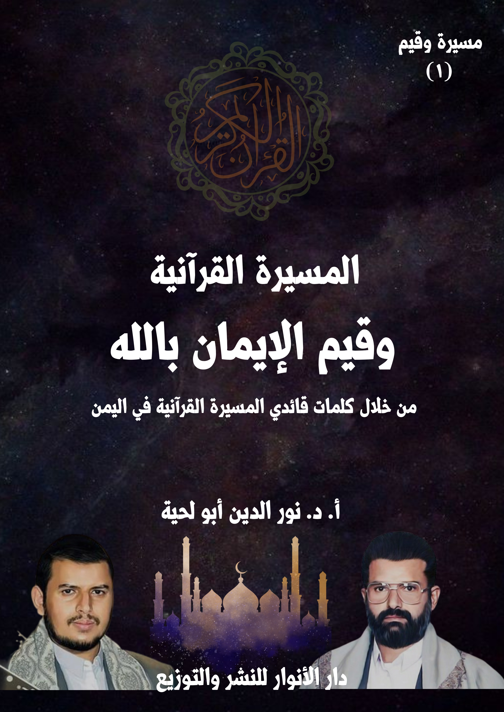

الكتاب: المسيرة القرآنية وقيم الإيمان بالله
الوصف: من خلال كلمات قائدي المسيرة القرآنية باليمن
السلسلة: مسيرة وقيم
المؤلف: أ. د. نور الدين أبو لحية
الناشر: دار الأنوار للنشر والتوزيع
الطبعة: الأولى، 1445 هـ
عدد الصفحات: 375
ISBN: 978-620-4-72102-6
لمطالعة الكتاب من تطبيق مؤلفاتي المجاني وهو أحسن وأيسر: هنا

يهدف هذا الكتاب إلى البحث عن القيم المرتبطة بالركن الأول من أركان الإيمان، وهو [الإيمان بالله]، والذي لقي عناية كبيرة من قائدي المســيرة القرآنية، حيث إنهما يذكرانه، وفي كل مناسبة، ويعتبرانه الأساس الذي تقوم عليه المســيرة القرآنية، سواء في جوانبها الفكرية والنظرية، أو جوانبها التطبيقية والتنفيذية، وسواء تلك التي تتعلق بالأخلاق الفردية والاجتماعية، أو تلك التي تتعلق بالمشروع الحضاري الذي لا يكتفي باليمن، وإنما يشمل المسلمين جميعا، بل البشرية جميعا.
وقيمة اهتمامهما بهذا الركن تتجلى عند استعراضنا للواقع الفردي أو الاجتماعي أو الدولي أو الحضاري الذي تعيشه البشرية، حيث نجد أكثرهم يعيشون الغفلة التامة عن الله، والبعد التام عنه، بل الجحود له، وعدم الاعتراف به، وهو ما يشكّل نسبة كبيرة من البشرية.
وقد حاول الكتاب طرح ما ذكره قائدا المســيرة القرآنية حول الإيمان بالله، وكيفية تحويله إلى إيمان حي فعال مؤثر عقلاني، يمكنه أن ينقذ المسلمين من حالة الغفلة التي يعيشونها، وينقذ غيرهم من الإلحاد من خلال الطروحات العقلانية والوجدانية التي يتبناها ويدعو إليها.
تحاول هذه السلسلة [مسيرة وقيم] التعرف على القيم التي تحملها المسيرة القرآنية التي انطلقت الدعوة إليها من اليمن ، ومدى صلتها بالقرآن الكريم، ومدى إمكانية تطبيقها بروحها ومعناها في سائر البلاد الإسلامية، باعتبارها مشروعا فكريا وحضاريا وتجديديا لا يختلف عن سائر المشاريع التي ظهرت في الساحة الإسلامية.
وقد دعانا إلى الاهتمام بهذا سبعة أمور:
أولها ـ الحاجة إلى إثراء الساحة الفكرية الإسلامية بهذه التجربة الرائدة، والتي لم تكتف بأن تكون مجرد مشروع فكري يسطره أصحابه في الكتب والدواوين، وهم في أبراجهم العاجية، وإنما سُطرت بالدماء قبل أن تُسطر بالمداد، وخاضت الكثير من الحروب التي أرادت استئصالها، وهي في مهدها، لكن أبى الله لها إلا أن تزداد في كل يوم نصرا على نصر، وتمكينا على تمكين، ولذلك كان البحث فيها أولى من البحث في الكثير من المشاريع الفكرية التي تفتقد إلى هذا البعد الواقعي والجماهيري الشامل.
ثانيا ـ أن هذه المســيرة مرتبطة بالقرآن الكريم؛ فأصحابها وقادتها يصرحون بذلك، ولا نكاد نسمع خطابا أو كلمة، إلا ونراهم يؤيدونها بما ورد في القرآن الكريم من الحقائق والقيم والمعاني المختلفة، ولذلك كان البحث فيها خدمة للمعارف القرآنية، وإثراء لما ورد في تدبره وتفسيره من المعاني، وخاصة إن كانت من أناس لم يكتفوا بالخلوة مع الكتب والتفاسير، وإنما عاشوا القرآن الكريم في واقع حياتهم، وأصابهم من البلاء ما لا يقل عن البلاء الذي أصاب نبينا صلى الله عليه وآله وسلم وهو يتلقى القرآن الكريم، أو يقوم بدوره في تلاوته وتربية الأمة من خلال توجيهاته.
المسيرة القرآنية وقيم الإيمان بالله (7)
ثالثا ـ أن هذه المســيرة لم تكتف بالعرض التأصيلي للدين، وحقائق القرآن الكريم، وإنما وضعت الكثير من المناهج العملية والخطط التنفيذية التي تحوّل المعاني القرآنية إلى واقع حي، يمكننا تطبيقه من غير أن ندخل أهواءنا أو أمزجتنا، كما يفعل الكثير من الذين يلقبون أنفسهم [قرآنيين]، وهم في حقيقتهم ليسوا سوى محرّفين للقرآن الكريم، ومبدلين لمعانيه، لتتناسب مع أمزجتهم وأهوائهم وتياراتهم.
رابعا ـ أن هذه المســيرة عالجت الكثير من الشبهات التي تُطرح في الواقع، ومن جهات مختلفة، وقد عالجتها، وأجابت عنها بوعي وبصيرة وعقلانية، ولذلك كان الاهتمام بعرضها والتعريف بها انتصارا للحقائق الإسلامية في وجه الشبهات التي تُثار ضدها، والتي تستغل الفهوم الخاطئة للدين، أو الممارسات الخاطئة للمتدينين.
خامسا ـ أن هذه المســيرة تحمل فهما شموليا للإسلام، ينطلق من الرؤية الكونية التوحيدية، وما يتبعها من الأسس الفكرية، ثم ما ينبع عن ذلك من سلوكات روحية وأخلاقية، ثم ما يتبع ذلك من تطبيق الإسلام وقيمه وأحكامه في جميع شؤون الحياة، ولذلك نراها لا تتبنى التدين الفردي الشخصي، وإنما تتبنى مسؤولية تحقيق الإسلام في الواقع، وفي كل المجالات، ابتداء بالحياة الشخصية، وانتهاء بالحياة السياسية.
سادسا ـ أن هذه المســيرة ـ وبالفهوم العقلانية الحضارية الواعية التي تستند إليها ـ يمكنها أن تكون واجهة جميلة للتعريف بالإسلام، وبذلك تكون بديلا عن تلك الطروحات الغالية أو الجافية التي تنتشر في الساحة الإسلامية، والتي تسيء إلى الإسلام أكثر مما تحسن.
سابعا ـ أن هذه المســيرة ـ مع كل الحسنات التي تحملها ـ لقيت تعتيما كبيرا، لا من جانب الإعلام فقط، وإنما من جانب أهل البحث والفكر، والذين ركز أكثرهم في أحسن
المسيرة القرآنية وقيم الإيمان بالله (8)
الأحوال على جوانبها السياسية، دون الغوص في منابعها وأعماقها الفكرية.
وبناء على هذا حاولنا في هذه السلسلة البحث عن الأعماق الفكرية لهذه المسيرة، دون الاكتفاء بالجانب السياسي الذي ظهرت به، والذي قد لا يعبر عنها بما يتناسب معها؛ فالظروف القاسية، والتعتيم الإعلامي، والممارسات الخاطئة التي قد يقع البعض فيها، قد تحجب عن الرؤية الحقيقية للفكرة، أو المشروع.
وحتى نتحلى بالموضوعية، والحياد العلمي، وما تتطلبه الأمانة العلمية؛ فإننا اكتفينا بأن نكون واصفين ومحللين؛ فغرضنا ليس طرح آرائنا المرتبطة بالقضايا التي نطرحها، وإنما هو وصف ما يذكره قائدا هذه المسيرة، باعتبارهما أحسن من يعبر عنها، بل هما الناطق الرسمي باسمها.
ولعله مما يسر علينا العمل في السلسلة هو ذلك التناسق بين المصدرين الفكريين الكبيرين لها، وهما السيد حسين بدر الدين الحوثي، وأخوه وتلميذه النجيب السيد عبد الملك؛ فكلاهما يكمّل الآخر، وكلاهما اكتسب من التجربة ما عمّق الطروحات، وزاد في قوتها.
لكنّ ذلك لا يمنعنا من أن نقارن ما طرحاه بما نجده في الساحة الفكرية الإسلامية، إما في واقعنا المعاصر، أو في تاريخنا وتراثنا، وخاصة أنهما في الكثير من الطروحات يذكران التحريفات التي لحقت الحقائق والقيم الإسلامية، وانحرفت بها بعيدا عن القرآن الكريم.
وقد رأينا من خلال استقرائنا لخطابات ودروس وكلمات السيدين القائدين الاهتمام بسبعة أنواع من القيم، خصصنا كل واحدة منها بكتاب خاص:
أولها: قيم الإيمان بالله تعالى، وهي الأساس الذي تقوم عليه المعارف العقدية الإسلامية، وقد وقع لها للأسف ـ كما يصرح قائدا المســيرة القرآنية ـ انحراف كبير، بسبب
المسيرة القرآنية وقيم الإيمان بالله (9)
ابتعادها عن القرآن الكريم، ولذلك حاول كلا القائدين إرجاع هذه المعارف إلى أصولها القرآنية، سواء بكيفية عرضها، أو بالمعاني التي تتضمنها.
ثانيها: قيم الإيمان بالمعاد، ذلك أن المعاد ركن أساسي من أركان الإيمان الكبرى، ولذلك يُقرن بالإيمان بالله، بالإضافة إلى كونه يرتبط بالوعد والوعيد، وهما الأساسان اللذان تقوم عليهما كل النظريات الإسلامية المرتبطة بالأخلاق والمشروع الحضاري، بالإضافة إلى كونهما أساسا من الأسس التي تقوم عليها الرؤية العقلانية الصحيحة للكون والحياة والإنسان.
ثالثها: القيم المرتبطة بمنابع الهداية الصافية، من القرآن الكريم، والنبوة، والولاية، ذلك أنها المنبع الذي يحفظ للدين أصالته، ويحميه من كل التحريفات التي عرضت له، ولا يمكن أن نجد القيم الصحيحة، ونحن نتلقى الهداية من غير منابعها الصافية.
رابعها: القيم المرتبطة بمنابع الضلال والإضلال، ذلك أنه لا يمكن أن نستقي من المنابع الصافية، ونحن لا نعلم الكدورات والسموم التي قد يضعها أئمة الضلال والإضلال، وقد ذكرنا ما ورد في القرآن الكريم بشأنهم، وهم ثلاثة: الشيطان، والمنافقون، والمستكبرون.
خامسها: قيم التزكية الروحية، وذلك لكونها الوسيلة التي تتحقق بها الصلة مع الله، وعبادته، وهي الغاية العظمى من الوجود الإنساني، بالإضافة إلى أن السلوك الروحي الصحيح هو الذي يثمر كل القيم الفاضلة، سواء القيم الأخلاقية، أو القيم الحضارية.
سادسها: قيم التزكية الأخلاقية، وذلك لكون القرآن الكريم هو أعظم كتاب يدعو إلى الأخلاق الحسنة، ويضع كل الدوافع التي تحض عليها، وعلى بيان المعايير المرتبطة بها، بالإضافة إلى تحذيره من كل الأخلاق السيئة وأسبابها، ولذلك اهتمت المســيرة القرآنية بهذه
المسيرة القرآنية وقيم الإيمان بالله (10)
الجوانب اهتماما شديدا .
سابعها: قيم المشروع الحضاري، وهي التي تهتم بالأمة، وسيادتها وعدالتها وحضارتها، وكونها شاهدة على الأمم، والفرق بينها وبين غيرها من الأمم، والفرق بين نظامها الإلهي وسائر الأنظمة، وقد اهتم بهذا البعد كلا القائدين اهتماما شديدا، ولذلك صُنفت المســيرة القرآنية ضمن حركات الإسلام السياسي، وإن كان البون بينها وبين الكثير من تلك الحركات عظيما جدا.
هذه هي المعاني الكبرى التي رأينا أن كل كلمات وخطب وبيانات السيدين القائدين تدور حولها، وقد حاولنا تبسيطها، وعرضها بطريقة تتناسب مع ما اعتدنا عليه في الساحة الفكرية عند عرض رؤى ومناهج وأفكار أي حركة أو توجه أو تيار.
وقد حاولنا قدر الإمكان أن نكتفي بما ذكراه، مع تحليله أو تبسيطه، أو مقارنته بغيره، من غير أن نتدخل في تفسيره بغير ما أراداه؛ فذلك مما يتنافى مع البحث العلمي، والأمانة العلمية.
ولذلك اضطررنا في الكثير من الأحيان إلى الاقتباس من النصوص الطويلة، وبالصيغة التي كتبت أو ألقيت بها، ولو كانت بالعامية الفصيحة التي يفهمها كل العرب، إذ رأينا أن تدخلنا قد يسيء للفكرة، أو يحولها عن مسارها، لكن إن أمنا ذلك؛ فإننا نتصرف بالاختصار وإعادة الصياغة مع التنبيه إلى ذلك.
لكنّ هذا لا يعني أننا لم نحاول الاستنتاج، أو نقرأ ما بين السطور ـ كما يقال ـ فذلك شيء طبيعي وضروري، ولا قيمة لأي بحث من دونه، وقد ميّزنا هذه الاستنتاجات عن غيرها من الطروحات الواضحة الصريحة بما يدلّ عليها من التعابير، كقولنا [ونلاحظ] ونحوها، مما لا يمكن أن يغيب على فهم القارئ.
المسيرة القرآنية وقيم الإيمان بالله (11)
وفي الأخير ـ ومن باب (من لا يشكر الناس لا يشكر الله) (1) أتقدم بالشكر الجزيل لإدارة إذاعة سام اف ام التي تُبث من العاصمة اليمنية صنعاء، والتي كان لها الفضل ـ بعد الله سبحانه وتعالى ـ في بث ونشر سلسلة الحلقات الصوتية التي تفصّل وتشرح وتبسّط ما ورد في هذه السلسلة من معانٍ، وذلك ضمن برنامجها الإذاعي (مسيرة وقِيَم) الذي خصصته مشكورةً لهذا الشأن.
وأنبّه إلى أني ـ ونظراً لتوفر تلك التسجيلات الصوتية الإذاعية ـ اقتصرت على ما ذكره قائدا المســيرة القرآنية من كلماتٍ دون تعليقات مفصّلة عليها؛ لأن الهدف هو بيان موقفهما من القضايا المختلفة.
كما لا أنسى أن أتقدم بالشكر الجزيل للدكتورة عريب أبو صالحة، المجاهدة الفلسطينية المحبّة لليمن، والمدافعة عنه وعن كل محور الجهاد والمقاومة، وفي كل المجالات؛ فلها الفضل في توفير ما أحتاجه من مصادر، وفي تعريفي بالجهات الإعلامية التي نشرت لي الجانب الصوتي المرتبط بهذه السلسلة، وأسأل الله أن يجزيها ويجزي كل المنتصرين للحق، وفي كل المحال، خير الجزاء.
__________ (1) رواه أحمد (7755)، وأبو داود (4198)ذالمسيرة القرآنية وقيم الإيمان بالله (12)
يهدف هذا الكتاب إلى البحث عن القيم المرتبطة بالركن الأول من أركان الإيمان، وهو [الإيمان بالله]، والذي لقي عناية كبيرة من قائدي المســيرة القرآنية، حيث إنهما يذكرانه، وفي كل مناسبة، ويعتبرانه الأساس الذي تقوم عليه المســيرة القرآنية، سواء في جوانبها الفكرية والنظرية، أو جوانبها التطبيقية والتنفيذية، وسواء تلك التي تتعلق بالأخلاق الفردية والاجتماعية، أو تلك التي تتعلق بالمشروع الحضاري الذي لا يكتفي باليمن، وإنما يشمل المسلمين جميعا، بل البشرية جميعا.
وقيمة اهتمامهما بهذا الركن تتجلى عند استعراضنا للواقع الفردي أو الاجتماعي أو الدولي أو الحضاري الذي تعيشه البشرية، حيث نجد أكثرهم يعيشون الغفلة التامة عن الله، والبعد التام عنه، بل الجحود له، وعدم الاعتراف به، وهو ما يشكّل نسبة كبيرة من البشرية.
ولم يكتف الكثير من هؤلاء بهذا الغرق في أوحال المادية، بل نجد منهم الدعاة النشطين للإلحاد بصوره المختلفة، وقد أتيح لهم من الوسائل والمواقع والمؤسسات ما يصلون به إلى بلاد المسلمين نفسها، تحت أسماء مختلفة، ساعد عليها الانبهار بالغرب، والدعاة لذلك الانبهار.
ومع أن نسبة هؤلاء الذين تحولوا إلى الإلحاد في واقع المسلمين قليلة ومحدودة جدا، إلا أن الغفلة عن الله، وعن مقتضيات الإيمان به، حوّلت الجماهير الكثيرة من المسلمين إلى أناس يحملون لقب الإيمان من غير أن يستشعروا أو يعيشوا معناه، كما قال تعالى: ﴿قَالَتِ الْأَعْرَابُ آمَنَّا قُلْ لَمْ تُؤْمِنُوا وَلَٰكِنْ قُولُوا أَسْلَمْنَا وَلَمَّا يَدْخُلِ الْإِيمَانُ فِي قُلُوبِكُمْ وَإِنْ تُطِيعُوا اللَّهَ وَرَسُولَهُ لَا يَلِتْكُمْ مِنْ أَعْمَالِكُمْ شَيْئًا إِنَّ اللَّهَ غَفُورٌ رَحِيمٌ﴾ [الحجرات: 14]
المسيرة القرآنية وقيم الإيمان بالله (13)
وأحسن هؤلاء حالا أولئك الذين يعيشون الغفلة الجزئية عن الله، والتي تجعله في أعينهم مجرد إله يحب أن يعبده عباده، وفي أوقات أو مناسبات محدودة، من غير أن يكون لذلك الإيمان أي تأثير في الحياة، ويعتبرونه كذلك إله الآخرة، لا إله الدنيا، وحكمه وتدبيره وجزاؤه مرتبط بالآخرة، ولا علاقة له بالدنيا.
وقد أشار السيد عبد الملك إلى كل هذه الآفات، ودور الاستكبار العالمي في نشرها والدعوة إليها، فقال: (إنّ كل مساعي الطاغوت والاستكبار، ومن يرتبط به في كل زمان، بما في ذلك في زماننا، الذي يمثل الأمريكي والإسرائيلي فيه طاغوت العصر، هي: العمل على إخراج الناس من النور إلى الظلمات، بكل الوسائل والأساليب)(1)
ثم ذكر أول مؤامراتهم في هذا الصدد، فقال: (ومجمل أعمالهم ومساعيهم تركّز على نشر العقائد والثقافات والمفاهيم الباطلة والخاطئة، المسيئة إلى الله تعالى، والمؤثرة سلبا على العلاقة الإيمانية به، والتصور الخاطئ تجاه امتداد العلاقة الإيمانية بالله تعالى في حياتنا وأعمالنا، وفي هذا السياق يسعون لنشر الإلحاد، والترويج له، والترويج للشرك بالله تعالى، وللعقائد المسيئة إلى الله جلّ شأنه، وإلى المفاهيم المغلوطة، التي تضرب الإنسان في إيمانه بالله)(2)
وقد ساعد على ظهور كل هذه الآفات في الواقع الغربي والواقع الإسلامي ذلك التشويه الذي حصل لقضايا الإيمان بالله، والانحراف بها عن الطرح القرآني، وتغليب الأهواء في طرحها، أو طرحها بطريقة جافة بعيدة عن الروحانية والعاطفة، أو طرحها بطريقة خرافية بعيدة عن العقل والحكمة.
__________ (1)) الخطاب الجماهيري للسيد القائد عبد الملك الحوثي بمناسبة ذكرى المولد النبوي الشريف، السبت 12 ـ 3 ـ 1444 هـ، الموافق لـ: 8 ـ 10 ـ 2022م. (2) المرجع السابق، بتصرف.المسيرة القرآنية وقيم الإيمان بالله (14)
وساعد عليه كذلك غفلة الحركات الإسلامية عن الاهتمام بمعالجة هذه القضايا، أو تبنيها لنفس تلك الطروحات التراثية التي تغذي الخرافة والتشويه.
ولهذا نلاحظ علما كبيرا من أعلام السعودية، بل أعلام الحركة الوهابية، وهو عبد الله القصيمي، ينقلب انقلابا كاملا من موقع النصير والمدافع عن الوهابية إلى موقع الدفاع عن الإلحاد(1)، وذلك لأن الرؤية العقدية الوهابية بما تحمله من تشبيه وتجسيم لا تنسجم أبدا مع العقول السليمة، خاصة وأن الوهابية، ومعها جميع الحركات السلفية، يتبنون جغرافية وفلكا خاصا بهم يبعدهم عن العلم والعالم أجمع.
ولهذا صارت طروحاتهم العقدية المبنية على التجسيم، وتلك الرؤية الفلكية للكون، والمرتبطة به، أداة لنشر الإلحاد؛ فلا يمكن لعاقل يطلع على ما وصلت إليه الكشوف العلمية، ومن زمان طويل أن يصدق ما يذكرونه من الخرافات التي وضعها لهم ابن تيمية، ثم تبنتها الدولة السعودية، ونشرتها على أوسع نطاق.
بناء على هذا التصوير لواقع البشرية ـ مسلمها وغير مسلمها ـ حول موقفها من الإيمان بالله نحاول في هذا الكتاب طرح ما ذكره قائدا المســيرة القرآنية حول الإيمان بالله، وكيفية تحويله إلى إيمان حي فعال مؤثر عقلاني، يمكنه أن ينقذ المسلمين من حالة الغفلة التي يعيشونها، وينقذ غيرهم من الإلحاد من خلال الطروحات العقلانية والوجدانية التي يتبناها ويدعو إليها.
وقد اعتمدنا في استنباطها بالدرجة الأولى على ما ذكره القائد الشهيد حسين بدر
__________ (1) من كتبه في الدعوة للإلحاد: (هذه هي الأغلال). (الإنسان يعصي لهذا يصنع الحضارات). (لئلا يعود هارون الرشيد مرة أخرى). (فرعون يكتب سفر التاريخ). (كبرياء التاريخ في مأزق). (هذا الكون ما ضميره؟). (أيها العار إن المجد لك). (العرب ظاهرة صوتية). (العالم ليس عقلاً)، انظر مقالا بعنوان [عبدالله القصيمي. قصة إلحاد وحكاية ملحد].المسيرة القرآنية وقيم الإيمان بالله (15)
الدين في سلسلة دروس بعنوان [معرفة الله]، والتي ألقاها بصعدة، ابتداء من 18/1/2002م إلى 8/2/2002م، وهي تبين مدى اهتمامه، واهتمام المســيرة القرآنية، ومن أيامها الأولى بهذا الركن الأصيل من أركان الإيمان.
والتحليل العلمي لتلك السلسلة، والتدبر في الأفكار التي طُرحت فيها، ومقارنتها بما هو موجود في الواقع، يدل على الرؤية الثاقبة والمعاني العميقة المتناسبة تماما مع عصرنا، بل يمكننا اعتبارها مقدمة لتأسيس علم كلام جديد، ينبني على القرآن الكريم، ويستلهم منهجه في الدعوة للإيمان.
ونفس تلك الطروحات، وبنفس ذلك العمق، مع الكثير من التبسيط المتناسب مع جماهير الناس نجده عند السيد عبد الملك في دروسه وخطبه المختلفة، ولذلك اقتبسنا منه الكثير مما رأينا الحاجة إليه في المحال المختلفة.
وقد رأينا أنه يمكن حصر ما ذكراه حول القيم المرتبطة بالإيمان بالله إلى سبع قيم، وهي: المرجعية القرآنية، وتوحيد الله، وتنزيهه، وتمجيده، وتذكر آلائه والتعرف عليها، والهداية الإلهية ومصادرها، والصلة بالله ولوازمها.
المسيرة القرآنية وقيم الإيمان بالله (16)
أولا ـ الإيمان بالله.. ومرجعية القرآن
وهي القيمة الأولى والكبرى من القيم التي تستند إليها قيم الإيمان بالله تعالى، كما تستند إليها سائر القيم.. ذلك أن المســيرة القرآنية لم تكتسب اسمها إلا من دعوتها للرجوع للقرآن الكريم، وتحكيمه في كل الشؤون، ابتداء من الشؤون العقدية، وانتهاء بالشؤون السياسية والحضارية وغيرها.
ولذلك؛ يخطئ الذين يصنفون المســيرة القرآنية ضمن التصنيفات الطائفية، ثم يحمّلونها الأخطاء التي وقعت فيها تلك الطائفة التي ينسبونها إليها، مع أن قائدي المســيرة القرآنية ينكران تلك الأخطاء، ويردان عليها بشدة، كما يردان على الأخطاء التي وقعت فيها سائر الطوائف، بل وقع فيها التراث الإسلامي جميعا.
ولذلك، فإننا نعني ـ هنا بالمرجعية القرآنية ـ اعتماد القرآن الكريم في تقرير الحقائق الإيمانية أو البرهنة عليها، وعدم الاكتفاء بما ورد في التراث من التقريرات العقدية لكونها انحرفت في ـ الكثير من نواحيها ـ عن المنهج القرآني، مما أساء إلى قضايا الإيمان، وحوّلها إلى مجرد عقائد جافة لا تأثير لها في النفس، أو في الحياة.
وقد قال السيد حسين يشير إلى ذلك ـ عند حديثه عن الثقة بالله، وكونها لا يمكن أن تتحقق من دون معرفته من خلال القرآن الكريم، لا من خلال كتب علم الكلام ـ: (والثقة القوية بالله إنما تحصل من خلال معرفته، ولا نقصد بمعرفته سبحانه وتعالى ما هو متصالح عليه في كتب علم الكلام، بل معرفته الواسعة من خلال القرآن الكريم معرفة كماله، معرفة ما أسبغ على عباده من نعم، معرفة مظاهر قدرته ودلائل حكمته، ومظاهر رحمته، أيضاً معرفة شدة بطشه، معرفة ما أعده لأوليائه، وما أعده لأعدائه، معرفة ما يحظى به أولياؤه
المسيرة القرآنية وقيم الإيمان بالله (17)
من الرعاية منه سبحانه وتعالى، معرفة أنه غالب على أمره، هذه المعرفة الواسعة)(1)
وعبر عن عظم الخطر الذي أصاب المعارف الإلهية نتيجة اقتصارها على تلك التصنيفات سواء الواردة في كتب علم الكلام أو كتب أصول الفقه، فقال: (أنا شخصياً أعتقد أن من أسوأ ما ضربنا وأبعدنا عن كتاب الله وأبعدنا عن دين الله، وعن النظرة الصحيحة للحياة وللدين، وأبعدنا عن الله سبحانه وتعالى هو [علم أصول الفقه].. بصراحة أقولها أن فن [أصول الفقه] هو من أسوأ الفنون، وأن [علم الكلام] الذي جاء به المعتزلة هو من أسوأ الأسباب التي أدت بنا إلى هذا الواقع السيئ، أبعدتنا عن الله، أبعدتنا عن رسوله، عن أنبيائه)(2)
وهو لا يعني بذلك أبدا طرح علم الكلام، أو عدم دراسته، أو عدم تدريسه، وإنما يعني عدم الاكتفاء به، أو الدعوة إلى تصحيحه لتتناسب طروحاته مع طروحات القرآن الكريم.
وهو نفس ما دعا إليه كبار المتكلمين أنفسهم، ومنهم أبو حامد الغزالي، الذي كتب الكتب الكثيرة في علم الكلام، ولكنه مع ذلك قال عنه: (فصادفته علما وافيا بمقصوده غير واف بمقصودي)(3)، لأن مقصوده ـ كما يذكر ـ كان الإيمان الحقيقي الفاعل، ولم يجد في كتب علم الكلام ما يوفره له.
ولذلك كان يرى أن المرتبة الإيمانية للمتكلمين لا تختلف عن مراتب العوام، ولهذا ينصح المتكلم بقوله:(فليعلم المتكلم حدّه ممن الدين، وأن موقعه منه موقع الحارس في
__________ (1) دروس من هدي القرآن الكريم، الدرس (2)، سلسلة معرفة الله، ألقاه السيد حسين بدر الدين الحوثي بتاريخ: 19/1/2002م، اليمن ـ صعدة. (2) دروس من هدي القرآن الكريم، ألقاه السيد حسين بدر الدين الحوثي اليمن ـ صعدة. (3) الغزالي ، المنقذ من الضلال ، ص87.المسيرة القرآنية وقيم الإيمان بالله (18)
طريق الحج، فإذا تجرد الحارس للحراسة لم يكن من جملة الحاج، والمتكلم إذا تجرد للمناظرة والمدافعة، ولم يسلك طريق الآخرة لم يكن من جملة علماء الدين أصلا.. وليس عند المتكلم من الدين إلا العقيدة التي شاركه فيها سائر العوام، وإنما يتميز عن العامي بسرعة المجادلة والحراسة)(1)
ولذلك عُرّف علم الكلام بكونه العلم الذي تُحفظ به العقائد من الشبهات، ولم يُعرّف أبدا بأنه العلم الذي يؤسس للإيمان، أو يمكّنه في القلب، لكن المتأخرين تصوروا أنه العلم الذي يؤسس للإيمان، أو يعرّف بالله، وهذا ما انتقد قائدا المســيرة القرآنية.
بناء على هذا، سنذكر هنا ثمانية فروق كبرى بين ما ورد في القرآن الكريم من معرفة الله، وبين ما ورد في كتب علم الكلام وغيرها، والتي يمكن فهمها بسهولة من خلال ما ذكره قائدا المســيرة القرآنية عند الدعوة لاستخدام المنهج القرآني في التعريف بالله بدل المنهج الكلامي، أو غيره من المناهج.
ونعني بها كون القرآن الكريم يحمل الهداية المعصومة التي لا شك في صحتها، لكونها صادرة من منبع الهداية الصافي، بخلاف كتب علم الكلام وغيرها، والتي اختلطت منابعها؛ فمن المتكلمين من تأثر بالفلاسفة، أو بالصوفية، أو بالحشوية، أو بما ينتشر في واقعه من الثقافات، بالإضافة إلى البعد البشري الذي يحمل القصور في كل الأحول.
وقد أشار السيد حسين إلى نماذج عن هذا، يمكن الاقتصار منها على نموذجين: أولهما في الفرق بين اللغة التي يعبر بها القرآن الكريم عن التعريف بالله، وثانيهما في الفرق
__________ (1) الغزالي ، الإحياء : 1/23.المسيرة القرآنية وقيم الإيمان بالله (19)
بين الاستدلالات القرآنية والاستدلالات الكلامية.
أما الأول؛ فمن أمثلته ما ذكره السيد حسين عند حديثه عن قوله تعالى: ﴿هُوَ الْأَوَّلُ وَالْآخِرُ وَالظَّاهِرُ وَالْبَاطِنُ وَهُوَ بِكُلِّ شَيْءٍ عَلِيمٌ﴾ [الحديد: 3] والذي يشير إلى الكمال الإلهي المطلق.
فقد قال في بيان معنى ﴿هُوَ الْأَوَّلُ﴾ [الحديد: 3]: (عبارة: ﴿الْأَوَّلُ﴾ تعني: لا شيء قبله، لا أولَ لأوَّلِيَّته، ليس هناك شيء سبقه أبداً في الوجود، ﴿هُوَ الْأَوَّلُ﴾، وهذه العبارة أفضل بكثير من عبارة [المتكلمين] التي يرددونها:[القديم] فيسمون الله قديماً، وهذا ـ في ما أعتقد ـ لم تَرِد في القرآن الكريم ولا مرة واحدة، أن يصف نفسه، وأن يجعلها من أسمائه [القديم]؛ لأن كلمة:[قديم] ليست مما يصح أن يُمدَح الله بها سبحانه وتعالى؛ لما فيها من إيهام وهو: أنها تُوهِم العمق الزمني، توهم العمق الزمني، كلمة: قديم، وهي في نفس الوقت إنما تعني.تعني ماذا؟ أنه لم يسبقه عدم، [قديم]: لم يسبقه عدم،لم يكن محدثا ثم وجد)(1)
ثم ذكر الفرق بين تلك الكلمة التي ذكرها المتكلمون، وكلمة ﴿الْأَوَّلُ﴾ الواردة في القرآن الكريم، فقال: (بينما كلمة: ﴿الْأَوَّلُ﴾ هي أهم بكثير، فهي لا تُوهِمُ هذا الإيهَام، وهي تتجه إلى نفس المطلوب بِدَايةً، دون ترتيب مُقَدِّمات، الله هو الأول فلا شيء قبله، وهذا هو المطلوب: أن نثبت أن كل من سواه هو مخلوق له سبحانه وتعالى)(2)
وهكذا في باقي الأسماء الحسنى، فقد قال في بيانه لما ورد في الآية الكريمة من الأسماء
__________ (1) دروس من هدي القرآن الكريم، الدرس (6)، سلسلة معرفة الله، آيات من بداية سورة الحديد، ألقاه السيد حسين بدر الدين الحوثي، بتاريخ: 23/1/2002م، اليمن ـ صعدة. (2) المرجع السابق.المسيرة القرآنية وقيم الإيمان بالله (20)
الحسنى: (وهو ﴿الْآخِرِ﴾ بعد فناء الأشياء، وهو ﴿الظَّاهِرُ﴾، الظاهر لعباده، الظاهر لمخلوقاته، ليس غائباً كما يقول [المتكلمون]! فيقولون: [قياساً للغائب على الشاهد]، يعرف هذا من قرأ في كتب [علم الكلام] وهذه العبارة القاصرة التي ترسخ غياب الله في ذهنية الإنسان، وفعلاً الإنسان الذي يتأمل سيجد كم كان لهذه من آثار سيئة جداً، ترسيخ في شعور الإنسان غياب الله بهذه العبارات: [من باب قياس الغائب على الشاهد] وهكذا يكررونها)(1)
ثم انتقل من الحديث عن هذا الأثر إلى الحديث عن الأثر الثاني، وهو الفرق بين استدلالات القرآن الكريم، واستدلالات المتكلمين، فقال: (ولهذا لما جعلوا الله غائباً اتجهوا ليـبحثوا عن وجوده هو، عن هل هو موجود أو لا، فيأتوا إلى ترتيب مقدمات معينة، تبدأ بالحديث عن [أن هذه الأشياء وجدناها مُحدَثة؛ لكونها ملازمة لعلامات الحدوث، إذاً فهي مُحدَثة، إذاً هناك من هو مُحْدِثٌ لها، إذاً هناك مُحدِث]، وعلى هذا النحو يتحركون فيجعلون الله سبحانه وتعالى بالنسبة لنا بحاجة إلى أن نستدل على وجوده بأي شيء من مخلوقاته، بينما هو يصف نفسه سبحانه وتعالى بأنه: ﴿الظَّاهِرُ﴾، هو أظهر من مخلوقاته، هو أظهر من مخلوقاته، هو من غَرَزَ في نفوس عباده معرفته، المعرفة الجملية، لم يغب اسمه عن ذهنية البشرية)(2)
ثم ذكر اختلاف هذا المنهج مع المنهج القرآني الذي يعنى بالحضور المطلق لله، وفي كل الشؤون، فقال: (والقرآن الكريم أكد هذه، وهو يذكر لنا كيف كان الأنبياء يدعون أممهم إلى الله، وكيف كانت تلك الأمم إنما تنازع في ما يتعلق بالوحدانية، أنها غير مستعدة
__________ (1) المرجع السابق. (2) المرجع السابق.المسيرة القرآنية وقيم الإيمان بالله (21)
أن تتخلى عن الآلهة الأخرى، لينفرد الله هو وحده بعبادتهم له، وينازعوا الأنبياء في أنه بعد لم يثبت لديهم أو أنهم يريدون أن يثبت لديهم بأنهم رسلٌ من الله، ليس هناك إشكالية حول وجود الله، حتى ولا عند الكافرين ﴿وَلَئِنْ سَأَلْتَهُمْ مَنْ خَلَقَ السَّمَاوَاتِ وَالْأَرْضَ لَيَقُولُنَّ خَلَقَهُنَّ الْعَزِيزُ الْعَلِيمُ﴾ [الزخرف: 9] ﴿وَلَئِنْ سَأَلْتَهُمْ مَنْ خَلَقَهُمْ لَيَقُولُنَّ اللَّهُ﴾ [الزخرف: 87] ولئن سألتَ مَن؟ سألت الكافرين، بل يقول الإمام محمد بن القاسم بن إبراهيم (صلوات الله عليهم): (أن الله غرَزَ معرفته في نفوس عباده من الملائكة والإنس والجن) حتى قال أيضاً: (بل والطير والحيوانات الأخرى كلها تعرف الله)، وكل ما تشاهده، كل ما تشاهده أنت في واقعك تشهد بسبق خالقه، بسبق صانعه في فطرتك قبل أن تنطلق لترتب مقدمات كلامية منطقية: [هذا مُحْدَث فلا بد له من مُحْدِث، فثبت أن له مُحْدِث].. من أين قلت: [مُحدَث]؟ أليس بعد أن شهدتَ بأن فيه علامات التدبير والخلق، إذاً أنت تشهد أولاً، أنت تشهد أولاً في فطرتك بوجود الخالق، وتشهد بسبق الخالق، وإلا لما عرفتَ أن هذا فعل، ولما انطلقت لترتب هذه المقدمة)(1)
وهذا ما يشير إليه المتكلمون فيما يسمونه [دليل الصديقين]، وهو الدليل الذي أشار إليه قوله تعالى: ﴿سَنُرِيهِمْ آيَاتِنَا فِي الْآفَاقِ وَفِي أَنْفُسِهِمْ حَتَّى يَتَبَيَّنَ لَهُمْ أَنَّهُ الْحَقُّ أَوَلَمْ يَكْفِ بِرَبِّكَ أَنَّهُ عَلَى كُلِّ شَيْءٍ شَهِيدٌ﴾ [فصلت: 53]
فقد أشارت الآية الكريمة إلى كل أنواع البراهين: سواء تلك التي يبدأ فيها الباحث من الأدنى إلى الأعلى عبر البحث في الآفاق والأنفس، أو عبر البدء من الأعلى إلى الأدنى، وهو شهادة الله على الكائنات، أو للكائنات.. أي أنه هو الشاهد على وجودها، فلولا
__________ (1) المرجع السابق.المسيرة القرآنية وقيم الإيمان بالله (22)
وجوده ما كان وجودها.
لكن المتكلمين لم يولوا هذا الدليل العناية الكافية على خلاف القرآن الكريم الذي اعتبره الدليل الأساسي الأكبر، وقد قال معبرا عن ذلك: (الله سبحانه وتعالى هو أظهر من كل مخلوقاته؛ ولهذا ـ في ما أفهم والله أعلم ـ لم أجد في القرآن الكريم آية واحدة ـ على الرغم مما ذكره الله سبحانه وتعالى من مظاهر قدرته ونعمته وحكمته و. إلى آخره ـ أن ذكر شيئاً منها بعبارة: [أليس ذلك يدل على أنني كذا]، لا تجد هذه في القرآن الكريم، ليس هناك آية تقول: [أليس ذلك دليل على أني قادر، أليس ذلك دليل على أني حي، أليس ذلك دليل على أني حكيم، أليس ذلك يدل على أن لها خالق، يدل]، لم ترد هذه إطلاقاً؛ لأنه هو ﴿الظَّاهِرُ﴾، هو ﴿الظَّاهِرُ﴾، هو الذي فطر النفوس على معرفته، بل لم يأتِ أحد ليسمي صنماً باسمه، أو يسمي بشراً باسمه، أو يسمي شيئاً باسمه، الذي هو اسم لذاته سبحانه وتعالى المقدسة: [الله]، ﴿هَلْ تَعْلَمُ لَهُ سَمِيًّا﴾ [مريم: 65] كان المشركون يسمون الآلهة [هُبَل، اللاَّت، العُزَّي، وُد، سُواع، يَغُوث، يَعُوق].. الله معروف لدى البشر أنه [الله]، هو الإله، هو الذي خلق السموات والأرض، هو الذي خلقهم، هم يعرفون هذه، لم يأتوا ليسموا صنماً آخر باسمه أبداً، هو إله، بل هو إله مقدس لدى البشر، إله مقدس لدى البشر في كل مراحل تاريخ البشرية)(1)
ثم أشار إلى ما يطلق عليه المتكلمون [دليل الفطرة]، والذي لا يولونه العناية الكافية، بل يعتبرونه أقل اعتبارا من الأدلة التي وضعوها، أو استفادوها من الفلاسفة، فقال: (بل يقول أحد الكتاب أيضاً: بأنه في هذا العصر ـ في استبيان ـ ظهر بعد أن اُكتشِفت
__________ (1) المرجع السابق.المسيرة القرآنية وقيم الإيمان بالله (23)
مناطق بدائية، قُبُل بدائية، وعرف بأن الله معروف لديها، قُبُل بدائية في مجاهل أفريقيا وفي مناطق أخرى في هذا العالم، وما يزال بعضهم شبه عُراة، والله معروف لديهم)(1)
وبناء على هذا، اعتبر تقصير المتكلمين في حق اسم الله تعالى ﴿الظَّاهِرُ﴾ خطيرا؛ فقد قال: (لهذا كان هناك تأثير سلبي وسيئ جداً لترتيبات المتكلمين المنطقية، لمقدماتهم المنطقية حيث جعلونا نحتاج نحن ـ حتى نعرفه ـ أن نستدل عليه بأي شيء من هذا لنعرف وجوده من حيث المبدأ: أن هناك إله، أن هناك [الله].. كيف وهو الذي قال سبحانه وتعالى: ﴿وَنَفْسٍ وَمَا سَوَّاهَا فَأَلْهَمَهَا فُجُورَهَا وَتَقْوَاهَا﴾ [الشمس: 7 ـ 8] كيف يلهمها فجورها وتقواها ولا يلهمها معرفته، ولا يفطرها على معرفته، وهي من أهم، من أهم ما يمكن أن تسير بالنفس نحو الهدى، وتصرفها عن الفجور ـ معرفته سبحانه وتعالى ـ هل مجرد أن تهتدي إلى ما هو تقوى وإلى ما هو فجور أهم من معرفته سبحانه وتعالى؟.. هو قال: أَلْهَمَهَا ﴿فَأَلْهَمَهَا فُجُورَهَا وَتَقْوَاهَا﴾ [الشمس: 8] فكيف لا يلهمها ما هو أساس. ما هو الأساس في أن تنطلق في التقوى وتبتعد عن الفجور، وهو معرفته سبحانه وتعالى!؟.. فالمعرفة الجملية لدى البشر قائمة، ومترسخة في ذهنيتهم، بما فطرهم الله، بما فطر نفوسهم عليه، وبواسطة رسله المتعاقبين جيلاً بعد جيل، وكتبه التي أنزلها إليهم، فلم يغب ذكره عن ذهن البشرية، ولا عن مسامعها، فهو ﴿الظَّاهِرُ﴾)(2)
ثم ذكر آثار ذلك التقصير في المعرفة الوجدانية بالله، فقال: (يجب أن نلغي تماماً استخدام عبارات المتكلمين: [الغائب.الغائب. قياساً للغائب على الشاهد، قياساً للغائب على الشاهد]، وأشياء من هذه، فأول ما يرسخون في نفسيتك: أنك تقوم تبحث عن من هو
__________ (1) المرجع السابق. (2) المرجع السابق.المسيرة القرآنية وقيم الإيمان بالله (24)
الذي أسدى إليّ هذه النعمة، نُدوِّر هنا وهنا.. نجد أن هذه النعم لها محدث، إذاً لها محدث.. تمام اتفقنا. مَن هو؟.. بقي الإشكال مَن هو؟.. لم يستطيعوا أن يجيبوا عليه من هو؟ لأن غاية ما يمكن أن تحصل عليه من خلال تلك المقدمات هو ماذا؟: أن لها صانع.. لا بأس لها صانع، لكن مَن هو؟ وأي دليل نظري ترتبه على هذا النحو يمكن أن يوصلك إلى الله؟ لا تجد.. لا يوصلك إلى الله إلا فطرتك، وإلا أنبياؤه وكتبه؛ ولهذا نجد: [وهو الله] هم يقولوا هكذا: فدل على أن لها محدث وهو الله تعالى](1)
وبعد أن ذكر القصور الذي يقع فيه المتكلمون نتيجة هذه الثغرات المنطقية، ذكر الدليل القرآني الذي يخلو منها، والذي يصور الأمر بصورة لا تتنافر مع العقول ولا مع الفطر، ذلك أن أعظم دليل على الله هو إعلانه عن نفسه، وإرساله لرسله من خلالهم.
فالله تعالى لعنايته ورحمته ولطفه بعباده لم يكتف بالإعلان عن نفسه من خلل صنعته، ولا من خلال آياته، ولا النظام الذي نظم به الكون.. وإنما أضاف إلى ذلك كله هدايته لعباده، ودلالته لهم بكل الألسنة واللغات والوسائل والأساليب، حتى لا تبقى حجة لمحتج، ولا عذر لمعتذر.
وقد أشار السيد حسين إلى هذا المعنى بقوله ـ في الرد على تلك القفزة التي وقع فيها المتكلمون ـ: (هذه القفزة ليست نتيجة منطقية لترتيب المقدمات هذه أبداً، نتيجةٌ منطقية هو أن لها محدث، لكن قولك: [وهو الله] من أين أتيت بها؟ إنما من خلال أنبيائه، من خلال كتبه، من خلال ما فطر النفوس عليه؛ لأن [وهو الله] هو يأتي بعد سؤال: إذاً فمن هو هذا المحدث؟ من هو؟ رتب لي مقدمات توصلني إلى أنه هو الله، الله)(2)
__________ (1) المرجع السابق. (2) المرجع السابق.المسيرة القرآنية وقيم الإيمان بالله (25)
ثم قال: (الله إنما أتى من خلال الفطرة التي فطر النفوس عليها، ومن خلال أنبيائه ورسله، وليس عندما تقرأ في [العقد الثمين] أو تقرأ في [الأساس] أو تقرأ في كتب أخرى من هذه كتب المتكلمين المصبوغة بأساليب المعتزلة وعباراتهم فيقول لك: وهو الله، وهو الله، وهو الله. الخ.. هو الله، لكن ليس على هذا الاستدلال الذي ذكرته، هذا الاستدلال يجعل الله بحاجة إلى أبسط مخلوقاته في أن يدل عليه، ونحن ـ كما قلنا سابقاً ـ لم نجد في القرآن الكريم آية واحدة بعد أن يذكر الله كثيراً من مظاهر خلقه، ومفردات هذا الكون فيقول: [أليس ذلك دليل على أني حي، أو على أني قادر]؟.. أبداً يقول لك: ﴿أَلَيْسَ ذَلِكَ بِقَادِرٍ عَلَى أَنْ يُحْيِيَ الْمَوْتَى﴾ [القيامة: 40] أي أليس مَن صنع هذا بقادر على أن يصنع هذا؟)(1)
ثم أشار إلى دقة تعبير القرآن الكريم عن هذه المعاني، فقال: (لاحظوا حتى في [سورة الحج] لم يفْرُق بين الموضوع إلا حرف واحد هو حرف [الباء]: ﴿ذَلِكَ بِأَنَّ اللَّهَ هُوَ الْحَقُّ وَأَنَّهُ يُحْيِي الْمَوْتَى وَأَنَّهُ عَلَى كُلِّ شَيْءٍ قَدِيرٌ﴾ [الحج: 6] بعد أن ذكر في بيان الأدلة التي تقمع كل ذلك الريب الذي لدى المشركين في ما يتعلق بالبعث ﴿ذَلِكَ بِأَنَّ اللَّهَ هُوَ الْحَقُّ﴾ [لقمان: 30]، لم يقل: ذلك أن الله هو الحق؛ فتوهم العبارة: أنه استدل على أنه حق بهذه الأشياء، فهي دلت على أنه حق، ذلك بسبب أنه هو الحق، بسبب أنه هو الحق كانت على هذا النحو، ﴿وَأَنَّهُ يُحْيِي الْمَوْتَى وَأَنَّهُ عَلَى كُلِّ شَيْءٍ قَدِيرٌ﴾ [الحج: 6]، أي ولأنه يحيى الموتى، ولأنه على كل شيء قدير)(2)
ثم ذكر نماذج قرآنية أخرى على ذلك، ومنها ما ورد في آخر سورة [القيامة] من قوله تعالى: ﴿أَيَحْسَبُ الْإِنْسَانُ أَنْ يُتْرَكَ سُدًى أَلَمْ يَكُ نُطْفَةً مِنْ مَنِيٍّ يُمْنَى ثُمَّ كَانَ عَلَقَةً فَخَلَقَ
__________ (1) المرجع السابق. (2) المرجع السابق.المسيرة القرآنية وقيم الإيمان بالله (26)
فَسَوَّى فَجَعَلَ مِنْهُ الزَّوْجَيْنِ الذَّكَرَ وَالْأُنْثَى أَلَيْسَ ذَلِكَ بِقَادِرٍ عَلَى أَنْ يُحْيِيَ الْمَوْتَى﴾ [القيامة: 36 ـ 40]، وقد قال ـ في بيانها ـ: (هل تستطيع أن تقول: أن ذلك هو إشارة إلى الله؟. لا. أليس هذا دليل على أن من قدر عليه هو قادر على أن يحيى الموتى، فيوجه الاستدلال إلى الفعل وليس إلى الدلالة عليه هو، من قدر على هذا قادرٌ على هذا، من صنع هذا قادر على صنع هذا)(1)
ومن تلك النماذج ما ورد في سورة الغاشية، حيث قال ـ موضحا له ـ: (تجد أيضاً في [سورة هل أتاك حديث الغاشية] بنفس الأسلوب؛ بحيث لو لم تحمله على نفس الطريقة ستقول الاستدلال هذا غير منطقي.. عندما قال ـ وهو يبين قدرته سبحانه وتعالى على البعث ـ: ﴿هَلْ أَتَاكَ حَدِيثُ الْغَاشِيَةِ﴾ [الغاشية: 1] القيامة.. إلى أن قال: ﴿أَفَلَا يَنْظُرُونَ إِلَى الْإِبِلِ كَيْفَ خُلِقَتْ وَإِلَى السَّمَاءِ كَيْفَ رُفِعَتْ وَإِلَى الْجِبَالِ كَيْفَ نُصِبَتْ وَإِلَى الْأَرْضِ كَيْفَ سُطِحَتْ﴾ [الغاشية: 17 ـ 20] في مقام ماذا؟ في الاستدلال على أن هناك بعث، لا بد من بعث.. ما العلاقة بين الجمل والجبل والسماء منطقياً ـ كترتيب مقدمات منطقية ـ وبين البعث؟ ما العلاقة بين قامة الجمل وارتفاعه وطول قوائمه وبين البعث؟.. هل هناك علاقة؟ إلا من هذا القبيل: أن من قدر على هذا، وظهر في هذا حكمته وقدرته على كل شيء، هو قادر على هذا الشيء الآخر؛ فلهذا كان الجمل دليلاً على البعث، من حيث أن من قدر على صنع هذا الجمل، وعلى خلق هذا الجبل، وعلى رفع هذه السماء بما فيها من وضوح على أنه هناك قدرة لا حد لها، لا يعجزها شيء.. إذاً فالبعث ممكن، فهو قادر على أن يحيي الموتى، قادر على أن يبعث الناس من جديد)(2)
__________ (1) المرجع السابق. (2) المرجع السابق.المسيرة القرآنية وقيم الإيمان بالله (27)
والأخطر من هذا ـ كما يذكر السيد حسين ـ هو ما حصل في الواقع الإسلامي من تقديم الاستدلال الكلامي على الاستدلال القرآني، بل اعتبار الاستدلال القرآني أضعف من الاستدلال الكلامي، وقد قال معبرا عن ذلك: (ألـم يُقدم الأنبياء في فن [علم الكلام] عند من يقرأ المقدمات المنطقية التي جاء بها المعتزلة في الاستدلال، ألم تصبح أنت تنظر إلى الأنبياء في منطقهم ـ الذي عرضه القرآن الكريم ـ منطق مرشدين مساكين موعِّظين!؟ ألم يقل أولئك وهم يتناقشون: هل يصح الاستدلال بالقرآن الكريم في مجال معرفة الله أم لا؟.. طائفة تتناقش، أو يحصل بينها خلاف حول هذه النقطة فترى الكثير منهم يقولون: (لا.. لا يصح الإستدلال على معرفة الله بالقرآن لأن ذلك يستلزم الدور).. أليس كلنا يعتقد أن هذا يؤدي إلى الدور؟)(1)
ثم ذكر استدلالهم على هذا العزل للقرآن الكريم، فقال: (يقولون لنا: الاستدلال بالقرآن الكريم على معرفة الله يستلزم منه الدور، أولاً يجب أن تعرف الله بطرق منطقية عقلية، مقدمات عقلية هناك، ثم متى عرفت الله؛ لأن صحة القرآن متوقفة على معرفة الله، هكذا يقولون!؟)(2)
ثم بيّن خطورة هذه الرؤية وآثارها، فقال: (يبدو هذا الاستدلال منطقياً ـ هو استدلال مغلوط من أساسه ـ فيبدو الأنبياء في القرآن الكريم في منطقهم وهم يتحدثون مع أممهم، وهم يتحركون في إبلاغ رسالات الله في أوساط أممهم يبدون أناساً لا حكمة لديهم ولا حنكة، ويبدون أناساً ضعافاً مرشدين موعِّظين! فنحن من لا نعرف أنبياء الله، ونحن
__________ (1) المرجع السابق. (2) المرجع السابق.المسيرة القرآنية وقيم الإيمان بالله (28)
من لا نعرف كتاب الله بالشكل المطلوب)(1)
بالإضافة إلى هذا، أشار قائدا المســيرة القرآنية في محال مختلفة إلى الآيات الكريمة الكثيرة التي يمكن الاستفادة منها في معرفة الله تعالى، والتي لم تجد العناية الكافية من المتكلمين، وكأنه لا علاقة لها بالموضوع.
ومن الأمثلة على ذلك ما عبر عنه السيد حسين بقوله: (الآيات التي نحصل من خلالها على معرفة لله بالشكل المطلوب هي آيات كثيرة جداً، جداً في القرآن الكريم، تلك الآيات التي تتحدث عن ألوهية الله، وملكه، وعظمته، تلك الآيات التي تتحدث عن عظيم نعمه علينا، تلك الآيات التي تتحدث بأن له ملك السموات والأرض، التي تتحدث بأنه مالك السموات والأرض وما بينهما، وهو من يملك اليوم الآخر، وبيده مصيرنا، هو من يملك الجنة، من يملك النار، هو من يعلم الغيب والشهادة، هو العزيز، هو الحكيم، هو السميع، هو البصير، هو الرؤوف، هو الرحيم.. تلك الآيات التي تتحدث عنه سبحانه وتعالى بأنه جدير بأن يثق به عباده، وأن يخاف منه عباده، وأن يلتجئ إليه أولياؤه)(2)
ثم ذكر نماذج عن القراءات غير الواعية للكثير من الآيات الكريمة، فقال: (نحن نقرأ دائماً ﴿بِسْمِ اللَّهِ الرَّحْمَنِ الرَّحِيمِ الْحَمْدُ لِلَّهِ رَبِّ الْعَالَمِينَ﴾ [الفاتحة: 1 ـ 2] ألسنا نقول: رب العالمين؟ لكن لا نعرف ماذا يعني أنه رب العالمين، ما يترتب على هذا من الأشياء بالنسبة لنا!.. ﴿الرَّحْمَنِ الرَّحِيمِ مَالِكِ يَوْمِ الدِّينِ إِيَّاكَ نَعْبُدُ وَإِيَّاكَ نَسْتَعِينُ﴾ [الفاتحة: 3 ـ 5] هكذا نصفه بأنه رحمن رحيم، وأنه ملك يوم الدين، لكن مجرد عبارات نقرؤها، ونقفز عليها لا نحاول أن نفهم ماذا يعني، أنه إذا كان هو رحمن إذاً فهو عندما ينزل القرآن الكريم، ويهدينا بالقرآن
__________ (1) المرجع السابق. (2) دروس من هدي القرآن الكريم، معنى (لا إله إلا الله)، الدرس __________ (1)، ألقاه السيد حسين بدر الدين الحوثي بتاريخ: 18/1/2002م، اليمن ـ صعدة.المسيرة القرآنية وقيم الإيمان بالله (29)
الكريم فهو من منطلق أنه رحيم بنا.. إذاً فكل ما في القرآن الكريم من توجيهات وإرشادات وهداية هي كلها رحمة بنا.. ﴿مَالِكِ يَوْمِ الدِّينِ﴾ [الفاتحة: 4] إذا كان هو من له الملك وحده في يوم القيامة فهو وحده من يجب أن نلتجئ إليه، ونرغب إليه، ونرغب فيه، ونخاف منه؛ لأنه يوم لا بد أن نحشر فيه إلى الله سبحانه وتعالى، فإذا لم يكن هناك أي مُلْكٍ، أي مشاركة لأي أطراف أخرى في ملك ذلك اليوم، وليس الملك إلا لله الواحد القهار، إذاً فهو وحده الذي يجب أن نخاف منه؛ لأن أعظم نعيم هناك في الآخرة بيده، وأشد عذاب أليم هناك في الآخرة بيده، فهو من يملك الجنة، ومن يملك النار، فهو وحده الذي يمكن أن يمنحنا الجنة، وهو وحده الذي يمكن أن يوصلك إلى قعر جهنم)(1)
ونعني بها كون القرآن الكريم لا يكتفي بالهداية الإرشادية فقط، بل له دور في تحقيق الهداية التكوينية، أي أنه يؤهل صاحبه لتتنزل عليه أنوار الهداية الإلهية، وهذا لا يتوفر أبدا في الكتب الكلامية وغيرها.
وقد أشار السيد حسين إلى هذه الناحية المهمة عند حديثه عن قوله تعالى عن نبي الله يوسف، ومثله عن نبي الله موسى عليهما السلام: ﴿وَلَمَّا بَلَغَ أَشُدَّهُ آتَيْنَاهُ حُكْمًا وَعِلْمًا وَكَذَلِكَ نَجْزِي الْمُحْسِنِينَ﴾ [يوسف: 22]، فقد قال: (لو تقرأ ما قرأت طول عمرك، ورصَّات الكتب بين يديك مجلد بعد مجلد، وأنت لا تحظى برعاية من الله سبحانه وتعالى أن يعلمك هو، أن يرشدك هو، أن يهديك، أن يفهمك فإن غاية ما تحصل عليه قليل من العلم وكثير من
__________ (1) المرجع السابق.المسيرة القرآنية وقيم الإيمان بالله (30)
الجهل)(1)
ثم ذكر نماذج واقعية عن ذلك، فقال: (كم سمعنا عن أشخاص في تاريخ الإسلام، كم تركوا من تراث من الكتب؟ وكيف عرفت حياتهم حتى قيل عن بعضهم: أن كراريس علمه بلغت أكثر من أيام عمره، أكثر من شخص قيل فيه هذا، ولكن لو تستعرض ما تركه تجد أنه كان بحاجة ماسة، في حاجة ماسة إلى أن يهتدي بالقرآن الكريم، وأن يستأنف حياته من جديد مع القرآن الكريم)(2)
ثم انطلق من تشخيص هذه الحالة التي تمثل بعض أفراد الأمة إلى الخلل الذي وقعت فيه الأمة جميعا، فقال: (فإن كل خلل يحصل سببه نقص في معنى (لا إله إلا الله) في نفسك، فترى الركام الذي تركه هذا، والركام الذي تركه ذاك، وتلك العبارات المنمقة عند هذا، والعبارات المنمقة عند ذاك، تراها وكأنها هي الحكمة، وكأنها هي الهدى، وكأنها هي الصواب، وترى وكأن القرآن الكريم الذي عايشته وأنت صغير، وقرأته وأنت ما تزال طفلاً، ما يزال فهمك محدوداً، ما يزال إدراكك للمعاني ضعيفاً، تتعامل معه وكأنه هو ذلك الكتاب الذي عايشته في الصغر فتنطلق بعد هذا، وبعد ذاك، وبعد تلك العبارات المنمقة، وبعد تلك المجلدات الطويلة، وكأن هناك الهدي، وكأن هناك الحكمة، وكأن هناك العلم)(3)
ثم ذكر نموذجا على ذلك بابن تيمية الذي أصبحت كتبه البديل عن القرآن الكريم عند من يتأثرون به، وبما يعتبرونه علما واسعا، فقال: (بل وفي الحقيقة ـ كما أسلفت ـ نحن
__________ (1) دروس من هدي القرآن الكريم، الدرس (2)، سلسلة معرفة الله، ألقاه السيد حسين بدر الدين الحوثي بتاريخ: 19/1/2002م، اليمن ـ صعدة. (2) المرجع السابق. (3) المرجع السابق.المسيرة القرآنية وقيم الإيمان بالله (31)
نعرف أشخاصاً كابن تيمية مثلاً من العلماء الذين عُرفوا بغزارة العلم ـ بالمعنى المتعارف عليه ـ أي: كثرة المقروءات، والكتابة، والحديث هنا وهنا، في هذه المسألة وتلك المسألة، لكنه كان يفتقد إلى أسس، إلى أسس ينطلق منها، أسس يرشد إليها القرآن الكريم، لينطلق منها هو وغيره من أمثاله ممن يمكن أن تلمس لديهم عقائد باطلة، أقوال غريبة، وجهة نظر شاذة)(1)
ثم ذكر سبب ذلك، فقال: (سبب ذلك كله هو أنه لم يحصل اعتماد ـ بالشكل المطلوب ـ على القرآن الكريم، وأنه لم يحصل اعتماد بالشكل المطلوب على القرآن الكريم، سببه تأثر بثقافة معينة، وضعف في تحقق معنى (لا إله إلا الله)؛ لأن مما أكد الله سبحانه وتعالى في القرآن الكريم وهو يؤكد ألوهيته أنه هو من له الحق أن يهدي عباده، وأنه هو من سيتولى هدايتهم، وعندما يتولى الله هدايتك فما أوسع هداية الله، إنه عالم الغيب والشهادة، إنه الذي يعلم السر في السموات والأرض، إنه العليم بذات الصدور، فعندما يهديك هو يهديك للمعرفة الصحيحة الواسعة يهديك إلى أبواب من الهدى تفتح أمامك أبواباً، وأبواباً)(2)
وهو يدعو بذلك إلى ما دعا إليه القرآن الكريم كثيرا، وهو توفير القابلية للهداية، لا كثرة المطالعات التي لا يمكنها أن تصرف الحجب والموانع التي تمنع صاحبها من تنزل الهداية عليه، كما قال تعالى: ﴿فَلَمَّا جَاءَتْهُمْ رُسُلُهُمْ بِالْبَيِّنَاتِ فَرِحُوا بِمَا عِنْدَهُمْ مِنَ الْعِلْمِ وَحَاقَ بِهِمْ مَا كَانُوا بِهِ يَسْتَهْزِئُونَ﴾ [غافر: 83]، فالآية الكريمة تشير إلى أن فرح هؤلاء الأقوام بعلومهم، حال بينهم وبين الاستفادة من العلوم التي جاء بها الأنبياء عليهم السلام.
وقد عبر عن هذا المعنى السيد حسين بقوله: (مهم جداً أن تترسخ لدينا معاني (لا
__________ (1) المرجع السابق. (2) المرجع السابق.المسيرة القرآنية وقيم الإيمان بالله (32)
إله إلا الله) والتي من أبرزها أن نمنح أنفسنا لله فنفتح قلوبنا لهديه، نَدَعُه هو الذي يهدينا؛ لأنه هو الذي قال: ﴿إِنَّ عَلَيْنَا لَلْهُدَى﴾ [الليل: 12].. يقول: هذا عليَّ، وهذا هو مسئوليتي، وهذا أنا سأتكفل به لمن فتح قلبه لي ﴿إِنَّ عَلَيْنَا لَلْهُدَى﴾ [الليل: 12] ﴿قُلْ إِنَّ الْهُدَى هُدَى اللَّهِ﴾ [آل عمران: 73] ﴿إِنْ يَتَّبِعُونَ إِلَّا الظَّنَّ وَمَا تَهْوَى الْأَنْفُسُ وَلَقَدْ جَاءَهُمْ مِنْ رَبِّهِمُ الْهُدَى﴾ [النجم: 23](1)
وبناء على هذا يذكر أن خير كتاب يوفر هذه القابلية هو القرآن الكريم، يقول في ذلك: (فنحن عندما ننطلق لنتعرف على إلهنا يجب أن نعتمد على القرآن الكريم، وأن نتوجه إلى الغوص في بحور معرفته. معرفته الواسعة)(2)
وحتى يبرهن على هذا ذكر نموذجا قارن فيه بين الطرح القرآني وبين طرح علماء الكلام، فقال: (عندما نأتي إلى كتب علم الكلام ونجدها تتحدث عن قضايا محدودة وبأسلوب محدود ومناقشات طويلة عريضة حول قضايا أفعال الإنسان، هل هي منه أم هي من الله؟ حول قضايا من هذا النوع، سببها أن الجميع ابتعدوا عن القرآن الكريم فلم يكن لله في نفوسهم العظمة، العظمة التي تجعل كل مسلم ينـزه الله تلقائياً عن أن يقضي بالباطل، أو يقدر المعاصي، أو يريد الظلم، أو يريد القبائح، أو يخلقها أو يقدرها أو يسيَّر إليها)(3)
في مقابل هذا، ذكر تحدث عن القرآن الكريم، فقال: (القرآن الكريم تكفل بهذا تلقائياً، بينما الغوص في خضم تلك القواعد تخرج منها وفي رأسك من الإشكاليات ما يجعلك تتأوه وتتأسف على ما فاتك من فطرتك السليمة، ومعرفتك البديهية التي كان
__________ (1) المرجع السابق. (2) المرجع السابق. (3) المرجع السابق.المسيرة القرآنية وقيم الإيمان بالله (33)
بالإمكان لو بقيت سليمة، وقدمت أمام القرآن الكريم لكان ما يحصل من خلال القرآن الكريم هو ما ينسجم معها، ويخلق الطمأنينة، ويزكي النفس، ويطهر القلب، ويوسع المعرفة، ويخلق الخشية والعظمة والخوف والتقى والإيمان وغير ذلك من المعارف)(1)
ثم استدل لهذا بالخشونة والجفاف الذي عرف به علماء الكلام، كما عرف به علمهم، فقال: (لذلك كان من المعروف أن المتكلمين هم من عرفوا بالخشونة حتى قال الإمام القاسم بن إبراهيم (صلوات الله عليه) ـ لا أدري حكاية عن غيره أو قالها عن نفسه ـ (أنه لم يُعْرَف أن متكلماً خشع) أي أحد من علماء الكلام أولئك الذين ينشغلون بتلك العبارات، والتي معظمها مصبوغة بمنطق الفلاسفة ومتأثرة بأساليب الفلاسفة من الإماميين وغيرهم، وتلحظ أن هناك تقبُّلاً للمعرفة من نافذة واحدة وبشكل محدود، معرفة الله تحت عنوان: هو تحصيل عقائد صحيحة فيما يتعلق بالأفعال بالذات والصفات ـ كما يقولون ـ فيما يتعلق بأفعال الله وأفعال العباد)(2)
وفي كلامه هذا إشارة مهمة إلى تلك المعاني الكثيرة التي أضافها المتكلمون للعقائد الإسلامية، وكلّفوا بها الناس، مع كونها لا تضيف شيئا لإيمانهم، بل قد تتسبب في انهياره، وبث الشكوك فيه.
وقد أشار ابن خلدون عند حديثه وتأريخه لعلم الكلام إلى هذا، فقال: (وكثر أتباع الشيخ أبي الحسن الأشعري واقتفى طريقته من بعده تلميذه كابن مجاهد وغيره، وأخذ عنهم القاضي أبو بكر الباقلاني فتصدر للإمامة في طريقتهم وهذبها ووضع المقدمات العقلية التي تتوقف عليها الأدلة والأنظار وذلك مثل إثبات الجوهر الفرد والخلاء، وأن العرض لا يقوم
__________ (1) المرجع السابق. (2) المرجع السابق.المسيرة القرآنية وقيم الإيمان بالله (34)
بالعرض وأنه لا يبقى زمانين، وأمثال ذلك مما تتوقف عليه أدلتهم، وجعل هذه القواعد تبعا للعقائد الإيمانية في وجوب اعتقادها لتوقف تلك الأدلة عليها وأن بطلان الدليل يؤذن ببطلان المدلول)(1)
ولم يكتفوا بهذا، كما يذكر ابن خلدون، بل جاء كل متأخر ليضيف إلى ما ذكره المتقدم، وبذلك تضخمت كتب العقائد، وصار الكثير منها أقرب إلى كتب الفلسفة منها إلى الكتب التي تدعو إلى الإيمان، وقد قال في ذلك: (ثم جاء بعد القاضي أبي بكر الباقلاني من أئمة الأشعرية إمام الحرمين أبو المعالي فأملى في الطريقة كتاب الشامل وأوسع القول فيه، ثم لخصه في كتاب الإرشاد واتخذه الناس إماما لعقائدهم، ثم انتشرت من بعد ذلك علوم المنطق في الملة وقرأه الناس وفرقوا بينه وبين العلوم الفلسفية بأنه قانون ومعيار للأدلة فقط يسبر به الأدلة منها كما يسبر من سواها، ثم نظروا في تلك القواعد والمقدمات في فن الكلام للأقدمين فخالفوا الكثير منها بالبراهين التي أدلت إلى ذلك وربما أن كثيرا منها مقتبس من كلام الفلاسفة في الطبيعيات والإلهيات، فلما سبروها بمعيار المنطق ردهم إلى ذلك فيها ولم يعتقدوا بطلان المدلول من بطلان دليله كما صار إليه القاضي فصارت هذه الطريقة في مصطلحهم مباينة للطريقة الأولى، وتسمى طريقة المتأخرين وربما أدخلوا فيها الرد على الفلاسفة فيما خالفوا فيه من العقائد الإيمانية وجعلوهم من خصوم العقائد لتناسب الكثير من مذاهب المبتدعة ومذاهبهم)(2)
وقد أشار أبو حامد الغزالي إلى هذا ـ بعد تجربته لعلم الكلام ـ ومروره بمرحلة الشك التي لم يفده فيها كل ما تعلمه منه، فقد قال معبرا عن نفسه، وعن خروجه من تلك المرحلة:
__________ (1) تاريخ ابن خلدون (1/ 589). (2) المرجع السابق.المسيرة القرآنية وقيم الإيمان بالله (35)
(ولم يكن ذلك بنظم دليل وترتيب كلام، بل بنور قذفه الله تعالى في الصدر)(1)
ثم ذكر أن الإيمان هبة ربانية، لا يعلم على وجه التحديد سببها (ومن ظن أن مدرك الإيمان الكلام والأدلة المجردة والتقسيمات المرتبة فقد أبدع جد الإبداع، بل الإيمان نور يقذفه الله في قلوب عبيده عطية وهدية من عنده)(2)
ثم ردّ ساخرا عل منهج المغالين من المتكلمين قائلا: (فليت شعري متى نقل عن رسول الله صلى الله عليه وآله وسلم أو عن الصحابة إحضار أعرابي أسلم، وقوله له:(الدليل على أن العالم حادث أنه لا يخلو من الحوادث والأعراض، وما لا يخلو عن الحوادث حادث، وأن الله تعالى عالم بعلم، وقادر بقدرة زائدة عن الذات، لا هي هو ولا هي غيره)(3)
وهذه الشهادات من كبار المتكلمين تدل على ما ذكره السيد حسين من ضرورة العودة للقرآن الكريم، باعتباره الكتاب الذي يهدي إلى الإيمان، وقد قال معقبا على ما ذكره من قصور كتب علم الكلام عن توفير الهداية والإيمان: (لكن القرآن الكريم يأتي للإنسان من كل الجهات وهو يعرفه بإلهه، وهو يرسخ في قلبه المعرفة، تلك المعرفة التي تخلق في نفسه خشيةً وخوفاً وثقة عظيمة بالله، وتوكلاً عليه، وحباً له، ورغبة في الحصول على رضاه)(4)
ونقصد بها أن تعريف القرآن الكريم بالله، وهدايته إليه تامة غير ناقصة، بخلاف تلك التي نجدها في كتب علم الكلام وغيرها، والتي تقتصر على نواحي معينة، دون غيرها.
__________ (1) المنقذ من الضلال ، الغزالي ، ص85. (2) فيصل التفرقة بين الإسلام والزندقة، الغزالي، ص172. (3) المرجع السابق. (4) دروس من هدي القرآن الكريم، الدرس (2)، سلسلة معرفة الله، ألقاه السيد حسين بدر الدين الحوثي بتاريخ: 19/1/2002م، اليمن ـ صعدة.المسيرة القرآنية وقيم الإيمان بالله (36)
وقد ذكر السيد حسين أثر التصنيفات التي وضعها المتلكمون للعقائد في ذلك، وفي التقصير في التعريف بالله تعالى، حيث ذُكرت الكثير من المباحث المرتبطة بمعرفة الله في مباحث المعاد وغيرها، فقال: (لم يعرض المتكلمون مسألة النعم الكثيرة التي أسبغها الله على عباده كأسلوب من أساليب معرفته سبحانه وتعالى.. لم يقدموا الحديث عن شدة بطشه، وعن سعة رحمته فيما يعِدُ به أولياءه، لم تقدم كأسلوب من أساليب المعرفة، نوقشت هناك لوحدها وبمفردها عن واقع الإنسان بالنسبة لها.. هل هناك شفاعة لأهل الكبائر أم ليس هناك شفاعة فيما يتعلق بقضايا اليوم الآخر، نوقشت هذه فيما يتعلق بالأبحاث حول اليوم الآخر وكأنها لا علاقة لها بالله إلا من منظار واحد هو: ارتباطها بمجرد عدله، أنه ليس من العدل أن يقدر عليك المعصية أو يخلقها فيك أو يجبرك عليها ثم يعذبك)(1)
ثم ذكر الأثر الوجداني لتلك العقائد التي أخرجت من مجالها، الذي هو التعريف بالله، فقال: (لكن أثره الوجداني.. أثر الحديث عن الوعد والوعيد في وجدان الإنسان وما يتركه من أثر له علاقته الكبيرة بمعرفة الله سبحانه وتعالى، لم يقدم على هذا النحو)(2)
وبناء على هذا ذكر كيف أخرجت الكثير من الآيات الكريمة عن هدفها في التعريف بالله تعالى، مع أهميتها القصوى، وخاصة في الجانب الوجداني، الذي هو المحل الأول للإيمان، فقد قال: (لهذا رأينا كيف أنهم في الأخير رأوا أن نسبة كبيرة من آيات القرآن الكريم ليست مما يحتاج إليه في مجال معرفة الله سبحانه وتعالى.. لم تقدم تلك الآيات التي يقرر الله فيها حقيقة أنه غالب على أمره، وعرضت صوراً من واقع الحياة من الأحداث التي ترافقت في مسيرة البشرية، وفي تاريخ النبوات كما حصل في قصة يوسف، وكما حصل في قصة
__________ (1) المرجع السابق. (2) المرجع السابق.المسيرة القرآنية وقيم الإيمان بالله (37)
إبراهيم، وكما حصل في قصة موسى، لم تقدم أيضاً كأسلوب من أساليب معرفة الله سبحانه وتعالى)(1)
وبناء على هذا، تحولت تلك الآيات الكريمة الكثيرة إلى مجرد حروف يُتعبد بها، من غير أن تحدث أي معرفة بالله، يقول في ذلك: (.. ليست مثيرة للعقول إذاً فهي هناك فقط تتلى لمجرد التعبد بتلاوتها، وتعطى مقابل كل حرف عشر حسنات، هي هناك لإنتاج الحسنات فقط!!)(2)
ويذكر الأثر السلوكي لذلك، فيقول: (لهذا كان يأتي الواحد منهم ممن قضى معظم عمره في هذه الأبحاث من هذا القبيل داخل علم الكلام وتراه في نفس الوقت يدين بالطاعة لحاكم ظالم، هل هذا عرف الله؟.. تراه في نفس الوقت يعتقد عقائد تتنافى مع عظمة الله، مع حكمته، مع جلاله، مع عدله، مع رحمته، مع حكمته في أفعاله.. هل هذا عرف الله؟ تراه في الأخير كما قيل عنهم: لا يخشع.. قلب قاس.. هل هذا عرف الله؟ وهو من قال سبحانه في كتابه الكريم: ﴿إِنَّمَا يَخْشَى اللَّهَ مِنْ عِبَادِهِ الْعُلَمَاءُ﴾ [فاطر: 28] هم من يخشونه.. لكن لما أصبح لدينا مسمى العلم، أو المقاييس التي من خلالها نطلق على هذا عالم أو هذا نسميه عالما، أصبحت هي تقاس بمقدار ما يقرأ من كتب كيفما كانت سميناه عالماً وهو ليس في قلبه خشية من الله)(3)
وهو ينطلق من القرآن الكريم ليضع المعيار الحقيقي لمسمى العلم والعالم، وهو الخشية، فيقول: (إذاً فإما أن تكون الآية المباركة: ﴿إِنَّمَا يَخْشَى اللَّهَ مِنْ عِبَادِهِ الْعُلَمَاءُ﴾ [فاطر:
__________ (1) المرجع السابق. (2) المرجع السابق. (3) المرجع السابق.المسيرة القرآنية وقيم الإيمان بالله (38)
28] والتي قدمت كحقيقة إما أن تكون هي غير واقعية، أو يكون قلب ذلك الرجل هو غير الحقيقي فيما داخله مما سميناه علماً ليس علماً، هو علم باعتباره اطلاع على قواعد، العلم يطلق على العلم النفسي، ويطلق أيضاً على مجرد القواعد، يقال: علم الفقه، علم الكلام، علم كذا.. لا بأس هو عالم بهذا المسمى، لكن من كان عالماً على هذا النحو، وليس بالشكل الذي سمته به الآية الكريمة:﴿إِنَّمَا يَخْشَى اللَّهَ مِنْ عِبَادِهِ الْعُلَمَاءُ﴾ [فاطر: 28] فإنه ما يزال جاهلاً، ما يزال جاهلاً؛ لأنه في نفس الوقت لم يأخذ العلم من مصدره، لم يأخذ الحكمة ممن يؤتيها، الله قال لنبيه صلى الله عليه وآله وسلم: ﴿وَقُلْ رَبِّ زِدْنِي عِلْمًا﴾ [طه: 114] رب زدني علماً.. لم يقل له تعلم، انظر الآخرين ما لديهم وتعلم. لا. ربِّ أنت، أنت زدني علماً، اهدني أنت، ارزقني من علمك، من علمك الواسع، ائتني من حكمتك الواسعة ﴿يُؤْتِي الْحِكْمَةَ مَنْ يَشَاءُ وَمَنْ يُؤْتَ الْحِكْمَةَ فَقَدْ أُوتِيَ خَيْرًا كَثِيرًا﴾ [البقرة: 269](1)
ثم ذكر خطورة هذا الصنف ممن ينسبون إلى العلم من غير أن يكونوا أهلا له، فقال: (وعالم يكون على هذا النحو، عالم أي قرأ كتبا، قرأ فنوناً، يسمى هذا الفن علم كذا، ويسمى هذا الفن علم كذا، أو يسمى هذا الفن علم كذا، هو عالم على هذا المصطلح هو عالم، لكن إذا لم يعلم ـ في نفس الوقت ـ ذلك العلم الذي يجعله يخشى الله سيصبح علمه يشكل خطراً بالغاً على الإسلام والمسلمين، يشكل خطراً بالغاً على البشرية، يرسخ جهالات متراكمة، وإن صدّر كتابه بعبارات كريمة مثل: بسم الله الرحمن الرحيم الحمد لله نحمده ونستعينه ونؤمن به ونتوكل عليه.. إلى آخره، ثم يذكر لك ما الذي دفعه إلى تأليف هذا الكتاب، ثم عن الأبواب التي تناولها، ثم تقسيمه إلى كذا فصول إلى آخره، ثم يقول: مبتغياً بذلك وجه
__________ (1) المرجع السابق.المسيرة القرآنية وقيم الإيمان بالله (39)
الله، وأن يسهم في إثراء المكتبة الإسلامية وأن يتناول ما رأى بأن الآخرين بحاجة إلى معرفته ليقدم خدمة للإسلام والمسلمين، راجياً من الله بذلك أن يتقبله وأن يكتبه ويجعله في رصيد حسناته يوم يلقاه.. هكذا تأتي الأشياء بحسن نية)(1)
ثم علّق على هذا بقوله: (القرآن الكريم علّمنا بأن حسن النية لا تكفي.. حتى الإخلاص لا يكفي إذا لم تعتمد على القرآن الكريم لتعرف من خلاله ما هو العلم، ثم تمشي من خلال ما يرشدك إليه في آفاق الحياة، وآفاق المعارف الأخرى فتزداد معارف حقيقية، كل شيء في الأخير يعطيك معرفة، يرسخ لديك معاني كمال الله سبحانه وتعالى، كل هذا العالم ليس فيه شيء لا يشهد بكمال الله سبحانه وتعالى)(2)
ونقصد بها أن أثر تعريف القرآن الكريم بالله شامل لكل النواحي، وليس قاصرا على المعرفة الذهنية، التي لا أثر لها في الوجدان، أو في السلوك، أو في الحياة، كما هو الحال في كتب علم الكلام وغيرها.
وقد أشار السيد حسين إلى هذا الفارق الكبير بين القرآن الكريم وكتب علم الكلام وغيرها فقال: (يقال في [علم الكلام] بأنه أشرف العلوم؛ لأن موضوعه هو معرفة الله سبحانه وتعالى، ومعرفة الله هي أعلى شيء، فالفن الذي يتناولها هو أشرف العلوم؛ لذلك يبادرون به وبكتيّبات صغيرة إلى الأطفال من سن البلوغ يكون قد بدأ بمعرفة الله؛ لأنها أهم شيء، لكن هكذا ننظر للأشياء وننطلق فيها بحسن نية وبإخلاص وكأن القضية
__________ (1) المرجع السابق. (2) المرجع السابق.المسيرة القرآنية وقيم الإيمان بالله (40)
متروكة إلينا نحن، أن نرسم الأشياء على ما نرى، وعلى ما نلمس بأن فيه رضا الله، وفق رؤية انطلقت من داخلنا دون اعتماد كبير على القرآن الكريم بأنه كتاب شامل يعطي مناهج للمعرفة أيضاً، ومناهج للتربية ومناهج للعمل في مختلف شئون الحياة)(1)
ثم استدل لذلك بالآيات الكريمة التي تدعونا إلى التماس العلم من الله، كما نلتمس الهداية منه، ومنها قوله تعالى: ﴿وَقُلْ رَبِّ زِدْنِي عِلْمًا﴾ [طه: 114]، وقد قال في بيانه لدلالتها على هذا المعنى: (هذه وحدها تكفي لمن يتأمل؛ لأننا نقول: إن الله سبحانه وتعالى هو العالم هو العليم ﴿عَالِمُ الْغَيْبِ وَالشَّهَادَةِ﴾ [التغابن: 18] ﴿وَسِعَ كُرْسِيُّهُ السَّمَاوَاتِ وَالْأَرْضَ﴾ [البقرة: 255] ﴿يَعْلَمُ السِّرَّ فِي السَّمَاوَاتِ وَالْأَرْضِ﴾ [الفرقان: 6] إذاً هو العالم، أليس كذلك؟ هو العالم واسع العلم، هو من أحاط بكل شيء علماً، فهو من يجب أن نلتفت نحوه ليعلمنا، وليس فقط أن ندعوه أن يرزقنا العلم وننطلق من مصادر أخرى نبحث عن العلم)(2)
ثم ذكر شمول معنى الآية الكريمة لكل العلوم، بل لكل الاختراعات، فقال: (﴿وَقُلْ رَبِّ زِدْنِي﴾ [طه: 114] زدني أنت ﴿عِلْمًا﴾ [الطلاق: 12]، حتى العلوم الأخرى هذه الاختراعات، وعلوم الصناعة، يقال: إن كثيراً من المخترعين ـ وهم أثناء تجاربهم ـ يلمسون وكأن هناك شبه توفيق إلهي أو تدخل إلهي في المسألة، فيرشدهم إلى شيء معين فيبتكر شيئاً من خلال تجاربه المتعددة.. يلمس البعض منهم يداً غيبية تتدخل في القضية، يطلب الشيء فيبرز إلى الوجود من الاختراعات العظيمة غير ذلك الشيء الذي كان متجهاً نحوه وهو يجري تجارب يريد شيئا آخر)(3)
__________ (1) المرجع السابق. (2) المرجع السابق. (3) المرجع السابق.المسيرة القرآنية وقيم الإيمان بالله (41)
ثم ذكر المنطلقات الإيمانية لهذا، وهي ما وصف الله تعالى به نفسه من كونه (واسع العلم، من وسع كرسيه السموات والأرض، من أحاط بكل شيء علماً)(1)
ثم قال: (أليس هو الذي ينبغي أن نعرفه من خلال ما يهدينا إليه هو، من خلال كتابه الكريم؛ لأنه هو من خلقنا، هو من يريد أن نعرفه تلك المعرفة التي تترك أثراً في نفوسنا، وليست معرفة بمجرد المعرفة، أو علماً بمجرد العلم، فنقول: كم قرأت في كتب الكلام؟ ـ التي سميت فيما بعد: [كتب أصول الدين]! ـ كتاب كذا، وكتاب كذا، وكتاب كذا، إلى آخره. ما شاء الله، نقول هكذا.. عالم لمجرد العلم، وعقائد لمجرد العقائد، علم محدود عقائد أتعامل معها بشكل أحكام أصدرها، وليس هناك أثر لها في النفس)(2)
ثم ذكر الفرق بينها وبين القرآن الكريم، فقال: (أما القرآن الكريم فهو كتاب عملي، كتاب عملي، معرفة تترك أثراً في النفوس، تترك هذه النفوس أثراً في الحياة، معرفة تزكو بها النفوس، فينعكس أثر هذه النفوس صلاحاً في هذه الحياة، والله سبحانه وتعالى هو الذي خلق الإنسان هو يعلم من أين يأتي له، وكم هي المداخل ليعرف إلهه، المعرفة العملية)(3)
ثم ضرب مثالا على ذلك بما في كتب المتكلمين، وخصوصا المعتزلة، فقال: (ألسنا نرى في القرآن الكريم كيف كان يهدد الكافرين بجهنم، هذا على طريقة المعتزلة ونحوهم غير منطقي؛ لأنه تهدد الكافرين بجهنم، وهو بعد لم يؤمن بمحمد ولا بالقرآن، لم يؤمن بعد بهما حتى تهدده بجهنم، وجهنم إنما جاء الخبر عنها من قبل القرآن الكريم ومن قبل رسول الله صلى الله عليه وآله وسلم. إذاً فهذا غير منطقي، سيكون كثير من القرآن غير منطقي)(4)
__________ (1) المرجع السابق. (2) المرجع السابق. (3) المرجع السابق. (4) المرجع السابق.المسيرة القرآنية وقيم الإيمان بالله (42)
ثم ردّ على هذا الفهم الخاطئ لتلك الآيات الكريمة، فقال: (لكن من يدري أن الله سبحانه وتعالى هو الذي يعلم أن هذا الإنسان ـ وإن كان ما يزال جاحداً ـ أن أسلوب القرآن وأسلوب النبي صلى الله عليه وآله وسلم هو ذلك الأسلوب الذي ينفذ إلى أعماقهم رغماً عنهم، ينفذ إلى أعماق نفوسهم رغماً عنهم، فيسمع التهديد والإنذار بأنه إذا ما كذبوا قد يحيق بهم ما حاق بالأمم السابقة، قوم صالح. وقوم هود وقوم نوح)(1)
ثم استدل لهذا بما ورد في القرآن الكريم من أصناف التهديد والوعيد، فقال: (ألم يظهر في القرآن الكريم تهديد للكافرين، كيف تهددهم وهم بعد لم يؤمنوا بالقرآن الكريم ولم يؤمنوا بمحمد صلى الله عليه وآله وسلم؟ لكن محمداً، شخصية محمد صلى الله عليه وآله وسلم، كماله والمعجزات التي تظهر على يديه هنا وهناك هي مما يترك أثره في النفس، حتى وإن كان صاحب هذه النفس ما يزال معلناً لكفره وجاحداً، عندما يسمع التهديد لا بد أن يترك أثره في النفس، ولو في لحظة من لحظات يومه أو ليلته، ولو قبيل نومه وهو فوق فراشه مسجى بلحاف، وهي اللحظة التي ـ عادة ـ يفكر الإنسان فيها كثيراً)(2)
ثم ذكر قيمة هذه المعرفة وأثرها، فقال: (هذه المعرفة معرفة عملية تدفعك لتغوص إلى أعماق نفسك، ثم تدفعك عملياً إما أن تكون ممن ينطلق على وفق الهدى والإيمان، أو تتجلى هناك، تتجلى هناك خبيثاً منافقاً أو كافراً)(3)
ثم ذكر أثر الإعراض عن هذا المنهج القرآني في تعميق الهداية، وبثها في كل الكيان الإنساني، فقال: (ما الذي حصل في تاريخنا نحن؟ عالم بعد عالم لم يظهر لك مؤمن بشكل
__________ (1) المرجع السابق. (2) المرجع السابق. (3) المرجع السابق.المسيرة القرآنية وقيم الإيمان بالله (43)
صحيح أو منافق بشكل واضح أو كافر بشكل واضح، صفوف علماء من هذه الطائفة، وصفوف داخل هذه الطائفة، وصفوف هنا وصفوف هناك، لم تتجل الأشياء؛ لأن ما قدم، لأن ما في داخلهم ليس من النوع الذي يجلي بشكل كامل، مع أن الجميع يصبغون ما يقدمونه بصبغة إيمانية، فهو لا يرى نفسه بالتأكيد أنه مصيب، أو أنه مخطئ، أنه مؤمن أو أنه منافق، أنه محق أو أنه مبطل، أنه مهتد، أو أنه ضال؛ ولهذا وجدنا في الساحة أشياء كثيرة من الضلال وأصحابها يقدمونها على أنها من دين الله، ويتعبدون الله بأنهم يقدمونها لعباده. ضلال كثير نزل)(1)
ويقارن هذا الوضع بالقرآن الكريم، فيقول: (لكن القرآن الكريم هو وحده ـ إذا ما حاولت أن تهتدي به ـ ستعرف نفسك من خلاله، كتاب عملي، تعرف نفسك من خلاله، وتعرف الآخرين أيضاً من خلاله، وتعرف الفنون الأخرى من خلاله، وتعرف الحياة كلها من خلاله، وتعرف إلهك بالشكل الذي يليق بك كعبد له أن تعرفه به، تتجلى لك الأمور، تتجلى لك المواقف)(2)
وما ذكره السيد حسين من هذه المعاني مهم جدا، ويرد على تلك الفهوم السلبية للبراهين القرآنية، واعتبارها مجرد براهين خطابية، لا علاقة لها بالعقل.
ونقصد بها أن أثر التعريف القرآني بالله عميق جدا، سواء في معانيه، أو في تغلغله داخل الوجدان، بخلاف التعريف الكلامي المحدود، والسطحي في الكثير من الأحيان،
__________ (1) المرجع السابق. (2) المرجع السابق.المسيرة القرآنية وقيم الإيمان بالله (44)
ذلك أنه لا يتجاوز عالم العقل إلى غيره من اللطائف الإنسانية.
وقد أشار السيد حسين إلى هذا المعنى بقوله: (ولا نكن مستعجلين ونحن نحضر دروس ترسخ إيماننا بالله نحن بحاجة إلى إيماننا بالله في كل مجالات حياتنا، نحن بحاجة إلى الإيمان بالله في هذا العصر أعظم من أي عصر مضى حتى لا نكون عرضة للمضلين، وافهم، اجعل هذه عبرة أن يقول الله سبحانه وتعالى لرسوله ﴿فَاعْلَمْ أَنَّهُ لَا إِلَهَ إِلَّا اللَّهُ﴾ [محمد: 19] أصحاب علم الكلام يعتبرونها من الأدلة على وجوب النظر، هو أن يصل إلى اليقين!)(1)
وقد ردّ على قصور هذا الفهم الكلامي، فقال: (وهل كان رسول الله صلى الله عليه وآله وسلم لم يصل إلى درجة اليقين بالله؟.. رسول الله صلى الله عليه وآله وسلم هو عظيم الثقة بالله، يقينه بالله عظيم، لكن المسألة مهمة، المسألة واسعة الأعماق، واسعة الأعماق)(2)
وهو يشير بذلك إلى أن مقصود الآية ليس ذلك العلم النظري الذي لا أحد يشك في كون رسول الله صلى الله عليه وآله وسلم أعلم الناس به، ولكنه تذكير بتلك المعلومة العظيمة، حتى تتعمق في الوجدان، ويصبح لها تأثيرها في كل شيء.
وقد أعطى السيد حسين طريقة تشير إلى كيفية إحداث ذلك التأثير العميق في النفس من خلال ترديد تلك الآية الكريمة، فقال: (حاول أن تشغلها شهراً واحداً، وانظر كيف ستصبح، حاول أن تأخذ ورقة في جيبك واكتب فيها: ﴿فَاعْلَمْ أَنَّهُ لَا إِلَهَ إِلَّا اللَّهُ﴾ [محمد: 19] ﴿لَا إِلَهَ إِلَّا هُوَ﴾ [المزمل: 9] وشغِلها شهراً وانظر كيف ستكون أنت)(3)
ثم ذكر كيفية مواجهة كل العقبات بذلك، فقال: (أمام كل من يرغبك اعرض عليه
__________ (1) دروس من هدي القرآن الكريم، الدرس (2)، سلسلة معرفة الله، ألقاه السيد حسين بدر الدين الحوثي بتاريخ: 19/1/2002م، اليمن ـ صعدة. (2) المرجع السابق. (3) المرجع السابق.المسيرة القرآنية وقيم الإيمان بالله (45)
واعرض على نفسك: ﴿فَاعْلَمْ أَنَّهُ لَا إِلَهَ إِلَّا اللَّهُ﴾ [محمد: 19] وانظر كيف أنه لا أحد يستطيع أن يؤثر فيك أبداً.. من يخوفك، من يرغبك، من ينصحك بأشياء أخرى قد تمسك بها لتعلم أنها بمثابة جيش لتشغل مشاعرك في كل مواقفك، في كل ميادين الحياة كلها: في مجال نصر دين الله، وفي مجال مقارعة أعداء الله، وفي مجال تحصين نفسك من أي ضلال)(1)
ثم ذكر أهمية الاستمرار في ذلك، وتأثيره في النفس، فقال: (افعل ذلك شهراً حتى تعرف أثرها، أو أسبوعاً واحداً تذكر نفسك بهذه ﴿فَاعْلَمْ أَنَّهُ لَا إِلَهَ إِلَّا اللَّهُ﴾ [محمد: 19]، لأنه عادة حتى ربما بعد كل درس نجلس فيه لا يأتي نصف الليل إلا والإنسان قد هبط كثير من روحيته التي كان عليها وهو هنا أو هنا في هذا المكان أو في تلك القاعة، يهبط [الأمبير] أي: أنها تحدث أشياء داخلية، يتوجه ذهنك إلى أشياء خارجية تؤدي إلى تأثير في هبوط معنوياتك وتأثيراتك النفسية من خلال ما سمعت، فلتشغل ﴿فَاعْلَمْ أَنَّهُ لَا إِلَهَ إِلَّا اللَّهُ﴾ [محمد: 19] تتركك على حالة سليمة مستقيمة، ولهذا قال الله سبحانه وتعالى لرسوله صلى الله عليه وآله وسلم: ﴿فَاعْلَمْ أَنَّهُ لَا إِلَهَ إِلَّا اللَّهُ وَاسْتَغْفِرْ لِذَنْبِكَ وَلِلْمُؤْمِنِينَ وَالْمُؤْمِنَاتِ وَاللَّهُ يَعْلَمُ مُتَقَلَّبَكُمْ وَمَثْوَاكُمْ﴾ [محمد: 19]، وقال: ﴿هُوَ اللَّهُ الَّذِي لَا إِلَهَ إِلَّا هُوَ عَالِمُ الْغَيْبِ وَالشَّهَادَةِ هُوَ الرَّحْمَنُ الرَّحِيمُ هُوَ اللَّهُ الَّذِي لَا إِلَهَ إِلَّا هُوَ الْمَلِكُ الْقُدُّوسُ السَّلَامُ الْمُؤْمِنُ الْمُهَيْمِنُ الْعَزِيزُ الْجَبَّارُ الْمُتَكَبِّرُ سُبْحَانَ اللَّهِ عَمَّا يُشْرِكُونَ﴾ [الحشر: 22 ـ 23](2)
وما ذكر السيد حسين عن تعميق الحقائق الإيمانية الواردة في القرآن الكريم من خلال تكرارها، سواء جميعا، أو بعض الآيات الكريمة التي يُحتاج إليها هو الذي يفسر كل ما ورد في فضل تلاوة القرآن الكريم، فالغرض من التلاوة ليس مجرد ترداد الحروف، أو
__________ (1) المرجع السابق. (2) المرجع السابق.المسيرة القرآنية وقيم الإيمان بالله (46)
كسب الحسنات، وإنما تحويل تلك الحروف إلى معان عميقة تمتلئ بها النفس والوجدان وكل اللطائف الإنسانية.
ولذلك كان في تكرار تسبيح الله أو حمده أو الثناء عليه وتمجيده تذكيرا للنفس بهذه المعاني، حتى لا تتسرب إليها وساوس الشياطين، وما يدلون به من حبال الغرور.
وقد كان من رحمة الله تعالى بعباده أمره لهم بتسبيحه بألسنتهم، ذلك أن الظاهر يؤثر في الباطن، وما تكرر ذكره على اللسان تقررت حقيقته في القلب، ولذلك يلجأ العقلاء إلى ما يطيقونه، وهو جوارحهم، ليتحكموا بها في قلوبهم.
ولهذا اقترن الحث على التسبيح في القرآن الكريم بتطهير الله لقلوب عباده، قال تعالى: ﴿يَا أَيُّهَا الَّذِينَ آمَنُوا اذْكُرُوا الله ذِكْرًا كَثِيرًا وَسَبِّحُوهُ بُكْرَةً وَأَصِيلًا﴾ [الأحزاب: 41، 42]، ثم بيّن عاقبة من يلتزم بذلك، فقال: ﴿هُوَ الَّذِي يُصَلِّي عَلَيْكُمْ وَمَلَائِكَتُهُ لِيُخْرِجَكُمْ مِنَ الظُّلُمَاتِ إِلَى النُّورِ وَكَانَ بِالْمُؤْمِنِينَ رَحِيمًا﴾ [الأحزاب: 43]
وبما أن الباطن لا يتأثر بالظاهر إلا بتكرره الكثير، مع الاستمرارية والدوام؛ فقد دعا القرآن الكريم إلى التسبيح في كل الأوقات التي يمكن أن يكون له فيها من التأثير ما ليس لغيره.
ومن أهم تلك الأوقات الغدو والآصال، أو حين يبدأ الإنسان يومه، ليبدأ صحبته فيه لله، أو حين يكاد ينهيه، لينشغل فيه بربه، كما قال تعالى: ﴿فَإِذَا فَرَغْتَ فَانْصَبْ وَإِلَى رَبِّكَ فَارْغَبْ﴾ [الشرح: 7، 8]
ونقصد بها أن أثر التعريف القرآني بالله ليس قاصرا على تلك المعلومات، أو تغلغلها
المسيرة القرآنية وقيم الإيمان بالله (47)
في وجدان القارئ، وإنما في إيصاله بالله، وربطه به، وتقريبه منه، وهذا ما لا يمكن أبدا لكتب علم الكلام وغيرها أن تحققه بعيدا عن القرآن الكريم.
وقد أشار السيد حسين إلى هذا الفارق المهمة بين القرآن الكريم وغيره، فقال: (إن أهم مصدر لمعرفة الله لمن يريد أن يعرف الله وأشرف العلوم الذي يجب أن تهتم به في مجال معرفة الله بالذات هو القرآن الكريم، اعرف الله سبحانه وتعالى من خلال القرآن الكريم، كتب علم الكلام لا تستطيع أبدا أن تصنع لك معرفة تربطك بالله بالشكل الذي يصنعه القرآن الكريم لا يمكن أبداً.. فنحن نسيء إلى أنفسنا إذا ما اعتقدنا بأننا سنهتدي بغير القرآن أكثر مما نهتدي بالقرآن)(1)
ثم أورد جزءا من الحديث الطويل الذي يقوله فيه رسول الله صلى الله عليه وآله وسلم: (ومن ابتغى الهدى في غيره أضله الله)(2)، وعقّب عليه بقوله: (وأنت تَنْشُد الهدى، وأنت تبحث عن الهدى، وأنت لا تعطي أولوية مطلقة للقرآن الكريم في مجال أن تهدي نفسك، وأن تهدي الآخرين فإنك ستضل، وتضل الآخرين)(3)
ثم ذكر مراده من الضلال هنا، وأنه ليس ما يريده التكفيريون من التكفير والتضليل، وإنما هو قطع الصلة بين العبد وربه، ليعيش العبد حالة التيه التي هي عين الضلال، يقول
__________ (1) دروس من هدي القرآن الكريم، ألقاه السيد حسين بدر الدين الحوثي اليمن ـ صعدة. (2) نص الحديث بطوله هو قول رسول الله (: (ألا إنها ستكون فتنة)، فسئل: فما المخرج منها يا رسول الله؟. فقال: (كتاب الله فيه نبأ ما قبلكم، وخبر ما بعدكم، وحكم ما بينكم، هو الفصل ليس بالهزل، من تركه من جبار قصمه الله، ومن ابتغى الهدى في غيره أضله الله، وهو حبل الله المتين، وهو الذكر الحكيم، وهو الصراط المستقيم، وهو الذي لا تزيغ به الأهواء، ولا تلتبس به الألسنة، ولا تشبع منه العلماء، ولا يخلق على كثرة الرد، ولا تنقضي عجائبه، وهو الذي لم تنته الجن إذ سمعته حتى قالوا: ﴿ إِنَّا سَمِعْنَا قُرْآنًا عَجَبًا يَهْدِي إِلَى الرُّشْدِ فَآمَنَّا بِهِ وَلَنْ نُشْرِكَ بِرَبِّنَا أَحَدًا ﴾ [الجن: 1، 2]،من قال به صدق، ومن عمل به أجر، ومن حكم به عدل، ومن دعا إليه هدي إلى صراط مستقيم) [رواه الترمذي (2906)، والدارمي (3331)، وأحمد 1/19، وغيرها من المصادر الحديثية السنية والشيعية]. (3) دروس من هدي القرآن الكريم، ألقاه السيد حسين بدر الدين الحوثي اليمن ـ صعدة.المسيرة القرآنية وقيم الإيمان بالله (48)
في ذلك: (ولا يعني الضلال هنا هو أنك ستدخلهم في معصيةٍ مَّا من المعاصي المعروفة.. الضلال بمعنى الضياع، ستضيع أنت وتضيّع الآخرين معك.. ضياع حتى فيما يتعلـق بالمعـرفة الحقيقية بالله سبحانه وتعـالى ولهـذا يروى عن الإمام القاسم أنـه قـال: (ما عُرِف أن متكلماً خشع) من علماء الكلام (ما عُرِف أن متكلماً خشع)؛ لأن المعرفة التي تقدمها كتب [علم الكلام] محدودة جداً)(1)
ثم عقّب على كلام الإمام القاسم بقوله: (القرآن هو أهم مصدر لمعرفة الله سبحانه وتعالى، هذا هو رأي الإمام القاسم بن محمد الذي نقله عنه مؤلف [شرح الأساس الكبير الشرفي] بعد أن حصل حديث وخلاف حول: هل يصح الإستدلال على معرفة الله بالآيات القرآنية أم لا؟ فاختلفوا، بعضهم قال: بالآيات المثيرة، وبعضهم قال: بها مطلقا، قال: (القرآن هو أهم مصدر لمعرفة الله، ومن لم يقل بذلك أو أنكر ذلك فقد رد قول الله تعالى: ﴿هَذَا بَلَاغٌ لِلنَّاسِ وَلِيُنْذَرُوا بِهِ وَلِيَعْلَمُوا أَنَّمَا هُوَ إِلَهٌ وَاحِدٌ وَلِيَذَّكَّرَ أُولُو الْأَلْبَابِ﴾ [إبراهيم: 52])(2)
ثم عقّب على الآية الكريمة بقوله: (أليست هذه غايات أربع مهمة؟ لا تستطيع أن تحصل عليها إلا من خلال القرآن الكريم؟ وإذا ما رأيت نفسك أنك حصلت على شيء منها بالاعتماد على مصادر أخرى فإنما هي نسبة ضئيلة ربما قد يترافق معها من السلبيات أكثر من الإيجابيات؛ لهذا نقول: إن من يعرف الله سبحانه وتعالى لا بد أن يكون على وضعية تختلف عما نحن عليه)(3)
__________ (1) المرجع السابق. (2) المرجع السابق. (3) المرجع السابق.المسيرة القرآنية وقيم الإيمان بالله (49)
وما ذكره السيد حسين من هذا الاعتبار، هو ما يشير إلى ضرورة مزج المعارف الإيمانية بالسلوك الروحي، لتحقيق التواصل مع الله، وهذا هو المنهج القرآني، لا منهج الذين يكتفون من معرفة الله بتلك المعلومات التي يغذون بها أذهانهم من دون أن تحدث فيهم أي شوق للتواصل مع ذلك العظيم الذي عرفوه.
ولذلك يشير الله تعالى إلى تلك الحالة الروحية والوجدانية التي تحدثها تلاوة من يتلون القرآن الكريم حق تلاوته، كما قال تعالى: ﴿الله نَزَّلَ أَحْسَنَ الْحَدِيثِ كِتَابًا مُتَشَابِهًا مَثَانِيَ تَقْشَعِرُّ مِنْهُ جُلُودُ الَّذِينَ يَخْشَوْنَ رَبَّهُمْ ثُمَّ تَلِينُ جُلُودُهُمْ وَقُلُوبُهُمْ إِلَى ذِكْرِ الله﴾ [الزمر: 23]، فهي تشير إلى أن من علامات تغلغل القرآن الكريم في وجدان القارئ له، تلك القشعريرة اللذيذة التي يجدها، والتي تعبر عن حالته النفسية والشعورية عند فهمه وتدبره للمعاني العظيمة التي تتنزل عليه من كلام ربه، كما تعبر أيضا عن شوقه للتواصل معه، لأنه يستحيل على من عرف الله تعالى من خلال القرآن الكريم ألا يشتاق لذلك التواصل.
ونقصد بها أن أثر التعريف القرآني بالله هو إحداث تأثير نفسي وسلوكي لا يمكن أبدا لكتب علم الكلام وغيرها أن تحدثه، ذلك أن الانفعال الذي سرى إلى الوجدان والمشاعر تتحرك له لا محالة الجوارح، لتؤدي حق ذلك الانفعال.
وإلى هذه المرتبة الإشارة بقوله تعالى: ﴿وَهَذَا كِتَابٌ أَنزَلْنَاهُ مُبَارَكٌ فَاتَّبِعُوهُ وَاتَّقُوا لَعَلَّكُمْ تُرْحَمُونَ﴾ [الأنعام: 155]؛ فقد قرن الله تعالى بين تنزيل الكتاب واتباعه وحصول التقوى، ليدل على أن تلاوة الكتاب والتدبر فيه هي السبب في ذلك.
وهكذا أخبر رسول الله صلى الله عليه وآله وسلم عن أن الجزاء الأخروي المرتبط بقراء القرآن الكريم
المسيرة القرآنية وقيم الإيمان بالله (50)
مشروط بعملهم بما فيه، فقد قال صلى الله عليه وآله وسلم: (يؤتى بالقرآن يوم القيامة وأهله الذين كانوا يعملون به تقدمه سورة البقرة وآل عمران تحاجان عن صاحبهما)(1)
وقد أشار قائدا المســيرة القرآنية إلى هذا المعنى في محال كثيرة، ومن ذلك ما قاله السيد حسين عند حديثه عن الثقة بالله، وما ينجر عنها من المقامات الروحية، كالتوكل وغيره، حيث قال: (لخلق الثقة في النفس أشياء كثيرة، كثيرة في القرآن الكريم، منها هذا الجانب، ولهذا قال الله: ﴿وَعَلَى اللَّهِ فَلْيَتَوَكَّلِ الْمُؤْمِنُونَ﴾ [التغابن: 13] هكذا، ويقول أنبياؤه: ﴿إِنِّي تَوَكَّلْتُ عَلَى اللَّهِ رَبِّي وَرَبِّكُمْ﴾ [هود: 56](2)
ثم عقّب على هاتين الآيتين الكريمتين بقوله: (أليس يصبح الإنسان المؤمن بالله عظيم الثقة بالله؛ لأنه عرف الله على هذا النحو، عرف الله من خلال ما هداه إليه من معرفته في كتبه، وعلى ألسنة أنبيائه)(3)
ثم ذكر الفرق بين هذه المعرفة، والمعرفة التي تحدثها كتب علم الكلام وغيره، فقال: (وليس من يقرؤون تلك الكتب التي تخلق جفاء فيما بينك وبين الله حتى تكون متسائلاً من أين وجب علينا أن نطيعه؟ متسائلاً لماذا أباح ذبح هذا؟ لماذا حصلت هذه الآلام.. إذاً يدفع حقها، لازم يدفع عوضاً، وهكذا يبدو الإنسان هناك، ويبدو الله هناك، كما تتعامل مع أبعد الناس عنك تقريباً)(4)
ثم ذكر مثالا على ما ورد في القرآن الكريم مما يدعو إلى الثقة بالله، فقال: (يتحدّث عن تسخير العالم بكله للإنسان، لنا نحن كأفراد، أفراد الإنسان، ولماذا سخر، هل غصباً
__________ (1) رواه مسلم رقم1912 (ج 2 / ص 197) ذ (2) دروس من هدي القرآن الكريم، الدرس (2)، سلسلة معرفة الله، ألقاه السيد حسين بدر الدين الحوثي بتاريخ: 19/1/2002م، اليمن ـ صعدة. (3) المرجع السابق. (4) المرجع السابق.المسيرة القرآنية وقيم الإيمان بالله (51)
عنه؛ لأنه يخافنا؟ أو من منطلق الرغبة في أن يكثّر في ملكه؟ ليعتز بنا أو لينتصر بنا على إله آخر؟.لا.. يمكن أن يستغني عنا ببعوض، فعلاَ، يمكن أن يستغني عنا بفيروسات مما لا ترى إلا بمكبرات ألف وأكثر منها، يمكن أن يستغني عنك بهبة ريح.. رحمة منه تعالى بنا، كرمه الواسع، حكمته، سخر كل شيء)(1)
ثم ضرب مثالا على الآيات الكريمة التي تتحدث عن نعم الله، والتي يعرض المتكلمون عنها، ولا يهتمون لها، ومنها قوله تعالى: ﴿وَأَنْزَلَ مِنَ السَّمَاءِ مَاءً فَأَخْرَجَ بِهِ مِنَ الثَّمَرَاتِ رِزْقًا لَكُمْ﴾ [إبراهيم: 32]
وقد عقّب عليها بما ييسر فهم معناها لعامة الناس، فقال: (ونحن نرى كيف تكون حالتنا متى ما قَلّت الأمطار، تجف النفوس، تغلظ الطباع حتى داخل الأسرة الواحدة، الجيوب نفسها والخزائن تتعطل وتجف، لدرجة أن تصبح زوجتك منتظرة للكلمة القاسية منك متى ما قالت: نحن بحاجة كذا وكذا. تكثر الهموم، تذبل حتى الأبدان تهزل؛ لأنه لا يوجد تغذية، الكماليات، الأشياء الكثيرة من كماليات الحياة التي تبدو في مراحل معينة متى ما كان عند الناس فلوس تبدو وكأنها ضرورية [تصفِّر] عليها واحدة واحدة، ما عدا ذلك الشيء الضروري ويصبح هو نفسه ما زال يشكل عبئاَ كبيراً عليك، متى ما حصل مرض تعتبر مصيبة تحتاج إلى أن تبحث عمن يسلفك [فلوس] حق مشوار سيارة، وحق علاج، وحق أشياء من هذه)(2)
وهكذا نرى السيد عبد الملك يتحدّث عن هذا المعنى كثيرا، ومن ذلك قوله في خطاب له بعنوان [الحكمة: مصدرها وأهميتها، وموقعها في حركة الرسول الأكرم] بعد
__________ (1) المرجع السابق. (2) المرجع السابق.المسيرة القرآنية وقيم الإيمان بالله (52)
إيراده لقوله تعالى: ﴿مَثَلُ الَّذِينَ حُمِّلُوا التَّوْرَاةَ ثُمَّ لَمْ يَحْمِلُوهَا كَمَثَلِ الْحِمَارِ يَحْمِلُ أَسْفَارًا بِئْسَ مَثَلُ الْقَوْمِ الَّذِينَ كَذَّبُوا بِآيَاتِ اللَّهِ وَاللَّهُ لَا يَهْدِي الْقَوْمَ الظَّالِمِينَ﴾ [الجمعة: 5]
فقد عقّب على الآية الكريمة بقوله: (هناك تجربة يجب أن نستفيد منها كمسلمين، هي تجربة بني إسرائيل من قبلنا، كانت فيهم النبوة والكتاب، كان الله يبعث منهم الأنبياء، وكان فيهم الكتب، على رأسها التوراة، وكانت تجربة بني إسرائيل مع التوراة ـ في الأخير ـ حتى على مستوى علمائهم (الأحبار): العلماء الكبار فيهم، هيئة كبار العلماء عندهم، كانت تجربة ـ في الأخير ـ فاشلة؛ لأنهم في علاقتهم بالتوراة تحوّلوا منطلقين من منطلقات غير التوراة، لدرجة أنهم استهدفوا التوراة بالتحريف، هم حرّفوا حتى في مضمونها، في نصها ومعناها، حرفوا كثيرا وكثيرا فيها)(1)
ثم بيّن سبب ذلك الضلال الذي وقعت فيه بنو إسرائيل، وتبعتهم هذه الأمة فيه حذو القذة بالقذة، فقال: (عندما تكون العلاقة بالدين، العلاقة بالهدى نفسه لم تعد على أساس الاهتداء والإتّباع، وأصبحت المسألة مسألة استغلال وتوظيف، المنطلقات منشأها شيء، والهدى الذي ينتسب الناس إليه شيء آخر، تصبح عناوين يتزيّنون بها، يستبقون منها ويبقون على البعض منها فيما لا يتعارض مع أهواء ورغبات، ويزيحون الكثير مما يتفاوت ويتنافى ولا يتفق مع رغبات وأهواء، الحاكم هو الهوى، هي الرغبات، هي المصالح الموهومة، هي التبعية لجهات فاسدة، ظلامية، باطلة، طاغية، تكون هناك كارثة كبيرة في العلاقة مع الهدى، لم تعد علاقة اهتداء بذلك الهدى، يبقى الناس معهم الانتساب (الانتماء))(2)
__________ (1) الحكمة. مصدرها. أهميتها. وموقعها في حركة الرسول الأكرم، المحاضرة الثالثة الإثنين 11 ـ 3 ـ 1440 هـ، الموافق لـ: 19 ـ 11 ـ 2018م. (2) المرجع السابق.المسيرة القرآنية وقيم الإيمان بالله (53)
ثم ذكر آثار ذلك البعد عن الهدى الإلهي، ومصدره المقدس، فقال: (الآن يجب أن نستفيد من هذه التجربة، أولئك الذين فقدوا حتى علاقتهم بالله، حتى أن الله نزّه نفسه من أن يكونوا هم أولياء له، معبّرين عن دينه بصدق، بحقيقة، نزّه نفسه ضمن هذا التسبيح: ﴿يُسَبِّحُ لِلَّهِ مَا فِي السَّمَاوَاتِ وَمَا فِي الْأَرْضِ الْمَلِكِ الْقُدُّوسِ الْعَزِيزِ الْحَكِيمِ﴾ [الجمعة: 1]، عن أن يكون أولياؤه من تلك النوعية الذين لا يحملون هداه من خلال الإتباع، من خلال التمسك، من خلال الاهتداء، بل تبقى حالة انتماء فارغة من مضمونها، حالة شكلية، حالة فيها بعض الأشياء، إيمان ببعض ورفض لبعض آخر، ثم اتجاه في الحياة بعيدا عن ذلك الهدى، والنتيجة تكون سلبية جدّا، النتيجة: أن يكون من حمّلوا هذا الهدى ثم لم يحملوه، كيف لم يحملوه؟ لم يتبعوه، لم يهتدوا به، لم يتزكوا به، باتوا ينطلقون في معظم شؤون حياتهم ومواقفهم واتجاهاتهم بعيدا عن هديه، عن تعليماته، عن توجيهاته، عمّا رسم فيه، وحدد فيه من مواقف، يصبح حالهم هذا الحال: ﴿كَمَثَلِ الْحِمَارِ يَحْمِلُ أَسْفَارًا﴾ [الجمعة: 5]، حتى عالم الدين، حتى لو حفظ القرآن من أوله إلى آخره عن ظهر قلب، يقرأه في صلواته، في مناسباته، يتفاخر ويتباهى بحفظه وهو بعيد عن الاهتداء به، عن الإتباع له، عن التمسك به، عن الالتزام به، يصبح ﴿كَمَثَلِ الْحِمَارِ﴾ [الجمعة: 5] في أشياء كثيرة جدّا تدخل ضمن هذا التوصيف القرآني)(1)
والأمر ـ كما يذكر ـ لا ينطبق على الأفراد فقط، بل هو يشمل الأمة جميعا، والتي تتحول من الخيرية التي أهلها الله لها إلى الانتكاسة إلى مرتبة الأنعام، وخاصة خاصتها من المتعلمين والمثقفين، يقول في ذلك: (الأمة نفسها إذا تركت الاهتداء بالقرآن، إذا لم تبق
__________ (1) المرجع السابق.المسيرة القرآنية وقيم الإيمان بالله (54)
علاقتها بالقرآن علاقة اهتداء، إلّا أنه يكون هناك فارق ما بين المتعلمين وغيرهم، القرآن يشبه غير المتعلمين، غير المثقفين، غير طبقة العلماء في الأمة، يشبههم في حالة الانحراف والجهل بالأنعام، ﴿كَالْأَنْعَامِ﴾ [الفرقان: 44] يعني: الإنسان الذي هو جاهل تماما، لا يعرف شيئا من هدى الله، يكون حاله كحال الثور، أو كحال الجمل، أو كحال الكبش، على اختلاف الطبائع، والأحوال، والظروف، والسلوكيات، والتوجهات)(1)
ثم ذكر السبب في ذلك، فقال: (الطبقة المثقفة في الأمة، التي يعود الناس إليها، ليستفيدوا منها هي في تحديد مواقف، أو في تلقي ثقافة، أو في إفتاء، أو تعليم، إذا هي ابتعدت عن الهدى، تكون النتيجة أنها فيما هي عليه في تفكيرها، في نظرتها، في سلوكها، تشبه الحمير تماما، ولم يعد ينبغي للأمة أن تثق بها، ولا أن تعتمد عليها، يكون حال الناس إذا اعتمدوا على تلك الطبقة ـ في حال ابتعادها عن هدى الله ـ كحال من يعود إلى حمار، ليسترشد من ذلك الحمار دلالة على مواقف)(2)
ثم ضرب مثالا تصويريا لذلك بما يجري في الواقع اليمني، فقال: (تخيلوا مثلا: لو اجتمع الشعب اليمني وذهبوا إلى حمار حقيقي يريدون منه أن يحدد لهم كيف يكون موقفهم من هذا العدوان، كانت ستكون حالة مضحكة غريبة جدّا، كيف تريد من حمار أن يحدد لك موقفا حكيما، أو أن تسترشد به! أيضا لو وجد إنسان ـ مثلا ـ يعظّم حمارا ويبجّله ويمجّده، وينظر إليه بتعظيم وتقديس وتبجيل، أليس الناس سيسخرون منه!؟)(3)
ثم عقّب على هذا بقوله: (ولذلك هناك خطورة على الأمة في ابتعادها عن القرآن
__________ (1) المرجع السابق. (2) المرجع السابق. (3) المرجع السابق.المسيرة القرآنية وقيم الإيمان بالله (55)
الكريم في الاهتداء به، في أن تكون متجهة نحوه قبل كل شيء، تجعله فوق كل ثقافة، فوق كل فكرة، هداه فوق كل رأي، لا تتعصب لآراء، أو ثقافات، أو اتجاهات مذهبية، أو لأشخاص، أو لرموز فوق القرآن، تجعل القرآن وتتعامل معه ككتاب مهيمن حتى على كتب الله جلّ شأنه، النتيجة هي هذه: ﴿مَثَلُ الَّذِينَ حُمِّلُوا التَّوْرَاةَ﴾ [الجمعة: 5]، فما بالك بالقرآن، والقرآن أعظم شأنا من التوراة؛ لأن الله جعله مهيمنا على كل كتبه السابقة، جعله مهيمنا على ما سبقه من كتبه، وهو أعظمها شأنا، كما كان نبيه محمد صلى الله عليه وآله وسلم في الأخير هو أعظم الرسل شأنا عند الله وأعظمهم قدرا)(1)
ونقصد بها أن أثر التعريف القرآني بالله ليس قاصرا على إحداث تأثير نفسي وسلوكي فقط، وإنما يتعدى ذلك إلى الدعوة إلى الانتفاع بكل ما ورد في القرآن الكريم من المعاني، لا لتعميق المعرفة بالله فقط، وإنما الاستفادة منها في تطوير الحياة، وتحقيق كل ما تتطلبه من الضروريات وغيرها.
وقد ذكر قائدا المســيرة القرآنية هذا المعنى كثيرا، وفي مناسبات مختلفة، خاصة تلك التي يدعون فيها إلى الاهتمام بالتطور العلمي والتقني، ومن الأمثلة على ذلك قول السيد حسين تعقيبا على قوله تعالى: ﴿وَسَخَّرَ لَكُمْ مَا فِي السَّمَاوَاتِ﴾ [الجاثية: 13]، حيث قال: (نحن نفهم قيمة التسخير أنه فعلاً بنظرة واحدة الشمس سخرها لنا من أجل أن نتدفأ فيها، من أجل أن لا يكون هناك برد، هذه واحدة مما تعطيه الشمس، الماء نشربه، ونقول: لك الحمد يا الله، ثم نفهم أن كل شيء هو على هذا النحو، نعرف من خلاله ما يفيدنا تلقائياً، فكأنه
__________ (1) المرجع السابق.المسيرة القرآنية وقيم الإيمان بالله (56)
هذا كل ما يعطيه، هو ما يمكن أن نستفيده منه استفادة أولية)(1)
ثم بيّن قصور هذه النظرة، فقال: (لكن لماذا لا نفهم من قوله: ﴿وَسَخَّرَ لَكُمْ مَا فِي السَّمَاوَاتِ وَمَا فِي الْأَرْضِ﴾ [الجاثية: 13].. أليست [في] تعني ما كان في ظاهرها وفي باطنها؟ أن التفكر هو يرشد إلى أن الإنسان المؤمن مطلوب منه اعتقادياً ودينياً أن ينطلق في أعماق هذا الكون، وهو يتفكر وسيصل إلى أعماق الكون وبعد مئات الأمتار وسيرى أن هناك شيئا مسخر له.. مسخر له لماذا؟ ليعرف من خلاله أنه محدَث وأن له محدِثاً؟ هذا ستعرفه من شجرة واحدة، هذا ما قدم لنا بأن كل ما في الدنيا هذه هو عبارة فقط عن أدلة على الله سبحانه وتعالى على هذا النحو الضيق الذي قدمه أصحاب علم الكلام على هذا النحو الضيق، فعلاً كل شيء مظهر من مظاهر قدرة الله وحكمة الله وعلمه ولطفه ورحمته ورعايته وتكريمه للإنسان، لكن لينطلق الإنسان)(2)
ثم ذكر التأثير السلبي الذي أحدثته تلك الرؤية القاصرة لتلك الآيات الكريمة التي تتحدث عن تسخير النعم المختلفة للإنسان، فقال: (فنحن عندما لم نتفكر جهلنا كل شيء، ثم رأينا من تفكروا كيف غاصوا إلى أعماق الكون، وكيف حركوا ظاهره، كيف حركوا المصانع، وحركوا المركبات، وأصبحنا نحن من تنزل القرآن علينا وبلغتنا متعلقين معهم فقط، ركاب في البر والبحر وفي الجو.. ألسنا في جهالة؟)(3)
ثم قال: (لنعرف من خلال هذا كيف يمكن أن يكون الأثر السيئ للأخطاء الثقافية، قد تضرب أمة بأكملها وتجعلها تحت الأقدام وهي أمة كان يراد لها أن تكون فوق هامات
__________ (1) دروس من هدي القرآن الكريم، الدرس (2)، سلسلة معرفة الله، ألقاه السيد حسين بدر الدين الحوثي بتاريخ: 19/1/2002م، اليمن ـ صعدة. (2) المرجع السابق. (3) المرجع السابق.المسيرة القرآنية وقيم الإيمان بالله (57)
العالم ﴿كُنْتُمْ خَيْرَ أُمَّةٍ أُخْرِجَتْ لِلنَّاسِ تَأْمُرُونَ بِالْمَعْرُوفِ وَتَنْهَوْنَ عَنِ الْمُنْكَرِ﴾ [آل عمران: 110] لكن هذا الشيء الذي يؤسف الإنسان فعلاً يؤسف الإنسان فعلاً، نحن ضُربنا على أيدي من حملوا اسم علم، ضربنا نحن على أيدي المعتزلة والأشعرية وأضرابهم)(1)
ثم ضرب المثال على ذلك بالمعتزلة وغيرهم من الذين عزلوا تلك الآيات الكريمة عن التأثير في واقع الحياة، فقال: (والمعتزلة هم من كانوا يرون أنفسهم علماء أجلاء إلى درجة أنهم ـ كما يحكي الشرفي في شرح الأساس ـ أنهم كان البعض منهم يسخرون بأئمة أهل البيت فينظرون إليهم نظرة بأنهم بسطاء وتفكيرهم بسيط ومتخلفين ثقافياً، يرون أنفسهم هناك مثقفين ثقافة رفيعة.. هذه آثار ثقافتهم، آثار ثقافتهم المغلوطة. المعتزلة، الأشعرية، العقائد الباطلة من هنا وهناك، وعندما ساد الناس أيضاً حكام جاهلون، همه أن يبحث عن العالم الذي يدجِّن المجتمع له دينياً، فيتوارث خليفة بعد خليفة، وملك بعد ملك، ورئيس بعد رئيس، على أكتاف هذه الأمة وهي تعيش في ظلام الجهل والتخلف)(2)
ثم ذكر الأثر الأخطر من ذلك، وهو نسبة تلك الآثار، وما نتج عنها من تخلف للمسلمين لديننا بمصادره المقدسة، فقال: (ثم المأساة تأتي في الأخير أن نأتي نحن نتنكر لديننا فنعتقد أنه هو المسئول، ثم نكون ضحية لتضليل اليهود نقبل قولهم: أن الدين هو الذي ضربنا، ألم تكن كثير من البلدان الإسلامية دخلت إليها الاشتراكية تكفر بالله؟ وقيل لها بأن الدين هو تخلف، وأن الدين هو [أفيون الشعوب]، ألم يصبح كثير في أوساط المسلمين علمانيين؟ كثير من المسلمين علمانيين نتنكر للدين بكله ولا شأن للدين بالحياة)(3)
__________ (1) المرجع السابق. (2) المرجع السابق. (3) المرجع السابق.المسيرة القرآنية وقيم الإيمان بالله (58)
وما ذكره السيد حسين يرد على أولئك الذين يدافعون عن كتب التراث، وما تحمله من انحرافات، ولكنهم في نفس الوقت ينسون أن تبرئتهم لتلك الكتب هو في الحقيقة ضرب للقرآن الكريم، ذلك أننا نعيش التخلف في الكثير من الجوانب العلمية والسياسية وغيرها؛ فإن لم ننسبه لتلك الكتب؛ فسينسب لا محالة للقرآن الكريم، ولمصادر الدين المقدسة، بما فيها النبي صلى الله عليه وآله وسلم نفسه.
وقد أشار إلى هذا الأثر الخطير السيد حسين، فقال: (نظرة صحيحة عندما ننظر إلى الدين على أساس ما قدمه إليه الآخرون من العلماء، العلماء الذين اعتبرهم علماء المسلمين قدموا الإسلام على هذا النحو فعلاً هذا التقديم يخلق هذه النظرة أن هذا الدين لا يصلح لا سياسياً ولا اقتصادياً ولا ثقافياً، وأنه يحول بين الأمة وبين أن تنهض فعلاً على قدميها، وبين أن تصبح أمة قادرة على أن تبدع، وتخترع وتنتج، لكن ظلمنا الدين نفسه؛ ولهذا كان الإمام الخميني يقول: إن الثقلين ظلما، قال: الأمة ظلمت الثقلين: يعني القرآن والعترة.. ظلموهم من أول الزمان، من بعد رسول الله صلى الله عليه وآله وسلم وعلى طول التاريخ، وظلموهم في هذا الزمن أن تنكروا لهم وأصبح الحديث عن العودة إليهم تخلفاً)(1)
ثم ردّ على هذا، فقال: (نقول: أولئك الحكام الذين حكموا الأمة على طول تاريخهم هم المتخلفون، هم الذين أورثوها التخلف، أولئك العلماء الجهلة الكثير منهم ممن حرفوا ثقافة الأمة من حيث يشعرون أو لا يشعرون هم من ضرب الأمة، هم من ظلم الأمة، هم من جهّل الأمة، وليس فقط الثقلين: القرآن والعترة.. بل نحن الزيدية من نتمسك بأهل البيت، أهل البيت أنفسهم هم من عانوا من هذا، كما يقول علي عبد الله: نحن عانينا من
__________ (1) المرجع السابق.المسيرة القرآنية وقيم الإيمان بالله (59)
الإرهاب.. نحن عانينا أيضاً من الأخطاء الثقافية التي جاءتنا من قبل السنية، من قبل المعتزلة، من قبل الطوائف الأخرى، عانينا ممن تأثروا في داخلنا بهم فعلاً، فأصبحنا نحن شركاء في ظلم الثقلين: الكتاب والعترة، فأصبحنا كلنا قوم لا نتفكر إلا حيث لا يطلب منا أن نتفكر على النحو الذي نفهم معنى التفكر والنظر، سلطنا التفكر والنظر في مجال معرفة الله على النحو القاصر ـ كما كررت ـ وفي مجال التشريع، أو في مجال الهداية الكاملة وهي التي قد تكفل الله بها ﴿لِقَوْمٍ يَتَفَكَّرُونَ﴾ [الجاثية: 13] فيقول لك: هذه الآية تدل على وجوب النظر، فأصبح النظر واجباً عقلاً وشرعاً على النحو الذي يقدمونه هم)(1)
وقد ذكر العوامل التي ساعدت على ذلك، فقال: (ساعد على هذا أننا لم نجعل الحديث عن نعم الله سبحانه وتعالى من القواعد المهمة في تحقيق معرفته داخل كتبنا التي نسميها كتب أصول الدين، هذه واحدة.. الشيء الثاني: نظرنا إلى الحياة، إلى الدنيا عن طريق أصحاب كتب الترغيب والترهيب ومعظمهم أيضاً من السنية، نظرنا إلى الدنيا هذه بكلها، هذه الدنيا التي يتحدّث الله عنها، ويذكر بأنها نعمة عظيمة علينا بأنها لا تساوي جناح بعوضة، وأنها ليست بشيء، وعلى الإنسان أن ينصرف عنها، وإذا كان سيطلبها فليطلب فقط القوت الضروري منها، والكفاية فقط منها وينطلق، يتركها الناس، يرفضها الناس، هذا هو التدين)(2)
ثم ذكر مدى انتشار هذا التفكير السلبي وأسبابه، فقال: (عزز الفكرة مرشدون داخل مساجدنا يسيرون في هذا الاتجاه، وكتّاب وهم يكتبون في أشرف علومنا يسيرون في هذا الاتجاه، ومفسرون أيضاً يسيرون في هذا الاتجاه، وهكذا تراكمت الأشياء فأصبحنا
__________ (1) المرجع السابق. (2) المرجع السابق.المسيرة القرآنية وقيم الإيمان بالله (60)
نحن أبناء هذا العصر الضحية، وليس فقط هذا الجيل بل أجيال نحو ما لا يقل عن أربعمائة سنة، اعتبرها أربعمائة سنة على أقل تقدير هي الحالة التي ظهرت فيها النتائج السيئة لكل الأشياء التي سبقت)(1)
ثم أورد قوله تعالى: ﴿اللَّهُ الَّذِي جَعَلَ لَكُمُ اللَّيْلَ لِتَسْكُنُوا فِيهِ وَالنَّهَارَ مُبْصِرًا﴾ [غافر: 61]، وعقّب عليه بقوله: (الله الذي يستعطفنا بما يحدثنا به من نعمه، والتي يذكرنا بقيمة نعمه، كيف يتمنن علينا بما لا قيمة له عنده!؟ إذا كانت الدنيا لا تساوي عند الله جناح بعوضة إذاً فلا قيمة لما يتمنن به علينا، إذا كان يعطي ما لا قيمة له عنده، ما لا قيمة له لديه، ولا نعني بالقيمة أنها مسألة حاجة وفعلاً هو ليس محتاجاً لكن الحكيم ينظر إلى الأشياء المهمة ذات قيمة فيما تعطيه، فإذا كانت هذه الأشياء كلها لا قيمة لها لديه فلا حاجة لشكرها، ولا حاجة للتمنن بها علينا، لماذا يتمنن علينا بما لا قيمة لها عنده؟.. لها قيمة﴿وَخَلَقَ كُلَّ شَيْءٍ فَقَدَّرَهُ تَقْدِيرًا﴾ [الفرقان: 2] وهذه الآية تتحدث عن أهمية ما أعطى، عن أن نتذكر فضل وعظم ما أعطى، وما أسبغ من هذه النعم ﴿اللَّهُ الَّذِي جَعَلَ لَكُمُ اللَّيْلَ لِتَسْكُنُوا فِيهِ وَالنَّهَارَ مُبْصِرًا إِنَّ اللَّهَ لَذُو فَضْلٍ عَلَى النَّاسِ وَلَكِنَّ أَكْثَرَ النَّاسِ لَا يَشْكُرُونَ﴾ [غافر: 61] ﴿ذَلِكُمُ اللَّهُ رَبُّكُمْ خَالِقُ كُلِّ شَيْءٍ لَا إِلَهَ إِلَّا هُوَ فَأَنَّى تُؤْفَكُونَ﴾ [غافر: 62] لاحظ كيف يربط بين الحديث عن نعمه وبين وحدانيته، وبين توحيده وعبادته ﴿كَذَلِكَ يُؤْفَكُ الَّذِينَ كَانُوا بِآيَاتِ اللَّهِ يَجْحَدُونَ اللَّهُ الَّذِي جَعَلَ لَكُمُ الْأَرْضَ قَرَارًا وَالسَّمَاءَ بِنَاءً وَصَوَّرَكُمْ فَأَحْسَنَ صُوَرَكُمْ وَرَزَقَكُمْ مِنَ الطَّيِّبَاتِ ذَلِكُمُ اللَّهُ رَبُّكُمْ فَتَبَارَكَ اللَّهُ رَبُّ الْعَالَمِينَ هُوَ الْحَيُّ لَا إِلَهَ إِلَّا هُوَ فَادْعُوهُ مُخْلِصِينَ لَهُ الدِّينَ الْحَمْدُ لِلَّهِ رَبِّ الْعَالَمِينَ﴾ [غافر: 63 ـ 65](2)
__________ (1) المرجع السابق. (2) المرجع السابق.المسيرة القرآنية وقيم الإيمان بالله (61)
ثانيا ـ المســيرة القرآنية.. وتوحيد الله
لا شك في اعتبار [توحيد الله] من القيم العظمى للإيمان بالله تعالى، كما ينص على ذلك القرآن الكريم، والذي يعتبر الدعوة للتوحيد هي الهدف من إرسال الرسل جميعا؛ فكلهم كانوا يدعون لتوحيد الله، ذلك أنه ـ بالإضافة إلى كونه الحقيقة الوجودية العظمى ـ هو الوسيلة الكبرى للتحقق بالكمال الإنساني.
بل لا يمكن للنفس الإنسانية أن تنال طمأنينتها، ولا رضاها، ولا سعادتها إلا بتحققها بهذه المعرفة، لا في الذهن والعقل فحسب.. بل في كل الكيان واللطائف.. وفي كل السلوكات والمواقف، ولا تكفيها تلك المعرفة، حتى تتوحد معها، بحيث تتوجه إلى الواحد الأحد، وبكل الوجوه، حتى لا يجعلها الشرك الخفي أسيرة للشتات والآلام.
وإلى هذا الإشارة بقوله تعالى: ﴿ضَرَبَ الله مَثَلًا رَجُلًا فِيهِ شُرَكَاءُ مُتَشَاكِسُونَ وَرَجُلًا سَلَمًا لِرَجُلٍ هَلْ يَسْتَوِيَانِ مَثَلًا الْحَمْدُ لله بَلْ أَكْثَرُهُمْ لَا يَعْلَمُونَ﴾ [الزمر: 29]
فهذا المثال القرآني يوضح قيمة الوحدة، وأن العبودية للواحد، تجعل صاحبها ممتلئا بالراحة والسكينة والسلام، لأنه يعلم ما الذي يرضيه، وما الذي يسخصه.. لكنه إن كان موزعا بين سادة مختلفين متشاكسين، إن أرضى أحدهم أسخط الآخر، عاش المعاناة والآلام، ولن تطمئن نفسه، ولن ترضى أبدا.
بناء على هذا نرى اهتمام قائدي المســيرة القرآنية بالتوحيد ومواجهة الشرك بكل أنواعه، والانطلاق في ذلك من المفاهيم والحقائق القرآنية، ولا غرابة في أن نعتبر المســيرة القرآنية جميعا مسيرة توحيدية، لأنها تنطلق من التوحيد، وتدعو إلى تحقيق التوحيد في كل شؤون الحياة.
المسيرة القرآنية وقيم الإيمان بالله (62)
وهذا ما يميزها عن الحركات الإسلامية المختلفة، سواء الحركات السلفية التي تختصر التوحيد فيما تسميه توحيد الألوهية، وتختصره في مواجهة زيارة الأضرحة، ومواجهة التوسل، ونحوهما.. أو حركات الإسلام السياسي، والتي تختصر التوحيد في الدعوة إلى الحاكمية الإلهية في الشؤون السياسية، من دون اهتمام بسائر النواحي.
وهو ما يميزها أيضا عن الطرق الصوفية، والتي تختصر التوحيد في الاهتمام بالوصول إلى الحالات الروحية التي لا تؤثر بعد ذلك في الحياة، ولا حتى في السلوك.
بناء على هذا، سنذكر هنا اللوازم التي يذكرها قائدا المســيرة القرآنية للتوحيد الحقيقي المؤثر، والذي لا يمكن أن يعتبر صاحبه موحدا خالصا بريئا من الشرك من دون تحققها فيه، أو التزامه بها.
وننبه إلى أننا سنعرض للتوحيد أيضا عند الحديث عن سائر القيم الإيمانية، بل حتى عند الحديث عن القيم الروحية والأخلاقية والحضارية، ذلك أن الرؤية الكونية التوحيدية هي الأساس الذي تقوم عليه كل القيم.
من أهم لوازم الإيمان الحقيقي وآثاره ـ كما يذكر قائدا المســيرة القرآنية ـ التحقق بالتوحيد الخالص لله، والذي لا يمتزج بالشرك مع أي نوع من أنواع الأصنام.. ولذلك كان المؤمن الحقيقي هو الذي يسعى لتثبيت توحيده وتأكيده في نفسه، ولا يتم له ذلك إلا بعد أن يبحث عن كل أنواع الأصنام التي تحول بينه وبين ذلك، ثم البراءة إلى الله منها.
ونلاحظ من خلال ما طرحاه في هذا المجال، أنهما كما حذرا من الوقوع في الحكم على المسلمين بالشرك الجلي، وإخراجهم من الملة، كما تفعل التيارات التكفيرية، إلا أنهما نبها
المسيرة القرآنية وقيم الإيمان بالله (63)
أيضا إلى خطورة هذا الشرك، وأنه قد يجر أصحابه إلى ذلك الخروج من الملة من حيث لا يشعرون.
وهو تحذير واقعي وشرعي، ويأتي في مقابل أولئك الذين يتساهلون أمام الحقائق الإيمانية الكبرى، ويتصورون أنهم قد يغيرون سنن الله وأحكامه بذلك التساهل والتمييع، وهو ما وقعت فيه سابقا طوائف المرجئة التي حوّلت الإسلام إلى مجرد معان يعتقدها صاحبها، حتى لو لم يكن له حظ من الالتزام والسلوك.
وقد تأثرت بهم الكثير من الطوائف التي تصورت أنه لا يمكن الرد على طروحات التكفيريين إلا باختيار موقف المرجئة.. وقد كان لموقفهم هذا أثره في نشر هذا الفكر الإرجائي.
وقد كان في إمكانهم أن يعتمدوا المنهج القرآني الذي اعتمده قائدا المســيرة القرآنية، وهو أن عدم التكفير لا يعني عدم الكفر، وهو ما يملأ النفوس بالحذر، وقد قيل: لأن تجد من يخوفك حتى تجد الأمن خير من أن تجد من أن يؤمنك حتى تجد المخافة.
ومن الأمثلة على اهتمام قائدي المســيرة القرآنية بالدعوة لهذا المعنى، ومواجهة كل الأصنام التي يتخذها البشر أندادا من دون الله، ما ذكره السيد عبد الملك عند حديثه عن قوله تعالى: ﴿وَالَّذِينَ لَا يَدْعُونَ مَعَ اللَّهِ إِلَهًا آخَرَ﴾ [الفرقان: 68]، فقد قال: (لا يؤلّهون آلهة غير الله سبحانه وتعالى، لا في الشرك العقائدي، الذي يعتقد فيه الإنسان أن هناك آلهة أخرى، مثلما عليه معظم البشر اليوم، اليوم معظم البشرية، المليارات من البشر لا يزالون يعتقدون عقائد وثنية (عقيدة الشرك)، في دول كثير من العالم، وهذا الشرك العقائدي، يعني: هو يعتقد أن هناك تعددا في الآلهة حسب عقائدهم الباطلة، وأن هناك آلهة غير الله سبحانه وتعالى تضاف في سلم الألوهية عندهم الذي جعلوه مراتب ومتعددا في ضلالهم الكبير
المسيرة القرآنية وقيم الإيمان بالله (64)
جدّا، طبعا هذا من أكبر الضلال، ويترتب عليه انصراف عن رسالة الله، عن هدي الله، ولهذا الوثنيون والمشركون هم عادة يتنكّرون لرسالة الله بكلها، وينصرفون عنها كليا؛ لأنهم لمّا كانوا مشركين لم يقبلوا بالرسالة الإلهية بكلها، ترتب على شركهم انصراف كامل عن هدي الله، وإعراض تام عن نهج الله، ورفض كامل لشرائع الله ودين الله، وهذه القضية خطيرة جدّا، يعني باطل كبير جدّا، فيه تنكر لأكبر حقيقة، وهي التوحيد لله سبحانه وتعالى الذي هو أكبر الحقائق، ثم فيه على المستوى الحياتي والعملي انصراف كامل وتنكر كامل لهدي الله ودين الله، وكفر برسالته، فالمؤمنون المتقون هم منزّهون وهم مجتنبون لهذا الكفر وهذا الشرك العقائدي)(1)
ثم ذكر أن المسلمين أيضا وقعوا ـ على المستوى العملي ـ في هذا النوع من الشرك، وأنه هو سبب كل ما حصل لهم من إذلال وهوان، فقال: (ثم ـ أيضا ـ على المستوى العملي لا يؤلّهون آلهة أخرى؛ لأن هناك على المستوى العملي في خوفه، في رجائه، في طاعته، من يخاف غير الله أكثر من الله، من يرجو غير الله أكثر من الله، من يجعل طاعة غير الله أقدم عنده وأوجب وأهم من طاعة الله سبحانه وتعالى، وهذا الشرك العملي يمكن أن يكون داخل حتى أوساط المسلمين، الشرك العملي، مثلما حالة الرياء، حالة الرياء هي شرك عملي، وتأتي كخلل كبير في الواقع العملي، الإنسان من خلالها لا يزال محسوبا على الإسلام والمسلمين، ومحسوب من المسلمين)(2)
وهو ينبّه إلى أن مقصوده بالشرك هنا لا يعني الشرك الجلي المخرج من الملة، وإنما
__________ (1) مع عباد الرحمن في سورة الفرقان. ثلاث من مواصفاتهم البارزة، المحاضرة الرمضانية الثالثة والعشرون 28 ـ 9 ـ 1439 هـ، الموافق لـ: 12 ـ 6 ـ 2018م. (2) المرجع السابق.المسيرة القرآنية وقيم الإيمان بالله (65)
ذلك الشرك الخفي، والذي لا يقل في لوازمه أحيانا عن الشرك الجلي، فقال ـ موضحا مراده من الشرك الذي وقع فيه المسلمون ـ: (يعني: لا يحسب في معاملات الإسلام له على أنه مشرك حاله حال الوثني الخارج عن الملة، لا، يمكن أن يعيش الإنسان حالة الشرك العملي وهو منتسب للملة الإسلامية، ملته ملة الإسلام، والأحكام في المعاملات تجري عليه ومعه كمسلم؛ لأنه عقائديا هو يوحّد الله ويشهد أن لا إله إلا الله وأن محمدا رسول الله صلى الله عليه وآله وسلم)(1)
ثم ذكر محل الشرك، وخطورته، فقال: (لكن مشكلته تأتي في هذه الحالة الإيمانية التي كان لديه فيها خلل كبير، فاتجه يقول: (أشهد أن لا إله إلا الله)، مقتضى هذا أن يخاف من عذاب الله فوق كل شيء، أن يرجو الله فوق كل رجاء، وأن يستشعر عظمة الله فوق كل عظيم، وأن يتجه إلى الله بالطاعة، ويجعل طاعة الله فوق كل طاعة)(2)
ثم بيّن خطورة هذا النوع من الشرك، وأنه ـ حتى لو كان خفيا ـ إلا أن آثاره قد توصل صاحبها إلى النفاق، أو حتى الشرك الجلي من حيث لا يشعر؛ فالمعاصي ـ كما يقال ـ بريد الكفر، يقول في ذلك: (إذا هو لم يفعل ذلك، بات عنده خلل إيماني كبير جدّا، قد يسبب له حالة من الانحراف الخطير في الواقع العملي الذي يوصله إلى النار والعياذ بالله، قد يتحول إلى منافق، قد يتحول إلى فاسق، قد يتحول إلى فاجر، قد يتحول إلى خانع وخاضع للطغاة والمستكبرين فيما لا يبقى له في معاملته مع الله إلا بعضا من الطقوس الدينية، ثم يتجه في شؤون حياته كافة وفي إخضاع نفسه كليا في مسار حياته لصالح الطاغوت، وهذه قضية خطيرة جدّا، المصير فيها إلى جهنم، والعياذ بالله، لا ينجيه ما بقي له من طقوس دينية من
__________ (1) المرجع السابق. (2) المرجع السابق.المسيرة القرآنية وقيم الإيمان بالله (66)
عذاب الله في الآخرة)(1)
ثم بيّن حقيقة المؤمنين الذي تعمق معنى التوحيد في نفوسهم، فقال: (فالمؤمنون المتقون لا يؤلّهون غير الله أبدا، لا عقائديا ولا في واقعهم النفسي والعملي، خوفهم من عذاب الله أكبر من كل خوف، والله أولى بأن يتقى، أن يخاف من عذابه وسطوته، رجاؤهم وأملهم وتطلعهم إلى وعد الله، إلى الخير عند الله فوق كل الآمال، فوق كل رجاء، فوق كل رغبة، فوق كل طمع، ولو عرضت عليهم الدنيا بأكملها من غير الله لما قبلوها في أن يعصوا الله في موقف واحد.. ثم كذلك طاعتهم لله فوق كل طاعة، لا يطيعون المخلوق في معصية الخالق، يدركون أن هذه إساءة كبيرة إلى الله سبحانه وتعالى، وظلم وحقارة في أنفسهم، تحقير لأنفسهم أن يخضعوها لمخلوق، وقد يكون هذا المخلوق تافها، مجرما، سيئا، لا يستحق أن تفعل من أجله أي شيء، ما بالك أن تعصي الله من أجله، فتطيعه في معصية الله، تمثّل مشكلة كبيرة)(2)
من لوازم التوحيد الحقيقي ـ كما يذكر قائدا المســيرة القرآنية ـ كونه لا ينطلق من الإيمان والتسليم المجردين فقط، وإنما ينطلق من القناعة التامة التي يدل عليها العقل والفطرة، باعتباره حقيقة وجودية، وليست مجرد قناعة سلمنا بها أو قلدنا في التسليم لها.
ولهذا نرى قائدي المســيرة القرآنية يبرهنان على هذه الحقيقة بأصناف البراهين العقلية والقرآنية، ويصيغانها بحيث تتناسب مع عقول جماهير المستمعين، حتى لا يكتفوا
__________ (1) المرجع السابق. (2) المرجع السابق.المسيرة القرآنية وقيم الإيمان بالله (67)
من إيمانهم بالتقليد، وإنما يكون إيمانا واعيا وحقيقيا، ومستندا لما تؤمن به فطرتهم وعقولهم.
ومن الأمثلة على ذلك قول السيد عبد الملك في بيان معنى قوله تعالى: ﴿لَا تَجْعَلْ مَعَ اللَّهِ إِلَهًا آخَرَ فَتَقْعُدَ مَذْمُومًا مَخْذُولًا﴾ [الإسراء: 22]: (التوحيد لله سبحانه وتعالى هو الأساس والركن الكبير الذي يقوم عليه الدين الإسلامي بكله في كل تفاصيله وتشريعاته وتوجيهاته، وهو أيضا الركن والأساس في كل رسالات الله إلى أنبيائه على مرّ التاريخ، والله سبحانه وتعالى في كل توجيهاته مع أنبيائه، وفي أساس رسالاتهم ودعوتهم للبشرية كان العنوان الأول والعنوان الرئيسي هو التوحيد لله سبحانه وتعالى؛ لأنه الأساس الذي إن آمن به الإنسان والتزم به الإنسان؛ تستقيم عليه حياته في شتى المجالات، على أساس من توجيهات الله وهدي الله وتعليمات الله سبحانه وتعالى كما أنّ الإخلال به يترتب عليه الانحراف، ويتبعه الانحراف في كل مجالات وشؤون الحياة، ويتجه الإنسان في حياته على نحو منحرف، حتى يصل إلى سخط الله والعياذ بالله)(1)
وبعد هذه المقدمة التي تبين أهمية التوحيد وموقعه من الإسلام، بل من جميع رسالات الله، قال: (الحقيقة الكبرى في هذا الكون وفي هذا الوجود أنه لا إله إلا الله، لا إله بالفعل إلها حقيقيا، له الكمال المطلق، تأله إليه البشرية، تأله إليه المخلوقات، هو رب السماوات والأرض، هو رب الكون، رب العالمين، وهو المدبر لشؤون السماوات والأرض، وهو الذي يربي هذه المخلوقات ويدير شؤونها، لا إله إلا الله سبحانه وتعالى فإذا عمل الإنسان واتجه في حياته إلى أن يؤله شيئا آخر غير الله سبحانه وتعالى شيئا آخر من الجمادات، كالأصنام الحجرية ونحوها، أو من الحيوانات الأخرى، أو من الكائنات الأخرى، فهو
__________ (1) التوحيد عنوان الرسالات الإلهية. والإحسان بالوالدين عبادة وقيمة إنسانية، المحاضرة الرمضانية الثامنة 8 ـ 9 ـ 1440 هـ، الموافق لـ: 13 ـ 5 ـ 2019م.المسيرة القرآنية وقيم الإيمان بالله (68)
يرتكب أكبر خطأ ويتنكر لأكبر حقيقة، وهو يمارس عملية منحرفة، وزيغا كبيرا وضلالا كبيرا، ونكرانا وجحودا لأعظم حقيقة، ويظلم نفسه بهذا، ويخالف الحق والعدل)(1)
ثم ذكر الغفلة والغباء التي وقع فيها المشركون حين خالفوا هذه البراهين الفطرية التي اتفقت عليها العقول السليمة، فقال: (عندما تؤلّه غير الله سبحانه وتعالى ويفعل هذا الكثير من البشر، الأغلبية من البشر اتخذوا آلهة أخرى، ولجئوا إليها كآلهة، وهي ليست ـ في واقع الحالة ـ آلهة، في كثير من الحالات ـ على مرّ التاريخ ـ اتجه الكثير من الناس، من الأمم والأقوام إلى عبادة أصنام حجرية، واعتبروها آلهة شريكة مع الله سبحانه وتعالى أشركوا بها مع الله، وهي كما هي حجر لا تضر ولا تنفع، يأتون إلى منحوتات من الصخر، أو منحوتات من جمادات أخرى، أو من الأشجار، يصنعونها، أو يشترونها ممن صنعها، ثم يجعلون منها آلهة ينشدون منها، ويطلبون منها النصر، والخير، والنفع، ودفع الضر.. وما إلى ذلك، ويعتقدونها آلهة، عندما اتخذوها آلهة هي لا تتحول ـ بالفعل ـ إلى آلهة، هي لا تتحول ـ بالفعل ـ إلى مصدر لجلب الخير ودفع الضر، أو توفير النصر، أو الرعاية لهذا الإنسان. لا يبقى ذلك الصنم الحجري على حاله، لا يعطيهم شيئا، لا عبادتهم له ولا اتخاذهم له آلهة يحوله ـ بالفعل ـ إلى مصدر رعاية لهم، ومصدر نصر لهم، ومصدر خير لهم، ومصدر لدفع الشر والضر عنهم)(2)
وهو يذكر أن هذا الحال هو نفسه حال الذين رأوا أنفسهم أكثر تطورا وعقلا؛ فاستبدلوا عبادة الأصنام بعبادة الملائكة، وإشراكها مع الله، يقول في ذلك: (البعض أيضا اتخذوا آلهة أخرى، وجعلوا آلهة أخرى، إما من الملائكة، وهذا حال بعض الأقوام عبدوا
__________ (1) المرجع السابق. (2) المرجع السابق.المسيرة القرآنية وقيم الإيمان بالله (69)
الملائكة، وعبدوا بعضا من الملائكة، وجعلوا منهم آلهة، والحال نفسه كذلك لا يجعل منهم في الواقع آلهة، الملائكة بأنفسهم عبيد لله سبحانه وتعالى يعبّدون أنفسهم تعبيدا تاما لله سبحانه وتعالى وهم أرقى المخلوقات في عبوديتها لله جلّ شأنه، ولا يتعامل معهم الملائكة على أساس أنهم جعلوا منهم آلهة، بل يمقتونهم ويكرهونهم، ويتبرؤون منهم، ويتبرؤون من شركهم بهم)(1)
ويذكر أن هذا الحال هو نفسه حال الذين رأوا أنفسهم أكثر تطورا وعقلا؛ فاستبدلوا عبادة الملائكة، وإشراكها مع الله، بعبادة الأنبياء، يقول في ذلك: (البعض جعلوا آلهة من الأنبياء، كما هو حال من جعلوا من نبي الله عيسى عليه السّلام إلها وربا، وهو كذلك يعبّد نفسه لله، ويعتبر نفسه عبدا لله، ويؤكّد على ذلك، وكانت أول عبارة نطق بها: الدعوة إلى عبادة الله، والتأكيد على أنه عبد لله: ﴿قَالَ إِنِّي عَبْدُ اللَّهِ﴾ [مريم: 30]، وكان كل اهتمامه في حركته بالرسالة الإلهية: الدعوة إلى العبادة لله سبحانه وتعالى وتعبيد الناس لله جلّ شأنه)(2)
وهكذا ضرب المثل بغيرهم من الطوائف، والذين يتوهمون أنهم قد وجدوا الشريك المناسب الذي يعبدونه من دون الله، فقال: (البعض جعلوا من بعض الكواكب والنجوم آلهة، والبعض جعلوا من الشمس آلهة، البعض جعلوا من كائنات وجمادات أخرى، أو حيوانات أخرى آلهة، والضلال في واقع البشر في هذا الجانب ضلال كبير جدّا)(3)
ثم ذكر أن نفس الأمر يقع فيه أولئك الذين نزهوا أنفسهم عن الشرك المرتبط بالطقوس والشعائر، لكنهم ـ ولغفلتهم عن مقتضيات التوحيد ـ قد وقعوا في عبادة البشر
__________ (1) المرجع السابق. (2) المرجع السابق. (3) المرجع السابق.المسيرة القرآنية وقيم الإيمان بالله (70)
الذين هم مثلهم، ولا يختلفون عنهم، وبذلك كان شركهم لا يقل عن شرك من سبقهم، يقول في ذلك: (البعض جعلوا أيضا من الأصنام البشرية: من الطغاة والجبارين والظالمين والمتكبرين آلهة)(1)
وبناء على هذه الأمثلة التي ذكرها، قسّم الشرك الذي تقع فيه البشرية، والذي يخالف الحقائق الفطرية إلى نوعين: شرك عقدي، وشرك عملي.
يقول في ذلك: (والانحراف في هذا الجانب له شكلان: الأول: الانحراف العقائدي: مثلما شرحنا فيمن اعتقدوا في شيء من الجماد، أو شيء من الكائنات الأخرى أنها آلهة وشريكة لله سبحانه وتعالى في الألوهية والربوبية، وهذا انحراف عقائدي، وشرك عقائدي.. وهناك انحراف في الواقع العملي: الانحراف في الواقع العملي عندما تطيع الآخرين في معصية الله سبحانه وتعالى وتؤثر طاعتهم على طاعة الله جلّ شأنه، فحالة الانحراف هذه في أن تجعل مع الله إلها آخر هي حالة خطيرة جدّا على الإنسان، وتمثل أكبر خطورة على الإنسان؛ لأن الإنسان سيبني مسار حياته بكله (على جرف هار) على خطر كبير، على غير أساس، ولهذا يقول الله جلّ شأنه: ﴿فَتَقْعُدَ مَذْمُومًا مَخْذُولًا﴾ [الإسراء: 22](2)
من لوازم التوحيد الحقيقي وآثاره ـ كما يذكر قائدا المســيرة القرآنية ـ التحقق بالحرية الكاملة، والتي تحمي الإنسان من قيود نفسه الأمارة بالسوء، والقيود التي تفرضها المجتمعات الجاهلية، لتنتهي بتحريرة من جميع القيود.
__________ (1) المرجع السابق. (2) المرجع السابق.المسيرة القرآنية وقيم الإيمان بالله (71)
ومن الأمثلة على ما ذكره قائدا المســيرة القرآنية حول هذا اللازم المهم قول السيد عبد الملك في بيان كون التوحيد ليس حقيقة مطلقة دل عليها العقل والفطرة فقط، بل هو كذلك من الأمور الأساسية التي لا يمكن أن تتحقق مصالح الإنسان من دونها: (مبدأ التوحيد مبدأ عظيم لصالح الإنسان نفسه؛ لأن معناه أنك تثق بالله جلّ شأنه، وتعتمد عليه، وهو الإله الحق الذي لا إله إلا هو، الذي له الكمال المطلق، الذي هو على كل شيء قدير، وبكل شيء عليم، الذي هو ربك، ورب العالمين، ورب السماوات والأرض، ورب الناس، والملك لهذا العالم، والمتحكم والمدبر لشؤون هذا العالم)(1)
ونلاحظ هنا مراعاة السيد عبد الملك للمنهج القرآني في التعريف بالله، والتحبيب فيه، واستعمال المصطلحات المرتبطة بذلك على خلاف منهج المتكلمين أو غيرهم، والذين استعملوا مصطلحات بديلة في التعريف بالله.
ثم ذكر نتيجة ذلك التوحيد الخالص الذي ينسجم مع العقل والفطرة والمصالح الإنسانية، فقال: (فأنت عندما تؤلهه هو وهو الإله الحق، وتلتجئ إليه وتعبده هو سبحانه وتعالى ولا تتخذ معه آلهة أخرى، وتعتمد عليه، وتثق به، وتلتجئ إليه، ترجوه هو للخير ولدفع الشر والضر، تعتمد عليه، تسير في هذه الحياة على أساس توجيهاته وتعليماته الحكيمة التي هي من منطلق رحمته، وبحكمته، وبعلمه، وهو المحيط بكل شيء علما؛ فأنت تعتمد على مصدر القوة، مصدر الخير، الذي يملك لك النفع، ويملك دفع الضر عنك، ويملك لك الخير، والذي يقدر على ما لا يقدر عليه غيره؛ وبالتالي أنت تعتمد على من ينفعك، وعلى من يدفع عنك الشر والضر، وعلى من يجلب لك الخير، وعلى من يهديك، ويعلّمك،
__________ (1) التوحيد عنوان الرسالات الإلهية. والإحسان بالوالدين عبادة وقيمة إنسانية، المحاضرة الرمضانية الثامنة 8 ـ 9 ـ 1440 هـ، الموافق لـ: 13 ـ 5 ـ 2019م.المسيرة القرآنية وقيم الإيمان بالله (72)
ويرشدك، ويوجّهك في مواجهة متاعب هذه الحياة وتحدياتها وصعوباتها إلى ما هو الخير لك، يأتيك الخير منه في تدبيره، وفي خلقه، وفي تشريعه، وفي هدايته، وفي توجيهه، وإلى من حياتك بيده، ورزقك بيده، وموتك بيده، ومصيرك إليه، فأنت تتجه على أساس صحيح)(1)
وأحسن تعليق على هذا الحديث التعريفي بالله كونه حديثا تحبيبيا فيه، وهو منهج العارفين المحققين على خلاف منهج المتكلمين الجاف الذي قد يقنع العقل، ولكنه لا يمكن أن يصل إلى مواطن الشعور والمواجيد.
وفي مقابل ذلك التحبيب في الله وتوحيده، ذكر السيد عبد الملك المنفرات التي تجعل الإنسان ينأى بنفسه عن الشرك، فقال: (أمّا عندما تجعل معه آلهة أخرى، وتلتجئ إلى غيره، وتعتمد على غيره؛ فأنت عطلت على نفسك هذا الخير الكبير، ولم تعتمد على المصدر الحقيقي للقوة، وللخير، وللسعادة، وللفلاح، ولدفع الشر، ولجلب الخير، معناه: أنك المتضرر، ﴿فَتَقْعُدَ مَذْمُومًا مَخْذُولًا﴾ [الإسراء: 22]: تكون مسيرتك في هذه الحياة غير معتمدة على المصدر الحقيقي للخير والقوة؛ فتكون مسيرة قائمة على الضعف، على العجز، على الخذلان، تفصل نفسك أنت عن الرعاية الإلهية الشاملة، وتتجه إلى من لا يمنحك هذه الرعاية لا في جانب التدبير، ولا في جانب الخلق، ولا في جانب الهداية، ولا في جانب التشريع، وتعيش (مذموما) تستحق الذم؛ لأنك اتجهت اتجاها خاطئا ومنحرفا في أكبر عملية انحراف، في أسوأ حال من الجحود والنكران للحق والتنكر للنعمة، وللمنعم العظيم، وللرب الكريم، وأنت في حالة من العصيان، وفي حالة من الخذلان التي تستحق
__________ (1) التوحيد عنوان الرسالات الإلهية. والإحسان بالوالدين عبادة وقيمة إنسانية، المحاضرة الرمضانية الثامنة 8 ـ 9 ـ 1440 هـ، الموافق لـ: 13 ـ 5 ـ 2019م.المسيرة القرآنية وقيم الإيمان بالله (73)
معها الذم والعقاب، (مّخذولا) فقدت هذه الرعاية الإلهية)(1)
وقد أشار السيد عبد الملك إلى أنواع كثيرة من التحرر التي يكتسبها المؤمن نتيجة توحيده لله تعالى، ومنها التحرر من الأنداد، وهم أخطر من يقيد حرية الإنسان، فقد قال عند حديثه عن قوله تعالى: ﴿فَمَنْ كَانَ يَرْجُو لِقَاءَ رَبِّهِ فَلْيَعْمَلْ عَمَلًا صَالِحًا وَلَا يُشْرِكْ بِعِبَادَةِ رَبِّهِ أَحَدًا﴾ [الكهف: 110]: (الحالة التي ينصرف الإنسان فيها عن التوحيد لله في ثمرته العملية: هي اتخاذ الأنداد، أندادا من دون الله سبحانه وتعالى: عندما تعطي ما هو حق خالص لله، فتتوجه به إلى غيره، من الطاعة فيما هو معصية لله، من المخالفة لتوجيهات الله وأوامره، من خشية، أو رهبة، أو رغبة، أكبر مما هو لله، أو مساويا لما هو لله، فهذه الحالة أنت تجعل فيها ندا لله سبحانه وتعالى، وتعبّد نفسك له، هذه حالة خطيرة جدّا، ولهذا يقول الله جلّ شأنه في القرآن الكريم، بعد أن ذكّر بنعمه السابغة والعظيمة علينا: ﴿فَلَا تَجْعَلُوا لِلَّهِ أَنْدَادًا وَأَنْتُمْ تَعْلَمُونَ﴾ [البقرة: 22](2)
ثم ذكر في مقابل هؤلاء المؤمنون الذين تزكوا أنفسهم بحبهم لله وحده، فقال: (الذين آمنوا أشد حبهم، وأقوى حبهم، وأعلى مراتب محبتهم، هي لله سبحانه وتعالى، لا يعني هذا أنك لا تحب شيئا آخر غير الله، أنت تحب أشياء كثيرة غير الله سبحانه وتعالى، ولكن يجب أن يكون حبك لله سبحانه وتعالى أكبر من محبتك لأي شيء آخر؛ حتى لا يؤثر عليك أي شيء آخر، فيصرفك عن الطاعة لله، وعن العبادة لله، وعن الاستجابة لله)(3)
وفي حديثه عن قوله تعالى: ﴿وَالَّذِينَ آمَنُوا أَشَدُّ حُبًّا لِلَّهِ وَلَوْ يَرَى الَّذِينَ ظَلَمُوا إِذْ
__________ (1) المرجع السابق. (2) مع الوصايا العشر من سورة الأنعام __________ (1). ﴿أَلَّا تُشْرِكُوا بِهِ شَيْئًا﴾ [الأنعام: 151]، المحاضرة الرمضانية الحادية عشرة الجمعة 11 ـ 9 ـ 1442 هـ، الموافق لـ: 23 ـ 4 ـ 2021م. (3) المرجع السابق.المسيرة القرآنية وقيم الإيمان بالله (74)
يَرَوْنَ الْعَذَابَ أَنَّ الْقُوَّةَ لِلَّهِ جَمِيعًا وَأَنَّ اللَّهَ شَدِيدُ الْعَذَابِ﴾ [البقرة: 165] بين العاقبة التي يؤول إليها أولئك الذين لم يتحرروا من أولئك الأنداد، فقال: (سيتجلى، ومن أكبر ما يتجلى فيه ذلك، في الآخرة، في يوم القيامة، عندما تأتي جهنم، عندما تتجلى سيطرة الله وقهره فوق عباده في يوم القيامة، عندما يأتي الكل في مقام العبودية والخضوع التام لله سبحانه وتعالى، تجلى كم أن الله هو القوي، وأن القوة كلها لله، ﴿أَنَّ الْقُوَّةَ لِلَّهِ جَمِيعًا﴾ [البقرة: 165]، تجلى لكل الذين اتخذوا أندادا من دون الله، أن الذين اتخذوهم أندادا من دون الله، هم عباد في غاية الضعف، والعجز، والاستسلام، أمام الله سبحانه وتعالى وجبروته وقوته، فمن كانوا ينبهرون بآخرين، سواء كانوا أشخاصا، أو قوى معينة، أو دولا، أو جيوشا، أو كيانات معينة، أنها ذات قوة كبيرة، متجبرة، واندفعوا بهذا الدافع: بدافع الخوف منهم؛ فأطاعوهم في معصية الله، فلم يستجيبوا لله فيما أمر به من أجلهم؛ خوفا منهم، يتجلى لهم يوم القيامة مدى خسارتهم، ومدى ما وصلوا إليه من الخسران والهوان، والعياذ بالله)(1)
ثم تحدّث عما ذكره القرآن الكريم من الحال التي يؤول إليها أولئك الذين لم يتحرروا من الأنداد في الدنيا، وكيف يكون مصيرهم في الآخرة، فقال في حديثه عن قوله تعالى: ﴿إِذْ تَبَرَّأَ الَّذِينَ اتُّبِعُوا مِنَ الَّذِينَ اتَّبَعُوا وَرَأَوُا الْعَذَابَ﴾ [البقرة: 166]: (رأوا العذاب، وهو مشهد رهيب جدّا، ومخيف، ورأوا عجز أولئك الذين اتخذوهم أندادا عن أن يعملوا لهم أي شيء أمام ذلك العذاب، ﴿وَتَقَطَّعَتْ بِهِمُ الْأَسْبَابُ﴾ [البقرة: 166]، لم يبق لهم أي وسيلة، ولا أي طريقة للخلاص من العذاب، أو لدفع العذاب عن أنفسهم، ﴿وَقَالَ الَّذِينَ اتَّبَعُوا لَوْ أَنَّ لَنَا كَرَّةً فَنَتَبَرَّأَ مِنْهُمْ كَمَا تَبَرَّءُوا مِنَّا كَذَلِكَ يُرِيهِمُ اللَّهُ أَعْمَالَهُمْ حَسَرَاتٍ عَلَيْهِمْ وَمَا هُمْ بِخَارِجِينَ
__________ (1) المرجع السابق.المسيرة القرآنية وقيم الإيمان بالله (75)
مِنَ النَّارِ﴾ [البقرة: 167](1)
وهكذا تحدّث في موضع آخر عن التحرر من رق الأنداد، وذلك عند حديثه عن قوله تعالى: ﴿وَمِنَ النَّاسِ مَنْ يَتَّخِذُ مِنْ دُونِ اللَّهِ أَنْدَادًا يُحِبُّونَهُمْ كَحُبِّ اللَّهِ﴾ [البقرة: 165]، فقال: (فنلاحظ أنّ علاقة العبد مع العباد، علاقتك مع الناس، يجب أن يكون لها سقف محدد، سقف معين، ألّا تصل إلى هذا المستوى: إلى مستوى أن تحب أحدا كما ينبغي أن تحب الله، وأن تطيعه في معصية الله، وأن تمنحه ما لا ينبغي أن تقدّمه إلّا لله سبحانه وتعالى، تبقى علاقتك مع الناس، في كل أصنافهم، وفئاتهم، ومستوياتهم، تبقى هذه العلاقة تحت سقف علاقة العبد مع العبد، في إطار طاعة الله سبحانه وتعالى، في إطار السير على هدي الله سبحانه وتعالى، لا أن تصل وأن تتجاوز هذا الحد، وهذا السقف، هذه حالة خطيرة جدّا)(2)
ثم ذكر عواقب الذين انحرفوا عن ضبط علاقاتهم بهذه الضوابط، فقال: (وعلى هذا الحال الكثير من الناس، الذين انحرفوا عن منهج الله سبحانه وتعالى، وانحرفت بهم مثل هذه الارتباطات: ارتباطات بغير الله سبحانه وتعالى، ارتباطات مع أحد من الناس بأي صفة، ثم تصل إلى مستوى الطاعة في المعصية، أو المخالفة لمنهج الله سبحانه وتعالى بناء على ذلك، أو الخلل فيما يتعلق أيضا بمسألة التشريع، والارتباط التشريعي بهم، بعيدا عن شرع الله ومنهج الله سبحانه وتعالى)(3)
ثم بيّن علاقة ذلك بالشرك العملي، والذي قد يؤدي إلى الشرك الحقيقي، فقال:
__________ (1) المرجع السابق. (2) مع الوصايا العشر من سورة الأنعام (2). مبدأ التوحيد وثماره. ومساوئ الشرك وأخطاره، المحاضرة الرمضانية الثانية عشرة السبت 12 ـ 9 ـ 1442 هـ، الموافق لـ: 24 ـ 4 ـ 2021م. (3) المرجع السابق.المسيرة القرآنية وقيم الإيمان بالله (76)
(ولأن المسألة هنا مسألة إتّباع، وليست في سياق الحديث عن أنهم اعتقدوهم آلهة، بمعنى: أنّ هذا هو في إطار الشرك العملي، الشرك العملي، الذي هو ذنب خطير جدّا، وإن كان في حالات منه لا يخرج من الملة، لكن هنا خطورته: أنك تعتبر نفسك مسلما، وتنتمي للإسلام، وتقرّ بمبدأ التوحيد، ولكنك في واقعك تعاني من هذا الخلل الخطير، الذي يمثّل ضربة قاضية لاتجاهك العملي، لاستقامتك العملية، لسيرك وفق هدي الله سبحانه وتعالى، ولأن السياق سياق عملي، قال في نفس الآية المباركة: ﴿وَالَّذِينَ آمَنُوا أَشَدُّ حُبًّا لِلَّهِ وَلَوْ يَرَى الَّذِينَ ظَلَمُوا إِذْ يَرَوْنَ الْعَذَابَ أَنَّ الْقُوَّةَ لِلَّهِ جَمِيعًا وَأَنَّ اللَّهَ شَدِيدُ الْعَذَابِ إِذْ تَبَرَّأَ الَّذِينَ اتُّبِعُوا مِنَ الَّذِينَ اتَّبَعُوا﴾ [البقرة: 165 ـ 166](1)
ثم ذكر أن الاتباع ليس مجرد حرية شخصية، بل ينبغي أن يضبط بضوابط الشريعة، وإلا أدى بصاحبه إلى الشرك، فقال: (ولذلك من المهم لكل مسلم، لكل إنسان، أن يلحظ طريقة إتّباعه، مسألة إتّباعه، من يتّبع؟ وعلى ماذا يتّبع؟ وعلى أي أساس يتّبع؟ والحدود في علاقة الإتّباع كيف تكون؟ وأنه يجب عليك أن تتبع ما أنزل الله، وأن تتبع سبيل من أناب إلى الله، وأن تكون مسألة الإتّباع منضبطة بهذا الضابط الإيماني: وفق هدي الله، وفق منهج الله سبحانه وتعالى، ﴿إِذْ تَبَرَّأَ الَّذِينَ اتُّبِعُوا مِنَ الَّذِينَ اتَّبَعُوا وَرَأَوُا الْعَذَابَ وَتَقَطَّعَتْ بِهِمُ الْأَسْبَابُ﴾ [البقرة: 166](2)
ثم ذكر ما وقع فيه الكتاب من شرك الاتباع، والذي تحول إلى شرك الاعتقاد، فقال: (يقول القرآن الكريم أيضا، وهو يتحدّث عن أهل الكتاب من اليهود والنصارى: ﴿اتَّخَذُوا أَحْبَارَهُمْ وَرُهْبَانَهُمْ أَرْبَابًا مِنْ دُونِ اللَّهِ وَالْمَسِيحَ ابْنَ مَرْيَمَ﴾ [التوبة: 31]، وطبعا بالنسبة لأهل
__________ (1) المرجع السابق. (2) المرجع السابق.المسيرة القرآنية وقيم الإيمان بالله (77)
الكتاب، حصل عندهم شرك في شقيه: يعني: في الشق الاعتقادي: عندما اعتقدوا المسيح عيسى بن مريم إلها وربا، وأشركوا به مع الله سبحانه وتعالى، هذا شرك عقائدي.. ولكن أيضا على المستوى العملي، في الجانب التشريعي: ﴿اتَّخَذُوا أَحْبَارَهُمْ﴾ [التوبة: 31]، يعني: علماءهم، ﴿وَرُهْبَانَهُمْ﴾ [التوبة: 31]، يعني: عبّادهم، ﴿أَرْبَابًا مِنْ دُونِ اللَّهِ﴾ [التوبة: 31]، وورد الحديث عن النبي صلى الله عليه وآله وسلم يوضح هذه المسألة كيف هي، وكيف تمت، وكيف كانت، فإذا هي من خلال هذا الارتباط التشريعي: أن يحرّموا عليهم ما أحلّ الله، فيحرّموه، وأن يحلوا لهم ما حرّم الله، فيستحلوه، فكانت قضية خطيرة جدّا)(1)
ثم ذكر أن هذا الذي وقع فيه أهل الكتاب وقع فيه المسلمون نتيجة عدم تحررهم من الأنداد، وعدم اهتدائهم بهدي الله في البحث عن الأتباع، فقال: (هذا يحصل في أمتنا الإسلامية، ليس فقط في الجو السياسي، وفي الاتجاه السياسي، على مستوى دور سلبي لعلماء السوء، وللعبّاد المنحرفين؛ لأنه عادة ما يكون هناك علماء سوء، ممن هم بصفة علماء دين، ولكنهم من المضلين، من المنحرفين، من ذوي الأهواء، من ذوي الاتجاهات المنحرفة، وعندما يرتبط الإنسان بهم ارتباطا أعمى، ويكتفي منه بصفة عالم دين، يكفيه عنده هذه الصفة، أو هيئة كبار العلماء، مثلما يقولون في السعودية (هيئة كبار العلماء)، أو يكتفي الإنسان بصفة ذلك الشخص الدينية، باعتباره من ذوي الشهرة بالعبادة، والسلوك الديني، والالتزام الديني، ثم يأتي لينحرف بك، ليصدك عن سبيل الله، ينحرف بك عن مواقف أساسية يأمر بها الله سبحانه وتعالى في كتابه الكريم)(2)
ثم ذكر نماذج عن التضليلات التي يقوم بها علماء السوء في عصرنا، فقال: (ونحن
__________ (1) المرجع السابق. (2) المرجع السابق.المسيرة القرآنية وقيم الإيمان بالله (78)
نلحظ في زمننا هذا، دورا سلبيا بارزا لعلماء السوء، في الانحراف بالأمة عن الإتباع للقرآن الكريم، والتمسك بهدي الله سبحانه وتعالى، فنجد البعض منهم يروجون للتطبيع مع إسرائيل، للعلاقة مع إسرائيل، للولاء لأعداء الإسلام، يروجون للولاء لأمريكا، للتحالف مع أمريكا، للتعاون مع أمريكا، وهذا واضح، يقفون مع من يقف في هذا الاتجاه: اتجاه العمالة لأمريكا وإسرائيل، والتحالف المعلن مع أمريكا وإسرائيل بوضوح، يساندونهم، يدعمونهم بالفتاوى، يقدمون لهم الفتاوى التي تساندهم، فيقفون جنبا إلى جنب معهم في نفس الاتجاه، في الدفع بالأمة إلى الولاء لأمريكا وإسرائيل، وهذا انحراف خطير جدّا عن منهج الإسلام، عن مبادئه العظيمة، عن قيمه العظيمة، وفي نفس الوقت تدجين للأمة، لتظل تحت هيمنة أعدائها وسيطرة أعدائها، وفي نفس الوقت مصادرة لحقوق الأمة، وظلم رهيب للأمة؛ لأنه يمكّن أعداءها منها، من هم أعداء حقيقيون واضحون، ولا لبس في عدائهم لهذه الأمة، ثم يتجهون لتمكين أولئك الأعداء من هذه الأمة، في كل مجالات حياتها وشؤون حياتها)(1)
ثم ذكر أسلوبا آخر يستعمله بعض علماء السوء، والذين لا يقلون عن هؤلاء، لأن نتيجة موقف كليهما واحدة، فقال: (البعض يتجهون أيضا اتجاها للتجميد لهذه الأمة عن أن تتحرك، أو أن تقف أي موقف في التصدي لأعدائها، عن طريق التثبيط، التجميد، التخذيل، الصرف للأمة عن أن يكون هذا من ضمن اهتماماتها العملية، وهنا نقول: إذا كان هذا خارج إطار مسؤوليات هذه الأمة الدينية، أي: لم يبق عليها مسؤولية أن تتحرك لدفع الخطر عنها، فما هي قيمة الجهاد في سبيل الله؟ هل هو إلا لدفع الخطر عن الأمة؟)(2)
__________ (1) المرجع السابق. (2) المرجع السابق.المسيرة القرآنية وقيم الإيمان بالله (79)
من لوازم التوحيد الحقيقي وآثاره ـ كما يذكر قائدا المســيرة القرآنية ـ التحقق بالعبودية الخالصة لله، ذلك أن الحائل الأكبر بين المشرك وربه هو تلك الأصنام الحجرية أو البشرية التي استعبدته، والله أغنى الشركاء عن الشرك، فمن أشرك مع الله تركه الله مع شريكه، ليعيش أهوال استعباده له.
ومن الأمثلة على ما ذكره قائدا المســيرة القرآنية حول هذا اللازم المهم ما قاله السيد عبد الملك في بعض خطبه: (إن من أعظم ما في الإسلام، والمبدأ الرئيسي فيه، هو: مبدأ أن لا عبودية إلا لله، أن لا إله في هذا الكون والوجود إلا الله سبحانه وتعالى إن المبدأ الأساس هو الذي تحدثت عنه الآية القرآنية: ﴿فَمَنْ يَكْفُرْ بِالطَّاغُوتِ وَيُؤْمِنْ بِاللَّهِ فَقَدِ اسْتَمْسَكَ بِالْعُرْوَةِ الْوُثْقَى لَا انْفِصَامَ لَهَا﴾ [البقرة: 256](1)
ثم بيّن أهمية هذا الأساس، فقال: (يقوم الكيان الإسلامي على أساس هذا المبدأ العظيم، أن المنتمين لهذا الدين اتجهوا في مسار حياتهم بكله من هذه القاعدة الأساسية، من هذا المبدأ العظيم والمهم؛ فلا يقبلوا أبدا بالعبودية لأي أحد مهما كان، وليكون لهم موقف حاسم من كل قوى الطاغوت التي تؤله نفسها وتفرض نفسها على البشرية، من كل الذين يتخذهم الناس أندادا من دون الله، من كل الأصنام الحجرية والأصنام البشرية أيضا، فلا إله إلا الله، ولا عبودية لأحد إلا لله سبحانه وتعالى الواحد الملك القهار رب العالمين)(2)
ثم ذكر الآثار الحضارية الناتجة عن هذا اللازم من لوازم التوحيد، فقال: (وهذا يبنى
__________ (1) الهجرة والثورة، كلمة السيد القائد عشية ذكرى الهجرة النبوية والثورة السبتمبرية28 ـ 12 ـ 1438 هـ، الموافق لـ: 21 ـ 9 ـ 2017م. (2) المرجع السابق.المسيرة القرآنية وقيم الإيمان بالله (80)
عليه واقع الأمة، إذا كان انتماؤها لهذا انتماء واعيا وانتماء جادا وصادقا، تبنى عليه كل مواقف الأمة: سياساتها، مسار حياتها؛ فيبنيها أمة حرة، لا تركع إلا لله، ولا تخضع إلا لله، ويستحيل على كل قوى الطاغوت في هذا العالم أن تستعبدها وأن تخضعها لهيمنتها، وهذه قيمة كبيرة جدّا للإسلام، تحتاج إليها البشرية، وما من بديل عنها إلا العبودية للطاغوت، وهذا كان ما ركزت عليه الرسالة الإلهية في كل مراحل تاريخ البشرية، في كل أمة بعث الله إليها رسولا، كان جوهر الرسالة الإلهية: ﴿أَنِ اعْبُدُوا اللَّهَ وَاجْتَنِبُوا الطَّاغُوتَ﴾ [النحل: 36](1)
ثم نبّه إلى أن كل مشاكل المسلمين اليوم بسبب غياب هذا اللازم، والذي انجر عنه عبوديتهم للمستكبرين، لأن من أعرض عن عبودية ربه، سيقع لا محالة في عبودية غيره، وشتان بين من يختار أن يكون عبدا لله الرحيم الرحمن، وبين من يكون عبدا للشيطان.
يقول السيد عبد الملك في ذلك: (اليوم، من أكبر المشاكل التي تعيشها أمتنا، هو سعي قوى الطاغوت المستكبرة، وعلى رأسها أمريكا، بكل أذرعها في المنطقة، وفي مقدمتها إسرائيل، ثم من الّتف حولها من عملائها المنتسبين إلى هذه الأمة، من أكبر المشاكل سعي قوى الطاغوت لاستعبادنا في هذه الأمة، للسيطرة المباشرة علينا، والهيمنة المطلقة الكاملة علينا؛ فلا نمتلك حريتنا، بل يكون لهم هم أن يفرضوا علينا، في كل شئون حياتنا، ما يشاءون ويريدون فيما يلبي رغباتهم، وفيما يتطابق مع أهوائهم السيئة، أهوائهم التي لا تنسجم ولا تتفق أبدا مع مبادئنا، ومع قيمنا، ومع أخلاقنا العظيمة في هذا الإسلام العظيم)(2)
__________ (1) المرجع السابق. (2) المرجع السابق.المسيرة القرآنية وقيم الإيمان بالله (81)
لذلك، فإن الحل ـ كما يذكره ـ هو العودة للتوحيد واختيار عبودية الله على غيره من أنواع العبوديات التي تملأ الحياة بكل أنواع المظالم والخطايا والانتكاسات، يقول في ذلك: (ولذلك نجد أنفسنا اليوم، بعد زمن طويل.. بحاجة ماسة إلى أن نرسخ في وجداننا، وفي أعماق قلوبنا ومشاعرنا، وفي واقع حياتنا هذا المبدأ المقدس، هذا المبدأ العظيم والمهم (لا إله إلا الله)، بكل ما تعنيه (لا إله إلا الله)؛ فتكون (لا إله إلا الله) محررة لنا في واقع حياتنا، وحصنا حصينا من كل أشكال العبودية، من كل أشكال الهيمنة والاستغلال من قوى الطاغوت وقوى الاستكبار، نحتاج اليوم في هذه المرحلة إلى هذا المبدأ العظيم؛ لنتمكن من خلاله وبالاستناد إليه بكل ما يعطيه هذا المبدأ: من قيم، من معنويات، من آثار عظيمة، بكل ما يمثله من صلة لنا بالله سبحانه وتعالى صلة نستمد من خلالها من الله المعونة، والقوة، والتأييد، والرعاية، والهداية، والنصر، لمواجهة كل التحديات من تلك القوى المستكبرة والظالمة، وفي مواجهة كل مكائدها وجبروتها وظلمها وطغيانها)(1)
وهكذا نجد السيد عبد الملك يتحدّث عن هذا المعنى في مواضع مختلفة، وبصيغ متعددة، ومن الأمثلة على ذلك ما قاله عند الحديث عن قوله تعالى: ﴿وَقَضَى رَبُّكَ أَلَّا تَعْبُدُوا إِلَّا إِيَّاهُ وَبِالْوَالِدَيْنِ إِحْسَانًا﴾ [الإسراء: 23]، حيث قال: (تبنى على هذا الأساس المهم وهذا الركن العظيم الذي هو: التوحيد لله سبحانه وتعالى تبنى عليه كل التوجيهات والتعليمات؛ لأن الإنسان بعد أن يتوجه في حياته على أساس توحيد الله سبحانه وتعالى فثمرة التوحيد وثمرة مبدأ التوحيد وعقيدة التوحيد هي ثمرة عملية، وهذه مسألة من أهم المسائل على الإطلاق التي نحتاج إلى ترسيخها لدينا كمسلمين، في أنفسنا كمسلمين: أن الثمرة للتوحيد
__________ (1) المرجع السابق.المسيرة القرآنية وقيم الإيمان بالله (82)
هي ثمرة عملية، تعود إلى الواقع العملي، وإلا سنخسر مثلما يخسر الآخرون الذين اتخذوا آلهة أخرى غير الله سبحانه وتعالى وإن بقي لنا من الانتماء للإسلام فوائد ومكاسب تكون محدودة بجانب ما إذا رسخنا هذا المبدأ، وانطلقنا على أساسه عمليا في مسيرة حياتنا)(1)
وهو يشير بذلك إلى سر ابتداء تلك الوصايا الكريمة الواردة في سورة الإسراء بالدعوة إلى التوحيد، ومثلها تلك التي وردت في سورة الأنعام، وغيرها، وذلك لأن التوحيد هو القاعدة والأساس الذي تقوم عليه تلك الوصايا وتنفيذها.
ثم استنبط من الآية الكريمة كيف أن صياغتها تشير إلى ضرورة الاهتمام بالجانب العملي لتحقيق العبودية الخالصة لله وحده، فقال: (تأتي مجموعة من التعليمات والتوجيهات الإلهية المهمة جدّا، والتي أتى التوجيه بها من الله سبحانه وتعالى تحت هذا العنوان: ﴿وَقَضَى رَبُّكَ﴾ [الإسراء: 23]، وتشمل مسائل متعددة، سنأتي على ذكرها كما سمعناها في الآيات المباركة: (وقضى ربّك) يعني: هذا التعبير أن هذه التوجيهات الإلهية التي وردت بعد هذا الأمر من الله سبحانه وتعالى هي إلزامية لا مجال فيها للنقاش، ولا تساهل تجاه الإخلال بها، أي شيء من هذه التوجيهات التي ستأتي، به جملة توجيهات تتجه إلى جوانب ومجالات الحياة: على المستوى الاجتماعي، وعلى المستوى الاقتصادي، وعلى مستويات متعددة، وفي مجالات متنوعة، هذه التوجيهات بمجموعها هي إلزامية، إذا أخلّ الإنسان بشيء منها؛ يهدم إيمانه، ويعاقب، ولا مجال للتساهل فيها)(2)
ثم نبّه إلى أهمية الصياغة التي صيغ بها هذا الأمر الإلهي، وأنه لم يترك أي ذريعة لمن
__________ (1) التوحيد عنوان الرسالات الإلهية. والإحسان بالوالدين عبادة وقيمة إنسانية، المحاضرة الرمضانية الثامنة 8 ـ 9 ـ 1440 هـ، الموافق لـ: 13 ـ 5 ـ 2019م. (2) المرجع السابق.المسيرة القرآنية وقيم الإيمان بالله (83)
يريد أن يتهرب من هذه الأوامر الإلهية، بحجة الاكتفاء بالاعتقاد بالتوحيد دون الوفاء بمستلزماته، فقال: (﴿وَقَضَى رَبُّكَ﴾ [الإسراء: 23]: أمر الله سبحانه وتعالى أمرا ملزما ومؤكّدا ومحتوما من موقع ربوبيته، هو ربنا جلّ شأنه ليس فضوليا يريد أن يتدخل في شؤوننا فنقول له: [وأنت ما الذي يعنيك فينا حتى تأتي وتقول: أفعلوا ولا تفعلوا، ويلزمنا بالزامات معينة]. |لا| هو جلّ شأنه ربنا المالك لنا، والمربي لنا، والخالق لنا، ومن موقع ربوبيته جلّ شأنه وله الأمر والنهي فينا، ويملك من هذا الحق ما لا يملكه غيره، من هو الذي يملك حق الأمر والنهي فينا كما يملكه الله سبحانه وتعالى؟ هل غيره خلقنا؟ هل غيره رزقنا؟ هل غيره ربانا؟ هل غيره أنشأنا؟ هل غيره تولى رعايتنا ونمانا في هذه الحياة؟ الله سبحانه وتعالى هو الذي له حق الأمر والنهي)(1)
ثم فسّر معنى العبودية الوارد في قوله تعالى: ﴿أَلَّا تَعْبُدُوا إِلَّا إِيَّاهُ﴾ [الإسراء: 23]، فقال: (وهذا هو الأساس الذي تبنى عليه كل التعليمات، وكل التفاصيل، وتضبط على أساسه مسيرة الحياة في كل تفاصيلها، ﴿أَلَّا تَعْبُدُوا إِلَّا إِيَّاهُ﴾ [الإسراء: 23]، العبادة: هي العمل بمقتضى العبودية، هي التعبير العملي عن العبودية، هي ما على العبد أن يفعله تجاه ربه، وهذه المسألة من أهم المسائل؛ لأنها العنوان الشامل الذي يدخل تحته الدين بكله: ﴿أَلَّا تَعْبُدُوا إِلَّا إِيَّاهُ﴾ [الإسراء: 23](2)
ثم أعاد التنبيه إلى أهمية هذه المسألة، وأنها الغاية العظمى من إرسال الرسل عليهم السلام، بالإضافة إلى كونها متناسبة مع الفطرة والعقل تناسبا تاما، فقال: (كان كل الأنبياء والرسل ينادون أقوامهم ويدعونهم إلى هذه الدعوة: (ألّا تعبدوا إلّا إيّاه)، الإنسان لن
__________ (1) المرجع السابق. (2) المرجع السابق.المسيرة القرآنية وقيم الإيمان بالله (84)
يكون إلا عبدا، الإنسان هو في حقيقته وفي جوهره عبد يشعر بالافتقار إلى غيره، يشعر أنه بحاجة إلى من يرعاه، إلى من يوجهه، إلى من يغيثه، إلى من يرزقه، إلى من ينصره، إلى من يعينه في حلّ كثير من مشاكل هذه الحياة، إلى إلى.. أشياء كثيرة.. فلن يكون إلا عبدا، ولكن لمن يعبّد نفسه، هل لربه؟ وهو الله سبحانه وتعالى، الذي هو الربّ الحقيقي لهذا الإنسان، أن يتوجه بالعبودية إلى عبد آخر من العبيد مثله، قد يكون ذلك العبد طاغية، أو مجرما، أو ضالا منحرفا، أو جمادا.. أو أي شيء آخر)(1)
ثم نبّه إلى خطورة الانحراف بالعبودية بمفهومها الحقيقي والواسع، وتوجيهها لغير الله تعالى، فقال: (الانحراف في العبودية غالبا ما يكون انحرافا في الواقع العملي، ومن أسوأ شيء في واقع الإنسان أنه إن لم يعبد الله سبحانه وتعالى، ويتحرك في حياته وفي مشوار حياته على هذا الأساس، فإن منتهى أمره أن يعبد من؟ أن يعبد عدوه الشيطان الرجيم، ولهذا يأتي في القرآن الكريم في نداء الله لعباده يوم القيامة، للبشرية، لبني آدم: ﴿أَلَمْ أَعْهَدْ إِلَيْكُمْ يَا بَنِي آدَمَ أَنْ لَا تَعْبُدُوا الشَّيْطَانَ إِنَّهُ لَكُمْ عَدُوٌّ مُبِينٌ﴾ [يس: 60](2)
ثم بيّن سر هذا، والقانون الذي يحكمه، فقال: (لأن كل حالات الانحراف في العبادة منتهاها هو العبادة للشيطان، إما أن تعبد الله، وإما أن تعبد الشيطان، والحالات التي تؤثر على الإنسان في المجال العملي هي عندما يؤثر طاعة غير الله على طاعة الله، يعني: يطيع غير الله في معصية الله، يتوجه في هذه الحياة بدافع الخوف من غير الله أكثر؛ فيطيع ذلك الغير في ما هو معصية لله سبحانه وتعالى أو بدافع الرغبة؛ فيؤثر غير الله، ويعصي الله سبحانه وتعالى
__________ (1) المرجع السابق. (2) المرجع السابق.المسيرة القرآنية وقيم الإيمان بالله (85)
طاعة لذلك الغير)(1)
ثم ذكر انتشار هذه الحالة، والأسباب التي جعلتها كذلك، فقال: (وهذه الحالة خطيرة جدّا، وهي حالة واسعة في حياة الناس بطبيعة ارتباطاتهم، بدءا من هوى النفس، يمكن للإنسان أن يعبد هواه، أن يتخذ من هواه إلها، الله جلّ شأنه يقول: ﴿أَرَأَيْتَ مَنِ اتَّخَذَ إِلَهَهُ هَوَاهُ﴾ [الفرقان: 43]، ويقول في آية أخرى: ﴿أَفَرَأَيْتَ مَنِ اتَّخَذَ إِلَهَهُ هَوَاهُ﴾ [الجاثية: 23]، هوى النفس عندما تتجه إلى هوى نفسك وتجعل منه الأساس الذي تعتمد عليه عمليا، وتؤثره حتى فوق أمر الله ونهيه، تترك أمر الله وتعطله؛ من أجل هوى نفسك، تخالف ما نهاك الله عنه، تخالف فيما نهاك الله عنه وتقترفه من أجل هوى نفسك، وتسير في الحياة على هذا الأساس، فأنت هنا اتخذت هواك إلها، ارتباطاتك في علاقاتك بالآخرين من الناس أو غيرهم، عندما يكون سقفها الطاعة المطلقة حتى في معصية الله؛ فأنت تعبدهم، أنت تعبد من تؤثر طاعته فوق الله، فوق طاعة الله سبحانه وتعالى)(2)
وبناء على هذا دعا إلى إحياء مفهوم التوحيد الحقيقي، والذي لا يمكن أن يتم إلا بالعودة إلى العبودية الخالصة لله تعالى، والتخلص من جميع الشركاء، لأنه لا يمكن أن يكون الإيمان إيمانا، ولا العبودية عبودية مع وجود الشرك، يقول في ذلك: (فلهذا نحن معنيون أن نعي في واقعنا العام كمسلمين، البشرية ـ بشكل عام ـ مأمورة بذلك أن تكون في علاقاتها بغير الله سبحانه وتعالى علاقة مضبوطة تحت سقف العبودية لله سبحانه وتعالى الآخرون عبيد، الآخرون بكلهم إنما هم عبيد مثلنا لله سبحانه وتعالى، ولذلك تكون علاقتك بالعبد الآخر من عباد الله سبحانه وتعالى علاقة العبد مع العبد، لا تطع أحدا في معصية الله أيا
__________ (1) المرجع السابق. (2) المرجع السابق.المسيرة القرآنية وقيم الإيمان بالله (86)
كان: باسم زعيم، قائد، رئيس، ملك، أمير، عالم.. بأي صفة من الصفات، بأي عنوان من العناوين، لا يمتلك أحد الحق أن تجعل طاعته فوق طاعة الله، أن تجعل أمره فوق أمر الله، أن تجعل نهيه فوق نهي الله سبحانه وتعالى الذي له الحق المطلق في الأمر والنهي فينا هو الله سبحانه وتعالى والعبادة له: أن نجعل أمره فوق كل أمر، ونهيه فوق كل نهي، وطاعته فوق كل طاعة)(1)
ثم أشار إلى المسوّغات التي يستعملها الشيطان للانحراف بالإنسان عن عبوديته الخالصة لربه، فقال: (وألّا ننحرف عن هذا لأجل أي أحد: لا لهوى أنفسنا، ولا لأي شخص كان تحت أي مسمى أو عنوان، وفي أي مستوى من مستويات النفوذ والزعامة في هذه الحياة، لا يخضعنا أحد بما يصرفنا عن نهج الله تحت عنوان يقدّمه لنا، عنوان منظم مشرّع مفلسف: عقيدة، شريعة، قانون، نظام، دستور.. أي عنوان كان وفيه مخالفة لمنهج الله سبحانه وتعالى لا نقبل به بديلا عن أمر الله، عن هدي الله، عن نهج الله سبحانه وتعالى نجعل كل الأشياء الأخرى تحت هذا السقف: تحت سقف العبودية لله، تحت سقف طاعة الله، تحت سقف أمر الله ونهيه)(2)
ثم أشار إلى ناحية مهمة تتعلق بهذا، وهي أن الإنسان قد لا يقع في عبودية غيره، لكنه يقع في عبودية نفسه، ويصيح من حيث لا يشعر بمقولة فرعون: ﴿أَنَا رَبُّكُمُ الْأَعْلَىٰ﴾ [النازعات: 24]، يقول في ذلك: (أيضا الإنسان بنفسه في أي موقع من مواقع المسؤولية في هذه الحياة لا يفترض لنفسه الحق في الطاعة فوق طاعة الله، أو في الذوبان في أمره ونهيه حتى فيما يخالف توجيهات الله سبحانه وتعالى من يفعل ذلك ويسعى لذلك ويطلب ذلك ويفترض
__________ (1) المرجع السابق. (2) المرجع السابق.المسيرة القرآنية وقيم الإيمان بالله (87)
من الآخرين ذلك فهو طاغوت متكبر، سواء باسم ملك، أو أمير، أو رئيس، أو وزير، أو مسؤول، أو عسكري، أو أمني، أو قائد، أو زعيم، أو عالم ديني.. أيا كان بأي صفة كان، من يفترض لنفسه الطاعة المطلقة والانقياد له فيما فيه معصية لله سبحانه وتعالى ويفرض ذلك على الناس؛ فهو طاغوت متكبر، يجب أن يكفر الناس بأمره ذلك ونهيه ذلك؛ لأنه لا يملك هذا الحق في عباد الله (الأمر المطلق، النهي المطلق، الطاعة المطلقة) إلّا الله سبحانه وتعالى)(1)
ثم أشار إلى ما يقع فيه المشركون الذين لم يتأسس شركهم على عبادة الطواغيت، ولا على عبادة النفس، وإنما على التعلق بالصالحين، وسوء فهم موقعهم من العبودية، فقال: (أما الآخرون فحتى من هم في طريق الحق، حتى الأنبياء، وحتى الرسل، وحتى أولياء الله سبحانه وتعالى سقف الطاعة لهم هو في إطار طاعة الله سبحانه وتعالى في إطار الإتباع للحق، في إطار منهج الله جلّ شأنه ولهذا يقول الله: ﴿وَلَا يَأْمُرَكُمْ أَنْ تَتَّخِذُوا الْمَلَائِكَةَ وَالنَّبِيِّينَ أَرْبَابًا أَيَأْمُرُكُمْ بِالْكُفْرِ بَعْدَ إِذْ أَنْتُمْ مُسْلِمُونَ﴾ [آل عمران: 80]، حتى النبي ـ وهو النبي ـ لا يفترض من الناس أن يطيعوه خارج طاعة الله، فيما هو معصية لله سبحانه وتعالى لا يفكرون بذلك، هم أعبد الناس لله، أولياء الله بكلهم لا أحد يفترض لنفسه الطاعة في معصية الله، وفي مخالفة ما يأمر به الله سبحانه وتعالى وفي التجاوز لمناهي الله وحدوده.. أبدا، فالذي يفترض لنفسه ذلك هو طاغوت متكبر في أي مستوى، في أي موقع من مواقع المسؤولية، تحت أي عنوان، لا يمتلك أحد هذه الصلاحية في عباد الله)(2)
ثم علّق على قوله تعالى: ﴿أَلَّا تَعْبُدُوا إِلَّا إِيَّاهُ﴾ [الإسراء: 23] بقوله: (وحينها الإنسان
__________ (1) المرجع السابق. (2) المرجع السابق.المسيرة القرآنية وقيم الإيمان بالله (88)
إذا سار على هذا الأساس سينتظم مسار حياته، وطريقته في الحياة، منهجيته في الحياة، كلها تعتمد هذا الأساس الكبير، والإنسان حينها يذعن لأكبر حق، وأعظم حق، وهو حق الله ربنا سبحانه وتعالى حق الله ربنا العظيم، المالك، المنعم، الإنسان يتنكر عندما يعبّد نفسه لغير الله جلّ شأنه يتنكر لله، لولي نعمته العظيم الذي خلقه وفطره، وأنعم عليه بكل النعم، فحق الله فوق كل حق أولا، وقبل كل الحقوق)(1)
من لوازم التوحيد الحقيقي وآثاره ـ كما يذكر قائدا المســيرة القرآنية ـ الخروج من اللوثات والانتكاسات التي وقعت فيها الجاهلية، ذلك أن الأساس الأكبر للجاهلية هو شركها بالله؛ فالشرك هو أم الخبائث التي وقعت فيها.
وقد ذكر السيد عبد الملك الأمثلة الكثيرة لمظاهر الجاهلية، وارتباطها بالخرافة، وقد قدم لذلك بقوله في التسوية بين الشرك الجاهلي والشرك المعاصر: (حالة الشرك حالة منتشرة اليوم في الجاهلية الأخرى بشكل كبير، الشرك بالأصنام الحجرية والأصنام البشرية والطواغيت، الحالة هذه واحدة من الحالات والانحرافات الكبرى)(2)
ثم ذكر الآثار التي نتجت عن تلك العبودية للأصنام والأهواء والشياطين في الجاهلية الأولى، فقال: (ابتنى عليها ـ أيضا ـ انعدام الرحمة، المجتمع الجاهلي مجتمع انعدمت فيه الرحمة، نشف، يبس، جف (جفت فيه الرحمة)؛ فكان مجتمعا متوحشا، ولذلك بلغت حالة التوحش لديهم الإقدام على قتل الأطفال بكل وحشية، مثل دفن البنات للتعيّب من
__________ (1) المرجع السابق. (2) حقبة ما قبل البعثة النبوية (الجاهلية الأولى)، المحاضرة الرابعة بمناسبة ذكرى المولد النبوي الشريف الثلاثاء 10 ـ 3 ـ 1439 هـ، الموافق لـ: 28 ـ 11 ـ 2017م.المسيرة القرآنية وقيم الإيمان بالله (89)
كونهن بنات، من كونها أنثى ولدت له؛ فيعمل على وأدها، يعني: يدفنها وهي على قيد الحياة وطفلة صغيرة، إما عقّب أن تلدها أمها، وإما بعد أن يتمكن من ذلك في مرحلة معينة فيدفنها وهي على قيد الحياة، وحشية رهيبة، انعدام عجيب للرحمة)(1)
ولم يكتفوا بذلك، بل إنهم ـ كما يذكر السيد عبد الملك ـ كانوا يقومون بقتل الأولاد الذكور نتيجة تلك الخرافات التي يتبنونها، أو فرضها عليهم سدنة تلك الأصنام، ومنها ـ كما يذكر ـ (حالة القرابين إلى الأصنام يعني بعضهم يشتي يتقرب إلى الصنم تقربا كبيرا، يأخذ بيد ابنه ويذهب به إلى ذلك الصنم ثم يذبحه تقربا إلى ذلك الصنم، ﴿وَكَذَلِكَ زَيَّنَ لِكَثِيرٍ مِنَ الْمُشْرِكِينَ قَتْلَ أَوْلَادِهِمْ شُرَكَاؤُهُمْ لِيُرْدُوهُمْ وَلِيَلْبِسُوا عَلَيْهِمْ دِينَهُمْ﴾ [الأنعام: 137]، وحالة منتشرة، ولهذا قال: ﴿لِكَثِيرٍ مِنَ الْمُشْرِكِينَ قَتْلَ أَوْلَادِهِمْ﴾ [الأنعام: 137] يذبح طفله أو ابنه، بعضهم حتى قد يكون ابنه ـ قد هو ـ كبير، فيذهب به ويذبحه، يكتفه ويسير يذبحه عند الصنم، في حالات أخرى نتيجة للظروف الاقتصادية، البعض إما خشية إملاق، كما ورد في القرآن الكريم، يعني: يخاف على ابنه الفقر، أنه لا يكبر ويعاني من الفقر، وعندهم عقدة شديدة من الفقر؛ فيتصور أن الحل الجذري لهذه المشكلة هو: أن يقتل ابنه، فيقتلون أبناءهم خشية الفقر (خشية إملاق)، قال الله تعالى: ﴿وَلَا تَقْتُلُوا أَوْلَادَكُمْ خَشْيَةَ إِمْلَاقٍ نَحْنُ نَرْزُقُهُمْ وَإِيَّاكُمْ﴾ [الإسراء: 31](2)
ثم بيّن دور التوحيد، والإيمان بالله في مواجهة هذه الحالة، والتخلص من هذه الخرافة، فقال ـ معقبا على الآية الكريمة ـ: (الله وعد برزقهم وإياكم، فلم يكونوا لا عبئا عليكم ومشكلة عليكم؛ لأن الله هو الذي يتولى الرزق لعباده، ولم يكونوا ضائعين هم في
__________ (1) المرجع السابق. (2) المرجع السابق.المسيرة القرآنية وقيم الإيمان بالله (90)
أنفسهم بدون رزق؛ لأن الله هو الرزاق الكريم ذو القوة المتين، والغني الحميد)(1)
ثم ذكر الدلالة الأخرى التي يشير إليها قوله تعالى: ﴿وَلَا تَقْتُلُوا أَوْلَادَكُمْ مِنْ إِمْلَاقٍ نَحْنُ نَرْزُقُكُمْ وَإِيَّاهُمْ﴾ [الأنعام: 151]، فقال: (كذلك البعض ليس خشية على ابنه من المستقبل للفقر، إنما لأنه هو يعاني من ظروف صعبة ولا يريد أن يتكلف بالنفقة على ابنه؛ فيقتل ابنه، ولهذا قال: ﴿وَلَا تَقْتُلُوا أَوْلَادَكُمْ مِنْ إِمْلَاقٍ نَحْنُ نَرْزُقُكُمْ وَإِيَّاهُمْ﴾ [الأنعام: 151]، هذه الحالة كانت منتشرة، يعني: مجتمع انعدمت فيه الرحمة، فكان على هذا النحو لا يمتلك الرحمة حتى تجاه ابنه وتجاه طفله وتجاه طفلته، كيف سيكون تجاه الآخرين، إذا ما عاد هناك رحمة حتى تجاه ابنه وبنته في مرحلة الطفولة كيف سيكون تجاه الآخرين)(2)
من لوازم التوحيد الحقيقي وآثاره ـ كما يذكر قائدا المســيرة القرآنية ـ التحقق بالهداية، والتخلص من التيه والضياع الذي يصاحب الشرك، ذلك أنه لا يكفي في الهداية الإيمان بوجود الله، ولا حتى بعظمته وكماله، ولكنه يقتضي أيضا الإيمان بوحدانيته.
ولهذا، فإن ضلال المشركين وتيههم كان مرتبطا بالدرجة الأولى ببعدهم عن التوحيد، ولهذا جاء كل الأنبياء عليهم السلام للدعوة إليه، واعتباره الركن الأول من أركان دعوتهم، كما قال تعالى حاكيا عن أقوام الأنبياء عليهم السلام: ﴿إِذْ جَاءَتْهُمُ الرُّسُلُ مِنْ بَيْنِ أَيْدِيهِمْ وَمِنْ خَلْفِهِمْ أَلَّا تَعْبُدُوا إِلَّا اللَّهَ﴾ [فصلت: 14]
وقد أشار قائدا المســيرة القرآنية إلى هذا المعنى في مواضع مختلفة، ومن الأمثلة على
__________ (1) المرجع السابق. (2) المرجع السابق.المسيرة القرآنية وقيم الإيمان بالله (91)
ذلك قول السيد عبد الملك في خطاب له حول الجاهلية وحقيقتها ومظاهرها: (من المسائل التي ينبغي الالتفات إليها أن كل تلك الفئات المشركة هي كانت معترفة بالله، لم تكن تنكر وجود الله ولا ألوهيته، ولكنها لم تكن توحّده؛ لأن الكثير من الكتّاب، وبالذات المعاصرين، حتى في بعض المسلسلات التاريخية يخطئون، يعني: يتصورون أن أولئك كانوا ينكرون الله نهائيا، ولم يكونوا يعرفون شيئا عن الله، ولا شيئا اسمه الله أبدا، وأنهم كانوا ينكرون وجود الله، ويكفرون به بمعنى: إنكاره نهائيا والإلحاد التام، وهذا غير صحيح، هم كانوا مقرّين بالله، مقرّين بربوبيته، وبأنه رب السماوات والأرض، ومالك الكون)(1)
وذكر من الأدلة على هذا ما ورد في القرآن الكريم من احتجاج الله عليهم، كما قال تعالى: ﴿وَلَئِنْ سَأَلْتَهُمْ مَنْ خَلَقَهُمْ لَيَقُولُنَّ اللَّهُ﴾ [الزخرف: 87]، وقال: ﴿وَلَئِنْ سَأَلْتَهُمْ مَنْ خَلَقَ السَّمَاوَاتِ وَالْأَرْضَ لَيَقُولُنَّ خَلَقَهُنَّ الْعَزِيزُ الْعَلِيمُ﴾ [الزخرف: 9]، وغيرها من الآيات الكريمة.
وقد عقّب عليها السيد عبد الملك بقوله: (اعترافهم بأن الله هو الذي يرزق ويدبّر الأمر، ويدير شؤون السماوات والأرض، وأنه من يجير ولا يجار عليه، وله ملكوت السماوات والأرض.. إلخ. أشياء كثيرة معترفون بها، هذا سواء كان بالنسبة لمشركي العرب الذين يعتنقون الوثنية وعبادة الأصنام، أو بالنسبة لليهود، أو بالنسبة للنصارى، الحالة القائمة في أوساط البشرية الغالب فيها هذا: (الإقرار بالله، بربوبيته، بألوهيته، بملكه، بخلقه، بتدبيره الواسع، برزقه..إلخ)، ولكن مشكلة الآخرين أنهم يعتقدون بوجود آلهة لها شرك، لها دور، شريكة في الملك، وشريكة في الألوهية ـ بحسب جهلهم وباطلهم وادعائهم
__________ (1) حقبة ما قبل البعثة النبوية (الجاهلية الأولى)، المحاضرة الرابعة بمناسبة ذكرى المولد النبوي الشريف الثلاثاء 10 ـ 3 ـ 1439 هـ، الموافق لـ: 28 ـ 11 ـ 2017م.المسيرة القرآنية وقيم الإيمان بالله (92)
ـ وشريكة بالتالي في العبودية، يتوجهون إليها بالعبادة، شريكة فيهم، يعتقدون أن لها شركا في السماوات وفي الأرض وفيهم، وأنها أقل مستوى في نظرهم من الله، ولكن يعتقدونها آلهة، ويعتقدون بربوبيتها، كما هو الحال عليه الآن لدى المنحرفين من النصارى، عندهم هذه العقيدة تجاه عيسى عليه السلام، ينطقون بها، يسمونه ربّا، ويعتقدونه شريكا.. فإذا، هذا الجهل الكبير كان منتشرا، وهو الجهل الأكبر والذنب الأعظم)(1)
ثم تساءل عن سر وصف الله تعالى الشرك بالظلم في قوله تعالى: ﴿إِنَّ الشِّرْكَ لَظُلْمٌ عَظِيمٌ﴾ [لقمان: 13]، وأجاب عن ذلك بمجموعة أسباب، منها: (أن فيه جحود لأكبر حقيقة، وانحراف في أكبر مسألة، أكبر حقيقة: أن الله وحده جلّ شأنه هو الملك، والإله، والخالق، والرازق، والمدبر، والربّ، لا ربّ غيره، ولا إله إلا هو، فاعتقاد بعض المخلوقات الضعيفة، المملوكة لله سبحانه وتعالى، التي هي ضمن ملكه وملكه والعبودية له، اعتقادها شركاء مع الله في الألوهية فيه إساءة كبيرة إلى الله، وانتقاص لله سبحانه وتعالى، واعطاؤها ما ليس لها، وتوجيه ما هو حق حصري لله ـ لا ينبغي أن يوّجه إلا له ـ إليها، ففيه جحود كبير، وتنكّر لله سبحانه وتعالى، وإساءة بالغة إلى الله سبحانه وتعالى)(2)
ومنها الكثير من الآثار العملية، والتي تشمل كل الانحرافات التي يقع فيها الإنسان، وأول تلك الآثار ـ كما يذكر السيد عبد الملك ـ: (أن حالة الشرك يبنى عليها انصراف تام عن نهج الله، عن هدي الله، عن تشريع الله، تنفرط عند الإنسان وحدة التلقي، لم يعد يعتبر أن عليه أن يتلقى التعليمات، التكليف في هذه الحياة، تحديد مسؤوليته في هذه الحياة، تحديد التشريع والحلال والحرام من جهة واحدة، من طرف واحد من جانب الله
__________ (1) المرجع السابق. (2) المرجع السابق.المسيرة القرآنية وقيم الإيمان بالله (93)
سبحانه وتعالى، بل يرى أن الله جلّ شأنه ليس له الحق الحصري في ذلك، وأن هناك من لهم علاقة بذلك، يبنى عليه انصراف الإنسان عن الله في ذلك، وضياعه في ذلك؛ لأنه يطلب ما يطلب من الآخرين، من تلك الأصنام الحجرية أو البشرية ما لا تملكه، وليس لديها، ولا يوجد عندها، ولا يمكن أن تقدمه له، فيستغرق في ذلك، ويتوجه إليها بكل مشاعره واهتمامه، فيضيع بذلك، لا يصل إلى نتيجة، يضيع نفسه، بينما هو يسيء إلى الله سبحانه وتعالى، ويعصي الله سبحانه وتعالى، ففيها حالة انحراف كبير على المستوى العملي، على مستوى التلقي)(1)
بالإضافة إلى هذه الانحرافات الخطيرة على مستوى التلقي ـ وهو الأساس الأكبر للهداية ـ يذكر السيد عبد الملك انحرافات أخرى لا تقل خطرا، وهي تشمل انحرافات (على مستوى التوجه، وعلى مستوى الارتباط التشريعي، وفيها ـ أيضا ـ ضياع للإنسان)(2)
ثم استدل لهذه الانحرافات بما ورد في القرآن الكريم من وصف المشركين، وضرب الأمثال التي توضح حالهم، فقال: (والله شبه حالة هؤلاء الضائعين في توجههم إلى العبيد وإلى المملوكين وإلى ـ أحيانا ـ الجمادات والمجسمات التي لا تملك شيئا، بحال من يبسط كفيه إلى الماء ليبلغ فاه ﴿وَالَّذِينَ يَدْعُونَ مِنْ دُونِهِ لَا يَسْتَجِيبُونَ لَهُمْ بِشَيْءٍ إِلَّا كَبَاسِطِ كَفَّيْهِ إِلَى الْمَاءِ﴾ [الرعد: 14](3)
ثم ذكر سر هذا المثال القرآني الدقيق، فقال: (شبههم بهذه الحالة؛ لأنهم لا يصلون إلى شيء، وأن حالهم هو هذا الحال: ﴿كَبَاسِطِ كَفَّيْهِ إِلَى الْمَاءِ لِيَبْلُغَ فَاهُ وَمَا هُوَ بِبَالِغِهِ﴾ [الرعد:
__________ (1) المرجع السابق. (2) المرجع السابق. (3) المرجع السابق.المسيرة القرآنية وقيم الإيمان بالله (94)
14]، عندما تبسط كفيك هكذا، وتحمّلها بالماء، ثم ترفعها ليصل الماء إلى فمك وهي مبسوطة هكذا، لم يصل ولا شيء من الماء، ﴿وَمَا هُوَ بِبَالِغِهِ﴾ [الرعد: 14] لن يصل، يعني: ضياع، سراب، تيه، عبث، خرافة، جهالة، وانصراف عن الالتزام العملي بتوجيهات الله وتعليمات الله سبحانه وتعالى، وجحود ونكران لأكبر حقيقة وأكبر حق، أكبر وأعظم حق على الإنسان هو حق الله عليه في الألوهية، وفي الملك، وفي الربوبية، وفي أن لا يتوجه هذا الإنسان في اعتقاد ربوبية لأي أحد إلا الله؛ لأنه وحده الرب، ولأنه وحده الملك، ولأنه وحده الإله جلّ شأنه، كانت قضية خطيرة جدّا، وهي قضية منافية للفطرة، طرأت في الواقع البشري، الله فطر الإنسان على الاعتراف بربوبيته وحده)(1)
وما ذكره السيد عبد الملك من آثار الشرك في الضياع والتيه، يدل على أهمية العمل على نشر القيم الإيمانية، وخصوصا تلك التي تتعلق بتوحيد الله، ذلك أنها المنطلق الذي تنطلق منه كل أنواع الهداية، بل لا يمكن تحقيق الهداية الشاملة التامة من دونها.
ولأجل تحقيق ذلك في الواقع، ذكر السيد عبد الملك الأسباب التي أدت أو تؤدي إلى الوقوع في الشرك، لمعالجتها وإزالتها؛ فلا يمكن تحقيق العلاج من دون معرفة السبب.
وقد استبعد من ذلك أي سبب عقلي أو نفسي، ذلك أن الله تعالى أودع في العقول والفطر معرفته وتوحيده، كما قال تعالى: ﴿وَإِذْ أَخَذَ رَبُّكَ مِنْ بَنِي آدَمَ مِنْ ظُهُورِهِمْ ذُرِّيَّتَهُمْ وَأَشْهَدَهُمْ عَلَى أَنْفُسِهِمْ أَلَسْتُ بِرَبِّكُمْ قَالُوا بَلَى شَهِدْنَا أَنْ تَقُولُوا يَوْمَ الْقِيَامَةِ إِنَّا كُنَّا عَنْ هَذَا غَافِلِينَ أَوْ تَقُولُوا إِنَّمَا أَشْرَكَ آبَاؤُنَا مِنْ قَبْلُ وَكُنَّا ذُرِّيَّةً مِنْ بَعْدِهِمْ أَفَتُهْلِكُنَا بِمَا فَعَلَ الْمُبْطِلُونَ﴾ [الأعراف: 172 ـ 173]
وقد أورد السيد عبد الملك هذه الآية الكريمة في معرض استدلاله على فطرية
__________ (1) المرجع السابق.المسيرة القرآنية وقيم الإيمان بالله (95)
التوحيد وعقلانيته، وقال: (يحتج الله بأنه أودع في الفطرة البشرية، في نفس الإنسان، في فطرته وفي أعماقه هذا الشعور وهذه المعرفة بأن ربه الواحد هو الله سبحانه وتعالى، وبالتالي ليس له أن يحتج في شركه بأنه كان يجهل، هذا موجود في فطرته، ولا بأنه تأثّر اجتماعيا (نشأ في بيئة مشركة)، ﴿إِنَّمَا أَشْرَكَ آبَاؤُنَا مِنْ قَبْلُ وَكُنَّا ذُرِّيَّةً مِنْ بَعْدِهِمْ أَفَتُهْلِكُنَا بِمَا فَعَلَ الْمُبْطِلُونَ﴾ [الأعراف: 173]، |لا|، الحجة عليه قائمة من داخله، من أعماق نفسه، من فطرته التي أودعها الله فيه)(1)
ولهذا؛ فإن سبب الوقوع في الشرك خارجي عن الإنسان، ولا علاقة له بعقله، ولا بفطرته، وقد ذكر السيد عبد الملك الجهات القائمة وراء الدعوة للشرك، ونشره، فقال: (كيانات، دول، زعامات، شخصيات.. يرتبط بها الناس، تسوّغ لهم ذلك، تدفعهم إلى ذلك، تربي عليه البشر أو المجتمعات جيلا بعد جيل، حتى تصبح مسألة من المسلّمات، وحتى يستغرب الناس عندما يأتي ما يختلف مع تلك المسلّمات لديهم التي قد ألفوها ونشأوا فيها؛ ما أحد ينكر، ما أحد يعارض، ما أحد يبيّن، ما أحد يذكّر.. حالة من الصمت، حالة من السكوت، حالة من التقبّل، تصبح المسألة عادة وتقليدا، فيتشبث بها المجتمع، ثم يستنكر عندما يسمع صوتا آخر)(2)
ثم استدل لهذه الأسباب بما ورد في القرآن الكريم من موقف المشركين، وخصوصا الملأ منهم، فقال: (لاحظوا كيف كان استنكارهم عندما تحرك رسول الله صلى الله عليه وآله وسلم: ﴿أَجَعَلَ الْآلِهَةَ إِلَهًا وَاحِدًا إِنَّ هَذَا لَشَيْءٌ عُجَابٌ﴾ [ص: 5]، يعني: يستنكرون، هذا استنكار كبير، وينطلق من يرعى هذا الانحراف ﴿وَانْطَلَقَ الْمَلَأُ مِنْهُمْ أَنِ امْشُوا وَاصْبِرُوا عَلَى آلِهَتِكُمْ إِنَّ هَذَا لَشَيْءٌ
__________ (1) المرجع السابق. (2) المرجع السابق.المسيرة القرآنية وقيم الإيمان بالله (96)
يُرَادُ﴾ [ص: 6]، الملأ: هم أصحاب النفوذ السلطوي في المجتمع، لهم سلطة، لهم تأثير في المجتمع من خلال هذه السلطة وهذا النفوذ)(1)
ثم ذكر أمثلة عن واقع الجاهلية الأولى، وهو واقع لا يختلف كثيرا عن واقع سائر الجاهليات، فقال ـ عن الملأ وأصحاب النفوذ السلطوي في المجتمع ـ: (يرعون انحرافات معينة، مثلا: كان بعضهم يكون تاجرا يبيع ويشتري في أصنام، ويجي له منها دخل كبير، وما يشتي القوم يتغيروا، [ما عاده جاي له أرباح ومنافع في الأصنام ذي يبيعها،] يشتي تجارة، أو البعض نفوذه السلطوي ابتنى على ذلك، فيتصور بأنه سيفقد هذا النفوذ لو تغيرت عقيدة الناس من حوله أو اتجهوا اتجاها آخر، انزعاج كبير يعني من الارتباط بمنهج الله وشرعه، انزعاج شديد)(2)
ثم ذكر مصاديق كثيرة للملأ، فقال: (لأن الطغاة، والظالمين، والجائرين، والعابثين، والنافذين بغير الحق، من يبنون سلطانهم ونفوذهم على باطل، على ظلم، على فساد، على تسلط، هم أشد الناس انزعاجا من العودة إلى منهج الله والارتباط بشرعه)(3)
ثم ذكر أسباب دعوة هؤلاء المتسلطين للشرك، ووقوفهم في وجه الدعاة للتوحيد، فقال: (لماذا؟.. الرجّال لا يريد أن يتقيد بحلال وحرام؛ هو لص، سارق، ظالم، طاغية، متجبر، متسلط، هذا سيمنع عليه في منهج الله، في شرع الله، سيقيد عن ذلك، فهو لن يقبل بهذه الحالة)(4)
ثم ذكر الدور الخطير الذي يقوم به المحسوبون على العلماء لدعم هؤلاء الظالمين،
__________ (1) المرجع السابق. (2) المرجع السابق. (3) المرجع السابق. (4) المرجع السابق.المسيرة القرآنية وقيم الإيمان بالله (97)
فقال: (ويصبح معه ممن هم محسوبون عليها باسم علماء دين أو أيا كان من العناوين، ممن هم في يده جاهزين لإصدار الفتاوى المناسبة حسب الرغبة والطلب، لا بأس، مثل ما يحصل بالمفتي السعودي، حتى عندما تكون المسألة مسألة علاقة مع إسرائيل جاهز يصدر فتوى: [جائز علاقة، محرم قتل الإسرائيليين، يجوز الزيارة للإسرائيليين..]، جاهز أي توجه يصدر عليه فتوى باسم الدين، هذه حالة ما عندهم مانع، عندما يصبح الدين آلة ووسيلة لهم لاستغلالهم، ما عندهم مشكلة؛ كثير من الناس)(1)
وبناء على هذا يذكر أن الشرك لا يزال قائما في المجتمعات، بل هو السائد فيها، يقول في ذلك: (اليوم في الواقع البشري أغلب البشر لا يزالون اليوم على حالة الشرك)(2)
ثم ذكر من الأمثلة على ذلك: (حالة الشرك من خلال الأقوام المعتنقين للوثنية، سواء في البوذية أو غيرها، وحالة الشرك لدى مثلا: نصارى، لدى الكثير من الأقوام، حالة منتشرة اليوم في الأرض، مع أنها خرافة، مع أننا باعتبارنا في عصر التقدم والتطور، مع أن الدول والبلدان التي لا زالت لها مجسمات تتوجه إليها بالعبادة وأصنام، لديهم ـ أيضا ـ عباقرة، لديهم سياسيون، لديهم مفكرون، لديهم.. والخرافة قائمة مع كل ذلك، يعتبرون الموروث الديني لديهم موروثا مقدسا، ويتشبثون به، ويستمرون عليه، ويسعون إلى الحفاظ عليه)(3)
ثم ذكر تقصير المسلمين في الدعوة للتوحيد، فقال: (جزء رئيسي من أسباب وجود هذه الظاهرة وانتشارها على هذا النحو هو: تقصير المسلمين، وفشلهم في تقديم النموذج
__________ (1) المرجع السابق. (2) المرجع السابق. (3) المرجع السابق.المسيرة القرآنية وقيم الإيمان بالله (98)
الموحّد الراقي، الذي كان لعقيدة التوحيد أثرها الكبير في حياة (الإنسان)، في سلوكه، في واقعه.. للأسف الواقع لدى المسلمين اليوم ليس واقعا جذابا أبدا لأي أمم أخرى في الأرض، بل واقعا منفرا وبشعا وسيئا، وساحة مليئة بالمظالم، ومليئة بالمفاسد، ومليئة بالمنكرات، ومليئة بالانحطاط الأخلاقي، ومليئة بالظلم والطغيان والاستبداد والأثرة والتخلف، وواقع غير مشجع للأقوام الأخرى، لا يرون في المسلمين جمال الإسلام وعظمة الإسلام وأثر الإسلام النافع البنّاء، الإسلام دين يبني الحياة، يبني الإنسان، يرتقي بالإنسان في سلوكه، في فهمه، في أخلاقه، في تصوراته، في معاملاته، دين يرتقي بالإنسان، عقيدة التوحيد يبنى عليها تلقي التوجيهات والتعليمات الإلهية الحقة وبناء واقع الحياة عليها، وحينها تكون المداميك والأسس التي تبنى عليها تصرفات الناس هي: الأخلاق، والقيم، والمبادئ العظيمة والسامية)(1)
وبذلك، فإن عدم وفاء المسلمين بما يتطلبه التوحيد من المعاني، لم يعد ضرره عليهم فقط، وإنما تعدى إلى كل الشعوب الأخرى، والتي كلفوا بدعوتها والشهادة عليها، يقول السيد عبد الملك في ذلك: (الواقع الإسلامي ليس واقعا يسهم في تغيير هذه العقيدة، وإلا الدين الإسلامي (دين التوحيد) هو دين موعود بالظهور في الأرض على كل الأديان الباطلة الأخرى، ﴿هُوَ الَّذِي أَرْسَلَ رَسُولَهُ بِالْهُدَى وَدِينِ الْحَقِّ لِيُظْهِرَهُ عَلَى الدِّينِ كُلِّهِ وَلَوْ كَرِهَ الْمُشْرِكُونَ﴾ [الصف: 9]، المشركون لو كرهوا، وابتنى على كرههم هذا مواقف عسكرية، سياسية، اقتصادية، بكل أشكال المواجهة والتصدي لهذا الدين، هم فاشلون؛ لأنهم هم من شذوا عن الفطرة.. المسلمون معنيون بتغيير واقعهم، وإصلاح واقعهم على أساس
__________ (1) المرجع السابق.المسيرة القرآنية وقيم الإيمان بالله (99)
الأخلاق والقيم والمبادئ التي أضاعوها؛ فأضاعوا بإضاعتها جمال الإسلام، وعظمة الإسلام، وأثر الإسلام في الحياة، وأثر الإسلام في أنفسهم، في أخلاقهم، في معاملاتهم، في تصرفاتهم، في علاقتهم بالأمم الأخرى، المسلمون اليوم بحاجة أن يعودوا هم في واقعهم إلى إسلامهم في قيمه، في مبادئه، في أخلاقه الضائعة، في عدله، العدل؛ أين هو عدل الإسلام! أين هو عدل الإسلام! أنظمة وحكومات كبيرة منتمية إلى الإسلام هي من أظلم البشر، ومتفوقة على كثير من المشركين في: ظلمها، وطغيانها، وجبروتها، وإفسادها، واستبدادها، وانعدام حالة العدل عندها، ومتسلطة بأسوأ مما عليه بعض المشركين)(1)
وهكذا نرى المزج بين القيم الإيمانية والقيم الحضارية؛ فالإيمان الصحيح المبني على التوحيد هو الأساس الذي تقوم عليه الحضارة المثالية الراقية.. والحضارة المثالية الراقية المبنية على التوحيد هي التي تساهم في نشره والدعوة إليه.
وهذا يذكرنا بما ورد في القرآن الكريم من قصة سليمان عليه السلام مع ملكة سبأ، حيث يذكر الله تعالى أنها أسلمت بعد أن رأت ذلك الصرح الممرد من القوارير، كما رأت معه تواضع سليمان عليه السلام وأخلاقه وإيمانه، كما قال تعالى: ﴿قِيلَ لَهَا ادْخُلِي الصَّرْحَ فَلَمَّا رَأَتْهُ حَسِبَتْهُ لُجَّةً وَكَشَفَتْ عَنْ سَاقَيْهَا قَالَ إِنَّهُ صَرْحٌ مُمَرَّدٌ مِنْ قَوَارِيرَ قَالَتْ رَبِّ إِنِّي ظَلَمْتُ نَفْسِي وَأَسْلَمْتُ مَعَ سُلَيْمَانَ لِلَّهِ رَبِّ الْعَالَمِينَ﴾ [النمل: 44]
من لوازم التوحيد الحقيقي وآثاره ـ كما يذكر قائدا المســيرة القرآنية ـ التحقق بالتزكية، وطهارة النفس، ولذلك كان تعميق التوحيد بمفهومه الصحيح والكامل هو أسهل الطرق
__________ (1) المرجع السابق.المسيرة القرآنية وقيم الإيمان بالله (100)
للتحقق بكل القيم الروحية والأخلاقية.
وقد أشار السيد عبد الملك إلى هذا المعنى عند الحديث عن قوله تعالى: ﴿إِنَّ الشِّرْكَ لَظُلْمٌ عَظِيمٌ﴾ [لقمان: 13]، حيث قال: (الشرك أكبر حالة وأكبر خلل تبنى عليه كل الانحرافات والمفاسد والمساوئ؛ لأنه يمثّل انصرافا كليا عن الله سبحانه وتعالى وهذه حالة سلبية رهيبة جدّا وشنيعة)(1)
وبما أن شكر الله تعالى يمثل الأساس الذي تقوم عليه التزكية الحقيقية، فقد ذكر أن الشرك هو الحائل الأكبر بين المؤمن والتحقق به، يقول في ذلك ـ تعقيبا على ما سبق ـ: (وهو أكبر ما يتنافى مع الشكر لله سبحانه وتعالى لماذا؟ في حالة الشرك أنت تتوجه من موقعك ومن واقعك كعبد مملوك لتملّك نفسك غير المالك، عندما تجعل لله شريكا تخضع له كل نفسك في هذه الحياة، تتجه إليه بأعمالك، تتوجه على أساس الخضوع المطلق له في كلما يشاؤه ويريده، أنت هنا تملّك نفسك غير المالك، المالك الحقيقي لك هو الله سبحانه وتعالى ثم أنت تتوجه أيضا بالشكر والتقدير إلى من لا نعمة منه أصلا، وتترك من لا نعمة إلا منه وهو الله سبحانه وتعالى الذي كل النعم منه، كل النعم هي من الله سبحانه وتعالى لا نعمة إلا منه، قال الله "جلّ شأنه": ﴿وَمَا بِكُمْ مِنْ نِعْمَةٍ فَمِنَ اللَّهِ﴾ [النحل: 53]، فأنت تتوجه بما أعطاك المنعم العظيم وهو الله سبحانه وتعالى الذي لا نعمة إلا منه جلّ شأنه تتوجه بكل هذا إلى من لا نعمة منه أصلا، ثم كذلك على مستوى الخلق، الله سبحانه وتعالى هو الذي خلقك، وهذه أعظم نعمة، هو الذي وهبك الحياة ووهبك الوجود، ثم أنت تتنكر له وتتوجه بكل وجودك نحو غيره لتجعله إما مساويا له، وإما أن تنصرف إليه كليا، وهذا تنكر كبير للنعمة،
__________ (1) قبس من الحكمة في وصية لقمان الحكيم لابنه، المحاضرة الرمضانية السادسة والعشرون 29 ـ 9 ـ 1440 هـ، الموافق لـ: 3 ـ 6 ـ 2019م.المسيرة القرآنية وقيم الإيمان بالله (101)
وكفر للنعمة، وبعد عن الشكر، فكان ظلما عظيما، ومنافيا للعدل، ومنافيا للإنصاف)(1)
وما ذكره السيد عبد الملك هو ما اتفق عليه كل علماء السلوك الذين يذكرون أن الشكر ليس مجرد كلمات يتفوه بها اللسان، أو حال يسيطر على القلب، وإنما هو منهج حياة كاملة، ذلك أن من أول شروط الشكر على النعم ألا تستعمل إلا في المواضع التي أُمر العبد باستعمالها فيها، كما عبر الشاعر عن ذلك بقوله:
أفادتكم النعماء مني ثلاثة: يدي ولساني والضمير المحجبا
وهو واضح لكل العقول، ذلك أن من فرح بشيء فرحا استولى على كيانه، فإنه لا محالة سيتحرك بموجب ما يهديه إليه فرحه.. فمن فرح بمركوب ركبه، ومن فرح بمأكول أكله.. ومن فرح بشيء ارتبط به.
وهكذا فرح من رأى نعم الله عليه، فإنه لا محالة يستعملها.. ولكن الفرق بين استعماله لها واستعمال غيره هو أنه يستعملها في طاعة مولاه الذي أهداها له.. فلا يحق لمن أهديت له هدية أن يستعملها في مضادة من أهداها له..
وعلى هذا اتفق كل الحكماء، وقد قال بعضهم في ذلك: (من شكر بلسانه ولم يشكر بجميع أعضائه، فمثله كمثل رجل له كساء فأخذ بطرفه ولم يلبسه، فلم ينفعه ذلك من الحر والبرد والثلج والمطر)(2)
ويشير قائدا المســيرة القرآنية كثيرا إلى أدوار التوحيد في تحقيق التزكية، وذلك عند الحديث عن آثار الشرك في إحداث الانحراف، وأنه لا يمكن أن يتم تصحيح ذلك الانحراف من دون معالجة العلة الأساسية، وهي ذلك الشرك الذي تسبب فيها.
__________ (1) المرجع السابق. (2) أبو نعيم الأصفهاني، حلية الأولياء وطبقات الأصفياء، ج 3 ص 243. ذالمسيرة القرآنية وقيم الإيمان بالله (102)
ومن الأمثلة على ذلك ما قاله السيد عبد الملك عند حديثه عن الوصايا العشر الواردة في سورة الأنعام، فقد قال: (على رأس هذه القائمة قوله جلّ شأنه: ﴿أَلَّا تُشْرِكُوا بِهِ شَيْئًا﴾ [الأنعام: 151]، الشرك بالله هو أول وأكبر المحرمات، وهو ذنب عظيم، وهو أكبر الذنوب.. الشرك بالله: هو تنكر لأكبر حق، وجحود لأعظم حقيقة: الله سبحانه وتعالى ربنا، رب العالمين، رب السماوات والأرض، رب كل شيء، وخالق كل شيء، هو وحده الإله الحق الذي لا تحق العبادة إلا له؛ لأنه سبحانه وتعالى الخالق لكل شيء، والمالك لكل شيء، والملك، ملك السماوات والأرض، وهو رب العالمين، وهو سبحانه وتعالى ذو الكمال المطلق، ليس أحد في كماله يرقى إلى مستوى أن يكون إلها إلا الله سبحانه وتعالى، هو ذو الكمال المطلق)(1)
ثم أشار إلى أن نفس هذا التنكر والجحود خطيئة عظمى، وانحراف خطير، فقال: (فعندما تشرك في عبادتك بالله أحدا، فأنت هنا ترتكب أبشع وأعظم الكبائر والذنوب، وتتنكر لربك، لخالقك، لإلهك الحق، المنعم عليك، الذي بيده حياتك، وموتك، وإليه مصيرك، وبيده مستقبلك، وأنت تقدم ما ينبغي أن تقدمه له؛ لأنه من يستحق ذلك وحده، من العبادة، أو ما يعبّر عنها، تقدمه لغيره، أو تشرك معه غيره في ذلك؛ فأنت هنا ترتكب باطلا كبيرا، وجرما عظيما، وتتنكر لحق عظيم، وهذا أيضا هو ظلم عظيم، ظلم للحق والعدالة، وظلم لنفسك، ولهذا أتى التحذير من الشرك؛ لأنه تنكر للحق العظيم، لله سبحانه وتعالى، وتوجه بما لا ينبغي أن نتوجه به إلا لله سبحانه وتعالى، لربنا، لإلهنا الحق، وعندما تتوجه بهذا إلى غيره، فأنت هنا تخطئ هذا الخطأ الجسيم، وترتكب هذا الذنب
__________ (1) مع الوصايا العشر من سورة الأنعام __________ (1). ﴿أَلَّا تُشْرِكُوا بِهِ شَيْئًا﴾ [الأنعام: 151]، المحاضرة الرمضانية الحادية عشرة الجمعة 11 ـ 9 ـ 1442 هـ، الموافق لـ: 23 ـ 4 ـ 2021م.المسيرة القرآنية وقيم الإيمان بالله (103)
العظيم)(1)
ثم ذكر أن انحراف المشركين ليس قاصرا على ذلك الاعتقاد مع خطورته وضلاله، بل إنه يتعداه إلى كل النواحي الأخرى، فقال: (ومن أخطر ما في الشرك، ومن أسوأ ما يترتب عليه أنه يصرفك عن الاهتداء بهدى الله سبحانه وتعالى، عن هذه الصلة العملية بطاعة الله سبحانه وتعالى: وهذه مسألة خطيرة جدّا؛ لأنك إن لم توحد الله سبحانه وتعالى، واتجهت إلى غيره، وأشركت به غيره؛ فهذا يؤثر على مدى استجابتك لله، مدى طاعتك لله سبحانه وتعالى، وهذا تأثيره عليك أنت؛ لأن كل ما يأمرنا الله به، ما يوجهنا إليه، ما يدعونا إليه، وما نهانا عنه، هو فيما هو مصلحة لنا، وخير لنا)(2)
ثم ذكر المظاهر الكثيرة التي يتجلى بها الشرك في حياة الإنسان، ومنها ذلك الضياع الذي يعانيه صاحبه نتيجة تيهه عن الحق، كما قال تعالى: ﴿وَالَّذِينَ كَفَرُوا أَعْمَالُهُمْ كَسَرَابٍ بِقِيعَةٍ يَحْسَبُهُ الظَّمْآنُ مَاءً حَتَّىٰ إِذَا جَاءَهُ لَمْ يَجِدْهُ شَيْئًا وَوَجَدَ اللَّهَ عِنْدَهُ فَوَفَّاهُ حِسَابَهُ وَاللَّهُ سَرِيعُ الْحِسَابِ﴾ [النور: 39]
وقد قال السيد عبد الملك يشير إلى هذا المعنى: (إضافة إلى أن الشرك هو ضياع كبير للإنسان: لأن الذي تتجه به إلى غير الله سبحانه وتعالى، لن تنال منه ما ترجوه: نحن عندما نتجه إلى الله سبحانه وتعالى؛ لأنه الرب الحقيقي، الرب المالك، ذو الكمال المطلق، ولذلك عندما نرجوه، عندما نأله إليه، عندما نخاف من عقابه، فهذا الرجاء هو رجاء في محله، في اتجاهه الصحيح، إلى حيث من يمتلك كل شيء، من بيده الخير كله، من هو على كل شيء قدير، من إن يردك بخير فلا راد لفضله، عندما نخاف من عقابه، فنحن نخاف من عقاب
__________ (1) المرجع السابق. (2) المرجع السابق.المسيرة القرآنية وقيم الإيمان بالله (104)
من هو على كل شيء قدير، من إن أرادنا بضرّ، فلا يستطيع أحد أن يكشفه عنا، ولا أن يرده عنا، ولا أن يدفعه عنا، ولا أن يحوله عنا، من هو القاهر فوق عباده، من هو بكل شيء خبير، وعلى كل شيء قدير، وبكل شيء محيط، وتنفذ قدرته على كل شيء، وهو المهيمن على كل شيء، وهكذا؛ أما غيره فهم كلهم من خلقه، تحت سيطرته، وقهره، وهيمنته، وفي إطار ملكه، وتحت سلطانه؛ ولذلك يعتبر ضياعا كبيرا: الشرك بالله، والتوجه إلى غير الله، بما هو حق لله سبحانه وتعالى)(1)
ومن المظاهر التي ذكرها للشرك العملي، والتي ينحرف بها سلوك الإنسان انحرافا تاما، ما عبّر عنه بقوله: (قد تكون في عقيدتك موحدا، وتعتقد أنه (لا إله إلا الله)، وأنه وحده سبحانه وتعالى الإله الحق، ولكن على مستوى الواقع العملي، والالتزام العملي، والعبادة، والطاعة، تشرك به غيره من مخلوقاته، أو شيئا آخر، كمثل الهوى، هوى النفس)(2)
ومنها الطاعة في معصية الله، يقول في ذلك: (عندما تؤثر طاعة أحد، فيما هو معصية لله، فآثرت طاعته على طاعة الله، يعني: جعلت طاعته بالنسبة لك أقدم، وأهم من طاعة الله، فأنت عصيت الله، في مقابل أن تطيع ذلك الغير، هذه الحالة هي حالة من الشرك العملي)(3)
ومنها الرياء، يقول في ذلك: (عندما تعمل عملا من الأعمال التي هي عبادة، وطاعة، وقربة إلى الله سبحانه وتعالى، وشرعها الله؛ لتكون طاعة له، وقربة إليه، كالصلاة، كالصيام، كالجهاد، كسائر الأعمال الصالحة التي أمر الله بها وشرعها، وهي قربة إلى الله
__________ (1) المرجع السابق. (2) المرجع السابق. (3) المرجع السابق.المسيرة القرآنية وقيم الإيمان بالله (105)
سبحانه وتعالى، نتقرب بالطاعة فيها لله جلّ شأنه، فإذا أردت من أي عمل منها أن تتودد به إلى الآخرين، وأن تحظى بالقرب منهم، أو بالسمعة لديهم، أو بالذكر الحسن منهم، والإشادة، والذكر الجميل، أو أن يكون لك في نظرهم منزلة ومرتبة عالية، فهذه حالة من حالات الشرك)(1)
وبعد أن ذكر هذه الآثار الخطيرة المنجرة عن الشرك بنوعيه العقدي والعملي، أشار إلى أهمية التوحيد، ودوره في التزكية بمفهومها الواسع، فقال: (في المقابل، مبدأ التوحيد لله سبحانه وتعالى: هو أول وأكبر وأعظم المبادئ الإيمانية، والالتزامات الإيمانية، ويترتب عليه في الواقع العملي مستلزماته العملية، وهذا من أكثر ما يغيب عن ذهنية الكثير من أبناء الأمة (من المسلمين)، يغيب عن بالهم، وعن ذهنيتهم، ويغيب حتى في التثقيف الديني، والتعليم الديني، إلى حد كبير: الحديث عن ثمرة التوحيد، عن نتيجة التوحيد، عن نتيجة هذا المبدأ العظيم، عمّا ينبغي أن يبنى عليه.. ولأهمية هذا المبدأ العظيم، فهو من المبادئ الأساسية، التي يجب الترسيخ لها والتركيز عليها بشكل مستمر، أن ترسخ هذا المبدأ بشكل مستمر، طول مسيرة حياتك، كلما ترسخ أكثر؛ كلما كانت نتيجته في الواقع العملي أكبر وأهم)(2)
ثم ذكر أنه بناء على أهمية التوحيد، وبهذا المعنى، فإن حياة المؤمن كلها سعي للتحقق به، فقال: (ولهذا يأتي الخطاب للنبي صلى الله عليه وآله وسلم، وهو من هو في كمال إيمانه ويقينه، وهو من هو في توحيده لله سبحانه وتعالى، وإيمانه بالله جلّ شأنه، فيقول له الله سبحانه وتعالى: ﴿فَاعْلَمْ أَنَّهُ لَا إِلَهَ إِلَّا اللَّهُ وَاسْتَغْفِرْ لِذَنْبِكَ وَلِلْمُؤْمِنِينَ وَالْمُؤْمِنَاتِ﴾ [محمد: 19](3)
__________ (1) المرجع السابق. (2) المرجع السابق. (3) المرجع السابق.المسيرة القرآنية وقيم الإيمان بالله (106)
ثم أشار إلى ما تختزنه كلمة ﴿فَاعْلَمْ﴾ [محمد: 19] من معان، فقال: (هكذا يخاطب الله تعالى نبيه، ولم يقل: [قد أنا عالم بذلك، وقد عرفت بهذا، ما هي الفائدة أن تقول لي ذلك؟]، ﴿فَاعْلَمْ﴾ [محمد: 19]؛ لأنه مهما بلغ إيمانك، مهما بلغ يقينك، مهما كنت في توحيدك لله سبحانه وتعالى، وفي بصيرتك تجاه هذا المبدأ العظيم، يجب أن ترسّخ ذلك في قرارة نفسك أكثر فأكثر، وتجاه كل المستجدات في حياتك، تحتاج إلى هذا المبدأ العظيم، تحتاج إليه في مسيرة حياتك؛ لكي تتحرك بشكل صحيح، لكي تستقيم، لكي تواجه به كل التحديات، التي قد تصرفك عن طاعة الله، وعن العبادة لله، وعن الاستجابة لله سبحانه وتعالى، فيما هو من الأمور المهمة)(1)
ثم ذكر ما ورد في القرآن الكريم من تأكيدات على هذا المعنى، فقال: (ولذلك نجد في القرآن الكريم التأكيد على مسألة الثمرة المهمة لهذا المبدأ العظيم، يقول الله جلّ شأنه: ﴿وَمَا أَرْسَلْنَا مِنْ قَبْلِكَ مِنْ رَسُولٍ إِلَّا نُوحِي إِلَيْهِ أَنَّهُ لَا إِلَهَ إِلَّا أَنَا فَاعْبُدُونِ﴾ [الأنبياء: 25]، لاحظوا، هذه ثمرة التوحيد: ﴿أَنَّهُ لَا إِلَهَ إِلَّا أَنَا﴾ [الأنبياء: 25]، يعني: إلّا الله جلّ شأنه، ﴿فَاعْبُدُونِ﴾ [العنكبوت: 56]، النتيجة هي: أن نعبده وحده، العبادة في كل معانيها، العبادة في كل ما يجسّدها: من طاعة كاملة لله سبحانه وتعالى.. ومن توجه كامل إليه، بالرهبة، والرغبة، والرجاء، والمحبة، والطاعة المطلقة)(2)
ثم استدل على ذلك بقوله تعالى مخاطبا رسول الله صلى الله عليه وآله وسلم: ﴿قُلْ إِنَّمَا يُوحَى إِلَيَّ أَنَّمَا إِلَهُكُمْ إِلَهٌ وَاحِدٌ فَهَلْ أَنْتُمْ مُسْلِمُونَ﴾ [الأنبياء: 108]، وقال: (هذه ثمرة التوحيد: أن نسلم لله، وأن نستجيب له الاستجابة الكاملة، وأن نذعن له في كل أوامره وتوجيهاته، ألّا يصرفنا عن
__________ (1) المرجع السابق. (2) المرجع السابق.المسيرة القرآنية وقيم الإيمان بالله (107)
ذلك هوى نفس، ألّا يصرفنا عن ذلك مخاوف من الآخرين، ألّا يصرفنا عن ذلك أطماع ورغبات فيما لدى آخرين، ألّا يصرفنا عن ذلك توجس)(1)
ثم ذكر الآثار النفسية والعملية للتوحيد، فقال: (فالإيمان بالله والتوحيد له يجعلك تحب الله فوق كل شيء، وترغب فيما وعدك به فوق كل شيء، وتخشى من عقابه فوق كل شيء.. فتتحرر عن كل ما يمكن أن يصرفك، أو يعيقك، أو يؤثّر عليك، في مقام الاستجابة لله سبحانه وتعالى سلبا)(2)
ثم استدل بقوله تعالى: ﴿وَقَالَ اللَّهُ لَا تَتَّخِذُوا إِلَهَيْنِ اثْنَيْنِ إِنَّمَا هُوَ إِلَهٌ وَاحِدٌ فَإِيَّايَ فَارْهَبُونِ﴾ [النحل: 51] على ما يبثه التوحيد من الطمأنينة والأمن في النفس، فقال: (الجدير بأن نرهب من عقابه فوق كل شيء هو الله سبحانه وتعالى؛ وبالتالي لا ينبغي أن يخيفك الآخرون، مهما كانت إمكاناتهم، مهما كان جبروتهم؛ لأنه لا شيء في مقام جبروت الله سبحانه وتعالى، فلا يخيفوك، ولا يعيقوك عن الاستجابة لله، في أي أمر من أوامره وتوجيهاته)(3)
ثم استدل بقوله تعالى: ﴿يُنَزِّلُ الْمَلَائِكَةَ بِالرُّوحِ مِنْ أَمْرِهِ عَلَى مَنْ يَشَاءُ مِنْ عِبَادِهِ أَنْ أَنْذِرُوا أَنَّهُ لَا إِلَهَ إِلَّا أَنَا فَاتَّقُونِ﴾ [النحل: 2]، على دور التوحيد في تحقيق التقوى، فقال: (﴿فَاتَّقُونِ﴾ هي ثمرة من ثمار ترسيخ مبدأ التوحيد، والإيمان بأنه (لا إله إلا الله وحده)، فهو الذي يجب أن تتقيه، فلا يصرفك الآخرون عن الاستجابة له، في أي أمر، في أي توجيه، يأمرك به سبحانه وتعالى، عليك أن تطيعه الطاعة الكاملة، وأن تخشى من عقابه، أن تخشى
__________ (1) المرجع السابق. (2) المرجع السابق. (3) المرجع السابق.المسيرة القرآنية وقيم الإيمان بالله (108)
من التفريط فيما أمرك به)(1)
ثم استدل بقوله تعالى مخاطبا نبيه صلى الله عليه وآله وسلم: ﴿قُلْ إِنَّمَا أَنَا بَشَرٌ مِثْلُكُمْ يُوحَى إِلَيَّ أَنَّمَا إِلَهُكُمْ إِلَهٌ وَاحِدٌ فَاسْتَقِيمُوا إِلَيْهِ وَاسْتَغْفِرُوهُ﴾ [فصلت: 6] على دور التوحيد في تحقيق الاستقامة، فقال: (هذه هي ثمرة، ثمرة لهذا المبدأ العظيم، ليست المسألة أن تقول: (أشهد أن لا إله إلا الله)، وانتهى الموضوع، لا تفصل هذا المبدأ عن العمل، عن مسيرة حياتك، عن أن تكون مسيرة حياتك بكلها طاعة لله، وعبادة لله، والتزاما بمنهج الله سبحانه وتعالى، واستقامة على أساس ما وجهك إليه، وسيرا إليه، في طريقه وصراطه المستقيم، وأن تستغفره، وأن تستشعر تقصيرك نحوه، وأن تبادر بالتوبة عند الزلل، وعند التقصير، وعند التفريط، تبادر بالاستغفار إليه)(2)
ثم استدل بقوله تعالى: ﴿ذَلِكُمُ اللَّهُ رَبُّكُمْ﴾ [غافر: 64]، وأمثالها في القرآن الكريم، على دور التوحيد في تعميق الصلة بالله تعالى، فقال: (وربكم، المالك لكم، الخالق لكم، الرازق لكم، المربي لكم، المنعم عليكم، الذي حياتكم بيده، رزقكم بيده، موتكم بيده، مصيركم إليه؛ لذلك هو وحده الجدير بأن تحبوه فوق كل شيء، فوق كل محبة، أن تخافوا من عقابه فوق كل عقاب وخوف، أن ترجوه وأن ترغبوا فيما وعد به فوق كل رغبة ورجاء؛ وبالتالي أن تطيعوه الطاعة الكاملة، وأن تستجيبوا له الاستجابة الكاملة، وألّا يصرفكم أحد، أو يعيقكم أحد، عن هذه الاستجابة الكاملة)(3)
ثم استدل بما ورد في القرآن الكريم من الآيات الكريمة الكثيرة التي تبيّن كمال الله
__________ (1) المرجع السابق. (2) المرجع السابق. (3) المرجع السابق.المسيرة القرآنية وقيم الإيمان بالله (109)
تعالى وكونه وحده الجدير بالعبادة على انبناء التوحيد على المعارف المنسجمة مع الفطرة والعقل، فقال: (يقول الله سبحانه وتعالى مذكرا لنا بكماله العظيم، وأنه وحده الإله الحق، والجدير منا بالعبادة: ﴿وَإِلَهُكُمْ إِلَهٌ وَاحِدٌ لَا إِلَهَ إِلَّا هُوَ الرَّحْمَنُ الرَّحِيمُ﴾ [البقرة: 163]، هو وحده إلهنا الحق، وهو أرحم الراحمين، هو الرحمن الرحيم، من وسعت رحمته كل شيء، ليس إلها يتجبر، ويتكبر، ويظلم، ويبطش، ولا يرحم عباده، هو أرحم الراحمين، وكل توجيهاته لنا، وكل أوامره لنا، وفي كل ما نهانا عنه، إنما ذلك من منطلق رحمته بنا؛ ولذلك لا مبرر لنا أن ننصرف عن توجيهاته، أو أوامره، بحجة الرحمة بأنفسنا، ونتصور أننا أعرف، وأننا أرحم بأنفسنا، وأعرف بما فيه الخير لنا، عندما نتنكر لبعض من توجيهاته وتعليماته بهذا الدافع، بدافع الرحمة والشفقة على أنفسنا، فنحن نخطئ بحق أنفسنا؛ لأنه أرحم الراحمين، وكل توجيهاته من منطلق رحمته بنا، مع علمه بما هو الخير لنا)(1)
ثم استدل بما ورد في القرآن الكريم من الآيات الكريمة الكثيرة التي تتحدث عن عزة الله وحكمته، عن دور التوحيد في غرس الثقة في الله تعالى، فقال: (يقول جلّ شأنه: ﴿لَا إِلَهَ إِلَّا هُوَ الْعَزِيزُ الْحَكِيمُ﴾ [آل عمران: 18]، فهو جلّ شأنه الإله الحق ﴿لَا إِلَهَ إِلَّا هُوَ الْعَزِيزُ الْحَكِيمُ﴾ الذي لا يقهر، أنت عندما تتولاه، أنت تتولى من لا يقهر، هو الجدير بأن تثق به، بأن تتوكل عليه، هو الجدير بأن تعتمد عليه، وأن تلتجئ إليه، وأن تعتصم به.. ﴿الْحَكِيمُ﴾: كل توجيهاته، وأوامره، وتشريعاته، حكيمة، لا عبث فيها، لا حماقة فيها، لا جهالة فيها؛ إنما هي بمقتضى الحكمة؛ فلذلك هو الجدير بأن تثق به، أن تعتمد عليه، أن تتوكل عليه)(2)
__________ (1) المرجع السابق. (2) المرجع السابق.المسيرة القرآنية وقيم الإيمان بالله (110)
وذكر في موضع آخر الكثير من آثار التوحيد المرتبطة بتزكية النفس والترقي الروحي بها، فقال: (نخلص إلى أن الثمرة المهمة لمبدأ التوحيد، تدفع بنا إلى أن نخاف من الله فوق كل شيء.. وأن نتحرر من كل المخاوف التي تصدنا عن إتباع ما أنزل الله، وعن الطاعة لله، وعن الاستجابة العملية الكاملة لله.. في مسألة المحبة كذلك.. في مسألة ما نرجوه، ما نريده)(1)
ثم بيّن أسباب ذلك، وعلاقتها بالتوحيد، فقال: (فنحن نؤمن بأن الله هو الإله الواحد الحق المبين، وأنه المهيمن على كل شيء، بيده ما نرجوه من الخير، وعقوبته أشد من أي عقاب، وأشد من أي عذاب، وأنه أرحم الراحمين، نؤمن بكماله المطلق، فننشد إليه سبحانه وتعالى بالعبادة، ونأله إليه بالرجاء، والخوف، والمحبة، ثم نرتبط بذلك عمليا، في إتباعنا لمنهجه، فنعبده، فنتقيه، فنلتزم بطاعته، فنستجيب له، فنتوكل عليه، فنلتجئ إليه، فنثق به، ونعتمد عليه، هذا شيء مهم)(2)
من لوازم التوحيد الحقيقي وآثاره ـ كما يذكر قائدا المســيرة القرآنية ـ تحكيم الله تعالى في كل شؤون الحياة، سواء الحياة الخاصة، أو غيرها من الشؤون، والسعي لتحقيق ذلك في الأرض.
ولذلك، فإن النظام الإسلامي نظام مرتبط بالله، قبل أن يكون مرتبطا بالبشر؛ فالله هو الذي يحدد لعباده ما ينبغي أن يفعلوه، وما لا ينبغي، لا أهواء البشر التي تتحكم فيها
__________ (1) مع الوصايا العشر من سورة الأنعام (2). مبدأ التوحيد وثماره. ومساوئ الشرك وأخطاره، المحاضرة الرمضانية الثانية عشرة السبت 12 ـ 9 ـ 1442 هـ، الموافق لـ: 24 ـ 4 ـ 2021م. (2) المرجع السابق.المسيرة القرآنية وقيم الإيمان بالله (111)
الغرائز النفسانية والوساوس الشيطانية.
وهكذا نجد ارتباط القيم الإيمانية التوحيدية بالقيم الحضارية؛ فالنظام السياسي الإسلامي، وكل ما ينجر عنه من الأنظمة قائم على أساس توحيد الله، وأن له وحده حق التشريع، وما على عباده إلا أن ينساقوا له، وينظموا أنفسهم أو يشرعوا لها بحسب ذلك التشريع الإلهي، لا بحسب ما تشتهي أهواء الأكثرية أو أهواء المستبدين عليها.
ومن الأمثلة على اهتمامهما بهذا المعنى ما ذكره السيد عبد الملك عند حديثه عن أنواع الشرك العملي، ومظاهره، فقد قال: (ومن مظاهر الشرك العملي: الشرك في التشريع، عندما يأتي من يشرع لك ما فيه مخالفة لشرع الله، فيحرم عليك ما أحل الله، أو يحل لك ما حرم الله، ويقدمه لك كحلال، سواء كان بعنوان ديني، أم بغير عنوان ديني، كالعنوان القانوني، والعنوان الدستوري، والعنوان التنظيمي، أو أي عنوان آخر.. ينتج عنه هذا المحذور: فيحل ما حرم الله، ويحرم ما أحل الله، فإذا قبلت منه ذلك، واعتبرت ما أحله لك من الحرام الذي حرمه الله، اعتبرته حلالا؛ لأنه أحله لك، أو حرمت ما أحل الله؛ لأنه حرمه؛ فهذه حالة من الشرك، أنت أعطيته ما ليس إلا لله، حق التشريع، والحق في التحليل والتحريم، هو لله سبحانه وتعالى؛ لأنه المالك لنا، والمالك لكل هذا العالم، والمالك للأرض، والمالك لكل ما استخلفنا فيه، المالك الحقيقي، وهو سبحانه وتعالى العليم بكل شيء، والحكيم، والرحيم، والعدل، وهو الذي يقرر ما هو حلال، وما هو حرام، هذا حق خاص به، فإذا تعاملت مع غيره على أن له هذا الحق، وقبلت منه ذلك؛ فهذه حالة من الشرك العملي، وهذه الحالة هي حالة خطيرة: الشرك العملي)(1)
__________ (1) مع الوصايا العشر من سورة الأنعام __________ (1). ﴿أَلَّا تُشْرِكُوا بِهِ شَيْئًا﴾ [الأنعام: 151]، المحاضرة الرمضانية الحادية عشرة الجمعة 11 ـ 9 ـ 1442 هـ، الموافق لـ: 23 ـ 4 ـ 2021م.المسيرة القرآنية وقيم الإيمان بالله (112)
وقال يصف انتشار هذا النوع من الشرك في عصرنا: (في عصرنا هذا، في واقع حياتنا ـ وللأسف الشديد ـ لا تراعى هذه المسألة، في مسألة القوانين والدساتير، تأتي في عملية التقنين، وتحت العنوان التشريعي نفسه، وهي يعني خطيئة كبيرة جدّا؛ لأننا لم نكن بحاجة إلى أن نقدّم صفة تشريعية، لأي جهة معينة، في واقع أمتنا الإسلامية، لا نحتاج إلى أن نقول: [سلطة تشريعية]، فنمحنها هذه الصفة؛ لأن الحق في التشريع عندنا كمسلمين، كأمة مؤمنة، تؤمن بكتاب الله، تؤمن بالله بأنه الإله الحق، الحق التشريعي هو خاص بالله سبحانه وتعالى، هو حق الرب، هو حقّ إلهي، يختص به الله سبحانه وتعالى، ولا يجوز أن نقرّ به لأحد، وأن نقول لأحد: [لك الحق في أن تشرّع]، هذا الحق ليس لأحد أبدا، إلّا لله سبحانه وتعالى؛ لأنه حق يتعلق بالربوبية والألوهية، حق الله، الإله، الملك، الرب سبحانه وتعالى)(1)
ولذلك دعا إلى وضع بدائل تتناسب مع الهدي الإلهي، فقال: (ولذلك عندما نأتي إلى واقعنا الحياتي، أو السياسي، كان يمكن أن تكون لعملية صياغة قوانين معينة على ضوء هدى الله سبحانه وتعالى، على ضوء شرع الله سبحانه وتعالى، أن يكون هناك تسميات وعناوين تختلف عن الطريقة الغربية، عمّا عليه الغرب، لا نحتاج إلى أن نقدم عناوين من مثل عناوينهم؛ لأن عناوينهم هي مبنية على انحرافهم الكلي والشامل عن منهج الله، وعن دين الله سبحانه وتعالى؛ لأنهم فصلوا حياتهم، ومسيرة حياتهم في كل شؤونها العملية، عن مسألة الالتزام بدين الله، وتعليمات الله، وشرع الله، وهدي الله؛ لأنهم في حالة كفر بما أنزل الله سبحانه وتعالى)(2)
__________ (1) مع الوصايا العشر من سورة الأنعام (2). مبدأ التوحيد وثماره. ومساوئ الشرك وأخطاره، المحاضرة الرمضانية الثانية عشرة السبت 12 ـ 9 ـ 1442 هـ، الموافق لـ: 24 ـ 4 ـ 2021م. (2) المرجع السابق.المسيرة القرآنية وقيم الإيمان بالله (113)
ثم ذكر الحيل التي يمارسها البعض حين يظهر التزامه بشريعة الله في الظاهر، لكنه في الواقع العملي يخالفها، فقال: (في واقعنا كمسلمين، يفترض بنا أن نحرص على أن نبني مسيرة حياتنا على أساس من هدي الله، من تعليماته، من شرعه، وعادة ما يحصل الإقرار بذلك، مثلا: يأتي عنوان، أو بند، في الدستور، يعتبر الشريعة الإسلامية مصدر جميع التشريعات، لكن تأتي التسميات، ويأتي إشكاليات أخرى، تبعد الناس عن المبدأ الأساسي نفسه، وتفتح المجال، وتفتح الثغرات، لدخول خلل كبير من هنا ومن هنا ومن هنا، ولذلك يجب أن تضبط الأمة مسارها العملي على أساس صحيح، وأن تسعى لسد كل الثغرات، وأن تتجه بجدية في أن تلتزم بمنهج الله سبحانه وتعالى، وبدون أي تحرج)(1)
ثم ردّ على أولئك الذين يعتبرون الدعوة للحاكمية الإلهية في كل شؤون الحياة تخلفا، فقال: (هذا ليس تخلفا، هذا ليس نقصا، هذا ليس عيبا، هذا ليس مشكلة.. التخلف، الحالة الجاهلية، النقص: هو في الانحراف عن منهج الله، عن تعليماته القيمة والعظيمة، تعليمات الله سبحانه وتعالى هي الحق، هي العدل، وهي أيضا التي تنسجم مع فطرتنا الإنسانية، وهي التي تحقق لنا المصلحة الحقيقية في شؤون حياتنا)(2)
وهكذا نرى السيد حسين قبله، يدعو وفي مناسبات مختلة إلى الحاكمية الإلهية، لأنه لا يمكن أن يتحقق التوحيد في الواقع من دونها.
ومن الأمثلة على ذلك ما قاله عند حديثه عن قوله تعالى: ﴿أَفَمَنْ يَخْلُقُ كَمَنْ لَا يَخْلُقُ أَفَلَا تَذَكَّرُونَ وَإِنْ تَعُدُّوا نِعْمَةَ اللَّهِ لَا تُحْصُوهَا إِنَّ اللَّهَ لَغَفُورٌ رَحِيمٌ﴾ [النحل: 17 ـ 18]، فقد قال: (فتأمل في هذه النعم، تأمل فيها كنعم، تأمل فيها كمخلوقات مهمة، مدبَّرة، تدل على حكيم
__________ (1) المرجع السابق. (2) المرجع السابق.المسيرة القرآنية وقيم الإيمان بالله (114)
دبرها، على قدير صنعها، أليست هذه تدل كلها بالنسبة لنا؟ تجعلنا نقطع بأن الله هو الملك، هو الإله، هو القدير، هو الحكيم، هو الرؤوف، هو الرحيم.. إذاً فهو وحده الذي له الحق أن يدبر شؤون عباده، هو وحده الذي له الحق ويملك الحق في التشريع لعباده، وأن يهدي عباده، ويرسم لهم طريق الهداية، هو له وحده الحق في أن يكون هو الملك الذي يحكم هذه الأرض، وهذا الإنسان، التي هي من خلقه، وهو من خلقه)(1)
ثم ذكر تلك المفاصلة الخطيرة التي يقوم بها الغافلون عن هذه المعاني، فيعزلون الله تعالى عن هذا النوع من التدبير، مع كونه تدبيرا لا يختلف عن سائر التدبيرات الكونية، ولهذا يفسرون اسم الله تعالى [الملك] بكونه مالكا ومدبرا لشؤون الخلق، لا حاكما ومدبرا لشؤون حياتهم وتنطيمها.
وقد قال تعقيبا على قوله تعالى: ﴿ذَلِكُمُ اللَّهُ رَبُّكُمْ لَهُ الْمُلْكُ﴾ [الزمر: 6]: (هكذا يقول في آيات أخرى سنصل إليها إن شاء الله ﴿لَهُ الْمُلْكُ﴾ [التغابن: 1] جاءوا لينـتزعوا فيما يتعلق بالسلطة، فيما يتعلق بالحكم على عباده، فيما يتعلق بولاية شأن عباده.. ألم ينـتزعها الآخرون من يده سبحانه وتعالى؟)(2)
ثم ذكر تمكّن الظلمة والمستبدين بسبب تلك المفاصلة الخطيرة، أو ذلك العزل الشيطاني الذي وسوس به الشيطان للبشر ليبعدوه عن تدبير شؤونهم ليخلو الأمر له، يقول في ذلك: (نحن من منحناهم أن يبعدونا عن حاكمية الله، وعن سلطان الله، نحن البشر الذين منحناهم أن يبعدونا عن حاكمية الله، وعن سلطان الله، وأن يتسلطوا هم على رقابنا.. كيف يمكن من يدبر شؤون العالم على هذا النحو، ومن يكون هو الملك، ثم لا يكون له أي
__________ (1) دروس من هدي القرآن الكريم، الدرس (5)، سلسلة معرفة الله، ألقاه السيد حسين بدر الدين الحوثي بتاريخ: 22/1/2002م، اليمن ـ صعدة. (2) المرجع السابق.المسيرة القرآنية وقيم الإيمان بالله (115)
وسيلة لتدبير شؤون عباده، ولنفاذ ملكه، وسلطانه على عباده!؟ أبداً ليس هذا مما يمكن أن يكون غائباً، وأن يكون غير واقع.. ثم نأتي نحن البشر كل واحد يحكم الآخرين رغماً عنهم، إما بالغلبة، أو نأتي نحن لنختار فلاناً، أو فلاناً، هكذا اختياراً عشوائياً لا يقوم على أساس من هدى الله سبحانه وتعالى، ولا على أساس مقاييس إلهية، ومقاييس دينية يرسمها الله سبحانه وتعالى لعباده.. ألسنا هنا من أضعنا سلطان الله، وأضعنا حاكمية الله علينا؟)(1)
ثم اعتبر هذا من أنواع الشرك التي تجعل صاحبها بعيدا جدا عن ربه، وكيف يكون قريبا منه، وهو لا يراه أهلا لأن يحكمه، بل يرى غيره من البشر من أصحاب العقول الضعيفة أولى بربهم من ذلك، يقول السيد حسين في ذلك: (هذا هو من الكفر بالنعم، هذا هو نفسه من الشرك بالله؛ لأن الله الذي خلقك، وخلق هذا العالم، وهو الذي دبر شؤون هذا العالم على هذا النحو المفصل العجيب، هو وحده الذي له الحق أن يلي شؤونك، أن يكون هو وليك ﴿اللَّهُ وَلِيُّ الَّذِينَ آمَنُوا يُخْرِجُهُمْ مِنَ الظُّلُمَاتِ إِلَى النُّورِ﴾ [البقرة: 257] فهو وليهم في هذه الحياة، كما هو وليهم في الآخرة)(2)
وربما يكون السيد حسين قد اختار هذا الوصف [الكفر بالنعم]، ليبعد عن الأذهان ما يريده التكفيريون من لفظ [الكفر]، وهو معنى يدخل ضمن مصاديق قوله تعالى: ﴿وَآتَاكُمْ مِنْ كُلِّ مَا سَأَلْتُمُوهُ وَإِنْ تَعُدُّوا نِعْمَتَ اللَّهِ لَا تُحْصُوهَا إِنَّ الْإِنْسَانَ لَظَلُومٌ كَفَّارٌ﴾ [إبراهيم: 34]
ولأهمية الحاكمية الإلهية، وكونها لا تختلف عن الصلاة وغيرها من العبادات، فقد نبّه السيد حسين إلى أن إعطاء الحاكمية لغير الله، أو عزل الله عن حكم خلقه، وإن كان من
__________ (1) المرجع السابق. (2) المرجع السابق.المسيرة القرآنية وقيم الإيمان بالله (116)
كفر النعمة إلا أنه ليس بعيدا عن الكفر، فالشرك الخفي قد يتحول إلى شرك جلي، والذي يدين بالحاكمية لغير الله، لا يختلف كثيرا عن الذي يصلي لغير الله، يقول في ذلك: (فعندما نعطي حاكمية الله لمن لا يكون على أساس من هدى الله، فنحن كمن يتجه بعبادته إلى غير الله، وفعلاً أذكر عند بعض العلماء من يعتقد هذه شركاً فعلاً، يعتبرها شركاً، أن تؤمن بحاكمية غير الله، أو حاكمية سلطان ليس على أساس من هدي الله، لا يمتلك شرعية تقوم على أساس من هدي الله سبحانه وتعالى، فإنك قد أشركت بإلهك، قد أشركت بالله)(1)
ثم ذكر الحجج الدالة على ذلك، فقال: (فالله هو الذي يشرع لعباده؛ لأنه ليس باستطاعة أحد غيره، لا ملك من ملائكته المقربين، ولا نبي من أنبيائه المرسلين، ولا أحد من أوليائه، ولا أحد مهما بلغ ذكاؤه، أو فطنته يستطيع أن يشرِّع للناس، وأن يرسم الهداية للناس في هذه الحياة بعيداً عن الله، المسألة عميقة جداً.. الله هو الذي خلق الإنسان، وهو الذي خلق هذا العالم، هو الذي يعلم السر في السموات والأرض، يعلم أعماق النفس البشرية، لا يستطيع غيره أبداً أن يشرع على النحو الذي يمكن أن تسير الحياة عليه نحو السعادة، ونحو الاستقامة أبداً مهما كان)(2)
ثم ردّ على أولئك الذين يتوهمون أنه يمكن للعقلاء والحكماء أن يحكموا غيرهم من دون استناد للحاكمية الإلهية، فقال: (ولهذا ترى بأنه حتى أنبياء الله (صلوات الله عليهم) إنما كانوا مبلغين لهدي الله، ولم يكونوا عبارة عن مشرعين لهم، على الرغم من أنه قد أكملهم، واصطفاهم، فلم يأت ليكمل نبيه، ويصطفيه، ثم يقول له: أنت قد بلغت المرحلة فيما يتعلق بحرصك على الأمة، في كمالك الإنساني، فانطلق أنت وشرِّع للناس ما تراه
__________ (1) المرجع السابق. (2) المرجع السابق.المسيرة القرآنية وقيم الإيمان بالله (117)
مناسباً، وأنت موثوق بك عليهم؛ لأنك رحيم بهم، وحريص عليهم. ليس باستطاعته ـ حتى وإن كان حريصاً، وإن كان رحيماً، نبي من أنبيائه، أو ملك من ملائكته، أو أحد من أوليائه، أو أحد، أو أحد من الناس جميعاً يستطيع، لا يستطيع مهما كانت نيته حسنة، مهما كان حريصاً أن يشرِّع هو للناس التشريع المستقيم)(1)
ثم ضرب المثال على ذلك بالأخطاء التي يقع فيها العلماء الفحول مع علمهم وإخلاصهم، فقال: (بل نحن الآن ألسنا نشكو بأننا ـ ونحن نقدم هدي الله لعباده لدقة المسألة، لخطورتها ـ ألسنا نشكو من أخطاء كثيرة وقعت على أيدي علماء من هنا وهنا؟ والكل أو أكثرهم فعلاً ينطلقون بحسن نية، ويرون بأنهم يبلغون عن الله، ويبلغون هدي الله، وحتى أولئك الذين يقولون: كل إنسان ينطلق ويبحث عن خالقه، ثم يبحث عن الأحكام التي يتعبد الله بها إنما انطلقوا من شعور بأنه يجب على الإنسان أن يعبد الله، لكن قدمت القضية على هذا النحو المغلوط الذي أدى إلى إبعاد الناس، إبعاد المسلمين عن هدي الله، أو أكثرهم أبعدوا عن هدي الله، ثم نشأت سبل متعددة جائرة على أيدي من هم يريدون أن يصلوا بالناس إلى تعبُد الله سبحانه وتعالى فيما شرع لهم)(2)
ثم استدل بقوله تعالى: ﴿أَفَمَنْ يَخْلُقُ كَمَنْ لَا يَخْلُقُ أَفَلَا تَذَكَّرُونَ﴾ [النحل: 17]، وعلّق على الآية الكريمة بقوله: (يتذكرون بأنه وحده من يخلق، هو من يملك، ويقدر، ويعلم كيف سيكون هذا التشريع مناسباً مع الحياة، ومع الإنسان، وحتى لا يقال بأنه سننطلق من الحفاظ على مصالحنا، المصالح مترابطة، الإنسان مرتبط بهذا العالم، العالم مرتبط بهذا الإنسان، القضية هي عبارة عن شبكة مترابطة، ولهذا جاء التشريع نفسه شبكة مترابطة من
__________ (1) المرجع السابق. (2) المرجع السابق.المسيرة القرآنية وقيم الإيمان بالله (118)
الأحكام، ومن الإرشادات، ومن التوجيهات، شبكة مترابطة، ليس هناك أحكام شرعية تقول هكذا جاء ليتعبد الناس به، هكذا لمجرد التعبد به، أبداً، كلها شبكة مرتبطة مع بعضها بعض والإنسان بما هو عليه شبكة مرتبطة مع العالم على ما هو عليه، والكل ليسوا بعيدين عن الله سبحانه وتعالى، الحياة بكلها تتجه لغاية رسمها الله سبحانه وتعالى للإنسان عندما استخلفه عليها، فنحن بحاجة إلى أن نقطع ونحن نثق بالله سبحانه وتعالى أنه وحده هو من يملك حق التشريع لنا، وحق ولاية أمرنا؛ لنحقق أيضاً ﴿وَمَنْ يَتَوَلَّ اللَّهَ وَرَسُولَهُ وَالَّذِينَ آمَنُوا فَإِنَّ حِزْبَ اللَّهِ هُمُ الْغَالِبُونَ﴾ [المائدة: 56](1)
هذا بعض ما ذكره السيد حسين من ارتباط الحاكمية بتوحيد الله، وسنعرض لتفاصيل أكثر عن هذا عند حديثنا عن التدبير الإلهي، أو عند حديثنا عن المشروع الحضاري، لأن الحاكمية الإلهية، مثل المرجعية القرآنية، كلاهما ركنان أساسيان في المســيرة القرآنية، فمعنى الحاكمية هو تحكيم القرآن، وإعطائه المرجعية العظمى، وفي كل الشؤون.
__________ (1) المرجع السابق.المسيرة القرآنية وقيم الإيمان بالله (119)
ثالثا ـ المســيرة القرآنية.. وتنزيه الله
من القيم الكبرى المرتبطة بالإيمان بالله [تنزيه الله]، ذلك أن كل الانحرافات التي وقعت فيها الأمم السابقة واللاحقة سببها ابتعادها عن التنزيه، ووصفها الله سبحانه وتعالى بما لا يليق به، بل إن الشرك نفسه ناتج عن عدم تعظيم تلك الأمم لله تعالى، ووقوعها في شَرك التجسيم والتشبيه.
وقد أشار القرآن الكريم إلى ارتباط التجسيم والتشبيه بالشرك عند حديثه عن بني إسرائيل، وأنهم بسبب ما كانوا يتصورونه من صورة تجسيمية لله، طلبوا ـ بمجرد خروجهم من مصر ـ من موسى عليه السلام أن يجعل لهم إلها كالآلهة التي تعبدها الأمم من حولهم.. لأنه عزّ عليهم أن يعبدوا إلها لا يتمكنون من رؤيته.
قال تعالى مشيرا إلى ذلك: ﴿وَإِذْ قُلْتُمْ يَامُوسَى لَنْ نُؤْمِنَ لَكَ حَتَّى نَرَى اللَّهَ جَهْرَةً فَأَخَذَتْكُمُ الصَّاعِقَةُ وَأَنْتُمْ تَنْظُرُونَ﴾ [البقرة: 55]
وهكذا ذكر القرآن الكريم حرصهم على الرؤية الجهرية الحسية لله، حتى عوقبوا على ذلك، ومع ذلك لم تثنهم تلك العقوبة عن البحث عن إله حسي يمكنهم أن يروه ويلمسوه.
ولذلك بمجرد أن غاب موسى عليه السلام صنعوا إلها من ذهب، وصاروا يعبدونه غير مراعين لتلك التوجيهات التي كان هارون عليه السلام يقوم بها مع الثلة القليلة الذين معه، قال تعالى يصور ذلك بدقة: ﴿قَالَ فَإِنَّا قَدْ فَتَنَّا قَوْمَكَ مِنْ بَعْدِكَ وَأَضَلَّهُمُ السَّامِرِيُّ (85) فَرَجَعَ مُوسَى إِلَى قَوْمِهِ غَضْبَانَ أَسِفًا قَالَ يَاقَوْمِ أَلَمْ يَعِدْكُمْ رَبُّكُمْ وَعْدًا حَسَنًا أَفَطَالَ عَلَيْكُمُ الْعَهْدُ أَمْ أَرَدْتُمْ أَنْ يَحِلَّ عَلَيْكُمْ غَضَبٌ مِنْ رَبِّكُمْ فَأَخْلَفْتُمْ مَوْعِدِي (86) قَالُوا مَا أَخْلَفْنَا مَوْعِدَكَ بِمَلْكِنَا وَلَكِنَّا حُمِّلْنَا أَوْزَارًا مِنْ زِينَةِ الْقَوْمِ فَقَذَفْنَاهَا فَكَذَلِكَ أَلْقَى السَّامِرِيُّ
المسيرة القرآنية وقيم الإيمان بالله (120)
(87)﴾ فَأَخْرَجَ لَهُمْ عِجْلًا جَسَدًا لَهُ خُوَارٌ فَقَالُوا هَذَا إِلَهُكُمْ وَإِلَهُ مُوسَى فَنَسِيَ (88) أَفَلَا يَرَوْنَ أَلَّا يَرْجِعُ إِلَيْهِمْ قَوْلًا وَلَا يَمْلِكُ لَهُمْ ضَرًّا وَلَا نَفْعًا (89) وَلَقَدْ قَالَ لَهُمْ هَارُونُ مِنْ قَبْلُ يَاقَوْمِ إِنَّمَا فُتِنْتُمْ بِهِ وَإِنَّ رَبَّكُمُ الرَّحْمَنُ فَاتَّبِعُونِي وَأَطِيعُوا أَمْرِي (90) قَالُوا لَنْ نَبْرَحَ عَلَيْهِ عَاكِفِينَ حَتَّى يَرْجِعَ إِلَيْنَا مُوسَى (91)﴾ [طه: 85 ـ 91]
وبما أن هذه الأمة ـ كما أخبر رسول الله صلى الله عليه وآله وسلم ـ ستحتذي سنن من قبلها من الأمم، وفي كل شيء؛ فقد تسلل الشيطان عبر أولئك اليهود الذين أسلموا صدقا أو خداعا، ليبث في العقائد الإسلامية ما لا يختلف كثيرا عن تلك العقائد التي يتبناها اليهود، وساعدهم على ذلك الفئة الباغية، والتي كان أكثرها من الطلقاء الذين لم يستوعبوا الإسلام، أو خلطوا الإسلام بمفاهيمهم الجاهلية، كما خلطت روما بين وثنيتها والمسيحية.
مع أن التحذيرات النبوية الكثيرة كانت تدعو الأمة إلى الحذر من اليهود، ومن استشارتهم أو الاستماع إليهم، بل حتى من الاطلاع على كتبهم حتى لا يختلط صفاء الدين وجماله بتلك اللوثات الجاهلية.
وقد ورد في الحديث الصحيح ـ الذي يمثل وصية من أعظم وصايا رسول الله صلى الله عليه وآله وسلم ـ: أن عمر أتى رسول الله صلى الله عليه وآله وسلم بكتاب أصابه من بعض أهل الكتاب، فغضب، وقال: (أمتهوكون فيها يا ابن الخطاب!؟ والذي نفسي بيده، لقد جئتكم بها بيضاء نقية، لا تسألوهم عن شيء فيخبروكم بحق فتكذبوا به أو بباطل فتصدقوا به، والذي نفسي بيده لو أن موسى كان حيا ما وسعه إلا أن يتبعني)(1)
ولكنّ الأمة التي فرطت في وصايا رسول الله صلى الله عليه وآله وسلم الكثيرة، أضافت إليها تفريطها في
__________ (1) مسند الإمام أحمد بن حنبل: 3/387 ح(15195)ذالمسيرة القرآنية وقيم الإيمان بالله (121)
هذه الوصية، فراحت تنهل عقائدها في الله تعالى وفي الرسل عليهم السلام وفي عوالم الغيب من أهل الكتاب بدل أن تأخذها من مصادرها المعصومة.
وقد أعانهم على ذلك الفئة الباغية التي مكّنت لهم، ووفرت لهم مجالس العلم، ليحدثوا عن الله وعن رسله بما يشتهون، ولذلك كثر أتباعهم، وكثرت طرق الأحاديث التي يروونها، واختلطت مع أحاديث رسول الله صلى الله عليه وآله وسلم، وأصبحت السنة هي الوعاء الذي يحمل أمثال تلك العقائد اليهودية التي تسربت للإسلام.
وقد ورد في بعض الروايات أن بعض الناس سألوا كعبا هذا السؤال الخطير: (أين كان الله جل جلاله قبل أن يخلق عرشه، ومم خلق الماء الذي جعل عرشه عليه؟)، ولم ينتفض كعب غضبا لهذا السؤال، وإنما راح ـ إرضاء لسائليه ـ يفتح كل نوافذ الكذب، ويحدثهم بما لا يوجد لا في القرآن، ولا في التوراة، ولا في أي كتاب من كتب الدنيا، فقد كان من ضمن حديثه قوله: (إن الله تعالى كان قديما قبل خلق العرش، وكان على صخرة بيت المقدس في الهواء، فلما أراد أن يخلق عرشه تفل تفلة كانت منها البحار الغامرة واللجج الدائرة، فهناك خلق عرشه من بعض الصخرة التي كانت تحته، وأخر ما بقي منها لمسجد قدسه)(1)
وقد ورد في بعض الروايات أن الإمام عليا سمع هذه الفرية الخطيرة، فقال ردا عليها: (غلط أصحابك، وحرفوا كتب الله وفتحوا الفرية عليه، يا كعب ويحك إن الصخرة التي زعمت لا تحوي جلاله ولا تسع عظمته، والهواء الذي ذكرت لا يحوز أقطاره، ولو كانت الصخرة والهواء قديمين معه لكانت لهما قدمته، وعز الله وجل أن يقال: له مكان
__________ (1) تنبيه الخواطر ونزهة النواظر، 2 / 5.المسيرة القرآنية وقيم الإيمان بالله (122)
يومي إليه، والله ليس كما يقول الملحدون، ولا كما يظن الجاهلون، ولكن كان ولا مكان بحيث لا تبلغه الأذهان)(1)
وهكذا كان موقف ابن عباس من ذلك الفضول المعرفي الذي جعل الناس في أول الإسلام ينصرفون عن المصادر المعصومة إلى المصادر المختلطة، فقال: (كيف تسألون أهل الكتاب عن شيء وكتابكم الذي أنزل على رسول الله أحدث تقرؤونه محضا لم يشب، وقد حدثكم أن أهل الكتاب بدلوا كتاب الله وغيروه وكتبوا بأيديهم الكتاب، وقالوا: هو من عند الله ليشتروا به ثمنا قليلا، ألا ينهاكم ما جاءكم من العلم عن مسألتهم، لا والله ما رأينا منهم رجلا يسألكم عن الذي أنزل عليكم)(2)
وروي أنه سأل رجلا مقبلا من الشام: من لقيت؟ قال: كعبا. قال: وما سمعته يقول؟ قال: سمعته يقول: إن السماوات على منكب ملك، فقال: (كذب كعب، أما ترك يهوديته بعد! ثم قرأ: ﴿إِنَّ اللَّهَ يُمْسِكُ السَّمَاوَاتِ وَالأَرْضَ أَن تَزُولاَ وَلَئِن زَالَتَا إِنْ أَمْسَكَهُمَا مِنْ أَحَدٍ مِّن بَعْدِهِ إِنَّهُ كَانَ حَلِيمًا غَفُورًا﴾ [فاطر:41](3)
وهكذا حذّر الإمام الحسين من ظاهرة التجسيم والتشبيه والتي كانت تقودها الفئة الباغية في عهده، مستعينة باليهود وغيرهم من الذين خلطوا إسلامهم بما كانوا عليه من اعتقادات، ومن الأمثلة على ذلك قوله: (أيّها الناس اتّقوا هؤلاء المارقة الّذين يشبّهون اللّه بأنفسهم، يضاهئون قول الّذين كفروا من أهل الكتاب، بل هو اللّه ليس كمثله شي ء وهو السميع البصير، لا تدركه الأبصار، وهو يدرك الأبصار، وهو اللّطيف الخبير، استخلص
__________ (1) المرجع السابق، 2 / 5. (2) البخاري (26: 2) (42: 2)ذ (3) الكافي الشافي لابن حجر العسقلاني، 139.المسيرة القرآنية وقيم الإيمان بالله (123)
الوحدانيّة والجبروت، وأمضى المشيئة والإرادة والقدرة والعلم بما هو كائن، لا منازع له في شي ء من أمره، ولا كفو له يعادله، ولا ضدّ له ينازعه، ولا سميّ له يشابهه، ولا مثل له يشاكله، لا تتداوله الأمور، ولا تجري عليه الأحوال، ولا تنزل عليه الأحداث، ولا يقدر الواصفون كنه عظمته، ولا يخطر على القلوب مبلغ جبروته، لأنّه ليس له في الأشياء عديل، ولا تدركه العلماء بألبابها، ولا أهل التفكير بتفكيرهم إلّا بالتحقيق إيقانا بالغيب، لأنّه لا يوصف بشي ء من صفات المخلوقين، وهو الواحد الصمد، ما تصوّر في الأوهام فهو خلافه)(1)
لكن كل تلك التحذيرات لم تنفع، لأن الفئة الباغية استطاعت أن تقنع التابعين لها، أن كل ذلك يمكن تأويله، وأن كعب الأحبار وغيره من أئمة العلم الذين يمكن الاستفادة منهم في نفس الوقت الذي لا ينبغي أبدا أن نستفيد فيه من كلمات العترة الطاهرة وتوجيهاتها باعتبار رواتها من الشيعة.
ولهذا حصل في الأمة ما حصل لبني إسرائيل حين خيّروا بين هارون عليه السلام الذي يدعوهم إلى التوحيد والتنزيه، والسامري الذي يدعوهم إلى التجسيم والشرك؛ فاختاروا السامري، كما قال تعالى: ﴿وَلَقَدْ قَالَ لَهُمْ هَارُونُ مِنْ قَبْلُ يَا قَوْمِ إِنَّمَا فُتِنْتُمْ بِهِ وَإِنَّ رَبَّكُمُ الرَّحْمَٰنُ فَاتَّبِعُونِي وَأَطِيعُوا أَمْرِي قَالُوا لَنْ نَبْرَحَ عَلَيْهِ عَاكِفِينَ حَتَّىٰ يَرْجِعَ إِلَيْنَا مُوسَىٰ﴾ [طه: 90 ـ 91]
ولهذا امتلأت كتب العقائد بالتشبيه والتجسيم، واعتبر المخالف لها كافرا معطلا، لأنه عطل تلك التي يسمونها صفات لله، مع كونها ليست سوى تجسيم له.
ومن الأمثلة على ذلك (كتاب السنة) لابن أبي عاصم (توفي 287 هـ)، والذي
__________ (1) تحف العقول 244.المسيرة القرآنية وقيم الإيمان بالله (124)
اهتمت السعودية بنشره، وبالوسائل المختلفة مثل غيره من كتب التجسيم والتشبيه، مع كونه يحوي الكثير من الأخبار المنكرة الغريبة التي تدل على الاختراق اليهودي للعقيدة الإسلامية.
ومن أمثلتها ما ذكره من خلق الله آدم على صورة وجهه، أو على صورة الرحمن، وأن الله تعالى تجلى للجبل منه مثل الخنصر، وأن العرش يئط به من ثقله، وأنه يقعد محمداً صلى الله عليه وآله وسلم معه على العرش، وأن المؤمنين يجالسون الله عز وجل في الجنة وغير ذلك.
وقد عقد بابا في هذا الكتاب يذكر فيه أن الله يمكن أن يسمى شخصا أورد فيه هذا الحديث: (لا شخص أغير من الله تعالى، ولا شخص أحب إليه العذر من الله عز وجل، ومن أجل ذلك بعث الرسل مبشرين ومنذرين، ولا شخص أحب إليه المدح من الله تعالى، ومن أجل ذلك وعد الجنة)(1)
ومن تلك الكتب (كتاب السنة) المنسوب إلى عبد الله بن أحمد بن حنبل (توفي 290 هـ)، ومن أمثلة التجسيمات الواردة في الكتاب: وصفُه الله تعالى بالجلوس على العرش، وإثبات صدر له وذراعين، وإثبات الثقل والصورة التي صور عليها آدم، وأنه على كرسي من ذهب تحمله أربعة من الملائكة، وأنه واضع رجليه على الكرسي، وأن الكرسي قد عاد كالنعل في قدميه، وأنه إذا أراد أن يخوف أحداً من عباده أبدى عن بعضه، وأنه قرَّب داودَ عليه السلام حتى مس بعضه وأخذ بقدمه وغير ذلك مما سيكشف عنه البحث.
ومن تلك الكتب (كتاب السنة) لأبي بكر الخلال (توفي 311 هـ)، والذي قرر فيه قعود النبي صلى الله عليه وآله وسلم مع الباري سبحانه على الفضلة التي تفضل من العرش.. وفيه أن الله عز
__________ (1) السنة لابن أبي عاصم (1/ 230)ذالمسيرة القرآنية وقيم الإيمان بالله (125)
وجل ينادي: يا داود اُدن مني فلا يزال يدنيه حتى يمس بعضه ويقول: كن أمامي فيقول رب ذنبي ذنبي، فيقول الله له كن خلفي خذ بقدمي(1).
ومن تلك الكتب (كتاب التوحيد) لأبي بكر بن خزيمة (توفي 311 هـ).. والذي عقد فيه بابا بعنوان إثبات الأصابع لله عز وجل، وبابا في إثبات القدم، ونحو ذلك.. ومنها ما جاء في أن الكرسي موضع قدميه، وأن العرش يئط به، وأنه تجلى منه مثل طرف الخنصر، وأنه يهبط ثم يرتفع، وأنه ينزل إلى سماء الدنيا بروحه وملائكته فينتفض تعالى عن ذلك علواً كبيراً، وأن جنة عدن مسكنه، وأن محمداً صلى الله عليه وآله وسلم رآه في روضة خضراء دونه فراش من ذهب يحمله أربعة من الملائكة، وغير ذلك.
وقد اهتمت المملكة السعودية بنشر هذه الكتب وبالحلل الجميلة، وتوزيع الكثير منها بالمجان، بل وتدريسها في جامعاتها في مكة المكرمة والمدينة المنورة، والتي يفد إليها الطلاب من كل العالم الإسلامي، وذلك مما ساهم في نشر التجسيم والتشبيه، وعلى أوسع نطاق.
ولم يكتفوا بما كتبه الأقدمون، بل كتب صغار علمائهم وكبارهم الكثير من الكتب في هذا المجال، ومن أشهرها كتاب (عقيدة أهل الإيمان في خلق آدم على صورة الرحمن)، للشيخ حمود بن عبدالله بن حمود التويجري (توفي 1413 هـ)، وهو من السلفية المعاصرين، وكتابه منتشر كثيرا، واعتنى به السلفية المعاصرون، بل قدم له شيخهم الكبير عبد العزيز بن عبدالله بن باز، وقال في تقديمه له: (اطلعت على ما كتبه صاحب الفضيلة الشيخ حمود بن عبدالله التويجري وفقه الله وبارك في أعماله فيما ورد من الأحاديث في خلق آدم على صورة
__________ (1) السنة لأبي بكر بن الخلال (1/ 263)ذالمسيرة القرآنية وقيم الإيمان بالله (126)
الرحمن.. فألفيته كتاباً قيماً كثير الفائدة قد ذكر فيه الأحاديث الصحيحة الواردة في خلق آدم على صورة الرحمن، وفيما يتعلق بمجيء الرحمن يوم القيامة على صورته، وقد أجاد وأفاد، وأوضح ما هو الحق في هذه المسألة، وهو أن الضمير في الحديث الصحيح في خلق آدم على صورته يعود إلى الله عز وجل، وهو موافق لما جاء في حديث ابن عمر أن الله خلق آدم على صورة الرحمن، وقد صححه الإمام أحمد وإسحاق بن راهويه والآجري وشيخ الإسلام ابن تيمية وآخرون من الأئمة رحمة الله عليهم جميعاً، وقد بين كثير من الأئمة خطأ الإمام ابن خزيمة رحمه الله في إنكار عود الضمير إلى الله سبحانه في حديث ابن عمر والصواب ما قاله الأئمة المذكورون وغيرهم في عود الضمير إلى الله عز وجل بلا كيف ولا تمثيل، بل صورة الله سبحانه تليق به وتناسبه كسائر صفاته ولا يشابهه فيها شيء من خلقه سبحانه وتعالى)(1)
وقد ذكر التويجري الدوافع لتأليفه، وهي دوافع لا تختلف كثيرا عن تلك الدوافع التي كان ينطلق منها الدارمي وابن خزيمة وابن تيمية، فقال: (ولا يزال القول بمذهب الجهمية مستمرا إلى زماننا، وقد رأيت ذلك في بعض مؤلفات المعاصرين وتعليقاتهم الخاطئة، وذكر لي عن بعض المنتسبين إلى العلم أنه ألقى ذلك على الطلبة في بعض المعاهد الكبار في مدينة الرياض. ولما ذكر له بعض الطلبة قول أهل السنة أعرض عنه وأصر على قول الجهمية. عافانا الله وسائر المسلمين مما ابتلاه به)(2)
وللأسف فإن أكثر الحركات الإسلامية ـ وبسبب انشغالها بالسياسة، والوصول إلى السلطة ـ لم تهتم كثيرا بمواجهة هذه الموجة التحريفية لأعظم عقيدة في الإسلام، وهي العقيدة في الله، بل إن الكثير منهم، وبسبب ما قامت به الأجهزة السعودية من التقريب
__________ (1) عقيدة أهل الإيمان في خلق آدم على صورة الرحمن (مقدمة/ 7)ذ (2) عقيدة أهل الإيمان في خلق آدم على صورة الرحمن (1/ 6)ذالمسيرة القرآنية وقيم الإيمان بالله (127)
بينهم وبين السلفيين، صاروا ـ وخصوصا السروريين ـ يتبنون تلك العقائد، ويفخرون بأنهم يجمعون بين التوجه السلفي، والتوجه الحركي.
وقد كان لليمن نصيب كبير من الاهتمام بتحويلها مركزا من مراكز نشر التجسيم والتشبيه، خاصة وأنها كانت حاضنة لكبار دعاة الحركة السلفية، من أمثال مقبل بن هادي الوادعي (1422 هـ)، مؤسس الحركة السلفية التقليدية المعاصرة في اليمن، ومؤسس مركز دار الحديث في دماج، والذي أراد المموّنون لها من خلالها أن ينشروا تلك الرؤى الوثنية والتجسيمية لله، لا في اليمن فقط، بل في جميع العالم الإسلامي، لكن تصدى له بفضل الله أبناء المســيرة القرآنية، ووأدوا المشروع الخطير الذي كان يرمي إليه، هو وممولوه.
ولهذا نرى اهتمام المســيرة القرآنية، وفي بداياتها الأولى، بالاهتمام بمواجهة هذه الظاهرة السلبية الخطيرة، والتي لم ترتبط باليمن فقط، وإنما بجميع العالم الإسلامي، لتحويل الإسلام إلى دين الوثنية لا يختلف عن وثنية الجاهلية الأولى.
بالإضافة إلى ذلك نرى اهتمامهما بالرد على كل المدارس الكلامية التي وصفت الله تعالى بما يتناقض مع عدله ورحمته بعباده، والتي جعلتهم يجوزون أن يجبر الله تعالى عباده على المعاصي، ثم يعاقبهم عليها، وسوغوا ذلك بأنه الملك الذي لا يسأل عن أسباب تصرفاته.
وقد جعلهم ذلك يضعون للظلم معنيين.. معنى مرتبط بالله، ومعنى مرتبط بالخلق، فنزّهوا العباد بما جوزوه على ربهم، مخالفين بذلك القرآن الكريم، وما تقتضيه العقول والفطر السليمة، بل ضربوا بذلك كل أسمائه الحسنى، وكل تلك الأوصاف الجميلة التي وردت في القرآن الكريم عن الله تعالى.
بناء على هذا سنذكر هنا ما ذكره قائدا المســيرة القرآنية حول تنزيه الله وتقديسه
المسيرة القرآنية وقيم الإيمان بالله (128)
واللوازم والنتائج التي يحدثها في مقابل ما يحدثه التدنيس من لوازم وآثار.
من لوازم التسبيح الحقيقي وآثاره ـ كما يذكر قائدا المســيرة القرآنية ـ تنزيه الله تعالى ذلك أن الذي يجمع بين تسبيح الله، وعدم تنزيهه، ليس له من حظ في تسبيحه إلى حركة لسانه، لأن المطلوب هو تحقيق التسبيح، لا مجرد النطق به.
ولذلك نجد التسبيح في القرآن الكريم يحتلّ مساحة مهمة من الأوامر الإلهية لعباده، بل إن الله تعالى اعتبره الذكر الذي يردده كل الكون، وذلك ما يدل على أنه تعبير عن حقيقة من الحقائق الكبرى التي لا ينبغي تجاهلها، أو العبث فيها، لأنها ـ مثل الشرك ـ ستؤدي إلى عبادة إله وهمي، لا الإله الحقيقي الذي أمرنا بعبادته، والتوجه إليه، والتسليم له.
لكن هذه الكلمة [سبحان الله] التي تدل على هذا المعنى، أبقي لفظها ـ لدى المشبهة والمجسمة ـ حيث يرددونها، كما يرددها سائر الناس، ولكن من دون محتواها، والمقصود بالأصالة؛ فالله تعالى ما أمرنا بأن نردد ألفاظ التسبيح فقط، وإنما أراد أن نرسخ معانيه في نفوسنا وقلوبنا، حتى لا نقع فيما وقع فيه الجاهلون بربهم، والذين شبهوه بخلقه؛ فوقعوا في الوثنية من حيث لا يشعرون.
ولهذا نرى اهتمام قائدي المســيرة القرآنية بتوضيح معنى التسبيح، والأذكار المرتبطة به، حتى يؤدي دوره في تعميق وترسيخ المعرفة الحقيقية بالله، والتي تنبني على تنزيهه من كل ما لا يليق به.
ومن الأمثلة على ذلك ما ذكره السيد حسين عند حديثه عن قوله تعالى: ﴿يُسَبِّحُ لِلَّهِ مَا فِي السَّمَاوَاتِ وَمَا فِي الْأَرْضِ لَهُ الْمُلْكُ وَلَهُ الْحَمْدُ وَهُوَ عَلَى كُلِّ شَيْءٍ قَدِيرٌ﴾ [التغابن: 1]،
المسيرة القرآنية وقيم الإيمان بالله (129)
وقوله: ﴿سَبَّحَ لِلَّهِ مَا فِي السَّمَاوَاتِ وَمَا فِي الْأَرْضِ وَهُوَ الْعَزِيزُ الْحَكِيمُ﴾ [الصف: 1]، وقوله: ﴿فَسُبْحَانَ الَّذِي بِيَدِهِ مَلَكُوتُ كُلِّ شَيْءٍ وَإِلَيْهِ تُرْجَعُونَ﴾ [يس: 83]، فقد قال: (ترى كم تكرر التسبيح في القرآن الكريم بما يعنيه التسبيح من تنزيه لله سبحانه وتعالى وتقديس وإجلال وتعظيم له، بما يعنيه أساساً من تنزيه لله عما لا يليق أن ينسب إليه لا باعتبار ذاته، ولا أفعاله، ولا في تشريعه، ولأن تنزيهه سبحانه وتعالى قضية مهمة بالغة الأهمية يجب أن يكون الإنسان مستشعراً لها دائماً، وقاعدة ينطلق منها في معرفته لله سبحانه وتعالى)(1)
ثم بيّن ما تدل عليه تلك الآيات الكريمة من معان، وما تحمله من أوامر، ما تستلزمه من تحذيرات، فقال: (يستنفر الله سبحانه وتعالى كل ما في سماواته، وكل ما في أرضه ليقول لك بأن كل ما فيهما يسبحون له، ﴿يُسَبِّحُ لِلَّهِ مَا فِي السَّمَاوَاتِ وَمَا فِي الْأَرْضِ﴾ [التغابن: 1] كل ما فيها يشهد بنزاهته ما بين من ينطق بذلك بلسان المقال، وما بين من ينطق بلسان الحال فيشهد على نزاهة الله سبحانه وتعالى)(2)
ثم بيّن المراد من التنزيه، وشموله لكل ما لا يليق بالله تعالى، سواء دل عليه العقل، أو دل عليه النقل، فتساءل: (تنزيهه عن ماذا؟)، ثم أجاب بقوله: (للتسبيح معنى مهماً جداً، تنزيهه عن ما لا يليق به في ذاته أن تنسب إليه نقصاً.. أن تنسب إليه من العيوب ما لا يليق بأن تنسبها إليه كما نسب إليه الآخرون من أنه ذو أعضاء، من أنه يقدّر المعاصي، ويخلق المعاصي والفواحش، ويريدها ويقضي بها.. تنزيه له أيضاً في أفعاله هو من لا يظلم، من أن يفعل الفساد.. من أن يفعل ما يتنافى مع الحكمة، هو من خلق كل شيء فقدره تقديراً)(3)
__________ (1) دروس من هدي القرآن الكريم، الدرس (9)، سلسلة معرفة الله، ألقاه السيد حسين بدر الدين الحوثي بتاريخ: 28/1/2002م، اليمن ـ صعدة. (2) المرجع السابق. (3) المرجع السابق.المسيرة القرآنية وقيم الإيمان بالله (130)
وهذا النص المهم يكاد يجمع كل أصناف التنزيهات التي وردت في القرآن الكريم، والتي خولفت للأسف في الواقع الإسلامي، سواء الواقع السلفي، أو واقع بعض الطوائف الإسلامية نتيجة تبنيها لبعض المفاهيم التي لا علاقة لها بالقرآن الكريم، والتي جعلتها تفسر العدل والظلم بخلاف حقائقها، ولذلك أجازت لله أن يقع في الظلم بحجة أنه مالك لكل شيء، وأنه ﴿لَا يُسْأَلُ عَمَّا يَفْعَلُ وَهُمْ يُسْأَلُونَ﴾ [الأنبياء: 23]
وأشار في موضع آخر إلى الفرق الكبير بين من يسبحون الله حق تسبيحه، وبين من يرددون ألفاظ التسبيح دون أن يعوا معناها، فقال: (إذاً نقول: سبحان الله العظيم، أنت عظيم نسبحك، وننزهك عما ينسب إليك هؤلاء، هم يقولون كمثلنا: سبحان، لكن سبحان عندهم قولاً فقط، وعقائدهم كلها منطوية على نسبة القبيح إلى الله، على أن في شريعته ما يتنافى مع عظمته، وهل الله سيتعامل مع القول أم يتعامل مع ما تنطوي عليه القلوب؟ ما تنطوي عليه القلوب.. أنت عندما تكون عقيدتك باطلة، ثم تقول: سبحان الله، هل الله سيتعامل مع كلمة سبحان، وأنت تقولها لقلقة، أم سيتعامل مع ما ينطوي عليه قلبك؟)(1)
ثم ضرب المثال على هذا بما ورد في القرآن الكريم من الحديث عن المنافقين واكتفائهم من إيمانهم باللسان دون القلب، فقال: (عندما قال المنافقون: ﴿نَشْهَدُ إِنَّكَ لَرَسُولُ اللَّهِ﴾ [المنافقون: 1] ماذا قال الله لهم؟ ﴿وَاللَّهُ يَشْهَدُ إِنَّ الْمُنَافِقِينَ لَكَاذِبُونَ﴾ [المنافقون: 1] هو يعلم أنهم في قرارة أنفسهم مكذّبين بأنه رسول الله، هم يقولون قولاً، وأكدوا ﴿نَشْهَدُ إِنَّكَ لَرَسُولُ اللَّهِ﴾ [المنافقون: 1] ألم يسمهم كاذبين؟)(2)
ثم ذكر أن هذه الحال التي وصف بها المنافقون لا تختلف كثيرا عن حال الذين
__________ (1) دروس من هدي القرآن الكريم، ألقاه السيد حسين بدر الدين الحوثي بتاريخ: ذو الحجة 1422هـ، جبل الرماة ـ المدينة المنورة. (2) المرجع السابق.المسيرة القرآنية وقيم الإيمان بالله (131)
يسبحون الله بألسنتهم دون أن يكون لذلك تأثيره في قلوبهم وعقولهم، فقال: (ذلك الذي يقول: سبحان ربي العظيم، وهو ينطوي على عقائد باطلة تتنافى مع تنزيه الله، إنه كاذب، وإنه في نفس الوقت يشهد على نفسه بالباطل، يشهد على نفسه بأن هذه العقيدة، كل من يفهم لا يجوز أن ينسبها إلى الله)(1)
ثم بيّن الأثر المعرفي للتسبيح، فقال: (فتسبيح الله في الصلاة هو تنزيهه في ذاته، وتنزيهه في أفعاله، وتنزيهه في تشريعاته، لا يجوز أن ينسب إليه ما لا يليق نسبته إليه، لا يجوز أن ننسب إليه ما يقتضي تشبيهاً له بخلقه، ولا ما يقتضي تجسيماً، لا يجوز أن ننسب إليه في أفعاله ما يجعله ظالماً، أو يجعله يتصرف تصرفاً يخرج عن الحكمة، تصرفاً عبثاً، تصرفاً ليس فيه حكمة.. أيضاً هذه قضية مهمة جداً، تنزيهه في تشريعاته عما لا يليق به، أنت عندما تقول أنك توحد الله فأنت لا تشبهه، لكنك تعتقد في تشريعاته ما لا يجوز نسبته إليه، فإن المسألة واحدة كما لو شبهته؛ لأن المشكلة هي فقط مشكلة أنك ستضيف نقصاً إلى الله، تقدم الله ناقصاً وهو سبحانه وتعالى ذو الجلال، وهو الكامل الكمال المطلق.. فتنزيه الله في تشريعه قضية مهمة، وعندما ترى أي عقيدة وإن جاء بعدها ستين ألف حديث وأنت تراها لا تنسجم مع تنزيه الله سبحانه وتعالى، مع تسبيحه، تؤدي إلى نسبة القبح إليه، فلا يمكن أن تكون صحيحة)(2)
وهكذا نرى السيد عبد الملك يدعو إلى ترسيخ معنى التسبيح في النفس، وعدم الاكتفاء بذكره فقط دون فهم معناه، ذلك أن الغاية من تكراره هو تعميق معاني التنزيه المرتبطة به.
__________ (1) المرجع السابق. (2) المرجع السابق.المسيرة القرآنية وقيم الإيمان بالله (132)
وقد أشار إلى هذا في قوله عند الحديث عن معنى أول سورة التغابن: (ابتدأت السورة المباركة بالحديث عن التسبيح لله سبحانه وتعالى: ﴿يُسَبِّحُ لِلَّهِ مَا فِي السَّمَاوَاتِ وَمَا فِي الْأَرْضِ﴾ [التغابن: 1]، وهو استنفار شامل لجميع ما في السماوات وما في الأرض لتسبيح الله سبحانه وتعالى، وتنزيهه وتقديسه عن كل عيب، وعن كل نقص في مقام ربوبيته وكماله)(1)
وأشار إلى دور التسبيح في الهداية الحقيقية إلى الله، فقال: (والتسبيح لله سبحانه وتعالى الذي هو دلالة على تنزيهه وقدسيته وكماله، وتنزيهه عن كل نقص في مقام ألوهيته، في مقام ربوبيته، يمتد إلى موضوع مهم جدّا، ويتصل ـ في هذا السياق ـ بمواضيع في غاية الأهمية، موضوع: الهداية للعباد من جوانب متعددة.. وطبعا النصوص القرآنية واسعة الدلالة وواسعة الهداية، وما يمكن أن نستفيده منها، أو نقدّمه منها هو ـ بلا شك ـ شيء محدود فيما فيها من الهدى الواسع جدّا، فيما يمكن أن نستفيده، فيما قد قدّم من قبلنا، فيما يقدّم من بعدنا، فيما يمكن أن نستفيده مجددا في أي مناسبات، وبالتأكيد ـ أيضا ـ بحسب الظروف والمراحل، وبحسب المناسبات)(2)
من لوازم التمجيد الحقيقي لله تعالى وآثاره ـ كما يذكر قائدا المســيرة القرآنية ـ تنزيهه عما لا يليق به، ولذلك نجد التسبيح في القرآن الكريم مقترنا بالثناء والتمجيد في مواضع كثيرة، وذلك لأنه لا يمكن أن يوصف الله بالجلال والجمال والكمال، ويوصف في نفس الوقت بما لا يتناسب معها.
__________ (1) مشروع الرسالة المحمدية. المضمون والدلالات، المحاضرة الأولى السبت 9 ـ 3 ـ 1440 هـ، الموافق لـ: 17 ـ 11 ـ 2018م. (2) المرجع السابق.المسيرة القرآنية وقيم الإيمان بالله (133)
ولذلك ورد في القرآن الكريم تنزيه الله تعالى عن كل ما يناقض كماله، ومن كل النواحي، فهو تعالى منزه عن الضلال والنسيان، كما قال تعالى مخبرا عن نبيه موسى عليه السلام أنه قال: ﴿لَا يَضِلُّ رَبِّي وَلَا يَنْسَى﴾ [طه: 52]
وورد تنزيهه عن الفناء، كما قال تعالى: ﴿وَلَا تَدْعُ مَعَ اللَّهِ إِلَهًا آخَرَ لَا إِلَهَ إِلَّا هُوَ كُلُّ شَيْءٍ هَالِكٌ إِلَّا وَجْهَهُ لَهُ الْحُكْمُ وَإِلَيْهِ تُرْجَعُونَ﴾ [القصص: 88]
وورد تنزيهه عن كل العوارض التي لا تتناسب مع جلال الألوهية، كما قال تعالى: ﴿اللَّهُ لَا إِلَهَ إِلَّا هُوَ الْحَيُّ الْقَيُّومُ لَا تَأْخُذُهُ سِنَةٌ وَلَا نَوْمٌ لَهُ مَا فِي السَّمَاوَاتِ وَمَا فِي الْأَرْضِ مَنْ ذَا الَّذِي يَشْفَعُ عِنْدَهُ إِلَّا بِإِذْنِهِ يَعْلَمُ مَا بَيْنَ أَيْدِيهِمْ وَمَا خَلْفَهُمْ وَلَا يُحِيطُونَ بِشَيْءٍ مِنْ عِلْمِهِ إِلَّا بِمَا شَاءَ وَسِعَ كُرْسِيُّهُ السَّمَاوَاتِ وَالْأَرْضَ وَلَا يَئُودُهُ حِفْظُهُمَا وَهُوَ الْعَلِيُّ الْعَظِيمُ﴾ [البقرة: 255]
وورد تنزيهه عن البخل، لأن البخل ينافي كمال غنى الرب وكرمه، كما قال تعالى: ﴿يَا أَيُّهَا النَّاسُ أَنْتُمُ الْفُقَرَاءُ إِلَى اللَّهِ وَاللَّهُ هُوَ الْغَنِيُّ الْحَمِيدُ﴾ [فاطر: 15] ولهذا حين قال اليهود: (إن ربك بخيل لا ينفق) أنزل الله تعالى قوله: ﴿وَقَالَتِ الْيَهُودُ يَدُ اللَّهِ مَغْلُولَةٌ غُلَّتْ أَيْدِيهِمْ وَلُعِنُوا بِمَا قَالُوا بَلْ يَدَاهُ مَبْسُوطَتَانِ يُنْفِقُ كَيْفَ يَشَاءُ﴾ [المائدة: 64]
وهكذا أنكر الله مقالة اليهود، وعظم فريتهم، وأوعدهم عليها بأعظم العقوبات؛ فحين قال بعضهم: (إن الله فقير ونحن أغنياء يقترض منا)، أنزل الله تعالى قوله: ﴿لَقَدْ سَمِعَ اللَّهُ قَوْلَ الَّذِينَ قَالُوا إِنَّ اللَّهَ فَقِيرٌ وَنَحْنُ أَغْنِيَاءُ سَنَكْتُبُ مَا قَالُوا وَقَتْلَهُمُ الْأَنْبِيَاءَ بِغَيْرِ حَقٍّ وَنَقُولُ ذُوقُوا عَذَابَ الْحَرِيقِ﴾ [آل عمران: 181]
وهكذا، فإن الله منزه عن التعب والنصب، كما قال تعالى: ﴿وَمَا مَسَّنَا مِنْ لُغُوبٍ﴾ [ق: 38].. وهو منزه عن الحاجة إلى الآلات والأدوات وتقدم المادة والمدة، كما قال تعالى: ﴿إِنَّمَا قَوْلُنَا لِشَيْءٍ إِذَا أَرَدْنَاهُ أَنْ نَقُولَ لَهُ كُنْ فَيَكُونُ﴾ [النحل: 40].. وهو منزه عن انتهاء القدرة
المسيرة القرآنية وقيم الإيمان بالله (134)
وحصول الفقر، كما قال تعالى: ﴿لَقَدْ سَمِعَ اللَّهُ قَوْلَ الَّذِينَ قَالُوا إِنَّ اللَّهَ فَقِيرٌ وَنَحْنُ أَغْنِيَاءُ﴾ [آل عمران: 181].. وهو منزه عن الحاجة، كما قال تعالى: ﴿وَهُوَ يُطْعِمُ وَلَا يُطْعَمُ﴾ [الأنعام: 14]، وقال: ﴿وَهُوَ يُجِيرُ وَلَا يُجَارُ عَلَيْهِ﴾ [المؤمنون: 88]
وغيرها من الآيات الكريمة الكثيرة التي تذكر أصناف التنزيهات المختلفة، وبالإضافة إليها، فإن نفس وصف الله تعالى بالكمال، وفي أي محل هو تنزيه له مما يناقضه، فوصف الله تعالى بالصدق تنزيه له عن الكذب، ووصفه بالعلم تنزيه له عن الجهل، ووصفه بالقدرة تنزيه له عن العجز، وهكذا.
ولهذا نرى قائدي المســيرة القرآنية يدعوان إلى إحياء هذه المعاني القرآنية، ومواجهة كل الأفكار التي تصف الله تعالى بما لا يليق به، لتأثيرها الكبير في حقيقة المعرفة، بل في حقيقة الالتزام بالدين نفسه، ذلك أن الدين كله مبني على معرفة الله تعالى.
وقد أشار السيد حسين إلى صلة التوحيد بالكمال والتنزيه، فقال: (والكمال المطلق لا يمكن أن يكون إلا لواحد، لا يمكن أن تفترض أن هناك اثنين كاملين، كل واحد منهما سيظهر ناقصاً بالنسبة للآخر، الكمال المطلق لا يمكن أن يكون إلا لواحد، وهو الله سبحانه وتعالى؛ ولهذا كل ما يستلزم منه أن يكون الله مشابهاً لخلقه بما يعني هذا: أنه أصبح فيه دلائل أنه محدث ومحتاج إلى طرف آخر فهو من أكبر الكبائر عندما تعتقده بالنسبة لله سبحانه وتعالى؛ لأنه ماذا يعني؟ بأنك حكمت بنسف استحقاقه للألوهية من أساسها؛ ولهذا نحن نقول في عقائدنا: لا يجوز أن نقول: أن لله وجهاً، كما يقول الآخرون، وليس له يد، ليس له أعين كما يقول الآخرون، هذه آليات عملها لنا نحن الناقصين، نحن القاصرين، نحن
المسيرة القرآنية وقيم الإيمان بالله (135)
المحتاجين)(1)
ثم ردّ على المجسمة والمشبهة، وما يحاولون أن يبرروا به تشبيههم وتجسيمهم بالقول بأن صفات الله تعالى وإن شابهت صفات العباد، فكيفيتها مرتبطه بما يليق به، فقال: (لو قلنا بأن له وجهاً، وله يداً، وله رِجلاً حتى ولو قلنا كما يقولون: يليق به، وجه يليق به، يد تليق به، رِجْل تليق به.. هكذا يقولون.. اسألهم: هل وجهه غير يده، ويده غير رجله؟ أم أن وجهه يده، ويده رجله، ورجله وجهه؟.. سيقول لك: لا، هي بالطبع وجهه غير يده، ويده غير رجله؟ إذاً مَن الذي منحه وجهاً هو مغاير ليده، ويداً مغايرة لرجله، إذاً أثبتم له أعضاء، وإن كنتم تقولون بأننا لا نعرف كيفيتها، فالتنزيه لا يعني فقط بأنك تقول بأنك لا تعرف الكيفية التي عليها هذا الوجه الذي أثبتّه لله، أن تنفي عنه من الأساس أن يكون له عضو، أو يكون مركباً من أجزاء، أن يكون مؤلفاً، لا يصح؛ لماذا؟.. لأن التركيب علامة من علامات الحدوث)(2)
وما ذكره السيد حسين من استلزام قولهم لتبعيض الله وتركيبه مما يقرون به، ويدافعون عنه، مع دلالته على العجز المطلق، ومن الآثار الصريحة الدالة على تجويزهم للتركيب على الله ما روي عن عكرمة قال: (إن الله عز وجل إذا أراد أن يخوف عباده أبدى عن بعضه إلى الأرض فعند ذلك تزلزل، وإذا أراد أن تدمدم على قوم تجلى لها)(3)
وقد صرح ابن القيم بصحة هذه الرواية، بل اعتبر ما ورد فيها من العقائد التي أثبتها في نونيته المشهورة، والتي لا يزال السلفيون يحفظونها ويرددونها، وكأنها قرآن يتلى، فقد جاء
__________ (1) دروس من هدي القرآن الكريم، الدرس (8)، سلسلة معرفة الله، ألقاه السيد حسين بدر الدين الحوثي بتاريخ: 26/1/2002م، اليمن ـ صعدة. (2) المرجع السابق. (3) الفردوس بمأثور الخطاب للديلمي 1/248(961) ذالمسيرة القرآنية وقيم الإيمان بالله (136)
فيها(1):
وزعمت أن الله أبدى بعضه
للطور حتى عاد كالكثبان
لما تجلى يوم تكليم الرضى
موسى الكليم مكلَّم الرحمن
وقد استشهد ابن تيمية بتلك الرواية على صحة إطلاق القول بأن الصفة بعض الموصوف، فقال: (وأما إطلاق القول بأن الصفة بعض الموصوف وأنها ليست غيره، فقد قال ذلك طوائف من أئمة أهل الكلام وفرسانُهم، وإذا حُقق الأمر في كثير من هذه المنازعات لم يجد العاقل السليم العقل ما يخالف ضرورة العقل لغير غرض، بل كثير من المنازعات يكون لفظياً أو اعتبارياً، فمن قال إن الأعراض بعض الجسم أو أنها ليست غيره، ومن قال إنها غيره يعود النزاع بين محققيهم إلى لفظٍ واعتبار واختلافِ اصطلاحٍ في مسمى (بعض) و(غير) كما قد أوضحنا ذلك في بيان تلبيس الجهمية الذي وضعه أبو عبد الله الرازي في نفي الصفات الخبرية وبنى ذلك على أن ثبوتها يستلزم افتقار الرب تعالى إلى غيره وتركيبه من الأبعاض، وبينا ما في ذلك من الألفاظ المشتركة المجملة.. فهذا إن كان أحد أطلق البعض على الذات وغيره من الصفات وقال إنه بعض الله وأنكر ذلك عليه لأن الصفة ليست غير الموصوف مطلقا، وإن كان الإنكار لأنه لا يقال في صفات الله لفظ البعض، فهذا اللفظ قد نطق به أئمة الصحابة والتابعين وتابعيهم ذاكرين وآثرين)(2)
ثم نقل الرواية، وعقّب عليها بقوله: (وقد جاء في الأحاديث المرفوعة في تجليه سبحانه للجبل والتي فيها أنه ما تجلى منه إلا مثل الخنصر، وفي قصة داود: قال: يدنيه حتى
__________ (1) انظر شرح قصيدة ابن القيم لأحمد بن إبراهيم 1/230 ذ (2) الفتاوى الكبرى 5/85 ـ 92 وانظر كلام الفراء في إبطال التأويلات 2/340.المسيرة القرآنية وقيم الإيمان بالله (137)
يمس بعضه، وهذا متواتر عن هؤلاء)(1)
وبعد أن أثبت السيد حسين دلالة التركيب على الحدوث، قال: (ماذا يعني الحدوث؟.. أي أن هناك مَن منحه وجهه كما منحك وجهك، ومن منحه يده وجعلها في موضع في غير موضع وجهه، ولها أعمال غير أعمال وجهه، وله رِجْل لها أعمال غير أعمال يده، وموضعها غير موضع يده، كما هو الحال بالنسبة لنا أليس كذلك.. إذاً فهذه علامات الحدوث، إذاً هناك من منحه هذه الأشياء، إذاً فهو ناقص، ومن منحه هذه الأشياء هو أكمل منه، إذاً فليس رباً ولا إلهاً، أليست المسألة تنتهي إلى هذه؟ المسألة تنتهي في الأخير إلى كفر بالله)(2)
وما ذكره السيد حسين هو ما ذكره الإمام علي في وصف الله تعالى، حيث قال: (لا يتغير بحال، ولا يتبدل في الأحوال، ولا تبليه الليالي والأيام، ولا يغيره الضياء والظلام، ولا يوصف بشيء من الأجزاء ولا بالجوارح والأعضاء، ولا بعرض من الأعراض، ولا بالغيرية والأبعاض، ولا يقال: له حد ولا نهاية، ولا انقطاع ولا غاية، ولا أن الأشياء تحويه فتقله أو تهويه، أو أن شيئا يحمله فيميله أو يعدله)(3)
وهو يدل على أن سبب ما وقعت فيه الأمة من تشبيه وتجسيم هو هجرها لكتاب ربها، وهجرها للعترة الطاهرة التي أوصى بها رسول الله صلى الله عليه وآله وسلم، وأخبرها أنها لا تفترق عن الكتاب أبدا.
وهكذا يستدل السيد حسين بالآيات الكريمة التي تدل على كمال الله تعالى على
__________ (1) الفتاوى الكبرى 5/85 ـ 92. (2) دروس من هدي القرآن الكريم، الدرس (8)، سلسلة معرفة الله، ألقاه السيد حسين بدر الدين الحوثي بتاريخ: 26/1/2002م، اليمن ـ صعدة. (3) نهج البلاغة: الخطبة 186، الاحتجاج: 1 / 477 / 116.المسيرة القرآنية وقيم الإيمان بالله (138)
تنزيهه؛ فلا يمكن للكامل أن يكمل من دون أن يكون منزها، ومن الأمثلة على ذلك قوله: (تأتي هذه الآيات تتحدث عن تنزيه لذاته سبحانه وتعالى لأنه هو ﴿بَدِيعُ السَّمَاوَاتِ وَالْأَرْضِ﴾ [الأنعام: 101] هو من لا يحتاج ـ وهو يخلق ما يخلق ويفطر ما يفطر ـ إلى أن يعتمد على طرف آخر يسلمه مخططاً ليرسم عليه، أو يسْتَقْدِمَ نموذجاً فيصنِّع كمثله، هو مَن لا يحتاج إلى هذا، هو من ليس هناك غيره يمكن أن يعمل هذا؛ لأن كل ما سواه مخلوق، كل ما سواه محدث، هو الذي خلقه، هو الذي أحدثه، فهو مَن ابتدع السماوات والأرض، هو من لا يمكن أن يكون له ولد)(1)
وبذلك؛ فإن ما اعتقده الذين نسبوا لله الولد كمالا هو في الحقيقة عين النقص، يقول في ذلك: (هل فهمنا الآن بأنها صفة نقص لو حكمنا بأن له ولداً؟ صفة نقص فيه نثبتها. ما هي صفة النقص هذه؟ أي سنثبت بأنه ناقص)(2)
ثم بيّن معنى النقص، ومضادته للكمال، فقال: (ما هو النقص؟ أننا أثبتنا أنه محتاج لطرف آخر، وأن الطرف الآخر هو أكمل منه، إذاً ونحن مفطورون على إعطاء الحق للأولى أليس كذلك؟ والتسليم للأكمل، سنقول: إن ذلك الذي هو من صنع الله على هذا النحو، أو منحه هذا الشيء هو الأكمل، إذاً فهو الأولى.. فهذه تنسف التوحيد من أساسه، كفر، كفر شديد)(3)
وهكذا رد على تلك الفهوم الخاطئة للآيات الكريمة التي تدل على الثناء لله، لتنصرف بفهمهم السقيم إلى الإساءة له، ووصفه بما لا يليق، وضرب المثال على ذلك بقوله
__________ (1) المرجع السابق. (2) المرجع السابق. (3) المرجع السابق.المسيرة القرآنية وقيم الإيمان بالله (139)
تعالى: ﴿وَخَلَقَ كُلَّ شَيْءٍ﴾ [الفرقان: 2]، فقال: (هو من خلق كل شيء، كل شيء من هذه الأشياء التي نراها أمامنا، خلقنا نحن، وخلق كل هذه الموجودات التي أمامنا.. كلمة: ﴿وَخَلَقَ كُلَّ شَيْءٍ﴾ [الفرقان: 2] أتت في سياق الثناء على الله، والتمجيد لله، والتقديس لله، والحديث عن كماله سبحانه وتعالى، كماله الذي يستحق الثناء من عباده، بل هو من أثنى على نفسه قبل أن يثني عليه عباده.. فعندما يأتي الآخرون فيقولون: ﴿وَخَلَقَ كُلَّ شَيْءٍ﴾ [الفرقان: 2] يعني: هو أيضاً أفعالنا هذه، المعاصي هو الذي خلقها؛ لأنها أشياء فهو إذاً الذي خلقها.. لا يفهمون الحديث هو عن ماذا هنا، أنه يتحدّث عن كماله، عن تنزيهه، عن تنزيه ذاته، عن تمجيده، عن تقديسه، عن الثناء عليه، عن كماله سبحانه وتعالى، فهل هو من يتمدح يَتَمَدّح بأنه الذي خلق المعاصي وخلق الظلم وخلق الفساد وخلق الكفر وخلق النفاق!؟ هل هذا تمدُّح!؟)(1)
ثم ذكر ما يدل عليه العقل السليم والفطرة النقية من أن هذا القول يتنافى مع كمال الله، فقال: (لو كان هو من خلق الضلال والكفر والفساد والنفاق والمعاصي والباطل لما استحق أن نثني عليه.. نثني عليه مقابل ماذا؟ إذا كنا نقول: بأنه مصدر كل قبيح ومصدر الفواحش، ومصدر الشرور، فلماذا نثني عليه؟.. هل يستحق الثناء عليه فيما إذا وصفناه بأنه مصدر القبائح والفواحش؟ هل من هو مصدر القبائح والفواحش يستحق أن يُثْنَى عليه؟ هل الله سبحانه وتعالى ممكن أن يثني على نفسه، ويتحدّث في مقام الثناء على ذاته بأنه من خلق الظلم والفواحش والفساد!؟ هذا ليس مما يمكن أن يقوله من في قلبه مثقال ذرة من معرفة بالله صادقة، وشعور بعظمة الله سبحانه وتعالى)(2)
__________ (1) المرجع السابق. (2) المرجع السابق.المسيرة القرآنية وقيم الإيمان بالله (140)
ثم استدل بما ورد في القرآن الكريم من تنزيه الله تعالى لنفسه من كل تلك الأمور التي نسبوها له، فقال: (هو من نزه نفسه في آيات أخرى عن الفساد والظلم، أنه لا يريد أن يظلم العباد: ﴿وَمَا رَبُّكَ بِظَلَّامٍ لِلْعَبِيدِ﴾ [فصلت: 46] وهو من قال: ﴿وَمَا اللَّهُ يُرِيدُ ظُلْمًا لِلْعَالَمِينَ﴾ [آل عمران: 108]، وكلمة ظلم تشمل ـ تقريباً ـ كل أنواع الفساد ﴿إِنَّ اللَّهَ لَا يَأْمُرُ بِالْفَحْشَاءِ أَتَقُولُونَ عَلَى اللَّهِ مَا لَا تَعْلَمُونَ﴾ [الأعراف: 28] ﴿إِنَّ اللَّهَ يَأْمُرُ بِالْعَدْلِ وَالْإِحْسَانِ وَإِيتَاءِ ذِي الْقُرْبَى وَيَنْهَى عَنِ الْفَحْشَاءِ وَالْمُنْكَرِ وَالْبَغْيِ﴾ [النحل: 90].. هو الذي ينهى عنها فكيف يتمدح بأنه هو من يخلقها، وكيف يمكن أن يكون هو من خلقها فيك، إذا كان هو من خلقها فيك فمعنى ذلك بأنك انطلقت فيها بغير اختيار منك؛ لأن كل ما خلقه الله فيك هو بغير اختيار منك، بل وبغير اختيار من أبيك، وبغير اختيار من أمك، لونك، شكلك، طولك، قصرك، شكل أعضائك، هل هو باختيار منك؟ هل أنت قدمت لله مخططاً فقلت أريد أن تجعل أذني كذا وأنفي كذا وعيوني كذا وأن يكون طول وعرض وجهي على هذا النحو مثلما تعمل مخططاً لواحد صاحب ورشة؟)(1)
ثم بيّن المستلزمات العقلية لهذا، فقال: (إذاً فلو كان الله هو من خلق فينا المعاصي، ومن ساقنا إليها ـ على اختلاف أقوالهم حول هذه ـ هم يلتقون حول هذه أنه خلقها فكيف يمكن أن ينطلق هو ليلعن الشيطان ويأمرنا أن نعادي الشيطان وأن نلعنه والشيطان إنما يوسوس ليحملنا على الفحشاء فكيف يعمل هذا مع الشيطان وهو هو من خلق الفحشاء!؟ من الأسوأ حينئذٍ من يخلق الفحشاء أو من يوسوس لها فقط؟)(2)
ثم ذكر عواقب هذا القول البديهية، فقال: (حينئذٍ جعلوا الله ـ سبحانه وتعالى ننزهه
__________ (1) المرجع السابق. (2) المرجع السابق.المسيرة القرآنية وقيم الإيمان بالله (141)
ونقدسه ـ جعلوه أسوأ من الشيطان! عقائد سيئة.. خلق الفواحش وهو من تنزل أول آية من كتاب الله الكريم بعد بسم الله الرحمن الرحيم هي [سورة الفاتحة] وأولها الثناء على الله ﴿الْحَمْدُ لِلَّهِ﴾ بهذه العبارة التي تعني: كل الحمد، كل الثناء كل المجد لله سبحانه وتعالى ﴿رَبّ الْعَالَمِينَ﴾ فكيف يستحق الثناء من هو الذي يخلق الفواحش، من يملأ القلوب كفراً ويملؤها نفاقاً رغماً عن أصحابها، ثم هو في الأخير من يلعنهم، وفي الأخير من يقودهم إلى قعر جهنم!؟ ماذا عملوا؟ ماذا عملت أنت؟ رغماً عنك يملأ قلبك كفراً ونفاقاً، ويملأ قلبك فساداً ثم يعذبك!؟. يتنافى هذا مع عدله، يتنافى مع حكمته، يتنافى مع رحمته، يتنافى مع كماله، يتنافى مع جلاله وعظمته وقدسيته)(1)
وهكذا تحدّث السيد حسين في موضع آخر عن صلة التنزيه بالكمال الإلهي، فقال: (القرآن الكريم كله يدور حول الثناء على الله، أليست أول لفظة نقولها في الفاتحة بعد ﴿بِسْمِ اللَّهِ الرَّحْمَنِ الرَّحِيمِ الْحَمْدُ لِلَّهِ﴾ لاحظ كمّ التناقض الكبير بين من يعتقد بأن الله سبحانه وتعالى يقدّر القبائح، ويقدّر كل هذه الأشياء السيئة، وبين قوله: ﴿الْحَمْدُ لِلَّهِ﴾ الحمد لله هي شهادة لله سبحانه وتعالى أنه يستحق الثناء؛ لأنه عظيم؛ لأنه سبحانه وتعالى لا يصدر منه ما يعتبر نقصاً، ما يعتبر عيباً)(2)
ومثل ذلك تحدث السيد عبد الملك عن علاقة أسماء الله الحسنى الدالة على كمال الله بالتسبيح والتنزيه، فقال: (الله سبحانه وتعالى حكى عن نفسه بعض الأسماء الحسنى المهمة في هذا السياق: ﴿الْمَلِكِ الْقُدُّوسِ الْعَزِيزِ الْحَكِيمِ﴾ [الجمعة: 1]، فهو جلّ شأنه المنزه والمقدس من أن يترك عباده عبثا، أن يخلق هذا الكون الفسيح، العجيب، الكبير، العظيم، المتقن في
__________ (1) المرجع السابق. (2) دروس من هدي القرآن الكريم، ألقاه السيد حسين بدر الدين الحوثي بتاريخ: ذو الحجة 1422هـ، جبل الرماة ـ المدينة المنورة.المسيرة القرآنية وقيم الإيمان بالله (142)
غاية الإتقان والإحكام والإبداع، وأن يخلق هذا الكائن البشري ـ الذي هو الإنسان ـ على هذه الأرض بدون هدف، بدون أن يرسم لهذا الإنسان هدفا، بدون أن يرعى هذا الإنسان في مسيرة حياته، ويترك البشرية في حالة من العبث والفوضى: لا مسؤولية محددة، ولا واجبات، ولا أهداف لمسيرة حياتهم، ولا توجيهات وإرشادات تضبط لهم مسيرة حياتهم، فيعيشون في هذه الحياة في حالة من الصراع والفوضى والنزاعات والاختلافات والتباينات، لا يرسم لهم منهجا لضبط مسيرة حياتهم، ولا يكون هناك ما يدلهم على الخير والرشاد والصلاح لحياتهم، ولا يكون هناك حساب، ولا جزاء، ولا ثواب، ولا عقاب، الله منزه عن أن يفعل ذلك أبدا، وكذلك منزه عن أن تكون طريقته في هداية عباده طريقة بعيدة عن الحكمة، أو بعيدة عن القدسية، أو بعيدة عن العزة)(1)
هذا ما ذكره قائدا المســيرة القرآنية في صلة التنزيه بالكمال، وأن نفس أدلة الكمال الإلهي أدلة للتنزيه الإلهي؛ ويقع في التناقض من يدعي أنه يريد أن يثبت الكمال، ثم لا ينزه الله، لأن عدم التنزيه يقتضي النقص لا محالة.
وهذا ما أوقع المشبهة والمجسمة في ذلك، من حيث لا يشعرون، لأنهم أرادوا أن يثبتوا لله تعالى كمالا يتناسب مع كمالهم، ولذلك أثبتوا لله ما يتنافى مع كماله، بحجة أنه كمال لهم.
ومن الأمثلة على ذلك ما يتداوله السلفيون من الأدلة على إثبات العين لله تعالى، ويعتبرونها صفة حقيقية من صفات الله المرتبطة بذاته، حيث يستندون في البرهنة عليها إلى ما ذكره ابن خزيمة (توفي 311 هـ) الذي يعتبرونه إمام الأئمة، والذي عقد مقارنات عجيبة
__________ (1) مشروع الرسالة المحمدية. المضمون والدلالات، المحاضرة الأولى السبت 9 ـ 3 ـ 1440 هـ، الموافق لـ: 17 ـ 11 ـ 2018م.المسيرة القرآنية وقيم الإيمان بالله (143)
بين عين الله وعين البشر، وسنذكر النص مع طوله الشديد، لنبين من خلاله أن اعتبارهم للعين صفة دجل وخرافة، لأنهم في قرارة نفوسهم لا يريدون بها إلا العضو الذي لا يختلف عن عضو الإنسان إلا في كيفيته وشكله.
يقول ابن خزيمة في معرض دفاعه عن تنزيه المجسمة: (نحن نقول: لربنا الخالق عينان يبصر بهما ما تحت الثرى، وتحت الأرض السابعة السفلى، وما في السماوات العلى، وما بينهما من صغير وكبير، لا يخفى على خالقنا خافية في السماوات السبع والأرضين السبع، ولا مما بينهم ولا فوقهم، ولا أسفل منهن لا يغيب عن بصره من ذلك شيء، يرى ما في جوف البحار ولججها كما يرى عرشه الذي هو مستو عليه)(1)
هذا بالنسبة لعين الله، وهو كما نرى يذكر وظائفها وقدراتها، ويبين أن الله يرى بها، أي أنه يفتقر إليها لتحصل له الرؤية، ثم يذكر وجوه الفرق بين عين الله وعين البشر، فيقول: (وبنو آدم وإن كانت لهم عيون يبصرون بها فإنهم إنما يرون ما قرب من أبصارهم، مما لا حجاب ولا ستر بين المرئي وبين أبصارهم، وما يبعد منهم، إن كان يقع اسم القرب عليه في بعض الأحوال، لأن العرب التي خوطبنا بلغتها قد تقول: قرية كذا منا قريبة، وبلدة كذا قريبة منا، ومن بلدنا، ومنزل فلان قريب منا، وإن كان بين البلدين وبين القريتين وبين المنزلين فراسخ، والبصير من بني آدم لا يدرك ببصره شخصا آخر، من بني آدم، وبينهما فرسخان فأكثر، وكذلك لا يرى أحد من الآدميين ما تحت الأرض إذا كان فوق المرئي من الأرض والتراب قدر أنملة، أو أقل منها بقدر ما يغطى ويوارى الشيء، وكذلك لا يدرك بصره إذا كان بينهما حجاب من حائط، أو ثوب صفيق، أو غيرهما مما يستر الشيء عن عين
__________ (1) التوحيد لابن خزيمة (1/ 116)ذالمسيرة القرآنية وقيم الإيمان بالله (144)
الناظر، فكيف يكون يا ذوي الحجا مشبها من يصف عين الله بما ذكرنا، وأعين بني آدم بما وصفنا)(1)
ثم يذكر فروقا أخرى، فيقول: (ونزيد شرحا وبيانا نقول: عين الله عز وجل قديمة، لم تزل باقية، ولا يزال محكوم لها بالبقاء، منفي عنها الهلاك، والفناء، وعيون بني آدم محدثة مخلوقة، كانت عدما غير مكونة، فكونها الله، وخلقها بكلامه الذي هو: صفة من صفات ذاته، وقد قضى الله وقدر أن عيون بنى آدم تصير إلى بلاء، عن قليل، والله نسأل خير ذلك المصير، وقد يعمي الله عيون كثير من الآدميين فيذهب بأبصارها قبل نزول المنايا بهم، ولعل كثيرا من أبصار الآدميين فيذهب بأبصارها قبل نزول المنايا بهم.. فما الذي يشبه ـ يا ذوي الحجا ـ عين الله التي هي موصوفة بما ذكرنا عيون بني آدم التي وصفناها بعد؟)
ثم ذكر أمرا خطيرا يدل على مبلغ التنزيه السلفي، فقال: (ولست أحسب: لو قيل لبصير لا آفة ببصره، ولا علة بعينه، ولا نقص، بل هو أعين، أكحل، أسود الحدق، شديد بياض العينين، أهدب الأشفار: عينك كعين فلان الذي هو صغير العين، أزرق، أحمر بياض العينين، قد تناثرت أشفاره، وسقطت، أو كان أخفش العين، أزرق، أحمر بياض العينين، قد تناثرت أشفاره، وسقطت، أو كان أخفش العين، أزرق، أحمر بياض شحمها، يرى الموصوف الأول: الشخص من بعيد، ولا يرى الثاني مثل ذلك الشخص من قدر عشر ما يرى الأول، لعلة في بصره، أو نقص في عينه، إلا غضب من هذا وأنف منه، فلعله يخرج إلى القائل له ذلك إلى المكروه من الشتم والأذى ولست أحسب عاقلا يسمع هذا المشبه عيني أحدهما بعيني الآخر، إلا هو يكذب هذا المشبه عين أحدهما بعين الآخر، ويرميه بالعته،
__________ (1) التوحيد لابن خزيمة (1/ 116)ذالمسيرة القرآنية وقيم الإيمان بالله (145)
والخبل والجنون، ويقول له: لو كنت عاقلا يجري عليك القلم: لم تشبه عيني أحدهما بعيني الآخر، وإن كانا جميعا يسميان بصيرين، إذ ليسا بأعميين، ويقال: لكل واحد منهما عينان يبصر بهما، فكيف لو قيل له: عينك كعين الخنزير، والقرد، والدب، والكلب، أو غيرها من السباع، أو هوام الأرض، والبهائم، فتدبروا يا ذوي الألباب أبين عيني خالقنا الأزلي الدائم الباقي، الذي لم يزل ولا يزال، وبين عيني الإنسان من الفرقان أكثر، أو مما بين أعين بني آدم وبين عيون ما ذكرنا؟)(1)
وانطلاقا من هذا يرد على من رماهم بالتشبيه بقوله: (تعلموا وتستيقنوا أن من سمى علماءنا مشبهة غير عالم بلغة العرب، ولا يفهم العلم، إذ لم يجز تشبيه أعين بني آدم بعيون المخلوقين، من السباع والبهائم، والهوام، وكلها لها عيون يبصرون بها، وعيون جميعهم محدثة مخلوقة، خلقها الله بعد أن كانت عدما، وكلها تصير إلى فناء وبلى، وغير جائز إسقاط اسم العيون والأبصار عن شيء منها، فكيف يحل لمسلم ـ لو كانت الجهمية من المسلمين ـ أن يرموا من يثبت لله عينا بالتشبيه، فلو كان كل ما وقع عليه الاسم كان مشبها لما يقع عليه ذلك الاسم، لم يجز قراءة كتاب الله، ووجب محو كل آية بين الدفتين فيها ذكر نفس الله، أو عينه، أو يده، ولوجب الكفر بكل ما في كتاب الله عز وجل من ذكر صفات الرب، كما يجب الكفر بتشبيه الخالق بالمخلوق، إلا أن القوم جهلة، لا يفهمون العلم، ولا يحسنون لغة العرب، فيضلون ويضلون)(2)
وهذا مجرد مثال على ما يذكرونه من صفات لله، والتي لا تختلف كثيرا عن صفات البشر، ولهذا يملؤون كتبهم بأمثال هذه الصفات التي ينسبونها لله، ويضعون الأحاديث
__________ (1) التوحيد لابن خزيمة (1/ 117)ذ (2) المرجع السابق.المسيرة القرآنية وقيم الإيمان بالله (146)
الكثيرة التي تدل عليها، ومن أمثلتها كتاب [إبطال التأويلات] لأبي يعلى الفراء (توفي: 458 هـ)، والذي اهتم السلفيون بنشره بعد أن كان مغمورا لا يعرفه أحد.
وقد شحنه صاحبه بأوصاف كثيرة لله، من أمثال: (شاب، أمرد، أجعد، في حلة حمراء، عليه تاج، ونعلان من ذهب، وعلى وجهه فَرَاش من ذهب)، وهو ينص كل حين على أن من لم يؤمن بهذه الصفات العظيمة فهو (زنديق)، (معتزلي)، (جهمي)، (لا تقبل شهادته)، (لا يسلم عليه)، (لا يعاد)، ثم يقول: (وليس في قوله: شاب وأمرد وجعد وقطط وموفور إثبات تشبيه، لأننا نثبت ذلك تسمية كما جاء الخبر لا نعقل معناها، كما أثبتنا ذاتا ونفسا، ولأنه ليس في إثبات الفَرَاش والنعلين والتاج وأخضر أكثر من تقريب المحدث من القديم، وهذا غير ممتنع كما لم يمتنع وصفه بالجلوس على العرش)(1)
من لوازم إثبات الإطلاق لله تعالى وعدم محدوديته ـ كما يذكر قائدا المســيرة القرآنية ـ تنزيهه عن أن يحاط أو يُدرك، كما قال تعالى: ﴿وَلَا يُحِيطُونَ بِهِ عِلْمًا﴾ [طه: 110]
ولذلك تستحيل رؤيته، كما قال تعالى: ﴿لَا تُدْرِكُهُ الْأَبْصَارُ وَهُوَ يُدْرِكُ الْأَبْصَارَ وَهُوَ اللَّطِيفُ الْخَبِيرُ﴾ [الأنعام 103]، لأن البصر لا يمكنه أن يرى المقيدات المحدودات التي تتصف بأوصاف الأجسام، والله أعظم من أن يوصف بذلك.
ولهذا وقف أئمة الهدى ضد الفئة الباغية التي كانت تنشر قيم التجسيم والتشبيه، وتنشر معها إمكانية الرؤية الحسية البصرية لله في الدنيا والآخرة، ومن الأمثلة على ذلك قول الإمام الحسين: (أيها الناس، اتقوا هؤلاء المارقة الذين يشبهون الله بأنفسهم، يضاهؤون
__________ (1) إبطال التأويلات: 1/ 146.المسيرة القرآنية وقيم الإيمان بالله (147)
قول الذين كفروا من أهل الكتاب، بل هو الله ليس كمثله شيء وهو السميع البصير، ﴿لَا تُدْرِكُهُ الْأَبْصَارُ وَهُوَ يُدْرِكُ الْأَبْصَارَ وَهُوَ اللَّطِيفُ الْخَبِيرُ﴾ [الأنعام 103](1)
وروي عنه أنه قال: (أصف إلهي بما وصف به نفسه، وأعرفه بما عرف به نفسه؛ لا يدرك بالحواس، ولا يقاس بالناس، فهو قريب غير ملتصق، وبعيد غير متقص، يوحد ولا يبعض، معروف بالآيات، موصوف بالعلامات، لا إله إلا هو الكبير المتعال)(2)
وهكذا واجهوا الفئة الباغية التي كان يدعو دعاتها إلى تحديد الله وتقييده بقيود الأجسام، ومما روي عن الإمام علي في هذا قوله: (ليس له [سبحانه وتعالى] حدّ ينتهي إلى حدّه)(3)، وقال: (من زعم أنّ إله الخلق محدود فقد جهل الخالق المعبود)(4)، وقال: (من حدّه [تعالى] فقد عدّه، ومن عدّه فقد أبطل أزله)(5)
وقال الإمام السجاد: (إن الله لا يوصف بمحدودية، عظم ربنا عن الصفة، فكيف يوصف بمحدودية من لا يحد، و﴿لَا تُدْرِكُهُ الْأَبْصَارُ وَهُوَ يُدْرِكُ الْأَبْصَارَ وَهُوَ اللَّطِيفُ الْخَبِيرُ﴾ [الأنعام: 103](6)
هذه هي النظرة التنزيهية التي وردت في القرآن الكريم، ودعا إليها أئمة الهدى من العترة الطاهرة، لكن النظرة التجسيمية التي تبنتها المدرسة السلفية ـ والتي أسستها الفئة الباغية بمعونة بعض اليهود الذين أسلموا ـ فهي تنطلق من تحديد الله، وتنتهي بوضع
__________ (1) تحف العقول: 244. (2) التوحيد: 80 / 35، روضة الواعظين: 43. (3) التوحيد، الشيخ الصدوق: باب 2، ح 1، ص 35. (4) المصدر السابق، ح 34، ص 77. (5) نهج البلاغة، الشريف الرضي: قسم الخطب، خطبة 152، ص 278 ـ 279ذ (6) الكافي: 1 / 100 / 2.المسيرة القرآنية وقيم الإيمان بالله (148)
المقادير المرتبطة بطوله وحجمه وكتلته.. وكل ما يتعلق به.. ثم تضع له خارطة كونية تخالف كل خرائط الدنيا لتتناسب مع المقادير التي رواها لهم كعب الأحبار ووهب بن المنبه ومن تتلمذ عليهم، ولذلك تذكر إمكانية رؤيته، وبصورة لا تختلف كثيرا عما ترى به الأجسام، بل عما يرى به البشر أنفسهم، لأن تصويرهم لربه لا يزيد على الصورة البشرية.
وبناء على هذا، فإن البناء المعرفي عند السلفية في هذا الجانب ينطلق من اعتقاد تحديد الله.. ولهذا أولوا هذا الأمر أهمية كبرى، واعتبروه من أصول العقائد التي تفرق بين السنيّ والبدعي، بل بين المؤمن والكافر؛ فالمؤمن عندهم والسني هو الذي يقول بمحدودية الله، والكافر والبدعي هو من يقول بعدم محدوديته.
ومن الكتب المؤلفة في هذا ما كتبه الحافظ محمود الدشتي بعنوان [إثبات الحد لله عز وجل وبأنه قاعد وجالس على عرشه]، والذي لقي العناية الكبيرة من السلفية الحديثة تحقيقا وطبعا ونشرا.
ولهذا نرى قائدي المســيرة القرآنية يدعوان إلى مواجهة هذه العقائد الخطيرة، والتي تحوّل الإسلام إلى مجرد وثنية لا تختلف عن وثينات الأمم السابقة واللاحقة.
ومن الأمثلة على ذلك ما ذكره السيد حسين في نفي رؤية الله تعالى وعدم إمكانية إدراكه بأي حال من الأحوال، واللوازم التي تلزم ذلك.
ومن الأمثلة على ذلك ما ذكره السيد حسين في نفي رؤية الله تعالى وعدم إمكانية إدراكه بأي حال من الأحوال، واللوازم التي تلزم ذلك، فقد قال في قوله تعالى: ﴿خَالِقُ كُلِّ شَيْءٍ فَاعْبُدُوهُ وَهُوَ عَلَى كُلِّ شَيْءٍ وَكِيلٌ لَا تُدْرِكُهُ الْأَبْصَارُ وَهُوَ يُدْرِكُ الْأَبْصَارَ وَهُوَ اللَّطِيفُ الْخَبِيرُ﴾ [الأنعام: 102 ـ 103]: (جاءت آية تنزيهه عن الرؤية عن أن تدركه الأبصار جاءت أيضاً في مقام تنزيه ذاته سبحانه وتعالى عن ما لا يليق بأن ينسب إليه، تنزيه لذاته،
المسيرة القرآنية وقيم الإيمان بالله (149)
لا يمكن أن تدركه الأبصار، كيفما كانت هذه الأبصار، سواء قالوا حاسة سادسة أو سابعة أو ثامنة أو حاسة تاسعة أو كيفما قالوا فهي لا تخرج عن كونها أبْصَار، وعملية الرؤية لا تخرج عن كونها إبْصَار، فهو نزه نفسه سبحانه وتعالى، نزه ذاته عن أن تدركه الأبصار)(1)
ثم ردّ على التيارات السلفية والكلامية التي تذكر إمكانية الرؤية في الآخرة بعد تجهيز الإنسان بالقدرات الكافية لذلك، فقال: (قالوا: يعني هذا في الدنيا أما في الآخرة فسنراه، ويدعون الله أيضاً بأن يريهم وجهه الكريم، وفي أدعيتهم: اللهم متعنا بالنظر إلى وجهك الكريم، اللهم أرنا وجهك، وهكذا. الباطل، النقص الذي نزه الله ذاته عنه يصبح عند بعض المسلمين عبادة يتعبدون الله بنسبتها إليه، ويطلبون من الله أن يمكنهم من الحصول عليها)(2)
ثم استدل بالإطلاق الوارد في الآية الكريمة على عدم إمكانية الرؤية مطلقا، فقال: (﴿لَا تُدْرِكُهُ الْأَبْصَارُ﴾ [الأنعام: 103] تأتي العبارة مطلقة.. وكل ما هو تنزيه لذاته فهو تنزيه لذاته في الدنيا والآخرة؛ لأنه كما قال سابقاً: ﴿وَهُوَ اللَّهُ لَا إِلَهَ إِلَّا هُوَ لَهُ الْحَمْدُ فِي الْأُولَى وَالْآخِرَةِ﴾ [القصص: 70] فكلما هو تنزيه لذاته هو تنزيه مطلق لذاته سواء في الدنيا وفي الآخرة، والدنيا والآخرة بالنسبة لله سبحانه وتعالى ليستا عالمين متغيرين، لا يحدث هذا التغير في الكون أي تغير بالنسبة لله سبحانه وتعالى، عالم واحد وضعية واحدة الله لا يتغير بتغيرها، ولا يطرأ عليه شيء من خلال تغيرها، فهو من لا يمكن أن تدركه الأبصار لا في الدنيا ولا في الآخرة)(3)
__________ (1) دروس من هدي القرآن الكريم، الدرس (8)، سلسلة معرفة الله، ألقاه السيد حسين بدر الدين الحوثي بتاريخ: 26/1/2002م، اليمن ـ صعدة. (2) المرجع السابق. (3) المرجع السابق.المسيرة القرآنية وقيم الإيمان بالله (150)
ثم بيّن اللوازم التي تنتج عن إثبات رؤية الله تعالى، وتنافيها مع ألوهيته وعظمته، فقال: (ولماذا ننزه ذاته عن أن تدركه الأبصار كما نزه هو ذاته عن أن تدركه الأبصار؟ نفس الكلام الذي قلناه في تنزيه الله تعالى نفسه عن أن يكون له ولد أو أن تكون له صاحبة: أن هذا يعني: إثبات نقص في الله سبحانه وتعالى؛ لأنه متى ما قلنا بأنه يمكن أن يُرى فالرؤية لا تتحقق إلا من خلال: أن يكون بينك وبين الطرف المرئي مسافة معقولة تمكنك من رؤيته، ويكون هو على كيفية محدودة تتمكن من رؤيته، وتسقط عليه الأشعة لتنقل صوراً من الكيفية التي هو عليها إلى [شَبَكِيَّة] إبصارك، أو بأي وسيلة كانت، ولا بد أن يكون على كيفية محددة، والتحديد والتكييف هو من خواص المحدثات، وهو من دلائل الحدوث، إذاً فيلزم أن يكون محدثاً، فيلزم أن يكون مخلوقاً، إذاً فيلزم أن يكون هناك من خلقه، ومن أحدثه)(1)
ثم بيّن اللوازم الناتجة عن هذا، والمتنافية مع تنزيه الله تعالى، فقال: (وإذا لزم أن يكون هناك من خلقه أو أحدثه، فلزم أن يكون ناقصاً، وأن يكون محتاجاً، وأن يكون هناك من هو أكمل منه، وهذا ينتهي إلى ماذا؟ إلى كفر بالله سبحانه وتعالى، فلا يمكن أن تدركه الأبصار إطلاقاً)(2)
وقد ناقش عند حديثه عن الإحكام والتشابه ما يستدل به المجسمة من قوله تعالى: ﴿وُجُوهٌ يَوْمَئِذٍ نَاضِرَةٌ إِلَى رَبِّهَا نَاظِرَةٌ﴾ [القيامة: 22] مبينا عدم دلالتها على ما ذكروه، فقال: (التعبير فيها وسياقها لا يمكن أن يكون بمعنى الرؤية، سياق الآية عندما يقول: ﴿وُجُوهٌ يَوْمَئِذٍ نَاضِرَةٌ﴾ [القيامة: 22] من النضارة ﴿إِلَى رَبِّهَا نَاظِرَةٌ وَوُجُوهٌ يَوْمَئِذٍ بَاسِرَةٌ تَظُنُّ أَنْ يُفْعَلَ
__________ (1) المرجع السابق. (2) المرجع السابق.المسيرة القرآنية وقيم الإيمان بالله (151)
بِهَا فَاقِرَةٌ﴾ [القيامة: 23 ـ 25] قابل حالتين بحالتين؛ لأن كلمة ﴿تَظُنُّ أَنْ يُفْعَلَ بِهَا فَاقِرَةٌ﴾ [القيامة: 25] تبين لك أن ﴿إِلَى رَبِّهَا نَاظِرَةٌ﴾ [القيامة: 23] تأمل وترجو أنها إلى خير وإلى رحمة، بينما الوجوه الأخرى باسرة لهذا لم يقل: عيون، لا يوجد شيء في اللغة العربية، وجوه ناظرة! يقولون: عيون ناظرة إذا أرادوا الرؤية، لا يقولون: وجوه، بل عيون)(1)
ثم ذكر سر التعبير بالوجه، فقال: (لكن الوجوه هذه باعتبار الوجه هو شاشة يتبين من خلالها عبوسك، وبسرك، ونضارتك، وخوفك، ورجاك، يتبين في وجه الإنسان فالوجوه المؤمنة تجد فيها حالة متفتحة من النضارة؛ لأنها تأمل ترى المبشرات، يجعلها تأمل بماذا؟ بما يأتي من جهة الله، من رحمة فتدخل الجنة، ووجوه أخرى باسرة لماذا؟ يقابل ﴿نَاضِرَةٌ﴾ [القيامة: 22] يقابل تلك الوجوه التي هي ترجو، يقابلها ماذا؟ ﴿تَظُنُّ أَنْ يُفْعَلَ بِهَا فَاقِرَةٌ﴾ [القيامة: 25] منتظرين خائفين من فاقرة، من طامة تكسر فقار الظهرـ كما يقولون ـ يعني من مصيبة كبيرة تقع عليهم متى يقاد إلى جهنم ﴿تَظُنُّ أَنْ يُفْعَلَ بِهَا فَاقِرَةٌ﴾ [القيامة: 25](2)
ثم ختم رده على فهمهم البعيد عن مقتضيات اللغة العربية بقوله: (إذا فالآية هذه من أصلها لا يمكن أن يكون فيها مأخذ لمسألة الرؤية على الإطلاق)(3)
من لوازم إثبات تدبير الله تعالى للكائنات بهذه الدقة والنظام ـ كما يذكر قائدا المســيرة
__________ (1) دروس من هدي القرآن الكريم، من الآية (275) من سورة البقرة إلى الآية (32) من سورة آل عمران، الدرس (12)، ألقاه السيد حسين بدر الدين الحوثي بتاريخ: 12 رمضان 1424هـ الموافق: 6 /11/2003م، اليمن ـ صعدة. (2) المرجع السابق. (3) المرجع السابق.المسيرة القرآنية وقيم الإيمان بالله (152)
القرآنية ـ تنزيهه عن كل ما لا يليق به من أوصاف الأجسام وغيرها.
وقد عمد السيد حسين في هذا المجال إلى الرد على تلك التأويلات الخطيرة للآيات الكريمة التي تتحدث عن استواء الله تعالى على عرشه، كما في قوله تعالى: ﴿الرَّحْمَنُ عَلَى العَرْشِ اسْتَوَى﴾ [طه: 5]، وقوله: ﴿ثُمَّ اسْتَوَى عَلَى العَرْشِ﴾ [الأعراف: 54، يونس: 3الرعد: 2، الفرقان: 59، السجدة: 4، الحديد: 4]، والتي وردت في مواضع متعددة من القرآن الكريم.
وقبل أن نسوق ما ذكره السيد حسين في بيان معناها الصحيح المرتبط بتدبير الله تعالى، نذكر ما تتبناه الرؤية السلفية فيها، والتي اهتمت بها اهتماما شديد، وجعلتها وسيلتها للمزيد من الغرق في أوحال الوثنية، بل أضافت إليها الكثير من الأحاديث التي تفسر الاستواء بالقعود والجلوس ونحوهما، وتجعل الله تعالى بذلك جالسا على عرشه الكبير، ويحمله الملائكة، والذين يثقل عليهم أحيانا، وخاصة في حال الغضب، إلى أن يئط العرش من ثقله، تعالى الله تعالى عما يقولون علوا كبيرا.
ومن الأحاديث المكذوبة التي يسوقونها لإثبات هذه الافتراءات الخطيرة ما يروونه عن رسول الله صلى الله عليه وآله وسلم أنه قال: (يقول الله عز وجل للعلماء يوم القيامة ـ إذا قعد على كرسيه لقضاء عباده ـ: إني لم أجعل علمي، وحكمي فيكم، إلا وأنا أريد أن أغفر لكم، على ما كان فيكم، ولا أبالي)(1)
وبناء على هذا صرح كبار علماء السلفية بهذا، ومنهم مرجع السلفية السعودية الكبير الشيخ عبد الرحمن بن ناصر السعدي (توفي: 1376 هـ) الذي قال: (نثبت أنه على عرشه استواء يليق بجلاله، سواء فسر ذلك: بالارتفاع، أو بعلوه على عرشه، أو بالاستقرار، أو
__________ (1) الطبراني في الكبير، 1364.المسيرة القرآنية وقيم الإيمان بالله (153)
الجلوس فهذه التفاسير واردة عن السلف)(1)
ومنهم الشيخ عبد الرحمن بن حسن آل الشيخ (توفي: 1285 هـ) الذي قال:(وهو الذي ورد عن الصحابة، والتابعين من المفسرين وغيرهم، في معنى قوله: ﴿الرَّحْمَنُ عَلَى الْعَرْشِ اسْتَوَى﴾ إن معنى استوى: استقر، وارتفع، وعلا، وكلها بمعنى واحد؛ لا ينكر هذا إلا جهمي زنديق، يحكم على الله وعلى أسمائه وصفاته بالتعطيل، قاتلهم الله أنى يؤفكون)(2)
بل إنهم يزدادون غرقا في أوحال الوثنية حين يذكرون أن رسول الله صلى الله عليه وآله وسلم يقعد مع ربه على العرش، ويفسرون بذلك قوله تعالى: ﴿وَمِنَ اللَّيْلِ فَتَهَجَّدْ بِهِ نَافِلَةً لَكَ عَسَى أَنْ يَبْعَثَكَ رَبُّكَ مَقَامًا مَحْمُودًا﴾ [الإسراء: 79]
ومن الروايات التي يسوقونها لإثبات هذا ما رووه عن عائشة أنها قالت: سألت رسول الله صلى الله عليه وآله وسلم عن المقام المحمود فقال: (وعدني ربي القعود على العرش)(3)، ورووا عن عبد الله بن سلام أنه قال: (إذا كان يوم القيامة جيء بنبيكم صلى الله عليه وآله وسلم فأقعد بين يدي الله تعالى على كرسيه)(4)
ورووا عن أبي هريرة أنه قال: سئل رسول الله صلى الله عليه وآله وسلم عن قول الله: ﴿عَسَى أَنْ يَبْعَثَكَ رَبُّكَ مَقَامًا مَحْمُودًا﴾ [الإسراء: 79] فقال: (نعم، إذا كان يوم القيامة نادى مناد: أين حبيب الله؟ فأتخطى صفوف الملائكة حتى أصير إلى جانب العرش، ثم يمد يده فيأخذ بيدي
__________ (1) الأجوبة السعدية على الأسئلة الكويتية ص146. (2) الدرر السنية (3/215)ذ (3) إبطال التأويلات (ص 476)ذ (4) إبطال التأويلات (ص 477)ذالمسيرة القرآنية وقيم الإيمان بالله (154)
فيقعدني على العرش)(1)
هذه هي الرؤية السلفية، والتي ينشرونها في كتبهم وعبر وسائل إعلامهم المختلفة، بل تمكّنوا ـ بفضل ما أتيح لهم من وسائل ـ نشرها في العالم الإسلامي، حتى أصبحت وكأنها العقيدة التي تمثّل الإسلام مع أنها لا تختلف عن كل العقائد الوثنية التي تصف الله تعالى بذلك.
ولذلك اهتم السيد حسين ببيان معناها، والرد على تلك الفهوم الخاطئة حولها، وأول ما دعا إلى تدبره هو تدبر السياق الذي وردت فيه، حيث قال: (﴿ثُمَّ اسْتَوَى عَلَى الْعَرْشِ﴾ [الحديد: 4] الآيات من أولها هي تتحدث عن ماذا؟ عن عظمة الله سبحانه وتعالى، عن مظاهر قدرته العجيبة، هو خلق السماوات والأرض تحدث عن خلقها عن تكوينها، أليست هذه آية عظيمة على قدرته؟ على حكمته؟ وأنه وحده الذي له ملك السماوات والأرض؟)(2)
وبذلك، فإن السياق ـ كما يذكر السيد حسين ـ يشير إلى أنها لا تدل أبدا على ما يذكرونه، لأنها حينها لا تحمل أي وصف ثناء؛ وهل يثنى على الملك إذا جلس على كرسيه؟
وقد أشار السيد حسين إلى هذا المعنى عند عرضه لما يذكره السلفيون في تفسير الآية الكريمة، فقال: (نأتي إلى الحديث عن كلمة: ﴿اسْتَوَى عَلَى الْعَرْشِ﴾ [الحديد: 4] بالمعنى الذي يقول الآخرون، أي: هناك عرش استوى عليه استواءً يليق بجلاله! انظر كيف ستهبط الآية إلى أحط مستوى؟ ما قيمة أن يقول الله لنا الله سبحانه وتعالى بأن هناك عرشاً هو يستوي
__________ (1) انظر: الرد بالعدة والعتاد على من أنكر أثر مجاهد في الإقعاد، ص15. (2) دروس من هدي القرآن الكريم، الدرس (6)، سلسلة معرفة الله، آيات من بداية سورة الحديد، ألقاه السيد حسين بدر الدين الحوثي، بتاريخ: 23/1/2002م، اليمن ـ صعدة.المسيرة القرآنية وقيم الإيمان بالله (155)
عليه؟.. ما قيمته بالنسبة لنا في مقام الدلالة على قدرته سبحانه وتعالى، على تدبيره، على حكمته، على عظمته وجلاله!.. هل يمكن لأي شخص منا أن يتحدّث بأن له سرير نوم [يرقد] عليه في بيته ما قيمة هذا؟ أن أقول: فلان عظيم وهو من أولياء الله وهو كذا وهو كذا ومعه أيضاً سرير في غرفته ينام عليه.. هل لهذا الكلام قيمة؟.. أو له كرسي في صالته يستوي عليه!)(1)
ثم بيّن سبب ما أوقع أولئك المجسمة في تلك التفسيرات التجسيمية الخطيرة، وهو عدم اعتمادهم على المرجعية القرآنية بمفهومها الصحيح، والذي يعني الالتزام بمنهجه وأسلوبه في التعبير عن الحقائق، وأنه ﴿لَا يَأْتِيهِ الْبَاطِلُ مِنْ بَيْنِ يَدَيْهِ وَلَا مِنْ خَلْفِهِ تَنْزِيلٌ مِنْ حَكِيمٍ حَمِيدٍ﴾ [فصلت: 42]
بل ذكر اللوازم الخطيرة التي تنبني على ما يذكرونه من تفسير الاستواء بالقعود، فقال: (القرآن الكريم كل مفردة داخله لها أهميتها ﴿كِتَابٌ أُحْكِمَتْ آيَاتُهُ﴾ [هود: 1] يتحدّث عن خلق السماوات والأرض ويقول: ولـه أيضاً عرش يجلس عليه! ما قيمة هذه في مجال حكمته؟ في مجال قدرته؟ في مجال ماذا؟ بل قد تستوحي منها على هذا النحو: بأنه [ثم تعب ورجع يرتاح قليل على الكرسي حقه] هذا في منطقنا نحن نقول هذا: [عملتُ إلى بعد العصر وعدت إلى البيت لأستريح فألقيت بنفسي على الكرسي] ألسنا نقول هكذا؟ حينئذٍ يكون كلامك على الكرسي في مكانه صحيح؟ لكن في الدلالة على ماذا؟ على التعب، أنك قد تعبت)(2)
ثم ردّ على تلك الحيل التي يستعملونها للتهرب من لوازم التجسيم، فقال: (عندما
__________ (1) المرجع السابق. (2) المرجع السابق.المسيرة القرآنية وقيم الإيمان بالله (156)
يقولون: هناك عرش، يعني: سرير أو كرسي، فالله استوى عليه.. ولكن قالوا: كيف استوى عليه؟ هل جلس كذا أو كذا؟ قالوا: استواء يليق به، لكن ما الذي قد ثبت في الصورة؟.. هو أن هناك عرش، والله جاء فوقه، [لكن ما درينا كيف يكون استواؤه فوقه؟].. أليس هذا الذي يحصل في الذهنية؟.. هناك عرش وهناك جلس فوقه، على حد عبارة من يقولون استواء يليق به)(1)
وبعد أن ذكر التفسيرات التجسيمية لتلك الآية الكريمة وأمثالها من الآيات، بين التفسير الصحيح، ودلالته على تدبير الله تعالى للكون، فقال: (كلمة: استوى على العرش تبين لك أن الله من حيث المبدأ خلق السماوات والأرض، كوّنها، لكن السماوات والأرض شؤونها واسعة، مملكة عظيمة، مملكة واسعة، شؤونها كثيرة جداً ﴿كُلَّ يَوْمٍ هُوَ فِي شَأْنٍ﴾ [الرحمن: 29] ﴿يُدَبِّرُ الْأَمْرَ مِنَ السَّمَاءِ إِلَى الْأَرْضِ ثُمَّ يَعْرُجُ إِلَيْهِ فِي يَوْمٍ كَانَ مِقْدَارُهُ أَلْفَ سَنَةٍ﴾ [السجدة: 5] شؤون مملكته في اليوم الواحد ينجز فيها ما لا ينجز إلا في ألف سنة مما نعد، فهذا الكون الذي خلقه لم يخلقه ثم يرمي به هناك، خلقه ثم اتجه إلى تدبيره، إلى تدبير شئونه، تدبير شؤون هذا العالم الفسيح، وهذا هو ما يعبر عنه [بالعرش] الذي يعني: السلطان والمملكة)(2)
وبعد أن بين أن معنى العرش في الآيات الكريمة هو السلطان والمملكة، كما تدل عليه اللغة العربية، بين معنى الاستواء، فقال: (الاستواء على العرش معناه: ثم اتجه نحو تدبير شؤونه، هو خلقه ثم دبره، وجاء صريحاً هذا في أول سورة يونس، ومعظم ما تأتي
__________ (1) المرجع السابق. (2) المرجع السابق.المسيرة القرآنية وقيم الإيمان بالله (157)
عبارة: [استوى على العرش] تأتي في مقام عرض لمظاهر قدرته سبحانه وتعالى)(1)
ثم ذكر نموذجا على ذلك بما ورد في أول سورة يونس، وهو قوله تعالى: ﴿إِنَّ رَبَّكُمُ اللَّهُ الَّذِي خَلَقَ السَّمَاوَاتِ وَالْأَرْضَ فِي سِتَّةِ أَيَّامٍ ثُمَّ اسْتَوَى عَلَى الْعَرْشِ يُدَبِّرُ الْأَمْرَ﴾ [يونس: 3]، وعقّب عليه بقوله: (يدبر الأمر.. أي: أنه خلق وعندما خلق هذا الكون الفسيح ذو الشؤون، ذو الشؤون الكثيرة لم يتخلّ عنه، هو وليه، هو ملكه، هو من يدبر أمره، هو حكيم لا يخلق شيئاً هناك ثم يرم به، ثم ما عاد له حاجة منه، اتجه إلى تدبير شؤونه، وهذا ما يعني في اللغة العربية، العرب يسمّون المُلك والسلطان ولاية الأمر يسموها العرش، عرش المملكة، هو أساساً مأخوذ ـ في لغة العرب، وفيما هو معروف ـ من الأشياء عند الملوك هو أن يكون للملك عرش يجلس عليه، لا يجلس عليه إلا الملك، حتى ولي العهد يكون له مقام آخر، هذا العرش الذي هو أصله كرسي، كرسي مزخرف كبير مفخم، يضفي على الْمَلِك هيبة أيضاً.. عرش، عرش تكرر في الذهنية استخدام [عرش. عرش] ثم أصبحت العبارة تعني: المملكة والملك.. والقرآن الكريم هو قرآن عربي، هو قرآن عربي، بلسان العرب، وبأساليب العرب يتحدث، فقال: هو خلق هذا العالم السموات والأرض، ثم اتجه نحو تدبير شؤونها؛ لأنه ملكها، عبر عن المسألة بالعبارة المعروفة لدى العرب [الاستواء على العرش](2)
ثم قرّب للمعاصرين هذا، فقال: (أذكر أنه في الأردن قبل فترة طُبِع دينار أردني مكتوب فيه: [بمناسبة مرور خمسة وعشرين عاما من الاستواء على العرش] أو بعبارة تشبه
__________ (1) المرجع السابق. (2) المرجع السابق.المسيرة القرآنية وقيم الإيمان بالله (158)
هذه، في الدينار الأردني طبعوه، معروف إلى الآن)(1)
وذكر مثالا تقريبيا آخر، فقال: (ألسنا نقول: إن المسؤول همه الكرسي، ماذا تعني هذه، عبارة [كرسي]؟ المنصب، المقام، الرتبة التي هو فيها، لا تزال الكلمة معروفة لدينا إلى الآن تستعمل، التعبير عن الملك، عن المنصب، عن المقام بما هو عادة يكون متوفراً لدى الملوك ولدى المسؤولين، فنقول: الرئيس ما همه إلا الكرسي، رئيس الوزراء همه الكرسي، وزير الخارجية همه الكرسي، ألسنا نحن نقول هكذا؟.. الذي يسمعك تقول ما همه إلا الكرسي، هل ممكن أن يقول لك: [يا أخي نحن سنبحث له عن كرسي ونوصله إلى بيته من غير أن يزعجنا]، هل أحد سيقول كذا؟.. لا أحد يقول لك هذا، هو فاهم أنه يعني: همه المنصب، همه الملك، همه الزعامة)(2)
من لوازم وصف الله تعالى بالعدل ـ كما يذكر قائدا المســيرة القرآنية ـ تنزيهه عن الظلم والجور والتكليف بما لا يطاق وغيرها من أمثال تلك العقائد التي تسربت إلى الإسلام من خلال الأحاديث والروايات التي تصف الله تعالى بالظلم والجور، بحجة أنه صاحب الملك، وأن له الحق في أن يفعل بعباده ما يشاء، ويجبرهم على ما يشاء، ثم يعاقبهم عليه، بحجة كونه ملكه، وهو ما يتناقض مع العدل الإلهي، بل يتناقض مع كل كمال إلهي؛ فلا يمكن أن يوصف الله بالرحمة، وهو يفعل بعباده ما يذكرونه لهم.
وقد ذكر المؤرخون للمقولات العقدية منشأ القول بالجبر، وما يرتبط به، ودور الفئة
__________ (1) المرجع السابق. (2) المرجع السابق.المسيرة القرآنية وقيم الإيمان بالله (159)
الباغية في ذلك، ومن ذلك قول القاضي عبد الجبار نقلا عن أبي علي الجبّائي: (ثم حدث رأي المجبرة من معاوية لما استولى على الأمر، وحدث من ملوك بني أمية مثل هذا القول، فهذا الأمر الذي هو الجبر نشأ في بني أمية وملوكهم وظهر في أهل الشام ثم بقي في العامّة وعظمت الفتنة فيه)(1)
وقال ابن المرتضى: (ثم حدث رأي المجبرة من معاوية وملوك بني مروان فعظمت به الفتنة)(2)
ويروون عن معبد الجهني أنه بسبب نفيه للجبر قتله الحجّاج بن يوسف الثقفي الذي تولى إمارة العراق من قبل الخليفة الأموي عبد الملك بن مروان عام 80، وقيل إنَّ الذي تولى قتله صلباً هو نفس عبدالملك بن مروان(3).
ثم أصبحت هذه العقيدة للأسف ركنا من أركان الكثير من المدارس الإسلامية، يدرّسونها، ويربون الأجيال عليها، بل يفسرون جميع القرآن الكريم على أساسها على الرغم من وجود الآيات الكريمة الكثيرة التي تنزه الله تعالى عن الظلم ولوازمه، كما قال تعالى: ﴿إِنَّ اللَّهَ لَا يَظْلِمُ مِثْقَالَ ذَرَّةٍ وَإِنْ تَكُ حَسَنَةً يُضَاعِفْهَا وَيُؤْتِ مِنْ لَدُنْهُ أَجْرًا عَظِيمًا﴾ [النساء: 40]، وقال: ﴿ذَلِكَ بِمَا قَدَّمَتْ أَيْدِيكُمْ وَأَنَّ اللَّهَ لَيْسَ بِظَلَّامٍ لِلْعَبِيدِ﴾ [آل عمران: 182]، وقال: ﴿مِثْلَ دَأْبِ قَوْمِ نُوحٍ وَعَادٍ وَثَمُودَ وَالَّذِينَ مِنْ بَعْدِهِمْ وَمَا اللَّهُ يُرِيدُ ظُلْمًا لِلْعِبَادِ﴾ [غافر: 31]
بالإضافة إلى ما ورد في الآيات الكريمة الكثيرة من تنزيه الله عن جميع صور الظلم ومظاهره المختلفة؛ كإضاعة ثواب المحسن، أو نقصه، أو مساواته بالمسيء، أو مؤاخذة العبد
__________ (1) فضل الاعتزال، ص 122. (2) البحر الزخار، لابن المرتضى، ج 1، ص 39. (3) الكامل لابن الأثير، ج 4، ص 456.المسيرة القرآنية وقيم الإيمان بالله (160)
قبل قيام الحجة عليه، أو بما لم يعمله، أو بجرم غيره، أو بزيادة على ذنبه، كما قال تعالى: ﴿وَمَا كَانَ اللَّهُ لِيُضِيعَ إِيمَانَكُمْ إِنَّ اللَّهَ بِالنَّاسِ لَرَءُوفٌ رَحِيمٌ﴾ [البقرة: 143]﴾، وقال: ﴿وَمَنْ يَعْمَلْ مِنَ الصَّالِحَاتِ وَهُوَ مُؤْمِنٌ فَلَا يَخَافُ ظُلْمًا وَلَا هَضْمًا﴾ [طه: 112]؛ والهضم الانتقاص من الحسنات.
ومثل ذلك ما ورد في القرآن الكريم من تنزيه الله عن التكليف بما لا يطاق، وعن المعاجلة بعقوبة العصاة، كما قال تعالى: ﴿لَا يُكَلِّفُ اللَّهُ نَفْسًا إِلَّا وُسْعَهَا﴾ [البقرة: 286]، وقال: ﴿وَلَوْ يُؤَاخِذُ اللَّهُ النَّاسَ بِظُلْمِهِمْ مَا تَرَكَ عَلَيْهَا مِنْ دَابَّةٍ وَلَكِنْ يُؤَخِّرُهُمْ إِلَى أَجَلٍ مُسَمًّى﴾ [النحل: 61]
ومثل ذلك ما ورد فيه من تنزيه الله تعالى عن أن يرضى بالكفر، كما قال تعالى: ﴿وَلَا يَرْضَى لِعِبَادِهِ الْكُفْرَ﴾ [الزمر: 7]
ومثل ذلك ما ورد فيه من تنزيه الله تعالى إرادة الظلم، كما قال تعالى: ﴿وَمَا اللَّهُ يُرِيدُ ظُلْمًا لِلْعِبَادِ﴾ [غافر: 31]
ومثل ذلك ما ورد فيه من تنزيه الله تعالى عن حب الفساد، كما قال تعالى: ﴿وَاللَّهُ لَا يُحِبُّ الْفَسَادَ﴾ [البقرة: 205]
ومثل ذلك ما ورد فيه من تنزيه الله تعالى عن أن يعاقب من غير سابقة جرم، كما قال تعالى: ﴿مَا يَفْعَلُ اللَّهُ بِعَذَابِكُمْ إِنْ شَكَرْتُمْ﴾ [النساء: 147]
ومثل ذلك ما ورد فيه من تنزيه الله تعالى عن أن ينتفع بطاعات المطيعين أو يتضرر بمعاصي المذنبين، كما قال تعالى: ﴿إِنْ أَحْسَنْتُمْ أَحْسَنْتُمْ لِأَنْفُسِكُمْ وَإِنْ أَسَأْتُمْ فَلَهَا﴾ [الإسراء: 7]
ومثل ذلك ما ورد فيه من تنزيه الله تعالى عن أن يعترض أحد على أفعاله وأحكامه،
المسيرة القرآنية وقيم الإيمان بالله (161)
كما قال تعالى: ﴿لَا يُسْأَلُ عَمَّا يَفْعَلُ وَهُمْ يُسْأَلُونَ﴾ [الأنبياء: 23]، وقال: ﴿فَعَّالٌ لِمَا يُرِيدُ﴾ [البروج: 16]
ومثل ذلك ما ورد فيه من تنزيه الله تعالى عن أن يخلف وعده ووعيده، كما قال تعالى: ﴿مَا يُبَدَّلُ الْقَوْلُ لَدَيَّ وَمَا أَنَا بِظَلَّامٍ لِلْعَبِيدِ﴾ [ق: 29]
ولهذا نرى قائدي المســيرة القرآنية يستدلان بهذه الآيات الكريمة وغيرها على مواجهة ما يذكره الجبرية الذي يعتقدون بأن الله هو المقدّر لكل خير أو شر، وأن العباد مجبرون عليه، لا مناص لهم منه، ومن الأمثلة على ذلك ما قاله السيد حسين في بيان ارتباط الكمال بالتنزيه: (الناس عندما يثنون على شخص معين أليس على أساس أنه صدر منه ما يستحق به الثناء؟ وعندما يلومون شخصاً أليس على أساس أنه صدر منه ما يستحق به أن يذم؟ عندما أقول: الحمد لله هي شهادة بالثناء على الله، وأن الله أهل الثناء.. أنت عندما تعتقد بأن القبائح من الله، وتؤمن بالقدر خيره وشره من الله، وأن كل شيء بقضاء وقدر، وأن كل شيء في هذه الدنيا يحصل من أعمال الناس هو بقضاء وقدر، وأن الله يريده، ما هكذا عقيدتهم؟ إذاً الله هو وراء كل شر، والله وراء كل قبيح، والله وراء كل مذمة!! أليس معنى هذه أنه أرادها وقدرها؟.. إذاً فهل من هو وراء كل شر وقبيح يستحق أن تثني عليه؟ ألم يلعن هو إبليس؟ ألم يلعن الله إبليس وذمه ﴿اخْرُجْ مِنْهَا مَذْؤُوماً مَّدْحُوراً﴾ وهو فعل فعلة واحدة في البداية استحق بها أن يذم، وأنت تضيف إلى الله آلاف الجرائم والقبائح! فكيف تقول بأنه يستحق أن تثني عليه!؟.. إن من هو مصدر القبائح، ومصدر الفواحش، ومنه الشر، ومنه السوء ـ هكذا خلاصة عقيدتهم ـ هل هو جدير بأن يثنى عليه وهو هو من لعن إبليس على واحدة منها، مما ينسبونها إلى الله)(1)
__________ (1) دروس من هدي القرآن الكريم، ألقاه السيد حسين بدر الدين الحوثي بتاريخ: ذو الحجة 1422هـ، جبل الرماة ـ المدينة المنورة.المسيرة القرآنية وقيم الإيمان بالله (162)
وننبه إلى أن مراده هنا بالقضاء والقدر ما تفهمه تلك المدارس الكلامية أو الحشوية التي تعني بهما الجبر، لكن هناك من يقصد بهما النظام أو القوانين أو السنن الإلهية التي يسير بها الكون، والتي أشار إليها قوله تعالى: ﴿مَا كَانَ عَلَى النَّبِيِّ مِنْ حَرَجٍ فِيمَا فَرَضَ اللَّهُ لَهُ سُنَّةَ اللَّهِ فِي الَّذِينَ خَلَوْا مِنْ قَبْلُ وَكَانَ أَمْرُ اللَّهِ قَدَرًا مَقْدُورًا﴾ [الأحزاب: 38]، ولا خلاف في سلامة هذا المعنى وصحته بين المسلمين جميعا.
ولهذا يذكر أنه ـ كما أن هؤلاء يخطئون في حق التسبيح لله ـ يخطئون كذلك في حق حمده، لأن الحمد فيه إثبات الكمال لله، ولا يمكن أن يثبت له الكمال من يرميه بتلك التهم، يقول في ذلك: (إذاً فهم عندما يقولون: الحمد لله، أليست شهادة بالثناء على الله؟ تثني عليه وأنت تعتقد أنه وراء كل قبيح، ووراء كل شر في هذه الدنيا، وأن كل عمل يصدر من الناس في هذه الدنيا هو بإرادة الله!.. هم هكذا يقولون ـ إقرؤوا [العقيدة الواسطية] وشرحها ـ إن كل شيء يحصل في هذه الدنيا الله يريده، والله يقضيه ويقدره! إذاً فهل الله على مقتضى قولهم هذا يستحق أن يُثنى عليه؟ أبداً)(1)
ثم شرح معنى الحمد لله، ومقتضياتها، وخطورة مخالفتها، فقال: (هو يعلمنا بأن الحمد له، ﴿الْحَمْدُ لِلَّهِ﴾ [غافر: 65]، الثناء لله؛ ولنفهم أنه أهل للثناء، وأن شهادتنا بأنه أهل للثناء هي تعني أنه يجب أن ننزهه عما يتنافى مع الثناء عليه، فترى عقائدهم متنافية مع الصلاة، متنافية مع القرآن، متنافية مع أذكار الصلاة، متنافية مع كل شيء في هذه الدنيا، عقائدهم يشهد كل شيء بأنها باطلة؛ لأن كل شيء يسبح الله، ﴿يُسَبِّحُ لِلَّهِ مَا فِي السَّمَاوَاتِ وَمَا فِي الْأَرْضِ﴾ [التغابن: 1].. فكل شيء يتنافى مع التنزيه لله فإن كل شيء يسبح لله هو شاهد
__________ (1) المرجع السابق.المسيرة القرآنية وقيم الإيمان بالله (163)
على بطلان هذه الشيء، أنه باطل، لا يجوز أن ينسب إلى الله، سواء كان فيما يتعلق بذات الله، أو بأفعاله، أو بتشريعاته)(1)
وحتى نقرّب ما ذكره السيد حسين عن هؤلاء الذين يطرحون الإيمان بالقدر بهذه الصورة، نشير إلى كتاب لبعض المحدثين، وهو مما يتداوله السلفيون، وينشرونه، وهو [كتاب القدر]، لأبي بكر الفِرْيابِي (توفى: 301هـ)، فمن الأحاديث الواردة فيه هذا الحديث المكذوب على رسول الله صلى الله عليه وآله وسلم، والذي يقول: (لما خلق الله تعالى آدم، ضرب بيده على شق آدم الأيمن، فأخرج ذروا كالذر، قال: يا آدم، هؤلاء ذريتك من أهل الجنة، ثم ضرب بيده على شق آدم الأيسر، فأخرج ذروا كالحمم، ثم قال: هؤلاء ذريتك من أهل النار)(2)
وفيه أن رجلا أتى رسول الله صلى الله عليه وآله وسلم، فقال: يا رسول الله، أنبتدأ الأعمال أم قضي القضاء؟، فقال صلى الله عليه وآله وسلم: (إن الله عز وجل أخذ ذرية آدم من ظهره، وأشهدهم على أنفسهم، ثم أفاض بهم في كفيه، فقال: هؤلاء للجنة وهؤلاء للنار، فأهل الجنة ميسرون لعمل أهل الجنة، وأهل النار ميسرون لعمل أهل النار)(3)
وهكذا يذكر السيد حسين ارتباط التنزيه بالحاكمية الإلهية، وأن من لم يحكّم الله في كل شؤونه، فقد انحرف عن معناه، فقال: (تنزيه له سبحانه وتعالى أيضاً في تشريعه، وفي هدايته.. تنزيهه عن أن يشرع لي طاعة من يعصيه، أن يوجب علي أن أطيع الظالمين والجبارين والطواغيت والمتكبرين وهو من يلعنهم في كتابه، وهو من يستنصرني لأقف في وجوههم فكيف يأمرني بطاعتهم؟ وهل يشرف الله سبحانه وتعالى، أو يليق به أن يكون هؤلاء من
__________ (1) المرجع السابق. (2) القدر للفريابي ص 234. (3) القدر للفريابي محققا (ص: 44).المسيرة القرآنية وقيم الإيمان بالله (164)
يوجب علينا أن نطيعهم وهم مفسدون ومجرمون وطواغيت وكافرون!.. ألست أنت من تحاول أن تطرد ابنك من بيتك إذا ما وجدته ابناً فاسداً؟.. والآخرون يقولون لك اطرده من بيتك؟.. وأنت تقول لابنك: أنت شوهت سمعتي، أنت لا تشرفني أن يقال أنت إبني، الله سبحانه وتعالى كيف يمكن أن يوجب علينا أن نطيع أعداءه!.. هذه واحدة من العقائد الباطلة التي نسبوها إلى دين الله، ودين الله هو تشريعه وهديه)(1)
وهو يشير بهذا إلى بعض علماء الكلام، أو الكثير منهم، والذين ـ اكتفوا بالرد على المجسّمة والمشبهة ـ لكنهم في نفس الوقت أجازوا حكومة المستبد، وشرعوها، مما أثر في إزاحة الحاكمية الإلهية عن المجتمع المسلم، وتحويل الإسلام إلى مجرد طقوس وشعائر لا علاقة لها بالحياة.
وكما ذكر دور الحمد في التعريف بجلاله وجماله، والذي يؤدي بالضرورة إلى نفي النواقص عن الله تعالى، ذلك أن الكمال لا يستقيم مع وجود النواقص، ذكر دور التسبيح الحقيقي في التنبيه إلى تنزيه الله تعالى عن كل ما لا يليق به، وأن انحراف المجتمع المسلم عنه، مع أهميته وخطورته، كان بسبب عدم فقههم لمعنى التسبيح، فقال: (ولو تأتي، لو تأتي تتبع ما حصل من هذا القبيل مما نسب إلى الله سبحانه وتعالى لوجدت بأنهم نسبوا إليه ما لا يليق به، وأمام هؤلاء استنفر الله كل مخلوقاته لتسبحه؛ لعظم قبح ما نسبوا إليه في تشريعه، أو في هديه، أو في أفعاله، أو في ذاته سبحانه وتعالى)(2)
ثم أشار إلى بعض ما ورد في القرآن الكريم مما يدل على أهمية التسبيح، وشموله للكون جميعا، فقال: (والتسبيح هو الذي أخذ المساحة الواسعة في التعبُّد داخل الملائكة،
__________ (1) دروس من هدي القرآن الكريم، الدرس (8)، سلسلة معرفة الله، ألقاه السيد حسين بدر الدين الحوثي بتاريخ: 26/1/2002م، اليمن ـ صعدة. (2) المرجع السابق.المسيرة القرآنية وقيم الإيمان بالله (165)
وداخل المخلوقات كلها، الله قال عن ملائكته ﴿يُسَبِّحُونَ اللَّيْلَ وَالنَّهَارَ لَا يَفْتُرُونَ﴾ [الأنبياء: 20] وقال لنا، يخبرنا عن أنهم يسبحونه، ثم قال لك: ﴿تُسَبِّحُ لَهُ السَّمَاوَاتُ السَّبْعُ وَالْأَرْضُ وَمَنْ فِيهِنَّ﴾ [الإسراء: 44]. لتفهم ماذا؟.. أنها قضية كبيرة، جريمة كبيرة، قبح عظيم أن تنسب إليه ما لا يليق به، ما يتنافى مع جلاله، مع قدسيته، مع كبريائه، مع عظمته)(1)
ثم دعا إلى الاهتمام بهذا الذي اهتم به القرآن الكريم، ودعا إليه، وحذّر من ذلك التهاون الذي يقع فيه من لا يبالون بالنهي عن منكر الدعوة للعقائد الباطلة، فقال مستأنفا: (الأمر الذي لا يهز في الكثير منا شعرة واحدة، ولا ينطلق يتفاعل إذا ما سمع بأن هناك من ينشر عقائد باطلة.. يقولون: إن الله كذا وكذا، ويقولون: إن رسول الله صلى الله عليه وآله وسلم يشفع لأهل الكبائر، ويقولون بأنه يجب طاعة الظالمين، ويقولون كذا، فيقول: والله مجرمين، وانتهى الأمر، لا يغضب، لا يعرف أن هذه قضية غير عادية، أنها إساءة بالغة إلى الله سبحانه وتعالى)(2)
ولهذا اعتبر من لوازم نصرة الله تعالى مواجهة كل العقائد التي تتنافى مع تسبيح الله وتنزيهه، فقال: (ولتفهم أن القضية مهمة جداً تدفعك إلى أن تغضب لله، وإلى أن تبذل نفسك وتبذل مالك لتنصر الله سبحانه وتعالى فتقول لأولئك: لا.. تنطلق في الحديث مع الناس عن تنزيه الله، وأن ما يقال بأنه كذا وكذا، وأنه شرع كذا وكذا، هذا باطل لا يجوز أن ينسب إلى الله.. تنطلق في نصر الله كما قال لك: ﴿يَا أَيُّهَا الَّذِينَ آمَنُوا كُونُوا أَنْصَارَ اللَّهِ﴾ [الصف: 14](3)
__________ (1) المرجع السابق. (2) المرجع السابق. (3) المرجع السابق.المسيرة القرآنية وقيم الإيمان بالله (166)
ثم أشار إلى الدلالات العميقة التي تحملها الآيات الكريمة الكثيرة التي تذكر تسبيح كل شيء لله، فقال: (ارجع إلى القرآن الكريم عندما يقول لك بأن كل من في السموات والأرض يسبحون له، والملائكة عملهم الدائم التسبيح له: ﴿يُسَبِّحُونَ اللَّيْلَ وَالنَّهَارَ لَا يَفْتُرُونَ﴾ [الأنبياء: 20]، هل لأن الله سبحانه وتعالى يعجبه أن يسمع ترديد التسبيح ليستمتع به؟ هو سبحانه وتعالى من هو منزه عن هذا، وإنما ليقول لنا: أن قضية أن نحافظ في أنفسنا على الإيمان بكماله المطلق الذي يدفعنا إلى أن ننزهه عن كل ما لا يليق به، وأن نسبة شيء إليه لا تليق به هي قضية كبيرة جداً)(1)
ثم تحدّث عن خطورة مخالفة التسبيح ومستلزماته، وأنها لا ترتبط بالله تعالى، فهو الغني عن كل شيء، وإنما ترتبط بالخلق أنفسهم، لأن عدم تسبيحهم وتنزيههم سيجعلهم يقعون في حبائل الأوهام التي تحول بينهم وبين معرفة ربهم المعرفة الحقيقة، فقال متسائلا: (هل سيصل ضرها إلى الله أو علينا نحن؟)
ثم أجاب بقوله: (علينا نحن.. لاحظوا عقائد من هذه أين جاء ضرها؟ هي قبح أن تنسب إلى الله سبحانه وتعالى، لكن أين حصل الضر؟.. على الأمة، على البشرية نفسها؛ لأنه متى ما جوّزنا على الله سبحانه وتعالى أن يكون في تشريعه طاعة للمجرمين استسغنا نحن البشر أن يحكمنا الطواغيت، وإذا حكمنا الطواغيت ما الذي يحصل في حياتنا؟ تضيع كرامتنا، تضيع عزتنا، نستذل، تصبح حياتنا ومعيشتنا ضنكة، نُضَام، نُقهر، يسود فينا الفساد، تغيب عنا وعن أوساطنا القِيَم المثلى والفضائل، وما السبب؟ قالوا لنا بأنه يجوز، وأن الله شرع هذا)(2)
__________ (1) المرجع السابق. (2) المرجع السابق.المسيرة القرآنية وقيم الإيمان بالله (167)
وهذا المثال الذي ذكره السيد حسين عن خطورة الانحراف عن التسبيح والتنزيه يشير إلى دور الفئة الباغية وأئمة الضلال في الدعوة إليه، ذلك أنها أداة يوفرّون بها تشريع الاستبداد والظلم، بحجة أن ربهم نفسه كذلك، وأنه ـ ما دام مهيمنا على خلقه ـ فله أن يفعل ما يشاء
وللأسف نجد كبار المتكلمين، وفي الكثير من المدارس الإسلامية يذكرون هذا، ويعتبرونه من العقائد الأساسية التي تميزت بها طوائفهم، ومن الأمثلة على ذلك قول الإسفرائيني (توفي 406 هـ) في كتاب الجنايات: (وتنعقد الإمامة بالقهر والاستيلاء، ولو كان فاسقاً أو جاهلاً أو عجمياً)(1)
وقال التفتازاني (توفي 791 هـ): (وتنعقد الإمامة بطرق: أحدها: بيعة أهل الحلّ والعقد من العلماء والرؤساء ووجوه النّاس الذين يتيسر حضورهم من غير اشتراط عدد، ولا اتّفاق مَنْ في سائر البلاد، بل لو تعلّق الحّلُّ والعَقْدُ بواحد مطاع كفت بيعته.. والثاني: استخلاف الإمام وعهده، وجعله الأمر شورى بمنزلة الإستخلاف، إلاّ أنّ المستخلَف عليه غير متعين فيتشاورون، ويتفقون على أحدهم، وإذا خَلَع الإمام نَفْسَه كان كموته، فينتقل الأمر إلى ولي العهد.. والثالث: القَهْرُ والإستيلاء، فاذا مات الإمام وتصدّى للإمامة من يستجمع شرائطها من غير بيعة واستخلاف، وقَهَرَ الناس بشوكته، انعقدت الخلافة له وكذا إذا كان فاسقاً أو جاهلاً على الأظهر)(2)
وهكذا نرى كيف يكون للخلل المرتبط بتنزيه الله ومعرفته أثره في المواقف المختلفة، وقد عقّب السيد حسين على ذلك بقوله: (انظر كيف وصلت بالأمة هذه العقيدة وحدها..
__________ (1) نقلا عن: إحقاق الحق، للسيد التُّسْتَري، ج 2، ص 317. (2) الإمامة والسياسة ج 1، ص 11.المسيرة القرآنية وقيم الإيمان بالله (168)
عندما قلنا: إن أولئك الذين انطلقوا فوق منابر المسلمين ليدجّنوا الأمة للظالمين، ألم يعلموا ما جنت أيديهم! كيف أصبح هؤلاء يدجّنون الأمة لليهود، وكيف أصبحنا في واقعنا الاقتصادي لا نستطيع أن نعيش شهراً واحداً ـ كما عاش أسلافنا قبل ألف سنة ـ معتمدين على أنفسنا!)(1)
ثم ضرب النموذج على ذلك بما يعانيه اليمنيون، ومثله جميع المسلمين، وأنه ليس نتيجة للتاريخ القريب فقط، بل هو نتيجة كذلك لذلك التراث الذي انحرف عن القرآن الكريم، فقال: (أتحدى أن يستطيع اليمنيون أن يعيشوا شهراً واحداً معتمدين على أنفسهم وقوتهم من داخل بلدهم كما كان أسلافنا قبل ألف سنة، أولئك الذين نقول عنهم أنهم متخلفون، ومن أصحاب العصور المظلمة.. ما الذي جعل البشر يصلون إلى هذا المستوى؟ هي هذه العقائد الباطلة، من أين استسغناها؟.. من يوم ما آمنا وجوزنا بأنه يصح أن تنسب إلى الله فتكون جزءاً من دينه، وتكون مما شرعه لعباده، ونسينا ما كان بالإمكان أن يعمله التسبيح في نفوسنا لو رجعنا إليه، عندما نجد الله يستنفر كل من في السموات ومن في الأرض ليسبحوه، وعندما يقول عن ملائكته أنهم يسبحون الليل والنهار لا يفترون)(2)
وهكذا يمزج قائدا المســيرة القرآنية بين الخلل الحاصل في الإيمان بالله، والخلل الحاصل في واقع المسلمين، ومن كل الجوانب، وقد أرجع السيد حسين سبب المشكلة إلى تحول الدين إلى مجرد طقوس وشعائر لا روح فيها، ولا معنى لها، لأنها مبتعدة عن مضامينها ومعانيها المرادة منها، يقول في ذلك: (لكن هكذا عندما يصبح القرآن على ألسنتنا مجرد لَقْلَقَة باللسان، ويهمنا تجويد حروفه نحافظ على [الغُنَّة] وعلى [المد] وعلى[القلقلة] ونحوها.
__________ (1) دروس من هدي القرآن الكريم، الدرس (8)، سلسلة معرفة الله، ألقاه السيد حسين بدر الدين الحوثي بتاريخ: 26/1/2002م، اليمن ـ صعدة. (2) المرجع السابق.المسيرة القرآنية وقيم الإيمان بالله (169)
وننصرف عما تريد منا هذه الآيات: ﴿يُسَبِّحُونَ اللَّيْلَ وَالنَّهَارَ لَا يَفْتُرُونَ﴾ [الأنبياء: 20] حتى تتساءل لماذا التسبيح هو الذي أخذ المساحة الواسعة في التعبد؟ في صلاتنا تسبيح، في الركوع في السجود في القيام. أليس كذلك؟ والتسبيح يُشَرع كذكر من أذكار الله المهمة: (سبحان الله والحمد لله ولا إله إلا الله والله أكبر ولا حول ولا قوة إلا بالله العلي العظيم)
ويعود إلى الدعوة إلى التذكير بأن المراد من تكرار المعاني في القرآن الكريم، أو الدعوة إلى الإكثار من ذكرها هو ترسيخها وتعميقها وتفعيلها في الواقع، لتؤثر بعد ذلك في تصحيح الإيمان بالله، لتصح بعده كل الشؤون الأخرى، يقول في ذلك: (عندما نسينا، أو جهلنا، أو ابتعدنا عن هذه الآيات فلم ندعها تترك في نفوسنا الأثر المهم لها، هو أن نلمس أن القضية مهمة جداً وخطيرة جداً أن ننسب إلى الله ما لا يليق به في تشريعه، عندما نسينا هذا استسغنا عندما قالوا: هذا من دين الله، ورواه فلان عن فلان قال حدثني فلان أخبرني فلان قال قال رسول الله كذا كذا. إلى آخره. صدق رسول الله صلى الله عليه وآله وسلم.. واعتقدناها ومشينا عليها، يُكذب على النبي صلى الله عليه وآله وسلم ويُفترى على الله سبحانه وتعالى)(1)
وبذلك، فإن سبب ما حصل للأمة من انحرافات ـ بحسب ما ذكر السيد حسين ـ هو هجرها للقرآن الكريم، واستبدالها لحقائقه بتلك الأحاديث المكذوبة التي وضعتها الفئة الباغية لتصبح بديلا عن القرآن الكريم، ولذلك يدعو إلى المرجعية القرآنية، لأن كل شيء مرتبط بها، يقول في ذلك: (فينبغي علينا أن نعود إلى هذه الآيات العظيمة نستلهم منها ما يحول بيننا وبين الوقوع في هذا الضلال الشديد ﴿فَسُبْحَانَ اللَّهِ حِينَ تُمْسُونَ وَحِينَ تُصْبِحُونَ وَلَهُ الْحَمْدُ فِي السَّمَاوَاتِ وَالْأَرْضِ وَعَشِيًّا وَحِينَ تُظْهِرُونَ يُخْرِجُ الْحَيَّ مِنَ الْمَيِّتِ وَيُخْرِجُ الْمَيِّتَ
__________ (1) المرجع السابق.المسيرة القرآنية وقيم الإيمان بالله (170)
مِنَ الْحَيِّ وَيُحْيِي الْأَرْضَ بَعْدَ مَوْتِهَا وَكَذَلِكَ تُخْرَجُونَ﴾ [الروم: 17 ـ 19](1)
وهكذا دعا في موضع آخر إلى الانسجام بين التسبيح ومستلزماته، فقال: (أن أقول: سبحان الله، وكلمة سبحان الله هي تنزيه لله سبحانه وتعالى، تنزيه له عن كل ما لا يليق بكماله.. تجد أن عقائدهم متنافية مع الصلاة، متنافية مع القرآن، متنافية مع أذكار الصلاة، أليس هذا يدل على أن عقائدهم باطلة من يعتقدون هذه؟.. وأنت تجد أن عقيدتي منسجمة مع سبحان الله هكذا حقيقة نجد أن عقائدنا في الله سبحانه وتعالى منسجمة مع تسبيحه، وتقديسه)(2)
وهو يشير إلى أن التشريعات المرتبطة بالتسبيح ليس المقصد منها ترديد اللفظ فقط، وإنما الاهتمام بفهم معناه، وتحقيق لوازمه في الواقع، فقال: (وكلنا نتفق على سبحان الله والحمد لله ولا إله إلا الله والله أكبر، أو قل هم أحياناً لا يقولونها في الصلاة لكنهم يسبحون في الركوع، والسجود، هم يقرؤون الفاتحة، الفاتحة أو التسبيح أو التكبير، كلها، كلها يمكن أن تستخدم مقاييس لمعرفة الحق والباطل، عندما يأتي شخص يعتقد بأنه يجب طاعة السلطان الظالم، وأن من حكم المسلمين تجب طاعته، وإن كان من كان، ما لم يظهر كفراً بواحاً!.. هل هذا منسجم مع جلال الله وحكمته وعظمته؟ أم أن هذا القول يتنافى مع ذلك، فنحن نقول: سبحان الله، ننزهك أنت، ننزهك أنت يا الله عن أن توجب علينا طاعة عدو من أعدائك، وأنت العدل الرحيم الحكيم، توجب علينا طاعة المفسدين والمسرفين والظالمين في الأرض.. أليس هذا مما يجب أن ننزه الله عنه؟)(3)
__________ (1) المرجع السابق. (2) دروس من هدي القرآن الكريم، ألقاه السيد حسين بدر الدين الحوثي بتاريخ: ذو الحجة 1422هـ، جبل الرماة ـ المدينة المنورة. (3) المرجع السابق.المسيرة القرآنية وقيم الإيمان بالله (171)
ثم بيّن الإشارات الكثيرة التي تدل عليها ألفاظ التسبيح، فقال: (إذاً التنزيه لله عنه هو معنى سبحان ربي العظيم، أو تقول سبحان الله العظيم وبحمده، أنت عظيم في تشريعك، أنت عظيم في رحمتك، أنت عظيم في هدايتك، لا يليق بأن ننسب إليك أنك توجب علينا طاعة عدو من أعدائك، وطاعة ولي من أولياء الشيطان، الشيطان الذي لعنته وطردته، وقلت بأنه عدو لنا، هل توجب علينا طاعة ولي من أوليائه!؟.. عقيدة من يعتقد هذه هل هي منسجمة مع التسبيح أو متنافية مع التسبيح؟ متنافية مع التسبيح.. إذاً هو عندما يسبح يقول: سبحان ربي العظيم وبحمده هو يشهد على نفسه بالباطل، وأنه يكذب على نفسه، ويكذب على ربه، هو يقول: سبحان ربي وهو يعتقد عقيدة نسبة الباطل إلى الله، نسبة القبائح إلى الله، نسبة المعاصي إلى الله)(1)
ثم ضرب بعض الأمثلة الواقعية على ذلك، والتي وفرتها تلك العقائد الباطلة التي تسربت إلى الإسلام، وفسر بها القرآن الكريم، ووضعت لأجلها الأحاديث، فقال: (ألم يقولوا هكذا؟ أن كل شيء بقضاء وقدر، وكل شيء يحصل في الدنيا الله قضاه وقدره، الباطل وجميع أنواع الفواحش هي من الله! هل يليق بأن ننسبها إلى الله؟ إذا ما قلنا بأن الله هو الذي يخلق المعاصي، ويخلق الفواحش، وهو يقدرها! عمل من هذا، عمل من؟ أليس عملاً أسوء من عمل إبليس؟ إبليس ماذا يعمل؟ يوسوس، ومع هذا لعنه الله، وطرده، وأخزاه، وأحبط أعماله، وحذرنا منه، وقال: ﴿إِنَّمَا يَدْعُو حِزْبَهُ لِيَكُونُوا مِنْ أَصْحَابِ السَّعِيرِ﴾ [فاطر: 6] ﴿اخْرُجْ مِنْهَا مَذْؤُوماً مَّدْحُوراً﴾ ﴿لَمَنْ تَبِعَكَ مِنْهُمْ لَأَمْلَأَنَّ جَهَنَّمَ مِنْكُمْ أَجْمَعِينَ﴾ [الأعراف: 18]، ثم ينسبون إلى الله ما يصبح إبليس مسكيناً عند الله، ما يجعل الله سبحانه وتعالى أسوء
__________ (1) المرجع السابق.المسيرة القرآنية وقيم الإيمان بالله (172)
عدة مرات من إبليس! هو قدَّر المعصية، هو خلقها! والشيطان إنما يوسوس)(1)
ثم ذكر المستلزمات الخطيرة لتلك العقيدة، والتي تجعل الله تعالى في أذهان المؤمنين أسوأ من إبليس نفسه، تعالى الله عما يقولون، فقال: (من هو الأسوء؟ الذي يأمر بالمعصية، أو الذي يخلقها، أو الذي يقدّرها، أو الذي يجبرك عليها، على فعل القبائح، أم الذي يوسوس؟ من هو أشد ضرراً، من هو الأسوء؟ أليس هو الذي يقدِّر، ويخلق المعصية؟.. هم جعلوا الله أسوء من الشيطان!)(2)
من لوازم كون التنزيه حقيقة محكمة مطلقة لا مجال فيها للاختلاف ـ كما يذكر قائدا المســيرة القرآنية ـ اعتقاد أنه لم يرد في القرآن الكريم أي آية يمكنها ـ وبأي وجه من الوجوه ـ أن تصبح مستمسكا لأهل الباطل من المجسمة والمشبهة، ذلك أن القرآن الكريم ﴿لَا يَأْتِيهِ الْبَاطِلُ مِنْ بَيْنِ يَدَيْهِ وَلَا مِنْ خَلْفِهِ تَنْزِيلٌ مِنْ حَكِيمٍ حَمِيدٍ﴾ [فصلت: 42]
وقد ردّ السيد حسين ردا مفصلا على الذين يستندون إلى قوله تعالى: ﴿هُوَ الَّذِي أَنْزَلَ عَلَيْكَ الْكِتَابَ مِنْهُ آيَاتٌ مُحْكَمَاتٌ هُنَّ أُمُّ الْكِتَابِ وَأُخَرُ مُتَشَابِهَاتٌ فَأَمَّا الَّذِينَ فِي قُلُوبِهِمْ زَيْغٌ فَيَتَّبِعُونَ مَا تَشَابَهَ مِنْهُ ابْتِغَاءَ الْفِتْنَةِ وَابْتِغَاءَ تَأْوِيلِهِ وَمَا يَعْلَمُ تَأْوِيلَهُ إِلَّا اللَّهُ وَالرَّاسِخُونَ فِي الْعِلْمِ يَقُولُونَ آمَنَّا بِهِ كُلٌّ مِنْ عِنْدِ رَبِّنَا وَمَا يَذَّكَّرُ إِلَّا أُولُو الْأَلْبَابِ رَبَّنَا لَا تُزِغْ قُلُوبَنَا بَعْدَ إِذْ هَدَيْتَنَا وَهَبْ لَنَا مِنْ لَدُنْكَ رَحْمَةً﴾ [آل عمران: 7 ـ 8]، فيعتبرون ما يستدل به المشبهة والمجسمة من المتشابه الذي يحتمل وجوها متعددة، وأنهم أخذوا بوجه من وجوهه.
__________ (1) المرجع السابق. (2) المرجع السابق.المسيرة القرآنية وقيم الإيمان بالله (173)
ذلك أن القرآن الكريم ـ كما يذكر ـ لا يمكن أبدا أن يحوي ما يمكن أن يتحول إلى أداة لدى المبطلين؛ فهو حق مطلق، ومن كل الوجوه.
وقد قدّم لرده على تلك الفهوم ببيان الاختلاف الوارد في معنى المتشابه، فقال: (موضوع المحكم والمتشابه في القرآن قضية تعددت الأقوال فيها بشكل كبير إلى الآن لا يوجد استقرار لقول فعلاً يطمئن أنه تفسير حقيقي لمعنى [محكم ومتشابه] وبالذات المتشابه لدرجة أن بعضهم قال: الآية هذه بكلها متشابهة! لشدة ما حصل من أقوال متعددة حولها)(1)
ثم ذكر تأثّر تلك الأقوال بالثقافات المختلفة، وبذلك فهي بحاجة إلى البحث عما يفسرها من القرآن الكريم نفسه، فقال: (كل الأقوال التي تأتي في هذا الموضوع بعضها تكون منطلقة من فهم معين متأثر بثقافة من قولك ورأيك في القضية، مصبوغ بالثقافة التي تثقفتها من أشياء أخرى)(2)
ثم ربط ـ كعادته في الاستنباط والتدبر ـ الآية الكريمة بالسياق الذي وردت فيه، لأنه أحسن ما يعين على تفسيرها، فقال: (لكن لاحظ في المقدمة عندما قال الله سبحانه وتعالى: ﴿إِنَّ اللَّهَ لَا يَخْفَى عَلَيْهِ شَيْءٌ فِي الْأَرْضِ وَلَا فِي السَّمَاءِ هُوَ الَّذِي يُصَوِّرُكُمْ فِي الْأَرْحَامِ كَيْفَ يَشَاءُ﴾ [آل عمران: 5 ـ 6] التصوير الدقيق المحكم داخل الأرحام بالنسبة للإنسان ظلام ﴿فِي ظُلُمَاتٍ ثَلَاثٍ﴾ [الزمر: 6] أليس هذا يعني عمق هناك؟ تصوير دقيق لهذا الإنسان الذي يعتبر من أرقى المخلوقات في تكوينه في الظلام الدامس ﴿ظُلُمَاتٍ ثَلَاثٍ﴾ [الزمر: 6] ظلمة الرحم
__________ (1) دروس من هدي القرآن الكريم، من الآية (275) من سورة البقرة إلى الآية (32) من سورة آل عمران، الدرس (12)، ألقاه السيد حسين بدر الدين الحوثي بتاريخ: 12 رمضان 1424هـ الموافق: 6 /11/2003م، اليمن ـ صعدة. (2) المرجع السابق.المسيرة القرآنية وقيم الإيمان بالله (174)
وظلمة البطن [الحشا] وظلمة الجسم)(1)
ثم استدل بهذا السياق على تحديد معنى المتشابه، وكأن الآيات الكريمة التي تحدثت عن الأعماق الواردة في عالم الأكوان تشير إلى أن هناك أعماق أكبر وأعظم في معاني القرآن، فقال: (فالذي صورنا في الأرحام في ذلك الظلام يمكن أن يكون في كتابه في أعماقه هناك ما هو هدى راقي جداً، هناك فيما يبدو عمق، الإمام علي (ع) قال:((القرآن بحر لا يدرك قعره)) البحر أليس من تحت ظلمات هناك؟ ظلام البحر يكون هناك مسافة معينة فيها معرض للشمس ومن تحت هناك ظلمات)(2)
ثم تحدّث عن الذين في قلوبهم زيغ، والذين يحاولون من خلال هذا أن ينشروا الفتن والضلالات، فقال: (.. يأتون إلى آية معينة ويسمونها متشابهة، آية واحدة قالوا: هي من المتشابهات باعتبار أن معناها في اللغة في مفردة من مفرداتها يحتمل كم أوجه وأن هناك واحد من معانيها وجه باطل لا يصح أن تحمل عليه أن نقول: إنه هو المراد وتحمل عليه الآية ﴿فَأَمَّا الَّذِينَ فِي قُلُوبِهِمْ زَيْغٌ﴾ [آل عمران: 7] فيبحثون عن هذا المعنى ويطلعونه مثل الآيات التي فيها مثلاً ﴿وَقَالَتِ الْيَهُودُ يَدُ اللَّهِ مَغْلُولَةٌ غُلَّتْ أَيْدِيهِمْ وَلُعِنُوا بِمَا قَالُوا بَلْ يَدَاهُ مَبْسُوطَتَانِ﴾ [المائدة: 64] ألم يجعلوا هذه الآية من المتشابهات؟ والتشابه فيها يعني أن فيها معاني تحمل كلمة: [يد] على اليد الجارحة، وعلى القدرة، وعلى النعمة ولا يمكن أن يكون المراد بها اليد الجارحة، والذين في قلوبهم زيغ يصلون إلى هذا المعنى ويقولون إنه هو المراد!)(3)
ثم ردّ على هذا الفهم، باعتباره يتناقض مع إحكام القرآن الكريم، فقال: (هذا
__________ (1) المرجع السابق. (2) المرجع السابق. (3) المرجع السابق.المسيرة القرآنية وقيم الإيمان بالله (175)
الموضوع ليس هو المقصود بالتشابه، ليست هي الآيات المتشابهة هذه أعني: ما التشابه فيما أعتقد أنه آية واحدة يقال لها متشابهة؛ لأنه هنا يذكر بالنسبة للتأويل الذي يوحي به ويشير إليه التشابه القائم بين آيتين أو أكثر أنه شيء حق أنه حق وليس باطلاً، هذا المعنى عندما يقول: ﴿فَأَمَّا الَّذِينَ فِي قُلُوبِهِمْ زَيْغٌ فَيَتَّبِعُونَ مَا تَشَابَهَ مِنْهُ﴾ [آل عمران: 7] ليس معناه أن هناك داخل آية معينة معنىً باطلاً وهؤلاء يأتون يحاولون يطلعونه ويقولون: الآية تعني: كذا، وأنه معنى موجود داخل الآية! هذا لا يصح في أي آية من هذه الآيات)(1)
ثم بيّن أن الآيات الكريمة التي يستدلون بها على ذلك آيات محكمة، ليس فيها أدنى إشارة لأي باطل، فقال: (مثل ﴿وَيَبْقَى وَجْهُ رَبِّكَ﴾ [الرحمن: 27] ومثل ﴿تَجْرِي بِأَعْيُنِنَا﴾ [القمر: 14] هي وفق الإستعمال العربي وأنت تعرف الاستعمال العربي أيضاً باعتباره كلام يأتي من عند الله؛ لأنه في لغة العرب أسلوب الخطاب عند العرب معروف، أسلوب الخطاب من عند الملك، أسلوب الخطاب من عند الوالي، أسلوب الخطاب من عند شخص له مكانة يكون له أسلوب، الخطاب من عند الملك، الخطاب من عند والي يكون له أسلوب عندما يكون القرآن عربي هو عربي أن تعرف أنه وفق أساليب العرب، وتلحظ في نفس الوقت وفق أساليب العرب كخطاب من عند الله من عند الملك فلا يمكن أن يكون في هذه الآية، في موقعها، في سياقها ذلك المعنى الذي يحاول الآخرون أن يقولوا إنه معنى مما تدل عليه الآية)(2)
ثم ضرب مثالا على ذلك بما يستدل به المجسمة، وهو قوله تعالى: ﴿بَلْ يَدَاهُ مَبْسُوطَتَانِ﴾ [المائدة: 64]، فقال: (يقولون له أيدي، وله أعضاء بمعنى أيدي أعضاء، ألم
__________ (1) المرجع السابق. (2) المرجع السابق.المسيرة القرآنية وقيم الإيمان بالله (176)
يقولوا هكذا هذا المعنى ليس موجوداً من أصله داخل الكلمة، ولا هو بالشكل الذي يأتي الذين في قلوبهم زيغ يبحثون له، هم من هناك جاءوا به، من خارج، إنما فقط يحاولون يعطفون الآية عليه، أما هنا فيوجد شيء قائم داخل من خلال التشابه يوحي التشابه بشيء يوحي التماثل هذا بشيء، بمآل يعني: إشارة إلى قضية هي في الخارج أعني عندما يقول: تأويله أي: مآله، ما يؤول إليه، الحقيقة التي يؤول إليها، الواقع التي يؤول إليها أي: يصير إليها، أي يرجع إليها فهو يشير إليها أو موجود من خلال التشابه له هناك حقيقة في الخارج حقيقة ماذا؟ يؤول إليها لا يعلمها إلا الله وهي موجودة، أليست موجودة في الداخل؟ هنا نفس التشابه)(1)
ثم أشار إلى أمثلة أخرى، وهي ما تنبني عليه كل التحريفات المرتبطة بفهم القرآن الكريم، فقال: (تجدها كلها عندما يقدمون لنا الآيات التي يسمونها آيات متشابهة ليست آيات متشابهة على الإطلاق لأن المعنى الذي يقوله الآخرون يطلعون تجسيماً لله، أو رؤية لله، وأشياء من هذه، هي ليست من داخلها على الإطلاق، ليست موجودة في الداخل، في الأخير يلحظ أن التشابه هنا معناه: اشتباه بسبب أن المفردة هذه تعني كذا، وتعني كذا، وتعني كذا، عدة معاني متعددة واحد منها باطل أن يكون مراداً هنا)(2)
ثم بيّن أن هذا يتناقض مع إحكام القرآن الكريم، وتنزيهه عن الباطل، فقال: (إذاً لا يمكن أن تكون هذه المفردة وهي هنا تدل على هذا المعنى الباطل على الإطلاق؛ لأن الله يقول في القرآن الكريم ﴿لَا يَأْتِيهِ الْبَاطِلُ مِنْ بَيْنِ يَدَيْهِ وَلَا مِنْ خَلْفِهِ﴾ [فصلت: 42] فلا يمكن أن تكون في آية من آياته ما تحمل معنىً باطلاً فيكون الذين في قلوبهم زيغ يحاولون يطلعون
__________ (1) المرجع السابق. (2) المرجع السابق.المسيرة القرآنية وقيم الإيمان بالله (177)
ذلك المعنى باعتبار الآية تحتمله هذا ليس بالشكل هذا هذه القضية على الإطلاق يسردون لنا الآيات هذه على أساس أنها آيات متشابهة، آيات متشابهة، ﴿وُجُوهٌ يَوْمَئِذٍ نَاضِرَةٌ إِلَى رَبِّهَا نَاظِرَةٌ﴾ [القيامة: 22 ـ 23] قالوا: آية متشابهة! وأولئك قالوا: لا، آية محكمة، والآية الأخرى ﴿لَا تُدْرِكُهُ الْأَبْصَارُ وَهُوَ يُدْرِكُ الْأَبْصَارَ﴾ [الأنعام: 103] قالوا: آية محكمة، قال أولئك: لا، هي التي هي متشابهة، وتلك محكمة!)(1)
من آثار ونتائج تنزيه الله تعالى تنزيها حقيقيا يتناسب مع جلاله وعظمته ـ كما يذكر قائدا المســيرة القرآنية ـ تلك المعاني الروحية والأخلاقية العالية التي يكتسبها المؤمن نتيجة تنزيهه لربه عن كل ما لا تقتضيه الأخلاق العالية والصفات النبيلة، ذلك أن من يؤمن برب يظلم عباده، لن يجد صعوبة في أن يظلم الناس، لأن النفوس فطرت على تقليد العظماء، والله هو العظيم.. بل إن ذلك يحوّل الظلم في عينه إلى مكرمة من المكارم، لأن ربه اتصف بها، وإن كان قد غُير اسمها في حقه.
وقد أشار السيد حسين إلى هذا المعنى وغيره عند حديثه عن قوله تعالى: ﴿هُوَ الْمَلِكُ الْقُدُّوسُ﴾ [الحشر: 23]، فقال: (المُنَزَّه المُعَظّم، فأنت عندما تكون منقطعاً إليه، ملتجئاً إليه تجهر بأنه ربك، وأنه ملكك، وأنه إلهك، وأنه وليّك، فإنه هو من هو فخرٌ لك أن يكون إلهك، هو (قدُّوس)، هو منزّه، هو طاهر، هو معظّم، أنت لم تلجئ نفسك إلى طرف تستحي إذا ما أحد عرف أنه وليك أو أنه قدوتك أو أنه رئيسك أو أنه ملكك فتخزى، أما الله فإنه
__________ (1) المرجع السابق.المسيرة القرآنية وقيم الإيمان بالله (178)
من يشرفك أنه إلهك أنه ربك وملكك، من تتشرف بأنك عبدٌ له))(1)
ثم ذكر آثار هذا التعظيم وما ينتج عنه من آثار نفسية في التربية والسلوك، فقال: (ولهذه القضية أهميتها في السمو بالنفس حتى على مستوى القدوات من البشر، ألم نقل في مقام آخر أن من الفخر لنا، أن قدواتنا من أهل البيت، ليسوا من أولئك الملطخين بعار المخالفة للرسول صلى الله عليه وآله وسلم الملطخين بالأخطاء والمساوئ، والمواقف السيئة، فنحن نتعب أنفسنا في الدفاع عنهم وفي تَنْمِيق مظهرهم.. قدواتنا من أهل البيت هم من أولئك المنزهين المطهرين الكاملين في أنفسهم، ممن يشرفنا أن نقتدي بهم، فأنت لا تخجل إذا ما قلت أن وليّك علي بن أبي طالب، عد إلى علي فتعرّف على علي تجد أنه بالشكل الذي يشرفك، بالشكل الذي يجعلك تفتخر بأنه إمامك، بأنك تتولاه)(2)
وهذا المثال التقريبي الواقعي والذي يستند إلى قوله تعالى: ﴿إِنَّمَا يُرِيدُ اللَّهُ لِيُذْهِبَ عَنْكُمُ الرِّجْسَ أَهْلَ الْبَيْتِ وَيُطَهِّرَكُمْ تَطْهِيرًا﴾ [الأحزاب: 33] يشير إلى ما يطلق عليه علماء السلوك بالتعديل المعرفي للسلوك، ذلك أن أي سلوك منحرف من أي جهة نعظمها أو نهتدي بها سوف تؤدي بالضرورة إلى تحول صفاتها من ذلك الذي نعظمه إلينا، لأننا حينها سنعظم تلك الصفات التي اتصف بها، حتى لو كانت صفات سيئة، فالحب يعمي ويصم كما يقال.
وحتى يقرّب هذا أكثر ضرب المثل بالذين يقدسون أشخاصا ممتلئين بالقصور والانحراف، فقال: (ولكن انظر إلى الآخرين كيف يتعبون أنفسهم وهم دائماً يدافعون عمن يتولونهم، يحرفون معاني القرآن من أجلهم، يحرفون معاني كلام الرسول صلى الله عليه وآله وسلم من أجلهم،
__________ (1) دروس من هدي القرآن الكريم، الدرس (7)، سلسلة معرفة الله، ألقاه السيد حسين بدر الدين الحوثي بتاريخ: 25/1/2002م، اليمن ـ صعدة. (2) المرجع السابق.المسيرة القرآنية وقيم الإيمان بالله (179)
يعملون على أن يحولوا سيئاتهم إلى حسنات، يعملون على أن يقدموهم للأمة كأعلام.. ولكن يكفينا شهادة على أنهم ليسوا ممن يمكن أن نفخر بهم إذا ما انتمينا إليهم أننا نجدكم أنتم تتعبون أنفسكم وأنتم تغطّون على خطيئاتهم، وعلى قصورهم ونقصهم)(1)
ثم انتقل من الحديث عن عالم البشر، والمعايير التي يستندون إليها إلى الحديث عن الله تعالى، ولله المثل الأعلى، فقال: (الله سبحانه وتعالى ﴿الْقُدُّوسِ﴾ [الجمعة: 1] هو الذي تفتخر بعبوديتك له، وتفخر بقربك منه.. أليس هناك في هذه الدنيا من يفخر بأنه مقرب من الرئيس أو مقرب من الملك؟ ويرى لنفسه مكانة عظيمة يتطاول بها علينا، أنه شخص له كلمته عند الرئيس أو عند الملك أو عند رئيس الوزراء أو عند الشيخ فلان، أليس هذا هو ما نراه؟ ومن هم هؤلاء؟ من هم هؤلاء البشر الضعاف الناقصين القاصرين المساكين، فإذا كنا نجد من يفخر بقربه منهم، من يفخر بتوليه لهم، من يفخر بطاعته إياهم، فلماذا نحن لا نفخر على الآخرين بأننا نعمل لنكون مقربين إلى الله!؟ أن نبحث عن كيف نحصل على ما فيه مجد لنا، وعزة لنا، وفخر لنا هو أن نقرب من الله، وأن نعزِّز علاقتنا به، وأن نرسخ تولينا له؛ لأنه ﴿الْقُدُّوسِ﴾ [الجمعة: 1](2)
هذه بعض المعاني التي ذكرها السيد حسين حول ما يحدثه التنزيه في أخلاق المؤمن، وسنتحدث عن تفاصيل أكثر في ذلك عند الحديث عن المســيرة القرآنية والسلوك الأخلاقي لصلة الأمرين ببعضهما.
__________ (1) المرجع السابق. (2) المرجع السابق.المسيرة القرآنية وقيم الإيمان بالله (180)
من آثار ونتائج تنزيه الله تعالى تنزيها حقيقيا يتناسب مع جلاله وعظمته ـ كما يذكر قائدا المســيرة القرآنية ـ تلك الطمأنينة التي يجدها المؤمن حين يعرف أن ربه منزه عن كل قصور ونقص وظلم وغيرها من المعاني التي دل عليها القرآن الكريم، ودلت عليها الفطرة السليمة.
وهو ما يتناسب مع ما ذكره الله تعالى من الآثار التي يحدثها الإيمان الحقيقي بالله، كما قال تعالى: ﴿الَّذِينَ آمَنُوا وَتَطْمَئِنُّ قُلُوبُهُمْ بِذِكْرِ اللَّهِ أَلَا بِذِكْرِ اللَّهِ تَطْمَئِنُّ الْقُلُوبُ﴾ [الرعد: 28]
وهذا ما لا يمكن أن يجده أبدا أولئك الذين يصفون الله تعالى بأنه يمكن أن يظلم عباده، أو يكلفهم بما لا يطيقون، أو يجازيهم بغير ما يستحقون، أو يتصرف فيهم بما لا تقتضيه العدالة والرحمة التي وصف نفسه بها.
وقد أشار السيد حسين عند حديثه عن آية الكرسي إلى هذه المعاني وغيرها مما يحدثه تنزيه الله في نفس المؤمن من الثقة والأنس بالله، فقال عند حديثه عن آية الكرسي: (آية الكرسي التي نقرؤها وهي من أعظم آيات القرآن الكريم يقول الله سبحانه وتعالى فيها: ﴿اللَّهُ لَا إِلَهَ إِلَّا هُوَ الْحَيُّ الْقَيُّومُ لَا تَأْخُذُهُ سِنَةٌ وَلَا نَوْمٌ لَهُ مَا فِي السَّمَاوَاتِ وَمَا فِي الْأَرْضِ﴾ [البقرة: 255] ثقوا به؛ لأنه الله الذي لا إله غيره، أي هو من يملك شئونكم، من بيده شئونكم وأموركم، هو من يدبر أموركم، هو وحده الذي يمكن أن تألهوا إليه، وتلتجئوا إليه، هو الحي لا يمكن أن تقول:[ربما قد مات، الله يرحمه، إيش عبَّا يسوي لنا]؟ لا، هو الحي. هو الشاهد على كل شيء.. قيوم، هو القيوم على كل شيء، فهو قائم على كل نفس بما كسبت.. هو القيوم هو الشاهد على هذا العالم من يقوم بتدبير شئونك، هو من يقوم بتحقيق ما وعدك
المسيرة القرآنية وقيم الإيمان بالله (181)
به، بإنجاز ما وعدك به)(1)
وذكر ما يحدثه ما ورد في آية الكرسي من تنزيه الله تعالى عن النوم ومقدماته، فقال: (هو أيضاً ﴿لَا تَأْخُذُهُ سِنَةٌ﴾ [البقرة: 255] أول النوم، أو نوع من الغفلة، ﴿وَلَا نَوْمٌ﴾ فيمكن أن يهاجموك وهو راقد.. لا، يقول واحد [والله إما إذا هو بيرقد فيمكن يباغتونا وهو راقد ويرجع ينتبه وقد نجحت] لا، لا. الله سبحانه وتعالى لا يغفل، لا ينام، لا يسهو، لا ينسى عندما تثق به فأنت تثق بمن لا يغفل عنك لحظة واحدة، بمن هو عليم بذات الصدور، صدرك أنت، وصدر عدوك، فثق بمن يستطيع أن يملأ قلبك إيمانا وقوة، ويملأ قلب عدوك رعباً وخوفاً ﴿سَأُلْقِي فِي قُلُوبِ الَّذِينَ كَفَرُوا الرُّعْبَ﴾ [الأنفال: 12](2)
ثم ذكر ما يمنّ الله تعالى به على عباده الذين نزهوه ووثقوا فيه، فقال: (من هو الذي يمكن أن تتولاه، وله هيمنة على القلوب؟.. لا زعيم، لا رئيس، لا ملك، لا أي أحد في هذا العالم له هيمنة على القلوب. ألم يقل الرسول صلى الله عليه وآله وسلم:(نصرت بالرعب من مسيرة شهر)؟ من أين جاء هذا الرعب؟ من قبل الله، الذي هو مطلع على القلوب، وبيده القلوب يستطيع أن يملأها رعباً، ويملأ تلك القلوب قوة وإيماناً وثقة، وعزماً وإرادة صلبة؛ لأنه قيوم لا تأخذه سنة ولا نوم)(3)
ثم قرّب وبسّط هذا المعنى ـ كعادته في توضيح الحقائق الإيمانية بما يعرفه الناس فيما بينهم ـ فقال ـ بلغة تختلط بين الفصحى والعامية ليسهل الفهم ـ: (ممكن يكون معك وأنت في الدنيا هذه صديق مسئول أو تاجر، يحصل موقف، تسير إلى عند باب بيته، قالوا: لحظة
__________ (1) دروس من هدي القرآن الكريم، معنى (لا إله إلا الله)، الدرس __________ (1)، ألقاه السيد حسين بدر الدين الحوثي بتاريخ: 18/1/2002م، اليمن ـ صعدة. (2) المرجع السابق. (3) المرجع السابق.المسيرة القرآنية وقيم الإيمان بالله (182)
عاده راقد. يا جماعة احنا عجّالين بلغوه. قالوا ما يمكن. لأنه عادة كل من هو كبير في هذه الدنيا كلما بيكون أكثر ابتعاداً عن الناس. راقد! شٌوفُوه لنا. ذا معنا ورقة نريد يعمل لنا توجيه إلى عند فلان، معنا مشكلة كذا وكذا، ونريد. قالوا: لحظة. راقد، ويمكن أن تخلي الورقة عند الحارس وتجي لها إن شاء الله بكره؛ لأن وليك هذا هو يسهر على الفيديو إلى ما قبل الفجر، ويتابع الفضائيات إلى ما قبل الفجر، ثم ينام ويواصل نومه إلى الظهر، وهناك من يذهب يشتري له قات، ويذهب يشتري مصاريف البيت، وهو يصحو فقط في الظهر، وأنت منتظر له عند الباب، لأن وليك هذا راقد، تأخذه ساعات من النوم، والورقة حقك عندما توصلها عنده يقلبها قليلاً، وهو متأثر بعد النوم، عاده مِبَخِر بعد الغداء، وإن شاء الله عندما يصحو بالقات قبل المغرب يرجع يشوف ورقتك، ثم يحولها: [الأخ الفلاني اطلعوا على قضية الأخ فلان وانظروا فيها على حسب ما بدا لكم](1)
ثم قارن بين هذا المثال أو المشهد الذي قرّب فيه الحقيقة، وانتقد فيه الواقع، فقال: (مثل هذا ليس جديراً بأن تتولاه، وأن تثق به بعيداً عن الله سبحانه وتعالى.. أما الله عندما تتولاه هو الشاهد على كل شيء، هو الحاضر على كل شيء ﴿مَا يَكُونُ مِنْ نَجْوَى ثَلَاثَةٍ إِلَّا هُوَ رَابِعُهُمْ وَلَا خَمْسَةٍ إِلَّا هُوَ سَادِسُهُمْ وَلَا أَدْنَى مِنْ ذَلِكَ وَلَا أَكْثَرَ إِلَّا هُوَ مَعَهُمْ أَيْنَ مَا كَانُوا﴾ [المجادلة: 7]، ﴿عَلِيمٌ بِذَاتِ الصُّدُورِ﴾ [الملك: 13]، ﴿لَهُ مَا فِي السَّمَاوَاتِ وَمَا فِي الْأَرْضِ﴾ [الشورى: 53]، هو إلهك، هو ليس إلهاً من تلك الآلهة التي شراها جدك من الهند ووضعها في الساحة قرب بيتك، يحتاج تنظفه وتبخر له ـ مثلما كان يفعل العرب سابقاً ـ وهو لا يملك حتى المكان الذي هو منصوب عليه، أما هذا الإله العظيم، هو من له ملك
__________ (1) المرجع السابق.المسيرة القرآنية وقيم الإيمان بالله (183)
السماوات والأرض، وكونه مالك من في السماوات والأرض ملك نافذ لا أحد يستطيع أن يتمرد على إرادته، لا أحد يستطيع أن يغالبه، فإذا ما كان معك فسيجعل الكون بكله معك، وهو من يستطيع أن يهيئ ويدبر، يستطيع أن يسخر)(1)
هذه بعض المعاني التي ذكرها السيد حسين حول ما يحدثه التنزيه في نفس المؤمن من طمأنينة وثقة بالله، وسنتحدث عن تفاصيل أكثر في ذلك عند الحديث عن المســيرة القرآنية والصلة بالله، لصلة الأمرين ببعضهما.
__________ (1) المرجع السابق.المسيرة القرآنية وقيم الإيمان بالله (184)
رابعا ـ المســيرة القرآنية.. وتمجيد الله
من القيم الكبرى المرتبطة بالإيمان بالله [تمجيد الله]، ذلك أن من يكتفي بتوحيد الله، أو تنزيهه عما لا يليق به، ثم لا يثبت له المحامد، ولا الكمالات لم يسبحه ولم يقدسه ولم يكبره.. لأن كمال الله ليس مرتبطا بتنزيهه فقط، وإنما بإثبات جميع صفات الكمال له.
بل إن التمجيد والحمد مندرجان في التقديس والتنزيه؛ فلا يمكن أن يكون الله تعالى قدوسا وسبوحا ما لم يكن حميدا مجيدا.. ومثل ذلك التمجيد والتحميد، فهما مفتقران للتقديس والتنزيه؛ فلا يمكن ثبوت الكمال ما لم يثبت نفي النقص.
ولهذا يجتمع في القرآن الكريم كلا المعنيين: التقديس والتمجيد، كما قال تعالى: ﴿فَسَبِّحْ بِحَمْدِ رَبِّكَ وَكُنْ مِنَ السَّاجِدِينَ﴾ [الحجر: 98]، وقال: ﴿وَإِنْ مِنْ شَيْءٍ إِلَّا يُسَبِّحُ بِحَمْدِهِ﴾ [الإسراء: 44]، وقال: ﴿وَتَوَكَّلْ عَلَى الْحَيِّ الَّذِي لَا يَمُوتُ وَسَبِّحْ بِحَمْدِهِ﴾ [الفرقان: 58]، وقال: ﴿فَاصْبِرْ إِنَّ وَعْدَ الله حَقٌّ وَاسْتَغْفِرْ لِذَنْبِكَ وَسَبِّحْ بِحَمْدِ رَبِّكَ بِالْعَشِيِّ وَالْإِبْكَارِ﴾ [غافر: 55]، وقال: ﴿وَاصْبِرْ لِحُكْمِ رَبِّكَ فَإِنَّكَ بِأَعْيُنِنَا وَسَبِّحْ بِحَمْدِ رَبِّكَ حِينَ تَقُومُ﴾ [الطور: 48]، وقال: ﴿فَسَبِّحْ بِحَمْدِ رَبِّكَ وَاسْتَغْفِرْهُ إِنَّهُ كَانَ تَوَّابًا﴾ [النصر: 3]، وغيرها من الآيات الكريمة.
ولذلك، فإن أكثر ما ورد في الأحاديث الشريفة من الثناء على التسبيح وبيان فضله والأجور المرتبطة به، له علاقة بالحمد والتمجيد، ذلك أنهما مقترنان في أكثر ما ورد من صيغ الذكر.
ولهذا نرى قائدي المســيرة القرآنية يهتمان بالدعوة لتمجيد الله والثناء عليه، لما يحدثه ذلك من آثار إيمانية وسلوكية، لا يمكن أن تتحقق من دونه.
المسيرة القرآنية وقيم الإيمان بالله (185)
ذلك أن تمجيد الله والثناء عليه هو ـ في حقيقته ـ تذكير للنفس بعظمة خالقها، ودعوتها للجوء إليه، وعدم تضييع الفرصة في التواصل معه، ولذلك فإن مصلحته المجردة تعود على العبد، أما الله، فهو غني بذاته عن أن يصل إليه النفع منه؛ فكيف يصله من غيره.
وذلك يشبه من يبحث عن طبيب أو مهندس أو خبير في أي شأن من الشؤون.. فإذا وجده، وسجل اسمه وعنوانه في دفتره.. لا يفعل ذلك إلا لحاجته إليه.
وهكذا ـ ولله المثل الأعلى ـ تذكير النفس بكون الله قادرا أو رحيما أو لطيفا أو عليما، أو غيرها من معاني عظمة الله ومجده، فهي إشعار للنفس بأنها في كنف إله يغنيها في كل حاجاتها، ويدعوها إلى التواصل معه، وعدم الاحتجاب عنه بأي حجاب.
وهو ما يدعوها إلى الابتعاد عن كل العيوب والمثالب التي تحول بينها وبينه، فالكريم لا يقبل بصحبة البخيل، والصادق لا يقبل صحبة الكاذب، والعدل لا يقبل صحبة الظالم الجائر، والرحيم لا يقبل صحبة القاسي، والعليم لا يقبل صحبة الجاهل.
وهكذا فإن حمد الله ومجده لا يرتبط فقط بالجوانب الروحية، وإنما يرتبط أيضا بالجوانب الأخلاقية والتربوية، ذلك أن كل معنى من المعاني التي يُمجد بها الله تعالى له تأثيره في النفس بالدعوة للتخلق بأخلاقه، والتأدب بعظيم صفاته.
ولهذا؛ كان القرآن الكريم كتاب التمجيد والحمد الأعظم؛ فلا تكاد تخلو سورة أو آية من آياته من تمجيد الله وعظمته، ولذلك كانت تلاوته أعظم وسيلة للتزكية والترقية والتحقق بكل القيم الروحية والتربوية، بالإضافة إلى كونه تعبيرا عن الحقائق الوجودية العظيمة، والتي لا يمكن الاستفادة منها من دون معرفتها.
وقد ذكرنا ـ عند حديثنا عن المرجعية القرآنية ـ انتقاد قائدي المســيرة القرآنية للمنهج الكلامي في التعريف بالله، ذلك أنه يطرح الكثير من المصطلحات البديلة في التعريف بالله،
المسيرة القرآنية وقيم الإيمان بالله (186)
والتي لا تتناسب مع الجلال والجمال الإلهي بخلاف الطريقة التي يعرف بها القرآن الكريم الله تعالى.
ومثل ذلك نجد المنهج السلفي في التعريف بكمال الله ومجده، نجده مختلطا بالكثير من التشبيهات والتجسيمات التي تجعل من الكمال الإلهي محدودا قاصرا لا يختلف عن تمجيد من نراهم من الملوك والحكام، بل تمجيد أصحاب الصور الجميلة من البشر.
لذلك، فإنهم ـ وبناء على اعتقادهم بالرؤية التجسيمية لله ـ فإن المطلب الأكبر عندهم لتحقيق المعرفة الكاملة لله هو البحث عن رؤيته رؤية حسية كما يُرى القمر وكما تُرى الشمس، وكما تُرى الأجسام، لتتمتع العين برؤيته كما تتمتع برؤية الأزهار الجميلة والحدائق الغناء وغيرها.
ولهذا نرى السلفية يحشرون رؤية الله تعالى في الجنة في المواضع التي يتحدثون فيها عن جمال صور أهل الجنة، وجمال قصورهم، ونحو ذلك.
ومن أراد أن يرى تفاصيل ذلك يمكنه الرجوع إلى كتاب [حادي الأرواح إلى بلاد الأفراح] لابن القيم، فقد عقد فيه فصلا بعنوان [ذكر زيارة أهل الجنة ربهم تبارك وتعالى](1)، وذكر قبله بابا بعنوان: [في ذكر سوق الجنة وما أعد الله تعالى فيه لأهلها](2) وفي كليهما ذكر مشاهد للقاء الحسي الذي يجري بين المؤمنين وربهم في الجنة، كما يجري بين أعلام السلفية والملوك والأمراء في الدنيا.
ومن الروايات التي يوردونها في هذا ما يروونه أن رسول الله صلى الله عليه وآله وسلم قال: (بينا أهل الجنة في نعيمهم إذْ سطع لهمْ نورٌ فرفعوا رؤوسهم،فإذا الربُّ قد أشرف عليهم من فوقهم فقال:
__________ (1) حادي الأرواح إلى بلاد الأفراح (ص: 267). (2) المرجع السابق.المسيرة القرآنية وقيم الإيمان بالله (187)
السلام عليكم يا أهل الجنة،قال: وذلك قول الله تعالى: ﴿سَلَامٌ قَوْلًا مِنْ رَبٍّ رَحِيمٍ﴾ [يس: 58]،قال: فينظر إليهم وينظرون إليه،فلا يلتفتون إلى شيء من النعيم ما داموا ينظرون إليه حتى يحتجب عنهم ويبقى نورُه وبركته عليهم في ديارهم)(1)
وهو مجرد مشهد من المشاهد التي يحرص السلفية على ذكرها في كل محل، وهي لا تختلف كثيرا عن المشاهد التي نقرؤها في كتب التاريخ والأساطير عن مجالس الملوك والأمراء.. حيث يقربون ندمانهم، ثم يصلونهم بأنواع الصلات.. وهي علاقة مادية صرفة لا مجال فيها للمشاعر السامية، ولا للعواطف الجياشة.
ومن العجب الذي نراه في أمثال هذه الروايات هو إسكانهم لله سبحانه وتعالى خالق هذا الكون جميعا في دار من دور الجنة ليجاورهم، ويصلهم، وتزداد صورهم حسنا بذلك، وكأن الله تعالى لم يخلق سواهم، ولا له تدبير لغيرهم.
ومن العجب الأكبر هو أحاديثهم عن جمال الله تعالى.. وهي أحاديث عن الجمال الحسي، لا عن الجمال العظيم الذي لا يمكن الإحاطة به، ومن أمثلة ذلك ما قاله محمد خليل هراس (توفي 1395 هـ)، فقد قال: (أما جمال الذات؛ فهو ما لا يمكن لمخلوق أنَّ يعبر عن شيء منه أو يبلغ بعض كنهه، وحسبك أنَّ أهل الجنة مع ما هم فيه من النعيم المقيم وأفانين اللذات والسرور التي لا يقدر قدرها، إذا رأوا ربهم، وتمتعوا بجماله؛ نسوا كل ما هم فيه، واضمحل عندهم هذا النعيم، وودوا لو تدوم لهم هذه الحال، ولم يكن شيء أحب إليهم من الاستغراق في شهود هذا الجمال، واكتسبوا من جماله ونوره سبحانه جمالاً إلى جمالهم، وبقوا في شوق دائم إلى رؤيته،حتى إنهم يفرحون بيوم المزيد فرحاً تكاد تطير له القلوب)(2)
__________ (1) رواه ابن ماجه برقم ( 184 )ذ (2) شرح النونية: 2/64.المسيرة القرآنية وقيم الإيمان بالله (188)
وهو في هذا الكلام الذي يشبه كلام العارفين في ألفاظه، إلا أنه لا يرقى إلى مقاصدهم.. فالجمال عنده هو جمال صورة الله الحسية التي لم يتصوروا أن يعرف الله من دونها.
بناء على هذا ـ ولكثرة ما ورد في كلمات قائدي المســيرة القرآنية من الحديث عن الله ومجده وكماله وعظمته، كما رأينا ذلك سابقا ـ سنكتفي هنا بذكر ما ورد عن السيد حسين من المعاني المرتبطة مباشرة بآثار التمجيد المعرفية والنفسية والسلوكية، ذلك أن التمجيد الذي لا يحدث الأثر في صاحبه تمجيد ناقص يحتاج صاحبه إلى مراجعته أو ترسيخه، وهو بذلك مثل الدواء الذي لا يحدث أثره في الصحة، يحتاج صاحبه إلى البحث عن سره، فقد يكون دواء خاطئا، أو منتهي الصلاحية، أو مختلطا بما يمنعه من أن يقوم بدوره.
ونحب أن ننبه إلى أننا ذكرنا سابقا بعض ما يتعلق بتمجيد الله عند حديثنا عن تنزيه الله، لارتباطهما ببعضهما، لذلك سنقتصر هنا على ما لم نذكره في تلك المحال.
من لوازم التمجيد الحقيقي وآثاره ـ كما يذكر قائدا المســيرة القرآنية ـ التحقق بالمعرفة الصحيحة لله تعالى، والتي تجعلنا نعرفه متصفا بصفات الكمال، ومن كل النواحي.
وقد أشار السيد حسين إلى دور القرآن الكريم في ترسيخ معنى كمال لله تعالى في نفوس قارئيه من خلال ما يذكره من أوصاف وأسماء، فقال: (نحن نقول ـ كما تكرر في القرآن الكريم في آيات كثيرة ـ: إن من أعظم ما يؤكد عليه القرآن الكريم ويعمل على ترسيخه في النفوس هو: الشعور بكمال الله المطلق، أي هو من لا يحتاج أبداً إلى غيره، هو الكامل، فعندما نصفه ونسميه كما سمى نفسه (عليم) فهو العليم الذي لا يجهل شيئاً، هو
المسيرة القرآنية وقيم الإيمان بالله (189)
الذي أحاط علمه بكل شيء، هو عالم الغيب والشهادة، ومتى ما سمعناه يسمي نفسه بأنه قدير فإنه يقول: ﴿إِنَّهُ عَلَى كُلِّ شَيْءٍ قَدِيرٌ﴾ [الأحقاف: 33] لا يعجزه شيء)(1)
وهكذا، فإن جميع أسماء الله تعالى تدل على الإطلاق، لا على تلك الحدود والقيود التي يذكرها المشبهة والمجسمة، والتي تصف الله بالمحدودية في كل ما يتعلق به، ومن الأمثلة على ذلك ما علق به بعضهم على قول البوصيري:
فإن من جودك الدنيا وضرتها ومن علومك علم اللوح والقلم
فقد قال ردا عليه: (مثل هذهِ الأوصاف لا تصح إلا لله ـ عز وجل ـ وأنا أعجب لمن يتكلم بهذا الكلام إن كان يعقل معناهُ كيف يسوّغ لنفسهِ أن يقول مُخاطباً النبي صلى الله عليه وآله وسلم: (فإن من جودك الدنيا وضرتها)، (ومن) للتبعيض، والدنيا هي الدنيا وضرتُها هي الآخرة، فإذا كانت الدنيا والآخرة من جود الرسول صلى الله عليه وآله وسلم وليس كل جودهِ فما الذي بقي لله عز وجل؟ ما بقي لهُ شيء من الممكن لا في الدنيا ولا في الآخرة وكذلك قولهُ: ومن علومك علم اللوح والقلم. (ومن) هذه للتبعيض ولا أدري ماذا يبقى لله تعالى من العلم إذا خاطبنا الرسول صلى الله عليه وآله وسلم بهذا الخطاب؟)(2)
وهذا النص يرينا مدى محدودية القدرة الإلهية والعلم الإلهي لدى هؤلاء، وكيف لا يكونون كذلك، وهم يعتقدون محدودية الذات الإلهية، والتي لا تساوي في عقائدهم التي يسمونها [عقائد السنة] بعض الأجرام السماوية التي يمتلئ بها الفضاء الفسيح.
ولهذا يقرن السيد حسين بين طلاقة الكمال الإلهي والتوحيد والتنزيه، لأن الشرك والتشبيه والتجسيم وغيرها، تؤثر تأثيرا سلبيا خطيرا في معرفة كمال الله وعظمته، وقد قال
__________ (1) دروس من هدي القرآن الكريم، الدرس (8)، سلسلة معرفة الله، ألقاه السيد حسين بدر الدين الحوثي بتاريخ: 26/1/2002م، اليمن ـ صعدة. (2) تيسير العزيز الحميد في شرح كتاب التوحيد (ص 621).المسيرة القرآنية وقيم الإيمان بالله (190)
في ذلك: (والقرآن الكريم عمل على ترسيخ مبدأ الكمال، كمال الله سبحانه وتعالى، وهو المبدأ الذي استطاع أن ينسف الشرك من نفوس العرب، عندما جاء ليقول لهم: إن الإله يجب أن يكون كاملاً، الإله الذي يستحق العبادة يجب أن يكون كاملاً كمالاً مطلقاً، أما إذا كان ناقصاً محتاجاً فغيره أكمل منه، إذاً فغيره أولى بالعبادة له منه، فتحدث عن أصنامهم بأنها لا تنفع ولا تضر، لا تسمع، لا تبصر.. ألم يتحدّث في القرآن الكريم عن هذا كثيراً؟)(1)
ثم ضرب المثال على ذلك بما ذكره الله تعالى عن إبراهيم عليه السلام، وتحطيمه الأصنام، ثم الاحتجاج على قومه بضعفها وعجزها، فقال: (نبي الله إبراهيم عندما حطّم تلك الأصنام؛ ليثير في نفوس قومه أن هذه الأصنام التي تعبدونها ناقصة قاصرة، لا تستطيع أن تنفع ولا تضر، لا تستطيع أن تدفع عن نفسها فكيف يمكن أن تدفع عنكم، فلماذا تعبدونها!؟ إن من يجب أن تعبدوه هو الله سبحانه وتعالى الكامل، ذي الكمال المطلق، الذي لا أحد يستطيع أن يقهره، الذي إذا التجأت إليه نفعك، إذا خرجت عن نهجه وتجبرت عليه ضربك، ويستطيع أن يضربك، ويقول لك: بأن كل من في السموات والأرض جنود لـه: ﴿وَلِلَّهِ جُنُودُ السَّمَاوَاتِ وَالْأَرْضِ﴾ [الفتح: 7] ﴿فَرَجَعُوا إِلَى أَنْفُسِهِمْ فَقَالُوا إِنَّكُمْ أَنْتُمُ الظَّالِمُونَ﴾ [الأنبياء: 64] عرفوا أنه فعلاً أصنام تتحطم هي ناقصة، فكيف نعبدها، ماذا يمكن أن تعمل هذه الأصنام؟ من أي وجه تستحق العبادة؟ أيّ كمال لها تستحق به أن نعبدها، ونُخْضِع أنفسنا لها، ونثنيَ عليها)(2)
ثم بيّن تأثير هذه التعاليم القرآنية في نسف الشرك، فقال: (وهكذا استطاع القرآن الكريم أن ينسف الشرك من نفوس العرب إلى الآن.. هل هناك صنم في البلاد العربية
__________ (1) المرجع السابق. (2) المرجع السابق.المسيرة القرآنية وقيم الإيمان بالله (191)
ركزوه من جديد ليعبدوه؟ انتهى الموضوع؛ لأن كل واحد يتساءل لماذا أنصب صخرة، أو خشبة، أو تمثالاً فأعبده وأؤلهه، ماذا يمكن أن يعمل؟ لماذا أعبده؟ بأي وجه يستحق العبادة؟ أي كمال فيه يستحق أن أعبده، واثني عليه، وأمجده، وأعظمه وأقدسه؟ إنتهت)(1)
ثم ذكر العلاقة بين التنزيه والتمجيد، فقال: (فعندما نسمع أن من عقائدنا: أن الله سبحانه وتعالى لا يشبه شيئاً، ولا يجوز أن يشبه شيئاً؛ لأن كل الأشياء غيره سبحانه وتعالى فيها دلائل الحدوث، فلو كان مشبهاً لأي شيء من مخلوقاته لكان قد أصبح ناقصاً محتاجاً كمثلها، ولكان هو في نفسه دليلاً على أن هناك طرفاً آخر هو أكمل منه، وهذا نسف للألوهية من أساسها، نسف لاستحقاقه الألوهية والربوبية من أساسها؛ لأننا سنقول فيما بعد: إذاً ذلك الذي منحك هذا الذي أنت عليه هو أجدر بالعبادة، هو أكمل منك)(2)
وبذلك؛ فإن التنزيه والتمجيد من المعارف الضرورية لإثبات وجود الله، ذلك أن الإله الناقص أو القاصر أو العاجز، لا يمكنه أبدا أن يوجد أي شيء، فكيف بهذا الكون، وما فيه من العجائب.
ثم ذكر الآثار النفسية التي يحدثها تمجيد الله وكماله في نفس المؤمن بها، فقال: (وتلاحظون أن مبدأ الكمال ـ أيضاً ـ هو مما رسخه الله سبحانه وتعالى في نفوسنا، فطرة فطر الناس عليها.. أنت في كل أعمالك تبحث عن الأكمل.. أليس كذلك؟ أنت تريد أن تبني فيقال لك: فلان وفلان، وفلان، وفلان، فلان هو تعلم عند فلان، ستقول والله سأشوف فلان الذي علمه هو أبصر منه. أليس كذلك.. حتى وأنت تبحث عن زوجة تريد أن تبحث عن الزوجة الأكمل، عندما نقول نحن: أريد أن تكون طبيعتها جيدة، شكلها مقبول، ومن
__________ (1) المرجع السابق. (2) المرجع السابق.المسيرة القرآنية وقيم الإيمان بالله (192)
أسرة جيِّدة. ألست هنا تبحث عن كمال؟)(1)
وهكذا، وليرسخ الفكرة، راح يذكر أمثلة أخرى من واقع حياة الناس، وخصوصا في اليمن، فقال: (هكذا وأنت تريد أن تغرس شجرة قات ألست ستبحث عن الشجرة الجيدة؟ تقول ما نشتي نغرس حمار أو سواد نشتي نغرس قات زراق هو أحسن، وبيتحمل قطف، هو كذا، وكذا. وأنت تريد أن تشتري ثور، أنت تبحث في السوق تبحث عن الثور الذي تجد فيه مميزات كمال بالنسبة له، وأنت تريد أن تبحث عن خياط كذلك تريد تبحث عن خياط يجيد الخياطة أي فيه صفات كمال أكمل من الآخر.. دكاكين الخياطة واحد اثنين ثلاثة أربعة أنت تبحث عن من؟ عن خياط جيّد وهكذا)(2)
وبعد أن بين علاقة التمجيد بالكمال من خلال القرآن الكريم، وبين ضرورة الكمال الواقعية، ذكر الدليل الفطري عليه، وهو من أعظم الأدلة التي اعتمدها القرآن الكريم، فقال: (مبدأ الكمال، والبحث عن الأكمل هو من الفطر التي فطر الله الناس عليها، وهو ُسلَّم ينتهي بالله سبحانه وتعالى الكامل الكمال المطلق.. حتى عندما نصف شخصاً نقول: عالم كريم فاضل.. ما أنت تصفه بنوع من هذه الصفات التي تسمع الله سبحانه وتعالى يصف نفسه بها؟ لكن وفوق كل ذي علم عليم، إلى أن تنتهي إلى عند العالم الذي لا يعزب عنه مثقال ذرة في السماوات ولا في الأرض، عند من قال عن نفسه بأنه لا تسقط ورقة إلا يعلمها، ولا حبة في ظلمات الأرض ولا رطب ولا يابس إلا يعلمه، وهو في كتاب مبين، في علمه الذي لا يعزب عنه شيء)(3)
__________ (1) المرجع السابق. (2) المرجع السابق. (3) المرجع السابق.المسيرة القرآنية وقيم الإيمان بالله (193)
من لوازم التمجيد الحقيقي وآثاره ـ كما يذكر قائدا المســيرة القرآنية ـ الاهتمام بأسماء الله الحسنى، وذكرها، ومحاولة فهمها، ذلك أن أسماء الله الحسنى هي المعارف التي أذن الله تعالى فيها لوسائل إدراكنا البسيطة أن تتعرف بها على كمالات الألوهية، من غير تحديد أو تقييد لها، ذلك أن أسماء الله تعالى لا نهاية لها، وما كشف لنا منها ليس سوى قطرة من بحر كمال الله الذي لا حدود له.
ولكنها ـ مع ذلك ـ هي المنافذ الوحيدة التي تتيح لنا التعرف على الله تعالى وعظمته، حتى نتجنب كل تلك الضلالات التي وقعت بسبب الإلحاد في أسماء الله، وتحريفها، وتغييرها، ليتحول الله تعالى بموجبها إلى إله غير الإله الحقيقي الذي دعت إليه الرسل، وعرفت به الكتب المنزلة، بل ودل عليه الكون جميعا.
بناء على هذا نرى اهتمام قائدي المســيرة القرآنية بذكر أسماء الله الحسنى في المحال المختلفة، وقد ذكرنا نماذج على ذلك سابقا، وذكرنا أنه المنهج القرآني في التعريف بالله، خلافا للمنهج الكلامي، وغيره من المناهج البشرية.
وقد ذكر السيد حسين عند حديثه عن قوله تعالى: ﴿لَهُ الْأَسْمَاءُ الْحُسْنَى﴾ [الحشر: 24] أهمية ذكر أسماء الله الحسنى، لترسيخ التمجيد والتعظيم في نفس ذاكرها، فقال: (فهنا ذكر لنا مجموعة من أسمائه الحسنى، التي تعني ماذا؟ تعني كمالاً بالنسبة لله سبحانه وتعالى، ليس مجرد أسماء ألفاظ لا تعني شيئاً)(1)
ثم دعا إلى التفريق بين الأسماء التي نطلقها نحن، والتي لا نريد منها سوى تمييز من
__________ (1) دروس من هدي القرآن الكريم، الدرس (7)، سلسلة معرفة الله، ألقاه السيد حسين بدر الدين الحوثي بتاريخ: 25/1/2002م، اليمن ـ صعدة.المسيرة القرآنية وقيم الإيمان بالله (194)
نسميه بها عن غيره من دون أن نريد معانيها، بخلاف أسماء الله الحسنى الدالة على كماله وعظمته، فقال: (الآن لو وضعنا لشخص منا خمسة أسماء هل يمكن أن تزيد في معانيه شيئاً فنسميه: أحمد ومحمد وقاسم وصالح ومسفر وجابر.. هل لهذا زيادة فيه؟.. لا.. هل تعطي هذه الكلمات معاني بالنسبة لك؟ يعني شهادة بكمالك؟)(1)
وفي مقابل ذلك أسماء الله الحسنى، يقول: (الله هنا عرض لنا مجموعة من أسمائه الحسنى التي هي حديث عن كماله، كماله المطلق في كل شيء، (عالم الغيب والشهادة الرحمن الرحيم الملك القدوس السلام المؤمن المهيمن العزيز الجبار المتكبر).. ثم قال لك أيضاً: له الأسماء الحسنى، عُد إليها في بقية الآيات والسور داخل القرآن الكريم وجمِّعها وستجد كم هي، أشبه شيء بإحالة لنا إلى ما ذكره من أسمائه في بقية السور والآيات الأخرى، ارجع إليها من هناك حكيم، حليم سميع، بصير إلى آخر أسمائه الحسنى، تلك الأسماء التي تشهد بكماله؛ لترى نفسك بأنه يمكن لك، بل يجب عليك، بل لا يجوز لك غير هذا هو أن تعتمد عليه، وأن تثق به، وأن تستشعر عظمته سبحانه وتعالى)(2)
ثم ذكر أهمية استشعار عظمة الله تعالى، ذلك أنها دليل على المعرفة الحقيقية بالله، بخلاف تلك المعرفة التي لا تحدث أي تأثير في النفس، ولا في الواقع، فقال: (استشعار عظمة الله في نفوسنا، أن تملأ عظمته نفوسنا، قضية مهمة، قضية مهمة)(3)
ثم بيّن دور القرآن الكريم في إحداث ذلك الشعور، والذي لا يمكن أن يتحقق من دونه، فقال: (ولا شيء يمكن أن يمنحنا هذا الشعور سوى القرآن الكريم فيما يعرضه من
__________ (1) المرجع السابق. (2) المرجع السابق. (3) المرجع السابق.المسيرة القرآنية وقيم الإيمان بالله (195)
أسماء الله الحسنى، ومعانيها، وما فيها من شهادة بكمال الله سبحانه وتعالى)(1)
وما ذكره هو ما يشير إليه الله تعالى في آيات كثيرة، كقوله تعالى: ﴿إِنَّمَا الْمُؤْمِنُونَ الَّذِينَ إِذَا ذُكِرَ اللَّهُ وَجِلَتْ قُلُوبُهُمْ وَإِذَا تُلِيَتْ عَلَيْهِمْ آيَاتُهُ زَادَتْهُمْ إِيمَانًا وَعَلَى رَبِّهِمْ يَتَوَكَّلُونَ﴾ [الأنفال: 2]، وقال: ﴿إِنَّمَا يُؤْمِنُ بِآيَاتِنَا الَّذِينَ إِذَا ذُكِّرُوا بِهَا خَرُّوا سُجَّدًا وَسَبَّحُوا بِحَمْدِ رَبِّهِمْ وَهُمْ لَا يَسْتَكْبِرُونَ﴾ [السجدة: 15]
ثم ضرب نموذجا على ذلك بما تحدثه آية الكرسي في نفس قارئها، فقال: (هذه آية الكرسي ـ تحدثنا عنها في درس سابق ـ هي في نفس هذا المسار يمكن أن نتحدث عنها في مجال خلق شعور بعظمة الله سبحانه وتعالى، وثناء عليه، وشهادة بكماله، وكل أسمائه الحسنى، هي مفردات تعبر عن كماله المطلق سبحانه وتعالى هو العلي العظيم)(2)
ثم دعا إلى استعمال كل الوسائل لتحقيق المعرفة الصحيحة بالله في نفوسنا، وذلك من خلال تمجيده والثناء عليه، وترسيخ ذلك بالتكرار كل حين، فقال: (وهذا الأسلوب بالنسبة لنا يجب أن نرسخه في حياتنا أن تكون هناك أوقات كما نحن ندعو الله في أوقات، يكون هناك أوقات نمجِّد الله فيها، نعظم الله، نقدس الله، من خلال ذكره الكثير الذي شرعه من مثل (سُبْحَانَ اللَّهِ، وَالْحَمْدُ لِلَّهِ، ولا إِلَهَ إلا اللَّهُ، واللَّهُ أَكْبَرُ) يردد الإنسان هذه التسبيحة كلما تذكر، هي ثناء على الله، وتعظيم وتمجيد لله سبحانه وتعالى، تترك في النفس أثراً طيباً هو شعور بعظمة الله، وتذكر دائم لله سبحانه وتعالى)(3)
ومثل ذلك دعا إلى الاستفادة من الأدعية المأثورة، والممتلئة بتمجيد الله لترسيخ
__________ (1) المرجع السابق. (2) المرجع السابق. (3) المرجع السابق.المسيرة القرآنية وقيم الإيمان بالله (196)
المعارف الإيمانية، فقال: (من هناك أيضاً في دعاء الإمام علي عليه السلام أو في ما أثر عنه، وفيما أثر عن الإمام زين العابدين من هذا النوع، من الكلام الذي هو تمجيد لله الشيء الكثير، مناسب جداً أن يعود الإنسان إليه)(1)
ثم فرّق بين الدعاء الذي ندعو به لأجل تحقيق حاجاتنا ومصالحنا، وبين الدعاء الذي هو ثناء وتمجيد لله، فقال: (فقط نحن نرى أنفسنا ندعو الله أدعية: (ربنا آتنا في الدنيا حسنة وفي الآخرة حسنة وقنا عذاب النار.. اللهم اقض حاجاتنا.. اللهم) أليس هذا هو ما يحصل؟.. هذا يسمى دعاء، هناك نوع آخر يسمى (تمجيد لله وثناء عليه)، هو عبادة مهمة ذات قيمة عظيمة، ولها أثرها فيما يتعلق بالنفس، في مقام معرفة الله سبحانه وتعالى واستشعار عظمته)(2)
ثم ضرب نموذجا على هذا النوع من الأدعية بما روي عن أئمة الهدى من العترة الطاهرة، فقال: (فيما أثر عن الإمام زين العابدين في دعاء يوم عرفة قال عليه السلام: (الحمد لله رب العالمين، اللهم لك الحمد بديع السموات والأرض ذا الجلال والإكرام، رب الأرباب، وإله كل مَأْلُوه، وخالق كل مخلوق، ووارث كل وارث، ليس كمثله شيء، ولا يعزب عنه علم شيء، وهو بكل شيء محيط، وهو على كل شيء رقيب)(3)
وعلّق عليه بقوله: (أليس هذا تمجيد أم هو دعاء؟ تمجيد لله وثناء على الله، وتعظيم لله)(4)
ثم ذكر الدعاء بطوله، ليبين ما يحويه من أسماء الله الحسنى، ولا بأس أن نذكره هنا،
__________ (1) المرجع السابق. (2) المرجع السابق. (3) المرجع السابق. (4) المرجع السابق.المسيرة القرآنية وقيم الإيمان بالله (197)
ليعرف القارئ قيمة ما ذكره، ويعرف أيضا الفرق بين المنهج الكلامي في التعريف بالله، ومنهج العترة الطاهرة التي استلهمت معارفها من القرآن الكريم، ولم تخرج عنه، لا في الحقائق التي أوردها، ولا في المنهج الذي استعمله.
وهذا الدعاء ـ كما ذكره ـ هو: (أنت الله لا إله إلا أنت، الأحد المُتَوحِّد، الفرد المُتَفَرِّد.. وأنت الله لا إله إلا أنت، الكريم المتكرم، العظيم المتعظم، الكبير المتكبر.. وأنت الله لا إله إلا أنت العلي المتعال الشديد المِحَال.. وأنت الله لا إله إلا أنت الرحمن الرحيم العليم الحكيم.. وأنت الله لا إله إلا أنت السميع البصير القديم الخبير.. وأنت الله لا إله إلا أنت، الأول قبل كل أحد، والآخر بعد كل عدد.. وأنت الله لا إله إلا أنت الدّاني في علوّه والعالي في دُنُوِّه.. وأنت الله لا إله إلا أنت ذو البَهَاء والمجد، والكبرياء والحمد.. وأنت الله لا إله إلا أنت الذي أنشأت الأشياء من غير سِنخٍ، وصوَّرت ما صورت من غير مثال، وابتدعتَ المبتدَعات بلا احتِذَاء، أنت الذي قدَّرت كل شيء تقديراً، ويسرت كل شيء تيسيراً، ودبرت ما دونك تدبيراً.. أنت الذي لم يُعِنْك على خلقك شريك، ولم يؤازرك في أمرك وزير، ولم يكن لك مشاهد ولا نظير، أنت الذي أردت فكان حتماً ما أردت، وقضَيتَ فكان عَدلاً ما قضيتَ، وحكمت فكان نَصَفاً ما حكمت، أنت الذي لا يحويك مكان، ولم يقم لسلطانك سلطان، ولم يُعْيِك برهان ولا بيان.. أنت الذي أحصيت كل شيء عدداً، وجعلت لكل شيء أمداً وقدرت كل شيء تقديراً.. أنت الذي قصُرَت الأوهامُ عن ذاتيّتك، وعجزت الأَفهامُ عن كيفيتك، ولم تدرك الأبصار موضع أيْنِيَّتِك، أنت الذي لا تُحَد فتكون محدوداً، ولم تُمثَّل فتكون موجوداً، ولم تلد فتكون مولوداً.. أنت الذي لا ضد معك فيعاندك، ولا عِدْل فَيُكَاثِرَك، ولا نِدَّ لك فيعارضك، أنت الذي ابتدأ واخترع، واستحدث وابتدع، وأحسن صنع ما صنع.. سبحانك ما أجل شأنك، وأسْنَى في الأماكن مكانَك، وأصدع بالحق
المسيرة القرآنية وقيم الإيمان بالله (198)
فرقانَك، سبحانك من لطيفٍ ما ألطفك، ورؤوفٍ ما أرأفك، وحكيمٍ ما أعرفك، سبحانك من مليكٍ ما أمنعك، وجوادٍ ما أوسعك، ورفيعٍ ما أرفعك، ذو البهاء والمجد، والكبرياء والحمد، سبحانك بسطت بالخيرات يدك، وَعُرِفت الهداية من عندك، فمن التمسك لدين أو دنيا وجدك.. سبحانك خضع لك من جرى في علمك، وخشع لعظمتك ما دون عرشك، وانقاد للتسليم لك كل خلقك، سبحانك لا تُحَسّ ولا تُجَس، ولا تُمَس، ولا تُكَاد ولا تُمَاط، ولا تُنازع، ولا تجارَى، ولا تُمَارَى، ولا تخادَع، ولا تماكَر.. سبحانك سبيلك جَدَد، وأمرك رَشَد، وأنت حي صمد.. سبحانك قولك حُكم، وقضاؤك حَتْم، وإرادتك عزم.. سبحانك لا رادّ لمشيئتك، ولا مبدل لكلماتك.. سبحانك باهر الآيات فاطر السموات، بارئ النسمات)(1)
وبعد أن أورد الدعاء بطوله، علّق عليه بقوله: (وهكذا الإمام زين العابدين يُمَجِّد الله سبحانه وتعالى بهذا الأسلوب الذي يشد النفوس نحو الله، يشد القلوب نحو الله سبحانه وتعالى، ومن خلاله تتعرف على معاني أسماء الله الحسنى، وتعرف سعة علم الله، ما أمكنك ذلك، وتعرف حكمته، وتدبيره، وقدرته)(2)
وهكذا نجد قائدي المســيرة القرآنية يتحدثان في المحال المختلفة عن الأسماء الحسنى، ويبينان دورها في التعريف بالله تعالى، ومن الأمثلة على ذلك ما ذكره السيد حسين عند حديثه عن اسم الله تعالى ﴿الْبَاطِنُ﴾، حيث قال: (وهو: ﴿الْبَاطِنُ﴾ سبحانه وتعالى فيما يتعلق بذاته فلا تدركه الحواس، ولا يمكن أن تقف الأذهان منه على كيفية، ولا يمكن أن يُرى، ولا يمكن أن يُحس، ولا يُجَس، ولا يُمس، ﴿وَهُوَ بِكُلِّ شَيْءٍ عَلِيمٌ﴾ [الحديد: 3] هو
__________ (1) الصحيفة السجادية: الدعاء السابع والأربعون. (2) المرجع السابق.المسيرة القرآنية وقيم الإيمان بالله (199)
باطن لكن لا يعني ذلك بأنه غائب عن الأشياء، لاحظ كيف تكرر هو ظاهر ﴿وَهُوَ بِكُلِّ شَيْءٍ عَلِيمٌ﴾ [الحديد: 3] هو باطن فيما يتعلق بذاته سبحانه وتعالى، لا يمكن، لا يمكن أن نتخيل له كيفية، ولا أن نقول بأن بإمكاننا أن نراه أو نلمسه أبداً، أن نراه بأبصارنا ﴿لَا تُدْرِكُهُ الْأَبْصَارُ وَهُوَ يُدْرِكُ الْأَبْصَارَ وَهُوَ اللَّطِيفُ الْخَبِيرُ﴾ [الأنعام: 103] هو بكل شيء عليم)(1)
وقال في قوله تعالى: ﴿هُوَ اللَّهُ الْخَالِقُ﴾ [الحشر: 24]: (هو من قال لبني إسرائيل: ﴿ثُمَّ رَدَدْنَا لَكُمُ الْكَرَّةَ عَلَيْهِمْ وَأَمْدَدْنَاكُمْ بِأَمْوَالٍ وَبَنِينَ وَجَعَلْنَاكُمْ أَكْثَرَ نَفِيرًا﴾ [الإسراء: 6] فعندما يقول الناس: نحن قليل الآخرون قد يستذلونا، قد يُقتل منا كذا، ونصبح قليل لا نستطيع أن نعمل شيئاً، الله هو الخالق، هو الذي يستطيع أن يمدكم بأموال وبنين، ألم يقل نوح لقومه هكذا؟ ﴿فَقُلْتُ اسْتَغْفِرُوا رَبَّكُمْ إِنَّهُ كَانَ غَفَّارًا يُرْسِلِ السَّمَاءَ عَلَيْكُمْ مِدْرَارًا وَيُمْدِدْكُمْ بِأَمْوَالٍ وَبَنِينَ﴾ [نوح: 10 ـ 12] إذا ما قتل ابني هذا وابني هذا هو من سيمدني بأبناء آخرين ﴿يُمْدِدْكُمْ بِأَمْوَالٍ وَبَنِينَ وَيَجْعَلْ لَكُمْ جَنَّاتٍ وَيَجْعَلْ لَكُمْ أَنْهَاراً﴾)(2)
وقال: (هو الخالق، هو البارئ، كلمة ﴿بَارِئ﴾ تشبه معنى كلمة ﴿خَالِقُ﴾ فيما تعنيه أيضاً من الإبداع أو الابتداع، أو أنه فاطر ما خلقه.. ﴿الْبَارِئُ الْمُصَوِّرُ﴾ [الحشر: 24] أن يخلق الشيء على نحوٍ معين، على كيفية معينة ويقال الذي برأ النّسَمَة، كما كان في قَسَم الإمام علي (والذي فلق الحبّة وبرأ النّسَمة) خلقها على كيفية معينة، فطرها هو وابتدعها هو بدون مثال سابق)(3)
وهكذا تحدّث عن ارتباط أسماء الله الحسنى بعضها ببعض، وكيف تشير حينها إلى
__________ (1) دروس من هدي القرآن الكريم، الدرس (6)، سلسلة معرفة الله، آيات من بداية سورة الحديد، ألقاه السيد حسين بدر الدين الحوثي، بتاريخ: 23/1/2002م، اليمن ـ صعدة. (2) دروس من هدي القرآن الكريم، الدرس (7)، سلسلة معرفة الله، ألقاه السيد حسين بدر الدين الحوثي بتاريخ: 25/1/2002م، اليمن ـ صعدة. (3) المرجع السابق.المسيرة القرآنية وقيم الإيمان بالله (200)
معاني أعمق من تلك المعاني التي قد نقرؤها فيها منفردة، ومن الأمثلة على ذلك قوله في اسم الله [الملك]، وارتباطه باسم الله [المالك]، وارتباطهما جميعا بقوله تعالى: ﴿رَبِّ الْعَالَمِينَ﴾ [الفاتحة: 1]، فقال: (يتحدّث عن ذاته سبحانه وتعالى باعتباره هو ذو الكمال المطلق، وهو الملك لهذا العالم، وهو رب العالمين، وهو ملكهم ﴿لَهُ مُلْكُ السَّمَاوَاتِ وَالْأَرْضِ﴾ [البروج: 9] له وحده ملكها، أليس هذا هو الدليل الكافي على أنه لا يجوز لأحد أن ينطلق نحو التحكم في شؤون عباد الله دون أن يكون له شرعية من عند الله؟)(1)
ثم ردّ على الذين ينكرون هذا من العلمانيين وغيرهم، بما يطبقونه في حياتهم العادية من القوانين، فقال: (إذا كانوا يقولون: لا. يجوز هذا، إذاً فيجوز لأي شخص أن ينطلق إلى مركز المحافظة فيتحكم فيها، إلى مركز المديرية فيأخذ المبنى ويتحكم فيه دون إذن من رئيس، ودون إذن من ملك، ودون إذن من رئيس وزراء ولا غيره، هل هذا مقبول في عالمنا؟.. ليس مقبول.. لماذا نقبله بالنسبة لله سبحانه وتعالى؟)(2)
ثم أشار إلى التناقض الذي يقع فيه من ينكرون حاكمية الله في نفس الوقت الذي ينكرون فيه حاكمية البشر على الأملاك التي ليست في حوزتهم، فقال: (نحن في أعمالنا نشهد على أنفسنا. نشهد على أنفسنا بأننا نجوِّز على الله سبحانه وتعالى، وفيما يتعلق بشأنه، وفيما هو من اختصاصه ما لا نجوّزه ولا نسوّغه فيما يتعلق بعالمنا، وفي أنفسنا.. هو له ملك السماوات والأرض، ما معنى ملكها؟ من فيها، هو الذي له الحق في أن يلي أمرهم، أن يدبر شأنهم، أن يشرّع لهم، أن يرسم هدايتهم، أن يوجههم هو)(3)
__________ (1) دروس من هدي القرآن الكريم، الدرس (6)، سلسلة معرفة الله، آيات من بداية سورة الحديد، ألقاه السيد حسين بدر الدين الحوثي، بتاريخ: 23/1/2002م، اليمن ـ صعدة. (2) المرجع السابق. (3) المرجع السابق.المسيرة القرآنية وقيم الإيمان بالله (201)
ثم تحدّث عن ارتباط اسم الله [الملك] بالأسماء الدالة على الرحمة الإلهية، فقال: (عندما يقول: بأن له ملك السماوات والأرض، ليس ملك كأي ملك من الملوك الآخرين هو ملك رحمن رحيم رؤوف رحيم)(1)
ثم تحدّث عن ارتباط اسم الله [الملك] بالأسماء الدالة على التدبير الإلهي، فقال: (يعرض القرآن الكريم في آيات أخرى كيف تدبير الله لشؤون خلقه، ما هو الأساس الذي يقوم عليه تشريعه لعباده ورعايته لشؤونهم، وهدايته لهم، من منطلق رحمته بهم، هو رحمن رحيم، ﴿لَهُ مُلْكُ السَّمَاوَاتِ وَالْأَرْضِ﴾ [البروج: 9]، إذاً فلا شرعية لأي شخص يتحكم على رقاب الناس، أوَليس الناسُ هم ممن داخل السماوات والأرض؟ أو أنهم هم العنصر الأساس داخل السماوات والأرض، هم من استخلفوا على هذه الأرض فسخرت لهم السماوات والأرض وما فيها، حتى كثير من الملائكة أعمالهم مرتبطة فيما يتعلق بالناس، فيما يتعلق بالأرض ﴿وَيَسْتَغْفِرُونَ لِمَنْ فِي الْأَرْضِ﴾ [الشورى: 5] كثير من شؤون الأرض مرتبطة بهم، تأتي من جهتهم ممن اصطفاه الله من داخلهم يقوم بإبلاغ وحيه بإنزال كتبه، ومع عباده حفظة، ومع عباده كُتَّاب، الكل. الكل حول الإنسان)(2)
ثم ذكر التأثير السلبي الذي يحدثه نزع الحاكمية الإلهية من حياة البشر، فقال: (إذا انتزعنا ملك الله من هذا الإنسان، وقلنا لا حاجة إلى أخذ شرعية من جهة الله سبحانه وتعالى فيما يتعلق بالحكم لهذا الإنسان، والهيمنة عليه، والتحكم في شؤونه، فماذا بقي لله؟ تركنا لله الأشياء الباقية! تركنا له الأشياء الباقية!.. ثم نأتي إلى المخلوق الرئيسي الذي هو خليفة لله في هذه الأرض، وسخر له الأرض والسماوات وما فيهما، فننتزع سلطان الله منه، ونأتي نحن
__________ (1) المرجع السابق. (2) المرجع السابق.المسيرة القرآنية وقيم الإيمان بالله (202)
ولا نربط أنفسنا بالله، بل نأتي لنقول: السلطة ملك للشعب يمنحها من يشاء، هكذا في دساتيرنا العربية عبارات كهذه بالتصريح أو ما يُفهم معناها وهو الذي يقول: ﴿قُلِ اللَّهُمَّ مَالِكَ الْمُلْكِ تُؤْتِي الْمُلْكَ مَنْ تَشَاءُ وَتَنْزِعُ الْمُلْكَ مِمَّنْ تَشَاءُ وَتُعِزُّ مَنْ تَشَاءُ وَتُذِلُّ مَنْ تَشَاءُ﴾ [آل عمران: 26]، السلطة ملك للشعب، هكذا نقول! هذه العبارة ليست سهلة، هذه العبارة خطيرة جداً على الأمة، أن تدين بها دولة، وأن يدين بها شعب عبارة خطيرة)(1)
ثم ذكر أن قوله تعالى: ﴿لَهُ مُلْكُ السَّمَاوَاتِ وَالْأَرْضِ﴾ [البروج: 9] يشير، بل يصرح بحاكمية الله المطلقة لكل شيء، ابتداء من الإنسان، فقال: (إذاً فهو هو من له الحق أن يدبر شأنهم ولا شرعية لمن لا يعتبر في حكمه امتداداً لشرعية الله سبحانه وتعالى، الذي هو ملك السماوات والأرض، ولا يجوز أن ندين بشرعية أي شخص تحت أي مسمى كان حتى ولو كان تحت اسم [إمام] لا يكون حكمُه امتداداً لشرعية الله سبحانه وتعالى)(2)
ثم ذكر الفرق الكبير بين حاكمية الله المنطلقة من ملكه للأشياء، وبين حاكمية البشر من منظور قوله تعالى: ﴿وَإِلَى اللَّهِ تُرْجَعُ الْأُمُورُ﴾ [الحديد: 5]، فقال: (هو ملكها، ما أكثر الملوك في هذه الدنيا والرؤساء، لكن أليست الأمور تخرج عن أيديهم في كثير من أحوالهم، وفي كثير من أحوال شعوبهم؟ تخرج الأمور عن أيديهم، مَلِك قاصر، مُلْك الناقصين، مُلك من لا يعلموا سر السماوات والأرض، ملك من لا يعلم بعضهم بكثير مما يخص شعبه، فكثير من الأمور تجري على خلاف ما يريدون، والزعماء العرب الآن هل الأمور تمشي على ما يريدون؟.. هكذا تمشي الأمور ويتغير الزمن من حيث لا يشعرون، فهو لا يدري إلا وقد أصبح ينادي بالديمقراطية، وهو من كان لا يريدها، أصبح ينادي مثلاً بضرورة أن يكون
__________ (1) المرجع السابق. (2) المرجع السابق.المسيرة القرآنية وقيم الإيمان بالله (203)
هناك مجلس شورى وهو ممن كان لا يريد أن يكون هناك أي شخص آخر يحتاج إلى أن يشاوره في أموره، تُفرض الأمور من هنا إلى هنا، أما الله سبحانه وتعالى فهو وحده الذي إليه ترجع الأمور، وهو الذي يستطيع أن يخلق ويهيئ المتغيرات، وفي الدنيا ـ عندما تتأمل ـ أحداثٌ تحصل، متغيرات عجيبة، متغيرات عجيبة، تحولات بنسبة مائة في المائة في بعض الأمور، الله هو سبحانه وتعالى من هو غالب على أمره، من هو قادر على كل شيء)(1)
ثم عقّب على هذا بقوله: (فكل عبارة من هذه تأتي في القرآن الكريم: ﴿وَإِلَى اللَّهِ تُرْجَعُ الْأُمُورُ﴾ [الحديد: 5] ﴿وَإِلَيْهِ يُرْجَعُ الْأَمْرُ كُلُّهُ﴾ [هود: 123] هو يقول لعباده يقول للمؤمنين: ثقوا بي، انطلقوا في عبادتي، انطلقوا في نصري، وفي العمل لإعلاء كلمتي، وأنا من إليّ ترجِع الأمور فلا أدع المجال يقفل أمامكم.. هو من سيهيئ، من سيخلق المتغيرات، من سيهيئ الظروف.. ﴿وَإِلَى اللَّهِ تُرْجَعُ الْأُمُورُ﴾ [الحديد: 5] حتى وإن كان الناس هنا في الدنيا يتصرفون بعيدين عن الله سبحانه وتعالى، فهذا يتزعم على هذا الشعب، وهذا يتملك على ذلك الشعب، وهذا يقفز على هذا الشعب وهكذا)(2)
ثم ذكر ارتباط ملك الله وحاكميته بقوله تعالى: ﴿وَهُوَ الْقَاهِرُ فَوْقَ عِبَادِهِ﴾ [الأنعام: 61]، فقال: (هم ما زالوا في داخل محيط قدرته تعالى ﴿وَهُوَ الْقَاهِرُ فَوْقَ عِبَادِهِ﴾ [الأنعام: 61] بل كثير من الأمور تفرض عليهم بتهيئة من الله، من حيث لا يشعرون.. ولو تأملنا لوجدنا أنه حتى أعداء الإسلام أنفسهم الذين يحاولون أن يقفلوا كل شيء بالنسبة للمسلمين ينطلقون في مجال ولا يدرون بأنهم يهيئوا أجواء عظيمة جداً للمؤمنين من خلال ما تحركوا
__________ (1) المرجع السابق. (2) المرجع السابق.المسيرة القرآنية وقيم الإيمان بالله (204)
فيه؛ لأن الله غالبٌ على أمره)(1)
ثم ضرب مثالا على ذلك بالديمقراطية التي تبنتها الدول العربية لتكون بديلا للإسلام، لكنها تحولت إلى وسيلة للدعوة إليه، فقال: (جاءوا بالديمقراطية لتكون بديلاً عن نُظُم الإسلام، وعن نظام الإسلام، ولنكون نحن المسلمين يمسح من ذهنيتنا أن هناك في الإسلام نظام، هناك ولاية أمر، هناك دولة، فيأتون بالديمقراطية، الديمقراطية نفسها ما الذي حصل؟ يُفرض داخلها حرية رأي، حرية التعبير، حرية الكلمة، حرية التحزب، حرية التجمع، حرية القول، أليس هذا هو ما يحصل؟ فكم أعطوا الناس من متنفس عظيم، أعطوا الناس.. من أين جاء هذا؟.. هل نقول أنهم جاءوا بالديمقراطية رحمةً بنا؛ من أجل أن لا يكون هناك كَبْت ولا قهر؟ لا. لهم أهداف أخرى وغايات أخرى، لكن الله يهيئ حتى من خلال ما يفرضونه هم، وهم يتجهون نحو طمس معالم الإسلام حتى يغيب عن الذهنية اتصاله بأي شأن من شؤون الحياة بما فيها شأن ولاية الأمر، فلا يدرون بأنهم يمنحون من حيث يشعرون أو لا يشعرون أن الله يهيئ من خلال ما أرادوا أن يفرضوه أن يكون هناك متنفساً لأوليائه، وما أكثر ـ لو تأمل الإنسان ـ ما أكثر الإنفراجات التي تأتي، ما أكثر الإنفراجات التي تحصل، لكن من لا يهيئ نفسه لأي عمل في سبيل الله تمر الأشياء ولا قيمة لها عنده، ولا يبالي)(2)
من لوازم التمجيد الحقيقي وآثاره ـ كما يذكر قائدا المســيرة القرآنية ـ البحث والعلم
__________ (1) المرجع السابق. (2) المرجع السابق.المسيرة القرآنية وقيم الإيمان بالله (205)
والفكر، ذلك أن الذي يعرف علم الله الواسع، وقدرته المطلقة، لا يكتفي في معرفة ذلك بتلك التفاصيل البسيطة التي يعرفها عنها، بل يسعى ليبحث في تفاصيل أكثر، وهو ما يهديه إلى الكثير من المعارف والعلوم، ولهذا دعا الله تعالى إلى النظر والسير في الأرض للتعرف على عظمة الله وقدرته وجماله وكماله، كما قال تعالى: ﴿قُلِ انْظُرُوا مَاذَا فِي السَّمَاوَاتِ وَالْأَرْضِ وَمَا تُغْنِي الْآيَاتُ وَالنُّذُرُ عَنْ قَوْمٍ لَا يُؤْمِنُونَ﴾ [يونس: 101]، وقال: ﴿فَلْيَنْظُرِ الْإِنْسَانُ إِلَى طَعَامِهِ أَنَّا صَبَبْنَا الْمَاءَ صَبًّا ثُمَّ شَقَقْنَا الْأَرْضَ شَقًّا فَأَنْبَتْنَا فِيهَا حَبًّا وَعِنَبًا وَقَضْبًا وَزَيْتُونًا وَنَخْلًا وَحَدَائِقَ غُلْبًا وَفَاكِهَةً وَأَبًّا مَتَاعًا لَكُمْ وَلِأَنْعَامِكُمْ﴾ [عبس: 24 ـ 32]، وقال: ﴿أَفَلَا يَنْظُرُونَ إِلَى الْإِبِلِ كَيْفَ خُلِقَتْ وَإِلَى السَّمَاءِ كَيْفَ رُفِعَتْ وَإِلَى الْجِبَالِ كَيْفَ نُصِبَتْ وَإِلَى الْأَرْضِ كَيْفَ سُطِحَتْ﴾ [الغاشية: 17 ـ 20]
والقرآن الكريم بذلك يرشدنا إلى البحث لإدراك فضل الله علينا، وإدراك عظمته وكماله، حتى يتحقق التمجيد بصورته الكاملة، لا تلك التي لا تعدو لقلقة اللسان.
وهكذا يأمرنا الله تعالى بالبحث عن النعم وإحصائها، حتى يتسنى لنا تسخيرها وفق ما أمرنا لا وفق ما تمليه أهواؤنا، وفي ذلك يجتمع التمجيد والتعظيم مع البحث والعلم، مع القيم الإيمانية والقيم الحضارية، كما قال تعالى: ﴿وَآتَاكُمْ مِنْ كُلِّ مَا سَأَلْتُمُوهُ وَإِنْ تَعُدُّوا نِعْمَتَ اللَّهِ لَا تُحْصُوهَا إِنَّ الْإِنْسَانَ لَظَلُومٌ كَفَّارٌ﴾ [إبراهيم: 34]
وهكذا يصف الله تعالى عباده الأبرار بكونهم يتفكرون في خلق الله، وهو ما يعطيهم الكثير من التفاصيل المرتبطة بما يفكرون فيه، ويهديهم معها إلى عظمة ربهم، كما قال تعالى: ﴿الَّذِينَ يَذْكُرُونَ اللَّهَ قِيَامًا وَقُعُودًا وَعَلَىٰ جُنُوبِهِمْ وَيَتَفَكَّرُونَ فِي خَلْقِ السَّمَاوَاتِ وَالْأَرْضِ رَبَّنَا مَا خَلَقْتَ هَٰذَا بَاطِلًا سُبْحَانَكَ فَقِنَا عَذَابَ النَّارِ﴾ [آل عمران: 191]
فلذلك كان اللجوء للعلم والفكر في هذا الباب ـ كما في غيره ـ مسلكا قرآنيا، يزيد
المسيرة القرآنية وقيم الإيمان بالله (206)
من تعميق معاني الشكر في المؤمن، كما يزيد معرفته بربه، وتمجيده له.
ولهذا نرى اهتمام قائدي المســيرة القرآن بالدعوة إلى استعمال العلم والفكر وسيلة للتعرف على الله، وكماله وعظمته، ومن الأمثلة على ذلك ما ذكره السيد حسين عند الحديث عن قوله تعالى: ﴿يَعْلَمُ مَا يَلِجُ فِي الْأَرْضِ وَمَا يَخْرُجُ مِنْهَا﴾ [الحديد: 4]، حيث قال: (كل شيء يَلِجُ في الأرض أي يدخل فيها، أنت عندما تغرس شجرة ألست تدخل جذورها في الأرض؟ عندما تبذر البذور ألست تدخل البذور في الأرض؟ كل شيء يدخل في هذه الأرض، وكل شيء يخرج منها الله سبحانه وتعالى يعلمه، لا يعزب عنه أبداً مثقال ذرة، بمعنى: لا يغيب عنه)(1)
وهذا التفسير هو التفسير البسيط للآية الكريمة، والذي لم يكتف به السيد حسين، بل راح يدعو إلى التعمق في معنى الآية الكريمة، ليزداد العلم بعلم الله وقدرته، فقال: (يعلم أيضاً بما ينزل من السماء، وما يعرج فيها، يدل هذا على أنه من يملك السماوات والأرض، وهو ملك السموات والأرض، لكنه مُلك متميز بخلاف من يملكون في هذه الدنيا، هل الرئيس يعلم بما يلج في اليمن وما يخرج منه، لا يعزب عنه مثقال ذرة؟.. الله سبحانه وتعالى، وهذا من الشيء الذي يبهر الإنسان أمام عظمة الله سبحانه وتعالى، قدرته، علمه الواسع، تجد كم في هذه الدنيا من آلاف المخلوقات، والصنف الواحد كم آلاف من أفراده)(2)
ثم ذكر المزيد من التفاصيل التي ترسخ تلك الحقائق الإيمانية، فقال: (عندما تطلِّع على بلد وقت الزراعة، وقت زراعة [ذُرَة] أو زراعة [بُر] أو أي شيء من أنواع الحبوب كم يمكن أن يكون في هذه المنطقة من حبوب، كم في [الجِربة] الواحدة من زرع، كم في الثمرة
__________ (1) دروس من هدي القرآن الكريم، الدرس (8)، سلسلة معرفة الله، ألقاه السيد حسين بدر الدين الحوثي بتاريخ: 26/1/2002م، اليمن ـ صعدة. (2) المرجع السابق.المسيرة القرآنية وقيم الإيمان بالله (207)
الواحدة من حب، [المطوي الواحد] وفي رأس كل حبة يكون فيها هناك زهرة صغيرة يسمونها حبوب لقاح أو نحوه، كل هذه معلومة لله سبحانه وتعالى، مليارات من حبات القمح في هذه الدنيا معلومة لله سبحانه وتعالى هو الذي فلقها وبرأها، هو الذي أنبتها، هو الذي خلق الثمرة التي فيها، هو يعلم كل حبة فيها)(1)
ثم وسّع دائرة الدعوة إلى التفكير، فقال: (لو تأتي إلى صنف واحد من مخلوقاته لبهرك سعة علمه سبحانه وتعالى به، كم في استراليا من مليارات حبات القمح وقت الزراعة؟ كم! من الذي يستطيع أن يحصيها؟ ثم تجد هذا صنف واحد من مخلوقاته، هناك البشر، هناك الحيوانات بأصنافها، هناك الأشجار الأخرى بأصنافها، هناك الدواب الصغيرة والحشرات بأصنافها.. المخلوقات في البحار أيضاً التي هي أكثر مما في البر، أصناف الحيوانات بأعدادها الهائلة في البحر هو أيضاً من يعلمها، ومن يرعاها.. لا يشغله وهو يرعى حبة قمح يفلقها في اليمن عن أن يرعى ملايين الأسماك في البحار عن أن يعزب عنه ذرة من سمكة واحدة. قدرة عجيبة، علم واسع)(2)
ثم وسّع دائرة الدعوة إلى التفكير، فقال: (يدعوه الناس بمختلف لهجاتهم، وبمختلف حاجاتهم، وعلى اختلاف ألوانهم وبقاعهم فيعلمهم جميعاً، ويجيب من يجيب، ويترك من لا يستحق أن يجيبه، كلهم يتحركون في هذه الدنيا فيحصي على كل واحد منهم أنفاسه، يعلم بذات صدره، هو عليم بذات الصدور)(3)
__________ (1) المرجع السابق. (2) المرجع السابق. (3) المرجع السابق.
المسيرة القرآنية وقيم الإيمان بالله (208)
ثم ذكر عواقب ذلك التفكير، ودوره في ترسيخ حقائق الإيمان بالله وتمجيده وتعظيمه، وهو ما تعجز عنه كل كتب الكلام وغيرها، فقال: (أنت لو تأتي تفكر، وتتأمل في سعة علم الله من خلال التعدد الهائل لأصناف مخلوقاته تجد ما يبهرك، تجد ما يملأ قلبك شعوراً بعظمة الله سبحانه وتعالى، وهو هكذا وليس فقط مرة واحدة أو سنة واحدة ثم ترى بأن هذا عمل مضنٍ ومجهد قد تتركه وتتخلى عنه، كم أجلس أراقب مليارات الأسماك في البحار، ومليارات من حبات القمح، ومليارات الأزهار، ومليارات البشر، ومليارات الدواب، تعب، تعب، لا يمكن هذا على الله هو حي قيّوم، هو كما قال عن نفسه سبحانه وتعالى في آية الكرسي: ﴿وَلا يَؤُودُهُ حِفْظُهُمَا وَهُوَ الْعَلِيُّ الْعَظِيمُ﴾ لا يتعبه هذا، لا يشغله، لا يرهقه، لا ينسيه شيء عن شيء، لا يشغله شيء عن شيء آخر، عن الشيء الواحد أو إثنين أو ثلاثة أو صنف أعداده محدودة)(1)
ثم أخبر عن تلك الأحوال الإيمانية والوجدانية التي يجدها المتأمل في كل ذلك وغيره، فقال: (سبحان الله. إذا تأمل الإنسان في مظاهر قدرته، ومظاهر علمه، وسعة علمه كيف سيجد نفسه مبهوراً.. تراه يرعى الأشياء الكبيرة الكبيرة، وقد تنتهي الأحجام بالنسبة للحيوانات إلى الفيل، ثم تتجه أيضاً لتبحث عن الحشرات الصغيرة فترى حشرات صغيرة جداً، جداً بعضها قد تكون النقطة التي تحت حرف [الباء] أكبر منها وتراها فوق صفحة من صفحات كتابك تتحرك، وكم تجلس حتى تقطع السطر من طرفه إلى طرفه الآخر مسافة، وأنت تراها بجسمها الكامل والمتكامل، ولها إدراكاتها، ولها إحساسها، ولها حياتها الخاصة، ولها الأنواع التي تعيش عليها، ولها مشاعرها وهي تبيض وهي تربي صغارها)(2)
__________ (1) المرجع السابق. (2) المرجع السابق.المسيرة القرآنية وقيم الإيمان بالله (209)
ولم يكتف السيد حسين بما يدعو إليه النظر البدائي البسيط، بل دعا إلى البحث فيما دل عليه العلم بوسائله المختلفة، فنحن لسنا مأمورون باستعمال حواسنا فقط، بل مأمورون كذلك باستعمال كل الوسائل التي تتيح لنا ذلك، فقال: (ثم تتجه إلى هناك بعدما أُكتشِف في هذا العصر الآليات للبحث عن الأشياء الصغيرة إلى أن تنتهي بالفيروسات والجراثيم، مخلوقات صغيرة جداً جداً، ينتهي إدراكك عند الإحساس بصغرها، ينتهي إدراكك ينتهي أن تتصور صغر صغر صغر لما ما عاد هناك شيء ينتهي ما عاد تستطيع أنك تواصل بمسيرة ذهنك وأنت تتابع تصور الصغر الصغر إلى ما لا نهاية)(1)
ثم ضرب مثالا على ذلك بالدعوة إلى النظر في أصل الإنسان، والمواد التي خلق منها، والتي لا تعرّف العبد بعظمة ربه فقط، بل تضيف إليها تربيته على التواضع، وإزالة الكبرياء التي تحول بينه وبين ربه عنه، فقال: (ثم يأتي الإنسان كما قال الله عنه: إنه ﴿لَظَلُومٌ كَفَّارٌ﴾ [إبراهيم: 34]، ﴿خَلَقَ الْإِنْسَانَ مِنْ نُطْفَةٍ فَإِذَا هُوَ خَصِيمٌ مُبِينٌ﴾ [النحل: 4] يلفت نظرك إلى أن أصلك من نطفة، ويكشف هذا العلم الحديث بأنك كنت حيوان صغير جداً يسمونه [الحيوان المَنَوِي] ربما آلاف من هذا الحيوان قد تجتمع على رأس دَبُّوس صغير، دبوس صغير على رأسه قد تجتمع آلاف من هذه الحيوانات التي كنت واحداً منها، ثم تمشي وأنت تبحث عن [البُوَيْضَة] وتتجه إليها فتشتبك معها، ثم تتخصب، ثم تطلع جنيناً ضعيفاً فتنفخ فيك الروح، ثم عندما تخرج من بطن أمك وأنت لا تعلم شيئاً يهديك إلى أن ترضع من ثدي أمك، ويصنع لك غذاءك، يجعل غذاءك قريباً من فمك، وفي مكان تحظى فيه بالحنان والدفء والعطف والرحمة والغذاء، وبعد أن يشتد عودك تتحول إلى خصيم لله، وبعد أن
__________ (1) المرجع السابق.المسيرة القرآنية وقيم الإيمان بالله (210)
يرعاك هذه الرعاية لم تعد تركن عليه وتثق به فقد أصبحت رجلاً مفكراً.. أليس هذا الذي يحصل عند الناس؟.. لم نعد نركن عليه فيما بعد، ولم نعد نثق بكلامه، ننسى مسيرة حياتنا من يوم تخرج من صلب أبيك، وتتقلّب في رحم أمك حتى تخرج من بطنها ثم تشب)(1)
من لوازم التمجيد الحقيقي وآثاره ـ كما يذكر قائدا المســيرة القرآنية ـ تلك الطمأنينة والراحة والسكينة والسعادة التي يجدها من يطالعون كمال الله وعظمته، سواء في عالم الأكوان، أو عالم القرآن.
وقد أشار قائدا المســيرة القرآنية إلى هذه الطمأنينة في محال كثيرة، باعتبارها من نعم الله تعالى العظمى على عباده الصالحين، بخلاف ذلك الشتات والقلق والاضطراب الذي يجده المعرضون عنه.
ومن الأمثلة على ذلك ما ذكره السيد حسين بعد عرضه للكثير من الآيات الكريمة التي تتحدث عن عظمة الله وجلاله ومجده، والتي قدّم لها بقوله: (في مجال معرفة الله سبحانه وتعالى، وفي سبيل ترسيخ معاني معرفته في أنفسنا لتعزيز الثقة به سبحانه وتعالى هناك وسيلة أخرى هي من أهم الوسائل، تلك الوسيلة هي: التمجيد والتعظيم لله سبحانه وتعالى، ومن خلال عرض الثناء عليه بكماله، كماله المطلق.. والقرآن الكريم قد اشتمل على كثير من الآيات الكريمة التي كانت على هذا الأسلوب)(2)
وبعد عرضه للكثير من الآيات الكريمة قال: (وما أكثر ما ورد في القرآن الكريم من
__________ (1) المرجع السابق. (2) دروس من هدي القرآن الكريم، الدرس (7)، سلسلة معرفة الله، ألقاه السيد حسين بدر الدين الحوثي بتاريخ: 25/1/2002م، اليمن ـ صعدة.المسيرة القرآنية وقيم الإيمان بالله (211)
أمثال هذه الآيات.. وليس فقط في القرآن الكريم، بل ورد على هذا النحو أذكار كثيرة شرعها الله لعباده أن يرددوها في صلاتهم، وفي غير صلاتهم: (سبحان الله، والحمد لله، ولا إله إلا الله والله أكبر) هذه من أذكار الصلاة، (سبحان الله العظيم وبحمده)، (سبحان الله الأعلى وبحمده)، ونحن في الصلاة، ندخل في الصلاة بالتكبير لله (اللَّهُ أَكْبَرُ) وداخلها نكرر التكبير لله عند الركوع، وعند السجود، وعند القيام، وعند القعود، والتسبيحة: (سبحان الله، والحمد لله، ولا إله إلا الله، والله أكبر) هي من الأذكار التي وردت أحاديث بفضلها)(1)
ثم ذكر الآثار التي تحدثها تلك القراءة ومعها تلك الأذكار، فقال: (كل هذا هو في الواقع خطاب ثناء على الله، ينطلق من وجدان الإنسان ثم يعود إليه بشكل معانٍ تترك آثاراً في النفس)(2)
ثم ضرب بعض النماذج القرآنية الدالة على ذلك، ومنها قوله تعالى: ﴿هُوَ اللَّهُ الَّذِي لَا إِلَهَ إِلَّا هُوَ﴾ [الحشر: 23] والتي أشار إلى تأثيرها النفسي، فقال: (لماذا لا نفكر في كيف يجب أن نستفيد من تكرير ﴿لَا إِلَهَ إِلَّا اللَّهُ﴾ نرسخ في داخل أنفسنا أن ما سوى الله لا يجب أن يخيفنا، لا ينبغي أن نخاف منه، لا ينبغي أن نعتمد عليه، ونطمئن إليه في مقابل الابتعاد عن إلهنا الذي لا إله إلا هو، وهو الله سبحانه وتعالى)(3)
ثم قال: (في درس سابق حول قول الله تعالى لرسوله صلى الله عليه وآله وسلم: ﴿فَاعْلَمْ أَنَّهُ لَا إِلَهَ إِلَّا اللَّهُ وَاسْتَغْفِرْ لِذَنْبِكَ وَلِلْمُؤْمِنِينَ﴾ [محمد: 19] تحدثنا كثيراً عن كيف يجب أن نتعامل مع ﴿لَا إِلَهَ إِلَّا اللَّهُ﴾ [محمد: 19]، وكيف يجب أن يكون ترديدنا لها، وكيف نستفيد منها، وكيف هو الأثر
__________ (1) المرجع السابق. (2) المرجع السابق. (3) المرجع السابق.المسيرة القرآنية وقيم الإيمان بالله (212)
الكبير، الأثر المهم الذي تصنعه في النفوس، التي تحاول أن ترسخ معانيها فيها، كيف ستصبح قوة تقهر كل من يبرزون في هذا العالم كآلهة للناس، ممن هم عبيد أذلاء ضعفاء أمام الله الواحد القهار، جبار السموات والأرض، وكيف يجب أن تكون ثقتنا بالله ثقة مطلقة، فما الذي يمكن أن نخاف منه سوى الله؟ من الذي يملك ما يملكه الله؟ من هو الكامل ككمال الله؟ من هو الدائم بدوام الله؟ من هو القاهر كقهر الله؟ من هو الجبار كجبروت الله؟.. لا أحد.. لا أحد.. حتى كل من يبرزون في هذه الأرض يتَعَاظَمُون أنفسهم، ويقدمون أنفسهم كجبارين، وطواغيت.. إنهم أذلاء، إنهم ضعفاء، إنهم مساكين، مساكين أمام جبروت الواحد القهار.. ما أضعفهم، وما أحقرهم، وما أذلهم، وما أذلنا نحن، وما أحقرنا، وما أضعفنا إذا أصبحنا نخاف منهم ولا نخاف من الله، ما أضعفنا وما أحقرنا وما أعمى بصائرنا إذا اطمأنينا إليهم، ولا نطمئن ولا نثق بالله سبحانه وتعالى)(1)
ثم دعا إلى الجمع بين المعرفة والسلوك الذي يقتضيها، فقال: (هو الله وحده فبه ثِق، وعليه توكل، وإياه فاسأل، وبه فاستعِن، وإليه فارغب، وإياه فارهب، وإياه فاعبد، وله فأخلص ﴿هُوَ اللَّهُ الَّذِي لَا إِلَهَ إِلَّا هُوَ﴾ [الحشر: 23].. أليست هذه واحدة تكفي أن تتعامل مع الله على هذا النحو، وأن تنظر إليه هذه النظرة؟ لأنه لا إله ءَأْلَهُ إليه، أتجه إليه، أصْمُد إليه، أقصده، اعبده)(2)
ثم ذكر ما يحدثه التأمل في قوله تعالى: ﴿عَالِمُ الْغَيْبِ وَالشَّهَادَةِ﴾ [التغابن: 18]، والدالة على علم الله تعالى المطلق بكل شيء، فقال: (أليست هذه صفة أخرى إيجابية تدفعني إلى أن
__________ (1) المرجع السابق. (2) المرجع السابق.المسيرة القرآنية وقيم الإيمان بالله (213)
أثق به، وأطمئن إليه، وأشعر بعظمته، وأرسخ في نفسي الشعور بعظمته؟)(1)
ثم ذكر سر ذلك، فقال: (هو عالم الغيب والشهادة، فهو من إذا وثقت به وثقت بمن لا يخفى عليه شيء في الأرض ولا في السماء، وثقت بمن لا يعزب عنه مثقال ذرة في السماء ولا في الأرض ولا أصغر من ذلك ولا أكبر، فمتى يمكن أن يَسْتَغْفِلني أعدائي إذا كان وليي هو من يعلم الغيب في السموات والأرض، هو عالم الغيب والشهادة؟ ومتى أحتاج فلا يسمعني، متى أدعوه فلا يسمعني؟ ليس له مجلس معين فقط متى ما سرنا إلى بوابة ذلك المجلس يمكن أن نقابله.. هو معكم أين ما كنتم، هو من يعلم الغيب والشهادة. بالنسبة له كل شيء شاهد ليس هناك غائب بالنسبة له سبحانه وتعالى إنما ما هو غائب وشاهد بالنسبة لنا الله يعلمه، ﴿عَالِمُ الْغَيْبِ وَالشَّهَادَةِ﴾ [التغابن: 18](2)
ثم ذكر أن التأثيرات المرتبطة بذلك لا ترتبط بتلك الآيات الكريمة التي تعرف بالله تعالى، وإنما تشمل أيضا التأمل في شريعته وتدبيره وعنايته وهدايته؛ فكل ما صدر عن الله يدل على الله، يقول في ذلك: (ولو تأملنا من خلال هدايته للناس، من خلال تشريعه للناس، من خلال تدبيره لشؤون عباده، لشؤون مملكته لوجدنا ما يبهرنا من مظاهر رحمته بنا، لوجدنا ما يبهرنا من مظاهر حلمه عنا.. رحمته الواسعة بنا ونحن ما نزال في بطون أمهاتنا، وبهذا ذكَّرنا في القرآن الكريم.. رحمته بنا ونحن في أحضان أمهاتنا، يعطفن علينا بقلوب مليئة بالرأفة والشفقة على الرغم من أننا نكون في ظرف لا ننفعهن فيه بشيء، بل نؤذي الأمهات.. أليس الولد يؤذي أمه بأشياء كثيرة؟ يقلقها وقت نومها، يقلقها أثناء عملها، يوسخ ثيابها، وتخدمه بكل رغبة، تخدمه بكل ارتياح، يعجبها وترتاح حتى بأن تسمع صوته،
__________ (1) المرجع السابق. (2) المرجع السابق.المسيرة القرآنية وقيم الإيمان بالله (214)
وإن كان في منتصف الليل بعد أعمال شاقة طول النهار، يعجبها أن تسمع صوته، وتضمه إلى صدرها، وتَحْنُو عليه بقلبها وعطفها)(1)
ثم ذكر أن تلك التأثيرات تشمل أيضا التأمل في العوالم المختلفة؛ فكلها هادية إلى الله، معرفة به، دالة عليه، فقال: (وهكذا تجد في مختلف الحيوانات الأخرى، حتى تلك الحيوانات الشرسة، تلك الحيوانات ذات المنظر البشع، أنثى التمساح التي ليس لها حِجْر تحتضن صغارها فيه، أين تضع صغارها؟ في فمها، ذلك الفم الممتلئ بالأسنان الرهيبة، فم طويل فيه مواشير من الأسنان فتحمل أولادها برفق وشفقة فوق أسنانها الرهيبة المفترسة، فيحس بالطمأنينة، ويحس بالإرتياح فوق تلك الأسنان، التي لو رآها واحد منا عن بُعْد لولى هارباً من بشاعتها!.. لا تحاول أن تطبق فمَها على صغارها، تطبق فمها بالشكل الذي فقط يمسك صغارها.. الرحمة حتى داخل الفم الممتلئ بالأسنان المفترسة البشعة الشكل، الكثيرة العدد.. وهكذا تجد في بقية مخلوقات الله سبحانه وتعالى فيما يتعلق بمرحلة من مراحل المخلوقات هي مرحلة الولادة، ومرحلة الحضانة للصغار)(2)
وهكذا ذكر أن تلك التأثيرات تشمل أيضا التأمل في الوعد والوعيد المرتبط بالشريعة الإلهية الممتلئة بالسماحة والرحمة، والتي لا تكتفي بتشريع التشريعات، بل تضم إليها أنواع الجزاء التي تفتقر إليها كل شرائع الدنيا وقوانينها، فقال: (مظاهر رحمته بنا واسعة جداً حتى في تشريعه لنا، يشرع لنا ما هو ضروري بالنسبة لحياتنا أن نسير عليه، حتى وإن لم يكن هناك من ورائه لا جنة ولا نار.. المتأمل يرى بأنه ضروري فعلاً للحياة، أليس الناس يشرعون لأنفسهم قوانين ودساتير؟ هل وراءها جنة ونار من الدولة التي تشرعها؟.. لا
__________ (1) المرجع السابق. (2) المرجع السابق.المسيرة القرآنية وقيم الإيمان بالله (215)
مجرد تشريعات يقال: تمشون عليها لتستقر الحياة السياسية والاقتصادية، ويحصل استقرار داخل هذا الشعب أو ذاك الشعب فيسعد الناس.. هذا كل ما يقولونه من وراء ما يشرعون)(1)
ثم دعا إلى التأمل والمقارنة بين تلك الشرائع الوضعية البشرية، والشريعة الإلهية، والتأثير الذي يحدثه كلاهما، فقال: (ومع هذا ما أكثر الأخطاء التي تظهر في تلك التشريعات؛ لأنها ناقصة جاءت من قاصرين وناقصين شرعوها للناس، الناس الذين لا يمكن أن يعلم بما هو تشريع مناسب لهم إلا الله الذي خلقهم.. تأتي إلى الله سبحانه وتعالى تجد كيف أنه فيما هدانا إليه وفيما شرّعه لنا مما هو ضروري بالنسبة لحياتنا أن تستقيم عليه، وأن يسعد الناس في السير على نهجه، يأتي ليعدنا على ذلك بالأجر العظيم، والثواب الكبير، برضاه، وبالأمن يوم لقاه، وبالجنة التي عرضها السموات والأرض، التي فيها ما تشتهيه الأنفس وتَلَذّ الأعين.. أليس هذا من مظاهر رحمة الله؟)(2)
ثم ضرب المثال على هذا بتعظيم البشر للوعد والوعيد المرتبط بالدنيا، ومصالحها، فقال: (لو أتى رئيس من الرؤساء وصاغ دستوراً معيناً، أو قانوناً في مجال من المجالات وقال: من التزم به وسار عليه فسوف نعطيه قطعة أرض في محافظة (حضرموت) سعتها كذا وكذا. بمضختها بالقائمين عليها، لاتجه الناس كلهم إلى تطبيق ذلك القانون، ولآمنوا به أعظم من إيمانهم بالقرآن، من أجل أن يحصلوا على قطعة أرض، أو من أجل أن يحصل الواحد منهم على وظيفة معينة. وما قيمة الوظيفة، وما قيمة قطعة أرض في مقابل جنة
__________ (1) المرجع السابق. (2) المرجع السابق.المسيرة القرآنية وقيم الإيمان بالله (216)
عرضها السموات والأرض!؟)(1)
ثم ذكر قوله تعالى: ﴿مَثَلُ الْجَنَّةِ الَّتِي وُعِدَ الْمُتَّقُونَ فِيهَا أَنْهَارٌ مِنْ مَاءٍ غَيْرِ آسِنٍ وَأَنْهَارٌ مِنْ لَبَنٍ لَمْ يَتَغَيَّرْ طَعْمُهُ وَأَنْهَارٌ مِنْ خَمْرٍ لَذَّةٍ لِلشَّارِبِينَ وَأَنْهَارٌ مِنْ عَسَلٍ مُصَفًّى﴾ [محمد: 15]، وعلّق عليه بقوله: (أليس فيها أنهار؟ كل هذه الأنهار، كل تلك الجنات المتدلية الثمار، كل تلك الجنات الواسعة المساحات، كل ذلك النعيم الدائم الذي لا ينقطع، كله يعتبر زيادة منه سبحانه وتعالى، رحمة لعباده، وعدهم به فيما إذا ساروا على هديه، والتزموا بتشريعه، أن يمنحهم ذلك النعيم العظيم. هذه رحمة عظيمة)(2)
ثم دعا إلى التأمل في تلك الأجور العظيمة التي وفرها الله تعالى لمن يقيم شريعته، ويتأدب بآدابها، مما لا يمكن أن يوجد مثله في أي شريعة، ولا في أي منظومة أخلاقية، فقال: (ثم تجد أثناء دفعه للناس إلى أن يلتزموا بتشريعه، ودفعه بالناس إلى أن يسيروا على صراطه المستقيم الذي يوصلهم إلى مستقر رحمته الجنة، يفتح أبواباً في الدنيا، أبواباً كثيرة لمضاعفة الأجر: من أول وَهْلَة الحسنة بعشر حسنات)(3)
ثم دعا إلى مقارنة هذا بما نعيشه في الواقع، فقال: (أي الناس من أقاربك، من أرحم الناس بك يمكن أن يبادلك على هذا النحو في تصرفاتك معه: الحسنة بعشر حسنات! هل يمكن أمُّك أن تتعامل معك على هذا النحو في أمور تخصها فتقول لك: يا بني اسرح اعمل وحاول أن تدخِّل لي مائة ريال وأنا سأعطيك بدل المائة ألف ريال، هل هذا يحصل؟ أو أبوك ممكن أن يعمل هكذا؟.. أو حتى أولادك ممكن أن يعملوا هكذا؟ أي من الناس ممن هم
__________ (1) المرجع السابق. (2) المرجع السابق. (3) المرجع السابق.المسيرة القرآنية وقيم الإيمان بالله (217)
رحماء بك يمكن أن يتعاملوا معك على هذا النحو؟ من حيث المبدأ مائه بألف ريال أو حسنة بعشر حسنات؟.. لا أحد إلا الله.. من الذي فرض عليه هذا؟.. هل أحد فرض عليه هذا من جهة عباده؟)(1)
ثم دعا إلى التأمل في سبب كل ذلك، لتحصل الطمأنينة الإيمانية الكاملة، فقال: (هو الرحمن الرحيم، هو الرؤوف الرحيم الذي يدفعنا بأي وسيلة، ويشجعنا بأي وسيلة، ويعمل هو على تكثير حسناتنا؛ لنكون جديرين بما وعد به أولياءه، ويثقِّل موازين حسناتنا يوم القيامة هو، حسنة بعشر حسنات، سيئة واحدة منك يكتبها واحدة، تتوب تمحى بكلها ويبدل لك حسنات مكانها، أليست هذه رحمة؟ ﴿فَأُولَئِكَ يُبَدِّلُ اللَّهُ سَيِّئَاتِهِمْ حَسَنَاتٍ﴾ [الفرقان: 70] ﴿إِنَّ الْحَسَنَاتِ يُذْهِبْنَ السَّيِّئَاتِ﴾ [هود: 114] يحاول أن يحتفظ لك برصيدك من الحسنات مهما أمكن، إلا أن تأتي أنت بحماقتك فتعمل ما يحبطها، رغماً من محاولاته فتصبح أنت من جنيت على نفسك)(2)
ثم دعا إلى التأمل في الفرق بين تعامل الله تعالى مع التائبين من المخطئين وتعامل عباده، فقال: (قد أعتذرُ إلى شخصٍ أسأت إليه، ماذا يمكن أن يعمل لي بدل اعتذاري إليه؟.. سيقول لي: [جاهك على الرأس يا رجّال، وكانت زلّة وانتهت، ونحن اخوة من الآن فصاعدا].. أليس هذا كل ما يمكن أن يعمله شخص يحترم وصولك إليه لتعتذر من زلة بدرت منك نحوه؟.. أما الله فهو يتوب عليك، بل هو أحياناً ـ ومع بعض عباده ـ يحاول هو أن يتوب عليهم أولاً ليتوبوا ﴿ثُمَّ تَابَ عَلَيْهِمْ لِيَتُوبُوا﴾ [التوبة: 118] يعمل على أن يدفعهم إلى أن يتوبوا، بلطفه، وبتوفيقه ثم يتوبوا فيتوب عليهم، ومتى ما تاب أحدنا من زلة بدرت
__________ (1) المرجع السابق. (2) المرجع السابق.المسيرة القرآنية وقيم الإيمان بالله (218)
منه، أو سيئة هي في نفس الوقت ضر عليَّ وليست على الله)(1)
من لوازم التمجيد الحقيقي وآثاره ـ كما يذكر قائدا المســيرة القرآنية ـ تلك العزة التي يجدها العارفون بربهم من خلال كتابه وهديه المعصوم، والتي لا يمكن أن يجدها المعرضون عن ربهم أو كتابه، أو المستبدلون لكتابه بغيره مما لا يمكنه أن يوفر تلك الآثار العظيمة التي يوفرها كتابه.
ومن الأمثلة على ذلك ما ذكره السيد حسين عند الحديث عن أسماء الله تعالى الواردة في آخر سورة الحشر، فقد قال تعليقا على قوله تعالى: ﴿السَّلَامُ الْمُؤْمِنُ﴾ [الحشر: 23]: (سلام لأوليائه، مؤمن لأوليائه، فكن من أوليائه سيرعاك ويحيطك بالسلامة بالأمن من الضلال، من الذل في هذه الدنيا، وهو من سيوصلك إلى دار السلام في الآخرة، ألم يصف جنـته بأنها دار السلام في الآخرة؟.. ﴿الْمُهَيْمِنُ﴾ [الحشر: 23] على كل شيء، هو المهيمن على كل شيء، فكيف تخاف، وكيف ترهب ممن هم تحت هيمنته!!)(2)
وكعادته في تقريب الحقائق بما يحدث في الواقع السياسي، ليجمع بين الدعوة لمعرفة الله، ومعرفة الواقع، قال: (إذا كان رئيس أمريكا هو من يهيمن على بقية الزعماء، وهو مَن هو!؟ أليس هو مَن الله مهيمن عليه؟.. فما هو إلا ذرة من ذرات هذا الكون الذي يهيمن الله عليه.. انظر كيف نـتعامل نحن: نخاف من شخص هناك من هو مهيمن عليه شخص آخر، وهذا الشخص الآخر هو مهيمن عليه شخص آخر، وهذا الكبير في الأخير هناك من هو
__________ (1) المرجع السابق. (2) دروس من هدي القرآن الكريم، الدرس (7)، سلسلة معرفة الله، ألقاه السيد حسين بدر الدين الحوثي بتاريخ: 25/1/2002م، اليمن ـ صعدة.المسيرة القرآنية وقيم الإيمان بالله (219)
مهيمن عليه، هو الله الواحد القهار، الذي يقول لنا في كتابه ﴿هُوَ اللَّهُ﴾ [الإخلاص: 1] هو هو)(1)
ثم دعا إلى التأمل في هذا المعنى العظيم، فقال: (عبارة (هو) هي تناجيك في كل لحظة وأنت تبحث عن أن تـنصرف بذهنك إلى هذه الجهة أو إلى هذه الجهة، تقول لك: ﴿هُوَ﴾ [الإخلاص: 1] وحده ﴿اللَّهُ﴾ [الإخلاص: 2](2)
ثم ذكر حال أولئك الذين أعرضوا عن الله، وراحوا يلتمسون العزة والسلام عند غيره، كيف صار حالهم، فقال: (بالإمكان إذا كنت تبحث عن السلام، تبحث عن الأمن، كما هو حال العرب الآن في صراعهم مع أعداء الإسلام والمسلمين يبحثون عن السلام، ويـبحثون عن الأمن، فلم يجدوا أمناً ولم يجدوا سلاماً وإنما وجدوا ذلاً وقهراً وإهانة، ودوساً بالأقدام.. لماذا لا تعودون إلى الله هو الذي سيمنحكم السلام.. أليست إسرائيل هي في موقع سلام بالنسبة للفلسطينيين؛ لأنها هي المهيمنة عليهم؟ هل هي التي تخافهم أم هم الذين يخافونها؟)(3)
وبعد أن ذكر عواقب الذين يلتجئون إلى غير الله، ذكر عواقب الذي يلتجئون إليه، فقال: (نحن لو التجأنا إلى الله سبحانه وتعالى كلنا وتلك الحكومات التي تبحث، وأولئك الكبار الذين يبحثون عن السلام من أمريكا، ويبحثون عن السلام من روسيا، يـبحثون عن السلام من بلدان أوروبا، بل يـبحثون عن السلام من إسرائيل نفسها، عودوا إلى الله هو الذي سيمنحكم القوة، يمنحكم العزة فتكونوا أنتم المهيمنين على الآخرين؛ لأنكم تمسكتم
__________ (1) المرجع السابق. (2) المرجع السابق. (3) المرجع السابق.المسيرة القرآنية وقيم الإيمان بالله (220)
بالسلام المؤمن المهيمن، وهناك من الذي يستطيع أن يضركم؟ من الذي يستطيع أن يؤذيكم؟ من الذي يمكنه أن يقهركم؟ أوليس هذا هو السلام؟)(1)
ثم ذكر علاقة العزة بالسلام، وارتباطهما لذلك باسمي الله العزيز السلام، فقال: (السلام لا يتحقق لك إلا إذا كنت في موقف عزة وقوة ومكانة، أما أن تأتي تبحث عن السلام وأنت تحت، ـ كما يصنع الفلسطينيون، وكما يصنع العرب الآن ـ فإنما هو استسلام، هو استسلام، وأنت في الواقع تحت رحمة عدوك، بإمكانه أن يضربك في أي وقت، بإمكانه أن يختلق لك مشكلة ما مع أي بلد آخر فتدخل في حرب مع ذلك البلد كما رأينا)(2)
ثم دعا إلى العودة إلى الله، فهو مصدر العزة والسلام الأعظم، بل لا عزة ولا سلام إليه منه، فقال: (هل يريد الناس سلاماً بما تعنيه الكلمة، وأمناً بما تعنيه الكلمة؟ فليعودوا إلى السلام المؤمن المهيمن، مَنْ كتابه مهيمن على الكتب، ومن سيجعلهم مهيمنين على بقية الأمم وحينها سيحظون بالسلام)(3)
وهكذا ذكر أن الإسلام هو دين السلام الحقيقي، لأنه صادر من السلام، فقال: (والإسلام هو دين السلام، لكن دين السلام بمعناه الصحيح، ما معناه إقفال ملفات الحرب مع الآخرين ليس هذا هو السلام.. أن نقول: انتهى الأمر نلغي الجهاد، ونلغي الحروب لنعيش مع الآخرين في سلام.. هذا هو ما حصل لنا نحن المسلمين، ما عمله كبارنا، ظلوا يلهثون وراء السلام، ويناشدون الآخرين بأننا نريد السلام ويـبحثون عن السلام، بعد أن ألقوا آلة الحرب وألغوا اسم (الجهاد)، فما الذي حصل؟ هل حصل سلام
__________ (1) المرجع السابق. (2) المرجع السابق. (3) المرجع السابق.المسيرة القرآنية وقيم الإيمان بالله (221)
أم حصل دوس بالأقدام؟.. وحصل استسلام.. أليس هذا هو الذي حصل؟)(1)
ثم بيّن معنى السلام الحقيقي، وأنه ليس ذلك الذي يريد الأعداء فرضه على المسلمين، فقال: (إفهم إسلامك الذي سيحقق لك السلام، هو دين الله السلام، لكن بمعنى آخر، متى ما سرت على نهج هذا الدين، متى ما تمسكت بهذا الدين، متى ما اعتصمت بالله المشرِّع والهادي بهذا الدين ستكون قوياً، ستكون عزيزاً، ستكون الأعلى ﴿فَلَا تَهِنُوا وَتَدْعُوا إِلَى السَّلْمِ وَأَنْتُمُ الْأَعْلَوْنَ وَاللَّهُ مَعَكُمْ وَلَنْ يَتِرَكُمْ أَعْمَالَكُمْ﴾ [محمد: 35](2)
ثم علّق على الآية الكريمة بقوله: (ألم يستنكر عليهم أن يدعوا إلى السِّلم وهم في موقف يجب أن يكونوا هم الأعلون؟ فكيف تبحث عن السّلم مع الآخرين وأنت من يجب أن تكون أنت من يحاول الآخرون أن يبحثوا عن السِّلم معك، فتقول لهم: ادخلوا في الإسلام لتحظوا بالسِّلم؛ ليكون لكم ما لنا وعليكم ما علينا.. أنتم تريدون السلام أدخلوا في هذا الإسلام لتحظوا بالسلام، وإلا فليس أمامكم إلا السيف، حينها يصح أن نقول عن أنفسنا بأننا قد حصلنا على السلام، وحينها سنعرف معنى إسم كلمة إسلام الذي شُوِّه معناه، فأصبح يعني الآن استسلام للآخرين)(3)
ثم ختم حديثه عن قوله تعالى: ﴿هُوَ اللَّهُ الَّذِي لَا إِلَهَ إِلَّا هُوَ الْمَلِكُ الْقُدُّوسُ السَّلَامُ الْمُؤْمِنُ الْمُهَيْمِنُ﴾ [الحشر: 23] بقوله: (أليس في هذه الأسماء الحسنى ـ التي تتحدث عن كمال الله سبحانه وتعالى ـ أليس فيها ما يصنع الثقة في نفوس أولئك الذين ارْتَمَوا تحت أقدام أمريكا وإسرائيل؟ لماذا يعرضون عن الله وهم من يعترفون ويشهدون على أنفسهم بأنهم
__________ (1) المرجع السابق. (2) المرجع السابق. (3) المرجع السابق.المسيرة القرآنية وقيم الإيمان بالله (222)
مسلمون، وأنهم مؤمنون بهذا القرآن الكريم؟.. هذه هي التي ضربت المسلمين كباراً وصغاراً (عدم الثقة بالله)، عدم الثقة بالله حتى فينا نحن الصغار نخاف من شخص هو مسكين بالنسبة للآخرين هناك من هو مهيمن عليه، والذي هو مهيمن عليه مسكين بالنسبة لذلك الأمريكي الذي في واشنطن الذي هو مهيمن عليه، والكل مساكين ومقهورين تحت جبروت الله وقهره.. اربط نفسك بالله رأساً، تجاوز كل هذه الأصنام في هذه الدنيا، وارتبط بالله رأساً، وثق به، وهو من سيجعلك قوياً أقوى مما يملكه هؤلاء من وسائل القوة في هذه الدنيا)(1)
وهكذا قال في قوله تعالى: ﴿لَا إِلَهَ إِلَّا هُوَ الْعَزِيزُ الْحَكِيمُ﴾ [آل عمران: 18]، وقوله: ﴿وَإِنَّ اللَّهَ لَهُوَ الْعَزِيزُ الْحَكِيمُ﴾ [آل عمران: 62]: (فأنت عندما تتولاه هو العزيز، أنت توليت من لا يقهر، وهو الحكيم أنت توليت من يكون تدبيره فيك، من يكون عملك له كله قائماً على الحكمة، كله لا حماقة فيه، لا عبث فيه، لا جهالة فيه، لا خطأ فيه، فهو حكيم، فإذا ما دبرك إنما يدبرك إلى ما هو حكمة، إذا ما أرشدك إنما يرشدك إلى ما هو حكمة، فهو عزيز حكيم)(2)
ثم ذكر علاقة العزة بالحكمة، وسر اقترانهما في اسمي الله العزيز الحكيم، فقال: (عادة ما يحصل بالنسبة للإنسان عندما يلمس لنفسه في هذه الدنيا عزة وهيمنة أن تنطلق منه الأعمال العشوائية، والتوجيهات العشوائية التي تعكس جبروته، أما الله سبحانه وتعالى فهو حكيم ليس هناك حماقة، ليس هناك توجيهات هكذا، أوامر بحماقة وعبث لا يهمه إلا أن تنفذها قُبَلْ، نَفِذْ! هو حكيم، كلما دبرك إليه، كلما وجهك إليه كلما أمرك به هي أوامر حكمة،
__________ (1) المرجع السابق. (2) دروس من هدي القرآن الكريم، معنى (لا إله إلا الله)، الدرس __________ (1)، ألقاه السيد حسين بدر الدين الحوثي بتاريخ: 18/1/2002م، اليمن ـ صعدة.المسيرة القرآنية وقيم الإيمان بالله (223)
توجيهات حكمة، إرشادات حكمة. أي لنثق به)(1)
ثم تحدّث عن اسم الله الحكيم، فقال: (الله هو الحكيم، هو الحكيم في كل شيء، فكل توجيه من توجيهاته، كل إرشاد من إرشاداته، كل أمر من أوامره، كل نهي من نواهيه هو ينطلق بحكمة، ينطلق من الحكيم سبحانه وتعالى)(2)
ثم فسر معنى الحكمة، فقال: (والحكمة ما هي؟ وضع الشيء في موضعه، أن هذا هو وحده الذي فيه الصلاح لك، لا غيره، هو وحده الذي فيه الفلاح لك، لا غيره، هو وحده الذي فيه نجاح وفوز لك لا غيره. وضع الشيء في موضعه، لا يصلح إلا هو)(3)
ثم ذكر علاقة الثقة بالله والاعتزاز به بالحكمة، فقال: (لم نثق بكثير من أوامره لأنها تبدو وكأنها شاقة، فنقول: ما لها يبدو وكأنها ما بلى أمرنا كذا قُبَلْ!؟ لكن حتى عندما يأمرنا لاحظوا؛ لأنه يأمرنا وهو في نفس الوقت الحكيم الرحيم أيضاً، متى ما أمر بشيء وبدا لنا شاقاً فهو يضع في تشريعاته، وفي المنهج التربوي لكتابه الكريم يضع الأشياء الكثيرة التي هي سهلة في متناولنا فتجعلنا بالشكل الذي يمكن أن نصل إلى هذا الشيء الذي يعتبر مستبعداً أمامنا، يجعل تشريعه بالشكل الذي يهيئ بعضه لبعض ويخدم بعضه بعضاً، ويسهل بعضه تطبيق بعض، ومع أن تشريعه حتى لو لم يكن وراءه جنة، كل ما هدانا إليه في كتابه الكريم حتى لو لم يكن وراءه جنة لكان هو وحده المنهج الصحيح الذي لا تستقيم حياة البشر إلا به، ولا تستقيم الدنيا إلا بالسير عليه، حتى ولو فرضنا بأنه ليس هناك جنة)(4)
__________ (1) المرجع السابق. (2) المرجع السابق. (3) المرجع السابق. (4) المرجع السابق.المسيرة القرآنية وقيم الإيمان بالله (224)
خامسا ـ المســيرة القرآنية.. وآلاء الله
من القيم الكبرى المرتبطة بالإيمان بالله معرفة [آلاء الله]، ذلك أن الله تعالى ـ بكرمه وفضله ـ جعل من نعمه وآلائه أفضل وسائل للتعريف به، ذلك أن الفطرة السليمة تحن للتعرف على من أحسن إليها، لأنه لا يمكنها أن تشكره من دون أن تعرفه، وبذلك تكون المعرفة ناشئة عن المحبة، لا معرفة جافة من العواطف والأحاسيس والمشاعر.
ويشير إلى هذا المعنى ما ورد في الآيات الكريمة الكثيرة من استعراض للنعم المختلفة، واعتبارها أسبابا لدعوة العباد إلى شكر الله تعالى، ولهذا قال إبراهيم عليه السلام في دعائه: ﴿وَارْزُقْهُمْ مِنَ الثَّمَرَاتِ لَعَلَّهُمْ يَشْكُرُونَ﴾ [ابراهيم:37]، أي أنه دعا الله تعالى أن يرزقهم من الثمرات ليكون ذلك علة لشكرهم، ولا يمكن أن يتحقق الشكر من دون أن تتحقق المعرفة.
ولهذا يختم الله تعالى الآيات الذاكرة لفضله على عباده ومننه عليهم بهذه الفاصلة: ﴿لَعَلَّكُمْ تَشْكُرُونَ﴾، كما قال تعالى في نهاية ذكر النعم المودعة في البحار: ﴿وَهُوَ الَّذِي سَخَّرَ الْبَحْرَ لِتَأْكُلُوا مِنْهُ لَحْماً طَرِيّاً وَتَسْتَخْرِجُوا مِنْهُ حِلْيَةً تَلْبَسُونَهَا وَتَرَى الْفُلْكَ مَوَاخِرَ فِيهِ وَلِتَبْتَغُوا مِنْ فَضْلِهِ وَلَعَلَّكُمْ تَشْكُرُونَ﴾ [النحل:14]
وقال في نعمة تسخير الحيوانات للإنسان: ﴿وَالْبُدْنَ جَعَلْنَاهَا لَكُمْ مِنْ شَعَائِرِ اللَّهِ لَكُمْ فِيهَا خَيْرٌ فَاذْكُرُوا اسْمَ اللَّهِ عَلَيْهَا صَوَافَّ فَإِذَا وَجَبَتْ جُنُوبُهَا فَكُلُوا مِنْهَا وَأَطْعِمُوا الْقَانِعَ وَالْمُعْتَرَّ كَذَلِكَ سَخَّرْنَاهَا لَكُمْ لَعَلَّكُمْ تَشْكُرُونَ﴾ [الحج:36]
وقال في نعمة الليل والنهار: ﴿وَمِنْ رَحْمَتِهِ جَعَلَ لَكُمُ اللَّيْلَ وَالنَّهَارَ لِتَسْكُنُوا فِيهِ وَلِتَبْتَغُوا مِنْ فَضْلِهِ وَلَعَلَّكُمْ تَشْكُرُونَ﴾ [القصص:73]
المسيرة القرآنية وقيم الإيمان بالله (225)
وقال في نعمة الإدراك: ﴿وَاللَّهُ أَخْرَجَكُمْ مِنْ بُطُونِ أُمَّهَاتِكُمْ لا تَعْلَمُونَ شَيْئاً وَجَعَلَ لَكُمُ السَّمْعَ وَالْأَبْصَارَ وَالْأَفْئِدَةَ لَعَلَّكُمْ تَشْكُرُونَ﴾ [النحل:78]
وقال في نعمة العفو عن الخطيئة: ﴿ثُمَّ عَفَوْنَا عَنْكُمْ مِنْ بَعْدِ ذَلِكَ لَعَلَّكُمْ تَشْكُرُونَ﴾ [البقرة:52]
وقال في نعمة بعث بني إسرائيل، وفيه إشارة إلى نعمة البعث مطلقا: ﴿ثُمَّ بَعَثْنَاكُمْ مِنْ بَعْدِ مَوْتِكُمْ لَعَلَّكُمْ تَشْكُرُونَ﴾ [البقرة:56]
وقال في نعمة النصر: ﴿وَلَقَدْ نَصَرَكُمُ اللَّهُ بِبَدْرٍ وَأَنْتُمْ أَذِلَّةٌ فَاتَّقُوا اللَّهَ لَعَلَّكُمْ تَشْكُرُونَ﴾ [آل عمران:123]
وقال في نعمة التمكين في الأرض: ﴿وَلَقَدْ مَكَّنَّاكُمْ فِي الْأَرْضِ وَجَعَلْنَا لَكُمْ فِيهَا مَعَايِشَ قَلِيلاً مَا تَشْكُرُونَ﴾ [لأعراف:10]
وقال في نعمة التأييد والنصر والإيواء: ﴿وَاذْكُرُوا إِذْ أَنْتُمْ قَلِيلٌ مُسْتَضْعَفُونَ فِي الْأَرْضِ تَخَافُونَ أَنْ يَتَخَطَّفَكُمُ النَّاسُ فَآوَاكُمْ وَأَيَّدَكُمْ بِنَصْرِهِ وَرَزَقَكُمْ مِنَ الطَّيِّبَاتِ لَعَلَّكُمْ تَشْكُرُونَ﴾ [لأنفال:26]
وهكذا يذكر الله تعالى أن الدعوة للشكر، والمبني على التعرف، هي أصل في الأحكام التشريعية، لأنها أيضا ـ بمنطق القرآن الكريم ـ من نعم الله على عباده، فلذلك قال تعالى بعد الأمر بصيام رمضان: ﴿يُرِيدُ اللَّهُ بِكُمُ الْيُسْرَ وَلا يُرِيدُ بِكُمُ الْعُسْرَ وَلِتُكْمِلُوا الْعِدَّةَ وَلِتُكَبِّرُوا اللَّهَ عَلَى مَا هَدَاكُمْ وَلَعَلَّكُمْ تَشْكُرُونَ﴾ [البقرة:185]
وقال في نهاية الأمر بتشريعات الطهارة: ﴿مَا يُرِيدُ اللَّهُ لِيَجْعَلَ عَلَيْكُمْ مِنْ حَرَجٍ وَلَكِنْ يُرِيدُ لِيُطَهِّرَكُمْ وَلِيُتِمَّ نِعْمَتَهُ عَلَيْكُمْ لَعَلَّكُمْ تَشْكُرُونَ﴾ [المائدة:6]
وقال في نهاية أحكام لغو اليمين: ﴿ذَلِكَ كَفَّارَةُ أَيْمَانِكُمْ إِذَا حَلَفْتُمْ وَاحْفَظُوا أَيْمَانَكُمْ
المسيرة القرآنية وقيم الإيمان بالله (226)
كَذَلِكَ يُبَيِّنُ اللَّهُ لَكُمْ آيَاتِهِ لَعَلَّكُمْ تَشْكُرُونَ﴾ [المائدة:89]
ولهذا ذم الله تعالى الغافلين عن النعم التاركين للشكر، فقال: ﴿إِنَّ اللَّهَ لَذُو فَضْلٍ عَلَى النَّاسِ وَلَكِنَّ أَكْثَرَهُمْ لا يَشْكُرُونَ﴾ [يونس:60]، وقال تعالى: ﴿وَهُوَ الَّذِي أَنْشَأَ لَكُمُ السَّمْعَ وَالْأَبْصَارَ وَالْأَفْئِدَةَ قَلِيلاً مَا تَشْكُرُونَ﴾ [المؤمنون:78]
وأخبر تعالى أن هذا حال الكافرين، قال تعالى: ﴿يَعْرِفُونَ نِعْمَتَ اللَّهِ ثُمَّ يُنْكِرُونَهَا وَأَكْثَرُهُمُ الْكَافِرُونَ﴾ [النحل:83]
بناء على هذه الحقائق القرآنية المرتبطة بتعريف الله تعالى من خلال نعمه، نرى قائدي المســيرة القرآنية يهتمان بهذا الجانب اهتماما شديدا، بل يعتبرانه الأساس الذي تقوم عليه المعرفة، ولذلك ينتقدان المنهج الكلامي لإغفاله هذا الجانب، مثلما عرفنا ذلك عند حديثنا عن مرجعية القرآن الكريم.
وسنذكر هنا بعض ما ذكراه في هذا الجانب، وخصوصا ما ذكره السيد حسين في سلسلته في معرفة الله تعالى، باعتبارها السلسلة المختصة بهذه الجوانب.
من لوازم التعرف على آلاء الله ونعمه وآياته المبثوثة في كونه ـ كما يذكر قائدا المســيرة القرآنية ـ جعلها وسيلة لمعرفة الله تعالى، لا مجرد آلاء ونعم نستعمله، ونستفيد منها، ونسخرها في مصالحنا، ثم نغفل عن مصدرها، والهدف الذي خلقت من أجله.
ومن الأمثلة على ذلك ما نراه من اهتمام السيد حسين باستعراض نعم الله تعالى المختلفة الواردة في القرآن الكريم، واعتبارها وسيلة للمعرفة بالله، ورده على المنكرين الذين يعتبرون الحديث عن ذلك حشوا، ولا علاقة له بالمعرفة، حيث قال: (نحن عندما نتحدث
المسيرة القرآنية وقيم الإيمان بالله (227)
عن معرفة الله سبحانه وتعالى نتناول أشياء كثيرة من خلال القرآن الكريم مما قد يرى البعض بأنها تدل على جهل أن نتناولها ونحن في إطار الحديث عن معرفة الله، من أجل أن نعرف كيف نتولاه فنكون من أوليائه بتوفيقه)(1)
ثم ذكر استعمال القرآن الكريم لهذا المنهج، وأنه يكفي استعماله له لاعتباره منهجا صحيحا، بل أفضل المناهج، خلافا لتلك المناهج الجدلية التي قد تسيء إلى المعرفة أكثر مما توصل إليها، يقول في ذلك: (الحديث عن نعم الله سبحانه وتعالى مهم جداً، في القرآن الكريم آيات كثيرة تناولت كرم الله سبحانه وتعالى وإحسانه العظيم إلى عباده فيما أسبغ عليهم من النعم الظاهرة والباطنة.. وتأتي لأكثر من هدف أو لأكثر من غاية، فدلائل على قدرته سبحانه وتعالى، على حكمته، على رعايته، على حسن تدبيره، على عظم إحسانه إلى عباده ليحبوه ليعظموه ليجلّوه، ليخلق في نفوسهم ذلك الأثر الذي تجد في نفسك أمام أي نعمة تسدى إليك من الآخرين)(2)
وبالتالي، إن هذا المنهج لا يهتم فقط بالتعريف بالله، وإنما يهتم بالتفاعل الوجداني مع تلك المعرفة، لتحدث آثارها في النفس، ومن كل الوجوه، خلافا لتلك المعرفة الجدلية التي تهتم فقط بإقناع العقل، دون التأثير في الوجدان.
ولذلك يذكر السيد حسين أهمية تلك المشاعر، باعتبارها المعبر عن الإيمان الحقيقي، خلافا للإيمان الجدلي، فقال: (هذه المشاعر مهمة جداً، عندما نستشعر عظم إحسان الله إلينا، عظم إنعامه علينا بنعم كثيرة جداً.. نعمة الهداية، نعم مادية كثيرة، نعمة كبيرة فيما أعطانا من هذه الكيفية التي قال بأنها أحسن تقويم ﴿لَقَدْ خَلَقْنَا الْإِنْسَانَ فِي أَحْسَنِ تَقْوِيمٍ﴾ [التين:
__________ (1) دروس من هدي القرآن الكريم، الدرس (2)، سلسلة معرفة الله، ألقاه السيد حسين بدر الدين الحوثي بتاريخ: 19/1/2002م، اليمن ـ صعدة. (2) المرجع السابق.المسيرة القرآنية وقيم الإيمان بالله (228)
4](1)
ثم ذكر دور تلك المشاعر في تحقيق التواصل مع الله، ومن جميع الجوانب، فقال: (تلك المشاعر التي تتركها هذه، نظرتك إليها، نظرتك إلى من أسداها إليك، تلك المشاعر مهمة جداً في ربطك بالله، في ثقتك بالله، في انطلاقك في طاعته، في ابتعادك عن معصيته، في خوفك منه، في إجلالك له، في حيائك منه، في حرصك على رضاه)(2)
وتلك الآثار ـ كما السيد حسين ـ تحمي صاحبها من الوقوع في تلك الإشكالات التي أثارها المتكلمون، ثم أتعبوا أنفسهم في الجواب عنها، يقول في ذلك: (فتصبح في حالة لست بحاجة إلى من يأتي يحلل لك المسألة، أنه لماذا وجبت الطاعات، من أين وجبت علينا، أليس هذا من منطق المتكلمين؟ كيف عمل الواجب حتى وجب؟ ومن أين وجب حتى وجب؟ من أين؟ وكيف عمل؟ ما هو الذي يعتبر منطقياَ، وشيئاً منطقياً يسوِّغ أن يكون هذا الواجب واجباً، من أين وجب الواجب حتى أصبح واجباً!؟.. لستم بحاجة إلى هذا التحليل بكله، الذي يجعلك هناك، والله هناك، وكأنه لا علاقة بينك وبينه، معرفته الواسعة التي تسيطر على كل مشاعرك، هي التي تدفعك، هي التي تجعلك تقر بعبوديتك لله سبحانه وتعالى، فلا تحتاج إلى من يأتي ليشعرك بأنه واجب عليك، وبأنك ملزم بكذا وكذا، أنت ترى أن المسألة فوق مجرد واجب وفوق مجرد إلزام، أنت أصبحت تسير تلقائياً نحو الله سبحانه وتعالى. قلبك مليء بحبه. نفسك كلها سلمتها له.. في حالة كهذه متى يمكن أن يجول بخاطرك تساؤل: من أين وجب الواجب حتى وجب؟)(3)
__________ (1) المرجع السابق. (2) المرجع السابق. (3) المرجع السابق.المسيرة القرآنية وقيم الإيمان بالله (229)
ثم ذكر ما تثيره إجابات المتكلمين على تلك الإشكالات من شبهات، فقال: (هذا التساؤل في الأخير يجعلك تتساءل من أين لزم اللازم حتى لزم.. إذاً لا بأس هذا لزمني لكن مجاملة، هكذا مجاملة، أو ليس معي مجال منه، لا بأس لزم لكن يمكن يكون لك حيَل شرعية لأجل أن لا يلزم، ثم تنطلق في طريق التهرب من أن يلزم، من أين يجب؛ لأنه هو مقدار العلاقة فيما بينك وبين الله، فأنت مكره: [مكره أخاك لا بطل] كما يقولون.. وجب، يقال واجب وغصباً عنا، وإن كنا لم نعرف بعد لماذا وجب، لزم وإن لم نكن نعرف بعد لماذا لزم؟ لكن لزم؛ لأن الصيغة جاءت بعبارة [افعل] أو نحوها)(1)
ثم ذكر أن الأمر لا يتوقف عند ذلك الحد الذي يذكره المتكلمون، بل إن الأصوليين يدخلون على الخط ـ كما يقال ـ ليعلموا صاحب الشبهات كيف يتنصل من تلك الإلزامات، فقال: (فتأتي القواعد التي تفتح الأبواب أمامك، فتجعل هذا ما يلزم، فتتعلم كيف تتهرب من أن يلزم، ما يلزم، كيف تتهرب من أن يجب الواجب بالنسبة لك.. ثم نقول: عالم، عالم، وهو يتهرب عن الله، وهو يتهرب هناك عن أي شيء يلزمه، فيقول: يمكن أن نحاول أن لا يلزمنا، وهذا الشيء لم يلزمنا، وما قد وجب علينا. وهكذا)(2)
ثم تساءل عن مدى استحقاق العلماء الذين يغرسون مثل تلك الشبهات، أو يوفرون مثل تلك الحيل، لما وصف الله تعالى به العلماء من الخشية، فقال: (هل هذا ممن يمكن أن نقول فيه:﴿إِنَّمَا يَخْشَى اللَّهَ مِنْ عِبَادِهِ الْعُلَمَاءُ﴾ [فاطر: 28] لو أن قلبه مليء بخشية الله، لو أن قلبه مملوء بمعرفة الله الصحيحة، لو أن قلبه مليء بحب الله لما كان على هذا النحو، فيسير في طريق التهرب من الأعمال التي فيها رضا الله، حتى وإن كانت واجبة يتمسك بقواعد معينة
__________ (1) المرجع السابق. (2) المرجع السابق.المسيرة القرآنية وقيم الإيمان بالله (230)
تعفيه عن أن تكون قد وجبت عليه من وجهة نظر تلك القاعد)(1)
وبناء على هذا كله يدعو إلى المنهج القرآني في التعريف بالله، فيقول: (إذاً لا بد أن نعود إلى القرآن الكريم؛ لنعرف من خلاله أنفسنا كعبيد لله سبحانه وتعالى، لنعرف من خلاله المعرفة الواسعة لكمال الله سبحانه وتعالى. إلهنا. وربنا. وسيدنا. ومالكنا. والمنعم علينا، وحينئذٍ ستبدو، وسيبدو الحديث عن النعم في القرآن الكريم له أهمية كبيرة فيما يتعلق بنفسيتك، وفي تعاملك مع الله، وفي نظرتك نحو الله سبحانه وتعالى)(2)
ثم استدل بما ورد في القرآن الكريم مما يدل على ذلك، فقال: (ما يدلك على أهمية هذا، أنه يقرن الحديث عن نعمه بإرشاد عباده إلى عبادته والأمر لهم بعبادته فيقول سبحانه وتعالى: ﴿يَا أَيُّهَا النَّاسُ اعْبُدُوا رَبَّكُمُ الَّذِي خَلَقَكُمْ وَالَّذِينَ مِنْ قَبْلِكُمْ لَعَلَّكُمْ تَتَّقُونَ الَّذِي جَعَلَ لَكُمُ الْأَرْضَ فِرَاشًا وَالسَّمَاءَ بِنَاءً وَأَنْزَلَ مِنَ السَّمَاءِ مَاءً فَأَخْرَجَ بِهِ مِنَ الثَّمَرَاتِ رِزْقًا لَكُمْ فَلَا تَجْعَلُوا لِلَّهِ أَنْدَادًا وَأَنْتُمْ تَعْلَمُونَ﴾ [البقرة: 21 ـ 22](3)
ثم علّق على الآية الكريمة بقوله: (ألم يتحدّث هنا عن كيف يرعانا؟ الأرض بالنسبة لنا فراش، السماء بالنسبة لنا سقف، فكأن مجموع الأرض مع السماء بالنسبة لنا بناء نقيم فيه ﴿وَأَنْزَلَ مِنَ السَّمَاءِ مَاءً﴾ [طه: 53] وهذا الماء ينزل بسهولة لا يكلفنا شيء لا نحتاج إلى مضخات، ولا نحتاج إلى بقر [نسْنِي] عليها، ولا نحتاج إلى شيء ينزِّل المطر، وفي دقائق معدودة ترى الأرض مملوءة بالماء في دقائق معدودة، هذا الماء هو الذي يرتبط به كل حاجات الإنسان، كل حاجات الإنسان مرتبطة به)(4)
__________ (1) المرجع السابق. (2) المرجع السابق. (3) المرجع السابق. (4) المرجع السابق.المسيرة القرآنية وقيم الإيمان بالله (231)
وهكذا علّق على قوله تعالى: ﴿فَأَخْرَجَ بِهِ مِنَ الثَّمَرَاتِ رِزْقًا لَكُمْ فَلَا تَجْعَلُوا لِلَّهِ أَنْدَادًا وَأَنْتُمْ تَعْلَمُونَ﴾ [البقرة: 22] بقوله: (وأنتم تعلمون بهذا أنه الذي خلق الأرض وخلق السماء، وأنه هو الذي ينـزل الماء من السماء، وأن هذه الثمرات هو الذي أخرجها بما أنزل من الماء)(1)
ثم ذكر كيف ربط القرآن الكريم بين نعم الله تعالى وتوحيده وعبادته وتقواه، فقال: (أليس للحديث عن نعم الله هنا علاقة بتوحيده؟ ﴿فَلَا تَجْعَلُوا لِلَّهِ أَنْدَادًا وَأَنْتُمْ تَعْلَمُونَ﴾ [البقرة: 22] أليس للحديث عن نعمه أثر كبير في الدفع نحو عبادته؟ هو يقول: ﴿اعْبُدُوا رَبَّكُمُ﴾ [البقرة: 21] أليس للحديث عن نعمه أثر كبير في ترسيخ حالة التقوى في النفس؟ ﴿لَعَلَّكُمْ تَتَّقُونَ﴾ [الأعراف: 171](2)
ثم ردّ على المتكلمين الذين لم يستدلوا بمثل هذه الآيات الكريمة باعتبارها حديثا عاطفيا لا عقليا، لا بإنكار كونه عاطفيا، وإنما باعتبار العاطفة من الوسائل التي تخاطب بها العقول لتعود إلى رشدها؛ فتتخذ المواقف الصحيحة، فقال: (يبدو الحديث وكأنه حديث عاطفي، وفعلاً تلمس في القرآن الكريم هذا الجانب، هذا الشيء، أو هذا الأسلوب يأخذ مساحة واسعة في القرآن الكريم، الحديث الذي يبدو حديثا عاطفيا، استعطاف ﴿اعْبُدُوا رَبَّكُمُ الَّذِي خَلَقَكُمْ وَالَّذِينَ مِنْ قَبْلِكُمْ لَعَلَّكُمْ تَتَّقُونَ الَّذِي جَعَلَ لَكُمُ الْأَرْضَ فِرَاشًا وَالسَّمَاءَ بِنَاءً وَأَنْزَلَ مِنَ السَّمَاءِ مَاءً﴾ [البقرة: 21 ـ 22] أليس هنا يذكرنا بما عمل لنا؟ أم أنه يقول: اعبدوا ربكم وإلا فسوف نحرقكم.. هل قال هكذا؟ ممكن أن يقول هكذا؟ وهي حقيقة ـ إن لم تعبد ربك سيعذبك بعد أن يكون قد أرسل من يبلغك، من ينذرك، من يعرفك بعبادتك له
__________ (1) المرجع السابق. (2) المرجع السابق.المسيرة القرآنية وقيم الإيمان بالله (232)
كيف تعبده لكن لا.. هذا وإن كان شيئاً حقيقياً، وقد يبدو في بعض الآيات، لكن يأتي في مقام التهديد بعد أن يكون الإنسان قد عرف الكثير، وطرق مسامعه الكثير من الآيات التي تأتي على هذا الأسلوب. الاستعطاف)(1)
ثم ذكر ما ذكره أئمة الهدى من العترة الطاهرة من هذه المعاني، ودعوتهم لاستعمالها، فقال: (وما أجمل العبارة التي قالها الإمام زيد عليه السلام ـ وهو يتحدّث عن أقسام القرآن أو مجالات القرآن ـ قال: (وقسم منه استعطاف لعباده أو تعطف منه) ما أذكر بالتحديد هل تعطف أو استعطاف ـ ماذا يعني استعطاف؟ أي يخاطب وجدانك، يخاطبك أنت كإنسان ترعى الجميل، وتقدر الإحسان، وتشكر النعمة، وتعترف بالفضل لمن أسدى إليك النعمة ليشدك نحوه)(2)
وبعد أن استدل بما ورد في القرآن الكريم، وما ورد عن العترة الطاهرة، استدل بما تدل عليه الفطرة السليمة والعقل، فقال: (وهذا الشيء معروف في حياتنا معروف في تعاملنا مع بعضنا البعض، الواحد منا متى ما تحدث عن ابنه عندما تقول له: [يا خبير ابنك ما لك انت واياه كذا؟ وبينكم مزاعلة، وبينكم كذا؟] فيقول: عملت له كذا، وربيته، تعبت عليه، وخسرت، وزوجته، واشتريت له سيارة، وعملت له كل شيء، وأعطيته رأس مال، ولكن بعد كل هذا رفض طاعتي.. قد تقول هذا لابنك بعبارات من هذا القبيل، استعطاف تذكره بما أسديت إليه، قد تقول أنت لشخص آخر في مقابلة شخص آخر أصبح له موقف غير طبيعي منه وأنت تعرف أياديه العظيمة عليه. يا رجال تذكر. هو الذي أدى لك كذا. وتعاون معك في كذا، ما ينبغي، ما يصح، ما يليق بك أن تعامله بهذا الأسلوب وهو الذي
__________ (1) المرجع السابق. (2) المرجع السابق.المسيرة القرآنية وقيم الإيمان بالله (233)
كذا، وهو كذا. إلى آخره)(1)
ثم ذكر مدى جدوى هذا النوع من الخطاب، وفي جميع المجالات، فقال: (أليس هذا استعطاف؟ أنت تخاطب وجدانه، وخطاب الوجدان، خطاب المشاعر في أعماق النفس تترك أثرها الكبير؛ ولهذا وجه الله عباده إليه في قوله تعالى: ﴿وَلَا تَسْتَوِي الْحَسَنَةُ وَلَا السَّيِّئَةُ ادْفَعْ بِالَّتِي هِيَ أَحْسَنُ فَإِذَا الَّذِي بَيْنَكَ وَبَيْنَهُ عَدَاوَةٌ كَأَنَّهُ وَلِيٌّ حَمِيمٌ﴾ [فصلت: 34](2)
ثم ذكر دور هذا الأسلوب في ترسيخ المعارف إلى أعماق الوجدان، بدل الاكتفاء بها في الذهن، كما يفعل المنهج الكلامي، فقال: (الكلمة الحسنة التي تبدر منك ترد بها إساءته، أنت هنا تخاطب وجدانه.. أليس كذلك؟ هي تنفذ إلى أعماق وجدانه رغماً عنه، وتتجاوز مظاهر الغضب وحواجز الغضب والانفعال، فتقتحم هذه الحواجز وتغوص إلى أعماق وجدانه فتنعكس لتملأ كيانه كله عاطفة نحوك فيتحول إلى ولي حميم، بكلمة إحسان، بكلمة لينة.. فكيف لا تلين قلوبنا لمن يحسن إلينا هذا الإحسان الكثير والإحسان الكبير، إحسان بالكلمة وهو يهدينا، إحسان بالنعمة وهو يسبغها علينا لدرجة أن قال لنا: ﴿وَمَا بِكُمْ مِنْ نِعْمَةٍ فَمِنَ اللَّهِ﴾ [النحل: 53] ليس هناك نعمة أنتم فيها، تتقلبون فيها في أجسادكم، وفي معيشتكم إلا وهي من الله.. يبدو هنا الأثر المهم لخطاب الوجدان واستعطاف المشاعر الداخلية، ما تترك من أثر من أجل ما تترك من أثر في كيان الإنسان وفي تصرفاته وفي توجهه، وفي نظرته)(3)
ثم ذكر أن دور هذه المعرفة لا يشمل فقط ترسيخ المعارف، وإنما توسيع دائرتها أيضا،
__________ (1) المرجع السابق. (2) المرجع السابق. (3) المرجع السابق.المسيرة القرآنية وقيم الإيمان بالله (234)
فقال: (فنحن بحاجة إلى أن نعرف الله سبحانه وتعالى في توحيدنا له كإله، أن نتعرف على كماله، نتعرف عليه سبحانه وتعالى، المعرفة العملية بالتركيز، كما نركز على توحيده نركز على التعرف على ما أسدى إلينا من نعم، وعلى تقييمها وتقديرها، أن تنشدَّ أنفسنا نحوه، أن تمتلئ قلوبنا بحبه، أن تمتلئ قلوبنا خشية منه)(1)
ثم استدل بما ورد في القرآن الكريم مما يشير إلى ذلك ويؤكده، فقال: (وهكذا يأتينا القرآن الكريم وهو يتحدث: ﴿اللَّهُ الَّذِي خَلَقَ السَّمَاوَاتِ وَالْأَرْضَ وَأَنْزَلَ مِنَ السَّمَاءِ مَاءً فَأَخْرَجَ بِهِ مِنَ الثَّمَرَاتِ رِزْقًا لَكُمْ وَسَخَّرَ لَكُمُ الْفُلْكَ لِتَجْرِيَ فِي الْبَحْرِ بِأَمْرِهِ وَسَخَّرَ لَكُمُ الْأَنْهَارَ وَسَخَّرَ لَكُمُ الشَّمْسَ وَالْقَمَرَ دَائِبَيْنِ﴾ [إبراهيم: 32 ـ 33] دائبين، باستمرار، ما تحتاج من قِبَلِكُم إلى أي وقود، ولا إلى أي شيء، ولا تتوقف ولا تنطفئ ﴿سَخَّرَ لَكُمُ اللَّيْلَ وَالنَّهَارَ وَآتَاكُمْ مِنْ كُلِّ مَا سَأَلْتُمُوهُ وَإِنْ تَعُدُّوا نِعْمَتَ اللَّهِ لا تُحْصُوهَا إِنَّ الْإِنْسَانَ لَظَلُومٌ كَفَّارٌ﴾)(2)
ثم ذكر دور هذه المعرفة في ترسيخ مشاعر الثقة بالله، والاطمئنان إليه، فقال: (هذا المنطق أيضاَ حديث عن نعم.. أليس كذلك؟ هو أيضاً من هذا القبيل: استعطاف لعباده، واستعطافه لعباده هو تكريم في غاية التكريم للإنسان، مظهر من أعظم مظاهر رحمته بعباده، دليل من أعظم الأدلة على صحة الثقة به؛ لأن من ينعم عليك هذه النعم لا يمكن أن يورطك، لا يمكن أن يغشك، لا يمكن أن يكذب عليك، لا يمكن أن يتركك ويهملك وأنت تسير في طريقه، هي من أعظم الوسائل لتعزيز الثقة به)(3)
ثم عاد ليذكر بما يدل على هذا من الواقع، والفطر السليمة، فقال: (ونحن نرى في
__________ (1) المرجع السابق. (2) المرجع السابق. (3) المرجع السابق.المسيرة القرآنية وقيم الإيمان بالله (235)
الدنيا مع بعضنا بعض شخصا تراه يهتم بك، يراك في حاجة يحاول يقدم لك مساعدته، يراك في موقف يبادر معك، يعيش همك، يشاركك في كل شئون حياتك ألست أنت من تتجه إليه لينصحك؟ ألا يبدو لديك من أعظم الأشخاص وأعزهم؟ تبدو معه واثقاً به أعظم ثقة من أي شخص آخر؟ تكون عظيم الثقة به. تقول: [يا أخي كيف لا أثق به، وهو الذي كذا، لا يأتي موقف إلا هو معي، لا يلمس أني بحاجة إلاّ ويبذل معروفه إليّ، هو الذي عمل لي كذا، وعندما سافرت عمل لي كذا وكذا، وأعطى ابني كذا وكذا، ودوَّر لابني لعمال يسرحوا يشتغلوا] ألست هنا يمتلئ قلبك حباً له وثقة به. والثقة بالله مهمة جداً.. تأتي المواقف الأخرى التي تعكس مدى ثقتك بالله، أو ضعف ثقتك به، المواقف الصعبة التي تبدو وكأنها صعبة عليك تطلب منك بذل مال، تطلب منك بذل جهد، تطلب منك بذل تعاون معين في مواقف قد تكون صعبة عليك نوعاً ما، فهو يرشدك إليها متى ما كنت عظيم الثقة بالله سبحانه وتعالى ستنطلق فيها، تقول: ما يمكن أن يورطني أبداً، ولا يمكن أن يتخلى عني أبداً)(1)
ثم دعا إلى المقارنة بين هذه المواقف التي نتعامل بها مع البشر مع موقفنا مع الله تعالى على الرغم من أن علم الله أعظم، وكرمه أوسع، فقال: (بل إننا نثق في الدنيا بأشخاص هم كثيري الإحسان إلينا بمجرد أن ينصحني نصيحة، وهو لا يعلم السر في السموات والأرض، وهو أيضاً قد لا يكون معي فيصحبني وأنا أتحرك وفق نصيحته، بل قد لا يستطيع أن يعمل لي شيئاَ في الأخير وأنا أتحرك حتى على نصيحته، ومن منطلق ثقتي به أنطلق على ما وجهني إليه.. أليس هذا ما يحصل في الدنيا؟ فكيف لا تكون عظيم الثقة بالله
__________ (1) المرجع السابق.المسيرة القرآنية وقيم الإيمان بالله (236)
سبحانه وتعالى! وهو من نِعَمُه عظيمة عليك، وهو من يرشدك، ويقول: وأنا معك، وعندما يقول: [وأنا معك] هو من هو العزيز القهار، هو من هو صادق في وعده، هو من هو قادر على أن ينجز ما وعدك به. أليس هذا من يجب أن تكون ثقتك به أعظم من ثقتك بأي شيء في الدنيا حتى أعظم من ثقتك بنفسك)(1)
ومثل ذلك نرى السيد عبد الملك يتحدّث عن دور التعرف على آلاء الله في تحقيق المعرفة، فيقول: (إن الحديث عن نعم الله يعطي أكثر من معنى، فهي في نفس الوقت من مظاهر تدبير الله سبحانه وتعالى لشؤون خلقه، من مظاهر رحمته بعباده، من مظاهر رعايته لعباده، من مظاهر حكمته، من مظاهر قدرته العجيبة، من مظاهر علمه الواسع، من مظاهر ملكه، أنه هو من يملك السموات والأرض وما بينهما، وهو رب هذا لعرش العظيم)(2)
وعقّب على ما ورد من النعم الواردة في سورة الواقعة، فقال: (لا يكاد ينتهي الكلام حول هذه الآيات التي سرد الله فيها كثيراً من النعم التي على الإنسان؛ لأنها مهمة في كل مجال فمتى ما جئت تتحدث عنها باعتبارها من مظاهر رحمة الله، فما أوسع الحديث عنها.. ومتى ما جئت تتحدث عنها باعتبارها من مظاهر حكمة الله فما أوسع الحديث عنها.. وباعتبارها من مظاهر قدرة الله وعلمه بكل شيء ورعايته ولطفه فما أوسع الحديث عنها، وفي كل الأحوال ما أهم تذكر الإنسان لها، وما أعظم أهمية أن يتذكرها الإنسان لما تعطيه من دروس في كل هذه المجالات التي ترشد إليها، وتنبئ عنها فيما يتعلق بكمال الله سبحانه وتعالى)(3)
__________ (1) المرجع السابق. (2) دروس من هدي القرآن الكريم، الدرس (5)، سلسلة معرفة الله، ألقاه السيد حسين بدر الدين الحوثي بتاريخ: 22/1/2002م، اليمن ـ صعدة. (3) المرجع السابق.المسيرة القرآنية وقيم الإيمان بالله (237)
من آثار التعرف على آلاء الله ونعمه وآياته المبثوثة في كونه ـ كما يذكر قائدا المســيرة القرآنية ـ الالتجاء إلى الله، والهروب إليه، والثقة فيه باعتباره مصدر كل النعم، ومن لديه تحقيق كل الحاجات.
ونجد اهتماما خاصا من قائدي المســيرة القرآنية بهذا المعنى؛ فهما في المحال المختلفة يذكران الكثير من نعم الله تعالى الواردة في القرآن الكريم، وبيان كيفية الاستفادة منها، وكونها من فضل الله العظيم الذي يدعونا إلى الالتجاء إليه والثقة فيه باعتباره مصدر كل فضل حسي ومعنوي.
ومن الأمثلة على ذلك ما ذكره السيد حسين عند حديثه عن قوله تعالى: ﴿وَإِلَهُكُمْ إِلَهٌ وَاحِدٌ لَا إِلَهَ إِلَّا هُوَ الرَّحْمَنُ الرَّحِيمُ﴾ [البقرة: 163]، حيث قال: (أليس هو هنا يتحدّث عن كماله سبحانه وتعالى بالشكل الذي يجعلنا نلتجئ إليه باعتباره إلهنا، ونلتجئ إليه باعتباره رحمن رحيم، فهو إله ليس إله يتسلط، إله يتجبر، بل هو يرحم عباده، فكل ما شرعه لهم، كل ما هداهم إليه إنما هو من منطلق أنه مسئول عن أن يعمل هذا العمل بهم باعتباره إلههم؛ لأنه إلههم)(1)
ثم ـ كعادته في ربطه كل شيء بأسماء الله الحسنى ـ قال: (ولأنه رحيم فكل ما يأتي من عنده هو من منطلق الرحمة)(2)
وانطلاقا من هذا يدعو إلى تعميم اعتبار ذلك في كل شيء، وليس في مجرد تلك النعم
__________ (1) دروس من هدي القرآن الكريم، معنى (لا إله إلا الله)، الدرس __________ (1)، ألقاه السيد حسين بدر الدين الحوثي بتاريخ: 18/1/2002م، اليمن ـ صعدة. (2) المرجع السابق.المسيرة القرآنية وقيم الإيمان بالله (238)
الحسية التي أنعم بها علينا، ذلك أن الذي رحمنا بكل تلك الرحمات، لا يصدر منه إلا الرحمة، يقول في ذلك: (فعندما يتحدث، أو عندما يرشدنا، أو يأمرنا بأشياء قد نراها شاقة، قد تبدو أمامنا وكأنها شاقة فنعدل عنها فنبدو وكأننا إنما عدلنا عنها لأننا رحمنا أنفسنا، ومن منطلق رحمتنا بأنفسنا لا نريد أن يحصل عليها ما يشق عليها، ما يتعبها)(1)
ثم ذكر الخطأ الذي يقع فيه أكثر البشر حين يفرقون بين النعم الحسية والنعم التشريعية، ويتوهمون أن الذي أهداهم تلك النعم الحسية خالفها في تشريعاته وهدايته، فقال: (هذا هو ما هو حاصل عند الناس، لا ينطلقون فيما وجههم الله إليه، وفيما أمرهم به فالأشياء التي يرونها وكأنها ثقيلة وشاقة؛ لأنهم رحماء بأنفسهم.. لماذا لا تثق بأن الله هو أرحم بك من نفسك، هو أرحم بك من نفسك، هو أرحم بك من أمك وأبيك، هو أرحم بك من أي قريب لك، هو من يعلم الأشياء التي فيها رحمة لك إذا ما سرت عليها، الأشياء التي إذا ما تحققت هي رحمة لك، هو وحده الذي يعلم)(2)
من لوازم التعرف على آلاء الله ونعمه وآياته المبثوثة في كونه ـ كما يذكر قائدا المســيرة القرآنية ـ جعلها وسيلة للاهتداء، وهي النعمة العظمى التي تتفوق ـ بحد ذاتها ـ على كل النعم، لأنها الغاية لها.
ومن الأمثلة على ذلك ما ذكره السيد حسين عن أهمية هذه النعمة مقارنة بغيرها من النعم، حيث قال: (من أهم وسائل معرفة الله سبحانه وتعالى تذكر نعمه، نعمه الكثيرة،
__________ (1) المرجع السابق. (2) المرجع السابق.المسيرة القرآنية وقيم الإيمان بالله (239)
نعمة الهداية بكتابه الكريم وبالرسول (صلوات الله عليه وعلى آله الطيبين الطاهرين) وهي أعظم النعم، والنعم الأخرى، النعم المادية، وهي كثيرة جداً كما قال الله سبحانه وتعالى عن نعمه بصورة عامة: ﴿وَإِنْ تَعُدُّوا نِعْمَةَ اللَّهِ لَا تُحْصُوهَا﴾ [النحل: 18].. نحن ذكرنا سابقاً ما يتعلق بالنعم المادية، وهي أخذت مساحة واسعة في القرآن الكريم، وهي كثيرة جداً، هي كل ما يتقلب فيه الناس في حياتهم ﴿وَمَا بِكُمْ مِنْ نِعْمَةٍ فَمِنَ اللَّهِ﴾ [النحل: 53] ونعمة الهداية التي هي أعظم النعم، الهداية إلى الإيمان، هذا الدين العظيم دين الإسلام، يقول الله سبحانه وتعالى: ﴿الْيَوْمَ أَكْمَلْتُ لَكُمْ دِينَكُمْ وَأَتْمَمْتُ عَلَيْكُمْ نِعْمَتِي وَرَضِيتُ لَكُمُ الْإِسْلَامَ دِينًا﴾ [المائدة: 3] فهذا هو الفضل العظيم من الله، هو ذكر فيه بأنه قد أتم النعمة، نعمة تامة ليس فيها نقص، لا تحتاج إلى من يكملها ﴿أَكْمَلْتُ لَكُمْ دِينَكُمْ وَأَتْمَمْتُ عَلَيْكُمْ نِعْمَتِي وَرَضِيتُ لَكُمُ الْإِسْلَامَ دِينًا﴾ [المائدة: 3] هذه النعمة ما أوجب شكر الله سبحانه وتعالى علينا في مقابلها!)(1)
ثم ذكر نعمة النبوة المرتبطة بنعمة الهداية، فقال: (ويقول سبحانه وتعالى بالنسبة لنبيه محمد صلى الله عليه وآله وسلم: ﴿لَقَدْ مَنَّ اللَّهُ عَلَى الْمُؤْمِنِينَ إِذْ بَعَثَ فِيهِمْ رَسُولًا مِنْ أَنْفُسِهِمْ يَتْلُو عَلَيْهِمْ آيَاتِهِ وَيُزَكِّيهِمْ وَيُعَلِّمُهُمُ الْكِتَابَ وَالْحِكْمَةَ وَإِنْ كَانُوا مِنْ قَبْلُ لَفِي ضَلَالٍ مُبِينٍ﴾ [آل عمران: 164] أليست هذه نعمة كبيرة؟.. ﴿يَتْلُو عَلَيْهِمْ آيَاتِهِ وَيُزَكِّيهِمْ وَيُعَلِّمُهُمُ الْكِتَابَ وَالْحِكْمَةَ وَإِنْ كَانُوا مِنْ قَبْلُ لَفِي ضَلَالٍ مُبِينٍ﴾ [الجمعة: 2] ولقد كانوا فعلاً قبل هذه النعمة العظيمة، نعمة الرسول صلى الله عليه وآله وسلم الذي يقوم بهذه المهمة في إبلاغ دين الله فيتلو على الأمة آيات الله، ويزكي أنفسهم، ويعلمهم كتابه، ويعلمهم الحكمة، ﴿وَيُخْرِجُهُمْ مِنَ الظُّلُمَاتِ إِلَى النُّورِ﴾ [المائدة: 16]
__________ (1) دروس من هدي القرآن الكريم، الدرس (4)، سلسلة معرفة الله، ألقاه السيد حسين بدر الدين الحوثي بتاريخ: 21/1/2002م، اليمن ـ صعدة.المسيرة القرآنية وقيم الإيمان بالله (240)
كما قال في آيات أخرى)(1)
ثم ذكر نعمة الكتاب المرتبطة بنعمة الهداية، فقال: (ويقول سبحانه وتعالى عن نعمة القرآن الكريم: ﴿الر كِتَابٌ أَنْزَلْنَاهُ إِلَيْكَ لِتُخْرِجَ النَّاسَ مِنَ الظُّلُمَاتِ إِلَى النُّورِ بِإِذْنِ رَبِّهِمْ إِلَى صِرَاطِ الْعَزِيزِ الْحَمِيدِ﴾ [إبراهيم: 1] أليست هذه نعمة كبيرة؟.. ﴿لِتُخْرِجَ النَّاسَ مِنَ الظُّلُمَاتِ إِلَى النُّورِ بِإِذْنِ رَبِّهِمْ إِلَى صِرَاطِ الْعَزِيزِ الْحَمِيدِ﴾ [إبراهيم: 1].. ويقول أيضاً في كتابه الكريم عن القرآن الكريم: ﴿اللَّهُ نَزَّلَ أَحْسَنَ الْحَدِيثِ كِتَابًا مُتَشَابِهًا مَثَانِيَ تَقْشَعِرُّ مِنْهُ جُلُودُ الَّذِينَ يَخْشَوْنَ رَبَّهُمْ ثُمَّ تَلِينُ جُلُودُهُمْ وَقُلُوبُهُمْ إِلَى ذِكْرِ اللَّهِ ذَلِكَ هُدَى اللَّهِ يَهْدِي بِهِ مَنْ يَشَاءُ وَمَنْ يُضْلِلِ اللَّهُ فَمَا لَهُ مِنْ هَادٍ﴾ [الزمر: 23] فسمى كتابه الكريم بأنه أحسن الحديث، متشابهاً في حكمته، في فوائده، في عظمة آياته، في تفصيل آياته، فيما تشتمل عليه من فوائد كثيرة، في عظمة معانيها، في تفصيلها، في إحكامها.. مثاني: تتكرر فيه المواعظ، يتكرر فيه الحديث عن المبادئ المهمة والقيم المهمة، تقشعر منه جلود الذين يخشون ربهم لشدة وقعه على أنفسهم، ثم تلين جلودهم وقلوبهم إلى ذكر الله)(2)
ثم ذكر تجليات هذه النعمة في الحياة، فقال: (هذا هو بالتحديد ما يصنعه القرآن الكريم في من يفهمون القرآن الكريم، وفي من يعرفون عظمته وأهميته، ويعرفون أنه أعظم نعمة أنعم الله سبحانه وتعالى بها على عباده؛ ولهذا قال بعد: ﴿ذَلِكَ هُدَى اللَّهِ﴾ [الزمر: 23] ويقولون بأن ﴿ذَلِكَ﴾ تستخدم أيضاً للتعظيم، كما أن اسم الإشارة للبعيد يشار بها أيضاً إلى الرفيع الدرجة، البعد المعنوي في درجات العظمة.. ﴿ذَلِكَ هُدَى اللَّهِ يَهْدِي بِهِ مَنْ يَشَاءُ وَمَنْ يُضْلِلِ اللَّهُ فَمَا لَهُ مِنْ هَادٍ﴾ [الزمر: 23] من ضل بعد هذا الهدى، بعد هدى الله، هذا الهدى
__________ (1) المرجع السابق. (2) المرجع السابق.المسيرة القرآنية وقيم الإيمان بالله (241)
الذي هو القرآن الكريم، والنبي العظيم (صلوات الله وسلامه عليه وعلى آله) فما له من هاد، لن يكون هناك من يهديه إطلاقاً)(1)
وهكذا تحدّث عن هذه النعمة عند حديثه عن قوله تعالى: ﴿رَبِّ بِمَا أَنْعَمْتَ عَلَيَّ فَلَنْ أَكُونَ ظَهِيرًا لِلْمُجْرِمِينَ﴾ [القصص: 17]، والذي قدم له بقوله: (إذا تأمل الإنسان القرآن الكريم وهو يعدد النعم الكثيرة على الناس ليست فقط هذه المادية التي نحن نتقلب فيها مما بين أيدينا من النعم المختلفة، بل هي نعمة أيضاً يجدها المؤمنون وهم في ميادين العمل، في ميادين نصر دين الله، والعمل لإعلاء كلمة الله)(2)
ثم علّق على قول موسى عليه السلام الوارد في الآية الكريمة بقوله: (من أجمل ما قاله الأنبياء جميعاً، هذه الكلمة التي قالها موسى (صلوات الله عليه)، من أجمل وأعمق الكلمات التي قالها الأنبياء فيما تدل عليه من مشاعر الإرتباط القوي بالله سبحانه وتعالى، وإدراك عظم النعمة التي أنعم الله بها عليه، وقد كان ذلك قبل النبوة)(3)
ثم تساءل عن حقيقة تلك النعمة التي حمد موسى عليه السلام ربه عليها، وأجاب قائلا: (قد يكون أكثر ما نلمسه في هذا الجانب هو أنه توفق إلى أن يقف موقف حق، وأن يعلن كلمة حق، وأن يقارع الظالمين.. الآية هذه جاءت بعد قصة قتل القبطي الذي من قوم فرعون ﴿رَبِّ بِمَا أَنْعَمْتَ عَلَيَّ فَلَنْ أَكُونَ ظَهِيرًا لِلْمُجْرِمِينَ﴾ [القصص: 17] لن أكون مساعداً، لن أكون معيناً للمجرمين طيلة حياتي)(4)
ثم ذكر دور ذلك الموقف في اختياره للنبوة، فقال: (وفعلاً صدق، يقول الله له وهو
__________ (1) المرجع السابق. (2) دروس من هدي القرآن الكريم، الدرس (4)، سلسلة معرفة الله، ألقاه السيد حسين بدر الدين الحوثي بتاريخ: 21/1/2002م، اليمن ـ صعدة. (3) المرجع السابق. (4) المرجع السابق.المسيرة القرآنية وقيم الإيمان بالله (242)
من هو في إدراكه لنعم الله، وفي وقعها العظيم على نفسه يقول الله عندما أخبره بأنه قد اصطفاه برسالته وبكلامه وأنزل إليه التوراة: ﴿فَخُذْ مَا آتَيْتُكَ وَكُنْ مِنَ الشَّاكِرِينَ﴾ [الأعراف: 144] كن من الشاكرين لهذه النعمة، كما قال لرسوله صلى الله عليه وآله وسلم محمد ﴿وَكَانَ فَضْلُ اللَّهِ عَلَيْكَ عَظِيمًا﴾ [النساء: 113] وقال لرسوله صلى الله عليه وآله وسلم محمد بن عبد الله وهو سيد الأنبياء والمرسلين: ﴿بَلِ اللَّهَ فَاعْبُدْ وَكُنْ مِنَ الشَّاكِرِينَ﴾ [الزمر: 66](1)
ثم ذكر المراد من النعمة في هذه المواضع، فقال: (هل تظنون بأن رسول الله صلى الله عليه وآله وسلم كان يتوفر له من الطعام والشراب كما يتوفر لأحدنا يأكل كل يوم خبز البر، ويأكل اللحم، ويأكل مختلف أنواع الأطعمة.. نعمة الهداية التي هي تتلخص في كلمة: إخراج من الظلمات إلى النور، بكل ما تعنيه الظلمة في الجانب الأخلاقي، في الجانب المادي، في الجانب المعنوي، وبما تعنيه كلمة النور، النور في النفس، النور في القلب، النور في الحياة، النور في القيم)(2)
وبعد أن ذكر نعمة الهداية وما ينتج عنها من الثمار العظيمة التي تخدم الحياة الإنسانية بكل جوانبها، ذكر غفلة أكثر الخلق عنها، فقال: (لكننا نحن البسطاء قد يكون الكثير منا لا يدرك أهمية وعظمة هذه النعمة، نعمة الهداية، لا نكاد نعترف بأن النعمة الحقيقية إلا هذه النعم التي نلمسها: أموال، ماديات الحياة هي هذه، ولكن حتى هذه التي نحن نتقلب فيها طيلة أعمارنا، كل ما تتحرك فيه خلال الأربع والعشرين ساعة من النعم العظيمة هي من الله، ولكن حتى هذا على الرغم من أننا نلمسها وندرك حاجتنا الماسة إليها لا نكاد نتذكرها بأنها نعمة من الله، ولا نكاد نتذكر أنه يجب علينا أن نشكره عليها، وأن نستشعر عظم
__________ (1) المرجع السابق. (2) المرجع السابق.المسيرة القرآنية وقيم الإيمان بالله (243)
إحسانه إلينا بها، فنحبه ونتولاه، ونشكره ونعبِّد أنفسنا له، إن الإنسان لظلوم كفار)(1)
ثم ذكر تجليات نعمة الهداية في الحياة، واهتمام القرآن الكريم بذكرها بجانب النعم المادية، وإن كان جمهور النعم المادية أكثر من جمهور نعمة الهداية، فقال: (لهذا تجد الحديث في القرآن الكريم عن النعم المادية واسع جداً، والحديث عن النعم المعنوية، نعمة الهداية، نعمة إنزال الكتاب، نعمة الرسول، تجدها قليلاً، لكنها تتوجه إلى أصحابها كما يقول لأنبيائه هنا: ﴿بَلِ اللَّهَ فَاعْبُدْ وَكُنْ مِنَ الشَّاكِرِينَ﴾ [الزمر: 66] ﴿فَخُذْ مَا آتَيْتُكَ وَكُنْ مِنَ الشَّاكِرِينَ﴾ [الأعراف: 144] يقول لمحمد صلى الله عليه وآله وسلم ويقول لموسى؛ لأننا نحن البسطاء لا نزال نحتاج إلى نقلة، أن نستشعر أن ما بين أيدينا هو من الله، ونعترف بأنه نعمة، ثم يتوفر لنا ما يعطيه هذا التذكر من المعاني العظيمة، ولو بعض منها فيكون من حصل منا على هذا الشيء يعتبر أنه قد حصل على مكسب كبير، أنه قد تذكر نعم الله عليه أو جانباً منها وعرف بعضاً من الفوائد المعنوية التي تتركها في نفسه)(2)
وهكذا تحدّث السيد عبد الملك عن هذه النعمة في مواضع كثيرة، ومن الأمثلة على ذلك ما ذكره عند حديثه عن نعمة البعثة النبوية، حيث قال: (إنّ الله سبحانه وتعالى هو رب العالمين، وملك السموات والأرض، وهو أرحم الراحمين، والعليم الحكيم، وهو رب الناس وملكهم وإلههم، وهو ولي نعمتهم، وفي مقدّمة النعم: نعمة الهداية، التي بدونها لا يستفيد الإنسان من كلّ النعم المادية مهما بلغت إمكانياته منها، بل تتحول هي إلى وسيلة للظلم والفساد والطغيان، كما قال الله تعالى: ﴿كَلَّا إِنَّ الْإِنْسَانَ لَيَطْغَى أَنْ رَآهُ اسْتَغْنَى﴾
__________ (1) المرجع السابق. (2) المرجع السابق.المسيرة القرآنية وقيم الإيمان بالله (244)
[العلق: 6 ـ 7]، فصلاح حياة الإنسان وسموه الإنساني يتوقف على الهداية الإلهية)(1)
ثم ذكر أهمية هذه النعمة وارتباطها بنعمة الحياة، وكل النعم الناتجة عنها، فقال: (والله سبحانه وتعالى هو نور السموات والأرض، والهادي إلى سواء السبيل، والعليم الحكيم، ولا يمكن للبشر أن يستغنوا عنه في نعمة الهداية، كما لا يمكنهم أن يستغنوا عنه في نعمه المادية، فهو واهب الحياة، ومنه كل الخير، وهو الخالق لهذا العالم بكل ما فيه من كائنات)(2)
ثم ذكر قوله تعالى: ﴿إِنَّ رَبَّكُمُ اللَّهُ الَّذِي خَلَقَ السَّمَاوَاتِ وَالْأَرْضَ فِي سِتَّةِ أَيَّامٍ ثُمَّ اسْتَوَىٰ عَلَى الْعَرْشِ يُغْشِي اللَّيْلَ النَّهَارَ يَطْلُبُهُ حَثِيثًا وَالشَّمْسَ وَالْقَمَرَ وَالنُّجُومَ مُسَخَّرَاتٍ بِأَمْرِهِ أَلَا لَهُ الْخَلْقُ وَالْأَمْرُ تَبَارَكَ اللَّهُ رَبُّ الْعَالَمِينَ ادْعُوا رَبَّكُمْ تَضَرُّعًا وَخُفْيَةً إِنَّهُ لَا يُحِبُّ الْمُعْتَدِينَ وَلَا تُفْسِدُوا فِي الْأَرْضِ بَعْدَ إِصْلَاحِهَا وَادْعُوهُ خَوْفًا وَطَمَعًا إِنَّ رَحْمَتَ اللَّهِ قَرِيبٌ مِنَ الْمُحْسِنِينَ وَهُوَ الَّذِي يُرْسِلُ الرِّيَاحَ بُشْرًا بَيْنَ يَدَيْ رَحْمَتِهِ حَتَّىٰ إِذَا أَقَلَّتْ سَحَابًا ثِقَالًا سُقْنَاهُ لِبَلَدٍ مَيِّتٍ فَأَنْزَلْنَا بِهِ الْمَاءَ فَأَخْرَجْنَا بِهِ مِنْ كُلِّ الثَّمَرَاتِ كَذَٰلِكَ نُخْرِجُ الْمَوْتَىٰ لَعَلَّكُمْ تَذَكَّرُونَ﴾ [الأعراف: 54 ـ 57]، وعقّب عليه بقوله: (فالله سبحانه وتعالى كما يرعى عباده في حياتهم بما وهب لهم من نعمه التي لا تحصى ولا تعد، والتي لا بدّ لهم منها في وجودهم: كالماء، ونور الشمس، واختلاف الليل والنهار بانتظام عجيب، وما خلق الله من الثمرات والغذاء المناسب للإنسان، وما هيّأ به الأرض لتكون مكانا مناسبا لحياة الإنسان، وما أكرم به الإنسان في خلقه، وصورته، ومداركه.. إلى غير ذلك. الله سبحانه وتعالى الذي أنعم على هذا الإنسان بنعمه الواسعة، لم يهمل هذا الإنسان في جانب الهداية التي تنظّم له مسيرة
__________ (1) خطاب السيد القائد بمناسبة ذكرى المولد النبوي الشريف، 12 ـ 3 ـ 1441 هـ، الموافق لـ: 9 ـ 11 ـ 2019م. (2) المرجع السابق.المسيرة القرآنية وقيم الإيمان بالله (245)
حياته، وتزكي نفسه، ويعي بها الهدف من وجوده، ويعرف بها مسؤولياته في هذه الحياة، وعواقب عمله في الخير والشر في الدنيا والآخرة،)(1)
ثم ذكر الرحمة الإلهية وارتباطها بهذه النعمة، فقال: (فالله جلّ شأنه برحمته وهو أرحم الراحمين، هو أرحم من أن يترك البشر بدون هداية لصلاح حياتهم، ونظم أمرهم، وحلّ مشاكلهم، سيما ووجودهم يرتبط به من الأساس مسؤوليات كبيرة عليهم)(2)
وذكر ارتباط هذه النعمة بربوبية الله تعالى وتدبيره، فقال: (والله سبحانه وتعالى وهو الملك الحق، فإنّ جانبا أساسيا من تدبيره لملكوته هو الهداية، والتعليمات التي يوجهها إلى عباده، فهو سبحانه وتعالى الذي له الخلق والأمر، وهو سبحانه لم يقطع صلته بعباده في الهداية منذ بداية الوجود البشري، حين خلق آدم أبا البشر وحواء عليهما السلام فأرفق هذا الوجود بالهدى والتوجيهات والتعليمات ذات الصلة بمسؤولية الإنسان، وصلاح حياته، ومستقبله الأبدي في الآخرة، ومعها رعايته المرتبطة بها فيما وعد به عباده، وفيما حذّرهم منه)(3)
ثم ذكر استمرار هذه النعمة، وفي الأجيال المختلفة على الرغم من النكران والجحود الذي قابلها به البشر، فقال: (واستمرت هذه الصلة بالهداية عبر الرسل والأنبياء، وما أنزل عليهم من الهدى، وعبر الهداة من عباده عبر التاريخ الإنساني، كما قال تعالى: ﴿رُسُلًا مُبَشِّرِينَ وَمُنْذِرِينَ لِئَلَّا يَكُونَ لِلنَّاسِ عَلَى اللَّهِ حُجَّةٌ بَعْدَ الرُّسُلِ﴾ [النساء: 165]، وكانت مشكلة الناس هي في الابتعاد عن رسالة الله تعالى وهديه العظيم: إمّا بالكفر والجحود والرفض لها
__________ (1) المرجع السابق. (2) المرجع السابق. (3) المرجع السابق.المسيرة القرآنية وقيم الإيمان بالله (246)
جملة وتفصيلا، كما فعله الكثير من البشر؛ اتّباعا للطغاة والمجرمين؛ وإمّا عبر التحريف لها، وتفريغها من لبّها ومن محتواها الأساسي، كما فعله البعض الآخر، والنتيجة لكلا الأمرين: هي الضلال والباطل، هي الظلم والفساد، هي المفاهيم الظلامية، هي الاستعباد والاستغلال لصالح الطغاة والمجرمين، هي الفوضى في الأعمال التي يترتب عليها الكثير من المشاكل الاجتماعية، والاقتصادية، والأمنية، والأزمات الكبيرة، والمعاناة الرهيبة، وهذا ما حدث في مرحلة الجاهلية الأولى قبل مبعث خاتم الأنبياء رسول الله محمد صلى الله عليه وآله وسلم)(1)
وهكذا تحدّث عن هذه النعمة عند حديثه عن نعمة القرآن الكريم، واعتبارها أشرف النعم، وذلك عند الحديث عن قوله تعالى: ﴿الرَّحْمَنُ عَلَّمَ الْقُرْآنَ﴾ [الرحمن: 1 ـ 2]، حيث قال: (الرّحمن: هو الله سبحانه وتعالى الرحيم بعباده، الذي وسعت رحمته كل شيء، وهو أرحم الراحمين، ومن رحمته سبحانه وتعالى التي أسبغها علينا: ما عرضه علينا في هذه السورة المباركة من أصناف النعم الواسعة والعجيبة، وفي مقدّمتها قوله سبحانه وتعالى: ﴿عَلَّمَ الْقُرْآنَ﴾ [الرحمن: 2](2)
ثم ذكر قيمة هذه النعمة، وارتباطها بكل النعم، فقال: (القرآن الكريم هو مفتاح النعم بكلها، هداية الله سبحانه وتعالى هي أول متطلبات السعادة لهذا الإنسان في حياته في الدنيا، وفي حياته في الآخرة، والقرآن الكريم هو العنوان الأعظم للهداية الإلهية، وهو خاتم كتب الله سبحانه وتعالى، فهو مفتاح النعم على أساس الإتّباع له، والتحرك وفق منهجه، تتحول النعم المادية التي عرضها الله لنا سبحانه وتعالى في هذه السورة، إلى نعيم، ويعيش الإنسان في هذه الحياة براحة وسعادة واطمئنان، كما قال الله سبحانه وتعالى في كتابه الكريم:
__________ (1) المرجع السابق. (2) في ظلال سورة الرحمن. تذكير بنعم الله على الإنسان__________ (1)، المحاضرة الرمضانية الخامسة السبت 5 ـ 9 ـ 1442 هـ، الموافق لـ: 17 ـ 4 ـ 2021م.المسيرة القرآنية وقيم الإيمان بالله (247)
﴿وَلَوْ أَنَّ أَهْلَ الْقُرَى آمَنُوا وَاتَّقَوْا لَفَتَحْنَا عَلَيْهِمْ بَرَكَاتٍ مِنَ السَّمَاءِ وَالْأَرْضِ﴾ [الأعراف: 96](1)
ثم ذكر النعم المرتبطة بهذه النعمة، أو سر كون القرآن الكريم نعمة، فقال: (القرآن هو كتاب رحمة، كل ما فيه من تعليمات، وإرشادات، وتوجيهات، كلها رحمة، وتحقق للإنسان الرحمة في هذه الحياة، وفي مستقبله في الآخرة، فيما تحققه للإنسان بشكل مباشر، وفيما تقيه وتدفعه عنه من أخطار ومصائب ونكبات وشرور من جانب آخر، وهو رحمة معنوية كبرى، ينير لك الطريق، يرشدك لليسرى، يرشدك إلى ما يوصلك إلى رحمة الله، وإلى رضوانه، وإلى جنته، وإلى السلامة من عذابه، فالرحمة فيه رحمة عظيمة، وهو يسمو بك كإنسان فيما يعلّمك وفيما يزكيك، فهو مفتاح النعم، وهو ما يجسّد الرحمة العظمى، هو من أجلى صور الرحمة من الله سبحانه وتعالى لك، فهو يعلّمك كيف تحيا، وكيف يجب أن تكون، وماذا عليك أن تعمل، وماذا يلزمك أن تترك وأن تحذر منه)(2)
ثم ذكر نعمة تعليم القرآن الكريم، وذلك عند حديثه عن قوله تعالى: ﴿عَلَّمَ الْقُرْآنَ﴾ [الرحمن: 2]، فقال: (ونعمة التعليم التي هيّأت للإنسان القابلية لأن يتعلم القرآن، وأن يستفيد منه، هي من أعظم النعم التي أكرم الله بها هذا الإنسان، وجعل من خلالها لهذا الإنسان الفرصة لأن يكون له دور كبير في هذه الحياة، وأن يستمتع بالنعم الإلهية الواسعة)(3)
__________ (1) المرجع السابق. (2) المرجع السابق. (3) المرجع السابق.المسيرة القرآنية وقيم الإيمان بالله (248)
من لوازم التعرف على آلاء الله ونعمه وآياته المبثوثة في كونه ـ كما يذكر قائدا المســيرة القرآنية ـ جعلها وسيلة لشكر الله تعالى، والذي يعتبر من أعلى المقامات والمنازل الروحية التي تصل العبد بربه، وتجعله فوق ذلك يؤدي كل ما طلب منه من وظائف، لأن من مقتضيات شكر أي نعمة عدم استعمالها في معصية مهديها والمتفضل بها.
ومن الأمثلة على ذلك ما ذكره السيد عبد الملك عند حديثه عن قوله تعالى: ﴿وَلَقَدْ آتَيْنَا لُقْمَانَ الْحِكْمَةَ أَنِ اشْكُرْ لِلَّهِ﴾ [لقمان: 12] حيث قال: (رأس الحكمة هو الشكر لله، فلأن لقمان أوتي الحكمة وهداه الله فكان حكيما، كان أكبر عنوان ضبط مسيرة حياته؛ وبالتالي تأثر به على مستوى التفكير، وعلى مستوى العمل، وعلى مستوى السلوك، كان هو عنوان الشكر لله)(1)
ثم ذكر ارتباط الشكر بالحكمة، ودور الشكر في ضبط الحياة بجميع جوانبها، فقال: (وعنوان الشكر هو أهم وأوسع وأكبر عنوان قدّمه الله إلينا لنضبط على أساسه مسيرة حياتنا كبشر في علاقتنا بالله سبحانه وتعالى الله يقول عن الإنسان: ﴿إِنَّا هَدَيْنَاهُ السَّبِيلَ إِمَّا شَاكِرًا وَإِمَّا كَفُورًا﴾ [الإنسان: 3](2)
وأول تلك المحال التي يؤدي الشكر إلى ضبطها وتنظيمها هي العلاقة مع الله، يقول في ذلك: (الشكر لله سبحانه وتعالى هو العنوان المهم الذي نبني عليه علاقتنا بالله سبحانه وتعالى بشكل صحيح، الإنسان يدين لله بكل النعم التي أنعم بها عليه، ولا نعمة إلا من الله، ﴿وَمَا بِكُمْ مِنْ نِعْمَةٍ فَمِنَ اللَّهِ﴾ [النحل: 53]، الإنسان في وجوده، وفي حياته، وفي كل ما يتقلب فيه في هذه الحياة على هذه الأرض، حتى في الهواء الذي يستنشقه، في الأوكسجين،
__________ (1) دروس من هدي القرآن الكريم، الدرس (5)، سلسلة معرفة الله، ألقاه السيد حسين بدر الدين الحوثي بتاريخ: 22/1/2002م، اليمن ـ صعدة. (2) المرجع السابق.المسيرة القرآنية وقيم الإيمان بالله (249)
في كل تنفس يتنفسه هو مدين بالنعمة من الله عليه، وبالشكر لله سبحانه وتعالى الله هو الذي وهبك الوجود، وهبك الحياة، ومنذ خلقك وأنت تتقلب في نعمائه تتحرك في هذه الحياة بين نعمه، تحيط بك نعمه، تعيش بنعمه، يرعاك ويغذيك بنعمه، ونعمه لا تحصى ولا تعد، ﴿وَإِنْ تَعُدُّوا نِعْمَةَ اللَّهِ لَا تُحْصُوهَا﴾ [النحل: 18](1)
ثم ذكر تأثيرمعرفة آلاء الله في تحقيق الشكر، فقال: (فعندما ندرك أننا في هذه الحياة بنعمة الله، وأنّ كل واقع هذا العالم سخّر لنا، وصمم بما يناسبنا في هذه الحياة، بما في ذلك هذه الأرض التي نعيش عليها، ثم نعمة الهداية، نعمة التكريم لنا كبشر، التكريم للإنسان: ﴿وَلَقَدْ كَرَّمْنَا بَنِي آدَمَ﴾ [الإسراء: 70]، وما ميزنا به في هذه الحياة، وما أكرمنا به في هذه الحياة زيادة على كثير من مخلوقاته، نجد نعمة الله علينا عظيمة وسابغة)(2)
وذكر عواقب من لم يع هذا الوعي، فيعبر من النعم إلى شكر مسديها، فقال: (ولذلك إذا فقد الإنسان هذا الإدراك، وهذا الوعي، وهذا الشعور، ولم يلتفت هذه الالتفاتة في حياته ويرتبط في علاقته بالله من خلالها، فلا يمكن أن يكون مصيبا ولا راشدا ولا حكيما)(3)
وذكر الآثار التي يثمرها الشكر، والتأمل في نعم الله، فقال: (هذا أولا هو رأس الحكمة، ومن ثم ندرك أنّ علاقتنا بالله هي علاقة العبد بربه ومالكه المنعم عليه، ولي كل نعمة، نبني على أساسها علاقتنا بالله، بالمحبة لله سبحانه وتعالى بالتعظيم لله سبحانه وتعالى بالرغبة إلى الله سبحانه وتعالى بالإقبال بالشوق إلى الله سبحانه وتعالى فيما يهدينا إليه، وفيما يدعونا إليه، وبإدراك أن كل ما يأتينا منه سبحانه وتعالى في هديه، في توجيهاته، في تعليماته،
__________ (1) المرجع السابق. (2) المرجع السابق. (3) المرجع السابق.المسيرة القرآنية وقيم الإيمان بالله (250)
هو أيضا من نعمته علينا؛ لأن نعمه المعنوية والمادية ونعمته فيما يهدينا إليه، وفيما يأمرنا به، وفيما يوجهنا إليه، وفيما يترتب على ذلك من نتائج عظيمة هي نعم، كلها نعم من منطلق رحمته، وفضله، وكرمه، وبره، وإحسانه الواسع، وفضله العظيم، إذا استوعب الإنسان هذا الأساس وبنى عليه حياته، استقام وارتبط في علاقته الإيمانية بالله سبحانه وتعالى بمشاعر المحبة، والخير، والرغبة، والانسجام مع تعليمات الله سبحانه وتعالى لا يتخذ المواقف السلبية، يدرك أنّ الله رحيم به، وكريم أحاطه بكرمه وفضله، ومن أسوأ ما في واقع الإنسان أنه يتنكر كثيرا لله ولنعمه ولفضله)(1)
من لوازم التعرف على آلاء الله ونعمه وآياته المبثوثة في كونه ـ كما يذكر قائدا المســيرة القرآنية ـ جعلها وسيلة للتحقق بمحبة الله تعالى، ذلك أن النفوس مفطورة على حب من أحسن إليها، وبغض من أساء إليها، كما قال الشاعر معبرا عن ذلك:
وَقّيَّدْتُ نفسي في ذراك محبةً ومن وجدَ الإِحسانَ قيداً تقيدا
وقال الآخر:
أحسنْ إلى الناسِ تَسْتَعبِدْ قلوبَهمُ فطالما استعبدَ الإنسانَ إِحسانُ
من جادَ بالمالِ مالَ الناسُ قاطبةً إليه والمالُ للإنسانِ فتــــــانُ
وقد قال رسول الله صلى الله عليه وآله وسلم مشيرا إلى ذلك:(إن استطعت أن لا يكون لفاجر عندك يدا فافعل)(2)
وكان مما يقوله صلى الله عليه وآله وسلم في دعائه:(اللهم لا تجعل لفاجر ولا لفاسق عندي يدا ولا نعمة، فإني وجدت فيما أوحيته إلي:﴿لا تَجِدُ قَوْماً يُؤْمِنُونَ بِاللَّهِ وَالْيَوْمِ الْآخِرِ يُوَادُّونَ مَنْ حَادَّ اللَّهَ وَرَسُولَهُ﴾ [المجادلة: 22](3)
__________ (1) المرجع السابق. (2) الفردوس بمأثور الخطاب. (3) رواه أبو أحمد العسكري.المسيرة القرآنية وقيم الإيمان بالله (251)
وقد أجمع على هذا المعنى كل من تحدث عن هذه المنزلة الرفيعة من منازل الدين، حيث ذكروا أن من أهم مسالك تحقيق محبة الله في القلب العلم بأن جميع المصالح في الدنيا والآخرة مرتبطة بالله.
وذلك يعود إلى أن الإنسان مفطور على حب ذاته، والحرص على مصالحها، فإذا أحبها أحب من يقوم بمصالحها، ومثال هذا المبتلى بحرّ الشمس، فإنه لما كان يحب الظل، فإنه بالضرورة يحب الأشجار التي بها قوام الظل، (وكل ما في الوجود بالإضافة إلى قدرة الله تعالى فهو كالظل بالإضافة إلى الشجر والنور بالإضافة إلى الشمس فإنّ الكل من آثار قدرته، ووجود الكل تابع لوجوده، كما أن وجود النور تابع للشمس ووجود الظل تابع للشجر)(1)
وقد أشار السيد عبد الملك إلى هذه المعاني عند حديثه عن الآثار التي تحدثها النعم في نفوس المؤمنين، فقال: (الأثر الطبيعي للنعم عندما نستذكرها، وعندما حتى نستذكرها في مقامات التذكر والتأمل على نحو أوسع وأفضل وأكثر وأعمق، الأثر الطبيعي هو: الانشداد إلى الله سبحانه وتعالى، المحبة لله جلّ شأنه، الذي هو ولي كل هذه النعم، والتي هي برحمته وفضله وكرمه، وأن نتوجه بالشكر له على هذه النعم، وألّا نقابل إنعامه علينا بالإساءة إليه، أو باستخدامها فيما هو معصية له، هذا هو الأثر الطبيعي)(2)
ثم ذكر الأثر الطبيعي للمحبة، وهو الاستجابة لله، ذلك أن من أهم آثار المحبة، وعلامات صدقها، طاعة المحبوب، كما قال الشاعر:
تعصى الإله وأنت تظهر حبه
هذا لعمري في الفعال بديع
لو كان حبك صادقا لأطعته
إن المحب لمن يحب مطيع
ولهذا شرط الله تعالى على المدعين لمحبة الله اتباع رسول الله صلى الله عليه وآله وسلم، ذلك أنه يستحيل على
__________ (1) الإحياء: 4/301. (2) في ظلال سورة الرحمن. تذكير بنعم الله على الإنسان(2)، المحاضرة الرمضانية السادسة الأحد 6 ـ 9 ـ 1442 هـ، الموافق لـ: 18 ـ 4 ـ 2021م.المسيرة القرآنية وقيم الإيمان بالله (252)
من يدعي محبة أحد ألا يحب رسوله، قال تعالى: ﴿قُلْ إِنْ كُنْتُمْ تُحِبُّونَ اللَّهَ فَاتَّبِعُونِي يُحْبِبْكُمُ اللَّهُ﴾ [آل عمران: 31]
وقد قال السيد عبد الملك يشير إلى هذا الأثر المهم: (وبالتالي أن نستجيب له، وأن نسير على هداه، وأن تكون استجابتنا له على المستوى العملي ونحن نتحرك فيما يرضيه عنا، ونسعى لما يرضيه، أن تكون استجابة برغبة، بمحبة، بتفاعل إيجابي؛ لأن نعمه عظيمة جدا علينا، ونحن إنما نتقلب فيها، إنما نتحرك فيها، هذا هو الأثر الطبيعي، الأثر السليم، الأثر الصحيح، والذي يغيب عنا، وعن مشاعرنا ووجداننا، وعن أعمالنا واهتماماتنا، إلى حد كبير، بسبب غفلتنا عن التذكر كما ينبغي لهذه النعم العظيمة، والتأمل فيها، وإلّا فالنتيجة هي هذا التوجه، بكل رغبة، بكل محبة، فيما يرضي الله سبحانه وتعالى عنا)(1)
ثم ذكر العقبات التي تحول بين الإنسان والتحقق بهذه المعاني السامية، وأولها الكبر الذي يجر إلى الغفلة عن نعم الله تعالى، فقال: (الحالة السلبية والخطيرة جدا على الإنسان تجاه هذه النعم، مع غفلته عن الله سبحانه وتعالى، وعن عظيم هذه النعم التي أسبغها عليه: هي حالة التكبر، حالة التكبر، عندما لا يكون للنعم أي تقدير لديك، وكأنه ليس لله أي فضل عليك، وكأنك أنت شخصيا الجدير بهذه النعم، وأن تعطاها بدون فضل ولا منّة، هذه حالة خطيرة جدا)(2)
وذكر الغرور ودوره الخطير في حرمان الإنسان من تلك المنازل الرفيعة، فقال: (الكثير من الناس يغتر ويتكبر؛ لأن البديل عن استذكار النعمة، واستشعار فضل الله عليك: هو أن تغتر بما وهبك الله من النعم، وأن تتكبر بها، وأن تكبر نفسك، وتعظم نفسك،
__________ (1) المرجع السابق. (2) المرجع السابق.المسيرة القرآنية وقيم الإيمان بالله (253)
بدلا من أن تكبر فيك المحبة لله سبحانه وتعالى، وهذا ما يحصل للكثير من الناس، تجاه ما يعطيهم الله من النعم، وما يهبهم من نعمه، فبدلا من أن يستشعروا عظيم فضل الله عليهم، وأن ينشدوا إليه سبحانه وتعالى ويحبوه، فالنتيجة الأخرى والبديل الآخر: هو أن تعظم أنفسهم، وأن تكبر أنفسهم لديهم، وكأنّ ما أعطاهم الله هو جدارة شخصية لديهم، وليس هبة من الله، وفضلا من الله عليهم، يقترن به مسؤولية عليهم، كأنه مجرد جدارة شخصية، هذه الحالة تؤثّر على نفسية الإنسان إلى حد كبير)(1)
ثم لخص تلك الآثار المختلفة لذلك، فقال: (تؤثّر عليه في.. أولا: تبعده عن الشكر.. ثم هي تؤثر عليه في مقام الاستجابة العملية لله سبحانه وتعالى.. فهو لا يستشعر نعمة الله عليه؛ فلا يتوجه عمليا بالشكر لله، والالتزام بتوجيهاته، والسير على هديه، والانطلاقة العملية الجادة بكل رغبة؛ إنما يتحرك وكأنه صاحب جدارة شخصية بكل ما وهبه الله، متكبرا، مغترا، وحركته فيما يتعلق بالاستجابة العملية إنما تنطلق بدوافع ذاتية شخصية، ناشئة عن حالة الغرور، وليس بدافع المسؤولية، ولا بدافع المحبة لله سبحانه وتعالى)(2)
ثم ذكر عواقب تلك الآثار، ونوع الشخصية التي تشكلها، فقال: (فتراه منفصلا عن هذا الارتباط الإيماني، والصلة الإيمانية بالله سبحانه وتعالى، وترى ذلك يؤثر على أدائه العملي؛ لأن أداءه العملي بات محكوما وخاضعا ومتأثرا بمقاصده الشخصية، واعتباراته الشخصية، وأهدافه الشخصية، ومكاسبه الشخصية؛ وبالتالي إذا تعارض أي شيء مع تلك المقاصد الشخصية، والأهواء الشخصية، والأهداف الشخصية، فهو قد يتخلى عن أي مسؤولية، أو قد لا ينطلق في أي عمل، أو في موقف معين، مهما كان مهما، مهما كان مهما،
__________ (1) المرجع السابق. (2) المرجع السابق.المسيرة القرآنية وقيم الإيمان بالله (254)
بات المهم لديه هو مقاصده الشخصية، وحساباته الشخصية، وأهدافه الشخصية، ولذلك هو لا يذوب فيما هو رضا الله، ولا ينطلق انطلاقة سليمة، انطلاقة المحب لله، الساعي لمرضاة الله سبحانه وتعالى، الراغب فيما عند الله، الذي يخجل أمام الله، ويستحي أمام نعمه العظيمة، لا، هو قد تضخّمت ذاته لديه؛ وبالتالي يتمحور حول ذاته في الواقع العملي)(1)
ثم ذكر الخدع التي يخدع بها نفسه ذلك الذي يحرم نفسه من تلك الآثار الجليلة، ليظهر للناس أنه صالح، مع أنه ليس كذلك، فقال: (وقد يأتي هذا حتى في إطار العمل تحت عنوان العمل في سبيل الله، في أي مجال من المجالات، قد ينطلق الإنسان والعنوان عنوانا دينيا، عنوانا مقدّسا، ولكن لأنه يعيش هذه الحالة، من احتساب ما هو فيه بأنه جدارة شخصية، وعظمة ذاتية، وقيمة خاصة، وأنه ليس هبة من الله العظيم، ونعمة تقترن بها مسؤولية، فهو ينشد إلى نفسه أكثر مما ينشد إلى الله، وبدلا من أن يعظم الله في نفسه، تعظم عنده نفسه وتتضخم، تتضخم، وهذه حالة خطيرة جدا)(2)
ثم ذكر أن كل هذه المعاني وردت إليها الإشارة الواضحة في القرآن الكريم في سورة الرحمن، عند عدّ النعم المختلفة، حيث ذكر من بينها ما ينبّه الإنسان إلى حقيقته حتى تنفي الغرور والكبرياء عنه، فقال: (ولهذا أتى بعد التذكير بتلك النعم قوله سبحانه وتعالى: ﴿خَلَقَ الْإِنْسَانَ مِنْ صَلْصَالٍ كَالْفَخَّارِ وَخَلَقَ الْجَانَّ مِنْ مَارِجٍ مِنْ نَارٍ فَبِأَيِّ آلَاءِ رَبِّكُمَا تُكَذِّبَانِ﴾ [الرحمن: 14 ـ 16]؛ ليذكّر الإنسان، وليذكّر الجان أيضا، بحقيقة أصله، هذا مما يفيد كمعالجة تربوية: أن تتذكر أصلك، أصلك المادي وقيمتك المادية لا تساوي شيئا، وعندما
__________ (1) المرجع السابق. (2) المرجع السابق.المسيرة القرآنية وقيم الإيمان بالله (255)
وهبك الله هذه النعم، فهي برحمته وفضله، لا تنظر وكأنه ليس لله فضل عليك)(1)
ثم أكد هذا بقوله: (استشعار الإنسان لأصله، واستشعار الإنسان لنقاط ضعفه، يجعله يخجل أمام الله، يجعله يستشعر التكريم الإلهي، يجعله يستشعر عظيم فضل الله عليه، ويدرك أنّ الفضل لله، وأنّ المنّة لله، وأنّ عليه أن يتوجه إلى الله بالشكر، وأنه في أصله هو محل العجز، محل الضعف، محل الإفلاس والعدم؛ إنما الله من وهبه كل شيء، وأنعم عليه بكل شيء، فالفضل لله عليه، لا يتنكر لنعمة الله، لا يتجاهل فضل الله عليه، هذه معالجة تربوية مهمة جدا)(2)
وما ذكره يشير إليه ما ورد في أدعية الصالحين الكثيرة، تلك التي يتهمون أنفسهم بالقصور والضعف، وأنه لولا فضل الله لم يكونوا شيئا، ومن الأمثلة عنها قول الإمام الحسين في دعاء يوم عرفة: (ومن قبل رؤفت بي بجميل صنعك، وسوابغ نعمك، فابتدعت خلقي من مني يمنى، وأسكنتني في ظلمات ثلاث بين لحم ودم وجلد، لم تشهدني خلقي، ولم تجعل إلي شيئا من أمري، ثم أخرجتني للذي سبق لي من الهدى إلى الدنيا تآما سويا، وحفظتني فى المهد طفلا صبيا، ورزقتني من الغذآء لبنا مريا، وعطفت على قلوب الحواضن، وكفلتني الأمهات الرواحم، وكلأتني من طوارق الجآن، وسلمتني من الزيادة والنقصان، فتعاليت يا رحيم يا رحمن، حتى إذا استهللت ناطقا بالكلام، أتممت على سوابغ الأنعام، وربيتني آيدا في كل عام)(3)
__________ (1) المرجع السابق. (2) المرجع السابق. (3) البلد الأمين، ص252.المسيرة القرآنية وقيم الإيمان بالله (256)
من لوازم التعرف على آلاء الله ونعمه وآياته المبثوثة في كونه ـ كما يذكر قائدا المســيرة القرآنية ـ البحث عنها، والتعرف عليها، وإحصاؤها، حتى تخرج من المعرفة الإجمالية إلى المعرفة التفصيلية التي ترسخ المعارف وما يرتبط بها من آثار.
ولهذا نرى القرآن الكريم يدعونا إلى ممارسة عبادة إحصاء النعم، كما قال تعالى: ﴿وَإِنْ تَعُدُّوا نِعْمَتَ اللَّهِ لا تُحْصُوهَا إِنَّ الْأِنْسَانَ لَظَلُومٌ كَفَّارٌ﴾ [ابراهيم:34]، فالآية الكريمة تشير إلى الصنف الغافل عن عد نعم الله، أو الغائب بالنعم عن المنعم.
وقال تعالى: ﴿وَإِنْ تَعُدُّوا نِعْمَةَ اللَّهِ لا تُحْصُوهَا إِنَّ اللَّهَ لَغَفُورٌ رَحِيمٌ﴾ [النحل:18]، وهي تخاطب المؤمن الذي يجد نفسه عاجزا عن عد نعم الله، فيستنجد بمغفرة الله ورحمته.
وإليها الإشارة الصريحة بقوله تعالى: ﴿وَأَمَّا بِنِعْمَةِ رَبِّكَ فَحَدِّثْ﴾ [الضحى:11]، أي انشر ما أنعم اللّه عليك بالشكر والثناء، والتحدث بنعم اللّه، والاعتراف بها.
انطلاقا من هذه المعاني القرآنية نرى قائدي المســيرة القرآنية ينبهان إلى ضرورة الالتفات للنعم الإلهية، والاهتمام بها لتحقيق الشكر، وما ينجر عنه من لوازم وآثار، وقد ذكرا الكثير من النعم، وكيفية النظر إليها، وكيفية الاستفادة منها لتحقيق الشكر، وغيره من أنواع الهدية.
وسنذكر في العناوين التالية بعض ما ذكروه من نعم، وباختصار:
ونقصد بها نعمة خلق الإنسان، بعد أن لم يكن شيئا مذكورا، وهي النعمة الكبرى التي ترجع إليها سائر النعم، ولذلك ترد في القرآن الكريم كثيرا، وفي محال مختلفة، لتذكّر الإنسان بأصله وحقيقته، كما تذكره بخالقه وبارئه ومصوره.
وقد اهتم قائدا المســيرة القرآنية بذكرها في محال مختلفة، ومن الأمثلة على ذلك ما
المسيرة القرآنية وقيم الإيمان بالله (257)
ذكره السيد عبد الملك عند حديثه عن قوله تعالى: ﴿خَلَقَ الْإِنْسَانَ﴾ [العلق: 2]، حيث قال: (الله سبحانه وتعالى أنعم على الإنسان حينما خلقه، وجودك كإنسان هو نعمة، وكلّ منا يعرف هذه الحقيقة: أنّ وجوده في هذه الحياة هو نعمة عليه، وخلق الله لك كإنسان في أحسن تقويم هو نعمة كبيرة، وما خلق الله لك من الحواس، وفي مقدمتها: السمع، والبصر، والإدراك العقلي، وما خلق الله سبحانه وتعالى لك من الأعضاء والجوارح، التي تستفيد منها، وتعتمد عليها، وجعلها على كيفية تستفيد منها على نطاق واسع، بما ليس لغيرك من سائر الحيوانات والمخلوقات على هذه الأرض، ليست كيفية خلقها، وتركيبها، وجوارحها، وأعضائها، على النحو الذي خلقك الله عليه، وهيّأ لك من خلاله أن تستفيد منها على نحو واسع جدّا)(1)
وذكر نعمة تقويم خلق الإنسان، وجعله متناسبا مع الوظائف الخاصة التي كلف بها، فقال: (لو نلحظ مثلا نعمة اليدين، كيف تختلف يد الإنسان عن يد غيره من الحيوانات، وهذا يتيح له أيضا الاستفادة منها بأشكال كثيرة جدّا، وهكذا بقية الأعضاء والحواس، ما وهبك الله سبحانه وتعالى من قدرات، من مواهب، من طاقات، كلها ـ على المستوى الذهني والنفسي والجسدي ـ كلها نعمة كبيرة عليك، وتستفيد منها في حياتك هذه على نطاق واسع، وبأشكال كثيرة ومتعددة)(2)
وذكر نعمة المواهب المختلفة التي أتاحت للإنسان أن يبدع في المجالات المختلفة، فقال: (والإبداعات الإنسانية التي هيّأها الله، والتي جرت على يد الإنسان، هي شاهد أنّ الله سبحانه وتعالى هيّأه، وصنعه، وخلقه، وركّبه على كيفية، وعلى نحو، وبمدارك،
__________ (1) في ظلال سورة الرحمن. تذكير بنعم الله على الإنسان__________ (1)، المحاضرة الرمضانية الخامسة السبت 5 ـ 9 ـ 1442 هـ، الموافق لـ: 17 ـ 4 ـ 2021م. (2) المرجع السابق.المسيرة القرآنية وقيم الإيمان بالله (258)
وبآليات، وطاقات، وقدرات، ومواهب، تساعده على الإبداع في هذه الحياة، وعلى أن يعمل لنفسه أشياء كثيرة فيما وهبه الله في نفسه، وفيما مكّنه الله فيه في هذه الحياة من وسائل وإمكانات، هذا شاهد على هذه النعمة العظيمة)(1)
وذكر نعمة البيان، وهي من النعم العظمى التي لولاها لم تقم للإنسان حضارة، وذلك عند حديثه عن قوله تعالى: ﴿عَلَّمَهُ الْبَيَانَ﴾ [الرحمن: 4]: (الله سبحانه وتعالى علّم الإنسان البيان، وسيلة التخاطب والتفاهم مع الآخرين، والإنسان يحتاج إلى هذه؛ لأن مسيرة الحياة البشرية هي مسيرة اجتماعية، يتعاون فيها المجتمع البشري، والعلاقة فيما بين الناس في تعاملهم، في شؤون حياتهم، في أمور حياتهم الواسعة، من متطلباتها الأساسية وفي مقدّمة احتياجاتها: أن يكون بينهم وسائل للتخاطب والتفاهم، والحديث إلى بعضهم البعض، وإيصال ما يحتاجون إيصاله إلى بعضهم البعض، ما يصطلح عليه في هذا العصر بالتواصل)(2)
ثم ذكر نعمة الاتصال المرتبطة بنعمة البيان، فقال: (التواصل جانب أساسي وحيوي لحياة الناس في كل شؤونهم، في أمورهم الاقتصادية، في شؤونهم الاجتماعية.. في مختلف حياتهم وشؤون حياتهم، فتعتبر هذه نعمة عظيمة أنعم الله بها على الإنسان، وتقوم عليها الحضارة الإنسانية، ويقوم عليها التعامل فيما بين البشر، وتجري شؤون حياتهم في مختلف شؤونها على أساس هذه النعمة: نعمة البيان، ووسيلة التفاهم، والتخاطب، والتواصل فيما بينهم، بقليل من التأمل لهذه النعمة، يدرك الإنسان كم هي نعمة عظيمة جدّا على الإنسان
__________ (1) المرجع السابق. (2) المرجع السابق.المسيرة القرآنية وقيم الإيمان بالله (259)
كفرد، وعلى المجتمع البشري بشكل عام)(1)
وذكر عند حديثه عن قوله تعالى: ﴿خَلَقَ الْإِنْسَانَ مِنْ صَلْصَالٍ كَالْفَخَّارِ وَخَلَقَ الْجَانَّ مِنْ مَارِجٍ مِنْ نَارٍ فَبِأَيِّ آلَاءِ رَبِّكُمَا تُكَذِّبَانِ﴾ [الرحمن: 14 ـ 16] النعم الكثيرة المرتبطة بتركيب الإنسان وخلقه بهذه الصورة، فقال: (نجد أن الله سبحانه وتعالى قد ذكر لنا في بداية الآيات المباركة نعمة خلق الإنسان، فهو قال: ﴿الرَّحْمَنُ عَلَّمَ الْقُرْآنَ خَلَقَ الْإِنْسَانَ﴾ [الرحمن: 1 ـ 3]، ثم نجد أنه هنا من جديد يذكرنا بخلقنا، بعد أن ذكر الله سبحانه وتعالى هذه النعم الكبيرة علينا، أصل هذه النعم، خلق الإنسان، وتسخير هذا العالم الكبير، وهذه النعم الكبرى لهذا الإنسان، هي نعم كبرى، أنت مخلوق صغير بسيط على هذه الأرض، وتجد كل هذه النعم أكبر منك، نعم كبيرة، نعم عظيمة، فلماذا خلقها الله لك؟ لماذا أنعم بها عليك؟ إنما كل هذا برحمته، بجوده، بكرمه، ليس لأنك أنت، ليس لأن لك حقا عليه، ليس لأنه ضروري أن يخلقها لك، وأن يعطيها لك؛ حتى لا ترى له فضلا عليك، الفضل له، هذا برحمته، هذا بنعمته، هذا بكرمه، هذا بجوده، له الفضل عليك)(2)
ثم ذكر الآثار المترتبة على معرفة الإنسان لأصله، وفضل الله عليه، فقال: (فلا تكن متكبرا، لا تكن مستهترا تجاه هذه النعم، لا تكن وكأنه ليس لله فضل عليك، وكأنه كان من الضروري أن يخلقك، وأن يعطيك كل هذه النعم، أنت مخلوق بسيط، استذكر أصلك، أصلك مخلوق من الطين، الذي يبس حتى صار صلصالا، يصلصل من شدة جفافه، كالخزف، كالآنية التي يصنعها القوّاع، التي يصنعها من يصنع الأواني من الخزف، هذا هو أصل خلقك، ليس لأن أصل خلقك شيء عظيم جدّا، فكان لا بدّ أن يحترمك الله، وأن
__________ (1) المرجع السابق. (2) المرجع السابق.المسيرة القرآنية وقيم الإيمان بالله (260)
يقدم لك هذه النعم، وكأنه ليس له فضل عليك)(1)
ثم ذكر سبب جحود كل هذه النعم مع وضوحها ودلالتها على المنعم بها، واستحقاقه لأن يحمد عليها، فقال: (مشكلة الإنسان أنه ظلوم كفار، لا يقدر نعمة الله عليه، وكأنها كانت من الضروري، كأنه كان على الله أن يفعل له ذلك بدون فضل ولا منة، لا، الله هو المنعم العظيم، المتفضل الكريم، الجواد البر الرحيم، وهو ذو الإفضال والمنة عليك، عليك أن تستشعر نعمته عليك، أن تقدر نعمته عليك؛ حتى تشكر هذه النعم، مصيرك حتى في مستقبلك في الآخرة متوقف على شكرك لهذه النعم، وعلى تقديرك لهذه النعم، حتى حركتك في هذه الحياة على نحو صحيح هو مبني على تقديرك لهذه النعم؛ لأنك حينئذ ستحب الله سبحانه وتعالى وتشكره، وأيضا تسير على هديه، وبهذا تستقيم حياتك، وتنتفع أكثر بنعمه، وتحظى برعايته أكثر)(2)
وذكر عند الحديث عن قوله تعالى: ﴿لَقَدْ خَلَقْنَا الْإِنْسَانَ فِي أَحْسَنِ تَقْوِيمٍ﴾ [التين: 4] نعمة تركيب الإنسان وتقويمه، فقال: (أحسن تقويم، وأحسن خلقة، وأحسن تركيب: هي خلقة الإنسان، خلق الإنسان في أحسن تقويم ثم جعله متميزا عن سائر المخلوقات في سعة مجالات حياته، سعة شؤون حياته، ثم في البيان والإعراب والقدرة على النطق والحديث والتعبير والسعة في ذلك لتتسع مع اتساع حياته وشؤون حياته والمنافع له في هذا الكون، هذه الأرض بكل ما فيها والسماوات بما سخر فيها لهذا الإنسان، وما أودع في هذا العالم ينتفع به الإنسان مما قد أدرك ومما لم يدرك.. مما قد لمسه ومما لم يلاحظه ولم يدركه ولم يصل إليه علمه بعد، ليس عبثا. الله حاضر على هذا الخلق وهذا الكون وهذا العالم وهذا الإنسان
__________ (1) المرجع السابق. (2) المرجع السابق.المسيرة القرآنية وقيم الإيمان بالله (261)
وهو قد حملك مسؤولية كبيرة)(1)
وغيرها من المواضع الكثيرة التي يذكر فيها قائدا المســيرة القرآنية هذه النعمة الكبرى، ويدعوان إلى التفاعل معها بكل ما يقتضيه التفاعل من شكر ومحبة وسلوك، وغيرها.
ونقصد بها حفظ الإنسان من أنواع البلاء التي ابتلي بها غيره، وقد ورد في الأحاديث الكثيرة ما يشير إلى اهتمام رسول الله صلى الله عليه وآله وسلم بها في أدعيته تنبيها لأهميتها، ومن الأمثلة على ذلك ما روي من أنه كان يقول حين يمسي وحين يصبح: (اللّهمّ إنّي أسألك العافية في الدّنيا والآخرة، اللّهمّ إنّي أسألك العفو والعافية في ديني ودنياي وأهلي ومالي، اللّهمّ استر عوراتي، وآمن روعاتي، اللّهمّ احفظني من بين يديّ ومن خلفي، وعن يميني وعن شمالي ومن فوقي، وأعوذ بعظمتك أن أغتال من تحتي)(2)
وقد أشار السيد عبد الملك، إلى أهميتها بذكر نماذج مختلفة عنها، فقال متحدثا عن نعمة البصر، وما يقابلها من الابتلاء بالعمى: (إنّ نعمة واحدة من نعم الله سبحانه وتعالى لو كانت من غيره لربما بقيت طول عمرك وحياتك ممتنا له، مثلا: لو خلقت أعمى ونشأت لا ترى شيئا، لا تعرف حتى أمك، وحتى أباك، وحتى إخوتك، وحتى محيطك، ولا ترى شيئا في واقع هذه الحياة، وتسمع الناس يتحدثون عمّا يشاهدون، عن مختلف الأشياء في هذه الحياة، وأنت لا ترى شيئا منها، ولا تدرك ولا تبصر شيئا منها، ونشأت مثلا إلى مرحلة معينة من عمرك وأنت تعيش هذا الواقع لا ترى شيئا أبدا، تسمع الناس يتحدثون عن
__________ (1) أحمد، رقم 4785. (2) الحكمة وأثرها في حياة الفرد والأمة، المحاضرة الرمضانية الخامسة والعشرون 28 ـ 9 ـ 1440 هـ، الموافق لـ: 2 ـ 6 ـ 2019م.المسيرة القرآنية وقيم الإيمان بالله (262)
مختلف الأشياء، لكنك لا تراها، ولا تعرف كيفيتها ولا أشكالها، ثم أتى إليك شخص ما ورزقك هو بقدرته الذاتية ومما يمتلكه هو، وهذا ليس موجودا عند أحد، ليس موجودا عند أحد، لكن على سبيل الافتراض، أنعم عليك مثلا بنعمة البصر، وأوجد لك البصر، فرأيت هذه الدنيا، رأيت هذه الحياة، رأيت واقعك ومحيطك، عرفت الكل من حولك، أصبحت ترى الأشياء، لبقيت ممتنا له بقية عمرك أنه بنعمته عليك، وبهبته لك أصبحت ترى الأشياء، كنت تعاني، لا تعرف الأشياء ولا تعرف كيفيتها، تواجه صعوبة في تحركاتك في هذه الحياة وأشياء كثيرة لا تستطيع أن تعملها)(1)
ثم ذكر الغفلة التي يقع فيها البشر حين لا يلتفتون للنعم التي يسديها لهم ربهم، في نفس الوقت الذي يلتفتون فيه إلى ما يسديه إليهم غيره، فقال: (لكن الله سبحانه وتعالى الذي رزقك بهذه النعمة وأنعم بها عليك منذ البداية، ثم أنت قد لا تقدّر هذه النعمة، قد تتنبه لها في الحالة التي تفقدها، لو فقدتها حينها ستتنبه إلى أن شيئا عظيما، نعمة كبيرة كانت بحوزتك بفضل من الله عليك، ثم فقدتها، أدركت ماذا يعنيه فقدان هذه النعمة)(2)
ثم ذكر نعمة الصحة، وما يقابلها من المرض، فقال: (نعمة الصحة، الكثير من الناس لا يدرك هذه النعمة، إلّا إذا فقدها، أصبح مريضا بمرض عضال أو مرض مزمن، ويعاني من الآلام الشديدة؛ حينها يدرك نعمة الصحة التي كان غافلا عنها.. كم من النعم التي أنعم الله بها عليك، ولو أتتك من غيره لبقيت ممتنا له، ومحبا له، ومرتاحا له طول حياتك)(3)
وذكر في موضع آخر هذه النعمة، وغفلة أكثر الخلق عنها، فقال: (العظة والعبرة إذا
__________ (1) المرجع السابق. (2) المرجع السابق. (3) المرجع السابق.المسيرة القرآنية وقيم الإيمان بالله (263)
لم نستفد ونأخذها مما نشاهده من الأحداث، ومما قرأناه في التاريخ من أحداث، وما يعيشه الإنسان في واقعه الشخصي، في تجربته الشخصية، ويرى في نفسه ما يعانيه في هذه الحياة، ما يحل به في هذه الحياة، والكثير منه يذكّر هذا الإنسان بحاجته إلى الله، يذكّر هذا الإنسان بضعفه، يذكّر هذا الإنسان بعجزه، كم يواجه الإنسان على المستوى الشخصي، على مستوى ما يعانيه هو شخصيا في هذه الحياة هو ـ فعلا ـ مما يذكره بالضعف، بالعجز، بالوهن، بالحاجة إلى الله سبحانه وتعالى، ثم يغفل، الكثير من الناس قد يتعافى من مرض عضال ومن داء شديد كان يعيش فيه كل الإحساس بالضعف والعجز والألم، ويحس بالشعور بالحاجة المطلقة إلى الله وإلى رحمته، ما إن يعطيه الله العافية إذا به يتنكر لكل ذلك، يمر الإنسان بمشكلة، بخطورة معينة في هذه الحياة؛ فيعيش حالة العجز، والضعف، والخوف، والشعور بالحاجة الشديدة إلى الله؛ لينقذه، ليغيثه، يغيثه الله سبحانه وتعالى، ينقذه من ذلك المأزق، من تلك اللحظة الحرجة، من ذلك الظرف الصعب جدا، يعود من جديد إلى حالة الغفلة، كم تجارب كل إنسان في حياته، ثم يعود يغفل من جديد، يغفل من جديد، يقسو قبله من جديد، يعيش حالة الغفلة الرهيبة عن الله سبحانه وتعالى، عن الحساب، عن الجزاء من جديد)(1)
من النعم التي تحدث عنها قائدا المســيرة القرآنية داعيين إلى الاهتمام بها، وشكرها، وتوظيفها فيما شرع الله تعالى نعمة النبات، وما يرتبط بها، وهي من النعم التي ذكرت في مواضع كثيرة من القرآن الكريم.
__________ (1) القيامة. الحدث الرهيب المهول، المحاضرة الرمضانية السادسة 7 ـ 9 ـ 1439 هـ، الموافق لـ: 22 ـ 5 ـ 2018م.المسيرة القرآنية وقيم الإيمان بالله (264)
ومن الأمثلة على ذلك ما قاله السيد حسين عند حديثه عن قوله تعالى: ﴿أَفَرَأَيْتُمْ مَا تَحْرُثُونَ أَأَنْتُمْ تَزْرَعُونَهُ أَمْ نَحْنُ الزَّارِعُونَ﴾ [الواقعة: 63 ـ 64]، وقد قدم لها بالرد على أولئك الذين ينسبون نعم الله تعالى إلى جهودهم وعقولهم، وليس إلى ربهم، فقال: (ذكَّر الله تعالى أولئك الذين يرون أن كل ما في أيديهم، ينظرون إليه كنظرة قارون عندما قال:﴿إِنَّمَا أُوتِيتُهُ عَلَى عِلْمٍ عِنْدِي﴾ [القصص: 78] عندما قال له بعض قومه:﴿وَابْتَغِ فِيمَا آتَاكَ اللَّهُ الدَّارَ الْآخِرَةَ وَلَا تَنْسَ نَصِيبَكَ مِنَ الدُّنْيَا وَأَحْسِنْ كَمَا أَحْسَنَ اللَّهُ إِلَيْكَ وَلَا تَبْغِ الْفَسَادَ فِي الْأَرْضِ﴾ [القصص: 77] كان جوابه: ﴿إِنَّمَا أُوتِيتُهُ عَلَى عِلْمٍ عِنْدِي﴾ [القصص: 78] أنا ذكي وشاطر، وعندي خبرة في البيع والشراء، وعندي خبرة في الزراعة، وعندي خبرة في كذا، فهذا هو نتاج شطارتي، ونتاج حنكتي وذكائي.. هكذا ينظر الناس ـ أو ربما أكثر الناس ـ ينظرون إلى ما بين أيديهم)(1)
ثم تحدّث عما ورد في القرآن الكريم مما يفند هذا، فقال: (في سورة الواقعة بأسلوب آخر يقول لأولئك الذين ينظرون هذه النظرة إلى ما بين أيديهم: ﴿أَفَرَأَيْتُمْ مَا تَحْرُثُونَ﴾ [الواقعة: 63] هذه الأموال التي تحرثونها، هذه الأموال التي تجنون منها مختلف الثمار، فتحصلون من ورائها على أموال كثيرة، هذه الأرض التي تحرثونها، وهذا الزرع الذي ينبت بعد حرثكم ﴿أَأَنْتُمْ تَزْرَعُونَهُ أَمْ نَحْنُ الزَّارِعُونَ﴾ [الواقعة: 64] ما هذا سؤال؟ نقول لك: تذكر النعم العظيمة عليك، تذكر، إذا أنت لم تتذكر فسنذكرك نحن، فيأتي على هذا النحو من الاستفهام ﴿أَفَرَأَيْتُمْ مَا تَحْرُثُونَ أَأَنْتُمْ تَزْرَعُونَهُ أَمْ نَحْنُ الزَّارِعُونَ﴾ [الواقعة: 63 ـ 64] كيف سيكون جواب كل واحد منا؟ الله هو الزارع.. إذاً هذه واحدة)(2)
__________ (1) دروس من هدي القرآن الكريم، الدرس (5)، سلسلة معرفة الله، ألقاه السيد حسين بدر الدين الحوثي بتاريخ: 22/1/2002م، اليمن ـ صعدة. (2) المرجع السابق.المسيرة القرآنية وقيم الإيمان بالله (265)
ثم ذكر ما يدل على كون الزراعة مهما كان نوعها من الله تعالى، فقال: (الله هو الذي خلق هذه الأرض التي تحرثها، هو الذي خلق لك هذه الآلة التي تحرث عليها، أو هذا الحيوان الذي تحرث عليه، هو الذي خلق لك تلك الأيدي التي تقبض بها المحراث، أو تقبض بها عجلة القيادة في الحرَّاثة)(1)
وهكذا ذكر وسائل الإدراك التي لولاها لم تكن الزراعة، فقال: (والأعين التي تبصر بها. أليست من الله؟. هل يستطيع الأعمى أن يحرث؟ لا يستطيع، لو تعطيه أرضاً واسعة جداً وتقول له: هذه لك وتحرثها أنت ما يستطيع يحرثها، أرضية كبيرة تعطيه، أرضية صالحة للزراعة وتقول له: لكن نريد أنت الذي تكون تحرثها أنت بيدك، حتى لو كان صحيح الجسم لكن فاقد البصر هل يستطيع؟)(2)
وذكر المحل الذي تكون فيه الزراعة، فقال: (ثم هذه التربة التي تحرث فيها، هل هي سواء هي والرماد، أو الدقيق أو أي شيء آخر؟ من الذي أودع فيها هذه الخاصية، فجعلها قابلة للإنبات؟ أليس هو الله سبحانه وتعالى)(3)
ثم عقّب على هذا بقوله: (لاحظ مساحة الأسئلة كثيرة داخل هذه الآية:﴿أَفَرَأَيْتُمْ مَا تَحْرُثُونَ أَأَنْتُمْ تَزْرَعُونَهُ أَمْ نَحْنُ الزَّارِعُونَ﴾ [الواقعة: 63 ـ 64] داخلها أسئلة كثيرة جداً، بدءاً من الأرض وانتهاء بالثمرة التي تجنيها، داخلها أسئلة كثيرة، فإذا كنت معترفاً بأن الله سبحانه وتعالى هو الذي زرع، هو الذي أنبت ﴿إِنَّ اللَّهَ فَالِقُ الْحَبِّ وَالنَّوَى﴾ [الأنعام: 95] أنت فقط تلقي الحَبَّ في باطن التربة، من الذي يفلق الحب والنوى؟ هو الله ﴿إِنَّ اللَّهَ فَالِقُ
__________ (1) المرجع السابق. (2) المرجع السابق. (3) المرجع السابق.المسيرة القرآنية وقيم الإيمان بالله (266)
الْحَبِّ وَالنَّوَى﴾ [الأنعام: 95] إذاً فهو الزارع، أليس كذلك؟ فإذا كنت معترفاً بأن هذه الأرض منه والقوة التي أنا عليها أتمكن بها من الزراعة، من الحراثة هي منه، وهذا الزرع هو الذي فلق حبّه ونواه، هو الذي أنبت هذه الأشجار التي نجني منها الأموال الكثيرة)(1)
وبناء على هذا دعا إلى اتخاذ الموقف الصحيح من المنعم بكل تلك النعم التي لولاها لم تحصل الزراعة، ولم تنتج الأرض أي منتوج، فقال: (فما هو الموقف الصحيح بالنسبة لي منه تعالى أمام ما أعطاني، ما هو الموقف الصحيح؟)(2)
ثم ذكر مواقف البشر من ذلك، وقسمها إلى قسمين، بحسب التقسيم القرآني، أما أولهما فهو موقف الجاحدين للنعمة، غير الشاكرين للمنعم، فقال: (هل أرضى لنفسي أن أكون ممن قال الله عنهم:﴿إِنَّ الْإِنْسَانَ لَظَلُومٌ كَفَّارٌ﴾ [إبراهيم: 34]؟.. أخرج من طرف السوق بعد ما بعت من أي محصول زراعي بكمية كبيرة من المال، أخرج من طرف [الجِربة] وأنا محمَّل بما جنيته من تلك الأشجار التي زرعها الله سبحانه وتعالى، وأنا مدبر عن الله، ظلوم كفار، هل هذه من الناحية الإنسانية تليق بالإنسان؟ هل يليق بك أن تولي بوجهك عن الله، وتصم آذانك عن الله، وتعرض عن الله، فتكون ظلوماً كفاراً، هل ترضى؟ هل هذا هو ما يمليه عليك ضميرك؟.. أليس هذا من الجفاء؟ أليس هذا من السوء؟ أليس هذا من الحماقة؟ أليس هذا من الكفر؟)(3)
ثم ذكر موقف الشاكرين المعترفين بالنعمة ومسديها، فقال: (أم أن الذي ينبغي لك بعد أن تكون قد أجبت الإجابة الصحيحة على قوله تعالى: ﴿أَأَنْتُمْ تَزْرَعُونَهُ أَمْ نَحْنُ
__________ (1) المرجع السابق. (2) المرجع السابق. (3) المرجع السابق.المسيرة القرآنية وقيم الإيمان بالله (267)
الزَّارِعُونَ﴾ [الواقعة: 64] فقلت: بل أنت يا الله أنت الزارع، فانطلقت أنت لتقدِّر نعمته العظيمة عليك، وتعترف بإحسانه الكبير إليك، فيخشع قلبك، ويمتلأ قلبك حباً له سبحانه وتعالى، وتشعر كم أنت مدين له بإحسانه العظيم إليك، فتكون نفسك منكسرة أمامه سبحانه وتعالى، منشدة نحوه إنشداداً عاطفياً، وانشداد من يشعر بعظم وقع الإحسان عليه؟)(1)
ثم دعا إلى المقارنة بين كلا الموقفين، موقف الجاحدين، وموقف الشاكرين، فقال: (أيُّ الموقفين هو الأليق بالإنسان من هذين؟ أليس هو الموقف الثاني؟ لأننا إذا وقفنا الموقف الأول، موقف الظلوم الكفار، بعد أن كنا قد شهدنا على أنفسنا وأقرّيّنا في إجابتنا على هذا التساؤل الإلهي، فقلنا: بل أنت يا الله، أنت الزارع، أليست هذه جريمة كبيرة؟ أعترف وأشهد وأقر بأنك أنت الزارع، ثم أتعامل معك معاملة الظلوم الكفار؟.. أليست هذه جريمة كبيرة؟ جريمة كبيرة فعلاً)(2)
وهكذا تحدّث السيد عبد الملك عن هذه النعمة في محال مختلفة، ومن ذلك ما ذكره عند حديثه عن قوله تعالى: ﴿وَالنَّجْمُ وَالشَّجَرُ يَسْجُدَانِ﴾ [الرحمن: 6]، حيث قال: (الشجر ـ كذلك ـ من النعم الكبيرة على الإنسان، وما أودع الله فيها من الخواص التي تعود بكل نفعها على هذا الإنسان، النباتات من أهم ما يحتاجه الإنسان على هذه الأرض، والنباتات واسعة جدّا، أصنافها بمئات الآلاف، يقال: إنّ البشر إلى حد الآن في إحصاءاتهم وصلوا إلى إحصاء أكثر من خمسمائة ألف نوع من النباتات، منها النباتات التي تدخل بشكل أساسي في غذاء الإنسان، ومنها النباتات التي يستخدمها في الطب، ما يقارب لحد الآن مما قد اكتشفه
__________ (1) المرجع السابق. (2) المرجع السابق.المسيرة القرآنية وقيم الإيمان بالله (268)
الإنسان ـ واكتشافاته لا تزال محدودة وبسيطة ـ أكثر من مئة ألف نبات مما قد اكتشفه من النباتات الطبية، ومنها النباتات التي تفيده أيضا في ملابسه، ونباتات تفيده في أشياء كثيرة جدّا، الأشجار ذات نفع كبير جدّا للإنسان، وذات علاقة مهمة بالنسبة لتوفر وانتظام عملية الأوكسجين في الأرض، وفوائدها كثيرة جدّا، وهي كذلك نعمة أودعها الله لهذا الإنسان، وأودع فيها الخواص والمنافع التي يحتاج إليها في جوانب كثيرة من حياته، مع الطابع الجمالي لها، ذات جمال ومناظر خلّابة ومبهجة)(1)
وقال عند حديثه عن قوله تعالى: ﴿فِيهَا فَاكِهَةٌ وَالنَّخْلُ ذَاتُ الْأَكْمَامِ﴾ [الرحمن: 11]: (في هذه الأرض، وفيما هيأ الله للإنسان فيها: الفواكه، الفواكه هي في مقدمة المواد الغذائية المناسبة جدّا للإنسان، وهي من النعم العجيبة على هذا الإنسان؛ لأنها نعم مستساغة، وذات قيمة غذائية مهمة جدّا لحياة الإنسان، وذات قيمة غذائية وطبية تفيد هذا الإنسان، وهي في أصلها، في أشكالها، في قيمتها الغذائية، في مذاقها، في أنواعها الكثيرة جدّا، من مظاهر رحمة الله بهذا الإنسان، وتكريمه لهذا الإنسان، نعمة وتكريم؛ لأنها مستساغة، وجميلة، وذات قيمة غذائية، ومناسبة لحياة الإنسان، حتى أن الإنسان يستمتع بأكلها، ويتذوقها، فيها جمالها، ولونها، وشكلها، ومذاقها، وفوائدها، وهي من النعم الكبيرة، وهي أصناف كثيرة جدّا، ومنتشرة على الأرض، فيتوفر في مناطق من الأرض أصناف لا تتوفر في منطقة أخرى، وتتكامل بها العملية التجارية بين بني البشر)(2)
ثم ذكر سر تخصيص النخل، فقال: (النخل كذلك خص بالذكر؛ لأنه أيضا نعمة متميزة جدّا، ومتوفرة بشكل كبير، ﴿وَالنَّخْلُ ذَاتُ الْأَكْمَامِ﴾ [الرحمن: 11]، مع الجانب الجمالي
__________ (1) في ظلال سورة الرحمن. تذكير بنعم الله على الإنسان__________ (1)، المحاضرة الرمضانية الخامسة السبت 5 ـ 9 ـ 1442 هـ، الموافق لـ: 17 ـ 4 ـ 2021م. (2) المرجع السابق.المسيرة القرآنية وقيم الإيمان بالله (269)
فيها كلها)(1)
وهكذا تحدّث عن هذه النعمة عند حديثه عن قوله تعالى: ﴿وَالْحَبُّ ذُو الْعَصْفِ وَالرَّيْحَانُ﴾ [الرحمن: 12]، حيث قال: (الحَب بأنواعه، مثلا: القمح، الشعير، الذرة.. أصناف كثيرة جدّا تدخل تحت عنوان الحب، الحبوب أنواع كثيرة جدّا، وهي من المواد الغذائية الرئيسية للإنسان، التي يعتمد عليها في غذائه وحياته، وتناسبه، وهيأ الله للإنسان أن تتوفر له بأشكال وأصناف كثيرة جدّا، ويسر ذلك، حتى أنها على المستوى الزراعي من أسهل الأشياء في زراعتها، ومن أكثرها وفرة في إنتاجها؛ لأنها أساسية في غذاء الإنسان، فكانت على هذا النحو: يتيسر زراعتها، وتتوفر محاصيلها، ويكثر منتوجها، إذا تحرك الإنسان في إطار هذه النعم)(2)
وتحدّث عن معنى ﴿ذُو الْعَصْفِ﴾ [الرحمن: 12]، وعلاقته بالنعم، فقال: (الحب أيضا فيه الثمار التي يستفيد منها الإنسان بشكل مباشر، وفيه (عصفه): تبنه، وقصبه، وورقه، الذي يستفيد الإنسان منه في إطعام حيواناته، ماشيته، البقر، الغنم، الإبل، يستفيد الإنسان لإطعام هذه الحيوانات الأساسية، التي يحتاج إليها الإنسان هي، ويستفيد منها، من حليبها، من لحومها، من جلودها، من شعرها، يستفيد منها الإنسان فائدة كبيرة في هذه الحياة، فكانت نعمة أضيفت إليها نعم كبيرة على هذا الإنسان)(3)
وتحدّث عن معنى ﴿وَالرَّيْحَانُ﴾ [الرحمن: 12]، وعلاقتها بالنعم، فقال: (كل النباتات العطرية ذات الرائحة الطيبة والزكية، وسع الله على هذا الإنسان في النعم ليس فقط في غذائه
__________ (1) المرجع السابق. (2) المرجع السابق. (3) المرجع السابق.المسيرة القرآنية وقيم الإيمان بالله (270)
واحتياجاته الغذائية، وإنما أيضا حتى إلى هذا المستوى: أن يقدم لك سبحانه وتعالى، وأن يخلق لك، وأن ينعم عليك بكثير من الأشجار العطرية، ذات الرائحة الزكية الطيبة، التي تستمتع برائحتها، ترتاح برائحتها الزكية، مع ما فيها أيضا من فوائد طبية، وقيمة غذائية، ومنافع كثيرة جدّا يستفيد منها الإنسان، والإنسان يلحظ هذا الجانب في حياته: الروائح الزكية والطيبة، التي ينتعش بها، يرتاح بها، ويصنع الآن منها الكثير والكثير من المنتجات، من العطور وغيرها، التي يستخدمها في إطار هذه النعمة الواسعة جدّا عليه)(1)
وهكذا تحدّث عن هذه النعمة عند حديثه عن قوله تعالى: ﴿يُنْبِتُ لَكُمْ بِهِ الزَّرْعَ وَالزَّيْتُونَ وَالنَّخِيلَ وَالْأَعْنَابَ وَمِنْ كُلِّ الثَّمَرَاتِ﴾ [النحل: 11]، حيث قال: (ينبت الله سبحانه وتعالى بهذا الماء، ويحيي به مختلف أنواع النباتات، التي يعتمد عليها الإنسان في غذائه وقوته.. منها: الحبوب، مثل: البر، الذرة، الشعير.. وقائمة واسعة تحت عنوان الحبوب.. ومنها: الفواكه، والفواكه من النعم العجيبة، التي جعلها الله سبحانه وتعالى ذات شكل جمالي رائع، ومذاق عجيب، ومنفعة وقيمة غذائية وصحية عجيبة للإنسان، وقائمتها واسعة جدّا، ومتنوعة في أشكالها، وألوانها، ومذاقها، ومنافعها.. وما إلى ذلك، فهي قائمة واسعة.. والنباتات الأخرى: المكسرات.. ونباتات وأشجار الزينة.. والنباتات العطرية.. والنباتات الطبية.. النباتات المتنوعة جدّا.. ﴿وَمِنْ كُلِّ الثَّمَرَاتِ﴾ [النحل: 11]، العدس، البقوليات.. أصناف وأنواع كثيرة جدّا، نعمة واسعة جدّا)(2)
وقال في قوله تعالى: ﴿إِنَّ اللَّهَ فَالِقُ الْحَبِّ وَالنَّوَى﴾ [الأنعام: 95]: (من آياته سبحانه
__________ (1) المرجع السابق. (2) مع الوصايا العشر من سورة الأنعام (10). النباتات. الآية الكبرى والنعمة العظمى، المحاضرة الرمضانية الحادية والعشرون الأربعاء 23 ـ 9 ـ 1442 هـ، الموافق لـ: 5 ـ 5 ـ 2021م.المسيرة القرآنية وقيم الإيمان بالله (271)
وتعالى العجيبة، من دلائل قدرته العجيبة: يفلق الحبة (البذور)، فينبت منها شجرة كاملة، الحبة التي أصبحت حبة ميتة، وبذرة ميتة، يجعل فيها الحياة، يفلقها، ويخرج منها شجرة، وتكبر هذه الشجرة، وتثمر، ﴿وَالنَّوَى﴾: نوى التمر كذلك، (عجمة) التمر يخرج منها نخلة، تطلع مسافة كبيرة، وبحجم كبير، شجرة كبيرة، ومثمرة، وقوية، ﴿يُخْرِجُ الْحَيَّ مِنَ الْمَيِّتِ وَمُخْرِجُ الْمَيِّتِ مِنَ الْحَيِّ﴾ [الأنعام: 95](1)
ثم ذكر آثار التأمل في هذه النعم، فقال: (فتصبح هذه النعم ـ في الوقت الذي يستفيد منها الإنسان في تلبية احتياجاته الضرورية ـ مدرسة متكاملة، يزداد الإنسان منها إيمانا عظيما بالله سبحانه وتعالى، عندما يتعرّف على هذه النعم، ويشتغل فيها بشكل أكبر، يتعرّف: على خصائصها.. على فوائدها.. على منافعها.. على كيفية العمل فيها.. على كيفية الإنتاج لها، ومنها، وفيها.. ويتجلى له ما يزيده إيمانا بقدرة الله، وحكمة الله، ورحمة الله، وفضل الله، وكرم الله، وعلم الله، وحكمة الله.. إلى غير ذلك)(2)
وهكذا تحدّث عن هذه النعمة عند حديثه عن قوله تعالى: ﴿وَهُوَ الَّذِي أَنْزَلَ مِنَ السَّمَاءِ مَاءً فَأَخْرَجْنَا بِهِ نَبَاتَ كُلِّ شَيْءٍ﴾ [الأنعام: 99]، حيث قال: (مئات الآلاف من النباتات أخرجها الله سبحانه وتعالى بالماء، وجعل به حياتها..﴿فَأَخْرَجْنَا مِنْهُ خَضِرًا نُخْرِجُ مِنْهُ حَبًّا مُتَرَاكِبًا﴾ [الأنعام: 99]، ومسار النباتات من بداية ما خلقها الله سبحانه وتعالى، وهي تنبت، تنمو، تصل إلى مرحلة أن تزهر، أن تثمر، مراحل ثمرتها، من بدايتها، إلى أن تصبح ناضجة، فيها آيات واسعة جدّا، تجعل الإنسان يرى ويتجلى له مظاهر عجيبة من قدرة الله، من إحيائه لما كان ميتا، من مظاهر رحمته، حكمته العجيبة جدّا، قدرته العجيبة، ويتاح للإنسان وهو
__________ (1) المرجع السابق. (2) المرجع السابق.المسيرة القرآنية وقيم الإيمان بالله (272)
يشتغل في هذه النعمة، وهو يزرع، وهو يعمل، وهو يتاجر: أن يتأمل، أن يتأمل من منطلق إيماني، فيستفيد على مستوى الحاجة، التي هي حاجة له، تلبّي احتياجا أساسيا له، وعلى مستوى الجانب الإيماني بالله سبحانه وتعالى)(1)
وقال في قوله تعالى: ﴿نُخْرِجُ مِنْهُ حَبًّا مُتَرَاكِبًا وَمِنَ النَّخْلِ مِنْ طَلْعِهَا قِنْوَانٌ دَانِيَةٌ وَجَنَّاتٍ مِنْ أَعْنَابٍ﴾ [الأنعام: 99]: (والأعناب أنواع كثيرة جدّا، من النعم الواسعة الأصناف والأنواع، وذات القيمة الغذائية الممتازة جدّا للإنسان، ويصنع الإنسان منها العصائر، وينتج منها أيضا الزبيب.. إلى غير ذلك.. ﴿وَالزَّيْتُونِ﴾ [التين: 1]، وهو من النعم العجيبة، وزيته من أحسن الزيوت الصحية للإنسان.. ﴿وَالرُّمَّانَ﴾ [الأنعام: 141]، من أحسن وأجمل وألذ الفواكه.. ﴿مُشْتَبِهًا وَغَيْرَ مُتَشَابِهٍ﴾ [الأنعام: 99]، أصناف وأنواع كثيرة، نعمة واسعة، نعمة واسعة.. ﴿انْظُرُوا إِلَى ثَمَرِهِ إِذَا أَثْمَرَ وَيَنْعِهِ﴾ [الأنعام: 99]، انظروا له من بداية ما هو يثمر، والمراحل التي تمر بها الثمرة، إلى أن تصبح ناضجة، ﴿وَيَنْعِهِ﴾ [الأنعام: 99] يعني: يطيب، ويصبح ناضجا، لتجدوا مظاهر قدرة الله، آيات الله العجيبة؛ لتزدادوا إيمانا به، بقدرته، برحمته، بكرمه، لتزدادوا محبة لله، لتعرفوا قيمة نعمته عليكم؛ فتشكروه.. ﴿إِنَّ فِي ذَلِكُمْ لَآيَاتٍ لِقَوْمٍ يُؤْمِنُونَ﴾ [الأنعام: 99]، قوم يؤمنون: يعملون في هذه النعم، يتفكرون فيها، يتأملون فيها من منطلقات إيمانية أيضا؛ فيزداد إيمانهم)(2)
وقال في قوله تعالى: ﴿وَهُوَ الَّذِي أَنْشَأَ جَنَّاتٍ مَعْرُوشَاتٍ وَغَيْرَ مَعْرُوشَاتٍ﴾ [الأنعام: 141]: (﴿جَنَّاتُ﴾: بساتين ومزارع مجنّة بهذه الأشجار، مغطاة بهذه النباتات والأشجار، منها المعروشات، مثل: العنب، ﴿وَغَيْرَ مَعْرُوشَاتٍ﴾: الأشجار التي تقوم على ساقها..
__________ (1) المرجع السابق. (2) المرجع السابق.المسيرة القرآنية وقيم الإيمان بالله (273)
﴿وَالنَّخْلَ وَالزَّرْعَ﴾، النخل من أحسن وأعجب الفواكه والثمار: في قيمته الغذائية، في فائدته، وفاكهة يمكن أن تستمر لوقت طويل، يستفيد منها الإنسان بعد جنيها بأشكال متنوعة، ولفترات طويلة.. ﴿وَالزَّرْعَ مُخْتَلِفًا أُكُلُهُ﴾، وهذا الاختلاف فيه تنوّع واسع، ونعمة واسعة على الإنسان نفسه.. ﴿وَالزَّيْتُونَ وَالرُّمَّانَ مُتَشَابِهًا وَغَيْرَ مُتَشَابِهٍ كُلُوا مِنْ ثَمَرِهِ إِذَا أَثْمَرَ﴾، الله يقدّم هذه النعمة لنا، ثم يقول: ﴿كُلُوا مِنْ ثَمَرِهِ﴾، هو أنعم بهذا على عباده ليأكلوا منه، غذاء لهم، هذا من النعمة، وهذا من التكريم)(1)
وهكذا ذكر الواجب نحو هذه النعم عند حديثه عن قوله تعالى: ﴿وَآتُوا حَقَّهُ يَوْمَ حَصَادِهِ﴾ [الأنعام: 141]، فقال: (كلوا وانتفعوا، هذا يمثل حاجة لكم، يسد احتياجا لكم، ولكن أخرجوا حقه، ﴿وَآتُوا حَقَّهُ يَوْمَ حَصَادِهِ﴾، أخرجوا الزكاة منه، أخرجوا منه للفقراء والمساكين، هذا واجب عليكم، فريضة عليكم، حق عليكم، حق جعله الله فيه، ﴿يَوْمَ حَصَادِهِ﴾، لا تماطلوا، لا تؤخروا عن ذلك، وعندما تخرجون هذا الحق؛ الله يبارك لكم، ينعم عليكم بالمزيد، يكتب لكم الأجر، يوسّع لكم في النعمة)(2)
ومن تلك الواجبات المرتبطة بتلك النعم، ما ذكره عند حديثه عن قوله تعالى: ﴿وَلَا تُسْرِفُوا﴾ [الأنعام: 141]، حيث قال: (من مظاهر الإسراف: استخدام ما أنعم الله به عليك في معصية الله، هذا من الإسراف.. وكذلك عندما تعبث به، عندما تتلفه في غير منفعة، من الإسراف والتبذير.. وحتى فيما تبيعه، ويأتي لك منه دخل، ثم تستخدمه في معصية الله، هذا من الإسراف.. وأيضا في الأكل، لا يسرف الإنسان، فيأكل فوق طاقته.. يقول الله سبحانه وتعالى: ﴿وَلَا تُسْرِفُوا إِنَّهُ لَا يُحِبُّ الْمُسْرِفِينَ﴾ [الأعراف: 31]؛ لأن هذا من النكران للنعمة،
__________ (1) المرجع السابق. (2) المرجع السابق.المسيرة القرآنية وقيم الإيمان بالله (274)
عندما تستخدم نعم الله فيما فيه معصية، أو بغي، أو ظلم، أو فساد، أو تصنع من هذه النعمة ما هو مفسد، كالخمر، هذا من الإسراف أيضا، فهو نكران للنعمة، وإساءة إلى المنعم الكريم، ربنا سبحانه وتعالى)(1)
وهكذا ذكر الواجب المرتبط بهذه النعمة عند حديثه عن قوله تعالى: ﴿وَهُوَ الَّذِي مَدَّ الْأَرْضَ وَجَعَلَ فِيهَا رَوَاسِيَ وَأَنْهَارًا وَمِنْ كُلِّ الثَّمَرَاتِ جَعَلَ فِيهَا زَوْجَيْنِ اثْنَيْنِ﴾ [الرعد: 3]، ودعا إلى الشكر العملي لها، وذكّر اليمنيين بذلك، فقال: (نحن في اليمن في بلد زراعي، من أحسن البلدان فيما يتعلق بالجانب الزراعي، تتنوع فيه البيئة والمناخ، لتساعد على التكامل في المحاصيل الزراعية، ما بين المناطق الجبلية، والمناطق التهامية، والمناطق الشرقية، وأيضا على مستوى تاريخه، على مستوى الزمن الماضي، كان في هذا البلد محاصيل، وأنواع كثيرة جدّا من النباتات، وكان الآباء والأجداد يزرعون مختلف أنواع النباتات، كل نوع، مثلا: الحبوب، يتم زراعتها بأنواع كثيرة، وكذلك مثلا الفواكه، الفواكه كانت بأصناف كثيرة، يتم زراعتها في البلد، في مراحل معينة، تذكر بعض الكتب التاريخية ـ حتى في مراحل ليست بالبعيدة، يعني: ما قبل مائة عام، ما قبل ثمانين عاما ـ أن أصناف العنب لوحده، الذي كان يزرع في بعض المناطق في محافظة صنعاء، بلغ واحدا وعشرين نوعا، واحدا وعشرين نوعا من الأعناب، في المناطق التي تحسب الآن من محافظة صنعاء، أيضا مختلف أنواع الفواكه، مختلف أنواع المكسرات، مختلف أنواع النباتات، يمكن زراعتها في هذا البلد وإنتاجها، وبجودة عالية، بلدي، بلدي، بجودة عالية، بمذاق ممتاز جدّا، بقيمة غذائية عالية جدّا)(2)
__________ (1) المرجع السابق. (2) مع الوصايا العشر من سورة الأنعام (10). النباتات. الآية الكبرى والنعمة العظمى، المحاضرة الرمضانية الحادية والعشرون الأربعاء 23 ـ 9 ـ 1442 هـ، الموافق لـ: 5 ـ 5 ـ 2021م.المسيرة القرآنية وقيم الإيمان بالله (275)
من النعم التي تحدث عنها قائدا المســيرة القرآنية داعيين إلى الاهتمام بها، وشكرها، وتوظيفها فيما شرع الله تعالى نعمة الزراعة، ومن الأمثلة على ذلك ما قاله السيد عبد الملك عند حديثه عن قوله تعالى: ﴿وَالْأَنْعَامَ خَلَقَهَا لَكُمْ﴾ [النحل: 5]، حيث قال: (الأنعام هو اسم يطلق على الإبل والبقر والغنم بأصنافها ﴿لَكُمْ فِيهَا دِفْءٌ وَمَنَافِعُ وَمِنْهَا تَأْكُلُونَ وَلَكُمْ فِيهَا جَمَالٌ حِينَ تُرِيحُونَ وَحِينَ تَسْرَحُونَ﴾ [النحل: 5 ـ 6] أيضاً مظهر من المظاهر التي تسر الناس في حياتهم، منظر جميل يتمتعون به، هل أحد منكم شاهد هذا المنظر، ولو زمان؟.. يوم كانت القرى بعد أن تشرق الشمس على الناس فيفتحون أبواب البيوت والأبواب التي يسمونها [الأحواش] التي للغنم فتخرج قطعان الغنم، منظر جميل.. أنا شاهدت هذا المنظر شاهدته قديماً وأنا صغير، منظر رائع وجميل وقطعان الغنم من الضأن والمعز تتقدمها البقر وهي تسرح إلى المرعى، حركة القرية وأجواء القرية تكون جميلة جداً، ربما كثير منكم لم يشاهد هذه المناظر ﴿وَلَكُمْ فِيهَا جَمَالٌ حِينَ تُرِيحُونَ وَحِينَ تَسْرَحُونَ﴾ [النحل: 6] وأنتم تذهبون بها إلى المراعي ثم عندما تعودون بها من المراعى)(1)
وقال في قوله تعالى: ﴿وَتَحْمِلُ أَثْقَالَكُمْ إِلَى بَلَدٍ لَمْ تَكُونُوا بَالِغِيهِ إِلَّا بِشِقِّ الْأَنْفُسِ إِنَّ رَبَّكُمْ لَرَؤُوفٌ رَحِيمٌ﴾: (رؤوف بكم، رحيم بكم، يهيئ لكم هذه الحيوانات المختلفة والمتعددة الفوائد والأغراض، وأنتم لا تملكون أن تسخروها لأنفسكم فسخرها لكم؛ لأنه رؤوف بكم، رحيم بكم)(2)
وقال في قوله تعالى: ﴿وَالْخَيْلَ وَالْبِغَالَ وَالْحَمِيرَ لِتَرْكَبُوهَا وَزِينَةً وَيَخْلُقُ مَا لَا
__________ (1) دروس من هدي القرآن الكريم، الدرس (5)، سلسلة معرفة الله، ألقاه السيد حسين بدر الدين الحوثي بتاريخ: 22/1/2002م، اليمن ـ صعدة. (2) المرجع السابق.المسيرة القرآنية وقيم الإيمان بالله (276)
تَعْلَمُونَ﴾ [النحل: 8]: (في الوقت الذي يجعل الله سبحانه وتعالى هذه الحيوانات مما يحقق لنا أغراضاً كثيرة عملية، يلحظ أيضاً بأن يكون شكلها، أن يكون مظهرها جميلاً، أن يكون جميلاً حتى جانب الزينة أن تكون مناظر جميلة، وحركات جميلة، حركات الأغنام، قطعان الأغنام ومنظرها وهي تسرح وهي تعود، الخيول البغال الحمير.. أليست مناظر جميلة؟ حتى الجانب الفني أو جانب الجمال، جانب الجمال هو أيضاً مما هو ملحوظ داخل هذه النعم الإلهية، فتتمتع أعيننا، وأنفسنا ترتاح إلى هذه المناظر، في الوقت الذي كنا بحاجة إليها حتى ولو كانت قبيحة)(1)
ثم ذكر سريان هذه النعمة في كل النعم الإلهية، فقال: (وتلاحظ هذه السنة الإلهية من الله سبحانه وتعالى في مختلف النعم التي الإنسان بحاجة إليها كيف يكون ملحوظ فيها جانب الجمال، الجانب الفني، الفواكه التي نأكلها، أليست أشكالها جميلة؟.. وروائحها جميلة؟)(2)
وهكذا نجد السيد عبد الملك عن نعمة الأنعام في مواضع مختلفة، ومن الأمثلة على ذلك ما ذكره عنها عند حديثه عن الوصايا العشر من سورة الأنعام، وفي درس خاص بنعمة الثروة الحيوانية وضرورة حسن استثمارها، حيث قال: (الثروة الحيوانية نعمة كبيرة جدّا على الإنسان، والثروة الحيوانية هي توأم الزراعة، فيما ينتفع به هذا الإنسان منها من منافع واسعة، وبأشكال متعددة)(3)
ثم أورد قوله تعالى: ﴿أَوَلَمْ يَرَوْا أَنَّا خَلَقْنَا لَهُمْ مِمَّا عَمِلَتْ أَيْدِينَا أَنْعَامًا فَهُمْ لَهَا مَالِكُونَ
__________ (1) المرجع السابق. (2) المرجع السابق. (3) مع الوصايا العشر من سورة الأنعام (11). نعمة الثروة الحيوانية وضرورة حسن استثمارها، المحاضرة الرمضانية الثانية والعشرون الجمعة 25 ـ 9 ـ 1442 هـ، الموافق لـ: 7 ـ 5 ـ 2021م محاضرات.المسيرة القرآنية وقيم الإيمان بالله (277)
وَذَلَّلْنَاهَا لَهُمْ فَمِنْهَا رَكُوبُهُمْ وَمِنْهَا يَأْكُلُونَ وَلَهُمْ فِيهَا مَنَافِعُ وَمَشَارِبُ أَفَلَا يَشْكُرُونَ﴾ [يس: 71 ـ 73]، وعلّق عليه بقوله: (الأنعام، هي تشمل الإبل والبقر والضأن والماعز.. كلها يطلق عليها أنعام، وهي من النعم العظيمة، التي أنعم الله بها على المجتمع البشري، ومن عجيب ما منّ الله به في هذه النعم: أنها مع كبر حجمها، بالذات الإبل، والبقر، حجم كبير وقوي، ولكنّ الله سبحانه وتعالى سخّرها للإنسان، ذللها للإنسان، ومكّن الإنسان من اقتنائها، ومكّنه من الانتفاع بها في جوانب كثيرة: في غذائه.. وكذلك فيما يتعلق بالإبل في ركوبه ونقله عليها الأثقال.. والمنافع الكبيرة أيضا في البقر، مثلا: في الثور مسخّر أيضا للاستفادة منه فيما يتعلق بالزراعة، فتهيئة الله لهذه الحيوانات لأن يتمكّن الإنسان من اقتنائها، وتملّكها، وأن تكون مذللة له، وأن يتهيأ له الانتفاع منها بسهولة، هذه بحد ذاتها نعمة كبيرة؛ لأنها لو بقيت وحشية، لصعب اقتناؤها؛ وبالتالي لصعب الانتفاع منها)(1)
وتحدّث عن هذه المعاني عند حديثه عن قوله تعالى: ﴿وَذَلَّلْنَاهَا لَهُمْ فَمِنْهَا رَكُوبُهُمْ﴾ [يس: 72]، فقال: (الإنسان على مرّ التاريخ، استفاد بشكل كبير من الإبل، في الركوب عليها في الأسفار البعيدة، وكانت وسيلة نقل رئيسية للأسفار البعيدة، وبالذات في المناطق الصحراوية، كان يستفيدون منها، ولا زال إلى الآن المجتمع البشري في كثير من مناطق الدنيا يعتمد عليها بشكل كبير جدّا، ويستفيد منها)(2)
وتحدّث عن هذه المعاني عند حديثه عن قوله تعالى: ﴿وَمِنْهَا يَأْكُلُونَ﴾ [يس: 72]، حيث قال: (الأنعام مصدر غذاء وشراب ممتاز جدّا ﴿وَمِنْهَا يَأْكُلُونَ﴾ [يس: 72]، وكذلك مصدر غذاء ممتاز، واللحم من أهم المواد الغذائية الممتازة جدّا، لا مجال معه إلى سوء
__________ (1) المرجع السابق. (2) المرجع السابق.المسيرة القرآنية وقيم الإيمان بالله (278)
التغذية، وإلى الضعف، والهزال، والأمراض التي تنشأ عن الضعف، عندما تتوفر الثروة الحيوانية لدى مجتمع معين، يتوفر لديه غذاء ممتاز جدّا، أحسن الإدامات، وأفضل الأغذية في قيمتها الغذائية، في قوتها الغذائية، يصبح ذلك المجتمع مجتمعا صحيا، وقويا، وأبدان قوية، وأجسام قوية، عنده غذاء ممتاز)(1)
وتحدّث عن هذه المعاني عند حديثه عن قوله تعالى: ﴿وَلَهُمْ فِيهَا مَنَافِعُ وَمَشَارِبُ أَفَلَا يَشْكُرُونَ﴾ [يس: 73]، حيث قال: (منافع كثيرة جدّا.. ﴿وَمَشَارِبُ﴾ [يس: 73]، مشارب كذلك متنوعة: اللبن ما قبل أن يشتق منه أي مشتقات مثلا، ثم ما بعد ذلك أيضا، بعد أن يتحول إلى رائب، بعد أن يتحول إلى مشارب متنوعة.. ﴿أَفَلَا يَشْكُرُونَ﴾ [يس: 73]، فتصبح هذه نعمة كبيرة تسد للإنسان احتياجاته الضرورية: في غذائه، وفي ملبسه، وفي منافع متعددة في حياته)(2)
ثم ذكر المنافع الروحية التي يحدثها التعرف على تلك النعم، وتذكر أنها من الله تعالى، فقال: (وفي نفس الوقت عندما يستذكر أنها نعمة من الله سبحانه وتعالى، يتأمل ما منّ الله به عليه فيها، يتأمل فيها مظاهر قدرة الله.. وحكمة الله.. ورحمة الله.. وكرم الله.. تكون لها أيضا فائدة إيمانية، فائدة إيمانية: تشدك إلى الله سبحانه وتعالى.. وتدفعك مع هذا الإقبال، مع الالتفات إليها كنعمة من الله سبحانه وتعالى، تدفعك إلى الشكر لله سبحانه وتعالى، فتحب الله، وتشكره، وتستقيم على طاعته)(3)
__________ (1) المرجع السابق. (2) المرجع السابق. (3) المرجع السابق.المسيرة القرآنية وقيم الإيمان بالله (279)
من النعم التي تحدث عنها قائدا المســيرة القرآنية داعيين إلى الاهتمام بها، وشكرها، نعمة الماء، وما يرتبط بها من البحار والأنهار، والتي ذكرها الله تعالى في مواضع كثيرة في القرآن الكريم.
ومن الأمثلة على ذلك ما ذكره السيد حسين عند حديثه عن قوله تعالى: ﴿هُوَ الَّذِي أَنْزَلَ مِنَ السَّمَاءِ مَاءً لَكُمْ مِنْهُ شَرَابٌ وَمِنْهُ شَجَرٌ فِيهِ تُسِيمُونَ﴾ [النحل: 10]، وما بعدها من الآيات الكريمة إلى قوله تعالى: ﴿وَتَرَى الْفُلْكَ مَوَاخِرَ فِيهِ﴾ [النحل: 14]، حيث قال: (السفن وهي تمخر الماء بمقدمتها، وببطنها، وهذه من الآيات العجيبة، سفن ثقيلة هل هي تمشي على سطح صلب فتستمسك؟.. لا، إنه سطح هي تخرقه، وتشقه، فتمخره فمن الذي يمسكها؟)(1)
ثم نبّه إلى الالتفات إلى العجائب المرتبطة بذلك، فقال: (إنه الله سبحانه وتعالى الذي جعل في هذا الماء، وفي هذه المعادن، أو هذه الآليات، أو تلك المادة التي تجعل من الممكن أن تسير هذه السفن الثقيلة لا على أرض صلبة بل على سطح قابل للإنمخار، فتمخره بمقدماتها، فيتجه يميناً وشمالاً وهي تشقه وهو عن يمين السفينة وشمالها، ترى كيف يطلع بكميات كبيرة، كالجدار الكبير.. هذه الآية عجيبة من آيات الله؛ لأن الشيء الطبيعي هو أن الأشياء الثقيلة لا تستمسك إلا على سطح صلب، فالماء ليس صلباً سطحه، بل هو ينشق فتمخره السفن، مع ذلك تستمسك فوقه، وتجري فوقه)(2)
ثم ذكر ما تشير إليه الآيات الكريمة من النعم المرتبطة بذلك، فقال: (الحركة التجارية وكأنه مطلوب من الإنسان أن يتحرك في هذه الدنيا عندما يقول:﴿وَتَرَى الْفُلْكَ
__________ (1) دروس من هدي القرآن الكريم، الدرس (5)، سلسلة معرفة الله، ألقاه السيد حسين بدر الدين الحوثي بتاريخ: 22/1/2002م، اليمن ـ صعدة. (2) المرجع السابق.المسيرة القرآنية وقيم الإيمان بالله (280)
مَوَاخِرَ فِيهِ﴾ [النحل: 14] تتحرك متجهة كذا، ومتجهة بالاتجاه الآخر ﴿وَلِتَبْتَغُوا مِنْ فَضْلِهِ وَلَعَلَّكُمْ تَشْكُرُونَ﴾ [الجاثية: 12]﴾ تطلبون من فضل الله بالتجارة، بالصيد، باستخراج الحلي من أعماق البحر.. ﴿وَلَعَلَّكُمْ تَشْكُرُونَ﴾ [الجاثية: 12] ومتى ستشكرون؟.. عندما تتذكرون بأن هذه من النعم العظيمة)(1)
ثم ذكر ارتباط التعرف على هذه النعم وغيرها بشكرها، وبناء الحضارة على أساس ذلك، فقال: (فلاحظ كيف يأتي بالتأكيد على تذكر النعم، وأن يظل الإنسان شاكراً وهو يبني حضارة، لا بد حتى تكون هذه الحضارة إنسانية حقيقية، وتكون في مصلحة البشرية، أن يكون من يقوم عليها، وينهض بها، من هم دائمو التذكر بنعم الله سبحانه وتعالى، وينطلقون في شكره ﴿وَلَعَلَّكُمْ تَشْكُرُونَ﴾ [الجاثية: 12] متى ما ضاع هذا الشعور لدى الإنسان أصبحت تجارته بالشكل الذي يضر بالبشر، يتجر في الأشياء الضارة، يمارس في عملية البيع والشراء كثيراً من المحرمات، يدخل في الربا. أليس العالم الآن غارقاً في الربا؟ العالم غارق في الربا، والعالم في حرب مع الله ﴿فَإِنْ لَمْ تَفْعَلُوا فَأْذَنُوا بِحَرْبٍ مِنَ اللَّهِ وَرَسُولِهِ﴾ [البقرة: 279]، وتجد من مظاهر هذه الحرب فساداً تجارياً، غلاء أسعار بشكل رهيب، هبوطاً حتى في مواصفات التصنيع من أجل مواكبة القدرة الشرائية لدى المستهلكين، المنتجات الجيدة ألم تغب عن الأسواق؟ منتجات جيدة من الإلكترونيات وغيرها من الصناعات، والأقمشة، وكثير من الآليات. ألم تغب عن الأسواق؟)(2)
وهكذا تحدّث السيد عبد الملك عن النعم المرتبطة بالمياه في محال كثيرة، ومن ذلك قوله عند حديثه عن قوله تعالى: ﴿اللَّهُ الَّذِي خَلَقَ السَّمَاوَاتِ وَالْأَرْضَ وَأَنْزَلَ مِنَ السَّمَاءِ مَاءً
__________ (1) المرجع السابق. (2) المرجع السابق.المسيرة القرآنية وقيم الإيمان بالله (281)
فَأَخْرَجَ بِهِ مِنَ الثَّمَرَاتِ رِزْقًا لَكُمْ﴾ [إبراهيم: 32]، حيث قال: (الأرض هي مهد البشرية، هي مستقر حياتهم، ومأواهم الذي يسكنون عليه، ويقطنون فيه، والسماء بمثابة السقف لهم، والله سبحانه وتعالى أنعم على عباده، بأن هيّأ لهم، ومنّ عليهم، بإيصال الماء إليهم بهذه الطريقة التي ذكرها في الآيات: ﴿وَأَنْزَلَ مِنَ السَّمَاءِ﴾ [طه: 53]، إنزال الماء بالكيفية التي يأتي بها المطر، وينزل بها الغيث، فيه نعمة كبيرة على الناس، على مستوى طريقة نزوله بشكل قطرات؛ حتى لا يضر، ولا يؤثر، لم ينزل بشكل قطرات كبيرة جدّا، أو بشكل متجمع في مكان واحد، ينزل على قرية فيجرفها ويدمرها، أو بأي شكل يضر الإنسان بشكل بالغ في حياته، وإنما ينزل بشكل قطرات، تتجمع فتأتي منها المياه الكثيرة جدّا، تحمل السحب ـ عادة ـ مئات الآلاف من أطنان الماء، ثم ينزل، فيستفيد منه الناس بشكل واسع وعظيم)(1)
ثم ذكر النعم المرتبطة بتلك النعمة، فقال: (نعمة إنزال الماء بهذه الطريقة يفيد الناس من جوانب كثيرة.. على مستوى الجو.. وعلى مستوى تصفيته من الأتربة والغبار.. وعلى مستوى فوائد للأشجار بشكل عام، وللنباتات بشكل عام.. وهكذا)(2)
ثم ذكر قوله تعالى: ﴿وَأَنْزَلَ مِنَ السَّمَاءِ مَاءً فَأَخْرَجَ بِهِ مِنَ الثَّمَرَاتِ رِزْقًا لَكُمْ﴾ [إبراهيم: 32]، وعلّق عليه بقوله: (مختلف أنواع الثمرات والنباتات، التي يعتمد عليها الإنسان: في غذائه وقوته، ولا حياة له إلّا بذلك.. ويستفيد منها أيضا لرعي ماشيته، الأنعام التي يحتاج إليها في غذائه أيضا.. ﴿فَأَخْرَجَ بِهِ مِنَ الثَّمَرَاتِ رِزْقًا لَكُمْ﴾ [إبراهيم: 32]، فهي رزق للإنسان، يلبّي احتياجات هذا الإنسان، ومتطلبات وضروريات حياته، في غذائه وقوته، وتمثل أيضا
__________ (1) مع الوصايا العشر من سورة الأنعام (10). النباتات. الآية الكبرى والنعمة العظمى، المحاضرة الرمضانية الحادية والعشرون الأربعاء 23 ـ 9 ـ 1442 هـ، الموافق لـ: 5 ـ 5 ـ 2021م. (2) المرجع السابق.المسيرة القرآنية وقيم الإيمان بالله (282)
مصدر دخل على المستوى النقدي، في حركته التجارية، في إطار هذه النعمة الكبيرة)(1)
وتحدّث عن هذه النعمة في حديثه عن قوله تعالى: ﴿هُوَ الَّذِي أَنْزَلَ مِنَ السَّمَاءِ مَاءً لَكُمْ مِنْهُ شَرَابٌ وَمِنْهُ شَجَرٌ فِيهِ تُسِيمُونَ﴾ [النحل: 10]، حيث قال: (الإنسان يحتاج إلى الماء بشكل أساسي، للشرب أولا، من أهم ما يعتمد عليه الإنسان في حياته، من ضروريات حياته: مياه الشرب، وهذه نعمة عظيمة من الله، الإنسان إذا افتقد ذلك، وشعر بالظمأ الشديد؛ يدرك كم هذه نعمة عظيمة من الله، ﴿وَمِنْهُ شَجَرٌ فِيهِ تُسِيمُونَ﴾ [النحل: 10]، نباتات وأشجار كثيرة، من ضمن هذه النباتات ما يستفيد منه الإنسان في رعي أغنامه، وأبقاره، وإبله، وماعزه، وضأنه، يستفيد منه في ذلك: للمواشي، ﴿تُسِيمُونَ﴾ [النحل: 10](2)
وهكذا تحدّث عن نعمة البحار ـ وهي من النعم المرتبطة بالمياه ـ عند حديثه عن قوله تعالى: ﴿مَرَجَ الْبَحْرَيْنِ يَلْتَقِيَانِ بَيْنَهُمَا بَرْزَخٌ لَا يَبْغِيَانِ﴾ [الرحمن: 19 ـ 20]، حيث قال: (البحار تغطي مساحة واسعة على كوكب الأرض، ويقدّرها البعض بثلثي مساحة الأرض مغطاة بالبحار، والبحار لها دور كبير في حياة الإنسان، وهي من مظاهر النعم الكبرى على الإنسان، ومن مظاهر التسخير العجيب لهذا الكون، ولهذه الأرض، وما على هذه الأرض، لصالح الإنسان، البحار بحجمها الهائل، بعمقها الواسع، وبحركتها العجيبة واضطرابها وتموجها، يصعب على الإنسان أن يضبطها، وأن يسيطر عليها، وأن يستغلها، لكن الذي سخّرها له هو الله سبحانه وتعالى)(3)
ثم تحدّث عن أنواع النعم المرتبطة بالبحار، فقال: (والنعم في البحار هي نعم كثيرة
__________ (1) المرجع السابق. (2) المرجع السابق. (3) في ظلال سورة الرحمن. تذكير بنعم الله على الإنسان(2)، المحاضرة الرمضانية السادسة الأحد 6 ـ 9 ـ 1442 هـ، الموافق لـ: 18 ـ 4 ـ 2021م.المسيرة القرآنية وقيم الإيمان بالله (283)
جدا، عندما نتأمل ما أودع الله في البحر من النعم، أولا الثروة الغذائية ثروة كبيرة جدا، الأسماك والأحياء البحرية التي يستفيد الإنسان منها، نعم واسعة وكبيرة، في غذائه، وفي حركته التجارية والاقتصادية، ويتفرع عنها الكثير من النعم)(1)
ثم ذكر نعمة التقاء هذه البحار، والتي يشير إليها قوله تعالى: ﴿مَرَجَ الْبَحْرَيْنِ يَلْتَقِيَانِ﴾ [الرحمن: 19]، فقال: (التقاء البحار شكّل حلقة وصل للحركة التجارية، والحركة الاقتصادية، وللتنقل بالنسبة للإنسان، وربط ما بين القارات عل الأرض ربطا عجيبا، وجعل هذه الحركة التجارية الضخمة بين مختلف المناطق على الأرض، والتي هي متباعدة، في شرق الأرض وغربها، ربط ما بينها، وجعل هذه الحركة ميسّرة وسهلة)(2)
ثم أشار إلى ما ذكره علماء البحار من الإشارات العلمية في البرزخ بين البحار، فقال: (ونجد أن هذا الالتقاء بين البحار فيه آية عجيبة جدا، تحدث عنها في هذه الآية المباركة، عندما قال: ﴿بَيْنَهُمَا بَرْزَخٌ لَا يَبْغِيَانِ﴾ [الرحمن: 20]، فالبحار تلتقي، يلتقي هذا البحر والبحر الآخر، ونجد هذا بشكل واضح، عندما نلحظ مثلا كيف يلتقي البحر الأحمر بخليج عدن، ثم خليج عدن يلتقي بالبحر العربي، البحر العربي يلتقي بالمحيط الهندي، يلتقي البحر الأبيض المتوسط بالمحيط أيضا، وهكذا تلتقي المحيطات والبحار ـ والمحيطات هي بحار كبرى ـ تلتقي فيما بينها، وهذا الالتقاء لا يفقد أيا من البحرين ـ البحر الذي التقى مع البحر الآخر ـ أيا من خواصه؛ لأن لكل بحر خواصا معينة، بيئة معينة، وخواصا في واقعه وفي داخله خواص معينة، عندما يلتقي البحر مع بحر آخر لا يمتزجان، فيغلب بحر منهما على البحر الآخر، إلى درجة أن المحيط ـ وهو بحر كبير جدا ـ عندما يلتقي ببحر أصغر لا يغلبه،
__________ (1) المرجع السابق. (2) المرجع السابق.المسيرة القرآنية وقيم الإيمان بالله (284)
فيمتزج به بشكل كامل، ويفقده كل خواصه، وهناك حديث يطول عن التيارات البحرية، وعن الخصوصيات للبحار، عادة ما يأتي الحديث عنها في العلوم المختصة بهذا المجال، وفي الإنتاجات الإعلامية التي تختص بهذا المجال)(1)
ثم ذكر النعم المرتبطة بذلك البرزخ، ودوره في تنوع النعم المرتبطة بالبحار، فقال: (التقاؤهما وبشكل مباشر الماء مع الماء، بدون أي حاجز مادي صخري مثلا، أو نحوه، إنما هو حاجز من قدرة الله سبحانه وتعالى، الذي عبر عنه في قوله: ﴿بَرْزَخٌ﴾ [الرحمن: 20]، في إطار التدبير الإلهي، الذي جعل لكل بحر خواصه، وجعل أيضا ما يحول دون أن يبغي أحد منهما ـ عند الالتقاء ـ على البحر الآخر، فيمتزج فيه بكله، ويفقده كل خواصه، هذا يساعد على التنوع، التنوع البحري، فيمتاز بحر معين بخصوصيات معينة، بأحياء بحرية معينة، بأشياء معينة، إنتاجات معينة، نعم معينة، ويمتاز البحر الآخر كذلك، وبالتالي يحصل هذا التنوع الواسع جدا، الواسع جدا، والمفيد للإنسان نفسه)(2)
وهكذا تحدّث عن النعم المرتبطة بالبحار، والمذكورة في قوله تعالى: ﴿يَخْرُجُ مِنْهُمَا اللُّؤْلُؤُ وَالْمَرْجَانُ﴾ [الرحمن: 22]، فقال: (إلى جانب ما فيها من النعم، التي هي نعم متنوعة وكثيرة، ومنها نعمة الغذاء للإنسان المتوفر في البحار، هناك أيضا نعم أخرى، حتى نعمة الزينة، اللؤلؤ والمرجان، والأحجار الكريمة، التي يستغلها الإنسان في مجال الزينة، والله خلق أشياء كثيرة في البر والبحر، مما يستخدمها الإنسان كزينة، وهي مظاهر جمال، وتروق للإنسان، ويعجب بها، نعم الله واسعة جدا على هذا الإنسان)(3)
__________ (1) المرجع السابق. (2) المرجع السابق. (3) المرجع السابق.المسيرة القرآنية وقيم الإيمان بالله (285)
وهكذا تحدّث عن النعم المرتبطة بالبحار، والمذكورة في قوله تعالى: ﴿وَلَهُ الْجَوَارِ الْمُنْشَآتُ فِي الْبَحْرِ كَالْأَعْلَامِ﴾ [الرحمن: 24]، فقال: (وله سبحانه وتعالى السفن، السفن هي تدبير إلهي، وهي نعمة من الله سبحانه وتعالى أنعم بها على الإنسان، ويستفيد منها بشكل كبير جدا في حياته، ولهذا نلحظ أن الإنسان يعتمد بشكل أساسي في حركته التجارية والنقل التجاري ما بين البلدان ـ ولمسافات شاسعة وبعيدة ـ على السفن، ومعظم احتياجات الإنسان تنقل في هذا الزمن، وفي مراحل كثيرة من حياة الإنسان، تنقل عبر السفن، حركة النقل التجاري ـ كما قلنا ـ تعتمد على السفن، وهذا الدور الكبير جدا للسفن في حركتها، ونقلها لمختلف احتياجات الإنسان، وبكميات كبيرة جدا، يعني: أحيانا تصل سفينة واحدة في هذا الزمن، وهي محملة، مثلا: بالنفط، بالبترول، بالبنزين مثلا، وفيها ما يكفي ـ أحيانا ـ احتياج شعب كامل لمدة شهر كامل، أو وهي محملة بمئات الآلاف من أطنان القمح، وفيها ما يغذي شعبا يكون تعداده ثلاثين مليونا، أو نحوا من ذلك، لشهر كامل، مئات آلاف الأطنان من القمح، سفينة واحدة، هذا ييسر الحركة، يعني: لو لاحظنا مثل هذه الحمولة، كم كانت ستحتاج في نقلها برا من وسائل نقل، مثلا: قاطرات، أو ناقلات، كم كانت ستحتاج؟ وكم كانت ستحتاج من الوقت؟ بينما هي عبرت من خلال الحركة البحرية، قد تكون عبرت من قارة بعيدة إلى قارة أخرى، مسافة شاسعة وبعيدة جدا، ولكن لأنها أتت عبر البحر، وعبر هذا الاتصال البحري، أمكن لها أن تصل في وقت مبكر، أقرب مما كانت ستحتاج إليه من خلال الحركة عبر البر، ثم إن النقل الجوي لا يمكن أن يفي بهذا الاحتياج الكبير، النقل الجوي له مستوى معين في إمكانية حجم هذه الحمولة التي تنقل، ولكن هذه
المسيرة القرآنية وقيم الإيمان بالله (286)
الحمولات الكبيرة جدا، التي تصل إلى مئات الآلاف من الأطنان، تحمل عبر السفن)(1)
وبعد أن تحدث على كل هذه النعم، دعا إلى الاهتمام بالتساؤل عن مصدرها وغايتها، لتتحقق الهداية وما يرتبط بها من الشكر والمحبة وغيرهما، فقال: (من الذي أنعم على الإنسان بهذه السفن، بالوسائل التي تصنع منها، وهداه إلى صناعتها؟ من الذي جعل لدى البحر قابلية لأن يحمل هذه السفن، وأن تجري عليه، فتكون جارية عليه، تشاهد الناقلات وهي تمشي على الأرض، وتلك تجري على البحر، على الماء تجري؟ إنه الله سبحانه وتعالى الذي هيأ كل هذه النعمة، فسخر البحر من جهة، وسخر هذه السفن من جهة أخرى، فهي تؤدي هذا الدور الكبير في حياة البشر)(2)
ولذلك ختمت الآيات الكريمة بقوله تعالى: ﴿فَبِأَيِّ آلَاءِ رَبِّكُمَا تُكَذِّبَانِ﴾ [الرحمن: 77]، وقد عقّب عليها السيد عبد الملك بقوله: (هي نعم عظيمة، كيف لا تشكروا الله عليها!؟ كيف لا تستشعروا مسؤوليتكم في العمل تجاه هذه النعم، وفق هدي الله سبحانه وتعالى، وعلى أساس العدل!؟ البديل عن ذلك ما هو؟ الطغيان، الإنسان يطغى، إذا لم يشكر الله سبحانه وتعالى، فهو يطغى، طغيانه يؤثر على حياته كمجتمع بشري، يفقده الاستقرار، ينتج عنه الكثير من المشاكل، يؤثر سلبا على واقع الحياة، وطغيانه يجعله يتصرف مع هذه النعم بطريقة تخرب حياته من جهة، وتخرب عليه هذه النعم، وتفسد عليه هذه النعم من جهة أخرى، الطغيان هو البديل عن الشكر)(3)
__________ (1) المرجع السابق. (2) المرجع السابق. (3) المرجع السابق.المسيرة القرآنية وقيم الإيمان بالله (287)
من النعم التي تحدث عنها قائدا المســيرة القرآنية داعيين إلى الاهتمام بها، وشكرها، نعمة تهيئة الأرض بما يجعلها صالحة للحياة، ومن كل النواحي، وهي نعمة ذكرها القرآن الكريم في مواضع مختلفة، داعيا للالتفات لها، والاهتمام بها.
ومن الأمثلة على اهتمامهما بذلك ما ذكره السيد حسين عند حديثه عن قوله تعالى: ﴿الَّذِي جَعَلَ لَكُمُ الْأَرْضَ فِرَاشًا﴾ [البقرة: 22]، حيث قال: (جعل لكم الأرض فراشا، يوجد فارق أحيانا بين كلمة:﴿خَلَقَ لَكُمْ﴾، و﴿جَعَلَ لَكُمُ﴾، قد يكون الشيء مثلاً من قبل موجوداً من قبل وجود الإنسان لكن جعله يتكيف على هذا النحو.. كلمة:﴿جَعَلَ﴾ أحيانا قد تأتي للشيء الحاصل، الشيء الحاصل جعله على هذا النحو، كلمة:﴿جَعَلَ﴾ هي تصرُّف في الشيء الحاصل في كثير من الموارد التي تأتي فيها، الأرض هي مخلوقة من قبل الإنسان، الأرض مخلوقة ـ الله أعلم ـ من قبل كم ملايين السنين ـ الله أعلم ـ منذ خلقت، وخلق الإنسان بالشكل الذي تصبح هذه الأرض، وهذه السماء بما هي عليه وكأنها خلقت له، جعلت له)(1)
ثم ذكر نعمة الاستقرار التي تشير إليها الآية الكريمة، وأهميتها، فقال عند حديثه عن قوله تعالى: ﴿جَعَلَ لَكُمُ الْأَرْضَ فِرَاشًا وَالسَّمَاءَ بِنَاءً﴾ [البقرة: 22]: (هي في نفسها مستقرة، ثم نحن في خلقنا نحتاج الاستقرار أعني: الإنسان يختلف عن بعض المخلوقات الأخرى، لاحظ مثلاً [الخفَّاش] كيف يعمل! يتعلق بيد يكون في السقف يتعلق بيد هناك!.. الإنسان بطبيعته هو مفطور على الاستقرار، إذاً هو بحاجة إلى مكان يستقر فيه، ويلاحظ واحد نفسه متى ما كان هناك مكان مرتفع يكون الناس راغبين أن تكون مستقرة فيكون
__________ (1) دروس من هدي القرآن الكريم، من الآية (21) إلى الآية (39) من سورة البقرة، الدرس (3)، ألقاه السيد حسين بدر الدين الحوثي بتاريخ 3 رمضان 1424هـ الموافق 27/10/2003م، اليمن ـ صعدة.المسيرة القرآنية وقيم الإيمان بالله (288)
كل واحد يريد يحاول يصلِّح له مكان يستقر فيه هذه فطرة عند الإنسان، فالله جعل الأرض هذه جعلها فراشا، بسطها وجعلها فراشا للناس يستقرون عليها)(1)
وهكذا نرى اهتمام السيد عبد الملك بهذه النعمة في مواضع كثيرة من خطبه ومحاضراته، ومن الأمثلة على ذلك ما ذكره عند حديثه عن قوله تعالى: ﴿وَهُوَ الَّذِي مَدَّ الْأَرْضَ﴾ [الرعد: 3]، حيث قال: (فجعلها على نحو يكون فيها مساحات شاسعة، وأراض ممتدة صالحة للزراعة، ليست كل جغرافيا الأرض معلّقة، فيصعب على الإنسان الزراعة فيها، بل فيها مساحات شاسعة، ممتدة للإنسان يزرع فيها)(2)
ثم نبّه إلى الاهتمام الحضاري بما تشير إليه هذه الآية الكريمة، وهو الاهتمام بذلك الامتداد، واستغلاله للزراعة، فقال: (هناك الآن مناطق واسعة جدّا جدّا ممتدة صالحة للزراعة، ولا زالت غير مستثمرة للزراعة، مع أنها صالحة للزراعة، في كثير من المحافظات هناك مناطق ممتدة وواسعة جدّا صالحة للزراعة، يمكن زراعتها واستثمارها، فالله هيّأ للإنسان أن تتوفر له أراضي شاسعة، ممتدة، واسعة جدّا، يمكن أن تنتج مختلف أنواع المحاصيل الزراعية والنباتات)(3)
ومن النعم المرتبطة بالأرض الجبال والأنهار، وقد قال السيد عبد الملك داعيا إلى الاهتمام بها، وشكر الله عليها: (وجعل الله في الأرض ﴿رَوَاسِيَ﴾: جبالا كبيرة؛ لتكون مثبّتة لهذه الأرض من حالة الاضطراب، وأيضا هذه الجبال كثير منها جعلها صالحة للزراعة.. ﴿وَأَنْهَارًا﴾، الأنهار يستفيد الإنسان منها للزراعة بشكل كبير، وللشرب، وأيضا
__________ (1) المرجع السابق. (2) مع الوصايا العشر من سورة الأنعام (10). النباتات. الآية الكبرى والنعمة العظمى، المحاضرة الرمضانية الحادية والعشرون الأربعاء 23 ـ 9 ـ 1442 هـ، الموافق لـ: 5 ـ 5 ـ 2021م. (3) المرجع السابق.المسيرة القرآنية وقيم الإيمان بالله (289)
الوديان يستفيد الإنسان منها بشكل واسع جدّا)(1)
وذكر هذه النعمة والنعم المرتبطة بها عند حديثه عن قوله تعالى: ﴿وَآيَةٌ لَهُمُ الْأَرْضُ الْمَيْتَةُ أَحْيَيْنَاهَا﴾ [يس: 33]، حيث قال: (تأتي إلى أرض وهي أرض ميتة، لا حياة فيها، تراب، فيأتي عليها المطر، أو تسقى بالماء؛ فتخرج منها النباتات وقد أمدّها الله بالحياة، ﴿وَأَخْرَجْنَا مِنْهَا حَبًّا فَمِنْهُ يَأْكُلُونَ﴾ [يس: 33]، والحب من الأشياء الأساسية التي يعتمد الإنسان عليه في غذائه، الحب، ﴿فَمِنْهُ يَأْكُلُونَ وَجَعَلْنَا فِيهَا جَنَّاتٍ مِنْ نَخِيلٍ وَأَعْنَابٍ وَفَجَّرْنَا فِيهَا مِنَ الْعُيُونِ لِيَأْكُلُوا مِنْ ثَمَرِهِ وَمَا عَمِلَتْهُ أَيْدِيهِمْ أَفَلَا يَشْكُرُونَ﴾ [يس: 33 ـ 35](2)
ثم ذكر الغاية من ذكر الله تعالى لهذه النعم، فقال: (فنجد أنّ الله سبحانه وتعالى يذكّرنا في هذه الآيات وفي غيرها ـ آيات كثيرة جدّا في القرآن الكريم ـ أنه أنعم علينا بهذه النعمة، وأن نشكره عليها، وأن نتأمل في هذه النعمة، وأن نعمل فيها وفق تعليماته: بأمانة، بمنطلقات إيمانية، بدون غش، بدون أضرار ومفاسد بطريقة عملنا، أن نستثمر هذه النعمة، ففيها رزق لنا، ﴿رِزْقًا لَكُمْ﴾ [إبراهيم: 32]، رزق من جملة الرزق الذي جعله الله سبحانه وتعالى لعباده، يتبقى أن يتجه الإنسان، أن يتجه الناس، أن يتجه هذا المجتمع البشري لاستثمار هذه النعمة، وفق هذه التعليمات الإلهية، وأن يشكر الله عليها)(3)
وهكذا تحدّث عن هذه النعمة عند حديثه عن قوله تعالى: ﴿وَالْأَرْضَ وَضَعَهَا لِلْأَنَامِ﴾ [الرحمن: 10]، فقال: (الأرض التي يعيش فيها الإنسان، الله سبحانه وتعالى هيأها للخلق، هيأها للبشر، جعلها مجهزة تجهيزا عجيبا يلائم حياة هذا الإنسان ويناسبه، في بيئتها،
__________ (1) المرجع السابق. (2) المرجع السابق. (3) المرجع السابق.المسيرة القرآنية وقيم الإيمان بالله (290)
في حرارتها، في برودتها بما يلائم هذا الإنسان ويناسبه، وبما يهيئ له استمرارية حياته، وأيضا في جغرافيتها، مساحات شاسعة وواسعة، يستغلها الإنسان للعمران، وللزراعة، ولأعراض متعددة.. أيضا جبالها التي هي أوتاد لها؛ لكي لا تكون مضطربة بشكل مستمر، ولكن الكثير منها أيضا مكسو بالتراب، ويمكن أن يستغله الإنسان، وأن يسكن عليه، وأن يستقر فيه، وأن يكون له فيه أنشطة زراعية، وظروف حياتية ملائمة له لأشكال متعددة من متطلبات هذه الحياة، ومنافعه في هذه الحياة.. ثم أيضا هذه الأرض، ببيئتها وجغرافيتها، تناسب الإنسان في السير عليها، والحركة فيها، والعمران عليها، والزراعة فيها، فهي مجهزة تجهيزا مناسبا جدّا)(1)
وذكر هذه النعمة عند حديثه عن قوله تعالى: ﴿رَبُّ الْمَشْرِقَيْنِ وَرَبُّ الْمَغْرِبَيْنِ فَبِأَيِّ آلَاءِ رَبِّكُمَا تُكَذِّبَانِ﴾ [الرحمن: 17 ـ 18]، فقال: (الله سبحانه وتعالى هو رب المشرقين، ورب المغربين، والكثير من المفسرين يتحدثون عن أنّ هذه الآية المباركة هي تتحدث عن حركة الشمس في شروقها في الصيف، وشروقها في الشتاء، واختلاف منازلها في ذلك، وفي غروبها في الصيف، وغروبها في الشتاء، واختلاف منازلها في ذلك، وما يترتب على ذلك من تغير وتنوع الفصول، والفصول هذه وتنوعها من صيف، وشتاء..إلخ. لها أهمية كبيرة جدا في حياة الإنسان، وفي واقع الحياة على الأرض، ونتاجا لذلك يأتي أيضا تنوع في المحاصيل الزراعية، تنوع في الفواكه، كذلك تنوع في مواسم الزراعة، ولهذا علاقة بصحة الإنسان فيما يتعلق حتى ببدنه، وفي أشياء كثيرة تفصيلية في واقع حياة الإنسان على هذه الأرض)(2)
ثم دعا إلى تدبر الآية الكريمة وما فيها من أصناف النعم، وما تدل عليه من الهداية،
__________ (1) في ظلال سورة الرحمن. تذكير بنعم الله على الإنسان__________ (1)، المحاضرة الرمضانية الخامسة السبت 5 ـ 9 ـ 1442 هـ، الموافق لـ: 17 ـ 4 ـ 2021م. (2) المرجع السابق.المسيرة القرآنية وقيم الإيمان بالله (291)
فقال: (فالله سبحانه وتعالى هو رب المشرقين، ورب المغربين، وهو الذي يتولى هذا التدبير، بكل ما يترتب عليه، وينتج عنه من نتائج في حياة الإنسان، ومن نعم كبيرة في حياة الإنسان، ونعم متنوعة، ومن تنوع في واقع الأرض، في مشارقها ومغاربها، وفي مختلف أنحائها، تنوع يأتي بتكامل عجيب في توفير احتياجات هذا الإنسان، وعلى نحو واسع جدا من فضل الله الواسع، وتنوع يبنى عليه التكامل في الحركة التجارية ما بين أبناء المجتمع البشري.. ﴿فَبِأَيِّ آلَاءِ رَبِّكُمَا تُكَذِّبَانِ﴾ [الرحمن: 77]، هذه نعم مؤكّدة، واضحة، يعيشها الإنسان في حياته، وهي نعم لم تأت عبثا، هي نعم تقترن بها مسؤوليات على هذا الإنسان، ومسؤوليات تعود إلى ما فيه خيره هو، إلى ما يصلح حياته هو، إلى ما تستقر به وتنتظم به حياته هو؛ إنما كيفية التعامل مع هذه النعم، والحركة في هذه النعم، ضمن الدور الذي أراده الله لك كإنسان، واستخلفك في الأرض على أساسه، هو الذي يعود عليك أنت بالنفع)(1)
من النعم التي تحدث عنها قائدا المســيرة القرآنية داعيين إلى الاهتمام بها، وشكرها، نعمة السماء، وهي نعمة ذكرها القرآن الكريم في مواضع مختلفة، داعيا للالتفات لها، والاهتمام بها.
ومن الأمثلة على اهتمامهما بذلك ما ذكره السيد عبد الملك عند حديثه عن قوله تعالى: ﴿وَالسَّمَاءَ رَفَعَهَا﴾ [الرحمن: 7]، حيث قال: (السماء هي نعمة، وهي سقف، والله سبحانه وتعالى عندما رفعها، فهو أنعم بذلك نعمة كبيرة علينا كبشر، لو كانت ملاصقة لهذه الأرض؛ لكان في هذا ضيق كبير للإنسان، ولكن رفعها مريح للإنسان، سقف رفيع جدّا،
__________ (1) المرجع السابق.المسيرة القرآنية وقيم الإيمان بالله (292)
وأيضا لها منافع كثيرة جدّا، واكتشف في هذا الزمن كم هناك من المنافع والوسائل التي يستفيد منها الإنسان من خلال السماء وارتفاعها)(1)
وتحدّث عن نعمة الشمس عند حديثه عن قوله تعالى: ﴿الشَّمْسُ وَالْقَمَرُ بِحُسْبَانٍ﴾ [الرحمن: 5]، حيث قال: (من نعم الله سبحانه وتعالى علينا كبشر، على الإنسان كإنسان فردا ومجتمعا: هي نعمة الشمس، الشمس وما يأتينا منها من الضياء، وما يأتينا منها من الدفء والحرارة، نعمة كبيرة جدّا، وشيء أساسي لحياتنا هذه، ما كانت الحياة لتستقيم، لتستمر، لتكون على هذا النحو، لولا هذه الهبة الإلهية، وهذه العطية والنعمة الكبيرة من الله سبحانه وتعالى، جانب منها يتصل بهذه المسألة: بمسألة الدفء، والضياء، والحرارة، وما لهذا من أهمية كبيرة بالنسبة للإنسان هو، وبالنسبة للنباتات التي يعتمد عليها في غذائه)(2)
وتحدّث عن نعمة القمر، فقال: والاستفادة من القمر لها أهمية كبيرة، وتفيد الإنسان في الليل، وفي حركته في الليل بضوئها الهادئ، الخافت، المنير، المناسب)(3)
وذكر النعم المرتبطة بكليهما، فقال: (ولكن مع كل ذلك: للشمس والقمر علاقة مهمة جدّا بمسألة تعاقب الليل والنهار، وبمسألة الحساب، والأوقات، وعلامات الشهور والسنين، وتعاقب الفصول، وهذه مسألة أساسية في حياة الإنسان، وانتظمت حياة البشر على أساس انتظام أوقاتهم، ليل ونهار، شهور وسنين، فصول، ولها علامات.. الشمس والقمر لهما حساب دقيق في حركتهما، وتنتظم عليه بدقة تامة وبالغة، وانتظمت بهذا حياة الناس في مختلف شؤونهم وأمورهم، وهذا معروف في واقع الحياة، الإنسان يعتمد في انتظام
__________ (1) في ظلال سورة الرحمن. تذكير بنعم الله على الإنسان__________ (1)، المحاضرة الرمضانية الخامسة السبت 5 ـ 9 ـ 1442 هـ، الموافق لـ: 17 ـ 4 ـ 2021م. (2) المرجع السابق. (3) المرجع السابق.المسيرة القرآنية وقيم الإيمان بالله (293)
حياته على هذه العلامات: على علامة الشهور، علامات السنين، علامات الفصول، وصلتها بشؤون حياة الإنسان على مستوى المعاملات، على مستوى الأعمال، على مستوى الاهتمامات والأنشطة المختلفة في الحياة)(1)
وذكر علاقة هذه النعمة بالنعم المرتبطة بالنبات والزراعة، فقال: (وحتى على مستوى مواسم الزراعة، نحن نعرف أنّ لكل صنف من أصناف الزراعة مواسم محددة، مرتبطة بحركة الشمس والقمر والأرض، ومنتظمة بذلك، ومتوزعة على النطاق الجغرافي على كوكب الأرض، ففي بلد معين يناسب أن يكون زراعة صنف معين مثلا القمح من أصناف الزراعة في وقت كذا؛ بناء على منازل الشمس، وحركة الشمس، وحركة القمر، وحركة الأرض، وحتى فيما يتعلق بالقمر لها علاقة بحركة المد والجزر في حركة البحار على وجه الأرض.. وهكذا)(2)
ثم ذكر امتداد هذه النعمة بالشؤون المختلفة، فقال: (لهذا علاقة مهمة جدّا، انتظمت به حياة الناس في أعمالهم، واهتماماتهم، وزراعتهم، وتجارتهم، وأنشطتهم، مع نعمة تعاقب الليل والنهار، وبقدر مناسب لحياة الإنسان، وبما يتناسب أيضا مع الحفاظ على مستوى معين من الحرارة والبرودة على هذه الأرض، تلائم حياة الإنسان، وتنسجم مع احتياجاته، ونلحظ أهمية ذلك: ماذا لو كان الليل طويلا جدّا، كما هو في بعض الكواكب يستمر بما يعادل العام من أعوام الأرض؟ لكانت هذه مشكلة كبيرة، أو كان الليل سرمدا إلى يوم القيامة؟ لكان في هذا ضيق من استمرارية الظلام والتعب، وهكذا لو استمر النهار من دون تعاقب الليل الذي يأتي للسكن والراحة والنوم، ويتحقق للإنسان فيه السبات ـ كما قال الله
__________ (1) المرجع السابق. (2) المرجع السابق.المسيرة القرآنية وقيم الإيمان بالله (294)
سبحانه وتعالى ـ بنومه واستراحته)(1)
ثم ذكر عظمة التقدير والخلق المرتبط بهذه النعمة، فقال: (فهذه النعمة الكبيرة، وهي أجرام كبيرة، القمر جرم كبير، والشمس جرم كبير جدّا، مشتعل ووهّاج، ولا يحتاج إلى عناية من البشر أنفسهم، لا يحتاج إلى أن يهتموا به، وأن يقدموا له الوقود، أو البترول، أو الديزل، أو الغاز، ولا يحتاج إلى أي تعب، نعمة تصلهم بشكل مستمر ومنتظم، وتستمر بشكل دائم وفق ذلك النظام العجيب، وتمدهم بالطاقة، وتمدهم بالدفء والحرارة، ولها أهمية كبيرة فيما يتصل بحياتهم، وغذائهم، وحركة المياه على وجه الأرض، ومنافع واسعة جدّا، واتساق الزمن، وحركة الزمن المنضبطة، التي يضبط الإنسان عليها مسيرة حياته، وأدائه في هذه الحياة، وأعماله في هذه الحياة، كلها تعتمد على الوقت، من الساعات إلى السنين، ومن الفصول إلى الشهور، إلى منازل الشمس، إلى حركة الأرض.. وهكذا)(2)
من النعم التي تحدث عنها قائدا المســيرة القرآنية داعيين إلى الاهتمام بها، وشكرها، نعمة التقدير ووضع الموازين التي ينضبط بها نظام الكون والحياة، وهي نعمة ذكرها القرآن الكريم في مواضع مختلفة، داعيا للالتفات لها، والاهتمام بها.
ومن الأمثلة على ذلك ما ذكره السيد عبد الملك عند حديثه عن قوله تعالى: ﴿وَوَضَعَ الْمِيزَانَ﴾ [الرحمن: 7]، حيث قال: (العدل بمفهومه العام، العدل كقاعدة أساسية للتعامل؛ لأننا لسنا فقط بحاجة إلى النعم المادية ويكفينا هذا فقط، من أهم ما نحتاج إليه، ومن متطلباتنا الضرورية كبشر: هو أسس للتعامل فيما بيننا، أسس نمشي عليها في مسيرة حياتنا،
__________ (1) المرجع السابق. (2) المرجع السابق.المسيرة القرآنية وقيم الإيمان بالله (295)
في التعامل فيما بيننا، وفي العمل فيما استخلفنا الله فيه)(1)
ثم ذكر نعمة انبناء الكون على العدل والتقدير الدقيق، فقال: (والله سبحانه وتعالى جعل العدل هو الأساس الذي قدّمه لنا لنعتمده كنظام للتعامل فيما بيننا في واقع حياتنا، وللتعامل مع ما استخلفنا الله فيه في هذه الأرض، وما فيها من الإمكانات، نحتاج إلى هذا المبدأ العظيم، وبه تستقيم حياتنا؛ لأنها حتى لو توفرت لدينا هذه الإمكانات والنعم المادية من دون نظام سليم يقوم عليه التعامل فيما بيننا، والتعامل مع هذه النعم؛ لكان لهذا تأثير سلبي علينا، لما استفدنا من هذه النعم على الوجه المطلوب، لكننا كنا مع وجود كل هذه النعم بحاجة إلى نظام عادل، وإلى العدل نفسه كنظام نتعامل من خلاله بشكل موزون وصحيح ومستقيم مع هذه الأشياء، ومع بعضنا البعض، ﴿وَوَضَعَ الْمِيزَانَ﴾ [الرحمن: 7]، فالله جعل العدل هو الذي نزن به كل المعايير والمقاييس، وأسس التعامل فيما بيننا بشكل عادل)(2)
وذكر عند حديثه عن قوله تعالى: ﴿أَلَّا تَطْغَوْا فِي الْمِيزَانِ﴾ [الرحمن: 8] أنواع الجحود والنكران التي تواجه بها هذه النعمة، فقال: (إن ما يخرّب حياة البشر، وما يكدّر عليهم ما قد أولاهم الله من النعم، وما هيّأ لهم من ظروف الحياة الطيبة والاستقرار: هو طغيانهم، عندما لا يلتزمون بالعدل فيما بينهم، عندما يفقدون الاتزان في التعامل على أساس العدل فيما بينهم، وتجاه هذه الأشياء التي استخلفهم الله فيها.. ما يفسد على الإنسان حياته، والاستقرار فيها، وما يفسد على الإنسان النعم هذه التي أعطاه الله: هو عدم التعامل بشكل متوازن على أساس العدل معها وفيها، هذا هو الذي يخرّب الأشياء، يفسد الأشياء، يدخل
__________ (1) في ظلال سورة الرحمن. تذكير بنعم الله على الإنسان__________ (1)، المحاضرة الرمضانية الخامسة السبت 5 ـ 9 ـ 1442 هـ، الموافق لـ: 17 ـ 4 ـ 2021م. (2) المرجع السابق.المسيرة القرآنية وقيم الإيمان بالله (296)
هذا إلى مسألة التعامل، والعلاقات، والأعمال، ويدخل هذا إلى نفس الأشياء المادية، عندما نعمل فيها، فلا نضبط أداءنا وعملنا فيها، واستغلالنا لها، وفق المعايير والمقاييس الصحيحة المتوازنة، فالزيادة والإفراط تخرّب هذه الحياة، تخرّب هذه الحياة في أمنها واستقرارها، وفي أشيائها المادية)(1)
ثم ذكر عند حديثه عن قوله تعالى: ﴿وَأَقِيمُوا الْوَزْنَ بِالْقِسْطِ وَلَا تُخْسِرُوا الْمِيزَانَ﴾ [الرحمن: 9] الطريقة الصحيحة للتعامل مع تلك النعمة، فقال: (مهم جدّا أن نقيم الوزن بالقسط، على أساس القسط، على أساس العدل، على أساس المقياس الصحيح، الذي لا يكون فيه لا إفراط وطغيان وتلعّب، ولا أيضا إخسار ونقصان)(2)
ثم ذكر كيفية شكر هذه النعمة، وكيفية التعامل معها وفق ما تتطلبه الشريعة، وذلك عند الحديث عن قوله تعالى: ﴿وَلَا تُخْسِرُوا الْمِيزَانَ﴾ [الرحمن: 9]، فقال: (عندما جعل الله لنا في هذه الحياة مقاييس وآلات، آلات للمقاييس وللوزن وللكيل، هذا يدخل ضمن المفهوم العام للعدل، هذا مما يحقق لنا العدالة في التعامل فيما بيننا، ولذلك هناك الآن مثلا مقاييس محددة، وآلات تستخدم للوزن، للكيل، للمقاييس في مختلف شؤون حياة البشر، في كل ما ينتجه البشر هناك مقاييس معينة، يعني: عندما نلحظ مثلا من الميزان الذي يعتمد على الشوكة أو الرقم، إلى مختلف المعايير، إلى الأطنان، إلى مختلف المقاييس، لمختلف الأغراض، هذا مما يساعد على العدل في تعاملات البشر فيما بينهم؛ لأن العدل هو العنوان الأعم، الآليات والوسائل والمقاييس التي تستخدم لتحقيقه، هي تدخل ضمن هذا المفهوم، وهي مهمة جدّا في حياة الناس، هي نعمة من الله سبحانه وتعالى، وبها تستقيم حياة الناس؛
__________ (1) المرجع السابق. (2) المرجع السابق.المسيرة القرآنية وقيم الإيمان بالله (297)
ولذلك من المهم الالتزام بها، فهو هنا أكّد على الالتزام بها، قد أنعم الله بها علينا، وهيّأ لنا من خلالها أن تستقيم بها حياتنا على أساس من العدل، بدون غش ولا ظلم، فيبقى علينا نحن كبشر أن نلتزم بها، أن نقيم الوزن على أساسها، وهذا يدخل ـ كما قلنا ـ ضمن مختلف ما ينتجه البشر، في زراعتهم، في تجارتهم، في معاملاتهم التجارية والاقتصادية، أن يكونوا أوفياء، ودقيقين، وملتزمين بهذه المقاييس والمعايير؛ حتى يكونوا ملتزمين بالعدل؛ لأنها وسائل لإقامة العدل فيما بينهم، وأن يحذروا الغش، وأن يحذروا الخداع)(1)
وذكر ارتباط هذه النعمة بنعمة الاستخلاف في الأرض، فقال: (ثم عندما ندخل إلى مسألة الاستخلاف في الأرض، والتمكين لهذا الإنسان لاستغلال خيراتها وهو يصنّع، وهو ينتج مختلف الأشياء، لكل الأشياء مقادير محددة بالشكل المناسب الذي يجعلها صالحة للإنسان، الاختلال في هذه المقادير، والاختلال في هذه المقاييس، يعود بأضرار بالغة على هذا الإنسان، على صحته، على حياته، وهذه مسألة مهمة جدّا)(2)
ثم ذكر ضرورة الالتزام بتحقيق هذه النعمة في حياتنا بجميع جوانبها، ومنها الجانب المرتبط بالمشروع الحضاري، لأهميته البالغة، فقال: (معروف الآن في العملية الصناعية، والإنسان يصنّع وينتج، أنه قد يصنع شيئا معينا، وهو مركب من مواد مختلفة، وهذه المواد حتى يكون هذا الشيء نافعا وصالحا للإنسان، إما في غذائه، إما في زراعته، إما في بنائه، مختلف أغراض حياته، هناك مقادير محددة، الالتزام بهذه المقادير يحافظ على جودة هذا المنتج، وعلى صلاحيته للإنسان، وعلى ألّا يكون مضرا، الاختلال في هذه المقادير ينتج عنه ضرر وخطر، إما ضرر بهذا الإنسان، أو بالبيئة، أو بالزراعة، أو.. ولهذا نحن معنيون بكل
__________ (1) المرجع السابق. (2) المرجع السابق.المسيرة القرآنية وقيم الإيمان بالله (298)
هذا المفهوم الواسع، أن نلتزم، أن نلتزم؛ لأن بهذا تستقيم حياتنا، وإلا فالإنسان يخرب، يخرب على نفسه حتى الانتفاع بهذه النعم، المزارع الذي يستخدم مواد ضارة، أو مقادير ضارة، الشركات التي تستخدم مقادير ضارة؛ بغية أن تحصل على المزيد والمزيد من الأرباح بأقل تكلفة، وهكذا عملية الإنتاج في كل مراحلها وأشكالها، عندما لا يلتزم فيها بالمقادير الصحيحة المناسبة، التي تضمن أن يكون هذا الذي أنتج من هذه النعم، وفقا لما ينفع هذا الإنسان، ولا يجلب الضرر إليه، ينشأ بذلك ضرر كبير في حياة الناس، فلذلك نجد هذا المبدأ مبدأ عظيما ومهما، ونحتاج إليه في مختلف شؤون حياتنا الاقتصادية: في الزراعة، في الصناعة، وفي التعامل بشكل عام)(1)
وهكذا ذكر أهمية شكر هذه النعمة، وتحقيقها في كل جوانب الحياة، فقال: (الإنسان في مسيرة حياته بحاجة أيضا إلى أن يكون متوازنا في كل أموره، وأن يعطي لكل شيء مستواه الصحيح، فهو إن أفرط يضر بنفسه، وإن فرط يضر بنفسه، ثم يسري هذا الضرر إلى واقعه، إلى محيطه الاجتماعي)(2)
__________ (1) المرجع السابق. (2) المرجع السابق.المسيرة القرآنية وقيم الإيمان بالله (299)
سادسا ـ المســيرة القرآنية.. وهداية الله
من القيم الكبرى المرتبطة بالإيمان بالله [هداية الله]، ذلك أنها من مقتضيات ربوبية الله ورحمته وعنايته بعباده؛ فيستحيل على الكريم الرحيم الذي منّ على عباده بكل تلك النعم التي تحفظ وجودهم واستقرارهم وراحتهم ألا يوفر لهم ما يدلهم به على حقيقتهم ومصيرهم وربهم الذي خلقهم وكيفية سلوكهم في هذه الحياة.
ولذلك اقتضت رحمة الله إرسال الأنبياء، وإنزال الكتب، وتوفير الأولياء الصالحين الذين يحفظون تعاليم الكتاب وهدي النبوة، حتى تقام الحجة على الخلق؛ فلا يجازى إلا من يستحق الجزاء، ولا يعاقب إلا من يستحق العقاب.
بناء على هذ، نرى قائدي المســيرة القرآنية يهتمان بهذا الجانب اهتماما شديدا، ويعتبراته ركنا مهما من أركان معرفة الله تعالى، وينتقدان من أغفل هذا الجانب عند حديثه عن معرفة الله.
وسنذكر هنا بعض ما ذكراه من مصادر الهداية الإلهية، التي لا يمكن تحقيق الهداية من دونها.
من لوازم التعرف على مصادر الهداية ـ كما يذكر قائدا المســيرة القرآنية ـ التعرف على الله تعالى، واعتباره مصدر الهداية الأعظم، وأن كل مصدر آخر لا يتلقى منه الهداية هو مصدر ضلالة، ولا علاقة له بالهدى، لا في شؤون الدين، ولا في شؤون الدنيا.
ويشير إلى هذا آيات كريمة كثيرة في القرآن الكريم، بل يكاد القرآن الكريم كله يشير
المسيرة القرآنية وقيم الإيمان بالله (300)
إليه، فالله تعالى هو مصدر الهداية لكل شيء في عالم الخلق، أو عالم الأمر، كما قال تعالى على لسان موسى عليه السلام: ﴿قَالَ رَبُّنَا الَّذِي أَعْطَى كُلَّ شَيْءٍ خَلْقَهُ ثُمَّ هَدَى﴾ [طه: 50]، وأخبر أن تقديره مرتبط بهدايته، فقال: ﴿وَالَّذِي قَدَّرَ فَهَدَى﴾ [الأعلى: 3]
وأخبر أن هدايته تشمل كل شيء، حتى الحيوانات، فقال عن عالم النحل، وكيف هداه سلوك السبل التي يجد فيها ما يحتاجه لحياته، أو للدور الذي أنيط به، فقال: ﴿وَأَوْحَى رَبُّكَ إِلَى النَّحْلِ أَنِ اتَّخِذِي مِنَ الْجِبَالِ بُيُوتًا وَمِنَ الشَّجَرِ وَمِمَّا يَعْرِشُونَ﴾ [النحل: 68]
وأخبر أن الهداية بيد الله وحده، وأن من قصد غيره لن يجد إلا الضلال، فقال: ﴿مَنْ يَهْدِ اللَّهُ فَهُوَ الْمُهْتَدِ﴾ [الكهف: 17]، وقال: ﴿ذَلِكَ هُدَى اللَّهِ يَهْدِي بِهِ مَنْ يَشَاءُ﴾ [الزمر: 23]
وذكر أولئك المعرضين عن الهداية بكبرهم وغرورهم، وأنهم لا يمكن أن يهتدوا ما داموا يتوهمون أنهم يمكن أن يهتدوا إلى الحق من دون ربهم، فقال: ﴿إِنَّكَ لَا تَهْدِي مَنْ أَحْبَبْتَ وَلَكِنَّ اللَّهَ يَهْدِي مَنْ يَشَاءُ وَهُوَ أَعْلَمُ بِالْمُهْتَدِينَ﴾ [القصص: 56]
وأول هؤلاء أولئك الكافرون الجاحدون الذين يعرضون عن أنبيائهم وكتبهم وشريعة ربهم، قال تعالى: ﴿وَاللَّهُ لَا يَهْدِي الْقَوْمَ الْكَافِرِينَ﴾ [التوبة: 37]
ومنهم الظلمة المعتدون، كما قال تعالى: ﴿وَاللَّهُ لَا يَهْدِي الْقَوْمَ الظَّالِمِينَ﴾ [الجمعة: 5].. ومنهم أهل الفسق والفجور الذين انشغلوا بأهوائهم عن ربهم، كما قال تعالى: ﴿وَاللَّهُ لَا يَهْدِي الْقَوْمَ الْفَاسِقِينَ﴾ [الصف: 5]، وقال: ﴿وَاللَّهُ لَا يَهْدِي الْقَوْمَ الْفَاسِقِينَ﴾ [الصف: 5]
ومنهم الكذبة المسرفون من أهل الافتراء والبهتان، كما قال تعالى: ﴿إِنَّ اللَّهَ لَا يَهْدِي مَنْ هُوَ كَاذِبٌ كَفَّارٌ﴾ [الزمر: 3]، وقال: ﴿إِنَّ اللَّهَ لَا يَهْدِي مَنْ هُوَ مُسْرِفٌ كَذَّابٌ﴾ [غافر: 28]
ومنهم أهل الكيد والخيانة، كما قال تعالى: ﴿وَأَنَّ اللَّهَ لَا يَهْدِي كَيْدَ الْخَائِنِينَ﴾ [يوسف: 52].. ومنهم الذين اتبعوا خطوات الشيطان، فصدهم عن السبيل، كما قال تعالى: ﴿وَزَيَّنَ
المسيرة القرآنية وقيم الإيمان بالله (301)
لَهُمُ الشَّيْطَانُ أَعْمَالَهُمْ فَصَدَّهُمْ عَنِ السَّبِيلِ فَهُمْ لَا يَهْتَدُونَ﴾ [النمل: 24]
ومنهم الذين اتبعوا الأهواء، فعبدوها من دون الله، كما قال تعالى: ﴿أَفَرَأَيْتَ مَنِ اتَّخَذَ إِلَهَهُ هَوَاهُ وَأَضَلَّهُ اللَّهُ عَلَى عِلْمٍ وَخَتَمَ عَلَى سَمْعِهِ وَقَلْبِهِ وَجَعَلَ عَلَى بَصَرِهِ غِشَاوَةً فَمَنْ يَهْدِيهِ مِنْ بَعْدِ اللَّهِ أَفَلَا تَذَكَّرُونَ﴾ [الجاثية: 23]
ومنهم أهل الكبر والغرور، كما قال تعالى: ﴿سَأَصْرِفُ عَنْ آيَاتِيَ الَّذِينَ يَتَكَبَّرُونَ فِي الْأَرْضِ بِغَيْرِ الْحَقِّ وَإِنْ يَرَوْا كُلَّ آيَةٍ لَا يُؤْمِنُوا بِهَا وَإِنْ يَرَوْا سَبِيلَ الرُّشْدِ لَا يَتَّخِذُوهُ سَبِيلًا وَإِنْ يَرَوْا سَبِيلَ الْغَيِّ يَتَّخِذُوهُ سَبِيلًا﴾ [الأعراف: 146]
بناء على هذه الحقائق القرآنية اهتم قائدا المســيرة القرآنية بالتنبيه إلى أسباب الهداية الإلهية وموانعها، وكما وردت في القرآن الكريم، ذلك أن الله تعالى أكرم من أن يحرم صادقا في طلب الهداية، وأعدل من أن يجبر عليها من تكبر وتجبر وعاند.
ومن الأمثلة على ذلك ما ذكره السيد حسين عند حديثه عن قوله تعالى: ﴿وَعَلَى اللَّهِ قَصْدُ السَّبِيلِ وَمِنْهَا جَائِرٌ وَلَوْ شَاءَ لَهَدَاكُمْ أَجْمَعِينَ﴾ [النحل: 9]، حيث قال: (تأمل في هذه الآية عدّد لنا جملة نعم، بدءاً من خلق السموات والأرض، ومن خلقنا نحن، ومن خلق الأنعام، بعد أن ذكر النعمة الكبرى، نعمة الهداية ﴿يُنَزِّلُ الْمَلَائِكَةَ بِالرُّوحِ مِنْ أَمْرِهِ عَلَى مَنْ يَشَاءُ مِنْ عِبَادِهِ أَنْ أَنْذِرُوا أَنَّهُ لَا إِلَهَ إِلَّا أَنَا فَاتَّقُونِ﴾ [النحل: 2] وكأنه يقول لنا: أنا الذي أهدي، وأنا الذي يهمني أمركم، وأنا المتكفل برسم الخط الذي تسيرون عليه، خط الهداية فتهتدون به في حياتكم، وتهتدون به إلى ما فيه جنة ربكم كأنه يقول لنا هذا، وهو هو من له الحق في أن يهدي، وهو هو من لا يمكن أن يفرط في هدايته لعباده إذا كان هو الذي يرعاهم هذه الرعاية
المسيرة القرآنية وقيم الإيمان بالله (302)
في شئون حياتهم)(1)
ثو استدل بقوله تعالى: ﴿إِنَّ رَبَّكُمْ لَرَؤُوفٌ رَحِيمٌ﴾ على علاقة الهداية الإلهية برحمة الله، فقال: (عندما يخلق هذه الأنعام التي سخرها لكم أليس هذا يدل على أنه رؤوف رحيم بكم؟.. فكيف يمكن أن يفرط في هدايتكم، في أن يرسم لكم خط الهداية الذي تسيرون عليه المتمثل بالكتب، والمتمثل بالرسل، المتمثل بالقرآن الكريم وبالرسول العظيم صلى الله عليه وآله وسلم هي أول نعمة منه، وهي النعمة التي تكفل بها، فإذا كنتم ترون في هذه النعم التي تشاهدونها من الأنعام وغيرها ما يدل على أن الله رؤوف ورحيم بكم، فتذكروا، وتأكدوا بأنه لا يمكن أن يفرط في مجال هدايتكم، وهو الذي نزل هذا القرآن بكله من أجل هدايتكم)(2)
ثم استدل بما ورد في الآيات الكريمة عن النعم المادية المرتبطة بالأنعام على وجود أمثالها في الهداية الإلهية، فقال: (هو يقول لنا: أن نقطع على أنفسنا من منطلق الثقة به أن من رعانا هذه الرعاية في حياتنا بهذه النعم الواسعة التي لم ينس أن يلحظ فيها جانب الجمال لا يمكن أن يفرط في الهداية، لا يمكن أن يتركنا حائرين في هذه الدنيا، لا يمكن أن يضيعنا، إنه رؤوف رحيم، إنه رؤوف رحيم؛ ولهذا قال هنا في متوسط الآيات التي تحدث فيها عن النعم المادية يقول: ﴿وَعَلَى اللَّهِ قَصْدُ السَّبِيلِ﴾ [النحل: 9] عليه هو ليس إليكم هذا المجال)(3)
ثم استدل بقوله تعالى: ﴿وَعَلَى اللَّهِ قَصْدُ السَّبِيلِ﴾ [النحل: 9] على الفرق بين نعمة الهداية وغيرها من النعم المادية التي قد يتصرف فيها الإنسان بما يراه مناسبا، فقال: (هذه نعم مادية تتقلبون فيها على النحو الذي يطور الحياة، على النحو الذي هي مسخرة من أجله
__________ (1) دروس من هدي القرآن الكريم، الدرس (5)، سلسلة معرفة الله، ألقاه السيد حسين بدر الدين الحوثي بتاريخ: 22/1/2002م، اليمن ـ صعدة. (2) المرجع السابق. (3) المرجع السابق.المسيرة القرآنية وقيم الإيمان بالله (303)
أو عليه، لكن فيما يتعلق بجانب الهداية لا تفهموا أنني عندما خلقت لكم هذه الأنعام وأنزلتها ـ كما قال: ﴿وَأَنْزَلَ لَكُمْ مِنَ الْأَنْعَامِ ثَمَانِيَةَ أَزْوَاجٍ﴾ [الزمر: 6] ذكر أنه أنزلها: من الأنعام ثمانية أزواج ـ أنه فيما يتعلق بجانب التشريع، بجانب الهداية أنها أيضاً يقول: خذوا تفضلوا أنتم تحركوا كما تريدون فيه.. لا.. لا تنظروا إلى جانب الهداية كنظرتكم إلى جانب النعم؛ لأنه خلق لكم، أنزل لكم، منحكم، فأنتم تتحركون فيها فهذا يربي غنماً، وهذا يربي بقراً، وهذا يربي إبلاً، وهذا يربي كذا وكذا، فيرى الناس أنفسهم أنهم يتصرفون فيها بحرية وكيفما يشاءون فينظرون إلى جانب الهداية على هذا النحو، لا. الله يقول: ﴿وَعَلَى اللَّهِ﴾ [التغابن: 13] وحده ﴿قَصْدُ السَّبِيلِ﴾ [النحل: 9] أن يرسم الصراط المستقيم الذي تسيرون إليه، الصراط القاصد الذي يؤدي إلى الغاية المرجوة من وراء الهداية في هذه الدنيا، وفي الآخرة)(1)
ثم ذكر الطريق الذي يخالف طريق الهداية، وهو يشمل كل الطرق ما عدا طريق الله وسبيله، فقال عند حديثه عن قوله تعالى: ﴿وَمِنْهَا جَائِرٌ﴾ [النحل: 9]: (ومن السبل في هذه الحياة ما هو جائر، فإذا كانت السبل متعددة في الحياة ويأتي المجرمون والظالمون فيرسمون سبلاً من الضلال، يدعون الناس إلى السير عليها، فهو يقول: أنا لا أنساكم، وأنا الذي سأتكفل بهدايتكم، ورسم السبيل القاصد، الصراط المستقيم الذي هو هداية حقيقية لكم في هذه الحياة)(2)
ثم ذكر الحرية المرتبطة بالهداية، وأن الله تعالى لا يجبر أحدا على الهداية، فقال عند حديثه عن قوله تعالى: ﴿وَلَوْ شَاءَ لَهَدَاكُمْ أَجْمَعِينَ﴾ [النحل: 9]: (بأن يوحي إلى كل شخص،
__________ (1) المرجع السابق. (2) المرجع السابق.المسيرة القرآنية وقيم الإيمان بالله (304)
أو كما يقول المفسرون العدلية: عن طريق القسر والإلجاء غصباً عنك، يهديك غصباً عنك.. شاء الهداية وهدى على هذا النحو من إنزال الكتب، إنزال القرآن، وبعث الرسول محمد صلى الله عليه وآله وسلم، وأن يجعل في هذه الأمة ورثة لكتابه هم أهل بيت نبيه.. الهداية تكفل بها، الهداية قد رسم طريقها، وهو يقول لنا: هذه النعم المادية شيء عظيم، وأنتم في الحياة في حالة تعدد السبل الجائرة أيضاً أنا أتكفل بهدايتكم، سأرسم لكم الطريق القاصد الصراط المستقيم)(1)
وهكذا قال عند حديثه عن قوله تعالى: ﴿كَيْفَ يَهْدِي اللَّهُ قَوْمًا كَفَرُوا بَعْدَ إِيمَانِهِمْ وَشَهِدُوا أَنَّ الرَّسُولَ حَقٌّ وَجَاءَهُمُ الْبَيِّنَاتُ وَاللَّهُ لَا يَهْدِي الْقَوْمَ الظَّالِمِينَ أُولَئِكَ جَزَاؤُهُمْ﴾ [آل عمران: 86 ـ 87]، وقوله: ﴿إِنَّ الَّذِينَ كَفَرُوا بَعْدَ إِيمَانِهِمْ ثُمَّ ازْدَادُوا كُفْرًا لَنْ تُقْبَلَ تَوْبَتُهُمْ وَأُولَئِكَ هُمُ الضَّالُّونَ﴾ [آل عمران: 90]، حيث قال: (لاحظ هنا ثم ازدادوا كفراً عندما يقول: كفروا، كلمة كفر، كفر يجب أن نفهمها في مجالات كثيرة تعني: الرفض، الرفض الذي يتنافى مع التسليم لله أليست هذه قضية؟ لم تقدم الآية وكأنه كفروا بعد إيمانهم وما يزال هناك إمكان أن يكون الناس كفروا بعد إيمانهم وتقبل توبتهم لو نجعل كلمة كفروا بمعنى: جحدوا بالله، أليست هكذا؟ هل هناك جاحد بالله تقبل توبته؟ لا يوجد ﴿كَفَرُوا بَعْدَ إِيمَانِهِمْ ثُمَّ ازْدَادُوا كُفْرًا لَنْ تُقْبَلَ تَوْبَتُهُمْ﴾ [آل عمران: 90]، فهي تبين لك أنه شيء في داخل محيط ودائرة الدين أشياء تظهر متنافية مع التسليم لله هي رفض لما قدمه الله لعباده أن يدينوا به ويسلموا به فسمي كفراً بمعنى: رفضاً ولهذا قال:﴿لَنْ تُقْبَلَ تَوْبَتُهُمْ﴾ [آل عمران: 90] لو تسميه كفراً بالمعنى الذي قدم هكذا دائماً جحود بالله جحود بالله لا يوجد قضية أنه يقال هناك كافر يمكن يتوب الله عليه وكافر لا يتوب الله عليه بمعنى جاحد بالله الجاحد بالله لا
__________ (1) المرجع السابق.المسيرة القرآنية وقيم الإيمان بالله (305)
يوجد هناك توبة نهائياً أليست هكذا؟ ﴿وَأُولَئِكَ هُمُ الضَّالُّونَ﴾ [آل عمران: 90](1)
وهكذا نرى السيد عبد الملك يتحدّث في محال مختلفة عن الهداية الإلهية، وضرورة البحث عنها، وعن أسبابها التي توصل إليها، والمحاذير التي تمنع من تحققها.
ومن الأمثلة على ذلك ما ذكره عند حديثه عن قوله تعالى: ﴿إِنَّ اللَّهَ لَا يَهْدِي الْقَوْمَ الْكَافِرِينَ﴾ [المائدة: 67]، حيث قال: (ويأتي الحديث عن الكفر أحيانا في مقامات عملية مهمة، كما ورد في قصة الحج، ﴿وَلِلَّهِ عَلَى النَّاسِ حِجُّ الْبَيْتِ مَنِ اسْتَطَاعَ إِلَيْهِ سَبِيلًا وَمَنْ كَفَرَ فَإِنَّ اللَّهَ غَنِيٌّ عَنِ الْعَالَمِينَ﴾ [آل عمران: 97]، فيأتي الحديث في مقامات عملية كثيرة؛ لأنه يعبّر أحيانا عن الرفض للموضوع أصلا، وعدم التقبل له، وهو هكذا في هذا السياق، بعد أن يتحدّث عن نطاق الحساسية في قوله: ﴿وَاللَّهُ يَعْصِمُكَ مِنَ النَّاسِ﴾ [المائدة: 67]، يتحدّث عن أسوأ ما يمكن أن ينتج عن هذه الحساسية لدى البعض، الذين قد تصل بهم إلى مستوى أن يكفروا بهذا البلاغ، ألّا يتقبلوه نهائيا، يعني: أنها حساسية شديدة، تصل بالبعض إلى هذه الدرجة، هذا أقصى مستوى للحساسية تجاه هذا الموضوع: أن يكفروا به، والبعض قد يستسيغه مع امتعاض؛ نتيجة للجهل بقيمة ومحتوى هذا البلاغ، وايجابياته، وأنه ليس هناك أصلا ما يبرر الحساسية تجاهه)(2)
من لوازم التعرف على مصادر الهداية ـ كما يذكر قائدا المســيرة القرآنية ـ التعرف على النبوة، باعتبارها وسيلة من أعظم وسائل الهداية الإلهية، وللبشر جميعا، كما وعدهم بذلك
__________ (1) دروس من هدي القرآن الكريم، من الآية (275) من سورة البقرة إلى الآية (32) من سورة آل عمران، الدرس (12)، ألقاه السيد حسين بدر الدين الحوثي بتاريخ: 12 رمضان 1424هـ الموافق: 6 /11/2003م، اليمن ـ صعدة. (2) كلمة السيد القائد بمناسبة يوم الولاية، الإثنين 18 ـ 12 ـ 1440 هـ، الموافق لـ: 19 ـ 8 ـ 2019م.المسيرة القرآنية وقيم الإيمان بالله (306)
بعد هبوطهم إلى الأرض، كما قال تعالى: ﴿قَالَ اهْبِطَا مِنْهَا جَمِيعًا بَعْضُكُمْ لِبَعْضٍ عَدُوٌّ فَإِمَّا يَأْتِيَنَّكُمْ مِنِّي هُدًى فَمَنِ اتَّبَعَ هُدَايَ فَلَا يَضِلُّ وَلَا يَشْقَىٰ﴾ [طه: 123]
ولذلك، فإن المعرض عن هداية الرسول معرض عن هداية الله؛ فالمعرض عن الأسباب والوسائل معرض عمن جعلها كذلك، ولذلك اعتبر الله تعالى طاعة الرسول طاعة لله، فقال: ﴿مَنْ يُطِعِ الرَّسُولَ فَقَدْ أَطَاعَ اللَّهَ وَمَنْ تَوَلَّىٰ فَمَا أَرْسَلْنَاكَ عَلَيْهِمْ حَفِيظًا﴾ [النساء: 80]
كما اعتبر الاستجابة للرسول عين الاستجابة لله، فقال: ﴿يَا أَيُّهَا الَّذِينَ آمَنُوا اسْتَجِيبُوا لِلَّهِ وَلِلرَّسُولِ إِذَا دَعَاكُمْ لِمَا يُحْيِيكُمْ﴾ [الأنفال: 24]
واعتبر التقديم بين يدي الرسول عين التقديم بين يدي الله، فقال: ﴿يَا أَيُّهَا الَّذِينَ آمَنُوا لَا تُقَدِّمُوا بَيْنَ يَدَيِ اللَّهِ وَرَسُولِهِ وَاتَّقُوا اللَّهَ إِنَّ اللَّهَ سَمِيعٌ عَلِيمٌ﴾ [الحجرات: 1]
ولذلك، فإن هداية الله لا تتحقق لمن أعرض عن الرسول، كما قال تعالى: ﴿وَكَذَٰلِكَ أَوْحَيْنَا إِلَيْكَ رُوحًا مِنْ أَمْرِنَا مَا كُنْتَ تَدْرِي مَا الْكِتَابُ وَلَا الْإِيمَانُ وَلَٰكِنْ جَعَلْنَاهُ نُورًا نَهْدِي بِهِ مَنْ نَشَاءُ مِنْ عِبَادِنَا وَإِنَّكَ لَتَهْدِي إِلَىٰ صِرَاطٍ مُسْتَقِيمٍ صِرَاطِ اللَّهِ الَّذِي لَهُ مَا فِي السَّمَاوَاتِ وَمَا فِي الْأَرْضِ أَلَا إِلَى اللَّهِ تَصِيرُ الْأُمُورُ﴾ [الشورى: 52 ـ 53]
بناء على هذه الحقائق القرآنية اهتم قائدا المســيرة القرآنية بالتنبيه إلى ضرورة الاهتداء بالرسول صلى الله عليه وآله وسلم وتعزيره وتوقيره وعدم تقديم أي اجتهاد أو هوى على ما يأتي به.
ومن الأمثلة على ذلك ما ذكره السيد حسين عند حديثه عن قوله تعالى: ﴿إِنَّا أَرْسَلْنَاكَ بِالْحَقِّ بَشِيرًا وَنَذِيرًا﴾ [فاطر: 24]، حيث قال: (هذه هي سنة الله سبحانه وتعالى وليس أنه استجابة لمقترحات الآخرين: ﴿لَوْلَا يُكَلِّمُنَا اللَّهُ أَوْ تَأْتِينَا آيَةٌ﴾ [البقرة: 118] هكذا قد عمل الله سبحانه وتعالى الشيء الذي فيه فوق الكفاية ﴿إِنَّا أَرْسَلْنَاكَ بِالْحَقِّ بَشِيرًا وَنَذِيرًا
المسيرة القرآنية وقيم الإيمان بالله (307)
وَلَا تُسْأَلُ عَنْ أَصْحَابِ الْجَحِيمِ﴾ [البقرة: 119] أنت هذه هي مهمتك: بشير ونذير، وأولئك الذين لا يهتدون سيصبحون من أصحاب الجحيم ولست المسئول عنهم لماذا ما جعلتهم مهتدين، مهمتك أنك بشير ونذير وتبذل كل ما لديك من قدرات، وتبين على أرقى مستوى فالآخرون الذين ماذا؟ لا يؤمنون، لا يستجيبون، ويكونون من أصحاب الجحيم لن نقول في الأخير: أنت تتحمل مسئوليتهم، مثلما لا تقول لمعلم معين: لاحظ الطلاب الذين رسبوا في الفصل أنت تتحمل مسئوليتهم، قد تتحمل مسئولية إذا كان هناك تقصير من جانبك،)(1)
وهو يستدل بقوله تعالى: ﴿وَلَا تُسْأَلُ عَنْ أَصْحَابِ الْجَحِيمِ﴾ [البقرة: 119] على أن رسول الله صلى الله عليه وآله وسلم قد أدى واجبه بأحسن الوجوه، لذلك صار كل مخالف له من أصحاب الجحيم، يقول في ذلك: (هي تؤكد بأن عمل الرسول صلى الله عليه وآله وسلم هو بالشكل الذي لا يعد يبق عليه أي مسئولية على الإطلاق بالنسبة للآخرين الذين لم يهتدوا، أي أنه قد بين على أكمل درجة من التبيين، وأوضح على أعلى درجة من الإيضاح لهذا فلم يبق عليه أي مسئولية)(2)
ثم ذكر أن ما حصل للأمم من ضلالة ليس بسبب تقصير الرسل عليهم السلام في أداء واجباتهم، وإنما في الانحرافات والتحريفات التي قام بها المضللون لينحرفوا بنهج الأنبياء.
واستدل لذلك بقوله تعالى: ﴿إِنَّ الَّذِينَ يَكْتُمُونَ مَا أَنْزَلْنَا مِنَ الْبَيِّنَاتِ وَالْهُدَى مِنْ بَعْدِ مَا بَيَّنَّاهُ لِلنَّاسِ فِي الْكِتَابِ أُولَئِكَ يَلْعَنُهُمُ اللَّهُ وَيَلْعَنُهُمُ اللَّاعِنُونَ﴾ [البقرة: 159]، وقد عقّب
__________ (1) دروس من هدي القرآن الكريم، من الآية (104) إلى الآية (114) من سورة البقرة، الدرس (6)، ألقاه السيد حسين بدر الدين الحوثي، بتاريخ 6رمضان 1424هـ الموافق 30102003م، اليمن ـ صعدة. (2) المرجع السابق.المسيرة القرآنية وقيم الإيمان بالله (308)
عليها بقوله: (أليس يوجد مسئولية كبيرة نتيجة أنهم كتموا، فضَّل كثير من الناس؟ أو أشخاص تقدم إليهم هداية فيضلوا أنت لا تتحمل مسئوليتهم)(1)
ثم ذكر دلالة الآية الكريمة على عصمة الهداية التي جاء بها الأنبياء عليهم السلام، وأن كل ما حصل كان بسبب انحراف أتباعهم، فقال: (هذه الآية تؤكد لك بأنه بالنسبة للرسول صلى الله عليه وآله وسلم لا صلة له على الإطلاق بما هو ضلال من بعده على الإطلاق، ولا تترتب عليه أي مسئولية بالنسبة للناس الذين ضلوا فكفروا وأصبحوا من أصحاب الجحيم أبداً، بمعنى ماذا؟ أنه لا علاقة لـه بالإضلال على الإطلاق، بمعنى أنه جاء بالتبيين الكامل، الكامل الذي لا يحصل على الإطلاق بسبب تقصير من عنده إنما يضلون عن علم؛ ولهذا يأتي في آيات أخرى: ﴿وَمَا تَفَرَّقُوا إِلَّا مِنْ بَعْدِ مَا جَاءَهُمُ الْعِلْمُ بَغْيًا بَيْنَهُمْ﴾ [الشورى: 14](2)
ثم استدل لذلك بقوله تعالى: ﴿إِنَّ الَّذِينَ فَرَّقُوا دِينَهُمْ وَكَانُوا شِيَعًا لَسْتَ مِنْهُمْ فِي شَيْءٍ﴾ [الأنعام: 159] على ألم رسول الله صلى الله عليه وآله وسلم على من بعدهم وما سيقعون فيه من تحريفات، فقال: (الآية تكشف اهتمام رسول الله صلى الله عليه وآله وسلم وأساه وتألمه على أولئك الذين لا يهتدون، يهتم حتى في الأخير يقول الله لـه: أنت ليس عليك مسئولية، لكن هو مهتم جداً، هو رحيم جداً بالبشر جميعاً، ويحزن ويأسف لماذا لم يستجيبوا، لماذا لم يهتدوا لأنه يعلم عظمة هذا الدين الذي يقدمه للناس، ويعلم خطورة عدم الإستجابة بالنسبة لهم في الدنيا وفي الآخرة)(3)
ثم ذكر حرص رسول الله صلى الله عليه وآله وسلم كإخوانه من الأنبياء جميعا على تحقيق الهداية، ومواجهة الضلالة، فقال عند حديثه عن قوله تعالى: ﴿وَلَنْ تَرْضَى عَنْكَ الْيَهُودُ وَلَا النَّصَارَى حَتَّى
__________ (1) المرجع السابق. (2) المرجع السابق. (3) المرجع السابق.المسيرة القرآنية وقيم الإيمان بالله (309)
تَتَّبِعَ مِلَّتَهُمْ﴾ [البقرة: 120]: (أحياناً قد يكون عند الرسول صلى الله عليه وآله وسلم اهتمام كبير بشكل أنه كيف يعمل يرضى عنه الآخرون عسى أن يستجيبوا، هذه حالة تحصل عند الناس يكون الواحد يحاول أنه كيف يسترضي الآخرين من أجل إذا كانوا راضين عنه ربما يهتدون، الآية تكشف بأنه كان مهتماً جداً فيما يتعلق أيضاً باليهود، فيما يتعلق بالنصارى أنه حريص على هدايتهم متأسف جداً لماذا لم يهتدوا، قد يصل الإنسان الكثير الإهتمام الكبير الإهتمام، الحريص جداً على أن يهتدي الآخرون، قد يصل إلى محاولة أنه كيف يرضى عنه الآخرون، وقد تحصل أخطاء في هذا الموضوع هنا يقول لـه: هذه فئة لن ترضى عنك أبداً باعتبار واقعها وما هي عليه لن ترضى عنك أنت، وعندما يقول: ﴿لَنْ تَرْضَى عَنْكَ﴾ فبالأولى لن ترضى عنا نحن لماذا؟ لأن الرسول صلى الله عليه وآله وسلم باعتبار أخلاقه، حرصه، سلامة نفسيته، تعامله الحسن، وده بأن يهتدي الكل، رحمته بالكل أليس هذا الإنسان هو أقرب إلى أن يرضى عنه أي طرف من الأطراف؟ أنت على الرغم مما أنت عليه من الأخلاق الكريمة العالية العظيمة وما فيك ما يمكن أن ينفر منك بل فيك ما يجعل الآخرين يرضون عنك لكن هؤلاء هم فئة مختصة بماذا؟ بحالة غريبة جداً هم لن يرضوا عنك أبداً)(1)
وهكذا تحدّث السيد عبد الملك كثيرا عن دور الأنبياء عليهم السلام في الهداية، وأنه لا يمكن أن تتحقق الهداية الإلهية مع الإعراض عنهم.
ومن الأمثلة على ذلك ما ذكره عند حديثه عن قوله تعالى: ﴿إِنَّمَا وَلِيُّكُمُ اللَّهُ وَرَسُولُهُ﴾ [المائدة: 55]، حيث قال: (لأننا عبر رسوله صلى الله عليه وآله وسلم نتلقى هذه التعليمات، هذه التوجيهات، يأتي الدور للرسول صلى الله عليه وآله وسلم في امتداد هذه الولاية الإلهية إلى واقعنا البشري في العملية التوجيهية
__________ (1) المرجع السابق.المسيرة القرآنية وقيم الإيمان بالله (310)
والإرشادية التي نرتبط بها في كل شؤون حياتنا، ليكون دورا مهما وأساسيا)(1)
ثم ذكر علاقة الهداية الإلهية بالهداية النبوية، فقال عند حديثه عن قوله تعالى: ﴿إِنَّمَا وَلِيُّكُمُ اللَّهُ وَرَسُولُهُ﴾ [المائدة: 55]: (ولاية الرسول صلى الله عليه وآله وسلم في مسؤوليته بالرسالة الإلهية، يبلّغ هذه الرسالة يبلّغنا عن الله سبحانه وتعالى، ويجسّد مبادئ هذه الرسالة، ويقودنا في الواقع العملي في الحركة بنا في مسيرة حياتنا على أساس هذه الرسالة، ويؤدّي أدواره التي هي امتداد للولاية الإلهية، فيما يتعلق بمسؤولياته تجاهنا، والتي عبّرت عنها آيات كثيرة في القرآن الكريم، وهو يهدينا بهذا الهدى الذي يصله من الله سبحانه وتعالى)(2)
ثم ذكر وظائف الهداية التي كُلّف رسول الله صلى الله عليه وآله وسلم بأدائها، فقال: (وهو يعلّمنا الكتاب والحكمة، وهو يزكينا، كما قال الله سبحانه وتعالى: ﴿لَقَدْ مَنَّ اللَّهُ عَلَى الْمُؤْمِنِينَ إِذْ بَعَثَ فِيهِمْ رَسُولًا مِنْ أَنْفُسِهِمْ يَتْلُو عَلَيْهِمْ آيَاتِهِ وَيُزَكِّيهِمْ وَيُعَلِّمُهُمُ الْكِتَابَ وَالْحِكْمَةَ﴾ [آل عمران: 164]، فهو في إطار ولايته هذه، هو يزكينا، هو يعلّمنا الكتاب والحكمة، هو يقودنا في مسيرة هذه الحياة، في إطار الالتزام بتلك الرسالة الإلهية، بما فيها من التعليمات، من التشريعات، من الهداية الواسعة، يتحرك بنا على هذا الأساس، وفي إطار هذه الولاية يمتد دوره كمعنيّ بقيادتنا، له علينا حق الطاعة، إلى درجة أن يعبّر الله سبحانه وتعالى عن هذا الدور في قوله جلّ شأنه: ﴿النَّبِيُّ أَوْلَى بِالْمُؤْمِنِينَ مِنْ أَنْفُسِهِمْ﴾ [الأحزاب: 6]، له علينا هذه الولاية التي هو فيها أولى بنا حتى من أنفسنا، فأمره علينا فوق أمرنا، فوق خيارنا، فوق قرارنا، فوق حتى اختيارنا، ما يأمرنا به، ما يوجهنا إليه)(3)
__________ (1) كلمة السيد القائد بمناسبة يوم الولاية، الأربعاء 18 ـ 12 ـ 1442 هـ، الموافق لـ: 28 ـ 7 ـ 2021م. (2) المرجع السابق. (3) المرجع السابق.المسيرة القرآنية وقيم الإيمان بالله (311)
ثم ذكر أداء رسول الله صلى الله عليه وآله وسلم هذه الوظيفة بناء على عبوديته التامة لله، لذلك هو ينطلق في دور الهداية من تلك العبودية، لا منفصلا عنها، فقال: (وهكذا يأتي القرآن الكريم ليؤكّد على هذه المسألة كثيرا، وفي نفس الوقت يطمئننا أنّ النبي صلى الله عليه وآله وسلم هو بنفسه عبد لله سبحانه وتعالى، يذوب في العبودية لله، ما يأمرنا به، إنما هو بأمر الله، ما يوجهنا إليه، إنما هو بتوجيه الله سبحانه وتعالى، هو صلى الله عليه وآله وسلم في المقدّمة الأكثر عبودية لله، الأعظم التزاما، استقامة، تطبيقا لمنهج الله وتعليمات الله سبحانه وتعالى)(1)
ثم أشار إلى اعتبار عبودية رسول الله صلى الله عليه وآله وسلم الخالصة هي سبب اختياره لذلك المنصب الرفيع، فقال: (هو الذي وصف في القرآن بعبوديته لله، حتى أنه ليكفي لأن يقول في القرآن الكريم: ﴿تَبَارَكَ الَّذِي نَزَّلَ الْفُرْقَانَ عَلَى عَبْدِهِ﴾ [الفرقان: 1]، لينصرف هذا المعنى إلى رسول الله صلى الله عليه وآله وسلم؛ لأنه عبّد نفسه بشكل تام لله سبحانه وتعالى، وعلى أرقى مستوى في الواقع البشري، يكفي في بعض الآيات المباركة أن يشير إلى الرسول بهذا التعبير، بأن يصفه بالعبد؛ لأنه فعلا عبّد نفسه على نحو تام، ﴿يُؤْمِنُ بِاللَّهِ وَكَلِمَاتِهِ﴾ [الأعراف: 158]، كان يقول، وعلّمه الله أن يقول، وهو يقولها بكل مصداقية: ﴿إِنْ أَتَّبِعُ إِلَّا مَا يُوحَى إِلَيَّ﴾ [الأحقاف: 9]، ملتزما كل الالتزام بمنهج الله سبحانه وتعالى)(2)
وبعد أن بين صلة رسول الله صلى الله عليه وآله وسلم بربه، بين صلته بأمته، فقال: (ثم هو يجسّد ولاية الله سبحانه وتعالى فيما يحمله تجاه المؤمنين من رحمة، من حرص، من اهتمام، روحية هذه الولاية، أثر هذه الولاية في نفسه، في علاقته بالأمة، في علاقته بالمؤمنين؛ ولذلك يقول الله سبحانه وتعالى في القرآن الكريم: ﴿لَقَدْ جَاءَكُمْ رَسُولٌ مِنْ أَنْفُسِكُمْ عَزِيزٌ عَلَيْهِ مَا عَنِتُّمْ
__________ (1) المرجع السابق. (2) المرجع السابق.المسيرة القرآنية وقيم الإيمان بالله (312)
حَرِيصٌ عَلَيْكُمْ بِالْمُؤْمِنِينَ رَءُوفٌ رَحِيمٌ﴾ [التوبة: 128](1)
ثم ربط بين خصائص الهداية الإلهية وهداية رسول الله صلى الله عليه وآله وسلم، فقال: (تجد هذه مواصفات عظيمة جدّا، لها دلالات كبيرة جدّا، ففي إطار ولاية الله سبحانه وتعالى، نعرف أنّ الله رحيم، أنه جلّ شأنه يخرجنا من الظلمات إلى النور، أنه يرعانا، أنه ينصرنا، أنه يهدينا، أنه ينعم علينا، أنه يرعانا برعايته الواسعة جدّا، هكذا رسوله في امتداد ولايته، وهو يتحرك بنا في واقع هذه الحياة، وهو يصلنا بهذه الولاية كامتداد لها في عملية التبليغ، وفي عملية التحرك بنا في إطار هذه الولاية، ومنهجها العظيم، هو يحمل هذه الروحية تجاهنا، وهي روحية مرتبطة بهذه الولاية الإلهية، هي امتداد لها في نفس الوقت، ﴿لَقَدْ جَاءَكُمْ رَسُولٌ مِنْ أَنْفُسِكُمْ عَزِيزٌ عَلَيْهِ مَا عَنِتُّمْ﴾ [التوبة: 128]، هو يحمل تجاهكم هذه الرحمة، إلى درجة أنه يعزّ عليه، يؤلمه أن يلحق بكم أي عنت، أي ضرر، أي مشقة، فهو بكم رؤوف رحيم، وعليكم حريص، حريص عليكم أن تكونوا أعزاء، أن تكونوا كرماء، أن تكونوا عظماء، أن تكونوا أمة تنهض بمسؤولياتها المقدّسة، تدعو إلى الخير، تأمر بالمعروف، وتنهى عن المنكر، تنشر الحق والخير في ربوع المعمورة، أمة قائمة بالقسط، أمة صالحة، أمة تسمو، وتزكو، وتصلح، وتصلح في أرض الله وعباد الله، هو يحمل تجاهكم هذه الرحمة، هذا الاهتمام الكبير بأمركم، لا يريد لكم أن تكونوا أمة ضعيفة، لا يريد لكم أن تضلوا، لا يريد لكم أن تقهروا، لا يريد لكم أن يلحق بكم أي مشقة، أو أي ضرر، أو أي عنت)(2)
ثم ذكر أنه بناء على تلك الصلة العظيمة بين خصائص الهداية الإلهية، وهداية رسول الله صلى الله عليه وآله وسلم، يعتبر الله تعالى طاعة الرسول طاعة لله، فقال: (وهكذا يأتي التأكيد في القرآن الكريم
__________ (1) المرجع السابق. (2) المرجع السابق.المسيرة القرآنية وقيم الإيمان بالله (313)
على دور النبي صلى الله عليه وآله وسلم كهاد وكقائد، ويقول الله: ﴿وَإِنْ تُطِيعُوهُ تَهْتَدُوا﴾ [النور: 54]، يؤكّد على أهمية الطاعة له، وأنّ هذا جزء أساسي في علاقتنا به في إطار ولايته علينا، إلى درجة أن يقول: ﴿مَنْ يُطِعِ الرَّسُولَ فَقَدْ أَطَاعَ اللَّهَ﴾ [النساء: 80](1)
ثم ذكر التقصير الذي حصل للمسلمين، وابتداء من عصر رسول الله صلى الله عليه وآله وسلم في فهم هذه الولاية وحدودها، وهو ما انجر عنه كل الأخطاء والمآسي، فقال: (وكان بعض المسلمين لديهم نقص كبير في فهم هذه المسألة: في استيعاب ولاية الرسول عليهم، في امتداد هذه الولاية في شؤون حياتهم، في مواقفهم، في أعمالهم، في توجهاتهم، في ولاءاتهم، في عداءاتهم، فكان عندهم نظرة قاصرة، يرون دور النبي صلى الله عليه وآله وسلم يقتصر على أمور محدودة جدّا، فلا يتحرجون من معصيته في أمور ومسائل كثيرة، هذه كانت مشكلة كبيرة)(2)
ثم استدل لذلك التقصير بما ورد في القرآن الكريم من الآيات الكريمة التي تبين كيفية تعامل بعض الصحابة مع نبيهم صلى الله عليه وآله وسلم، فقال: (في إطار هذه الولاية، ولاية الرسول علينا، له علينا حق الطاعة، حق التعظيم والتوقير، ولهذا أتى في ضمن التوجيهات الإلهية في القرآن الكريم، حتى لمن عاصر النبي صلى الله عليه وآله وسلم وعاش في ظله، يقول الله لهم: ﴿لَا تَرْفَعُوا أَصْوَاتَكُمْ فَوْقَ صَوْتِ النَّبِيِّ وَلَا تَجْهَرُوا لَهُ بِالْقَوْلِ كَجَهْرِ بَعْضِكُمْ لِبَعْضٍ أَنْ تَحْبَطَ أَعْمَالُكُمْ وَأَنْتُمْ لَا تَشْعُرُونَ﴾ [الحجرات: 2]، فله علينا الحق في أن نعظمه، أن نجله، أن نوقره، أن نستشعر وأن نعرف عظمته وأهميته، وكماله العظيم، ومنزلته العالية عند الله سبحانه وتعالى، ننظر إليه بقدسية، ولذلك يحذر حتى من رفع الأصوات فوق صوته، ويهدد بأن ذلك قد يصل في أثره السلبي على عمل الإنسان أن يحبط، ﴿أَنْ تَحْبَطَ أَعْمَالُكُمْ وَأَنْتُمْ لَا تَشْعُرُونَ﴾ [الحجرات:
__________ (1) المرجع السابق. (2) المرجع السابق.المسيرة القرآنية وقيم الإيمان بالله (314)
2](1)
ثم ذكر مثالا آخر على ذلك عند حديثه عن قوله تعالى: ﴿لَا تَجْعَلُوا دُعَاءَ الرَّسُولِ بَيْنَكُمْ كَدُعَاءِ بَعْضِكُمْ بَعْضًا قَدْ يَعْلَمُ اللَّهُ الَّذِينَ يَتَسَلَّلُونَ مِنْكُمْ لِوَاذًا فَلْيَحْذَرِ الَّذِينَ يُخَالِفُونَ عَنْ أَمْرِهِ أَنْ تُصِيبَهُمْ فِتْنَةٌ أَوْ يُصِيبَهُمْ عَذَابٌ أَلِيمٌ﴾ [النور: 63]، فقال: (لأن البعض كان يدعوهم النبي لاجتماع، فيتهربون من الحضور، وأحيانا حتى بعد أن يكونوا قد حضروا، يبدأ الاجتماع، يتحدّث إليهم، فيحاولون أن يتسللوا وأن يخرجوا بطريقة خفية، دون أن يشعر بهم الآخرون، فكان هذا يسبب مقتا لهم من الله سبحانه وتعالى، كان هذا يدل على قصور كبير في إيمانهم، في وعيهم، في إدراكهم واستيعابهم وإيمانهم بطبيعة هذه العلاقة بالنبي صلى الله عليه وآله وسلم)(2)
وبناء على هذا يذكر ما ورد في القرآن الكريم من الدلالة على شمولية الهداية النبوية لكل النواحي، فقال: (الرسول صلى الله عليه وآله وسلم في ولايته علينا هي ولاية توجيهية شاملة، نرتبط به من خلالها كقائد، وكقدوة، نتأسى به، ﴿لَقَدْ كَانَ لَكُمْ فِي رَسُولِ اللَّهِ أُسْوَةٌ حَسَنَةٌ لِمَنْ كَانَ يَرْجُو اللَّهَ وَالْيَوْمَ الْآخِرَ﴾ [الأحزاب: 21]، نطيعه، نوقره، نعظمه، نعظم ما يأتينا منه، نتقبل ما يدلنا عليه، ما يأمرنا به، ما يوجهنا إليه، نسعى لأن نسير في نهجه، وهو يتجه ليبنينا في كل جهوده، لنكون أمة قوية، عزيزة، كريمة، ولنفوز في الدنيا والآخرة، يريد لنا الخير، يريد لنا أن نكون بمستوى النهوض بمسؤولياتنا العظيمة)(3)
ثم ذكر الموقف المخالف لهذا الموقف، وهو يشمل الكافرين، وموقف المقصرين،
__________ (1) المرجع السابق. (2) المرجع السابق. (3) المرجع السابق.المسيرة القرآنية وقيم الإيمان بالله (315)
فقال: (بالنسبة لموقف الكافرين من ولاية الرسول صلى الله عليه وآله وسلم فهو موقف معروف، كفروا وجحدوا ذلك بشكل كامل، لكن ـ كما قلنا ـ كان هناك بعض المنتمين للإسلام لديهم نظرة قاصرة تجاه ولاية النبي، فكان عندهم ضعف في مدى الاحترام للنبي، التوقير للنبي، التعظيم للنبي، حتى لربما ـ وهذا شيء أكيد ـ في فهمهم لعظمة رسول الله، لشخصية رسول الله، لمنزلته عند الله، لكماله العظيم، كان عندهم نقص في كل ذلك، كانوا ينظرون إليه)(1)
ثم ذكر نماذج عن ذلك التقصير الخطير، فقال: (بعضهم كان لديهم ملاحظات، ملاحظات على رسول الله صلى الله عليه وآله وسلم، بعضهم يتهمونه ببعض الاتهامات، يسيئون إليه، يتعاملون معه بطريقة غير مؤدبة)(2)
ثم ذكر موقف المنافقين، والذين لا يقتصرون على عهد رسول الله صلى الله عليه وآله وسلم، بل يشملون كل العصور، فقال: (بعضهم أيضا ـ مثل: المنافقين ـ كان لهم أيضا نظرة مختلفة تجاه ولاية الرسول صلى الله عليه وآله وسلم، وهذا ما تحدث عنه القرآن الكريم في قول الله سبحانه وتعالى: ﴿أَلَمْ تَرَ إِلَى الَّذِينَ يَزْعُمُونَ أَنَّهُمْ آمَنُوا بِمَا أُنْزِلَ إِلَيْكَ وَمَا أُنْزِلَ مِنْ قَبْلِكَ﴾ [النساء: 60]، فهم على مستوى الانتماء الإيماني يعلنون انتماءهم للإيمان، الإيمان بما أنزل الله إلى الرسول، الإيمان بالرسول، الإيمان بكتب الله، لكنهم مع ذلك، مع هذا الانتماء، مع هذا الإقرار، قال عنهم: ﴿يُرِيدُونَ أَنْ يَتَحَاكَمُوا إِلَى الطَّاغُوتِ وَقَدْ أُمِرُوا أَنْ يَكْفُرُوا بِهِ وَيُرِيدُ الشَّيْطَانُ أَنْ يُضِلَّهُمْ ضَلَالًا بَعِيدًا وَإِذَا قِيلَ لَهُمْ تَعَالَوْا إِلَى مَا أَنْزَلَ اللَّهُ وَإِلَى الرَّسُولِ رَأَيْتَ الْمُنَافِقِينَ يَصُدُّونَ عَنْكَ صُدُودًا﴾ [النساء: 60 ـ 61]، فهم على مستوى الاحتكام، على مستوى القضايا وشؤون الحياة، يريدون أن يحتكموا فيها إلى من؟ إلى الطاغوت، بعيدا عن الرسول، إلى من هو منفصل عن الرسول
__________ (1) المرجع السابق. (2) المرجع السابق.المسيرة القرآنية وقيم الإيمان بالله (316)
صلى الله عليه وآله وسلم، عن منهج الله الحق، إلى آخرين يريدون أن يرتبطوا بهم في ذلك، من ليس لهم هذا الارتباط بمصادر الهداية الإلهية، لا بمنهج الله، ولا برسول الله، يريدون أن ينفصلوا عن ذلك، وأن يكون لهم تعليمات وحاكمية أخرى، تفصل في شؤون حياتهم وقضاياهم، بعيدا عن ذلك، هذه نظرة، نظرة البعض من المنافقين، ورثها المنافقون في كل عصر، في كل جيل من أجيال الأمة)(1)
من لوازم التعرف على مصادر الهداية ـ كما يذكر قائدا المســيرة القرآنية ـ التعرف على الولاية، باعتبارها وسيلة من أعظم وسائل الهداية الإلهية، ذلك أنها امتداد لهداية النبوة، ولذلك لا يمكن لمن يقر بهداية النبوة أن ينفي هداية الولاية.
وقد أشار الله تعالى إلى هذه الولاية في مواضع كثيرة من القرآن الكريم، منها قوله تعالى في سورة الفاتحة في تعريف الصراط المستقيم: ﴿اهْدِنَا الصِّرَاطَ الْمُسْتَقِيمَ (6) صِرَاطَ الَّذِينَ أَنْعَمْتَ عَلَيْهِمْ غَيْرِ الْمَغْضُوبِ عَلَيْهِمْ وَلَا الضَّالِّينَ﴾ [الفاتحة: 6، 7]
وهي تشير إلى أن من انحرف عن ذلك الصراط المستقيم سيقع في صراط المغضوب عليهم أو الضالين.. أما المغضوب عليهم؛ فأولئك الذين عرفوا وصايا رسول الله صلى الله عليه وآله وسلم لكنهم أعرضوا عنها بالكتمان والتأويل، وأما الضالون؛ فأولئك الذين تاهوا عنها بسبب الشغب الذي قام به المغضوب عليهم ليحرموا الأمة من الهداية في صورتها الناصعة الجميلة.
وبناء على هذا شاءت حكمة الله تعالى أن يخلف أئمة الهدى الرسل عليهم السلام، ذلك أن التحريف يعرض ويستشري بعد النبوة، مثلما حصل لبني إسرائيل عند غياب
__________ (1) المرجع السابق.المسيرة القرآنية وقيم الإيمان بالله (317)
موسى عليه السلام عنهم، ولذلك كان دور الإمامة هو حفظ الدين من التحريف الذي أشار إليه قوله تعالى: ﴿وَمَا مُحَمَّدٌ إِلَّا رَسُولٌ قَدْ خَلَتْ مِنْ قَبْلِهِ الرُّسُلُ أَفَإِنْ مَاتَ أَوْ قُتِلَ انْقَلَبْتُمْ عَلَى أَعْقَابِكُمْ وَمَنْ يَنْقَلِبْ عَلَى عَقِبَيْهِ فَلَنْ يَضُرَّ اللَّهَ شَيْئًا﴾ [آل عمران: 144]
وهذا يدل على أن الصراط المستقيم ليس مجرد قيم نظرية جامدة، وإنما هو قيم واقعية حية يمثلها هؤلاء المقربون الذين جعلهم الله تعالى حججا على عباده، ومنارات يهتدون بها.
بناء على هذه الحقائق القرآنية اهتم قائدا المســيرة القرآنية بالتنبيه إلى أهمية الولاية، وضرورة حفظ وصايا رسول الله صلى الله عليه وآله وسلم بشأنها، حتى لا تقع الأمة في التحريفات التي وقعت فيها الأمم من قبلها.
ومن الأمثلة على ذلك ما ذكره السيد حسين عند حديثه عن قوله تعالى: ﴿اهْدِنَا الصِّرَاطَ الْمُسْتَقِيمَ﴾ [الفاتحة: 6]، حيث قال: (ونكرر دائماً اهدنا الصراط المستقيم، اهدنا الصراط المستقيم، كل يوم، كم تقرأها هذه؟ على أقل تقدير عشر مرات، أقل تقدير عشر مرات، إذا كنت فقط تصلي خمسة فروض في كل فرض تقرأها مرتين، عشر مرات، ناهيك عن النوافل، والوتر، وسنة المغرب، وسنة الفجر، وسنة الظهر، ومع هذا لم نلتفت مرة من المرات إلى ماذا يعني، ماذا يعني أن تُشرَّع سورة [الفاتحة] التي فيها هـذا التكرير الدائم على مسامعنا كل يوم ما يقارب من خمسة عشر مرة ﴿اهْدِنَا الصِّرَاطَ الْمُسْتَقِيمَ﴾ [الفاتحة: 6] دعاء بالاستقامة أن يهديني إلى صراطه، صراطه الذي هو صراط مستقيم؛ لأستقيم عليه)(1)
ثم ذكر تعريف القرآن الكريم لذلك الصراط المستقيم ومعالمه، وذلك عند حديثه عن قوله تعالى: ﴿صِرَاطَ الَّذِينَ أَنْعَمْتَ عَلَيْهِمْ﴾ [الفاتحة: 7]، حيث قال: (على أساس أن
__________ (1) دروس من هدي القرآن الكريم، ألقاه السيد حسين بدر الدين الحوثي بـمدرسة أهل البيت، بني بحر ــ الرويـس، بتاريخ: 2/9/2002م، اليمن ـ صعدة.المسيرة القرآنية وقيم الإيمان بالله (318)
صراط الله المستقيم لا بد أن يكون له معالم من عباده، لا بد أن يكون له معالم من أوليائه فقال: ﴿صِرَاطَ الَّذِينَ أَنْعَمْتَ عَلَيْهِمْ غَيْرِ الْمَغْضُوبِ عَلَيْهِمْ وَلَا الضَّالِّينَ﴾ [الفاتحة: 7] أنا لا أريد أن أنحرف إلى صراط المغضوب عليهم، ولا أريد أن أنحرف إلى صراط الضالين)(1)
ثم تحدّث عن أنواع المنحرفين عن الصراط المستقيم، وأنهم ليسوا خاصين بعصر دون عصر، أو دين دون دين، فقال: (المغضوب عليهم هم: الذين ينحرفون بعلم ويدعون إلى باطل وهم يعلمون ذلك، مغضوب عليهم: مسخوط عليهم.. بعض الناس يفسرونها بتفسير، تفسير يفصلنا عن هذه السورة تماماً بأن المغضوب عليهم: اليهود، والضالين: النصارى! المغضوب عليهم والضالين هما خطَّان يسيران في الحياة باستمرار، وما من عصر إلا وفيه من يسيرون على الصراط المستقيم، ما من عصر، ما من زمن إلا وفيه من أنعم الله عليهم بالسير على الصراط المستقيم، وفيه من هم مغضوب عليهم، وفيه من هم ضالون، في كل عصر؛ لهذا الله أوجب علينا كمسلمين أن ندعوه دائماً ﴿اهْدِنَا الصِّرَاطَ الْمُسْتَقِيمَ صِرَاطَ الَّذِينَ أَنْعَمْتَ عَلَيْهِمْ غَيْرِ الْمَغْضُوبِ عَلَيْهِمْ وَلَا الضَّالِّينَ﴾ [الفاتحة: 6 ـ 7](2)
ثم ذكر وجود المغضوب عليهم والضالين في كل المحال، فقال: (نحن قد قطعنا علاقتنا مع اليهود تماماً، ونحن لا نسير على خط اليهود العقائدي أبداً.. إذاً فنحن بحاجة ماسة ومستمرة على أساس أن في هذه الدنيا مغضوب عليهم وضالين دائماً، ونحن نشاهد مواقف وتشريعات ودعوات ضالة، نشاهد أشخاصاً يعلمون الحق ويكتمونه، مغضوب عليهم، وضالين)(3)
__________ (1) المرجع السابق. (2) المرجع السابق. (3) المرجع السابق.المسيرة القرآنية وقيم الإيمان بالله (319)
ثم ذكر ما يفيده التكرار في السورة من الدعوة إلى الاهتمام بالبحث عن الصراط المستقيم، وفي كل الأوقات، فقال: (نحن نريد من الله سبحانه وتعالى بدعائنا في هذه السورة باستمرار أن يهدينا صراطه المستقيم ﴿صِرَاطَ الَّذِينَ أَنْعَمْتَ عَلَيْهِمْ غَيْرِ الْمَغْضُوبِ عَلَيْهِمْ وَلَا الضَّالِّينَ﴾ [الفاتحة: 7] يدل على أهمية القضية، على أهمية الموضوع، أننا بحاجة دائمة وماسة إلى الله، أن تتجه إليه أن يهديك في كل مواقفك، أن تستمر حتى في مواقفك غير التشريعية بمواقف فيها حق وباطل تحتاج من الله أن يوفقك إلى الحق في هذا الموقف الذي أقفه، أيَّ موقف كان من شؤون الحياة.. هذه هي الاستقامة التي لا بد من توفير الإلتجاء إلى الله سبحانه وتعالى، ومن المعرفة بخطِّها حتى نسير عليها)(1)
وهكذا ذكر في محل آخر عند حديثه عن قوله تعالى: ﴿اهْدِنَا الصِّرَاطَ الْمُسْتَقِيمَ صِرَاطَ الَّذِينَ أَنْعَمْتَ عَلَيْهِمْ﴾ [الفاتحة: 6 ـ 7] ضرورة البحث عن أعلام الهداية، فقال: (لماذا ذكر أيضاً الذين أنعمت عليهم؟ أليس الذين يعني: ناس؟ صراط الذين أنعمت يعني: ناس.. كان يقول: اهدنا الصراط المستقيم، ويكفي!.. لماذا تربط المسألة بناس؟ هكذا، لا بد، لا بد، الحق يحتاج إلى أعلام وهداة، ﴿وَلِكُلِّ قَوْمٍ هَادٍ﴾ [الرعد: 7].. هكذا يقول الله.. لا بد للأقوام، لا بد للأمة من هداة، من أعلام يقتدون بهم، يسيرون على هديهم، يتأسون بهم، ينهجون نهجهم، كما أن الباطل نفسه يحتاج إلى أعلام، حتى الباطل يحتاج إلى أعلام، ما ينفق باطل بدون أعلام، يرمز له شخصيات ينفق في ظلها، كذلك الحق يحتاج إلى أعلام)(2)
ورد على الذين يذكرون عدم الحاجة إلى الأشخاص، فقال: (فمن يقول بهذه العبارة: لا حاجة للأشخاص، إذا أنت تريد أن تقول بهذه العبارة، وتريد أن توجد لها شيئاً
__________ (1) المرجع السابق. (2) دروس من هدي القرآن الكريم، ألقاه السيد حسين بدر الدين الحوثي بتاريخ: ذو الحجة 1422هـ، جبل الرماة ـ المدينة المنورة.المسيرة القرآنية وقيم الإيمان بالله (320)
يعتبر مثال، إن أول من تقول: إذاً فلا حاجة له هو محمد صلى الله عليه وآله وسلم لا حاجة له؛ لأنه جاء بكتاب عربي، وكان بإمكانه أن ينزل عليه في شهر رمضان كله، ويكلف من يكتب منه عدة نسخ، ويعطيهم وهو كتاب بلسان عربي مبين.. أليس هكذا؟ ومحمد يعود إلى بيتهم، والله يفتح عليه، ولا قيمة للشحم واللحم ـ كما قالوا ـ والقضية هي فكرة ومنهج، ولا قيمة للأشخاص! لماذا الكتاب الذي نزل بلسان عربي مبين، نزله عليه، ويقول للناس: أطيعوه، إتبعوه، أنصروه، عزروه، وقروه.. إلى آخر ما يقول لهم في البشر هذا.. هكذا لا بد، لابد.. أي فإن كان هناك إمكانية الإستغناء عن بشر على هذه القاعدة فإن أول من يمكن أن يقال، ويكون مصداقا لهذه إذاً فليستغني عن محمد من البداية!.. لماذا يأمرنا بطاعة واحد بشر! قد هذا القرآن بلغتنا، وهو بيّن وواضح، والله يفتح عليه، يرجع عند خديجة، ويقسّم لنا عدة نسخ منه، أو يجلس في بيتهم، يكون يكتب له عدة نسخ، ويوزع، يشغل له عمال يكتبوه، وانتهى الموضوع)(1)
وهو لذلك يذكر أن نفس أدلة النبوة هي أدلة الولاية، باعتبارها سنة إلهية سارية في كل شيء، فقال: (ولأنها سنة إلهية الله يقول: ﴿كَانَ النَّاسُ أُمَّةً وَاحِدَةً فَبَعَثَ اللَّهُ النَّبِيِّينَ﴾ [البقرة: 213] أليس النبيين بشر، شحم، ولحم، الذين يقولون: لا قيمة للشحم واللحم! ﴿فَبَعَثَ اللَّهُ النَّبِيِّينَ مُبَشِّرِينَ وَمُنْذِرِينَ وَأَنْزَلَ مَعَهُمُ الْكِتَابَ﴾ [البقرة: 213] أعلام، ومنهج، قدوة ومنهج، لا بد منه)(2)
وانطلاقا من هذا يذكر أن المشكلة التي وقعت فيها الأمة هي انحرافها عن الولاية بعد إقرارها بالنبوة، مع أن كليهما يدلان على ضرورة وجود أشخاص يقومون بدور الهداية،
__________ (1) دروس من هدي القرآن الكريم، ألقاه السيد حسين بدر الدين الحوثي بتاريخ: ذو الحجة 1422هـ، جبل الرماة ـ المدينة المنورة. (2) المرجع السابق.المسيرة القرآنية وقيم الإيمان بالله (321)
يقول في ذلك: (المشكلة هذه: إذا واحد عنده أنه يستطيع انه يصلح كل شيء، يعرف الحق من دون أحد، ولا هو بحاجة أحد، حتى ولا علي بن أبي طالب هذه السلسلة كل أبوها إنما فقط رسول الله؛ لأنه لم يعد بالإمكان أن يستغني منه، فممكن يحصل عنده أفكار من هذه.. والقضية من أساسها ليست قضية إضافات تكاليف، تكاليف.. هدايتنا نحن، من مصلحتنا نحن أنه لا بد من هذا الشيء)(1)
ثم ذكر الدور الذي أنيط بالعترة الطاهرة في هذا الجانب، بناء على الوصايا النبوية المتعلقة بذلك، فقال: (فأهل البيت هم للنا س، يجب أن نفهم هذه، ما هو حمل على الناس، هم للناس، ومن أجل الناس، كما أن القرآن قال الله عنه أنه للناس، ألم يقل للناس؟ وقال عن محمد صلى الله عليه وآله وسلم ﴿وَأَرْسَلْنَاكَ لِلنَّاسِ﴾ [النساء: 79].. فالقرآن، والرسول، والعترة، كلهم ماذا؟ للناس، من أجل الناس، أي: لا بد من هذا في هداية الناس؛ لتتحقق لهم الهداية، من مصلحتهم هم، ما معناها كذا: إضافة أعباء، أو عبارة عن أشياء فخرية، أو تقديرية، لازم نؤديها مراسيم معينة، وإلا ما هناك حاجة إليها، من يقولون بهذا الكلام هو من ينسى أن الله رحمن رحيم)(2)
وهكذا نجد السيد عبد الملك يتحدّث عن ضرورة الولاية وأهميتها ومصاديقها في محال كثيرة، وخاصة في المناسبات المرتبطة بالولاية، ومن ذلك ما ذكره عند حديثه عن قوله تعالى: ﴿إِنَّمَا وَلِيُّكُمُ اللَّهُ وَرَسُولُهُ وَالَّذِينَ آمَنُوا الَّذِينَ يُقِيمُونَ الصَّلَاةَ وَيُؤْتُونَ الزَّكَاةَ وَهُمْ رَاكِعُونَ﴾ [المائدة: 55]، حيث قال: (لم يكف هنا في الحديث عن ولاية الله وامتدادها أن يقتصر على قوله: ﴿وَرَسُولُهُ﴾، ﴿إِنَّمَا وَلِيُّكُمُ اللَّهُ وَرَسُولُهُ﴾ [المائدة: 55]، ثم يكفي ذلك، فيكون
__________ (1) المرجع السابق. (2) المرجع السابق.المسيرة القرآنية وقيم الإيمان بالله (322)
رسول الله صلى الله عليه وآله وسلم، مع منهج الله الحق، هو الامتداد للولاية الإلهية في واقعنا البشري، لم يكف ذلك، أضاف قوله جلّ شأنه: ﴿وَالَّذِينَ آمَنُوا الَّذِينَ يُقِيمُونَ الصَّلَاةَ وَيُؤْتُونَ الزَّكَاةَ وَهُمْ رَاكِعُونَ﴾ [المائدة: 55](1)
ثم ذكر ما ذكره المفسرون بشأن سبب نزولها، فقال: (يذكر المفسرون أن الآية في هذا النص، قوله: ﴿وَالَّذِينَ آمَنُوا الَّذِينَ يُقِيمُونَ الصَّلَاةَ وَيُؤْتُونَ الزَّكَاةَ وَهُمْ رَاكِعُونَ﴾ [المائدة: 55]، تتحدث عن الإمام عليّ عليه السّلام، الذي تصدق بخاتمه وهو راكع وهو يصلي صلاة النافلة، في مسجد رسول الله صلى الله عليه وآله وسلم.. الآية القرآنية بالتأكيد أنها تتحدث عن مناسبة معينة، وعن شخص معين، سياقها يشهد على ذلك، ثم أيضا ما ارتبط بها من كلام الرسول؛ لأن الرسول صلى الله عليه وآله وسلم بعد نزول هذه الآية بيّن أن مصداقها هو الإمام عليّ عليه السّلام، مصداقها الذي نزلت فيه وقصدته في هذا النص: ﴿وَالَّذِينَ آمَنُوا الَّذِينَ يُقِيمُونَ الصَّلَاةَ وَيُؤْتُونَ الزَّكَاةَ وَهُمْ رَاكِعُونَ﴾ [المائدة: 55](2)
ثم ذكر دلالة الآية الكريمة على ارتباط الولاية بالهداية الإلهية، وأنها واسطة لها، فقال: (في الآية المباركة ركّزت الآية أن تقدم الامتداد للولاية الإلهية، وهي في إطار مسيرة إيمانية بالعنوان الإيماني، وبالمعيار الإيماني، وبالكمال الإيماني، فامتداد هذه الولاية ما بعد محطة الرسالة ﴿وَرَسُولُهُ﴾ امتداد هذه الولاية في عنوان إيماني، في إطار الكمال الإيماني)(3)
ثم ذكر المحل الذي ينطبق عليه هذا الكمال الإيماني، فقال: (والإمام عليّ عليه السّلام كان يجسد هذا الكمال الإيماني على أرقى مستوى)(4)
__________ (1) المرجع السابق. (2) المرجع السابق. (3) المرجع السابق. (4) المرجع السابق.المسيرة القرآنية وقيم الإيمان بالله (323)
ثم ذكر علاقة الولاية بالامتداد الرسالي، فقال: (لم يكف ـ كما قلنا ـ أن يقول: ﴿إِنَّمَا وَلِيُّكُمُ اللَّهُ وَرَسُولُهُ﴾ [المائدة: 55]، لماذا؟ لأن ولاية الله سبحانه وتعالى في امتدادها في الهداية، في امتدادها التوجيهي والارشادي، في امتدادها بحركة هذا الدين، وبالأمة في إطار هذا الدين، والقيام بهذا الدور المهم، في تجسيد مبادئها وقيمها وأخلاقها، لا بدّ له من الاستمرارية، وإلا فالفراغ نتيجة لرحيل النبي صلى الله عليه وآله وسلم سيفقد الأمة الصلة برسولها نفسه، برسولها نفسه، بولايته نفسه)(1)
ثم ذكر اهتمام رسول الله صلى الله عليه وآله وسلم بهذا الجانب، وحرصه على تبليغه بتكليف من الله تعالى، فقال: (ولهذا نجد أنه قال في نص حديث الغدير، حديث الولاية: (فمن كنت مولاه، فهذا عليّ مولاه)؛ لأن عليا يؤدي دور حلقة الوصل برسول الله، دور الامتداد لولاية رسول الله في الأمة، يصلنا برسول الله، بتوجيهات رسول الله، بالمبادئ التي أعلن عنها رسول الله، يواصل هذا الدور في مسيرة الأمة، في تزكية الأمة، في هداية الأمة، في قيادة الأمة، في تجسيد تلك المبادئ، تلك القيم، في الحفاظ عليها نقية لا يشوبها التحريف، ولا يشوبها التزييف، وهذا دور محوري مهم جدّا، إن فقد هذا الدور، فالفراغ الرهيب جدّا، الفراغ الكامل، الذي يفترضه البعض، سينتج عنه كارثة كبيرة جدّا في واقع الأمة، سينتج عنه انفصال عن الارتباط بهذه الولاية، في أشياء كثيرة، في جوانب كثيرة)(2)
ثم ذكر ما ورد في القرآن الكريم والسنة المطهرة من الإشارة إلى ضرورة هذا الدور، فقال: (لو كان بالإمكان الاستغناء عن هذا الدور، وأن نكتفي بقوله: ﴿اللَّهَ وَرَسُولَهُ﴾، لما كان هناك من حاجة إلى أن يقول في هذه الآية: ﴿وَالَّذِينَ آمَنُوا﴾، ويقدم تلك المعايير
__________ (1) المرجع السابق. (2) المرجع السابق.المسيرة القرآنية وقيم الإيمان بالله (324)
والمواصفات، ثم يقول ثانية: ﴿وَمَنْ يَتَوَلَّ اللَّهَ وَرَسُولَهُ وَالَّذِينَ آمَنُوا﴾ [المائدة: 56]، لما كان بحاجة إلى أن يقول في نص حديث الغدير: (فمن كنت مولاه، فهذا عليّ مولاه)، إلا لأن المطلوب أن يستمر هذا الدور في الحركة بالأمة على أساس الهداية الإلهية، بشكل مضمون ووثيق ونقي وسليم وتام؛ لأن هذه مسألة مهمة جدّا، ولأنه في غاية الأهمية أتى: ﴿فَمَا بَلَّغْتَ رِسَالَتَهُ﴾ [المائدة: 67]؛ لأن المطلوب هو الاستمرارية، استمرارية مسيرة الهداية الإلهية في واقع الأمة، استمرارية الدين الإلهي بكل نقائه، استمرارية إقامته في واقع هذه الحياة بشكل سليم، بشكل صحيح، بعيدا عن التزييف والشوائب التي تؤثر على ذلك)(1)
من لوازم التعرف على مصادر الهداية ـ كما يذكر قائدا المســيرة القرآنية ـ الرجوع للكتاب الذي أنزل على الرسول، باعتباره مصدر الهداية الإلهية.
ولذلك لا يكتفي القرآن الكريم بالدعوة للإيمان بالرسل، وإنما يضم إليها الدعوة للإيمان بما أنزل إليهم، كما قال تعالى: ﴿قُولُوا آمَنَّا بِاللَّهِ وَمَا أُنْزِلَ إِلَيْنَا وَمَا أُنْزِلَ إِلَىٰ إِبْرَاهِيمَ وَإِسْمَاعِيلَ وَإِسْحَاقَ وَيَعْقُوبَ وَالْأَسْبَاطِ وَمَا أُوتِيَ مُوسَىٰ وَعِيسَىٰ وَمَا أُوتِيَ النَّبِيُّونَ مِنْ رَبِّهِمْ لَا نُفَرِّقُ بَيْنَ أَحَدٍ مِنْهُمْ وَنَحْنُ لَهُ مُسْلِمُونَ فَإِنْ آمَنُوا بِمِثْلِ مَا آمَنْتُمْ بِهِ فَقَدِ اهْتَدَوْا وَإِنْ تَوَلَّوْا فَإِنَّمَا هُمْ فِي شِقَاقٍ فَسَيَكْفِيكَهُمُ اللَّهُ وَهُوَ السَّمِيعُ الْعَلِيمُ﴾ [البقرة: 136 ـ 137]
وهكذا ذكر الله تعالى عن القرآن الكريم أنه مصدر للهداية، فقال: ﴿ذَلِكَ الْكِتَابُ لَا رَيْبَ فِيهِ هُدًى لِلْمُتَّقِينَ﴾ [البقرة: 2]، وقال: ﴿قَدْ جَاءَكُمْ مِنَ اللَّهِ نُورٌ وَكِتَابٌ مُبِينٌ يَهْدِي بِهِ اللَّهُ مَنِ اتَّبَعَ رِضْوَانَهُ سُبُلَ السَّلَامِ وَيُخْرِجُهُمْ مِنَ الظُّلُمَاتِ إِلَى النُّورِ بِإِذْنِهِ وَيَهْدِيهِمْ إِلَى صِرَاطٍ
__________ (1) المرجع السابق.المسيرة القرآنية وقيم الإيمان بالله (325)
مُسْتَقِيمٍ﴾ [المائدة: 15 ـ 16]، وقال: ﴿وَمَا مَنَعَ النَّاسَ أَنْ يُؤْمِنُوا إِذْ جَاءَهُمُ الْهُدَى﴾ [الكهف: 55]، وقال: ﴿وَلَقَدْ جَاءَهُمْ مِنْ رَبِّهِمُ الْهُدَى﴾ [النجم: 23]، وقال: ﴿إِنَّ هَذَا الْقُرْآنَ يَهْدِي لِلَّتِي هِيَ أَقْوَمُ﴾ [الإسراء: 9]، وقال: ﴿قُلْ هُوَ لِلَّذِينَ آمَنُوا هُدًى وَشِفَاءٌ﴾ [فصلت: 44]
وهكذا أخبر عن الكتب السابقة أنها كانت كتب هداية، فقال عن التوراة: ﴿وَلَقَدْ آتَيْنَا مُوسَى الْهُدَى﴾ [غافر: 53] أي: التوراة، وقال عنها: ﴿إِنَّا أَنْزَلْنَا التَّوْرَاةَ فِيهَا هُدًى وَنُورٌ يَحْكُمُ بِهَا النَّبِيُّونَ الَّذِينَ أَسْلَمُوا لِلَّذِينَ هَادُوا وَالرَّبَّانِيُّونَ وَالْأَحْبَارُ بِمَا اسْتُحْفِظُوا مِنْ كِتَابِ اللَّهِ وَكَانُوا عَلَيْهِ شُهَدَاءَ فَلَا تَخْشَوُا النَّاسَ وَاخْشَوْنِ وَلَا تَشْتَرُوا بِآيَاتِي ثَمَنًا قَلِيلًا وَمَنْ لَمْ يَحْكُمْ بِمَا أَنْزَلَ اللَّهُ فَأُولَٰئِكَ هُمُ الْكَافِرُونَ﴾ [المائدة: 44]
وقال عن الإنجيل: ﴿وَقَفَّيْنَا عَلَىٰ آثَارِهِمْ بِعِيسَى ابْنِ مَرْيَمَ مُصَدِّقًا لِمَا بَيْنَ يَدَيْهِ مِنَ التَّوْرَاةِ وَآتَيْنَاهُ الْإِنْجِيلَ فِيهِ هُدًى وَنُورٌ وَمُصَدِّقًا لِمَا بَيْنَ يَدَيْهِ مِنَ التَّوْرَاةِ وَهُدًى وَمَوْعِظَةً لِلْمُتَّقِينَ﴾ [المائدة: 46]
بناء على هذه الحقائق القرآنية اهتم قائدا المســيرة القرآنية بالتنبيه إلى أهمية العودة للقرآن الكريم وتفعيله في كل جوانب الحياة، باعتباره مصدرا من مصادر الهداية العظمى.
وبما أنه سبق ذكر الكثير من أقوالهما في ذلك في الفصل الأول، فسنكتفي هنا بما ذكره السيد عبد الملك من الحديث عن أهمية هذا المصدر، حيث قال: (من العناصر المهمة والأساسية لهذا الموقف: هو أنه يعتمد على الهداية الإلهية، على هداية الله سبحانه وتعالى؛ فالله سبحانه وتعالى جعل كتابه القرآن الكريم كتابا للهداية، قال عنه: ﴿إِنَّ هَذَا الْقُرْآنَ يَهْدِي لِلَّتِي هِيَ أَقْوَمُ﴾ [الإسراء: 9]، قال عنه: ﴿يَهْدِي بِهِ اللَّهُ مَنِ اتَّبَعَ رِضْوَانَهُ سُبُلَ السَّلَامِ﴾ [المائدة:
المسيرة القرآنية وقيم الإيمان بالله (326)
16]، فالقرآن الكريم هو كتاب هداية)(1)
ثم ذكر نماذج عن أنواع الهداية القرآنية، فقال: (يهدينا إلى الموقف الصحيح، وعندما نأتي إلى الموقف الصحيح، وإلى الخيار الصحيح، يدخل تحته برنامج عمل كبير وواسع، ويدخل تحته أنشطة كثيرة، ويدخل تحته تقييم واسع، يدخل تحته كل ما يتطلبه الموقف من عناصر كثيرة، ومفردات كثيرة، وأمور كثيرة، نحتاج في كلّ منها إلى هداية، القرآن الكريم يقدّم هذه الهداية، هداية من الله سبحانه وتعالى في كتابه المبارك، وبكتابه المبارك، هداية إلى كل هذه الجزئيات والتفاصيل الكثيرة، التي نحتاج فيها إلى هداية الله سبحانه وتعالى ونحن في أمسّ الحاجة إلى هداية الله سبحانه وتعالى ولذلك سمّى كتابه نورا يخرجنا من الظلمات)(2)
ثم ذكر أنواع الضلال الذي يقع فيه المعرضون عن القرآن الكريم، فقال: (ولذلك نجد الكثير ممن يعتبرون أنفسهم عباقرة ولهم اتجاهات أخرى، ويقدّمون أنفسهم على أساس الاستغناء عن القرآن الكريم، وعن الهداية الإلهية، يعتمدون على تنظيراتهم، على تفكيرهم، على آرائهم، على قراءاتهم الشخصية للأحداث والمواقف، للتحديات والمخاطر، رأينا الكثير منهم سقطوا، ورأينا الكثير منهم غابوا عن الساحة، ورأينا الكثير منهم لم يقدّموا الحل، ولم يقدّموا الرؤية الصحيحة، ورأينا الكثير منهم في حالة من التخبط والعمى والحيرة، ورأينا الكثير منهم يعيشون حالة الإحباط والإفلاس والعجز والتيه، وهذا ماثل أمامنا في الساحة، نجد الكثير والكثير، من يتتبع، من يراقب، من يتأمل يشاهد الكثير
__________ (1) كلمة السيد القائد بمناسبة الذكرى السنوية للشهيد القائد، 26 ـ 7 ـ 1441 هـ، الموافق لـ: 21 ـ 3 ـ 2020م. (2) المرجع السابق.المسيرة القرآنية وقيم الإيمان بالله (327)
والكثير)(1)
ثم ذكر شمولية الهداية القرآنية لكل القضايا، وضرب المثال لذلك بما طرحه السيد حسين من طروحات مستنبطة من القرآن الكريم، وفي كل المجالات، فقال: (أمّا الاعتماد على القرآن الكريم فهو يقدّم الهداية في كل التفاصيل التي نحتاج إليها في موقفنا القرآني وفي خيارنا القرآني، ولذلك قدّم السيد حسين بدر الدين الحوثي رضوان اللّه عليه أكثر من مائة درس ومحاضرة، تضمّنت الكثير من هذه التفاصيل التي لها علاقة بهذا الخيار القرآني، وبهذا الموقف القرآني، والتي تتجه نحو كل المجالات: على المستوى السياسي، والاقتصادي، والإعلامي، والاجتماعي، والعسكري، والأمني، والتي لها صلة بكل واقع حياتنا، ولها ارتباط بكل ما نحتاج إليه في هذا الخيار، وفي هذا الموقف، لها علاقة بكل تلك التفاصيل؛ حتى نحمل الفكرة من القرآن، والرؤية من القرآن في كل تلك التفاصيل المرتبطة بهذا العنوان المهم)(2)
ثم ذكر نموذجا على ذلك بالموقف من مواجهة أعداء الأمة، وكيف قدّم القرآن الكريم أطروحات شاملة ومفصلة لنجاح المواجهة تغني عن غيره، فقال: (فالموقف القرآني ليس فقط في عنوانه الكبير، وعنوانه العام باعتباره يتجه نحو التصدي لهذه الهجمة الأمريكية والإسرائيلية، والتصدي لهذا الخطر الشامل علينا في ديننا ودنيانا؛ إنما هو يدخل نحو التفاصيل ليرسم برنامجا عمليا بنّاء وقويا يتجه بنا لنكون في مستوى المسؤولية، وفي مستوى مواجهة هذه التحديات وهذه الأخطار، ويتحرك بنا في كل المجالات، في تفاصيلها الكثيرة لنتجه الاتجاه الصحيح والسليم، الذي يثمر قوة وعزة ومنعة، ويوصلنا إلى الانتصار
__________ (1) المرجع السابق. (2) المرجع السابق.المسيرة القرآنية وقيم الإيمان بالله (328)
في مواجهة هذا التحدي، وفي مواجهة هذا الخطر، وفي التصدي لهذا الشر)(1)
ثم ذكر سر اشتمال القرآن الكريم على كل هذه الخصائص التي تجعله صالحا للهداية، وفي كل المجالات، وفي كل الأزمنة، وهو كونه من الله تعالى، وبذلك فإن الرجوع إليه رجوع إلى الله، يقول في ذلك: (فالاعتماد على هداية الله سبحانه وتعالى مسألة مهمة جدّا، نحن بحاجة إلى الله سبحانه وتعالى كبشر، نحن بحاجة إلى هدايته بأكثر من حاجتنا إلى ما يمنّ به علينا من عطاء مادي، هو أحيانا، هو يرزقنا، هو الذي نعود إليه لنسأله الكثير والكثير في كل ما نفتقر فيه إلى رحمته، وإلى فضله، وإلى عطائه من واقع حياتنا، في مختلف حاجياتنا كبشر، كأناس، ولكن من أحوج ما نحتاج إليه فيه هو الهداية، وهو الهادي جلّ شأنه، وهو الذي يخرجنا من الظلمات إلى النور، وجعل كتابه كتاب هداية، ﴿هُدًى لِلنَّاسِ﴾ [آل عمران: 4]، ﴿هُدًى لِلْمُتَّقِينَ﴾ [البقرة: 2]، ﴿يَهْدِي لِلَّتِي هِيَ أَقْوَمُ﴾ [الإسراء: 9]، في كل المجالات، في كل الشؤون، في كل المواقف، في كل التفاصيل، هو ﴿يَهْدِي لِلَّتِي هِيَ أَقْوَمُ﴾ [الإسراء: 9](2)
ثم قارن بين هداية القرآن الكريم وهداية غيره، فقال: (ولذلك الرؤية القرآنية دائما ما تكون هي متفوقة على أي رؤية أخرى؛ لأنها هي ليست فقط قيّمة؛ إنما أكثر من ذلك هي الأقوم.. فالاعتماد على هداية الله سبحانه وتعالى بعيدا عن التخبط وراء الكثير من النظريات والأفكار والآراء، التي كثير منها خاطئة، ويؤدّي الاعتماد على البعض منها إلى السقوط لهذه الأمة، إلى الخسارة الكبيرة لهذه الأمة، أو يمثّل الكثير منها رؤى ظلامية، تزيد الأمة تيها وضياعا، ولا توصلها إلى نتيجة مثمرة)(3)
__________ (1) المرجع السابق. (2) المرجع السابق. (3) المرجع السابق.المسيرة القرآنية وقيم الإيمان بالله (329)
ثم ذكر من خصائص الهداية القرآنية كونه يخاطب جميع اللطائف الإنسانية، ليوجهها ويربيها ويعبئها لتحقيق أهدافها، فقال: (أيضا من العناصر المهمة للموقف القرآني، والخيار القرآني، وخيار العودة إلى القرآن الكريم: أنّ الموقف والخيار القرآني يستند إلى زخم تعبوي وتربوي عظيم ومهم جدّا، ورؤية كاملة، رؤية تفصيلية لمسار عملي شامل وبنّاء وقوي؛ باعتبار المرحلة طويلة، وباعتبار الصراع شاملا، وهذه مسألة مهمة جدّا، مهمة جدّا، المسألة ليست مسألة موقف سياسي يصدر في بيان وانتهى الموضوع. لا، المسألة مسيرة عملية شاملة، تخرج الأمة من وضعيتها التي أطمعت أعداءها فيها، وتبنيها وتنهض بها في مواجهة هذه التحديات وهذه الأخطار التي تستهدفنا من جانب أعدائنا، مسيرة عملية شاملة، وهذه المســيرة تحتاج إلى زخم تربوي، وزخم تعبوي)(1)
وانطلاقا من ذلك اعتبر أن ما تقع فيه الأمة من إحباط ويأس وكسل وقعود وغيرها هو بسبب هجرها للقرآن الكريم، فقال: (عندما نرى البرود في كثير من أبناء الأمة، حالة عجيبة جدّا من عدم الاستشعار للمسؤولية، حالة من فقدان الغيرة، من فقدان الحماس، من فقدان الدافع، حالة عجيبة من الإحباط، حالة غريبة جدّا من الإفلاس من القيم المهمة، إفلاس من الكرامة، إفلاس من الشعور بالعزة، ورضا بهيمنة العدو، رضا بالخنوع، رضا بالاستسلام، رضا بالقعود، رضا بأن نكون أمة تعيش أمة مقهورة مستضعفة محطّمة، على هامش ما عليه بقية الأمم، وتحت سيطرة غيرها، رضا بالدونية، والخنوع، والاستسلام، والعجز، هذه الحالة ما الذي يعالجها؟ إلّا أن يكون هناك ما يعالج الحالة التربوية لدى هذه الأمة، ما ينمّي حتى في المشاعر والوجدان الشعور بالعزة والكرامة، ما ينمّي الإحساس
__________ (1) المرجع السابق.المسيرة القرآنية وقيم الإيمان بالله (330)
بالمسؤولية، ما ينمّي تلك القيم العظيمة في الإسلام؛ لتعود في أبناء الأمة وجدانا ومشاعر، ثم يترجمها موقف، ويترجمها عمل، ويترجمها خيارات صحيحة، وباتجاهات صحيحة)(1)
ثم ذكر ما يوفره القرآن الكريم من علاجات لكل تلك الآفات والعلل التي تصيب الأمة، فقال: (فالموقف القرآني يستند في القرآن الكريم إلى هذا العطاء العظيم: العطاء التعبوي، كم في القرآن الكريم من آيات ذات طابع تعبوي، توجد عندك الاندفاع، الحماس، الأمل، الثقة، العزة، الكرامة، الشجاعة، الاستبسال، تعالج هذه الأمة من كل تلك الآفات التربوية، التي أثّرت على الكثير من أبناء الأمة، وعلى العكس من الخيارات الأخرى، لا تمتلك بقدر ما يمتلكه القرآن في هذا الجانب، ليس لها هذا العطاء الذي يقدّمه القرآن الكريم، العطاء الذي يبني فيك الروحية الإيمانية، التي تجعل عندك الدافع العظيم، وما يصاحب هذا الدافع، وما يرافق هذا الدافع من قيم عظيمة ومهمة جدّا، تجعل منك عنصرا فاعلا، وإنسانا عمليا، وتجعل عندك اندفاعا لفعل المواقف، ولتبني المواقف العظيمة، والتصدي للتحديات والمخاطر مهما بلغ حجمها، ومهما كان مستواها)(2)
ثم ذكر أن القرآن الكريم بذلك يحوي على كل ما نحتاج إليه لتصحيح مواقفنا وحياتنا، وبجميع مجالاتها، وبالطريقة التي تتناسب مع نفوسنا وحاجاتها ورغباتها، فقال: (الموقف القرآني يستند إلى هذا الزخم التعبوي، ويستند إلى رؤية كاملة، ليس ناقصا، هو خيار في كل تفاصيله وجزئياته يمتلك الرؤية كمسيرة عملية، وينطلق بوعي، وقراءة صحيحة للأخطار والتحديات، وأنّ مواجهتها ليست مواجهة لحظية، ولا آنية، ولا بموقف واحد يصدر وانتهى الأمر؛ إنما ـ كما قلنا ـ كمسيرة عملية شاملة، تصلح واقع هذه
__________ (1) المرجع السابق. (2) المرجع السابق.المسيرة القرآنية وقيم الإيمان بالله (331)
الأمة، وتنهض بهذه الأمة وتبنيها من جديد، وهذه مسألة مهمة، وبوعي بحقيقة هذا الصراع، وأنه صراع شامل، وأنه في كل ميدان: على المستوى السياسي، على المستوى الإعلامي، على المستوى الاقتصادي.. في كل المجالات، هذا صراع شامل يحتاج إلى رؤية متكاملة، وهذا ما يمتاز به هذا الخيار والموقف القرآني الذي يقدّم الرؤية متكاملة، ويتحرك بالأمة لتواجه في كل هذه الاتجاهات، كيف تتحرك سياسيا واقتصاديا، وكيف تتحرك إعلاميا، وكيف تتحرك في كل مناحي هذه الحياة)(1)
ثم ذكر العواقب المرتبطة باختيار الهداية القرآنية، وأنها في مصالح الإنسان، بخلاف غيرها من الخيارات، فقال: (أيضا الخيار القرآني هو خيار مضمون الربح والفوز والعاقبة، الخيارات الأخرى: خيار الولاء للعدو، والطاعة للأعداء، خيار خاسر، وفاشل، وخائب، وخيار عاقبته سيئة، خيار الجمود والقعود والاستسلام، وفتح المجال للعدو، خيار خسارة، وعاقبته أيضا عاقبة سيئة في الدنيا والآخرة.. أمّا الخيار والموقف القرآني فعاقبته مضمونة، وربحه والفوز فيه مضمون؛ لأنه يستند إلى الوعد الإلهي، إلى وعود الله سبحانه وتعالى ويستند إلى الحقائق، ويعتمد على السنن الإلهية، ولهذا فهو الموقف الصحيح، الموقف الذي تحتاج إليه الأمة فعلا، الموقف الذي هو موقف مجد، يجدي هذه الأمة، تصل الأمة من خلاله إلى هدفها؛ لتكون أمة قوية، لتكون أمة لها منعة، وأمة عزيزة، وأمة تواجه التحديات، تواجه الأخطار، بدلا من أن تبقى أمة ضعيفة تحت سيطرة أعدائها، خانعة لأعدائها، مستسلمة لأعدائها، فيسحقها أعداؤها. الخيار والموقف القرآني هو خيار امتاز بهذه الميزات المهمة جدّا: يستند إلى الوعد الإلهي، يعتمد على الله سبحانه وتعالى وعلى وعوده الصادقة، يتحرك
__________ (1) المرجع السابق.المسيرة القرآنية وقيم الإيمان بالله (332)
في الموقف الذي يقف معه الله)(1)
ثم استند إلى ما ورد في القرآن الكريم من وعود للمؤمنين بالنصر والعزة، من أمثال قوله تعالى: ﴿يَا أَيُّهَا الَّذِينَ آمَنُوا إِنْ تَنْصُرُوا اللَّهَ يَنْصُرْكُمْ وَيُثَبِّتْ أَقْدَامَكُمْ﴾ [محمد: 7]، وقوله: ﴿وَلَيَنْصُرَنَّ اللَّهُ مَنْ يَنْصُرُهُ إِنَّ اللَّهَ لَقَوِيٌّ عَزِيزٌ﴾ [الحج: 40]، وقوله: ﴿وَكَانَ حَقًّا عَلَيْنَا نَصْرُ الْمُؤْمِنِينَ﴾ [الروم: 47]
ثم ذكر ما تشير إليه الآيات الكريمة من أنواع التأييد الإلهي، والتي لا يمكن أن توجد عند غيره، فقال: (فهذا الخيار وهذا الاتجاه هو الاتجاه الذي تكون فيه الأمة تحظى بالمعية الإلهية، والنصر من الله، والتأييد من الله؛ لأنه تحرك وفق المنهجية التي رسمها الله سبحانه وتعالى، لأنه يعتمد على كلمة الله، على توجيهه، وعلى الطريقة التي رسمها، يعتمد الموقف الذي حدده الله سبحانه وتعالى وحينها تكون الأمة في الموقف الذي تحظى فيه بتأييد الله سبحانه وتعالى بمعونته، بتوفيقه، بنصره، بأن يكون الله سبحانه وتعالى معها)(2)
ثم ذكر أهمية الاهتمام بتلك التأييدات الإلهية، وعدم الشك فيها، أو اللامبالاة بها، فقال: (وهذه مسألة مهمة الأمة أحوج ما تكون إليها، نحن كمسلمين نؤمن بهذا، ونحن في أمسّ الحاجة إليه، يعني: هذه المسألة هي من المسلّمات في انتمائنا الإسلامي، في ثقافتنا الإسلامية، مما نؤمن به كمسلمين، ولكن في الواقع العملي الكثير لا يتحرك فيه، وإلّا كل مسلم يؤمن بقول الله سبحانه وتعالى: ﴿يَا أَيُّهَا الَّذِينَ آمَنُوا إِنْ تَنْصُرُوا اللَّهَ يَنْصُرْكُمْ وَيُثَبِّتْ أَقْدَامَكُمْ﴾ [محمد: 7]، يؤمن بقول الله سبحانه وتعالى: ﴿وَلَيَنْصُرَنَّ اللَّهُ مَنْ يَنْصُرُهُ﴾ [الحج: 40]، يقرّ بالقرآن، وبأنه حق، وبأنه صدق، وبأنه من الله سبحانه وتعالى ولكن كيف يترجم هذا
__________ (1) المرجع السابق. (2) المرجع السابق.المسيرة القرآنية وقيم الإيمان بالله (333)
إلى موقف عملي، كيف تتحول هذه الثقة إلى ثقة يعيشها الإنسان في شعوره ووجدانه، وفي موقفه وعمله؟ هنا في الموقف القرآني والخيار القرآني يتحقق هذا، ثم نرى الشواهد على ذلك)(1)
ثم ذكر جانبا مهما يرتبط بالرأي الجماهيري العام لهذا الخيار، وسهولة تنفيذه في الواقع، لتوفر الإيمان بالقرآن الكريم لدى جماهير الناس، فقال: (وأيضا مما لهذا الخيار، ولهذا الموقف، ولهذا الاتجاه من إيجابيات: أنه الخيار الطبيعي، والموقف المفترض بنا كمسلمين، نحن كأمة ننتمي للإسلام، الشيء الصحيح، الشيء الطبيعي جدّا، الشيء المفترض بنا: أن نعود إلى القرآن الكريم الذي نؤمن بأنه كتاب الله، وأنه من الله، وأنه الحق الذي لا يأتيه الباطل من بين يديه ولا من خلفه، وأنه كتاب هداية، وأنه نور، وأنه بصائر، نعود إلى هذا القرآن الكريم، ونعود إلى هذا الكتاب لنعتمد على توجيهات الله سبحانه وتعالى في هذا الكتاب، وما يرسمه لنا من خيارات، وما يحدده لنا من مواقف)(2)
ثم ذكر أن هذا الجانب المهم يفتقده أولئك الذين اختاروا خيارات أخرى، لا يدعّمها القرآن الكريم، فقال: (ولذلك عندما نعود إلى ردة الفعل تجاه هذا المشروع القرآني، هي بحد ذاتها أيضا تشهد لأهمية هذا الخيار وهذا الموقف، ردة الفعل السلبية ممن لهم خيارات أخرى: سواء خيار العمالة والولاء لأمريكا وإسرائيل، والطاعة لأمريكا، والتحالف مع أمريكا، والتحرك تحت راية أمريكا، والقتال مع أمريكا، والعمل بكل ما يستطيعون في خدمة أمريكا، وتحت توجيهات الأمريكيين، أو من كانت خياراتهم خيارات الاستسلام، والقعود، والتنصل عن المسؤولية، والسكوت، وفتح المجال أمام الأعداء
__________ (1) المرجع السابق. (2) المرجع السابق.المسيرة القرآنية وقيم الإيمان بالله (334)
ليفعلوا ما يشاؤون ويريدون، والاستسلام التام لهم.. عندما ننظر إلى ردة الفعل من تلك الأطراف التي لها تلك الخيارات، واعتمدت على تلك المواقف، نجد مواقفها أيضا مفضوحة، هي التي ليست طبيعية، ليست سليمة، هي الخاطئة، هي التي يجب أن ننتقدها كمسلمين، وأن نعتبر أنّ ردة الفعل السلبية تلك في العداء لهذا المشروع القرآني، في التحرك ضد هذا المشروع القرآني، أنها هي الخاطئة، وأنها هي السلبية)(1)
ثم ذكر أن توفر هذه الخاصية في القرآن الكريم تضمن النصر لمن انتصر به، فقال: (ولذلك من عظمة هذا المشروع القرآني أنّ كل خطوة، وكل اتجاه، وكل خيار يصادمه، يعاديه، يتصدى له، هو مفضوح، هو مفضوح، وغير طبيعي، ولأنه غير طبيعي، ولأنه غريب جدّا؛ يأتي في القرآن الكريم الحديث عمن لهم تلك المواقف، وتلك التوجهات، وتلك الخيارات، بقول الله سبحانه وتعالى: ﴿فَتَرَى الَّذِينَ فِي قُلُوبِهِمْ مَرَضٌ يُسَارِعُونَ فِيهِمْ﴾ [المائدة: 52]، الموقف الذي يتجه فيه الإنسان ليوالي عدوه، وعدو أمته، وعدو دينه، وليطيعه، ولينفذ مؤامراته، وليقاتل تحت رايته، ولينفق المال في سبيله، وليعمل على تنفيذ أجندته، هو موقف مريض، موقف غير سليم نهائيا، موقف سلبي، وموقف أحمق، وموقف خاطئ، وموقف باطل، وموقف غير مشروع، وغير محق، ويدل على أنّ من يتجهون مثل هذا الاتجاه أنهم كما عبّر عنهم القرآن الكريم: ﴿فَتَرَى الَّذِينَ فِي قُلُوبِهِمْ مَرَضٌ﴾ [المائدة: 52]، أناس لا يعيشون السلامة الفكرية، ولا السلامة الأخلاقية، لا سلامة في فكرهم وثقافتهم ونظرتهم للأمور، ولا سلامة في أخلاقهم، ولا سلامة في إيمانهم، ولا سلامة في وعيهم، لديهم اختلال كبير في هذه الأمور)(2)
__________ (1) المرجع السابق. (2) المرجع السابق.المسيرة القرآنية وقيم الإيمان بالله (335)
من لوازم التعرف على مصادر الهداية ـ كما يذكر قائدا المســيرة القرآنية ـ الرجوع لشريعة الله تعالى في كل شؤون الحياة، سواء تلك التي تتعلق بالأفراد وشؤونهم الشخصية، أو تلك التي تتعلق بالمجتمع، وفي كل المجالات الاجتماعية، أو تلك التي تتعلق بالدولة وكل المشاريع المرتبطة بها، أو تلك التي تتعلق بالأمة ومشروعها الحضاري.
وهذا من الأمور الواضحة في القرآن الكريم، فهو كله يدل على أن شريعة الله تعالى أشمل من أن تنحصر في الحياة الشخصية أو بعض الشؤون الاجتماعية، بل هي تشمل الحياة جميعا.
وبذلك؛ فإن حاكمية الشريعة الإسلامية حاكمية شاملة لكل شؤون الحياة، ومن أعرض عنها، فقد أعرض عن الله تعالى، لأن الشريعة هي قانونه، ومن عصى القانون، فقد عصى من وضعه.
ومن الأمثلة على ما ورد في القرآن الكريم مما يدل على هذا قوله تعالى: ﴿وَمَنْ لَمْ يَحْكُمْ بِمَا أَنْزَلَ اللَّهُ فَأُولَئِكَ هُمُ الْكَافِرُونَ﴾ [المائدة: 44]، وقوله: ﴿وَمَنْ لَمْ يَحْكُمْ بِمَا أَنْزَلَ اللَّهُ فَأُولَئِكَ هُمُ الظَّالِمُونَ﴾ [المائدة: 45]، وقوله: ﴿وَمَنْ لَمْ يَحْكُمْ بِمَا أَنْزَلَ اللَّهُ فَأُولَئِكَ هُمُ الْفَاسِقُونَ﴾ [المائدة: 47]، وهي آيات تبين مدى الكفر والظلم والفسوق الذي يقع فيه الذين فصلوا حياتهم عن شريعة الله، وقد ذُكرت الأحكام فيها بذلك الترتيب بحسب نوع الإعراض عن حكم الله، فإن كان إعراضا كليا، ممتلئا بالجحود والتحقير، فهو الكفر بعينه، وإن كان الإعراض ناتجا عن التقصير والكسل، فصاحبه ـ كما تنص الآيات الكريمة ـ ظالم وفاسق.
وهكذا نرى القرآن الكريم يعتبر الشرائع والقوانين التي تتعارض مع شريعة الله
المسيرة القرآنية وقيم الإيمان بالله (336)
شرائع وقوانين جاهلية، قال تعالى: ﴿أَفَحُكْمَ الْجَاهِلِيَّةِ يَبْغُونَ وَمَنْ أَحْسَنُ مِنَ اللَّهِ حُكْمًا لِقَوْمٍ يُوقِنُونَ﴾ [المائدة: 50]، واعتبر تارك شريعة الله، والملتجئ لغيره مشركا؛ فقال: ﴿أَمْ لَهُمْ شُرَكَاءُ شَرَعُوا لَهُمْ مِنَ الدِّينِ مَا لَمْ يَأْذَنْ بِهِ اللَّهُ﴾ [الشورى: 21]
بل نجد من الآيات الكريمة ما ينفي الإيمان عن المعرض عن أحكام الله، كما قال تعالى: ﴿فَلَا وَرَبِّكَ لَا يُؤْمِنُونَ حَتَّى يُحَكِّمُوكَ فِيمَا شَجَرَ بَيْنَهُمْ ثُمَّ لَا يَجِدُوا فِي أَنْفُسِهِمْ حَرَجًا مِمَّا قَضَيْتَ وَيُسَلِّمُوا تَسْلِيمًا﴾ [النساء: 65]
وضرب مثالا على ذلك بما كان يحصل في عهد النبوة من مرضى القلوب الذين يدعون الإيمان بالله ورسوله، وفي نفس الوقت لا يذعنون لما يرد عنهما من أحكام، قال تعالى: ﴿وَيَقُولُونَ آمَنَّا بِاللَّهِ وَبِالرَّسُولِ وَأَطَعْنَا ثُمَّ يَتَوَلَّى فَرِيقٌ مِنْهُمْ مِنْ بَعْدِ ذَلِكَ وَمَا أُولَئِكَ بِالْمُؤْمِنِينَ (47) وَإِذَا دُعُوا إِلَى اللَّهِ وَرَسُولِهِ لِيَحْكُمَ بَيْنَهُمْ إِذَا فَرِيقٌ مِنْهُمْ مُعْرِضُونَ (48) وَإِنْ يَكُنْ لَهُمُ الْحَقُّ يَأْتُوا إِلَيْهِ مُذْعِنِينَ (49) أَفِي قُلُوبِهِمْ مَرَضٌ أَمِ ارْتَابُوا أَمْ يَخَافُونَ أَنْ يَحِيفَ اللَّهُ عَلَيْهِمْ وَرَسُولُهُ بَلْ أُولَئِكَ هُمُ الظَّالِمُونَ (50)﴾ [النور: 47 ـ 51]
وذكر في مقابلهم موقف المؤمنين الصادقين في إيمانهم والمذعنين إذعانا تاما لله ورسوله، وذكر جزاءهم ومصيرهم؛ فقال:﴿إِنَّمَا كَانَ قَوْلَ الْمُؤْمِنِينَ إِذَا دُعُوا إِلَى اللَّهِ وَرَسُولِهِ لِيَحْكُمَ بَيْنَهُمْ أَنْ يَقُولُوا سَمِعْنَا وَأَطَعْنَا وَأُولَئِكَ هُمُ الْمُفْلِحُونَ (51) وَمَنْ يُطِعِ اللَّهَ وَرَسُولَهُ وَيَخْشَ اللَّهَ وَيَتَّقْهِ فَأُولَئِكَ هُمُ الْفَائِزُونَ (52)﴾ [النور: 51، 52]
وهكذا نرى القرآن الكريم يعتبر الدعوة إلى الحكم بغير ما أنزل الله دعوة إلى الطاغوت، قال تعالى: ﴿أَلَمْ تَرَ إِلَى الَّذِينَ يَزْعُمُونَ أَنَّهُمْ آمَنُوا بِمَا أُنْزِلَ إِلَيْكَ وَمَا أُنْزِلَ مِنْ قَبْلِكَ يُرِيدُونَ أَنْ يَتَحَاكَمُوا إِلَى الطَّاغُوتِ وَقَدْ أُمِرُوا أَنْ يَكْفُرُوا بِهِ وَيُرِيدُ الشَّيْطَانُ أَنْ يُضِلَّهُمْ ضَلَالًا بَعِيدًا وَإِذَا قِيلَ لَهُمْ تَعَالَوْا إِلَى مَا أَنْزَلَ اللَّهُ وَإِلَى الرَّسُولِ رَأَيْتَ الْمُنَافِقِينَ يَصُدُّونَ عَنْكَ
المسيرة القرآنية وقيم الإيمان بالله (337)
صُدُودًا﴾ [النساء: 60، 61]
بناء على هذه الحقائق القرآنية اهتم قائدا المســيرة القرآنية بالتنبيه إلى أهمية العودة للشريعة الإسلامية، وتطبيقها في كل جوانب الحياة، باعتبارها مصدرا من مصادر الهداية العظمى.
ومن الأمثلة على ذلك ما ذكره السيد حسين عند حديثه عن قوله تعالى: ﴿آمِنُوا بِاللَّهِ وَرَسُولِهِ وَأَنْفِقُوا مِمَّا جَعَلَكُمْ مُسْتَخْلَفِينَ فِيهِ فَالَّذِينَ آمَنُوا مِنْكُمْ وَأَنْفَقُوا لَهُمْ أَجْرٌ كَبِيرٌ﴾ [الحديد: 7]، حيث قال: (لاحظ، تحدثت بداية الآيات عن تدبيره لشؤون مخلوقاته فيما يتعلق بحركة الكون ﴿مَا يَلِجُ فِي الْأَرْضِ وَمَا يَخْرُجُ مِنْهَا وَمَا يَنْزِلُ مِنَ السَّمَاءِ وَمَا يَعْرُجُ فِيهَا﴾ [الحديد: 4] هو يعلمه.. الليل والنهار في حركتهما المتعاقبة، هو نفسه الذي يحرك الليل والنهار فيولج الليل في النهار ويولج النهار في الليل.. أليس هذا جانب من شؤون مخلوقاته؟.. ثم يتجه إلى الجانب الآخر، وهو الجانب التشريعي جانب الهداية بالنسبة للإنسان ليقول لنا: بأنه من اختصاصه هو، هذا كله من اختصاصه هو سبحانه وتعالى؛ لأنه هو الملك، فهو من له الحق أن يشرع لعباده)(1)
ثم ذكر نماذج عن ذلك الشمول، فقال: (هو من له الحق أن يأمرهم حتى فيما يتعلق بأغلى الأشياء لديهم وهو المال: ﴿وَأَنْفِقُوا مِمَّا جَعَلَكُمْ مُسْتَخْلَفِينَ فِيهِ﴾ [الحديد: 7].. هو من له الحق أن يصطفي من عباده رسولاً لعباده فيبلغ شريعته وهديه إليهم ﴿آمِنُوا بِاللَّهِ وَرَسُولِهِ وَأَنْفِقُوا مِمَّا جَعَلَكُمْ مُسْتَخْلَفِينَ فِيهِ﴾ [الحديد: 7] بعد أن قرر لكم بأنه هو الذي خلق السماوات والأرض، وأن له ملك السماوات والأرض، إذاً فما أنتم إلا عبارة عن مستخلفين فيما بين
__________ (1) دروس من هدي القرآن الكريم، الدرس (6)، سلسلة معرفة الله، آيات من بداية سورة الحديد، ألقاه السيد حسين بدر الدين الحوثي، بتاريخ: 23/1/2002م، اليمن ـ صعدة.المسيرة القرآنية وقيم الإيمان بالله (338)
أيديكم من أموال، هو المالك الحقيقي، هو الخالق لها، وهو المالك الحقيقي لها)(1)
ثم ذكر التناقض الذي يقع فيه من يؤمنون بالله، في نفس الوقت الذين يتنكرون فيه لشريعته، فقال: (من يحاولون أن يفصلوا سلطان الله عن عباده فيما يتعلق بالتشريع والهداية، وتدبير شؤونهم، وولاية أمرهم يسيئون إساءة كبيرة إلى الله سبحانه وتعالى، فكأنهم إنما يحولون الله ـ وسبحان الله أن يقول الإنسان عبارة كهذه مهما كانت لكن الحاجة إليها ـ أصبح الله شغال لديهم، يولج الليل في النهار، ويدبر هذا الشيء وينزل مطر، و.! شغال لديهم، وهم من يتحكمون في شؤون عباده كما يشاءون، فهم الملوك وهو عامل لديهم، هذه إساءة عظيمة إساءة بالغة)(2)
ثم ذكر أن هذا الموقف لا يختلف عن الشرك الذي وقع فيه أهل الجاهلية، فقال: (كما يقول بعض العلماء: هذا شرك، وكيف لا يكون شركاً وهو يقول للمؤمنين في ما يتعلق بالميتة عندما كانوا يجادلوهم الكفار حولها، كانوا يأكلون الميتة فجاء الإسلام يقول: لا يجوز أكل الميتة، فكانوا يجادلونهم ويقولون: كيف نأكل ما قتلنا ولا نأكل ما قتل الله ﴿وَإِنَّ الشَّيَاطِينَ لَيُوحُونَ إِلَى أَوْلِيَائِهِمْ لِيُجَادِلُوكُمْ وَإِنْ أَطَعْتُمُوهُمْ إِنَّكُمْ لَمُشْرِكُونَ﴾ [الأنعام: 121] أن تطيعوهم في شأن مخلوق واحد من مخلوقاته إنكم إذاً لمشركون؛ لأنكم قبلتم حينئذٍ ما قرروه هم فيما يتعلق بالميتة من أنه لا مانع من أكلها بناءً على أنه [كيف نأكل ما قتلنا ولا نأكل ما قتل الله](3)
ثم دعا إلى الانتباه إلى هذا الموقف الجاهلي، وتطبيقه على ما يحصل لدى الذين
__________ (1) المرجع السابق. (2) المرجع السابق. (3) المرجع السابق.المسيرة القرآنية وقيم الإيمان بالله (339)
ينكرون تحكيم شريعة الله في كل شؤون الحياة، فقال: (من هو الذي له الحق أن يقرر في شؤون عباده، ويحكم فيهم بما يريد؟ من هو؟ الله سبحانه وتعالى، إذا أطعتموهم في شأن ميتة، نعجة ميتة أو أي حيوان من الأنعام تطيعوهم فتقبلوا حكمهم، ولا تقبلوا حكم الله تكونوا أنتم إذاً مشركون، جعلتم ما هو من اختصاص الله وما هو حق لله جعلتموه للآخرين فأصبحتم مشركين به، مشركين به في ملكه، جعلتم هؤلاء هم الملوك، فهم الذين يقرروا ما يروا في شأن هذه الميتة، والحق فيها إلى الله)(1)
ثم ذكر أن هذا مجرد مثال، وأنه أهون بكثير مما يقع فيه المتنكرون للشريعة، فقال: (هذا مثال واحد في شأن ميتة، فشأن أمة تقرر أنت، وتقبل أنت بأن لطرفٍ آخر الحق أن يقرر ما يريد، وتفرض على نفسك أن تطيعه وتؤمن بما قرره في شؤون أمة! أليس هذا أعظم من شأن ميتة؟ فإذا كانوا مشركين ـ أولئك السابقون الذين نقول عنهم: صحابة، وصحابه ـ هم سيطلعون مشركين فيما إذا قبلوا قرار الكافرين في حكم هو من اختصاص الله سبحانه وتعالى)(2)
ثم ذكر أن الأمر لا يرتبط بالشريعة فقط، بل إنه يتعداه ليحدث خللا كبيرا في معرفة الله والعلاقة به، فقال: (فما أسوأ الإنسان أن يكون في واقعه ممن يقدم إلهه عبارة عن عامل لدى الآخرين، ويكون الملوك هم الآخرون الذين لا نفترض أن يكون لملكهم شرعية من قبل الله سبحانه وتعالى، بل هم لا يفرضون أن لأنفسهم شرعية من قبل الله سبحانه وتعالى، وإنما شرعية نظامية وفق قانون الديمقراطية، أو وفق قانون الوراثة في التعاقب على السلطة في البلد هذا أو ذاك، فيصبح هو من له الحق أن يحكم، ولتصبح أنت من عليك الحق أن
__________ (1) المرجع السابق. (2) المرجع السابق.المسيرة القرآنية وقيم الإيمان بالله (340)
تسمع وتطيع، الخطورة عليهم أشد، والإساءة من جانبهم أكثر عندما يحكموا رقاب الناس دون أن يستندوا على شرعية إلهية)(1)
ثم ذكر أن موقف هؤلاء لم يكتف بالتنكر للشريعة، وعدم تطبيقها، وإنما تعداه إلى معارضتها، والسخرية منها، فقال: (بل قُدِّمَ هذا المنطق بأنه منطق مرفوض، هو ما يسمى بالحكم [الثيوقراطي] ما يقابل [الديمقراطية].. [الثيوقراطية] أي الحكم الإلهي، الله لا دخل له في العالم، ومن ينادون بأن يكون الله هو من يحكم عباده، وألا نقبل إلا من له شرعية من الله أن يحكم في أرضه، قالوا: ربْطُ الحكم بالله، ربْطُ السلطة بالله، هذا هو نظام [ثيوقراطي] هو نظام مرفوض! بديل عنه النظام الديمقراطي الذي يجعل السلطة ملكاً للشعب، هذا هو النظام التقدمي والنظام الأفضل، هكذا يقولون)(2)
ثم ذكر المغالطات التي يقوم بها الدعاة لحكم الشعب حين يصورون أنه نظام مرتبط بالحضارة الحديثة، فقال: (مع أن النظام الديمقراطي أو هذه العناوين هي من قبل الإسلام بفترة طويلة عند اليونانيين، وعند الإغريق، عند فلاسفتهم هم من تفلسفوا وحللوا ما يتعلق بالأنظمة فقدموا عناوين وقسموها إلى تقسيمات معينة، لكن الإسلام أصبح تخلفاً، والديمقراطية هي ماذا؟ هي تقدم، وهي من عمرها قد يكون ربما نحو ألفين سنة أو أكثر من أيام الإغريق، ثم يأتي الإسلام دين للعالمين، ورسوله رحمة للعالمين ثم لا يكون لديه أي نظام، لا يكون لديه أي نظام، يكون امتداداً لسلطان الله في أرضه، إذا كان تدبيره في ما يتعلق بالإنزال للهداية إلى خلقه لا بد أن يرتبط بشخص ﴿اللَّهُ يَصْطَفِي مِنَ الْمَلَائِكَةِ رُسُلًا وَمِنَ النَّاسِ﴾ [الحج: 75] فولاية شأن عباده في هذا الجانب لا بد أيضاً أن تكون مرتبطة بأحد من
__________ (1) المرجع السابق. (2) المرجع السابق.المسيرة القرآنية وقيم الإيمان بالله (341)
عباده، وهو هو من له الحق أن يصطفي ويختار ويعيِّن ويحدد هو سبحانه وتعالى)(1)
ثم ذكر أن موقف المتنكرين للشريعة لا يختلف عن موقف الذين يقومون بالانقلابات على أصحاب الأنظمة، فقال: (فنحن عملنا نحن المسلمين عملنا ثورة على الله ـ إن صح التعبير ـ ونزعنا سلطاننا من يده، وجئنا لنقول: الأمر لنا، والملك لنا، والزعامة لنا، فنحن من نتحكم فيها ونمنحها من نشاء!، بينما هو في هذه الآيات يتحدّث معنا بأنه هو من ـ بعد أن قال: ﴿ثُمَّ اسْتَوَى عَلَى الْعَرْشِ﴾ [الحديد: 4] ـ فهو يدبر شؤون مخلوقاته، سواء ما كان حركة هذا العالم بكله، بما فيها حتى إمساك السماوات والأرض أن تزولا ﴿إِنَّ اللَّهَ يُمْسِكُ السَّمَاوَاتِ وَالْأَرْضَ أَنْ تَزُولَا وَلَئِنْ زَالَتَا إِنْ أَمْسَكَهُمَا مِنْ أَحَدٍ مِنْ بَعْدِهِ﴾ [فاطر: 41]، ثم يقول لنا بعد مما يدل على أنه فيما يتعلق بالهداية والتدبير والتوجيه والأوامر والنواهي هو من يختص بها سبحانه وتعالى، وهي أيضاً مظهر من مظاهر ملكه، وحق من الحقوق له التي يجب أن نؤمن بها، أنها حق يختص بالله سبحانه وتعالى؛ لأنه الملك، وهو الإله، وهـو الذي خلق،: ﴿فَالَّذِينَ آمَنُوا مِنْكُمْ وَأَنْفَقُوا لَهُمْ أَجْرٌ كَبِيرٌ﴾ [الحديد: 7] هذا له علاقة بما يتعلق بمعرفة الله سبحانه وتعالى)(2)
ثم ذكر أن المعرفة الحقيقية بالله لا تشمل فقط تلك المعارف المرتبطة بالاعتقاد، بل هي تعم الحياة بجميع جوانبها، فقال: (إذاً ليس معرفته كما يقال فقط [أن تعرفه إلهاً واحداً أحداً فرداً صمداً لم يتخذ صاحبة ولا ولداً] فتحفظ هذه الكلمات كعناوين. أن تعرفه إلهاً، هو إلهك هو ملكك، ثم ماذا يعني أن أؤمن بأنه إلهي وإله العالمين، بأنه الملك عليَّ وملك العالمين، بأنه ربي ورب العالمين؟، هو هذا: أن تكون مؤمناً بأنه هو وحده الذي له الحق أن
__________ (1) المرجع السابق. (2) المرجع السابق.المسيرة القرآنية وقيم الإيمان بالله (342)
يتصرف في شؤون عباده كلها.. أوليس القرآن الكريم هو كله يدور حول جانب الهداية لعباده؟ أنزله من عنده، حتى لم يكتفِ أن يصطفي أحداً من رسله ثم يقول له انطلق أنت فشرِّع للناس كما ترى، بل هو الذي يتولى التشريع لهم ﴿فَبَعَثَ اللَّهُ النَّبِيِّينَ مُبَشِّرِينَ وَمُنْذِرِينَ وَأَنْزَلَ مَعَهُمُ الْكِتَابَ﴾ [البقرة: 213] هو الذي له الحق أن يشرِّع، وهكذا كان رسول الله صلى الله عليه وآله وسلم في كل قضية ينتظر، ينتظر كيف سيكون الحكم فيها من قبل الله سبحانه وتعالى، وهو من قد اصطفاه الله وأكمله)(1)
ثم ذكر أن أهم المعارف الإلهية، هي تلك التي تجعل الله تعالى حاكما على الحياة بكل جوانبها، فقال: (فالذي نريد من خلال معرفة الله هو أن نفهم معرفة واسعة، كلمة [مَلِك]، أنه ملكنا، ترددت في القرآن الكريم كثيراً، ونحن نؤمن بها، نؤمن بأنه ملك الناس في هذه الدنيا، وأنه ملك يوم الدين، أليس كذلك؟.. لكن نجهل ماذا يعني هذا، وهو الذي نريد أن نفهمه؛ لأنك قد تدخل في الواقع في اعتقادات، في رؤى، في وجهات نظر هي متنافية مع ما تؤمن به من أن الله هو ملك الناس، وأنه ملك العالمين في الدنيا والآخرة، ملك الدنيا والآخرة، فتكون في واقعك أسوأ من أولئك الذين قال الله: ﴿وَإِنْ أَطَعْتُمُوهُمْ إِنَّكُمْ لَمُشْرِكُونَ﴾ [الأنعام: 121]، وحينما نعرف ـ معرفة واعية ـ أنه سبحانه وتعالى هو ملكنا إذاً فلنثق به؛ لأنه هو العليم بذات الصدور، هو الذي يحرك هذا العالم بكله، حركة الليل والنهار، هو يعلم كل ما يدور في هذا العالم، فلماذا لا تثق به. فتتولاه؟ ثم تنطلق في توجيهاته من منطلق الثقة به)(2)
بناء على هذا نجد قائدي المســيرة القرآنية يهتمان بالرد على كل الطروحات التي
__________ (1) المرجع السابق. (2) المرجع السابق.المسيرة القرآنية وقيم الإيمان بالله (343)
تطرح نفسها في مقابل القرآن الكريم، وفي كل الشؤون، وخاصة الجانب السياسي.
ومن الأمثلة على ذلك ما ذكره السيد حسين عند بيان موقفه من المجالس التشريعية، حيث قال عند حديثه عن قوله تعالى: ﴿وَعَلَى اللَّهِ قَصْدُ السَّبِيلِ وَمِنْهَا جَائِرٌ وَلَوْ شَاءَ لَهَدَاكُمْ أَجْمَعِينَ﴾ [النحل: 9]: (يقول لأولئك الذين يعملون مجالس تشريعية في مختلف المناطق في البلاد الإسلامية ليشرعوا، ليقننوا: إن كنتم تقننون فقط على وفق أحكام الله، وتشريع الله، وهدي الله سبحانه وتعالى عندما تنصون على المجالات المتعددة المتجددة في الحياة بربطها، فإن كان من منطلق أن الإنسان يملك حق التشريع لنفسه فهذا لا يبعد أن يكون من الشرك بالله سبحانه وتعالى، وإن كان فقط مجرد إخراج، مجرد تفصيل للهداية الواضحة التي قد رسمها الله سبحانه وتعالى فلماذا تسمون تلك المجالس مجالس تشريعية؟ لا يصح أن تسمى مجالس تشريعية بأي حال من الأحوال)(1)
ثم ردّ على الذين يعتمدون على القوانين المختلفة في تشريعاتهم، فقال: (كما ونحن في حالات التقنين والتشريع ـ كما يقولون ـ يجب أن نعتمد على القرآن الكريم، وعلى أهل البيت، على ورثة الكتاب، وليس فقط أن ندرس قوانين، ثم نقول: نحن مقننون، ثم ننطلق لنضع قوانين، ونصدر قوانين، ونحاول أن نستفيد من القانون المصري الذي هو مستفيد من القانون الفرنسي والبريطاني، وهكذا، وتنتهي المسألة، وإذا بنا نوصِل إلى داخل أوطاننا ما قننه أعداؤنا، الذين انطلقوا ليقننوا لأنفسهم؛ لأنهم كافرون بكتاب الله، كافرون برسول الله صلى الله عليه وآله وسلم، وكأنه ليس فيما بين أيدينا من الهدى ما يمكن أن يتناول شئون الحياة، ومستجدات الحياة، والله هو الذي يقول لنا: ﴿وَعَلَى اللَّهِ قَصْدُ السَّبِيلِ وَمِنْهَا جَائِرٌ﴾ [النحل: 9](2)
__________ (1) دروس من هدي القرآن الكريم، الدرس (5)، سلسلة معرفة الله، ألقاه السيد حسين بدر الدين الحوثي بتاريخ: 22/1/2002م، اليمن ـ صعدة. (2) المرجع السابق.المسيرة القرآنية وقيم الإيمان بالله (344)
ثم ربط بين الآية الكريمة وما قبلها من الآيات الكريمة التي تتحدث عن الأنعام، فقال: (ألست ترى هذه الأنعام ما تزال موجودة وقائمة؟ أليس هناك خيل، وبغال، وحمير، وبقر، وغنم، وإبل ما تزال موجودة، هو في الوقت الذي يذكرك بأنها نعم في نفس الوقت عليه قصد السبيل إذا كنت ملتجئاً إليه، إذا كانت الأمة ملتجئة إليه، وملتجئة إلى الثقلين، للتمسك بالثقلين بكتاب الله، وعترة رسوله صلى الله عليه وآله وسلم فما زالت الحياة، وما دامت الحياة مستمرة فستظل الطريق القاصدة، والصراط المستقيم قائمة الله تكفل بهذا، تكفل به كما ذكر الأنعام، فكيف نرى الأنعام ما تزال قائمة، وباقية، ثم ما يتعلق بقصد السبيل، والهداية نقول: انتهت ذاك اليوم، وكل واحد يقوم يبحث هو عن الهداية لنفسه! هل هذا صحيح؟)(1)
ثم ذكر الصلة بين ما ورد في الآيات الكريمة من الجانب الكوني والجانب التشريعي، فقال: (لكن العجيب هو أننا نرى في الوقت الذي نجد هذه الآية، الآية التي تدل على الهداية، وأن الله هو الذي يتكفل بالتشريع لعباده، وهداية عباده، تتوسط الحديث عن نعمه، ونحن ما نزال نرى نعمه قائمة، ثم نقول: أما قصد السبيل فيبدو بأنه قد غاب، كيف يرفع الله ما نحن في أمس الحاجة إليه: هدايته، ويترك لنا البقر والحمير، والإبل، والغنم، وهذه المواشي!؟.. أليست هداية الله لنا في هذه الحياة هي أهم؟.. هل تبقى الحمير، ولا تبقى هداية الله!؟.. بحيث تبقى الحمير في هذه الدنيا كنعمة يحافظ الله عليها أن تبقى، ولا يحافظ على أن تبقى نعمة هدايته قائمة!. لا يصح هذا)(2)
ثم ذكر أنه يمكن الاستغناء عن بعض النعم، لكن يستحيل الاستغناء عن شريعة الله، فقال: (نحن نرى أنفسنا مستغنين عن بعض هذه الحيوانات أليس كذلك؟.. قد
__________ (1) المرجع السابق. (2) المرجع السابق.المسيرة القرآنية وقيم الإيمان بالله (345)
نستغني عنها، وقد تتطور الحياة فيستغني الناس عن كثير من هذه الحيوانات، لكن لا يمكن أن يستغنوا عن هدايته؛ لأنه هنا قال: ﴿وَعَلَى اللَّهِ قَصْدُ السَّبِيلِ﴾ [النحل: 9] أنتم لو فكرتم بأن بإمكانكم أن تستغنوا عن الإبل، والخيل والبغال، والحمير كوسائل نقل، قد يحصل بدائل، لكن هذا، ما يتعلق برسم الطريق القاصد في الحياة هو على الله وحده، ليس بإمكانكم أن تضعوا بديلاً عنه، ولو حاولتم أن تضعوا بديلاً عنه فإنما هو الضلال بدلاً عن الحق، إنما هو الظلام بدلاً عن النور، إنما هو الشقاء بدلاً عن السعادة)(1)
__________ (1) المرجع السابق.المسيرة القرآنية وقيم الإيمان بالله (346)
سابعا ـ المســيرة القرآنية.. والصلة بالله
من القيم الكبرى المرتبطة بالإيمان بالله [الصلة بالله]، ذلك أنها من مقتضيات المعرفة الصحيحة، ولهذا نرى القرآن الكريم يدعونا إلى سؤال الله تعالى والاستغاثة به والركون إليه باعتباره الملجأ والمعين والمغيث والمجيب.
بل إن القرآن الكريم يخبرنا عن حب الله تعالى لعباده الصالحين وحبهم له، وبذلك فإن العلاقة بين الله وعباده أعظم من أن تنحصر في تحقيق المطالب، أو تلبية المطامع، أو كون العباد مجرد عبيد مكلفين بأداء التكاليف لمجرد أدائها من غير أن تكون لهم صلة بمن دعاهم إلى القيام بها.
فالله تعالى يصف نفسه لعباده بقوله: ﴿إِنَّ رَبِّي رَحِيمٌ وَدُودٌ﴾ [هود: 90]، وقوله: ﴿وَهُوَ الْغَفُورُ الْوَدُودُ﴾ [البروج: 14]
ويخبر أن من علامات المؤمنين الصادقين حبهم لله، قال تعالى: ﴿وَمِنَ النَّاسِ مَنْ يَتَّخِذُ مِنْ دُونِ اللَّهِ أَنْدَادًا يُحِبُّونَهُمْ كَحُبِّ اللَّهِ وَالَّذِينَ آمَنُوا أَشَدُّ حُبًّا لِلَّهِ﴾ [البقرة: 165]
بل إنه يعتبر المقصرين في حب ربهم، والمؤثرين لغيره عليه من الفاسقين الذين لم يعرفوا ربهم حقيقة المعرفة، قال تعالى: ﴿قُلْ إِنْ كَانَ آبَاؤُكُمْ وَأَبْنَاؤُكُمْ وَإِخْوَانُكُمْ وَأَزْوَاجُكُمْ وَعَشِيرَتُكُمْ وَأَمْوَالٌ اقْتَرَفْتُمُوهَا وَتِجَارَةٌ تَخْشَوْنَ كَسَادَهَا وَمَسَاكِنُ تَرْضَوْنَهَا أَحَبَّ إِلَيْكُمْ مِنَ اللَّهِ وَرَسُولِهِ وَجِهَادٍ فِي سَبِيلِهِ فَتَرَبَّصُوا حَتَّى يَأْتِيَ اللَّهُ بِأَمْرِهِ وَاللَّهُ لَا يَهْدِي الْقَوْمَ الْفَاسِقِينَ﴾ [التوبة: 24]
وأخبر عن المحبة المتبادلة بين الله وعباده، فقال: ﴿قُلْ إِنْ كُنْتُمْ تُحِبُّونَ اللَّهَ فَاتَّبِعُونِي يُحْبِبْكُمُ اللَّهُ وَيَغْفِرْ لَكُمْ ذُنُوبَكُمْ وَاللَّهُ غَفُورٌ رَحِيمٌ﴾ [آل عمران: 31]
المسيرة القرآنية وقيم الإيمان بالله (347)
بناء على هذه الحقائق القرآنية المرتبطة بتعريف الله تعالى من خلال الدعوة لمحبته والتواصل معه، نرى قائدي المســيرة القرآنية يهتمان بهذا الجانب اهتماما شديدا إلى درجة أنه يمكن اعتبار أكثر دروسهما وخطبهما مرتبطة بهذا الجانب، ذلك أنهما يمزجان كل حقيقة من الحقائق أو قيمة من القيم ببيان صلتها بالتواصل مع الله تعالى.
ولذلك سنكتفي هنا ببعض لوازم التواصل مع الله، وعلاقتها بمعرفة الله وأسمائه الحسنى، وسنتحدث عن تفاصيل أكثر ترتبط بما يوثق هذه الصلة، ويدعمها، ويقويها في الكتاب الخاص بالمســيرة القرآنية وقيم السلوك الروحي.
من لوازم الصلة مع الله ـ كما يذكر قائدا المســيرة القرآنية ـ التعرف عليه، ذلك أنه لا يمكن تحقيق التواصل مع من نجهله، كما أن لوازم التعرف على الله التواصل معه؛ فلا يمكن لمن عرف الله ألا يهتم بالتواصل معه.
ولذلك نجدهما يذكران عظمة الله وكماله وجلاله وجماله وفضله عند الدعوة للاتصال به، لأن ذلك هو الأساس المعرفي الذي تتشكل من كل أنواع التواصل.
ومن الأمثلة على ذلك ما ذكره السيد عبد الملك عن تأثير الإيمان بالوعد الوعيد الإلهي في تحقيق التواصل، حيث قال: (ما يحرر الإنسان من أن يسقط في صف الباطل، أو أن ينحرف في هذه الحياة في أفعاله وتصرفاته، تحت تأثير الرغبة، وتحت تأثير الطمع، أو حتى تحت تأثير الخوف، هو الإيمان الصادق بوعد الله ووعيده، معرفة الله سبحانه وتعالى معرفة الله سبحانه وتعالى معرفة كاملة، ومعرفة أنه العزيز، الجبار، المتكبر، والحكيم، والذي سيجازي عباده على كل أعمالهم وتصرفاتهم، أنما ترغب به نفوسنا وما نطمح إليه من حياة
المسيرة القرآنية وقيم الإيمان بالله (348)
طبية، من نعيم، هو عند الله وبأعظم من كل ما نؤمله، أكبر حتى من خيالنا، وأكبر حتى من طموحاتنا، وأوسع حتى من رغباتنا، نعيم عظيم لا يساويه نعيم وللأبد، لا نهاية له، وأن ما يمكن أن نخاف منه، أو أن نرحم أنفسنا ونسعى أن لا تقع فيه من العذاب والشدائد، هو عذاب الله سبحانه وتعالى الذي هو أكبر عذاب، ﴿فَيَوْمَئِذٍ لَا يُعَذِّبُ عَذَابَهُ أَحَدٌ وَلَا يُوثِقُ وَثَاقَهُ أَحَدٌ﴾ [الفجر: 25 ـ 26](1)
ثم ذكر دور هذه المعرفة في الحياة الإنسانية بجميع مجالاتها ومعانيها، فقال: (هذه المسألة ـ بحد ذاتها ـ كفيلة أن تصحح مسيرة حياة الإنسان في أفعاله ومواقفه وتصرفاته، وأن تحرره من كل التأثيرات التي يسقط فيها الكثير من الناس: تأثير الإغراء والترغيب والشهوات، وتأثير المخاوف والقلق والضغوط والتهديد والوعيد من جانب الآخرين، والإنسان إذا صحح إيمانه بوعد الله ووعيده، وتأمل في آيات الله وكتابه فيما يتصل بهذا الجانب؛ سيخاف الله، ويخاف من عذاب الله فوق كل شيء؛ فيرغب إلى ما عند الله فوق كل شيء، ويتحرر من العبودية للآخرين، ومن الخنوع للآخرين، والوقوع تحت تأثيرهم)(2)
وهكذا أشار إلى المعاني الكثيرة المرتبطة بالمعرفة والتواصل عند حديثه عن معنى ولاية الله تعالى لعباده، الوارد في قوله تعالى: ﴿إِنَّمَا وَلِيُّكُمُ اللَّهُ﴾ [المائدة: 55]، حيث قال: (ولاية الله سبحانه وتعالى هي العنوان المهم الذي يجب أن نستوعبه جيدا، وأن نبني فهمنا لهذا الموضوع على أساس ما ورد في القرآن الكريم؛ لأن المسألة في غاية الأهمية على مستوى الدين، وعلى مستوى الواقع الذي تعيشه الأمة)(3)
__________ (1) الوعد والوعيد. أهمية الاستحضار وخطورة الغفلة والإنكار، المحاضرة الرمضانية الرابعة 4 ـ 9 ـ 1440 هـ، الموافق لـ: 9 ـ 5 ـ 2019م. (2) المرجع السابق. (3) كلمة السيد القائد بمناسبة يوم الولاية، 18 ـ 12 ـ 1441 هـ، الموافق لـ: 8 ـ 8 ـ 2020م.المسيرة القرآنية وقيم الإيمان بالله (349)
ثم ذكر شمولية ولاية الله تعالى للمعاني الكثيرة المرتبطة بالحياة جميعا، فقال: (ولاية الله سبحانه وتعالى على عباده هي ولاية شاملة كاملة مطلقة، ليس فيها استثناءات، وليس لها حدود معينة تقتصر على جوانب معينة، ثم تحذف عن جوانب أخرى، هو ولي هذا العالم، هو رب هذا العالم، هو الذي خلق، هو الذي فطر، هو المدبّر، هو المسخّر، هو جلّ شأنه الملك لهذا العالم بكله؛ كائناته وموجوداته، والمدبّر لشؤون عباده، فولايته كما تشمل الجوانب التكوينية، هي تشمل الجوانب الأخرى في واقعنا أيضا نحن البشر، فيما يتعلق بالجانب التشريعي، وفيما يتعلق بمسيرة حياتنا، في إدارة شؤون حياتنا؛ لأننا كأمة مسلمة، وكأمة تنتمي للإسلام وللإيمان، نبني مسيرة حياتنا على أساس من هديه، من تعليماته، من توجيهاته)(1)
ثم ذكر من مستلزمات هذه الولاية الشاملة شمول صلتنا به لكل النواحي، فقال: (وصلتنا به سبحانه وتعالى لا تقتصر فقط على الرعاية المادية، أننا نلتجئ إليه سبحانه وتعالى ليرزقنا، وليشفي مرضانا، ولنحصل منه على بعض الأمور المادية، وعلى الرعاية المادية، المسألة أنّ إيماننا وانتماءنا الديني يحتم علينا أن نبني مسيرة حياتنا في كل مجالاتها على أساس من هديه، على أساس من توجيهاته من تعليماته، وهذه الصلة الإيمانية والصلة الدينية هي التي تربطنا بولاية الله سبحانه وتعالى في واقع حياتنا، وفي شؤوننا وأمورنا في هذه الحياة)(2)
ثم ذكر أن الفرق بين المؤمنين وغيرهم في هذا هو أن ولايتهم لله شاملة بخلاف ولاية غيرهم القاصرة على الجوانب التكوينية، فقال: (وهذا هو الذي يفصل ما بيننا وبين غيرنا من البشر، الله سبحانه وتعالى له ولاية التكوين، والخلق، والتدبير، والقهر، والسيطرة على
__________ (1) المرجع السابق. (2) المرجع السابق.المسيرة القرآنية وقيم الإيمان بالله (350)
العباد، ومصير العباد إليه، وهو الولي الحق، الذي له الولاية على عباده، ولاية الملك والربوبية والألوهية، ولكن أيضا في هذا الجانب في واقعنا نحن من ننتمي للإسلام، من ننتمي للإيمان؛ صلتنا بالله سبحانه وتعالى في إيماننا بهديه، وعندما نبني مسيرة حياتنا على أساس هديه وتعليماته نحظى أيضا بولايته سبحانه وتعالى لنا في شؤوننا، وفي هديه وتدبيره لأمورنا وأمور حياتنا، في كافة مجالات هذه الحياة)(1)
ثم ذكر خسارة من يقتصرون من ولايتهم لله على الجوانب التكوينية، ويعزلونه عن غيرها، فقال: (ولذلك الآخرون من البشر، ممن ليس لهم هذه الصلة الإيمانية والدينية بهدي الله سبحانه وتعالى وتعليماته، هم تحت ولاية الله في ربوبيته، وفي ألوهيته، وفي ملكه، وفي ملكه، ومصيرهم إليه، ولكنهم يخسرون هذا الجانب؛ لأنهم لم يتصلوا بالله من خلال هديه، لم يصلوا أنفسهم بهدي الله سبحانه وتعالى، فيبنوا مسيرة حياتهم على أساس هديه وتعليماته)(2)
ثم ذكر المآل الذي يؤول إليه هؤلاء الذين قطعوا صلتهم بالله، واكتفوا منه بالولاية التكوينية، فقال: (هذه قضية خطيرة عليهم؛ لأن البديل عن ذلك كان هو الطاغوت، الطاغوت الذي يتحكم بهم في مسيرة حياتهم، الذي يأمرهم وينهاهم بناء على ما يريده هو، قد يكون الطاغوت هذا عبارة عن مضلين تحت عناوين مختلفة، يرجع إليهم البعض من البشر في شؤون حياتهم، في تدبير أمورهم، في إدارة شؤونهم، فيما يفرضونه عليهم، فيما يخططونه لهم، فيما يرتبون واقع حياتهم على أساسه، وناس من البشر طغاة، زعماء من أهل الضلال، من أهل الباطل، من الذين يقدّمون ما يقدّمون على حسب مزاجهم، وأهوائهم،
__________ (1) المرجع السابق. (2) المرجع السابق.المسيرة القرآنية وقيم الإيمان بالله (351)
ورغباتهم، وطموحاتهم، ومشاريعهم، ودوافعهم، على اختلاف كبير في ذلك)(1)
ثم ذكر الفرق بين هؤلاء وبين المؤمنين الذين رضوا بولاية الله عليهم، فقال: (لكن ما يميز المنتمين للإسلام، المنتمين للإيمان، أنهم يصلون أنفسهم بهدي الله سبحانه وتعالى، الذي هو صلة بينهم وبين الله سبحانه وتعالى، ولهذا يأتي الحديث في الآية المباركة في قوله جلّ شأنه: ﴿الْيَوْمَ أَكْمَلْتُ لَكُمْ دِينَكُمْ وَأَتْمَمْتُ عَلَيْكُمْ نِعْمَتِي وَرَضِيتُ لَكُمُ الْإِسْلَامَ دِينًا﴾ [المائدة: 3]، الانتماء الإيماني، والانتماء للدين الإلهي، هو انتماء يحظى به الإنسان بهذه الرعاية من الله سبحانه وتعالى، فيبني مسيرة حياته على أساس توجيهات الله وتعليماته وهديه)(2)
ثم ذكر قيمة هذه الولاية، وتحقيقها لكل المصالح، فقال: (وتوجيهات الله وهديه من منطلق رحمته، بحكمته، بعلمه، وما يأتينا من الله سبحانه وتعالى من تعليمات من توجيهات، ما يرسم لنا فيه مسيرة حياتنا هو الأقوم والأحكم والأفضل والأرقى والأعظم، وفيه الخير كله، الله يقدّمه لنا وهو جلّ شأنه الملك الحق المبين، فما يأتينا منه هو الحق، والله سبحانه ما يقدّم لنا هو يقدّمه لنا من منطلق رحمته وهو أرحم الراحمين، فما يأتينا منه فيه الرحمة لنا، وفيه الخير لنا، وفيه صلاح أمرنا وصلاح حياتنا، وفيه حلّ مشاكلنا، ولهذا ما يأتينا من الله سبحانه وتعالى هو أيضا ما يرتقي بنا في واقع هذه الحياة، ما يرتقي بنا في أنفسنا، ما يأتينا من الله سبحانه وتعالى هديه الذي تزكو به نفوسنا، الذي نستنير به في الظلمات، هدى ونور نستضيء به في الظلمات، ﴿اللَّهُ وَلِيُّ الَّذِينَ آمَنُوا يُخْرِجُهُمْ مِنَ الظُّلُمَاتِ إِلَى النُّورِ﴾ [البقرة: 257](3)
__________ (1) المرجع السابق. (2) المرجع السابق. (3) المرجع السابق.المسيرة القرآنية وقيم الإيمان بالله (352)
ثم ذكر الجوانب التي تتعلق بها هذه الصلة الشاملة، فقال: (هذه الصلة بالله سبحانه وجلّ شأنه كوليّ لنا سبحانه وتعالى يتولانا برعايته الشاملة، بما في ذلك: جانب الهداية، والتشريع، والتوجيه، ورسم مسيرة هذه الحياة، الله سبحانه وتعالى بهذه الولاية يرعانا، ينعم علينا، ما يأتينا من تعليمات منه لها هذه الميزة، هذه الأهمية، هذه القيمة: أنها حق؛ لأنها من الله الملك الحق، أنها من منطلق رحمة الله، وفيها الرحمة لنا، أنها من منطلق حكمته، وهو أحكم الحاكمين، ولذلك هي ما يجب أن ننظر إليه أنه الصواب والحكمة، وأنّ غيره الخطأ، وما يأتينا أيضا منه سبحانه وتعالى فيه أيضا ما يفيدنا في هذه الحياة لحل مشاكلنا، ما تستقيم به حياتنا على أرقى ما يمكن بالنظر إلى واقع هذه الحياة)(1)
ثم ذكر المدد الإلهي المرتبط بهذه الصلة، فقال: (وليس هذا فحسب، مع هذا يأتينا من الله سبحانه وتعالى رعاية تترافق مع استجابتنا لهذه التعليمات لهذه التوجيهات، يترافق معها وعود من الله سبحانه وتعالى: ألم يعد بالنصر؟ ألم يعد سبحانه وتعالى بالبركات؟ ألم يعد سبحانه وتعالى بالرعاية الشاملة، بالهداية، بالنور.. بأشياء كثيرة؟ يترافق معها وعود، في هذه الحياة ما يتحقق لنا في هذه الحياة بناء على استجابتنا العملية، على تفاعلنا مع هذه التوجيهات، على التزامنا بها، يترافق مع هذا رعاية واسعة في الدنيا، ثم في الآخرة الجنة، ورضوان الله سبحانه وتعالى، والسلامة من عذابه جلّ شأنه)(2)
ثم ذكر الصلة بين الولاية والصلة مع الله، فقال: (تعتبر هذه الصلة بهدي الله سبحانه وتعالى، بتعليماته، بتوجيهاته، ورسم مسيرة الحياة على أساسها، تعتبر هذه المسألة هي من خلالها التي نجسّد فيها التولي لله سبحانه وتعالى، أنما يأتينا منه من أمر أو نهي أو توجيه أنه
__________ (1) المرجع السابق. (2) المرجع السابق.المسيرة القرآنية وقيم الإيمان بالله (353)
المطاع، وأنه الذي نسعى للالتزام به في هذه الحياة، وأننا نتجه في واقع حياتنا وفي مسيرة حياتنا على هذا الأساس: على أننا أمة لها منهج، مسيرة حياتها قد رسمها لها الله سبحانه وتعالى لتتحرك على أساسها وعلى ضوئها، وأن هذا أمر يمثل نعمة عظيمة علينا، نعمة كبيرة، وعندما يقول الله سبحانه وتعالى: ﴿الْيَوْمَ أَكْمَلْتُ لَكُمْ دِينَكُمْ وَأَتْمَمْتُ عَلَيْكُمْ نِعْمَتِي وَرَضِيتُ لَكُمُ الْإِسْلَامَ دِينًا﴾ [المائدة: 3]، يجب أن نستوعب ما تفيده هذه الآية المباركة والعظيمة والمهمة في نظرتنا إلى ما يعنيه كمال الدين بالنسبة إلينا، وأنه يتناول كل شؤون حياتنا: المجالات السياسية، المجالات الاقتصادية.. كل مجالات هذه الحياة، دين الله، توجيهاته، هديه، تعليماته المباركة والحكيمة والرحيمة والقيّمة والعظيمة تتناول كل ذلك، إضافة إلى ما يضمن استمرارية هذه الرسالة بشكل صحيح)(1)
من لوازم الصلة مع الله ـ كما يذكر قائدا المســيرة القرآنية ـ الثقة المطلقة به، وبهديه وشريعته، وفي كل شؤون الحياة، ذلك أن الإنسان لا يعطي ثقته إلا لمن يعرفه ويعرف قدراته، وبقدر معرفته لها تكون ثقته فيه.
ولذلك نجدهما يربطان المعرفة بالله بالثقة فيه في مواضع كثيرة، بل في كل المحال، وخاصة تلك التي ترتبط بتحقيق وعد الله بنصره وتأييده على الظالمين المعتدين، ذلك أن التوكل على الله، والإقدام على الجهاد في سبيله، نابع من وعده بالنصر والتأييد للمؤمنين.
ومن الأمثلة على ذلك ما ذكره السيد حسين من ارتباط المعرفة الصحيحة بالله بالثقة به، حيث قال: (أعظم مصدر لمعرفة الله هو القرآن الكريم، القرآن الكريم يمنحك ثقة بالله،
__________ (1) المرجع السابق.المسيرة القرآنية وقيم الإيمان بالله (354)
وتدور معارفه فيما يقدمه من معرفة عن الله سبحانه وتعالى بالشكل الذي يرسخ لدى الإنسان شعوراً بعظمة الله وحباً لله، وفي نفس الوقت ثقة قوية بالله)(1)
ثم ذكر أن هذه الثقة لا تنحصر في تلك المظاهر التي يبديها الكثير من الناس عند الأزمات التي يمرون بها، فقال: (هذه الثقة ليست كتلك الثقة التي تحصل عند الإنسان إذا ما أصبح في حاجة إلى شيء.. مريض أو معه مريض أو افتقر إلى حاجة معينة، وهو لا يملك أموال فيصبح لديه حالة من الرجوع إلى الله، وقد يدعو الله بإخلاص.. هذه الحالة كانت تحصل تقريباً للمشركين في البحر؛ فإذا ما خشوا من الغرق ﴿دَعَوُا اللَّهَ مُخْلِصِينَ لَهُ الدِّينَ لَئِنْ أَنْجَيْتَنَا مِنْ هَذِهِ لَنَكُونَنَّ مِنَ الشَّاكِرِينَ﴾ [يونس: 22](2)
ثم ذكر خصائص الثقة الحقيقية بالله، وكونها ثقة واعية، لا مجرد ألفاظ تردد، فقال: (الثقة بالله تنطلق ثقة واعية، ليست ثقة عمياء؛ لأن الله سبحانه وتعالى في القرآن الكريم ـ وهو يتحدّث عن أوليائه ـ ذكر أنهم كيف كانوا ينطلقون على أساس الثقة به، وذكر في القرآن كيف أنه كان يمنحهم الرعاية لأنهم كانوا يثقون به: ﴿يَا أَيُّهَا الَّذِينَ آمَنُوا اذْكُرُوا نِعْمَتَ اللَّهِ عَلَيْكُمْ إِذْ هَمَّ قَوْمٌ أَنْ يَبْسُطُوا إِلَيْكُمْ أَيْدِيَهُمْ فَكَفَّ أَيْدِيَهُمْ عَنْكُمْ﴾ [المائدة: 11](3)
ثم ذكر ما ورد في القرآن الكريم من الآيات الكريمة الكثيرة التي تدل على رعاية الله لأوليائه نتيجة حسن ثقتهم فيه، فقال: (وكم ذكر في القرآن الكريم من أمثلة كثيرة جداً توضح للإنسان كيف أنه يرعى أولياءه الذين يثقون به، كيف أنه يدافع عنهم، كيف أنه يؤيدهم، كيف أنه ينصرهم)(4)
__________ (1) دروس من هدي القرآن الكريم، ألقاه السيد حسين بدر الدين الحوثي اليمن ـ صعدة. (2) المرجع السابق. (3) المرجع السابق. (4) المرجع السابق.المسيرة القرآنية وقيم الإيمان بالله (355)
ثم ضرب مثالا على ذلك بما قصه الله تعالى علينا من قصة طالوت وجنوده، فقال: (ألم يقل عن تلك المجموعة التي خَلُصت من الآلاف المؤلفة من بني إسرائيل ـ في قضية طالوت وجالوت ـ بعد أن شرب الكثير من النهر فبقي مجموعة بسيطة، قال بعضهم: ﴿لَا طَاقَةَ لَنَا الْيَوْمَ بِجَالُوتَ وَجُنُودِهِ قَالَ الَّذِينَ يَظُنُّونَ أَنَّهُمْ مُلَاقُو اللَّهِ﴾ [البقرة: 249] مؤمنون واثقون بالله، يعيشون حالة من سيطرة الله على مشاعرهم، الله حي في مشاعرهم في نفوسهم، قالوا ماذا؟ ﴿كَمْ مِنْ فِئَةٍ قَلِيلَةٍ غَلَبَتْ فِئَةً كَثِيرَةً بِإِذْنِ اللَّهِ وَاللَّهُ مَعَ الصَّابِرِينَ﴾ [البقرة: 249]، ماذا حصل بعد؟ كيف قال؟ ﴿فَهَزَمُوهُمْ بِإِذْنِ اللَّهِ﴾ [البقرة: 251] فَهَزَمُوهُمْ بِإِذْنِ اللَّهِ)(1)
وضرب مثالا آخر على ذلك بقصة موسى عليه السلام، وثقته بربه، فقال: (يتحدّث القرآن الكريم عن قضية عصا موسى، لاحظوا موسى الرجل الفقير الذي لا يمتلك الأسلحة التي كانت لدى فرعون، لا يمتلك الجيش الذي كان لدى فرعون، في يده عصا، وهو متجه إلى مصر بزوجته وأغنامه ومواشيه، قال له: ﴿وَمَا تِلْكَ بِيَمِينِكَ يَا مُوسَى قَالَ هِيَ عَصَايَ أَتَوَكَّأُ عَلَيْهَا وَأَهُشُّ بِهَا عَلَى غَنَمِي﴾ [طه: 17 ـ 18] ليس لها دور أكثـر من هذا ـ فيما أرى ـ الله أراد أن يجعل من تلك العصى قوة، قوة ترعب فرعون وقومه، فمن يثق بالله، من يثقون بالله، إذا ما بلغ الناس إلى درجة الوثوق القوي بالله سبحانه وتعالى فإنه من سيجعل الأشياء البسيطة ذات فاعلية، ذاتَ فاعلية كبيرة، عصا موسى كانت ترعب فرعون، كانت تتحول إلى حيّة، كانت تُرعب آل فرعون جميعاً، قضت على كل ذلك الإفك، على كل ما عمله السحرة، أوحى الله إليه أَنْ يلْقِ عَصَاه ﴿فَإِذَا هِيَ تَلْقَفُ مَا يَأْفِكُونَ﴾ [الشعراء: 45]
__________ (1) المرجع السابق.المسيرة القرآنية وقيم الإيمان بالله (356)
تلتهمه جميعاً، وقضت على كل تلك الحبال والعِصِيّ التي كان يخيل إليه من سحرهم أنها تسعى.. هذه العصى كانت بشكل سلاح، عبارة عن سلاح، وعبارة عن آية، وعبارة عن وسيلة للفرج، لها أدوار متعددة، ضاعت كل قوة فرعون وجبروته وجيوشه وآلياته العسكرية وحصونه أمامها، تلك العصى التي قال عنها موسى: ﴿أَتَوَكَّأُ عَلَيْهَا وَأَهُشُّ بِهَا عَلَى غَنَمِي﴾ [طه: 18](1)
ثم انتقل من هذا القصص القرآني إلى الواقع، ودعا إلى تفعيل تلك القصص في واقع الحياة، وأن ذلك لا يتم إلا بتحقيق الثقة الوجدانية الواعية، فقال: (وهكذا تجد في القرآن الكريم أشياء كثيرة جداً تتوجه نحو الإنسان لتخاطبه بأن عليك أن تثق بالله، فمتى ما وثقت ثقة صحيحة، ومن الثقة به هو أن تتأكد بأنك تسير على هديه، وإلا فقد تدعو، قد يجتمع صف من العلماء العبَّاد في مسجد يدعون الله على أمريكا وإسرائيل ولا يحصل شيء، ليست المسألة على هذا النحو.. تحركوا من منطلق الثقة لأن ما يدل على أن الإنسان يعيش حالة الثقة بالله سبحانه وتعالى هو أن ينطلق، هو أن يتحرك حتى في الظرف الذي يرى كل ما حوله ليس في اتجاهه، يرى كل ما حوله بعيداً عنه، ويرى نفسه ضعيفاً، يرى موقفه غريباً، يرى منطقه ممقوتاً، هذه هي اللحظة التي أيضاً تدل على مدى ثقتك بالله، إذا ما انطلقت في ظروف مثل هذه، في مرحلة معينة)(2)
ثم ذكر أن الثقة الحقيقية في الله لا ترتبط بما لدينا من أسباب، وإنما تكون مؤسسة على معرفتنا به، فقال: (لاحظوا، لو تأتي دولة وتقول: هذا كل ما لدينا تحت أيديكم، أليس حينئذٍ سيصبح الناس أقوياء؟ ويصبحون فيما بعد يتهددون ويتوعدون الآخرين؟.. لماذا؟
__________ (1) المرجع السابق. (2) المرجع السابق.المسيرة القرآنية وقيم الإيمان بالله (357)
أمّا في ظرف كهذا والله يقول لكم أن بإمكانكم أن تصلوا إلى مستوى أن يكون معكم، فمتى ما كان معكم فهو من لـه جنود السماوات والأرض.. أعظم مما تمتلك الدولة الفلانية من أسلحة، لماذا أراك ضعيفاً؟.. لماذا أراك مستسلماً؟.. لماذا أراك هكذا مقهوراً ذليلاً؟.. لماذا أراك بعيداً عن أي تفكير في أي عمل ضد أعداء الله؟ لأنك لا تعيش حالة المعرفة بالله، ولا تعيش حالة الثقة بالله؟.. ويدُلّك على هذا أنه لو تأتي الدولة تقول: هذه مجموعة أسلحة ومعسكرات تحت تصرفكم سنرى الناس كلهم سيصبحون أقوياء. أليس هذا سيصبح حاصلاً عند الناس؟)(1)
ثم ذكر في مقابل هذا نوع الثقة التي يبديها الصالحون لربهم، والتي لا ترتبط بالأسباب، فقال: (أولياء الله يثقون بالله في أصعب الظروف، وفي أشد الظروف ابتعاداً عما يقدمونه من حلول، عما يقدمونه من تصور عملي في مواجهة أعداء الله)(2)
ثم ذكر الآيات الكريمة الكثيرة الصريحة التي تدعو إلى الثقة بالله، وبنصره، وفي كل الظروف، وما تستلزمه من معان وأحكام، فقال: (الثقة بالله هي من أهم ما ركز عليه القرآن الكريم، وتجد أنه إذا ما افتقد الناس الثقة بالله قد يصل الناس إلى حالة من الكفر لا يشعرون بها، كيف يمكن؟.. مثلاً تجد آيات صريحة عندما يقول الله: ﴿وَلَيَنْصُرَنَّ اللَّهُ مَنْ يَنْصُرُهُ إِنَّ اللَّهَ لَقَوِيٌّ عَزِيزٌ﴾ [الحج: 40] ﴿إِنْ تَنْصُرُوا اللَّهَ يَنْصُرْكُمْ وَيُثَبِّتْ أَقْدَامَكُمْ﴾ [محمد: 7] ﴿قَاتِلُوهُمْ يُعَذِّبْهُمُ اللَّهُ بِأَيْدِيكُمْ وَيُخْزِهِمْ وَيَنْصُرْكُمْ عَلَيْهِمْ﴾ [التوبة: 14] ﴿لَنْ يَضُرُّوكُمْ إِلَّا أَذًى وَإِنْ يُقَاتِلُوكُمْ يُوَلُّوكُمُ الْأَدْبَارَ ثُمَّ لَا يُنْصَرُونَ﴾ [آل عمران: 111] وكم لهذه الآيات من نظائر.. ولكن عندما ترجع إلى الناس فتقول: أعداء الله يعملوا كذا، ويتحركوا كذا، ما لنا ما
__________ (1) المرجع السابق. (2) المرجع السابق.المسيرة القرآنية وقيم الإيمان بالله (358)
نعمل؟.. [والله ما جهدنا، احنا مستضعفين، ما بأيدينا شيء، ويش جهدنا نسوي؟].. طيب وتلك الوعود التي في داخل القرآن الكريم؟ تصبح النظرة كيف؟ معنى ذلك أنه في الأخير أنني أقرأ تلك الآيات، وأقرأ قوله تعالى: ﴿وَلَيَنْصُرَنَّ اللَّهُ مَنْ يَنْصُرُهُ إِنَّ اللَّهَ لَقَوِيٌّ عَزِيزٌ﴾ [الحج: 40] وأنا في واقعي، ونحن في واقعنا جميعاً نحكم على الله بأنه [فقط أنت تستطيع أن تنصر وأنت قوي وأنت عزيز، لكن إذا كان هناك أعداء مثل قريش مثل أولئك الذين كانوا في مواجهة محمد، أما أمريكا أما إسرائيل أما أمام ما تمتلك من أسلحة هذه القوى. والله ما جهدك] هذا واقع، أي نحن في نظرتنا إلى الله على هذا النحو!)(1)
ثم ذكر مستلزمات ضعف الثقة بالله، فقال: (من يقول: نحن أمام أمريكا لا نستطيع أن نعمل شيئاً بعد أن قال الله لـه: ﴿وَلَيَنْصُرَنَّ اللَّهُ مَنْ يَنْصُرُهُ إِنَّ اللَّهَ لَقَوِيٌّ عَزِيزٌ﴾ [الحج: 40] بهذه العبارات ﴿قَوِيٌّ عَزِيزٌ﴾ [المجادلة: 21]، معنى هذا في الأخير أنه [والله صح أنت قوي، أنت عزيز لكن أما أمام أمريكا فلا، أنت غالب على أمرك، أنت قاهر فوق عبادك لكن أما هؤلاء فلا]، هكذا الواقع، نظرة الناس هي هكذا في الواقع، أليس هذا من الكفر الفضيع؟ كفر فضيع في داخلنا ونحن لا نشعر)(2)
ثم ذكر اللوازم الكثيرة لذلك، والتي قد توصل إلى الكفر الصريح، فقال: (وسببه ماذا؟ ضعف الثقة بالله، ضعف الثقة بالله تجعلك ترى أن الله لا يستطيع أن يعمل شيئاً أمام أولئك وهم من هم؟ هم أولياء الشيطان الذي قال الله عنه: ﴿فَقَاتِلُوا أَوْلِيَاءَ الشَّيْطَانِ إِنَّ كَيْدَ الشَّيْطَانِ كَانَ ضَعِيفًا﴾ [النساء: 76] فكلما زاد خبثهم كلما ازدادوا فساداً، أليس يعني ذلك أنهم كلما ازدادوا ولاءً للشيطان؟ كلما ازدادوا ماذا؟ كلما ازدادوا ضعفاً؟.. كلما عظمت
__________ (1) المرجع السابق. (2) المرجع السابق.المسيرة القرآنية وقيم الإيمان بالله (359)
ولايتهم للشيطان كلما ارتبطوا بضعيف مذموم مدحور طرده الله، وطبعه بهذا الطابع: مذموماً مدحوراً ضعيفاً ذليلاً ﴿فَقَاتِلُوا أَوْلِيَاءَ الشَّيْطَانِ إِنَّ كَيْدَ الشَّيْطَانِ كَانَ ضَعِيفًا﴾ [النساء: 76](1)
ثم ذكر التناقض الذي يقع فيه من يزعم لنفسه أنه مسلم، ويقرأ القرآن الكريم، ثم لا يؤمن بتلك الوعود الإلهية، فقال: (قد تسأل واحد. فيقول لك: نحن من أولياء الله، ونحن مؤمنون.. لكن لماذا؟ لماذا نراك تنظر إلى أولياء الشيطان نظرة المنبهر بهم؟ المكترث بما هم عليه؟ يراهم كباراً، يراهم سَداً أمام الله، وليس فقط أمام نفسه، أمام الله، وأنت تسمي نفسك بأنك من أبناء القرآن، وأنك من أبناء الإسلام، وأنك من أولياء الله، وأنك وأنك.. هذه حالة خطيرة)(2)
ثم ذكر أن المشكلة كامنة في عدم التعامل الصحيح مع القرآن الكريم، ومع حقائق الدين، فقال: (إذا لم نتعرف على الله من خلال القرآن فإن أي وسائل أخرى للمعرفة لا تصل بنا إلى هذه الدرجة التي سيوصلنا إليها القرآن الكريم، وبالتالي يمكن أن تسبِّح وأن تصلي لله، وأنت تقول: (الله أكبر) وأنت تراه في واقعك أنه أعجز عن أن يعمل شيئاً أمام أولئك، أنه أعجز عن أن يعمل شيئاً أمام أولئك هوَ لا يستطيع أن ينصر من ينصره وإن قال إنه قوي عزيز!.. لو كنا نفهم القرآن الكريم، كل من يحمل القرآن الكريم ونعرف الله من خلاله لما وجدنا أي شيء أبداً أمامنا كبيراً ـ مهما بدا كبيراً ـ؛ لأن الله في القرآن يقول لنا بأنه هو يدبر الأمر، وهو ملك السماوات والأرض، هو الذي ترجع إليه الأمور، هو الذي يستطيع أن يهيئ، هو الذي يفتح المجالات، يهيئ الفرص، هو الذي يعمل الأشياء الكثيرة
__________ (1) المرجع السابق. (2) المرجع السابق.المسيرة القرآنية وقيم الإيمان بالله (360)
التي قد لا نفهمها إطلاقاً، في مجال الدفاع عن أوليائه حتى يستطيعوا أن يصلوا درجة معينة، أشياء كثيرة لا نستطيع أن نستوعبها)(1)
وهكذا نرى السيد عبد الملك يتحدّث في محال كثيرة عن الثقة بالله، ويعتبرها ركنا أساسيا في الصلة به، بل علامة على المعرفة الصحيحة؛ فالذي يعرف ربه حق المعرفة، سيثق فيه لا محالة، وفي كل المحال.
ومن الأمثلة على ذلك ما ذكره عند حديثه عن المنافقين وأسباب نفاقهم ونتائجه، فقال: (يقول الله سبحانه وتعالى أيضا في القرآن الكريم، وهو يذكر عاملا هو ـ أيضا ـ من أسوأ وأخطر العوامل الدافعة إلى النفاق، يصف المنافقين والمشركين مع بعض: ﴿وَالْمُشْرِكِينَ وَالْمُشْرِكَاتِ﴾ [الفتح: 6] وقبلهم ﴿الْمُنَافِقِينَ وَالْمُنَافِقَاتِ﴾ [الفتح: 6] فيقول عنهم: ﴿الظَّانِّينَ بِاللَّهِ ظَنَّ السَّوْءِ﴾ [الفتح: 6]، عندهم سوء ظن بالله ـ والعياذ بالله ـ ليس عندهم ثقة بالله سبحانه وتعالى ولا بوعده، ولا رهان على الله، حتى أنهم يسخرون عندما تقول: [بإمكاننا كأمة مظلومة، ومستهدفة، ومحاربة، ومعتدى عليها.. أن نعتمد على الله، أن نثق بالله، أن نتوكل على الله، أن نستفيد من معونة الله، ومن تأييده؛ هو ملك السماوات والأرض، وهو القوي العزيز، وهو الذي وعد بالنصر..] يسخرون من مثل هذا الكلام، ويستهزئون بمثل هذا الكلام، ويعتبرونه سذاجة، والله مشطوب من حساباتهم؛ فلا عندهم أمل لا في نصره، ولا في عونه، ولا توفيقه، ولا في تثبيته، ولا في تأييده، ولا في رعايته.. ولا أي شيء أبدا، هذه مسألة ـ عندهم ـ غير محسوبة نهائيا، وقد ملأ العدو ـ في إمكاناته وقدراته ـ قلوبهم، وأسماعهم، وأبصارهم، وأنفسهم، امتلأوا: ملأهم العدو؛ فرأوا في العدو كل شيء، ولم
__________ (1) المرجع السابق.المسيرة القرآنية وقيم الإيمان بالله (361)
يروا في الله شيئا، لم يحسبوا حساب الله نهائيا؛ فعندهم سوء ظن بالله، وليس عندهم حتى اعتبار)(1)
ثم ذكر الشواهد التاريخية والواقعية التي تدل على نصر الله لأوليائه رغم ضعفهم، ورغم قوة عدوهم، فقال: (يعني مثلا: عندما تلفت أنظارهم إلى شواهد معينة، شواهد فعلية، وليس فقط النص القرآني، بل تأتي ـ مع النص القرآني ـ بشواهد فعلية سواء من التاريخ، أو من الحاضر، تقول: [انظروا يا هؤلاء: هؤلاء أناس مستضعفون، وتحركوا بإمكانات بسيطة، وقلة عدد وعدة، وفي الأخير انتصروا..].. تقول لهم مثلا عن إسرائيل: إسرائيل هذه التي يرونها قدرا محتوما لا مناص منه، ولا خيار معه، وامتلاؤا بالشعور الانهزامي نحوها، وأصبحوا يعني: يتجهون من خلال حسابات، واعتبارات، وسياسيات مختلفة تماما في التعاطي معها، على أساس القبول بها، ومن ثم الشراكة معها، الدخول معها في أي أجندة مشتركة، تقول: [فكروا، وانظروا، أمامكم شواهد فعلية، حزب الله في لبنان بدأ بإمكانات متواضعة جدّا، ومن ظروف صعبة جدّا، وفي الوقت نفسه قلة عدد في البداية، وقلة عدة، وبالحسابات المادية، وبالحسابات التي تركز على الإمكانات والقدرات، بحساباتكم مثلا نقول: (بحساباتكم يا أيها المنافقون) يستحيل أن ينتصر حزب الله في مواجهته مع إسرائيل، فينتصر ويطرد إسرائيل من لبنان، هذا في حساباتكم كان ضمن المستحيلات، لماذا؟ لأن حساباتكم ليست فيها الله، ولا مسألة الاعتماد على الله، ولا مسألة النصر من الله، ولا مسألة التأييد من الله.. ومع ذلك انتصر حزب الله)(2)
ثم ذكر من الشواهد على ذلك ما حصل لأمريكا من مواجهات مختلفة من طرف
__________ (1) النفاق دوافعه. فئاته. الموقف المطلوب (2)، المحاضرة الرمضانية الخامسة عشرة 26 ـ 9 ـ 1438 هـ، الموافق لـ: 21 ـ 6 ـ 2017م. (2) المرجع السابق.المسيرة القرآنية وقيم الإيمان بالله (362)
المستضعفين، فقال: (أمريكا كذلك، لحقت بها هزائم كبيرة ـ فيما بعد ـ في العراق، على أيدي المقاومة العراقية، وهزمت مع بلدان مستضعفة، أمريكا هزمت مع الشعب الفيتنامي المستضعف، الذي تحرك معتمدا على قدراته، وطاقاته، وجهوده، وفي الأخير انتصر، وهكذا)(1)
ثم ذكر غياب كل هذه المعاني القرآنية والواقعية عن أذهان المنافقين، فقال: (المنافقون: ليس عندهم ثقة بالله نهائيا، الله مشطوب من حساباتهم، والطرف الذي يرون لديه الإمكانات، والقدرات، والطاقات، ويرونه الأكثر عددا وعدة، وله سيطرة، ونفوذ، وكيان كبير، وو.. يرون فيه طرفا لا يمكن مواجهته أبدا، وهم دائما يحملون هذه الروح الانهزامية تجاه أعداء الأمة؛ فيتجهون لاعتماد خيارات أخرى، ﴿الظَّانِّينَ بِاللَّهِ ظَنَّ السَّوْءِ عَلَيْهِمْ دَائِرَةُ السَّوْءِ وَغَضِبَ اللَّهُ عَلَيْهِمْ وَلَعَنَهُمْ وَأَعَدَّ لَهُمْ جَهَنَّمَ وَسَاءَتْ مَصِيرًا﴾ [الفتح: 6](2)
من لوازم الصلة مع الله ـ كما يذكر قائدا المســيرة القرآنية ـ الإنابة إلى الله، والرجوع إليه في كل الأحوال، وقد ذكر الله تعالى أنه يهدي من ينيبون إليه سواء السبيل، فقال: ﴿قُلْ إِنَّ اللَّهَ يُضِلُّ مَنْ يَشَاءُ وَيَهْدِي إِلَيْهِ مَنْ أَنَابَ﴾ [الرعد: 27]، وقال: ﴿اللَّهُ يَجْتَبِي إِلَيْهِ مَنْ يَشَاءُ وَيَهْدِي إِلَيْهِ مَنْ يُنِيبُ﴾ [الشورى: 13]
وأخبر أن لهم البشرى الدالة على النجاح والفوز المطلق، فقال: ﴿وَالَّذِينَ اجْتَنَبُوا
__________ (1) المرجع السابق. (2) المرجع السابق.المسيرة القرآنية وقيم الإيمان بالله (363)
الطَّاغُوتَ أَنْ يَعْبُدُوهَا وَأَنَابُوا إِلَى اللَّهِ لَهُمُ الْبُشْرَى﴾ [الزمر: 17]
وأخبر أن لهم الجنة، فقال: ﴿وَأُزْلِفَتِ الْجَنَّةُ لِلْمُتَّقِينَ غَيْرَ بَعِيدٍ هَذَا مَا تُوعَدُونَ لِكُلِّ أَوَّابٍ حَفِيظٍ﴾ [ق: 31 ـ 32]
ولذلك أخبر الله تعالى عن إنابة عباده الصالحين إليه في كل الأحوال، فقال حاكيا عنهم قولهم: ﴿رَبَّنَا عَلَيْكَ تَوَكَّلْنَا وَإِلَيْكَ أَنَبْنَا وَإِلَيْكَ الْمَصِيرُ﴾ [الممتحنة: 4]، وقال عن إبراهيم عليه السلام: ﴿ذَلِكُمُ اللَّهُ رَبِّي عَلَيْهِ تَوَكَّلْتُ وَإِلَيْهِ أُنِيبُ﴾ [الشورى: 10]
بل أخبر أن الإنابة فطرة مفطور عليها العباد، فهم يتذكرون الله حال حاجتهم إليه، لكن الفرق بين المؤمنين وغيرهم أن المؤمنين يستمرون في إنابتهم وغيرهم يعرضون عنها، قال تعالى: ﴿وَإِذَا مَسَّ النَّاسَ ضُرٌّ دَعَوْا رَبَّهُمْ مُنِيبِينَ إِلَيْهِ﴾ [الروم: 33]، وقال: ﴿وَإِذَا مَسَّ النَّاسَ ضُرٌّ دَعَوْا رَبَّهُمْ مُنِيبِينَ إِلَيْهِ ثُمَّ إِذَا أَذَاقَهُمْ مِنْهُ رَحْمَةً إِذَا فَرِيقٌ مِنْهُمْ بِرَبِّهِمْ يُشْرِكُونَ لِيَكْفُرُوا بِمَا آتَيْنَاهُمْ فَتَمَتَّعُوا فَسَوْفَ تَعْلَمُونَ﴾ [الروم: 33 ـ 34]
ولهذا دعا الله تعالى عباده إلى الإنابة الحقيقية الدائمة، فقال: ﴿وَأَنِيبُوا إِلَى رَبِّكُمْ وَأَسْلِمُوا لَهُ مِنْ قَبْلِ أَنْ يَأْتِيَكُمُ الْعَذَابُ﴾ [الزمر: 54]
بناء على هذا نرى قائدي المســيرة القرآن يهتمان بذكر الإنابة إلى الله، ويرغبان فيها، ويحذران من العواقب المنجرة عن الإعراض عنها، باعتبارها الدليل على الرجوع الدائم إلى الله تعالى، وفي كل الأحوال.
ومن الأمثلة على ذلك ما ذكره السيد حسين عند حديثه عن قوله تعالى: ﴿قُلْ يَا عِبَادِيَ الَّذِينَ أَسْرَفُوا عَلَىٰ أَنْفُسِهِمْ لَا تَقْنَطُوا مِنْ رَحْمَةِ اللَّهِ إِنَّ اللَّهَ يَغْفِرُ الذُّنُوبَ جَمِيعًا إِنَّهُ هُوَ الْغَفُورُ الرَّحِيمُ وَأَنِيبُوا إِلَىٰ رَبِّكُمْ وَأَسْلِمُوا لَهُ مِنْ قَبْلِ أَنْ يَأْتِيَكُمُ الْعَذَابُ ثُمَّ لَا تُنْصَرُونَ وَاتَّبِعُوا أَحْسَنَ مَا أُنْزِلَ إِلَيْكُمْ مِنْ رَبِّكُمْ مِنْ قَبْلِ أَنْ يَأْتِيَكُمُ الْعَذَابُ بَغْتَةً وَأَنْتُمْ لَا تَشْعُرُونَ﴾
المسيرة القرآنية وقيم الإيمان بالله (364)
[الزمر: 53 ـ 55]
وقد قدّم لها بقوله: (هذه فيما يقال عنها، عن هذه الآيات هي: من أرق الآيات في القرآن الكريم وألطف العبارات، تأتي بهذا المنطق المتلطف:﴿يَا عِبَادِيَ الَّذِينَ أَسْرَفُوا عَلَى أَنْفُسِهِمْ﴾ [الزمر: 53] بالمعاصي، بما وقعوا فيه من ضلال، لا يصل بكم استعراض ماضيكم وما أنتم عليه، فترى أن ماضيك مظلم، وأن أعمالك كانت كلها أو معظمها قبيحة؛ فيتعزز في نفسك اليأس وتظن بأنه: جهنم، جهنم.. ﴿لَا تَقْنَطُوا مِنْ رَحْمَةِ اللَّهِ﴾ [الزمر: 53] لا تيأسوا)(1)
ثم ذكر العقبات التي تحول بين الإنسان والإنابة إلى الله، فقال: (الشيطان قد يعمل على أن يصل بالإنسان إلى اليأس، فإذا ما أتى إليك وأنت تحدث نفسك بماضيك وبمواقفك وبتقصيرك، فترى أن أعمالك الحسنة قليلة جداً، وأعمالك السيئة كثيرة جداً، فقد يعمل على أن يوجد لديك حالة من اليأس، الله يقول: ﴿لَا تَقْنَطُوا مِنْ رَحْمَةِ اللَّهِ﴾ [الزمر: 53] من رجاء رحمته، من أن تحظوا برحمته، وتحصلوا على ما يوصلكم إلى مستقر رحمته)(2)
ثم ذكر ارتباط الإنابة بمعرفة الله تعالى، فقال عند حديثه عن قوله تعالى: ﴿إِنَّ اللَّهَ يَغْفِرُ الذُّنُوبَ جَمِيعًا﴾ [الزمر: 53]: (ما يبعد الإنسان عن رحمة الله هي: الذنوب، ما قد يجعله يقنط من رحمة الله هي: الذنوب، فهنا يقول: كل الذنوب قد جعل لها توبة، من كل الذنوب يمكن أن تتخلص ﴿إِنَّ اللَّهَ يَغْفِرُ الذُّنُوبَ جَمِيعًا﴾ [الزمر: 53] أيّ ذنب أنت فيه، أيّ ذنب وقعت فيه بإمكانك أن تتخلص منه وتتوب إلى الله منه، ليس هناك ذنب لا تقبل منه توبة، ليس له توبة ﴿إِنَّ اللَّهَ يَغْفِرُ الذُّنُوبَ جَمِيعًا إِنَّهُ هُوَ الْغَفُورُ الرَّحِيمُ﴾ [الزمر: 53] هو سبحانه
__________ (1) دروس من هدي القرآن الكريم، الدرس (11)، سلسلة معرفة الله، ﴿قُلْ يَا عِبَادِيَ الَّذِينَ أَسْرَفُوا عَلَى أَنْفُسِهِمْ﴾ [الزمر: 53]، ألقاه السيد حسين بدر الدين الحوثي بتاريخ: 30/1/2002م، اليمن ـ صعدة. (2) المرجع السابق.المسيرة القرآنية وقيم الإيمان بالله (365)
وتعالى يغفر لمن أناب إليه، يتوب على من تاب إليه؛ لأنه غفور وهو رحيم، بهذه العبارة التي تعني المبالغة ـ كما يقولون ـ أي: كثير الغفران، عظيم الرحمة)(1)
ثم ذكر معنى الإنابة إلى الله، وارتباطها برحمة الله، فقال عند حديثه عن قوله تعالى: ﴿وَأَنِيبُوا إِلَى رَبِّكُمْ وَأَسْلِمُوا لَهُ﴾ [الزمر: 54]: (ثم وجههم إلى كيف يعملون، وهذا هو في القرآن الكريم من أظهر مظاهر رحمة الله سبحانه وتعالى بعباده، يحذرهم، ثم يرشدهم، ثم يبين لهم ما يمكن أن يحصلوا عليه من جزاء عظيم لرجوعهم إليه، تتكرر هذه في القرآن الكريم كثيراً؛ ليبين للناس كيف يعملون ليعودوا إليه، كيف يعملون ليحصلوا على ثوابه، كيف يعملون ليحصلوا على رضوانه)(2)
ثم ذكر العلاقة بين الإنابة والإسلام الواردين في الآية الكريمة، فقال: (﴿وَأَنِيبُوا إِلَى رَبِّكُمْ﴾ [الزمر: 54] الإنابة: الرجوع إلى الله، الرجوع بإخلاص.. ﴿وَأَسْلِمُوا لَهُ﴾ [الزمر: 54] أسلموا أنفسكم له، أخلصوها له، سلموها له، عبِّدوها له، سلِّم نفسك لله، وأن تسلِّم نفسك لله يعني: انقطاعك إلى الله سبحانه وتعالى واستعدادك لأن تسير على هديه، أنيبوا: أسلموا وأنتم ما تزالون في فترة يقبل منكم الإنابة ويقبل منكم الإسلام، وينفعكم الإنابة، وينفعكم الإسلام)(3)
ثم ذكر ارتباط الوعد بالوعيد، وذلك عند حديثه عن قوله تعالى: ﴿مِنْ قَبْلِ أَنْ يَأْتِيَكُمُ الْعَذَابُ ثُمَّ لَا تُنْصَرُونَ﴾ [الزمر: 54]، حيث قال: (أما إذا ما جاء العذاب فإن عذاب الله لا أحد يستطيع أن يرده، عذاب الله لا أحد يستطيع أن يدفعه، عذاب الله لا تجد من
__________ (1) المرجع السابق. (2) المرجع السابق. (3) المرجع السابق.المسيرة القرآنية وقيم الإيمان بالله (366)
ينصرك في مواجهته ليحول بينك وبينه)(1)
ثم ذكر حاجة المنيب والمستسلم لربه إلى المنهاج الذي يسير عليه، ليظل على إنابته واستقامته، فقال: (ثم ماذا بقي إذاً؟ هناك منهج تسير عليه، هذه حالة نفسية قد تحصل لدّي، قد تحصل لديك.. لكن ليس إلى هنا وانتهى الموضوع، انطلق، هذه هي بداية رجوعك إلى الصراط المستقيم، إلى الطريق الذي يوصلك إلى رضوان الله وجنته.. ﴿وَاتَّبِعُوا أَحْسَنَ مَا أُنْزِلَ إِلَيْكُمْ مِنْ رَبِّكُمْ﴾ [الزمر: 55] لا تتوب من ذنب ثم تعود إلى الوضعية السابقة، إلى حالة فراغ، أن توطن نفسك على الاستعداد للعودة إلى الله، والإسلام لله، ثم تظل في نفس الوضعية السابقة.. لا.. هذه إنما هي بداية لتصحيح وضعيتك للتخلص من الماضي المظلم، يبدأ باستعداد نفسي يتمثل في التوبة، وتوطين النفس على الاستسلام لله سبحانه وتعالى، ثم الانطلاقة العملية، وهي ماذا؟ الإتباع لأحسن ما أنزل إليكم من ربكم)(2)
وهكذا تحدّث السيد عبد الملك عن الإنابة، وصلتها بمعرفة الله والتواصل معه، فقال عند حديثه عن قوله تعالى: ﴿قُلْ يَا عِبَادِيَ الَّذِينَ أَسْرَفُوا عَلَى أَنْفُسِهِمْ﴾ [الزمر: 53]: (نداء الرحمة من الله سبحانه وتعالى، نداء الحنان والخير والخلاص للبشر، ينادي عباده الذين أسرفوا على أنفسهم، بماذا؟ بالمعاصي، بالذنوب، بالأخطاء، بالزلل، هل هو يأتي يناديهم هنا ليشجعهم على المزيد وعلى الاستمرار وعلى الاسترسال أكثر، فيقول استمروا!؟ هذه المسألة تتنافى مع حكمة الله، مع قدسية الله، هو قدوس، ليس داعيا إلى الذنب والمعصية ومحرضا عليها. لا، ﴿قُلْ يَا عِبَادِيَ الَّذِينَ أَسْرَفُوا عَلَى أَنْفُسِهِمْ لَا تَقْنَطُوا مِنْ رَحْمَةِ اللَّهِ﴾ [الزمر: 53] هو يناديهم إلى رحمته، والنداء إلى الرحمة معروف في القرآن الكريم سيأتي، سيرسم لهم طريق
__________ (1) المرجع السابق. (2) المرجع السابق.المسيرة القرآنية وقيم الإيمان بالله (367)
الخلاص، لا تقنطوا من رّحمة اللّه: لا تقنطوا منها، لا تيأسوا من رحمة الله، هذا معنى القنوط (اليأس، وانعدام الأمل)، فتستمر مصرا على المعصية، تقول: [ما عاد عندي فرصة ارجع، خلاص أنا قد وصلت إلى درجة من المعاصي والذنوب والإسراف على نفسي يمكن ما تقبل مني التوبة](1)
ثم ذكر مستلزمات الإنابة وعوائقها، فقال: (النداء الإلهي في هذه الآيات نداء واضح، نداء بالرجوع، دعوة إلى الرجوع إلى الله، إلى الأخذ بأسباب الرحمة بالإنابة إلى الله، ﴿وَأَنِيبُوا إِلَى رَبِّكُمْ وَأَسْلِمُوا لَهُ﴾ [الزمر: 54]، بالإنابة والإسلام والإتباع لأحسن ما أنزله من هدي، هذه هي طريق النجاة، هذه هي طريق العمل الصالح، هي الطريق المفيدة، أما أن يأتي الإنسان عابثا مستهترا، يقول لك: [لا، انتمائي للإسلام يكفي، الله غفور رحيم]، أو هناك شفاعة، أمّل في الشفاعة وأرجو رحمة الله سبحانه وتعالى إذا كنت تسير في هذا الاتجاه الإيجابي في الحياة: عمل صالح، إيمان، تقوى، تضرع، دعاء، استغفار، تدارك للنفس، خروج من حالة الإصرار، ﴿وَلَمْ يُصِرُّوا عَلَى مَا فَعَلُوا وَهُمْ يَعْلَمُونَ﴾ [آل عمران: 135]، هذا هو الاتجاه الصحيح الذي يفيد؛ لأن المسألة هامة، المسألة حساسة، لا يجوز للإنسان ولا ينبغي له أن يخدع نفسه بالأمانيّ، بالغرور، هذه قضية خطيرة)(2)
ثم ذكر أولئك الذين خدعوا أنفسهم بالأماني الكاذبة، فقال: (الله حكى عن المنافقين في سورة الحديد عن وضعهم يوم القيامة: ما هم فيه من الحسرة، ما هم فيه من الندم، ما هم فيه من محاولة الخروج من تلك الوضعية الرهيبة وهم يسعون للحاق وراء المؤمنين، فيدفعون ويمنعون، ويأمرون بالرجوع: ﴿قِيلَ ارْجِعُوا وَرَاءَكُمْ فَالْتَمِسُوا نُورًا﴾ [الحديد: 13]،
__________ (1) الإنسان بين الرجاء الصادق والأماني الخادعة، المحاضرة الرمضانية الخامسة 6 ـ 9 ـ 1439 هـ، الموافق لـ: 20 ـ 5 ـ 2018م. (2) المرجع السابق.المسيرة القرآنية وقيم الإيمان بالله (368)
يطردون طردا، ويمنعون منعا، حينها يتوجهون بنداءاتهم إلى المؤمنين: ﴿أَلَمْ نَكُنْ مَعَكُمْ﴾ [الحديد: 14]، كنا في الدنيا ننتسب معكم إلى الإسلام، كنا نمارس تلك المشاعر: نصلي أحيانا، نصوم، نؤدي بعض الفرائض، نعيش كمجتمع واحد، كأمة واحدة ذات انتماء واحد، ﴿أَلَمْ نَكُنْ مَعَكُمْ قَالُوا بَلَى وَلَكِنَّكُمْ فَتَنْتُمْ أَنْفُسَكُمْ وَتَرَبَّصْتُمْ وَارْتَبْتُمْ وَغَرَّتْكُمُ الْأَمَانِيُّ﴾ [الحديد: 14]، هنا المشكلة ﴿وَغَرَّتْكُمُ الْأَمَانِيُّ﴾ [الحديد: 14]، البعض تغره الأماني، ينخدع بها، يمني نفسه في أعماله، في خياراته، في مواقفه، في اتجاهاته في هذه الحياة، يسهل لنفسه ويخدع نفسه بذلك)(1)
من لوازم الصلة مع الله ـ كما يذكر قائدا المســيرة القرآنية ـ الاعتصام بالله، وفي كل الأحوال والمجالات والظروف، لأنه العاصم الوحيد الذي يعصم الإنسان من كل ما ينحرف به أو يؤذيه أو يفتك به.
ولذلك اعتبر الله تعالى الاعتصام ضروريا للهداية، فقال: ﴿وَمَنْ يَعْتَصِمْ بِاللَّهِ فَقَدْ هُدِيَ إِلَى صِرَاطٍ مُسْتَقِيمٍ﴾ [آل عمران: 101]
وذكر الجزاء الذي يناله المعتصمون بالله، فقال: ﴿فَأَمَّا الَّذِينَ آمَنُوا بِاللَّهِ وَاعْتَصَمُوا بِهِ فَسَيُدْخِلُهُمْ فِي رَحْمَةٍ مِنْهُ وَفَضْلٍ وَيَهْدِيهِمْ إِلَيْهِ صِرَاطًا مُسْتَقِيمًا﴾ [النساء: 175]
بناء على هذه الحقائق القرآنية اهتم قائدا المســيرة القرآنية بالتنبيه إلى أهمية الاعتصام وضرورته لتحقيق الاستقامة والفلاح، ومن الأمثلة على ذلك ما ذكره السيد حسين عند حديثه عن قوله تعالى: ﴿وَمَنْ يَعْتَصِمْ بِاللَّهِ فَقَدْ هُدِيَ إِلَى صِرَاطٍ مُسْتَقِيمٍ﴾ [آل عمران: 101]،
__________ (1) المرجع السابق.المسيرة القرآنية وقيم الإيمان بالله (369)
حيث قال: (ليس هناك أي وسيلة للنجاة سوى الإعتصام بالله)(1)
ثم ذكر المعاني المتعارف عليها لمعنى الاعتصام، وقصورها عن معناه الحقيقي، فقال: (الإعتصام بالله يُقدم في ساحة المسلمين من زمان طويل أن معناه [العمل بكتاب الله وسنة رسوله] ما هكذا يقال؟ وهي آخر ما يمكن أن نتصور للمسألة باعتبارها هي هذه، لا يوجد غير هذا.. هذه حق، لكن ما معنى ﴿وَمَنْ يَعْتَصِمْ بِاللَّهِ﴾ [آل عمران: 101] بالله؟)(2)
ثم ذكر أن الاعتصام بالقرآن الكريم مع أهميته إلا أنه لا يعني الاعتصام بالله، فقال: (الله سبحانه وتعالى لم يجعل شيئاً بديلاً عنه في علاقتنا به، وحتى القرآن الكريم ليس بديلاً عن الله إطلاقاً، بل هو من أكثر ما فيه، وأكثر مقاصده، وأكثر ما يدور حوله هو أن يشدك نحو الله)(3)
ثم قرّب هذا المعنى، فقال: (الله ليس كأي رئيس دولة، أو رئيس مجلس نواب يعمل كتاب قانون فنحن نتداول هذا الكتاب ولا نبحث عمن صدر منه، ولا يهمنا أمره، ما هذا الذي يحصل بالنسبة لدساتير الدنيا؟ دستور يصدر، أنت تراه وهو ليس فيه ما يشدك نحو من صاغه، وأنت في نفس الوقت ليس في ذهنك شيء بالنسبة لمن صاغه، ربما قد مات، ربما قد نفي، ربما في أي حالة، ربما حتى لو ظلم هو لا يهمك أمره)(4)
ثم ذكر أن دور القرآن الكريم مخالف لذلك تماما، فقال: (لكن القرآن الكريم هو كل ما فيه يشدك نحو الله، فتعيش حالة العلاقة القوية بالله، الشعور بالحب لله، بالتقديس
__________ (1) دروس من هدي القرآن الكريم، الدرس (2)﴿وَاعْتَصِمُوا بِحَبْلِ اللَّهِ﴾ [آل عمران: 103] ألقاه السيد حسين بدر الدين الحوثي بتاريخ: 9/1/2002م، اليمن ـ صعدة. (2) المرجع السابق. (3) المرجع السابق. (4) المرجع السابق.المسيرة القرآنية وقيم الإيمان بالله (370)
لله، بالتعظيم لله، بالالتجاء إليه في كل أمورك، في مقام الهداية تحتاج إليه هو، حتى في مجال أن تعرف كتابه)(1)
ثم ضرب مثالا على ذلك بما يدل عليه قوله تعالى: ﴿إِنْ تَتَّقُوا اللَّهَ يَجْعَلْ لَكُمْ فُرْقَانًا﴾ [الأنفال: 29]، فقال: (ألم يتحدّث القرآن عن التنوير، والنور، والفرقان، التي يجعلها تأتي منه؟ ليس هناك شيء بديلاً عن الله إطلاقاً.. فأن تأتي للقرآن الكريم هو هو وليس في ذهنك الله سبحانه وتعالى، العلاقة القوية بالله، الثقة القوية بالله؛ فإن القرآن في الأخير لا تستفيد منه)(2)
ثم ذكر الأدلة الواقعية على ذلك، فقال: (ما أكثر ما يُقرأ القرآن في أوساطنا، ما أكثر ما يسجل القرآن، ما أكثر الدارسين للقرآن خاصة في أوساط السنية، أليسوا أكثر منا تلاوة للقرآن؟ أشرطتنا تأتي من عندهم، ومصاحف من عندهم، وكل شيء من عندهم من الطبعات للقرآن الكريم ما كلها من هناك؟ إلا من بعد ما قامت الجمهورية الإسلامية في إيران وطبع القرآن طبعات أخرى في إيران وإلا كلها جاءت من عندهم.. لكن هذه النظرة القاصرة التي تفصل القرآن عن الله جعلت المسلمين يفصلون أنفسهم عن الله، وعن كتابه فعلا)(3)
ثم ذكر أن نفس المفاصلة حصلت بين رسول الله صلى الله عليه وآله وسلم والقرآن الكريم، فقال: (الذين يقولون: معنا كتاب الله وسنة رسوله، نفس الشيء بالنسبة لرسول الله صلى الله عليه وآله وسلم هو هاديا إلى الله، أليس كذلك؟ هاديا إلى الله، فُصل الرسول صلى الله عليه وآله وسلم في ذهنية الأمة عن القرآن، وهو رجل قرآني
__________ (1) المرجع السابق. (2) المرجع السابق. (3) المرجع السابق.المسيرة القرآنية وقيم الإيمان بالله (371)
بكل ما تعنيه الكلمة، فُصل عن القرآن، ثم قسموه هو فأخذوا جانباً من حياته، جانباً مما صدر عنه وسموه سنة، فأصبحت المسألة في الأخير: الله هناك، رسوله هناك! هناك بدائل نزلت: قرآن، وكتب حديث.. ولاحظنا كيف أصبح الخطأ رهيباً جداً جداً في أوساطنا؛ لأننا فصلنا كتاب الله عن الله، وفصلنا رسول الله، جعلنا شيئاً سميناه سنته، ثم سنته جعلناها بديلاً عنه! لاحظوا في القرآن الكريم كم يتكرر [الله ورسوله، في طاعة الله ورسوله، إتباع الله ورسوله، استجابة لله ورسوله] ألم يتكرر كثيراً في القرآن بهذه العبارة: [الله ورسوله] أكثر من كلمة: [كتاب الله، أو كلمة سنة رسوله]، هل ورد شيء عن سنة رسول الله في القرآن الكريم؟)(1)
وهكذا تحدّث عند حديثه عن قوله تعالى: ﴿وَمَنْ يَعْتَصِمْ بِاللَّهِ﴾ [آل عمران: 101] عن مجالات الاعتصام وحالاته والدافع إليه، فقال: (يشعر بأنه لاشيء ينقذه من هذا الوضع السيئ إلا الله فيلتجئ إليه، وعندما تلتجئ إلى الله سبحانه وتعالى ليس على أساس أن يقوم هو بالقضية بديلاً عنك، عندما تلتجئ الأمة إلى الله سبحانه وتعالى لا يمكن أن يكون على أساس أن يقوم هو بدلاً عنها، الحالة التي نحن نعبر عنها بالدعاء، ألسنا نستخدم الدعاء؟ [اللهم أهلكهم، اللهم دمرهم، اللهم عليك بهم، واتركنا مكاننا] أليست هكذا؟ هكذا واقع صريحاً، ويهتمون بالقضية فيقنتون في ظهر، وعصر، ومغرب، وعشاء، وفجر: [اللهم دمرهم، اللهم رد كيدهم في نحورهم، اللهم. اللهم.]، هذا لا يمثل حالة الالتجاء الصحيح إلى الله، أنت إذا انطلقت هذا المنطلق فأنت في نفس الوقت تفترض لنفسك حالة هي لم تحصل لسيد المرسلين صلى الله عليه وآله وسلم لم تحصل لسيد المرسلين! هذه ثاني وحدة)(2)
__________ (1) المرجع السابق. (2) المرجع السابق.المسيرة القرآنية وقيم الإيمان بالله (372)
ثم ذكر أن الاعتصام الحقيقي بالله هو الذي يستدعي الاجتهاد لتحقيق ما نحتاجه في الواقع بمعونة الله تعالى، لا بمجرد الطلب والتمنى، فقال: (إن الإنسان يرسم لنفسه طريقة هي لم تتهيأ للنبي هو فنقرأ عن حياته، وما واجه من مصاعب، ومشاكل، وكأنه بَس ما كانه بصير مثلنا، ما كان ذكياً مثلنا يعرف كيف يرسم له طريقاً إلى الجنة سهلة، مقربة توصلك بسرعة إلى الجنة، أما الرسول فجاء من الطريق البعيدة إلى الجنة، جاء من الطريق التي يراه الكفار، التي عبر منها فاحتاج إلى جهاد وحركة.. نحن نعمل هذا، نلتجئ إلى الله لكن بطريقة غير صحيحة، بنظرة قاصرة، نحن نريد أن الله يقوم هو بالمسألة بدلاً عنا: [قم أنت يا الله انصر دينك أما نحن فنحن مشغولون.. اللهم دمرهم، اللهم أهلكهم، اللهم دمر إسرائيل](1)
ثم ذكر ما ورد في القرآن الكريم في الجمع بين دعاء الله والاستجابة له، فقال: (هل أن الله لا يسمع دعاءنا؟ هو يسمع السر والنجوى، ويعلم السر والنجوى ﴿وَإِذَا سَأَلَكَ عِبَادِي عَنِّي فَإِنِّي قَرِيبٌ أُجِيبُ دَعْوَةَ الدَّاعِ إِذَا دَعَانِ﴾ [البقرة: 186] إذا دعاني أجيب لكن ﴿فَلْيَسْتَجِيبُوا لِي وَلْيُؤْمِنُوا بِي لَعَلَّهُمْ يَرْشُدُونَ﴾ [البقرة: 186] استجابة إيمان من منطلق أن نسترشد بالله سبحانه وتعالى، هو يرشدنا كيف نعمل، ونحن سنعمل هنا سيستجيب إن استجبنا له، هو يريد أن نعمل، وقال في الجنة: ﴿فَنِعْمَ أَجْرُ الْعَامِلِينَ﴾ [الزمر: 74] في الآية التي قرأناها في دروس السابقة: ﴿فَنِعْمَ أَجْرُ الْعَامِلِينَ﴾ [الزمر: 74].. ﴿فَلْيَسْتَجِيبُوا لِي﴾ [البقرة: 186] أنا دعوتهم إلى طريق معين، إلى هدي معين ﴿فَلْيَسْتَجِيبُوا﴾ [الأعراف: 194] هم وأنا سأستجيب ﴿يَا أَيُّهَا الَّذِينَ آمَنُوا اسْتَجِيبُوا لِلَّهِ وَلِلرَّسُولِ إِذَا دَعَاكُمْ لِمَا يُحْيِيكُمْ﴾ [الأنفال:
__________ (1) المرجع السابق.المسيرة القرآنية وقيم الإيمان بالله (373)
24] أليست هذه آية صريحة؟ هو دعا فلنستجب له، فمتى ما دعوناه ونحن قد استجبنا سيستجيب لنا، ما هذا هو المنطق الطبيعي الذي سيقوله أي واحد لشخص آخر؟ ﴿فَلْيَسْتَجِيبُوا لِي وَلْيُؤْمِنُوا بِي لَعَلَّهُمْ يَرْشُدُونَ﴾ [البقرة: 186] ومن رشادهم عندما يدعون استجيب لهم)(1)
ثم دعا إلى التأسي برسول الله صلى الله عليه وآله وسلم في كيفية اعتصامه بالله، فقال: (رسول الله صلى الله عليه وآله وسلم ألم تكن دعوته مستجابة؟ كان بالإمكان أن يجلس في زاوية مسجده، وهو أول ما عمل في المدينة ـ عندما وصل إلى المدينة ـ بنى المسجد، لكن ما بنى المسجد ليجلس في الزاوية، بنى المسجد كقاعدة عسكرية، قاعدة للجهاد، بنى المسجد ليؤاخي ـ داخل هذا المسجد ـ بين أصحابه، بين جموع المهاجرين والأنصار، بنى المسجد ليكون منطلقا ليوحد بين الأمة، بنى المسجد لينطلق منه لمقارعة الظلم والطغيان، أم أنه اهتم أن يجلس ويقول لعائشة تكون تخرج له فنجال قهوة، ويجلس في المسجد، ويدعو: [اللهم اهلك قريشا] فيمسحون من هناك، اللهم اهلك [هوازن] فيمسحون، اللهم اهلك [ثَقِيْفاً]، اللهم دمر الروم، اللهم دمر كسرى.. ما هو سيد الأنبياء والمرسلين ودعوته مهمة؟.. ولكن لا ليست هي الطريقة)(2)
وهكذا نجد السيد عبد الملك يتحدّث عن الاعتصام بالله وكيفيته ومجالاته في محال كثيرة، ومن ذلك ما ذكره عند حديثه عن قوله تعالى: ﴿وَمَنْ يَعْتَصِمْ بِاللَّهِ فَقَدْ هُدِيَ إِلَى صِرَاطٍ مُسْتَقِيمٍ﴾ [آل عمران: 101]، حيث قال: (ليرشد وليدل على ضرورة الاعتصام بالله، بما يفيده من التجاء إلى الله سبحانه وتعالى من موقع الوعي والإدراك لمستوى هذا الخطر الكبير الذي يتهددنا، وهذا الالتجاء هو التجاء عملي، التجاء إلى الله سبحانه وتعالى بالسير على
__________ (1) المرجع السابق. (2) المرجع السابق.المسيرة القرآنية وقيم الإيمان بالله (374)
أساس هديه، على أساس تعليماته، ففي هذه المعركة لا بدّ من الارتباط بالله سبحانه وتعالى، لا بدّ من العودة إلى الله، لا بدّ من الثقة بالله، لا بدّ من التوكل على الله، لا بدّ من الاعتماد على الله)(1)
ثم نبّه إلى ذلك الالتجاء السلبي الذي يبعد صاحبه عن بذل أي جهد، أو تقديم أي عمل، فقال: (لا بدّ من أن يكون هذا الالتجاء ليس التجاء الذين ينكفئون على الدعاء فحسب، ويقولون: [سندعو الله أن يقضي على إسرائيل]، هؤلاء الذين يتجهون اتجاه بني إسرائيل الذين قالوا لموسى عليه السلام: ﴿فَاذْهَبْ أَنْتَ وَرَبُّكَ فَقَاتِلَا إِنَّا هَاهُنَا قَاعِدُونَ﴾ [المائدة: 24]، إحالة هذه المعركة إلى الله، الله هو الغني، هو القاهر العزيز، هو جلّ شأنه من يقدر على أن يسلبهم حياتهم في لحظة واحدة، هم تحت سيطرته وقهره وسلطانه، لكنه لا بدّ من الالتجاء العملي الحركي، الذي تتحرك فيه الأمة في كل المسارات التي يرشد القرآن الكريم إلى التحرك فيها، ولهذا قال الله جلّ شأنه: ﴿فَقَدْ هُدِيَ إِلَى صِرَاطٍ مُسْتَقِيمٍ﴾ [آل عمران: 101]؛ لأن هذا الالتجاء مبني على أساس التحرك، ولهذا تأتي الهداية، التحرك العملي، ﴿فَقَدْ هُدِيَ إِلَى صِرَاطٍ مُسْتَقِيمٍ﴾ [آل عمران: 101](2)
__________ (1) المرجع السابق. (2) المرجع السابق.المسيرة القرآنية وقيم الإيمان بالله (375)
يهدف هذا الكتاب إلى البحث عن القيم المرتبطة بالركن الأول من أركان الإيمان، وهو [الإيمان بالله]، والذي لقي عناية كبيرة من قائدي المســيرة القرآنية، حيث إنهما يذكرانه، وفي كل مناسبة، ويعتبرانه الأساس الذي تقوم عليه المســيرة القرآنية، سواء في جوانبها الفكرية والنظرية، أو جوانبها التطبيقية والتنفيذية، وسواء تلك التي تتعلق بالأخلاق الفردية والاجتماعية، أو تلك التي تتعلق بالمشروع الحضاري الذي لا يكتفي باليمن، وإنما يشمل المسلمين جميعا، بل البشرية جميعا.
وقيمة اهتمامهما بهذا الركن تتجلى عند استعراضنا للواقع الفردي أو الاجتماعي أو الدولي أو الحضاري الذي تعيشه البشرية، حيث نجد أكثرهم يعيشون الغفلة التامة عن الله، والبعد التام عنه، بل الجحود له، وعدم الاعتراف به، وهو ما يشكّل نسبة كبيرة من البشرية.
وقد حاول الكتاب طرح ما ذكره قائدا المســيرة القرآنية حول الإيمان بالله، وكيفية تحويله إلى إيمان حي فعال مؤثر عقلاني، يمكنه أن ينقذ المسلمين من حالة الغفلة التي يعيشونها، وينقذ غيرهم من الإلحاد من خلال الطروحات العقلانية والوجدانية التي يتبناها ويدعو إليها.